NIST Special Publication · PDF 原文抽出
Guide to Operational Technology (OT) Security
運用技術（OT）セキュリティガイド
NIST SP 800-82 Rev. 3（Guide to Operational Technology (OT) Security）の英文と日本語訳を段落ごとに並べた閲覧用ページです。OT固有の性能、信頼性、安全性要件を踏まえ、産業制御システムなどの運用技術を保護するための脅威・脆弱性と対策を示します。Rev. 4は初期公開草案の段階のため、本資料はRev. 3 Finalに基づきます。 翻訳は非公式です。要件の確認にはNIST の正式版 PDFを参照してください。
PDF から抽出した原文は原本との照合待ちです。
PDF p.2: 二段組の可能性があるため読み順を原本と照合してください
NIST Special Publication
NIST 特別刊行物
未レビュー訳NIST SP 800-82r3
NIST SP 800-82r3
未レビュー訳Guide to Operational Technology
運用技術
未レビュー訳(OT) Security
（OT）セキュリティガイド
未レビュー訳Keith Stouffer Michael Pease CheeYee Tang Timothy Zimmerman Victoria Pillitteri Suzanne Lightman Adam Hahn Stephanie Saravia Aslam Sherule Michael Thompson
Keith Stouffer、Michael Pease、CheeYee Tang、Timothy Zimmerman、Victoria Pillitteri、Suzanne Lightman、Adam Hahn、Stephanie Saravia、Aslam Sherule、Michael Thompson
未レビュー訳This publication is available free of charge from: https://doi.org/10.6028/NIST.SP.800-82r3
本刊行物は次のURLから無料で入手できます: https://doi.org/10.6028/NIST.SP.800-82r3
未レビュー訳NIST Special Publication
NIST 特別刊行物
未レビュー訳NIST SP 800-82r3
NIST SP 800-82r3
未レビュー訳Guide to Operational Technology
運用技術
未レビュー訳(OT) Security
（OT）セキュリティガイド
未レビュー訳Keith Stouffer
Keith Stouffer
未レビュー訳Michael Pease
Michael Pease
未レビュー訳CheeYee Tang
CheeYee Tang
未レビュー訳Timothy Zimmerman Smart Connected Systems Division
Timothy Zimmerman スマート接続システム部門
未レビュー訳Communications Technology Laboratory
通信技術研究所
未レビュー訳Victoria Pillitteri
Victoria Pillitteri
未レビュー訳Suzanne Lightman
Suzanne Lightman
未レビュー訳Computer Security Division
コンピューターセキュリティ部門
未レビュー訳Information Technology Laboratory
情報技術研究所
未レビュー訳Adam Hahn
Adam Hahn
未レビュー訳Stephanie Saravia Aslam Sherule Michael Thompson The MITRE Corporation
Stephanie Saravia、Aslam Sherule、Michael Thompson MITRE Corporation
未レビュー訳This publication is available free of charge from: https://doi.org/10.6028/NIST.SP.800-82r3
本刊行物は次のURLから無料で入手できます: https://doi.org/10.6028/NIST.SP.800-82r3
未レビュー訳September 2023
2023年9月
未レビュー訳PDF原本のp.2にある図
U.S. Department of Commerce Gina M. Raimondo, Secretary
米国商務省 Gina M. Raimondo 長官
未レビュー訳National Institute of Standards and Technology
国立標準技術研究所
未レビュー訳Laurie E. Locascio, NIST Director and Under Secretary of Commerce for Standards and Technology
Laurie E. Locascio、NIST所長兼商務省標準技術担当次官
未レビュー訳Certain commercial equipment, instruments, software, or materials, commercial or non-commercial, are identified in this paper in order to specify the experimental procedure adequately. Such identification does not imply recommendation or endorsement of any product or service by NIST, nor does it imply that the materials or equipment identified are necessarily the best available for the purpose.
実験手順を十分に特定するため、本書では特定の商業用機器、計測器、ソフトウェアまたは材料（商用・非商用を問わない）を挙げている。この記載は、NISTが製品またはサービスを推奨または承認することを意味せず、記載された材料または機器が目的に対して必ずしも最良の選択肢であることも意味しない。
未レビュー訳There may be references in this publication to other publications currently under development by NIST in accordance with its assigned statutory responsibilities. The information in this publication, including concepts and methodologies, may be used by federal agencies even before the completion of such companion publications. Thus, until each publication is completed, current requirements, guidelines, and procedures, where they exist, remain operative. For planning and transition purposes, federal agencies may wish to closely follow the development of these new publications by NIST.
本刊行物は、NISTが割り当てられた法定責務に従って現在策定中の他の刊行物を参照する場合がある。関連刊行物が完成する前であっても、連邦機関は、本刊行物に記載された情報（概念および方法論を含む）を利用できる。したがって各刊行物が完成するまでは、既存の要件、ガイドラインおよび手順は引き続き有効である。計画および移行のため、連邦機関はNISTによる新たな刊行物の策定状況を注意深く確認してもよい。
未レビュー訳Organizations are encouraged to review all draft publications during public comment periods and provide feedback to NIST. Many NIST cybersecurity publications, other than the ones noted above, are available at https://csrc.nist.gov/publications.
組織には、公開意見募集期間中にすべての草案を確認し、NISTに意見を提出することを推奨する。上記以外のNISTサイバーセキュリティ刊行物の多くは、https://csrc.nist.gov/publications で入手できる。
未レビュー訳Authority This publication has been developed by NIST in accordance with its statutory responsibilities under the Federal Information Security Modernization Act (FISMA) of 2014, 44 U.S.C. § 3551 et seq., Public Law (P.L.) 113-283. NIST is responsible for developing information security standards and guidelines, including minimum requirements for federal information systems, but such standards and guidelines shall not apply to national security systems without the express approval of appropriate federal officials exercising policy authority over such systems. This guideline is consistent with the requirements of the Office of Management and Budget (OMB) Circular A-130.
権限 本刊行物は、2014年連邦情報セキュリティ近代化法（FISMA）、44 U.S.C. § 3551 et seq.、公法（P.L.）113-283に基づく法定責務に従ってNISTが作成した。NISTは、連邦情報システムの最低要件を含む情報セキュリティ標準およびガイドラインの策定を担う。ただし、適切な連邦当局者が当該システムに関する政策権限を行使し、明示的に承認しない限り、そのような標準およびガイドラインを国家安全保障システムに適用してはならない。このガイドラインは行政管理予算局（OMB）通達A-130の要件に整合する。
未レビュー訳Nothing in this publication should be taken to contradict the standards and guidelines made mandatory and binding on federal agencies by the Secretary of Commerce under statutory authority. Nor should these guidelines be interpreted as altering or superseding the existing authorities of the Secretary of Commerce, Director of the OMB, or any other federal official. This publication may be used by nongovernmental organizations on a voluntary basis and is not subject to copyright in the United States. Attribution would, however, be appreciated by NIST.
本刊行物のいかなる内容も、法定権限に基づき商務長官が連邦機関に義務付け、拘束力を持たせた標準およびガイドラインに反すると解釈してはならない。また、これらのガイドラインを、商務長官、OMB長官、その他の連邦当局者の既存権限を変更または置き換えるものと解釈してはならない。本刊行物は非政府組織が任意に利用でき、米国では著作権の対象ではない。ただし、NISTへの帰属表示を歓迎する。
未レビュー訳NIST Technical Series Policies Copyright, Use, and Licensing Statements NIST Technical Series Publication Identifier Syntax
NIST技術シリーズの方針 著作権、使用およびライセンスに関する声明 NIST技術シリーズ刊行物識別子の構文
未レビュー訳Publication History Approved by the NIST Editorial Review Board on 2023-09-20 Supersedes NIST Special Publication (SP) 800-82 Rev. 2 (May 2015) https://doi.org/10.6028/NIST.SP.800-82r2
刊行履歴 NIST編集審査委員会承認日: 2023-09-20 NIST特別刊行物（SP）800-82 Rev. 2（2015年5月）を置き換える https://doi.org/10.6028/NIST.SP.800-82r2
未レビュー訳How to Cite this NIST Technical Series Publication: Stouffer K, Pease M, Tang CY, Zimmerman T, Pillitteri V, Lightman S, Hahn A, Saravia S, Sherule A, Thompson M (2023) Title. (National Institute of Standards and Technology, Gaithersburg, MD), NIST Special Publication (SP) NIST SP 800-82r3. https://doi.org/10.6028/NIST.SP.800-82r3
本NIST技術シリーズ刊行物の引用方法: Stouffer K, Pease M, Tang CY, Zimmerman T, Pillitteri V, Lightman S, Hahn A, Saravia S, Sherule A, Thompson M（2023）タイトル。（国立標準技術研究所、メリーランド州ゲイサーズバーグ）、NIST特別刊行物（SP）NIST SP 800-82r3。https://doi.org/10.6028/NIST.SP.800-82r3
未レビュー訳Author ORCID iDs Keith Stouffer: 0000-0003-1220-5487 Michael Pease: 0000-0002-6489-2621 CheeYee Tang: 0000-0002-5488-8645 Timothy Zimmerman: 0000-0001-8451-0515 Victoria Pillitteri: 0000-0002-7446-7506 Suzanne Lightman: 0000-0002-5007-3887
著者ORCID iD Keith Stouffer: 0000-0003-1220-5487 Michael Pease: 0000-0002-6489-2621 CheeYee Tang: 0000-0002-5488-8645 Timothy Zimmerman: 0000-0001-8451-0515 Victoria Pillitteri: 0000-0002-7446-7506 Suzanne Lightman: 0000-0002-5007-3887
未レビュー訳Contact Information sp800-82rev3@nist.gov
連絡先 sp800-82rev3@nist.gov
未レビュー訳National Institute of Standards and Technology Attn: Computer Security Division, Information Technology Laboratory 100 Bureau Drive (Mail Stop 8930) Gaithersburg, MD 20899-8930
国立標準技術研究所 宛先: Computer Security Division, Information Technology Laboratory 100 Bureau Drive (Mail Stop 8930) Gaithersburg, MD 20899-8930
未レビュー訳All comments are subject to release under the Freedom of Information Act (FOIA).
すべての意見は、情報公開法（FOIA）に基づく公開対象です。
未レビュー訳Abstract
要約
未レビュー訳This document provides guidance on how to secure operational technology (OT) while addressing their unique performance, reliability, and safety requirements. OT encompasses a broad range of programmable systems and devices that interact with the physical environment (or manage devices that interact with the physical environment). These systems and devices detect or cause a direct change through the monitoring and/or control of devices, processes, and events. Examples include industrial control systems, building automation systems, transportation systems, physical access control systems, physical environment monitoring systems, and physical environment measurement systems. The document provides an overview of OT and typical system topologies, identifies common threats and vulnerabilities to these systems, and provides recommended security countermeasures to mitigate the associated risks.
本書は、運用技術（OT）固有の性能、信頼性、安全性の要件に対応しながら、OTを保護する方法に関する指針を示す。OTには、物理環境と相互作用する（または物理環境と相互作用する装置を管理する）広範なプログラム可能システムおよび装置が含まれる。これらのシステムおよび装置は、装置、プロセス、イベントを監視および／または制御することで、直接的な変化を検出または引き起こす。例として、産業制御システム、ビルオートメーションシステム、輸送システム、物理アクセス制御システム、物理環境監視システム、物理環境測定システムが挙げられる。本書はOTと典型的なシステムトポロジーの概要を示し、これらのシステムに共通する脅威と脆弱性を特定し、関連リスクを軽減するための推奨セキュリティ対策を示す。
未レビュー訳Keywords
キーワード
未レビュー訳computer security; distributed control systems (DCS); industrial control systems (ICS); information security; network security; operational technology (OT); programmable logic controllers (PLC); risk management; security controls; supervisory control and data acquisition (SCADA) systems.
コンピューターセキュリティ、分散制御システム（DCS）、産業制御システム（ICS）、情報セキュリティ、ネットワークセキュリティ、運用技術（OT）、プログラマブルロジックコントローラー（PLC）、リスク管理、セキュリティ管理策、監視制御・データ収集（SCADA）システム。
未レビュー訳Reports on Computer Systems Technology
コンピューターシステム技術報告
未レビュー訳The Information Technology Laboratory (ITL) at the National Institute of Standards and Technology (NIST) promotes the U.S. economy and public welfare by providing technical leadership for the Nation’s measurement and standards infrastructure. ITL develops tests, test methods, reference data, proof of concept implementations, and technical analyses to advance the development and productive use of information technology. ITL’s responsibilities include the development of management, administrative, technical, and physical standards and guidelines for the cost-effective security and privacy of other than national security-related information in federal information systems. The Special Publication 800-series reports on ITL’s research, guidelines, and outreach efforts in information system security, and its collaborative activities with industry, government, and academic organizations.
国立標準技術研究所（NIST）の情報技術研究所（ITL）は、米国の計量・標準インフラに技術的リーダーシップを提供し、米国経済と公共の福祉を促進する。ITLは、情報技術の発展と生産的利用を進めるため、試験、試験方法、参照データ、概念実証の実装、技術分析を開発する。ITLの責務には、国家安全保障関連以外の連邦情報システムにおける情報の費用対効果に優れたセキュリティとプライバシーのため、管理上、運用上、技術上および物理的な標準・ガイドラインを策定することが含まれる。特別刊行物800シリーズは、情報システムセキュリティ分野におけるITLの研究、ガイドライン、普及活動、および産業界、政府、学術機関との協力活動を報告する。
未レビュー訳Note to Readers
読者への注記
未レビュー訳This document is the third revision of NIST SP 800-82. Updates in this revision include:
本書はNIST SP 800-82の第3次改訂版である。本改訂の更新内容は次のとおり。
未レビュー訳•Expansion in scope from industrial control systems to operational technology (OT)
•産業制御システムから運用技術（OT）へ適用範囲を拡大
未レビュー訳•Updates to OT threats and vulnerabilities
•OTの脅威と脆弱性を更新
未レビュー訳•Updates to OT risk management, recommended practices, and architectures
•OTのリスク管理、推奨実務およびアーキテクチャを更新
未レビュー訳•Updates to current activities in OT security
•OTセキュリティに関する現行の活動を更新
未レビュー訳•Updates to security capabilities and tools for OT
•OT向けセキュリティ機能およびツールを更新
未レビュー訳•Additional alignment with other OT security standards and guidelines, including the Cybersecurity Framework
•サイバーセキュリティフレームワークなど、他のOTセキュリティ標準およびガイドラインとの整合性を強化
未レビュー訳•New tailoring guidance for NIST SP 800-53, Rev. 5 security controls
•NIST SP 800-53 Rev. 5のセキュリティ管理策に関する新たな調整指針
未レビュー訳•An OT overlay for NIST SP 800-53, Rev. 5 security controls that provides tailored security control baselines for low-, moderate-, and high-impact OT systems
•影響度が低・中・高のOTシステム向けに調整済みのセキュリティ管理策ベースラインを示す、NIST SP 800-53 Rev. 5管理策のOTオーバーレイ
未レビュー訳Patent Disclosure Notice
特許開示に関する通知
未レビュー訳NOTICE: ITL has requested that holders of patent claims whose use may be required for compliance with the guidance or requirements of this publication disclose such patent claims to ITL. However, holders of patents are not obligated to respond to ITL calls for patents and ITL has not undertaken a patent search in order to identify which, if any, patents may apply to this publication. As of the date of publication and following call(s) for the identification of patent claims whose use may be required for compliance with the guidance or requirements of this publication, no such patent claims have been identified to ITL. No representation is made or implied by ITL that licenses are not required to avoid patent infringement in the use of this publication.
通知: ITLは、本刊行物のガイダンスまたは要件への適合に使用が必要となる可能性のある特許請求の保有者に対し、その特許請求をITLに開示するよう求めている。ただし、特許保有者はITLによる特許照会に回答する義務を負わず、ITLも本刊行物に適用される可能性のある特許を特定するための調査を行っていない。刊行日時点で、適合に使用が必要となる可能性のある特許請求の特定を求めた照会を行った結果、そのような特許請求はITLに特定されていない。本刊行物の使用において特許侵害を避けるライセンスが不要であると、ITLが表明または暗示するものではない。
未レビュー訳Table of Contents
目次
未レビュー訳Executive Summary — 1
エグゼクティブサマリー — 1
未レビュー訳Introduction — 6
はじめに — 6
未レビュー訳Purpose and Scope — 6
目的と適用範囲 — 6
未レビュー訳Audience — 6
対象読者 — 6
未レビュー訳Document Structure — 7
文書の構成 — 7
未レビュー訳OT Overview — 8
OTの概要 — 8
未レビュー訳Evolution of OT — 8
OTの変遷 — 8
未レビュー訳OT-Based Systems and Their Interdependencies — 9
OTベースのシステムとその相互依存関係 — 9
未レビュー訳OT System Operation, Architectures, and Components — 10
OTシステムの運用、アーキテクチャおよびコンポーネント — 10
未レビュー訳2.3.1. OT System Design Considerations — 11
2.3.1. OTシステムの設計上の考慮事項 — 11
未レビュー訳2.3.2. SCADA Systems — 12
2.3.2. SCADAシステム — 12
未レビュー訳2.3.3. Distributed Control Systems — 19
2.3.3. 分散制御システム — 19
未レビュー訳2.3.4. Programmable Logic Controller-Based Topologies — 21
2.3.4. PLCベースのトポロジー — 21
未レビュー訳2.3.5. Building Automation Systems — 22
2.3.5. ビルオートメーションシステム — 22
未レビュー訳2.3.6. Physical Access Control Systems — 24
2.3.6. 物理アクセス制御システム — 24
未レビュー訳2.3.7. Safety Systems — 25
2.3.7. 安全システム — 25
未レビュー訳2.3.8. Industrial Internet of Things — 26
2.3.8. 産業用モノのインターネット — 26
未レビュー訳Comparing OT and IT System Security — 28
OTシステムとITシステムのセキュリティ比較 — 28
未レビュー訳OT Cybersecurity Program Development — 33
OTサイバーセキュリティプログラムの策定 — 33
未レビュー訳Establish a Charter for the OT Cybersecurity Program — 33
OTサイバーセキュリティプログラムの憲章を定める — 33
未レビュー訳Business Case for the OT Cybersecurity Program — 34
OTサイバーセキュリティプログラムのビジネスケース — 34
未レビュー訳3.2.1. Benefits of Cybersecurity Investments — 34
3.2.1. サイバーセキュリティ投資の利点 — 34
未レビュー訳3.2.2. Building an OT Cybersecurity Business Case — 35
3.2.2. OTサイバーセキュリティのビジネスケースの構築 — 35
未レビュー訳3.2.3. Resources for Building a Business Case — 36
3.2.3. ビジネスケース構築のためのリソース — 36
未レビュー訳3.2.4. Presenting the OT Cybersecurity Business Case to Leadership — 36
3.2.4. OTサイバーセキュリティのビジネスケースを経営陣に提示する — 36
未レビュー訳OT Cybersecurity Program Content — 37
OTサイバーセキュリティプログラムの内容 — 37
未レビュー訳3.3.1. Establish OT Cybersecurity Governance — 38
3.3.1. OTサイバーセキュリティガバナンスの確立 — 38
未レビュー訳3.3.2. Build and Train a Cross-Functional Team to Implement the OT Cybersecurity
3.3.2. OTサイバーセキュリティ
未レビュー訳Program — 38
プログラム実施のための部門横断チームの構築と訓練 — 38
未レビュー訳3.3.3. Define the OT Cybersecurity Strategy — 39
3.3.3. OTサイバーセキュリティ戦略の定義 — 39
未レビュー訳3.3.4. Define OT-Specific Policies and Procedures — 40
3.3.4. OT固有のポリシーと手順の定義 — 40
未レビュー訳3.3.5. Establish a Cybersecurity Awareness Training Program for the OT Environment — 41
3.3.5. OT環境向けサイバーセキュリティ意識向上トレーニングプログラムの確立 — 41
未レビュー訳3.3.6. Implement a Risk Management Framework for OT — 41
3.3.6. OT向けリスク管理フレームワークの実装 — 41
未レビュー訳3.3.7. Develop a Maintenance Tracking Capability — 41
3.3.7. 保守追跡機能の開発 — 41
未レビュー訳3.3.8. Develop an Incident Response Capability — 42
3.3.8. インシデント対応機能の開発 — 42
未レビュー訳3.3.9. Develop a Recovery and Restoration Capability — 42
3.3.9. 復旧・復元機能の開発 — 42
未レビュー訳3.3.10. Summary of OT Cybersecurity Program Content — 43
3.3.10. OTサイバーセキュリティプログラムの内容の概要 — 43
未レビュー訳Risk Management for OT Systems — 44
OTシステムのリスク管理 — 44
未レビュー訳Managing OT Security Risk — 45
OTセキュリティリスクの管理 — 45
未レビュー訳4.1.1. Framing OT Risk — 46
4.1.1. OTリスクの枠組み設定 — 46
未レビュー訳4.1.2. Assessing Risk in an OT Environment — 51
4.1.2. OT環境におけるリスク評価 — 51
未レビュー訳4.1.3. Responding to Risk in an OT Environment — 53
4.1.3. OT環境におけるリスク対応 — 53
未レビュー訳4.1.4. Monitoring Risk in an OT Environment — 53
4.1.4. OT環境におけるリスク監視 — 53
未レビュー訳Special Areas for Consideration — 54
特別に考慮すべき領域 — 54
未レビュー訳4.2.1. Supply Chain Risk Management — 54
4.2.1. サプライチェーンリスク管理 — 54
未レビュー訳4.2.2. Safety Systems — 55
4.2.2. 安全システム — 55
未レビュー訳Applying the Risk Management Framework to OT Systems — 55
OTシステムへのリスク管理フレームワークの適用 — 55
未レビュー訳4.3.1. Prepare — 56
4.3.1. 準備 — 56
未レビュー訳4.3.2. Categorize — 59
4.3.2. カテゴリー化 — 59
未レビュー訳4.3.3. Select — 60
4.3.3. 選択 — 60
未レビュー訳4.3.4. Implement — 62
4.3.4. 実装 — 62
未レビュー訳4.3.5. Assess — 63
4.3.5. 評価 — 63
未レビュー訳4.3.6. Authorize — 64
4.3.6. 認可 — 64
未レビュー訳4.3.7. Monitor — 65
4.3.7. 監視 — 65
未レビュー訳OT Cybersecurity Architecture — 66
OTサイバーセキュリティアーキテクチャ — 66
未レビュー訳Cybersecurity Strategy — 66
サイバーセキュリティ戦略 — 66
未レビュー訳5.1.1. Impacts of Choosing a Cybersecurity Strategy — 67
5.1.1. サイバーセキュリティ戦略の選択による影響 — 67
未レビュー訳5.1.2. Defense-in-Depth Strategy — 67
5.1.2. 多層防御戦略 — 67
未レビュー訳5.1.3. Other Cybersecurity Strategy Considerations — 68
5.1.3. その他のサイバーセキュリティ戦略上の考慮事項 — 68
未レビュー訳Defense-in-Depth Architecture Capabilities — 69
多層防御アーキテクチャの機能 — 69
未レビュー訳5.2.1. Layer 1 – Security Management — 69
5.2.1. 第1層 – セキュリティ管理 — 69
未レビュー訳5.2.2. Layer 2 – Physical Security — 69
5.2.2. 第2層 – 物理セキュリティ — 69
未レビュー訳5.2.3. Layer 3 – Network Security — 71
5.2.3. 第3層 – ネットワークセキュリティ — 71
未レビュー訳5.2.4. Layer 4 – Hardware Security — 76
5.2.4. 第4層 – ハードウェアセキュリティ — 76
未レビュー訳5.2.5. Layer 5 – Software Security — 76
5.2.5. 第5層 – ソフトウェアセキュリティ — 76
未レビュー訳Additional Cybersecurity Architecture Considerations — 79
サイバーセキュリティアーキテクチャに関する追加の考慮事項 — 79
未レビュー訳5.3.1. Cyber-Related Safety Considerations — 79
5.3.1. サイバー関連の安全性に関する考慮事項 — 79
未レビュー訳5.3.2. Availability Considerations — 79
5.3.2. 可用性に関する考慮事項 — 79
未レビュー訳5.3.3. Geographically Distributed Systems — 81
5.3.3. 地理的に分散したシステム — 81
未レビュー訳5.3.4. Regulatory Requirements — 81
5.3.4. 規制要件 — 81
未レビュー訳5.3.5. Environmental Considerations — 81
5.3.5. 環境に関する考慮事項 — 81
未レビュー訳5.3.6. Field I/O (Purdue Level 0) Security Considerations — 81
5.3.6. フィールドI/O（Purdueレベル0）のセキュリティ上の考慮事項 — 81
未レビュー訳5.3.7. Additional Security Considerations for IIoT — 82
5.3.7. IIoTに関する追加のセキュリティ上の考慮事項 — 82
未レビュー訳Cybersecurity Architecture Models — 83
サイバーセキュリティアーキテクチャモデル — 83
未レビュー訳5.4.1. Distributed Control System (DCS)-Based OT Systems — 83
5.4.1. DCSベースのOTシステム — 83
未レビュー訳5.4.2. DCS- and PLC-Based OT with IIoT — 86
5.4.2. IIoTを備えるDCSおよびPLCベースのOT — 86
未レビュー訳5.4.3. SCADA-Based OT Environments — 87
5.4.3. SCADAベースのOT環境 — 87
未レビュー訳Applying the Cybersecurity Framework to OT — 90
OTへのサイバーセキュリティフレームワークの適用 — 90
未レビュー訳Identify (ID) — 90
識別（ID）— 90
未レビュー訳6.1.1. Asset Management (ID.AM) — 91
6.1.1. 資産管理（ID.AM）— 91
未レビュー訳6.1.2. Governance (ID.GV) — 93
6.1.2. ガバナンス（ID.GV）— 93
未レビュー訳6.1.3. Risk Assessment (ID.RA) — 94
6.1.3. リスク評価（ID.RA）— 94
未レビュー訳6.1.4. Risk Management Strategy (ID.RM) — 95
6.1.4. リスク管理戦略（ID.RM）— 95
未レビュー訳6.1.5. Supply Chain Risk Management (ID.SC) — 95
6.1.5. サプライチェーンリスク管理（ID.SC）— 95
未レビュー訳Protect (PR) — 96
防御（PR）— 96
未レビュー訳6.2.1. Identity Management and Access Control (PR.AC) — 97
6.2.1. 識別管理とアクセス制御（PR.AC）— 97
未レビュー訳6.2.2. Awareness and Training (PR.AT) — 108
6.2.2. 意識向上と訓練（PR.AT）— 108
未レビュー訳6.2.3. Data Security (PR.DS) — 109
6.2.3. データセキュリティ（PR.DS）— 109
未レビュー訳6.2.4. Information Protection Processes and Procedures (PR.IP) — 110
6.2.4. 情報保護のプロセスと手順（PR.IP）— 110
未レビュー訳6.2.5. Maintenance (PR.MA) — 117
6.2.5. 保守（PR.MA）— 117
未レビュー訳6.2.6. Protective Technology (PR.PT) — 118
6.2.6. 保護技術（PR.PT）— 118
未レビュー訳6.2.7. Media Protection (PR.PT-2) — 119
6.2.7. 媒体保護（PR.PT-2）— 119
未レビュー訳6.2.8. Personnel Security — 119
6.2.8. 人員セキュリティ — 119
未レビュー訳6.2.9. Wireless Communications — 120
6.2.9. 無線通信 — 120
未レビュー訳6.2.10. Remote Access — 122
6.2.10. リモートアクセス — 122
未レビュー訳6.2.11. Flaw Remediation and Patch Management — 124
6.2.11. 欠陥の是正とパッチ管理 — 124
未レビュー訳6.2.12. Time Synchronization — 125
6.2.12. 時刻同期 — 125
未レビュー訳Detect (DE) — 126
検知（DE）— 126
未レビュー訳6.3.1. Anomalies and Events (DE.AE) — 126
6.3.1. 異常およびイベント（DE.AE）— 126
未レビュー訳6.3.2. Security Continuous Monitoring (DE.CM) — 128
6.3.2. 継続的なセキュリティ監視（DE.CM）— 128
未レビュー訳6.3.3. Detection Process (DE.DP) — 133
6.3.3. 検知プロセス（DE.DP）— 133
未レビュー訳Respond (RS) — 134
対応（RS）— 134
未レビュー訳6.4.1. Response Planning (RS.RP) — 134
6.4.1. 対応計画（RS.RP）— 134
未レビュー訳6.4.2. Response Communications (RS.CO) — 134
6.4.2. 対応時の連絡（RS.CO）— 134
未レビュー訳6.4.3. Response Analysis (RS.AN) — 136
6.4.3. 対応分析（RS.AN）— 136
未レビュー訳6.4.4. Response Mitigation (RS.MI) — 136
6.4.4. 対応の緩和策（RS.MI）— 136
未レビュー訳6.4.5. Response Improvements (RS.IM) — 137
6.4.5. 対応の改善（RS.IM）— 137
未レビュー訳Recover (RC) — 137
復旧（RC）— 137
未レビュー訳6.5.1. Recovery Planning (RC.RP) — 137
6.5.1. 復旧計画（RC.RP）— 137
未レビュー訳6.5.2. Recovery Improvements (RC.IM) — 137
6.5.2. 復旧の改善（RC.IM）— 137
未レビュー訳6.5.3. Recovery Communications (RC.CO) — 138
6.5.3. 復旧時の連絡（RC.CO）— 138
未レビュー訳References — 139
参考文献 — 139
未レビュー訳Appendix A. List of Symbols, Abbreviations, and Acronyms — 146
付録A. 記号、略語および頭字語の一覧 — 146
未レビュー訳Appendix B. Glossary — 160
付録B. 用語集 — 160
未レビュー訳Appendix C. Threat Sources, Vulnerabilities, and Incidents — 169
付録C. 脅威源、脆弱性およびインシデント — 169
未レビュー訳C.1. Threat Sources — 169
C.1. 脅威源 — 169
未レビュー訳C.2. Vulnerabilities and Predisposing Conditions — 170
C.2. 脆弱性および素因となる状態 — 170
未レビュー訳C.2.1. Policy and Procedure Vulnerabilities and Predisposing Conditions — 171
C.2.1. 方針および手順に関する脆弱性と素因 — 171
未レビュー訳C.2.2. System Vulnerabilities and Predisposing Conditions — 173
C.2.2. システムの脆弱性および素因 — 173
未レビュー訳C.3. Threat Events and Incidents — 179
C.3. 脅威イベントおよびインシデント — 179
未レビュー訳C.3.1. Adversarial Events — 180
C.3.1. 敵対的イベント — 180
未レビュー訳C.3.2. Structural Events — 183
C.3.2. 構造的イベント — 183
未レビュー訳C.3.3. Environmental Events — 184
C.3.3. 環境イベント — 184
未レビュー訳C.3.4. Accidental Events — 184
C.3.4. 偶発的イベント — 184
未レビュー訳Appendix D. OT Security Organizations, Research, and Activities — 186
付録D. OTセキュリティ関連組織、研究および活動 — 186
未レビュー訳D.1. Consortiums and Standards — 186
D.1. コンソーシアムおよび規格 — 186
未レビュー訳D.1.1. Critical Infrastructure Partnership Advisory Council (CIPAC) — 186
D.1.1. 重要インフラ・パートナーシップ諮問評議会（CIPAC）— 186
未レビュー訳D.1.2. Institute for Information Infrastructure Protection (I3P) — 186
D.1.2. 情報インフラ保護研究所（I3P）— 186
未レビュー訳D.1.3. International Electrotechnical Commission (IEC) — 186
D.1.3. 国際電気標準会議（IEC）— 186
未レビュー訳D.1.3.1. IEC Technical Committee 57 — 187
D.1.3.1. IEC技術委員会57 — 187
未レビュー訳D.1.3.2. IEC Technical Committee 65 — 187
D.1.3.2. IEC技術委員会65 — 187
未レビュー訳D.1.4. Institute of Electrical and Electronics Engineers, Inc. (IEEE) — 188
D.1.4. 米国電気電子学会（IEEE）— 188
未レビュー訳D.1.4.1. IEEE Engineering in Medicine and Biology Society (EMBS) — 188
D.1.4.1. IEEE医用生体工学会（EMBS）— 188
未レビュー訳D.1.4.2. IEEE Industrial Electronics Society (IES) — 188
D.1.4.2. IEEE産業電子学会（IES）— 188
未レビュー訳D.1.4.3. IEEE Power & Energy Society (PES) — 188
D.1.4.3. IEEE電力・エネルギー学会（PES）— 188
未レビュー訳D.1.4.4. IEEE Technical Committee on Power System Communications and
D.1.4.4. IEEE電力システム通信およびサイバーセキュリティ技術委員会
未レビュー訳Cybersecurity (PSCCC) — 188
（PSCCC）— 188
未レビュー訳D.1.4.5. IEEE Robotics and Automation Society (RAS) — 189
D.1.4.5. IEEEロボティクス・オートメーション学会（RAS）— 189
未レビュー訳D.1.4.6. IEEE Vehicular Technology Society (VTS) — 189
D.1.4.6. IEEE車両技術学会（VTS）— 189
未レビュー訳D.1.5. International Society of Automation (ISA) — 189
D.1.5. 国際オートメーション学会（ISA）— 189
未レビュー訳D.1.5.1. ISA95, Enterprise-Control System Integration — 190
D.1.5.1. ISA95、企業・制御システム統合 — 190
未レビュー訳D.1.5.2. ISA99, Industrial Automation and Control Systems Security — 190
D.1.5.2. ISA99、産業オートメーションおよび制御システムのセキュリティ — 190
未レビュー訳D.1.5.3. ISASecure — 191
D.1.5.3. ISASecure — 191
未レビュー訳D.1.5.4. ISA-TR84.00.09, Cybersecurity Related to the Functional Safety Lifecycle — 191
D.1.5.4. ISA-TR84.00.09、機能安全ライフサイクルに関するサイバーセキュリティ — 191
未レビュー訳D.1.6. International Organization for Standardization (ISO) — 191
D.1.6. 国際標準化機構（ISO）— 191
未レビュー訳D.1.6.1. ISO 27001 — 191
D.1.6.1. ISO 27001 — 191
未レビュー訳D.1.6.2. ISO 27002:2022 — 191
D.1.6.2. ISO 27002:2022 — 191
未レビュー訳D.1.7. National Council of Information Sharing and Analysis Centers (ISACs) — 192
D.1.7. 全米情報共有・分析センター評議会（ISACs）— 192
未レビュー訳D.1.8. National Institute of Standards and Technology (NIST) — 192
D.1.8. 米国国立標準技術研究所（NIST）— 192
未レビュー訳D.1.8.1. NIST SP 800 Series Cybersecurity Guidelines — 192
D.1.8.1. NIST SP 800シリーズのサイバーセキュリティ・ガイドライン — 192
未レビュー訳D.1.8.2. NIST SP 1800 Series Cybersecurity Practice Guides — 193
D.1.8.2. NIST SP 1800シリーズのサイバーセキュリティ実践ガイド — 193
未レビュー訳D.1.8.3. NIST Internal or Interagency Reports — 194
D.1.8.3. NIST内部報告書または省庁間報告書 — 194
未レビュー訳D.1.9. North American Electric Reliability Corporation (NERC) — 195
D.1.9. 北米電力信頼性協議会（NERC）— 195
未レビュー訳D.1.9.4. NERC Critical Infrastructure Protection (CIP) Standards — 195
D.1.9.4. NERC重要インフラ保護（CIP）規格 — 195
未レビュー訳D.1.10. Operational Technology Cybersecurity Coalition — 196
D.1.10. 運用技術サイバーセキュリティ連合 — 196
未レビュー訳D.2. Research Initiatives and Programs — 196
D.2. 研究イニシアチブおよびプログラム — 196
未レビュー訳D.2.1. Clean Energy Cybersecurity Accelerator Initiative — 196
D.2.1. クリーンエネルギー・サイバーセキュリティ加速イニシアチブ — 196
未レビュー訳D.2.2. Cybersecurity for Energy Delivery Systems (CEDS) R&D Program — 196
D.2.2. エネルギー供給システムのサイバーセキュリティ（CEDS）研究開発プログラム — 196
未レビュー訳D.2.3. Cybersecurity for the Operational Technology Environment (CyOTE) — 197
D.2.3. 運用技術環境のサイバーセキュリティ（CyOTE）— 197
未レビュー訳D.2.4. Cybersecurity Risk Information Sharing Program (CRISP) — 197
D.2.4. サイバーセキュリティ・リスク情報共有プログラム（CRISP）— 197
未レビュー訳D.2.5. Cyber Testing for Resilient Industrial Control Systems (CyTRICS) — 197
D.2.5. レジリエントな産業用制御システムのサイバーテスト（CyTRICS）— 197
未レビュー訳D.2.6. Homeland Security Information Network – Critical Infrastructure (HSIN-CI) — 197
D.2.6. 国土安全保障情報ネットワーク—重要インフラ（HSIN-CI）— 197
未レビュー訳D.2.7. INL Cyber-Informed Engineering (CIE) and Consequence-Driven CIE (CCE) — 198
D.2.7. INLのサイバーインフォームド・エンジニアリング（CIE）および結果駆動型CIE（CCE）— 198
未レビュー訳D.2.8. Linking the Oil and Gas Industry to Improve Cybersecurity (LOGIIC) — 198
D.2.8. サイバーセキュリティ改善のための石油・ガス業界連携（LOGIIC）— 198
未レビュー訳D.2.9. NIST Cyber-Physical Systems and Internet of Things Program — 198
D.2.9. NISTサイバー・フィジカル・システムおよびモノのインターネット・プログラム — 198
未レビュー訳D.2.10. NIST Cybersecurity for Smart Grid Systems Project — 199
D.2.10. NISTスマートグリッドシステムのサイバーセキュリティ・プロジェクト — 199
未レビュー訳D.2.11. NIST Cybersecurity for Smart Manufacturing Systems Project — 199
D.2.11. NISTスマート製造システムのサイバーセキュリティ・プロジェクト — 199
未レビュー訳D.2.12. NIST Reliable, High Performance Wireless Systems for Factory Automation — 199
D.2.12. NIST工場自動化向け高信頼・高性能無線システム — 199
未レビュー訳D.2.13. NIST Prognostics and Health Management for Reliable Operations in Smart
D.2.13. NISTスマート製造における信頼性の高い運用のための予知保全および健康管理
未レビュー訳Manufacturing (PHM4SM) — 200
（PHM4SM）— 200
未レビュー訳D.2.14. NIST Supply Chain Traceability for Agri-Food Manufacturing — 200
D.2.14. NIST農業食品製造のサプライチェーン追跡可能性 — 200
未レビュー訳D.3. Tools and Training — 200
D.3. ツールおよびトレーニング — 200
未レビュー訳D.3.1. CISA Cyber Security Evaluation Tool (CSET®) — 200
D.3.1. CISAサイバーセキュリティ評価ツール（CSET®）— 200
未レビュー訳D.3.2. CISA Cybersecurity Framework Guidance — 200
D.3.2. CISAサイバーセキュリティ・フレームワークのガイダンス — 200
未レビュー訳D.3.3. CISA ICS Alerts, Advisories, and Reports — 201
D.3.3. CISA ICSの警報、勧告および報告書 — 201
未レビュー訳D.3.4. CISA ICS Training Courses — 201
D.3.4. CISA ICSトレーニングコース — 201
未レビュー訳D.3.5. MITRE ATT&CK for ICS — 201
D.3.5. 産業用制御システム向けMITRE ATT&CK — 201
未レビュー訳D.3.6. NIST Cybersecurity Framework — 201
D.3.6. NISTサイバーセキュリティ・フレームワーク — 201
未レビュー訳D.3.7. SANS ICS Security Courses — 202
D.3.7. SANS ICSセキュリティコース — 202
未レビュー訳D.4. Sector-Specific Resources — 202
D.4. セクター固有のリソース — 202
未レビュー訳D.4.1. Chemical — 202
D.4.1. 化学 — 202
未レビュー訳D.4.2. Communications — 203
D.4.2. 通信 — 203
未レビュー訳D.4.3. Critical Manufacturing — 203
D.4.3. 重要製造業 — 203
未レビュー訳D.4.4. Dams — 203
D.4.4. ダム — 203
未レビュー訳D.4.5. Energy — 203
D.4.5. エネルギー — 203
未レビュー訳D.4.6. Food and Agriculture — 203
D.4.6. 食品および農業 — 203
未レビュー訳D.4.7. Healthcare and Public Health — 204
D.4.7. 医療および公衆衛生 — 204
未レビュー訳D.4.8. Nuclear Reactors, Materials, and Waste — 204
D.4.8. 原子炉、核物質および核廃棄物 — 204
未レビュー訳D.4.9. Transportation Systems — 204
D.4.9. 交通システム — 204
未レビュー訳D.4.10. Water and Wastewater — 205
D.4.10. 水道および廃水 — 205
未レビュー訳D.5. Conferences and Working Groups — 205
D.5. 会議および作業部会 — 205
未レビュー訳D.5.1. Digital Bond’s SCADA Security Scientific Symposium (S4) — 205
D.5.1. Digital BondのSCADA Security Scientific Symposium（S4）— 205
未レビュー訳D.5.2. Industrial Control Systems Joint Working Group (ICSJWG) — 205
D.5.2. 産業用制御システム合同作業部会（ICSJWG）— 205
未レビュー訳D.5.3. IFIP Working Group 11.10 on Critical Infrastructure Protection — 206
D.5.3. 重要インフラ保護に関するIFIP作業部会11.10 — 206
未レビュー訳D.5.4. SecurityWeek’s ICS Cyber Security Conference — 206
D.5.4. SecurityWeekのICSサイバーセキュリティ会議 — 206
未レビュー訳D.5.5. Stockholm International Summit on Cyber Security in SCADA and ICS
D.5.5. SCADAおよびICSのサイバーセキュリティに関するストックホルム国際サミット
未レビュー訳(CS3STHLM) — 206
（CS3STHLM）— 206
未レビュー訳Appendix E. OT Security Capabilities and Tools — 207
付録E. OTセキュリティの機能およびツール — 207
未レビュー訳E.1. Network Segmentation and Isolation — 207
E.1. ネットワークのセグメンテーションおよび分離 — 207
未レビュー訳E.1.1. Firewalls — 207
E.1.1. ファイアウォール — 207
未レビュー訳E.1.2. Unidirectional Gateways — 207
E.1.2. 一方向ゲートウェイ — 207
未レビュー訳E.1.3. Virtual Local Area Networks (VLANs) — 207
E.1.3. 仮想LAN（VLAN）— 207
未レビュー訳E.1.4. Software-Defined Networking (SDN) — 208
E.1.4. ソフトウェア定義ネットワーキング（SDN）— 208
未レビュー訳E.2. Network Monitoring – Security Information and Event Management (SIEM) — 208
E.2. ネットワーク監視—セキュリティ情報・イベント管理（SIEM）— 208
未レビュー訳E.2.1. Centralized Logging — 208
E.2.1. 集中ログ管理 — 208
未レビュー訳E.2.2. Passive Scanning — 208
E.2.2. パッシブスキャン — 208
未レビュー訳E.2.3. Active Scanning — 209
E.2.3. アクティブスキャン — 209
未レビュー訳E.2.4. Malware Detection — 209
E.2.4. マルウェア検知 — 209
未レビュー訳E.2.5. Behavioral Anomaly Detection — 209
E.2.5. 振る舞い異常検知 — 209
未レビュー訳E.2.6. Data Loss Prevention (DLP) — 210
E.2.6. データ損失防止（DLP）— 210
未レビュー訳E.2.7. Deception Technology — 210
E.2.7. デセプション技術 — 210
未レビュー訳E.2.8. Digital Twins — 210
E.2.8. デジタルツイン — 210
未レビュー訳E.3. Data Security — 210
E.3. データセキュリティ — 210
未レビュー訳E.3.1. Backup Storage — 210
E.3.1. バックアップストレージ — 210
未レビュー訳E.3.2. Immutable Storage — 211
E.3.2. イミュータブルストレージ — 211
未レビュー訳E.3.3. File Hashing — 211
E.3.3. ファイルハッシュ — 211
未レビュー訳E.3.4. Digital Signatures — 211
E.3.4. デジタル署名 — 211
未レビュー訳E.3.5. Block Ciphers — 211
E.3.5. ブロック暗号 — 211
未レビュー訳E.3.6. Remote Access — 212
E.3.6. リモートアクセス — 212
未レビュー訳Appendix F. OT Overlay — 213
付録F. OTオーバーレイ — 213
未レビュー訳F.1. Overlay Characteristics — 213
F.1. オーバーレイの特性 — 213
未レビュー訳F.2. Applicability — 214
F.2. 適用可能性 — 214
未レビュー訳F.3. Overlay Summary — 214
F.3. オーバーレイの概要 — 214
未レビュー訳F.4. Tailoring Considerations — 223
F.4. テーラリング時の考慮事項 — 223
未レビュー訳F.5. OT Communication Protocols — 224
F.5. OT通信プロトコル — 224
未レビュー訳F.6. Definitions — 225
F.6. 定義 — 225
未レビュー訳F.7. Detailed Overlay Control Specifications — 225
F.7. オーバーレイの詳細な管理策仕様 — 225
未レビュー訳F.7.1. ACCESS CONTROL – AC — 227
F.7.1. アクセス制御 — AC — 227
未レビュー訳F.7.2. AWARENESS AND TRAINING – AT — 235
F.7.2. 意識向上およびトレーニング — AT — 235
未レビュー訳F.7.3. AUDITING AND ACCOUNTABILITY – AU — 236
F.7.3. 監査および説明責任 — AU — 236
未レビュー訳F.7.4. ASSESSMENT, AUTHORIZATION, AND MONITORING – CA — 240
F.7.4. 評価、認可および監視 — CA — 240
未レビュー訳F.7.5. CONFIGURATION MANAGEMENT – CM — 243
F.7.5. 構成管理 — CM — 243
未レビュー訳F.7.6. CONTINGENCY PLANNING – CP — 247
F.7.6. 緊急時対応計画 — CP — 247
未レビュー訳F.7.7. IDENTIFICATION AND AUTHENTICATION – IA — 252
F.7.7. 識別および認証 — IA — 252
未レビュー訳F.7.8. INCIDENT RESPONSE – IR — 256
F.7.8. インシデント対応 — IR — 256
未レビュー訳F.7.9. MAINTENANCE – MA — 258
F.7.9. 保守 — MA — 258
未レビュー訳F.7.10. MEDIA PROTECTION –MP — 260
F.7.10. 媒体保護 — MP — 260
未レビュー訳F.7.11. PHYSICAL AND ENVIRONMENTAL PROTECTION – PE — 262
F.7.11. 物理的および環境的保護 — PE — 262
未レビュー訳F.7.12. PLANNING – PL — 267
F.7.12. 計画 — PL — 267
未レビュー訳F.7.13. ORGANIZATION-WIDE INFORMATION SECURITY PROGRAM
F.7.13. 組織全体の情報セキュリティ・プログラム
未レビュー訳MANAGEMENT CONTROLS – PM — 269
管理策 — PM — 269
未レビュー訳F.7.14. PERSONNEL SECURITY – PS — 276
F.7.14. 人員セキュリティ — PS — 276
未レビュー訳F.7.15. RISK ASSESSMENT – RA — 278
F.7.15. リスク評価 — RA — 278
未レビュー訳F.7.16. SYSTEM AND SERVICES ACQUISITION – SA — 280
F.7.16. システムおよびサービスの取得 — SA — 280
未レビュー訳F.7.17. SYSTEM AND COMMUNICATIONS PROTECTION – SC — 283
F.7.17. システムおよび通信の保護 — SC — 283
未レビュー訳F.7.18. SYSTEM AND INFORMATION INTEGRITY – SI — 291
F.7.18. システムおよび情報の完全性 — SI — 291
未レビュー訳F.7.19. SUPPLY CHAIN RISK MANAGEMENT – SR — 296
F.7.19. サプライチェーン・リスク管理 — SR — 296
未レビュー訳Appendix G. Change Log — 299
付録G. 変更履歴 — 299
未レビュー訳List of Tables
表一覧
未レビュー訳Table 1. Summary of typical differences between IT and OT systems — 30
表1. ITシステムとOTシステムの典型的な相違点の概要 — 30
未レビュー訳Table 2. Sections with additional guidance for establishing a cybersecurity program — 43
表2. サイバーセキュリティ・プログラムの確立に関する追加ガイダンスを示す節 — 43
未レビュー訳Table 3. Possible definitions for OT impact levels based on the product produced, the
表3. 生産物に基づくOT影響レベルの定義例（可能なもの）、
未レビュー訳industry, and security concerns — 49
業界およびセキュリティ上の懸念 — 49
未レビュー訳Table 4. Event Likelihood Evaluation — 50
表4. イベント発生可能性の評価 — 50
未レビュー訳Table 5. Categories of non-digital OT control components — 52
表5. 非デジタルOT制御コンポーネントの分類 — 52
未レビュー訳Table 6. Applying the RMF Prepare step to OT — 56
表6. RMFの準備（Prepare）ステップをOTに適用する — 56
未レビュー訳Table 7. Applying the RMF Categorize step to OT — 60
表7. RMFの分類（Categorize）ステップをOTに適用する — 60
未レビュー訳Table 8. Applying the RMF Select step to OT — 61
表8. RMFの選択（Select）ステップをOTに適用する — 61
未レビュー訳Table 9. Applying the RMF Implement step to OT — 62
表9. RMFの実装（Implement）ステップをOTに適用する — 62
未レビュー訳Table 10. Applying the RMF Assess step to OT — 63
表10. RMFの評価（Assess）ステップをOTに適用する — 63
未レビュー訳Table 11. Applying the RMF Authorize step to OT — 64
表11. RMFの認可（Authorize）ステップをOTに適用する — 64
未レビュー訳Table 12. Applying the RMF Monitor step to OT — 65
表12. RMFの監視（Monitor）ステップをOTに適用する — 65
未レビュー訳Table 13. Threats to OT — 169
表13. OTに対する脅威 — 169
未レビュー訳Table 14. Policy and procedure vulnerabilities and predisposing conditions — 172
表14. 方針および手順の脆弱性と素因 — 172
未レビュー訳Table 15. Architecture and design vulnerabilities and predisposing conditions — 174
表15. アーキテクチャおよび設計の脆弱性と素因 — 174
未レビュー訳Table 16. Configuration and maintenance vulnerabilities and predisposing conditions — 174
表16. 構成および保守の脆弱性と素因 — 174
未レビュー訳Table 17. Physical vulnerabilities and predisposing conditions — 177
表17. 物理的な脆弱性と素因 — 177
未レビュー訳Table 18. Software development vulnerabilities and predisposing conditions — 177
表18. ソフトウェア開発の脆弱性と素因 — 177
未レビュー訳Table 19. Communication and network configuration vulnerabilities and predisposing
表19. 通信およびネットワーク構成の脆弱性と素因 —
未レビュー訳conditions — 178
178
未レビュー訳Table 20. Sensor, final element, and asset management vulnerabilities and predisposing
表20. センサー、最終制御要素および資産管理に関する脆弱性と素因 —
未レビュー訳conditions — 179
179
未レビュー訳Table 21. Examples of potential threat events — 179
表21. 潜在的な脅威イベントの例 — 179
未レビュー訳Table 22. Control baselines — 215
表22. 管理策ベースライン — 215
未レビュー訳List of Figures
図一覧
未レビュー訳Fig. 1. Basic operation of a typical OT system — 11
図1. 典型的なOTシステムの基本動作 — 11
未レビュー訳Fig. 2. A general SCADA system layout that shows control center devices, communications
図2. 制御センター機器、通信
未レビュー訳equipment, and field sites — 13
機器および現場サイトを示す一般的なSCADAシステム構成 — 13
未レビュー訳Fig. 3. Examples of point-to-point, series, series-star, and multi-drop SCADA
図3. SCADAのポイントツーポイント、直列、直列スターおよびマルチドロップ
未レビュー訳communications topologies — 14
通信トポロジの例 — 14
未レビュー訳Fig. 4. An example SCADA topology that supports a large number of remote stations — 15
図4. 多数の遠隔局に対応するSCADAトポロジの例 — 15
未レビュー訳Fig. 5. A comprehensive SCADA system implementation example — 17
図5. 包括的なSCADAシステム実装例 — 17
未レビュー訳Fig. 6. An example rail monitoring and control SCADA system implementation — 18
図6. 鉄道監視・制御用SCADAシステムの実装例 — 18
未レビュー訳Fig. 7. A comprehensive DCS implementation example — 20
図7. 包括的なDCS実装例 — 20
未レビュー訳Fig. 8. A PLC control system implementation example — 21
図8. PLC制御システムの実装例 — 21
未レビュー訳Fig. 9. A BAS implementation example — 23
図9. BAS実装例 — 23
未レビュー訳Fig. 10. A PACS implementation example — 24
図10. PACS実装例 — 24
未レビュー訳Fig. 11. An SIS implementation example — 26
図11. SIS実装例 — 26
未レビュー訳Fig. 12. A three-tiered IIoT system architecture — 27
図12. 3層構造のIIoTシステムアーキテクチャ — 27
未レビュー訳Fig. 13. Risk management process: Frame, assess, respond, and monitor — 45
図13. リスク管理プロセス：枠組み設定、評価、対応、監視 — 45
未レビュー訳Fig. 14. Risk management levels: Organization, mission and business process, and system — 46
図14. リスク管理の階層：組織、ミッションおよび業務プロセス、システム — 46
未レビュー訳Fig. 15. Risk Management Framework steps — 56
図15. リスク管理フレームワークのステップ — 56
未レビュー訳Fig. 16. High-level example of the Purdue model and IIoT model for network segmentation
図16. DMZセグメントを備えたネットワーク分割のためのPurdueモデルおよびIIoTモデルの上位レベルの例
未レビュー訳with DMZ segments — 72
— 72
未レビュー訳Fig. 17. A DCS implementation example — 84
図17. DCS実装例 — 84
未レビュー訳Fig. 18. A defense-in-depth security architecture example for a DCS system — 85
図18. DCSシステムの多層防御セキュリティアーキテクチャ例 — 85
未レビュー訳Fig. 19. A security architecture example for DCS system with IIoT devices — 87
図19. IIoTデバイスを備えたDCSシステムのセキュリティアーキテクチャ例 — 87
未レビュー訳Fig. 20. An example SCADA system in an OT environment — 88
図20. OT環境におけるSCADAシステムの例 — 88
未レビュー訳Fig. 21. A security architecture example for a SCADA system — 89
図21. SCADAシステムのセキュリティアーキテクチャ例 — 89
未レビュー訳Fig. 22. Detailed overlay control specifications illustrated — 227
図22. 詳細なオーバーレイ管理策仕様の図示 — 227
未レビュー訳Acknowledgments for Revision 3
改訂第3版への謝辞
未レビュー訳The authors gratefully acknowledge and appreciate the significant contributions from Sallie Edwards, Blaine Jefferies, and John Hoyt from The MITRE Corporation and Megan Corso and Brett Ramsay from the Department of Defense. The authors wish to thank their colleagues who reviewed drafts of the document and contributed to its content, including Eran Salfati, Karen Scarfone, and Isabel Van Wyk.
著者らは、MITRE CorporationのSallie Edwards、Blaine JefferiesおよびJohn Hoyt、ならびに国防総省のMegan CorsoおよびBrett Ramsayからの多大な貢献に感謝し、謝意を表する。また、本書の草案を査読し内容に貢献した同僚、Eran Salfati、Karen ScarfoneおよびIsabel Van Wykにも謝意を表する。
未レビュー訳Acknowledgments for Previous Versions
旧版への謝辞
未レビュー訳The authors wish to thank their colleagues who reviewed drafts of the original version of the document and contributed to its technical content. The authors would particularly like to acknowledge Tim Grance, Ron Ross, Stu Katzke, and Freemon Johnson of NIST for their keen and insightful assistance throughout the development of the document. The authors also gratefully acknowledge and appreciate the many contributions from the public and private sectors whose thoughtful and constructive comments improved the quality and usefulness of the publication. The authors would particularly like to thank the members of ISA99, Lisa Kaiser, Department of Homeland Security, the Department of Homeland Security Industrial Control System Joint Working Group (ICSJWG), the Office of the Deputy Undersecretary of Defense for Installations and Environment, Business Enterprise Integration Directorate staff, Daryl Haegley, and Michael Chipley for their exceptional contributions to this publication. The authors would also like to thank the UK National Centre for the Protection of National Infrastructure (CPNI) for allowing portions of the Good Practice Guide on Firewall Deployment for SCADA and Process Control Network to be used in the document as well as ISA for allowing portions of the ISA-62443 Standards to be used in the document.
本書の初版草案を査読し、技術的内容に貢献した同僚に感謝する。特に、文書の策定全体を通じて鋭く洞察に富む支援を行ったNISTのTim Grance、Ron Ross、Stu KatzkeおよびFreemon Johnsonに謝意を表する。また、本書の品質と有用性を高める思慮深く建設的な意見を寄せた官民各分野の多くの方々にも深く感謝する。
未レビュー訳Executive Summary
エグゼクティブサマリー
未レビュー訳This document provides guidance for establishing secure operational technology (OT)1 while addressing OT’s unique performance, reliability, and safety requirements. OT encompasses a broad range of programmable systems and devices that interact with the physical environment (or manage devices that interact with the physical environment). These systems and devices detect or cause a direct change through the monitoring and/or control of devices, processes, and events. Examples include industrial control systems (ICS), building automation systems, transportation systems, physical access control systems, physical environment monitoring systems, and physical environment measurement systems. This document provides an overview of OT and typical system topologies, identifies common threats and vulnerabilities to these systems, and recommends security countermeasures to mitigate the associated risks. OT is vital to the operation of U.S. critical infrastructures, which are often highly interconnected, mutually dependent systems. It is important to note that while federal agencies operate many of the Nation’s critical infrastructures, many others are privately owned and operated. Additionally, critical infrastructures are often referred to as a “system of systems” because of the interdependencies that exist between various industrial sectors and interconnections between business partners. Initially, OT had little resemblance to traditional information technology (IT) systems because OT systems were isolated, ran proprietary control protocols, and used specialized hardware and software. As OT systems adopt IT solutions to enable corporate business systems connectivity and remote access capabilities and are designed and implemented using industry-standard computers, operating systems (OSs), and network protocols, they have begun to resemble IT systems. This integration supports new IT capabilities, but it provides significantly less isolation for OT from the outside world than predecessor systems, creating a greater need to secure OT systems. The increasing use of wireless networking places OT implementations at greater risk from adversaries who are in relatively close physical proximity but do not have direct physical access to the equipment. While security solutions have been designed to deal with these issues in typical IT systems, special precautions must be taken when introducing these same solutions to OT environments. In some cases, new security solutions that are tailored to the OT environment are needed. Although some characteristics are similar, OT also has characteristics that differ from traditional information processing systems. Many of these differences stem from the fact that logic executing in OT has a direct effect on the physical world. Some of these characteristics include significant risk to the health and safety of human lives, serious damage to the environment, and severe financial issues, such as production losses, negative impacts to the Nation’s economy, and the compromise of proprietary information. OT has unique performance and reliability requirements and often uses OSs and applications that may be considered unconventional to typical IT personnel. Furthermore, the goals of safety and efficiency sometimes conflict with security in the design and operation of OT systems.
本書は、OT固有の性能、信頼性および安全性の要件に配慮しながら、安全な運用技術（OT）¹を確立するためのガイダンスを示す。OTは、物理環境と相互作用する（または物理環境と相互作用する機器を管理する）広範なプログラム可能なシステムおよびデバイスを含む。これらのシステムおよびデバイスは、機器、プロセス、イベントを監視および／または制御し、物理的な変化を直接検出または引き起こす。例として産業用制御システム（ICS）、ビルオートメーションシステム、輸送システム、物理アクセス制御システム、物理環境監視システム、物理環境計測システムがある。本書はOTと典型的なシステムトポロジの概要を示し、これらのシステムに共通する脅威と脆弱性を特定し、関連リスクを緩和するセキュリティ対策を推奨する。OTは、相互接続性と相互依存性が高いことの多い米国の重要インフラの運用に不可欠である。国の重要インフラの多くを連邦機関が運用する一方で、民間が所有・運用するものも多い。さらに、異なる産業セクター間の相互依存やビジネスパートナー間の接続があるため、重要インフラはしばしば「システム・オブ・システムズ」と呼ばれる。当初のOTは、隔離され、独自の制御プロトコルを実行し、専用のハードウェアとソフトウェアを使用していたため、従来の情報技術（IT）システムとは大きく異なっていた。企業の業務システムとの接続やリモートアクセスを実現するためにOTがITソリューションを取り入れ、業界標準のコンピュータ、オペレーティングシステム（OS）およびネットワークプロトコルを用いて設計・実装されるにつれ、ITシステムに似るようになった。この統合は新たなIT機能をもたらす一方、旧来のシステムに比べOTの外部からの隔離を大きく弱め、OTのセキュリティ確保の必要性を高める。無線ネットワークの利用増加により、機器に直接物理アクセスできなくても比較的近くにいる敵対者に対して、OT実装はより大きなリスクにさらされる。一般的なITシステムのこうした課題に対処するセキュリティソリューションは存在するが、OT環境に導入する場合は特別な注意が必要である。場合によっては、OT環境に合わせた新しいセキュリティソリューションが必要となる。従来の情報処理システムと共通する特性もあるが、OTには異なる特性もある。その多くは、OTで実行されるロジックが物理世界に直接影響することに起因する。人命の健康と安全に対する重大なリスク、環境への深刻な損害、生産損失、国家経済への悪影響、専有情報の漏えいなどの深刻な財務上の問題が含まれる。OTには固有の性能・信頼性要件があり、一般的なIT担当者にはなじみのないOSやアプリケーションを使用することも多い。さらに、安全性と効率性の目標が、OTシステムの設計・運用においてセキュリティと衝突することがある。
未レビュー訳OT cybersecurity programs should always be part of broader OT safety and reliability programs at both industrial sites and enterprise cybersecurity programs because cybersecurity is essential to the safe and reliable operation of modern industrial processes. Threats to OT systems can come from numerous sources, including hostile governments, terrorist groups, disgruntled employees, malicious intruders, complexities, natural disasters, malicious actions by insiders, and unintentional actions such human error or failure to follow established policies and procedures. OT security objectives typically prioritize integrity and availability, followed by confidentiality, but also must consider safety as an overarching priority. Possible incidents that an OT system may face include:
OTサイバーセキュリティ・プログラムは、産業サイトにおけるOTの安全・信頼性プログラムおよび企業のサイバーセキュリティ・プログラムの一部として常に位置付けるべきである。サイバーセキュリティは現代の産業プロセスを安全かつ信頼性高く運用するうえで不可欠だからである。OTシステムへの脅威源には、敵対的な政府、テロ集団、不満を持つ従業員、悪意ある侵入者、複雑性、自然災害、内部者による悪意ある行為、人的ミスや確立した方針・手順に従わないことなどの意図しない行為が含まれる。OTのセキュリティ目標では通常、完全性と可用性を優先し、その次に機密性を重視するが、最優先事項として安全性も考慮しなければならない。OTシステムが直面し得るインシデントには、次がある。
未レビュー訳•Blocked or delayed flow of information through OT networks, which could disrupt OT operation, including loss of view and loss of control
•OTネットワーク上の情報フローが遮断または遅延し、状況把握の喪失や制御の喪失を含め、OTの運用を妨げる。
未レビュー訳•Unauthorized changes to instructions, commands, or alarm thresholds that could damage, disable, or shut down equipment, create environmental impacts, and/or endanger human life
•指示、コマンドまたはアラームしきい値が不正に変更され、機器の損傷、無効化または停止、環境への影響、および／または人命への危険を引き起こす。
未レビュー訳•Inaccurate information sent to system operators, either to disguise unauthorized changes or to cause operators to initiate inappropriate actions that could have various negative effects
•不正な変更を隠すため、またはオペレーターに悪影響を及ぼす不適切な操作を開始させるため、不正確な情報がシステムオペレーターに送信される。
未レビュー訳•Modified OT software or configuration settings or OT software infected with malware, which could have various negative effects
•OTソフトウェアまたは構成設定が変更される、あるいはOTソフトウェアがマルウェアに感染し、さまざまな悪影響が生じる。
未レビュー訳•Interference with the operation of equipment protection systems, which could endanger costly and difficult-to-replace equipment
•機器保護システムの動作が妨害され、費用が高く交換が困難な機器が危険にさらされる。
未レビュー訳•Interference with the operation of safety systems, which could endanger human life
•安全システムの動作が妨害され、人命が危険にさらされる。
未レビュー訳Major security objectives for an OT implementation should include the following:
OT実装における主なセキュリティ目標には、次を含めるべきである。
未レビュー訳•Restrict logical access to the OT network, network activity, and systems. This may include using unidirectional gateways, utilizing a demilitarized zone (DMZ) network architecture with firewalls to prevent network traffic from passing directly between the corporate and OT networks, and having separate authentication mechanisms and credentials for users of the corporate and OT networks. The OT system should also use a network topology that has multiple layers, with the most critical communications occurring in the most secure and reliable layer.
•OTネットワーク、ネットワーク活動およびシステムへの論理的アクセスを制限する。これには、一方向ゲートウェイの使用、企業ネットワークとOTネットワーク間をネットワークトラフィックが直接通過しないようファイアウォールを備えた非武装地帯（DMZ）ネットワークアーキテクチャの利用、企業ネットワークとOTネットワークの利用者に別個の認証機構と資格情報を設けることが含まれる。OTシステムも多層構造のネットワークトポロジを使用し、最も重要な通信を最も安全で信頼性の高い層で行うべきである。
未レビュー訳•Restrict physical access to the OT network and devices. Unauthorized physical access to components can seriously disrupt the OT’s functionality. A combination of physical access controls should be used, such as locks, card readers, and/or guards.
•OTネットワークおよびデバイスへの物理アクセスを制限する。不正な物理アクセスはOT機能を深刻に妨げる可能性がある。錠、カードリーダーおよび／または警備員などを組み合わせた物理アクセス制御を用いるべきである。
未レビュー訳•Protect individual OT components from exploitation. This includes deploying security patches in as expeditious a manner as possible after testing them under field conditions, disabling all unused ports and services and ensuring that they remain disabled, restricting OT user privileges to only those that are required for each user’s role, tracking and monitoring audit trails, and using security controls such as antivirus software and file integrity checking software where technically feasible to prevent, deter, detect, and mitigate malware. Keys of OT assets like programmable logic controllers (PLCs) and
•個々のOTコンポーネントを悪用から保護する。これには、現場条件下で試験してから可能な限り迅速にセキュリティパッチを適用すること、未使用のポートおよびサービスをすべて無効化して無効状態を維持すること、各利用者の役割に必要な権限だけにOT利用者の権限を制限すること、監査証跡を追跡・監視すること、さらに技術的に実施可能な場合、マルウェアの防止、抑止、検知および緩和のため、ウイルス対策ソフトウェアやファイル完全性検査ソフトウェアなどのセキュリティ制御を用いることを含む。プログラマブルロジックコントローラ（PLC）などのOT資産の鍵は、
未レビュー訳safety systems should be in the “Run” position at all times unless they are being actively programmed.
能動的にプログラムしている場合を除き、常に「Run」の位置にしておくべきである。
未レビュー訳•Restrict unauthorized modification of data. This includes data in all states (e.g., at rest, in transit, in use) including data flows crossing network boundaries.
•データの不正な変更を制限する。これは、ネットワーク境界を越えるデータフローを含む、保管中、転送中、使用中などあらゆる状態のデータを対象とする。
未レビュー訳•Detect security events and incidents. Detecting security events that have not yet escalated into incidents can help defenders break the attack chain before attackers attain their objectives. This includes the capability to detect failed OT components, unavailable services, and exhausted resources that are important to provide proper and safe functioning of the OT system.
•セキュリティイベントおよびインシデントを検知する。インシデントに発展する前のセキュリティイベントを検知すれば、攻撃者が目的を達成する前に防御側が攻撃の連鎖を断ち切れる。これには、OTシステムの適切かつ安全な機能に重要なOTコンポーネントの故障、サービス停止およびリソース枯渇を検知する能力を含む。
未レビュー訳•Maintain functionality during adverse conditions. This involves designing the OT system with the ability to ensure delivery of critical operations through disruption. Critical components should have a redundant counterpart. Additionally, if a component fails, it should fail in a manner that does not generate unnecessary traffic on the OT or other networks nor causes another problem elsewhere, such as a cascading event. The OT system should also allow for graceful degradation, such as moving from “normal operation” with full automation to “emergency operation” with operators more involved and less automation to “manual operation” with no automation.
•有害な状況下でも機能を維持する。中断時にも重要な運用を継続できるようOTシステムを設計する。重要なコンポーネントには冗長な代替系を設けるべきである。コンポーネントが故障した場合、OTや他のネットワークに不要なトラフィックを発生させず、連鎖的なイベントなど別の問題を引き起こさない方法で故障するようにする。OTシステムは、完全自動化の「通常運転」から、オペレーターの関与を増やし自動化を減らした「緊急運転」、さらに自動化のない「手動運転」へ移行するなど、段階的な縮退も可能にすべきである。
未レビュー訳•Restore and recover the system after an incident. Incidents are inevitable, and an incident response plan is essential. A major characteristic of a good security program is how quickly the system can be recovered after an incident has occurred.
•インシデント後にシステムを復元・復旧する。インシデントは避けられず、インシデント対応計画が不可欠である。優れたセキュリティ・プログラムの重要な特性の一つは、インシデント発生後にどれだけ速くシステムを復旧できるかである。
未レビュー訳A cross-functional cybersecurity team can share their varied domain knowledge and experience to evaluate and mitigate risks to the OT system. At a minimum, the cybersecurity team should consist of a member of the organization’s IT staff, a control engineer, a control system operator, a network and system security expert, a member of the management staff, and a member of the physical security department. For continuity and completeness, the cybersecurity team should consult with the control system vendor and/or system integrator as well. The cybersecurity team should coordinate closely with site management (e.g., facility superintendent) and the company’s Chief Information Officer (CIO) or Chief Security Officer (CSO), who – along with the Chief Executive Officer (CEO) or Chief Operating Officer (COO) – accepts complete responsibility and accountability for the cybersecurity of the OT system and for any safety incidents, reliability incidents, or equipment damage caused directly or indirectly by cyber incidents. An effective cybersecurity program for an OT system should apply a strategy known as “defense in depth,” while calls for layering security mechanisms such that the impact of a failure in any one mechanism is minimized. Organizations should not rely on “security by obscurity.”
部門横断型のサイバーセキュリティ・チームは、多様な専門知識と経験を持ち寄り、OTシステムのリスクを評価・緩和できる。最低限、このチームには組織のITスタッフ、制御エンジニア、制御システムオペレーター、ネットワークおよびシステムセキュリティの専門家、管理スタッフ、物理セキュリティ部門の担当者を含めるべきである。継続性と完全性を確保するため、制御システムのベンダーおよび／またはシステムインテグレーターにも相談すべきである。チームはサイト管理者（例：施設管理責任者）および企業の最高情報責任者（CIO）または最高セキュリティ責任者（CSO）と緊密に連携すべきである。CIOまたはCSOは最高経営責任者（CEO）または最高執行責任者（COO）とともに、OTシステムのサイバーセキュリティ、およびサイバーインシデントが直接・間接に引き起こす安全インシデント、信頼性インシデントまたは機器損傷について、全面的な責任と説明責任を負う。効果的なOTサイバーセキュリティ・プログラムは「多層防御」と呼ばれる戦略を適用し、複数のセキュリティ機構を重ねることで、いずれか1つの機構が失敗した場合の影響を最小化すべきである。組織は「秘匿によるセキュリティ」に依存してはならない。
未レビュー訳In a typical OT system, a defense-in-depth strategy includes:
典型的なOTシステムにおける多層防御戦略には、次を含む。
未レビュー訳•Developing security policies, procedures, training, and educational material that apply specifically to the OT system
•OTシステムに特化したセキュリティ方針、手順、トレーニングおよび教育資料を策定する。
未レビュー訳•Considering OT security policies and procedures based on the National Terrorism Advisory System and deploying increasingly heightened security postures as the Threat Level increases
•国家テロ脅威警戒システムに基づいてOTセキュリティ方針および手順を検討し、脅威レベルの上昇に応じてセキュリティ態勢を段階的に強化する。
未レビュー訳•Addressing security throughout the life cycle of the OT system, including architecture design, procurement, installation, operations, maintenance, and decommissioning
•アーキテクチャ設計、調達、設置、運用、保守および廃止を含む、OTシステムのライフサイクル全体を通じてセキュリティに取り組む。
未レビュー訳•Implementing a network topology for the OT system that has multiple layers, with the most critical communications occurring in the most secure and reliable layer
•最も重要な通信が最も安全で信頼性の高い層で行われる、多層構造のOTネットワークトポロジを実装する。
未レビュー訳•Providing logical separation between the corporate and OT networks (e.g., stateful inspection firewalls between the networks, unidirectional gateways)
•企業ネットワークとOTネットワークを論理的に分離する（例：ネットワーク間のステートフルインスペクション・ファイアウォール、一方向ゲートウェイ）。
未レビュー訳•Considering where physical separation may be required as opposed to logical separation
•論理的分離ではなく物理的分離が必要となる箇所を検討する。
未レビュー訳•Employing a DMZ network architecture (e.g., prevent direct traffic between the corporate and OT networks)
•DMZネットワークアーキテクチャを用いる（例：企業ネットワークとOTネットワーク間の直接通信を防ぐ）。
未レビュー訳•Using multi-factor authentication for remote access to the OT system
•OTシステムへのリモートアクセスに多要素認証を使用する。
未レビュー訳•Ensuring that critical components are redundant and are on redundant networks
•重要なコンポーネントを冗長化し、冗長ネットワーク上に配置する。
未レビュー訳•Designing critical systems for graceful degradation (fault tolerant) to prevent catastrophic cascading events
•壊滅的な連鎖イベントを防ぐため、重要システムを段階的な縮退が可能な（フォールトトレラントな）設計とする。
未レビュー訳•Disabling unused ports and services on OT devices after testing to ensure that this will not impact OT operation
•OT運用に影響しないことを試験で確認した後、OTデバイスの未使用ポートおよびサービスを無効化する。
未レビュー訳•Restricting physical access to the OT network and devices
•OTネットワークおよびデバイスへの物理アクセスを制限する。
未レビュー訳•Restricting OT user privileges to only those that are required to perform each user’s function (e.g., establishing role-based access control, configuring each role based on the principle of least privilege)
•各利用者が職務を遂行するために必要な権限だけにOT利用者の権限を制限する（例：ロールベースアクセス制御を確立し、最小権限の原則に基づいて各ロールを設定する）。
未レビュー訳•Using separate authentication mechanisms and credentials for users of the OT network and the corporate network (i.e., OT network accounts do not use corporate network user accounts)
•OTネットワークと企業ネットワークの利用者について、認証機構と資格情報を分ける（すなわち、OTネットワークのアカウントに企業ネットワークの利用者アカウントを使用しない）。
未レビュー訳•Using modern technology, such as smart cards for user authentication
•利用者認証にスマートカードなどの最新技術を用いる。
未レビュー訳•Implementing security controls (e.g., intrusion detection software, antivirus software, file integrity checking software) where technically feasible to prevent, deter, detect, and mitigate the introduction, exposure, and propagation of malicious software to, within, and from the OT system
•技術的に実施可能な場合、侵入検知ソフトウェア、ウイルス対策ソフトウェア、ファイル完全性検査ソフトウェアなどのセキュリティ制御を導入し、OTシステムへの、システム内での、システムからの悪意あるソフトウェアの侵入、露出および拡散を防止、抑止、検知、緩和する。
未レビュー訳•Applying security techniques, such as encryption and/or cryptographic hashes, to OT data storage and communications where appropriate
•適切な場合、暗号化および／または暗号学的ハッシュなどのセキュリティ技術をOTデータの保管と通信に適用する。
未レビュー訳•Expeditiously deploying security patches after testing all patches under field conditions on a test system, if possible, before installation on the OT system
•OTシステムに適用する前に、可能であれば試験システム上で現場条件下の全パッチを試験し、その後セキュリティパッチを速やかに適用する。
未レビュー訳•Tracking and monitoring audit trails on critical areas of the OT system
•OTシステムの重要領域に関する監査証跡を追跡・監視する。
未レビュー訳•Employing reliable and secure network protocols and services where feasible
•実施可能な場合、信頼性が高く安全なネットワークプロトコルおよびサービスを採用する。
未レビュー訳In cooperation with the public and private sector OT community, NIST has developed specific guidance on the application of the security controls in NIST Special Publication (SP) 800-53, Rev. 5, Security and Privacy Controls for Information Systems and Organizations [SP800-53r5], to OT. This guidance is included in Appendix F of this document. While many of the controls in NIST SP 800-53, Rev. 5 are applicable to OT as written, some controls require OT-specific interpretation and/or augmentation by adding one or more of the following:
官民のOTコミュニティと協力して、NISTはNIST特別刊行物（SP）800-53改訂5「情報システムおよび組織のセキュリティ・プライバシー管理策」[SP800-53r5]の管理策をOTに適用するための具体的なガイダンスを作成した。このガイダンスは本書の付録Fに収録する。NIST SP 800-53改訂5の管理策の多くは記載どおりOTに適用できるが、一部の管理策ではOT固有の解釈および／または次の一つ以上を追加する補強が必要となる。
未レビュー訳•OT Discussion provides organizations with additional information on the application of the security controls and control enhancements to OT and the environments in which these specialized systems operate. The guidance also provides information as to why a particular security control or control enhancement may not be applicable in some OT environments or may be a candidate for tailoring (i.e., the application of scoping guidance and/or compensating controls). OT Discussion does not replace the original Supplemental Guidance in NIST SP 800-53, Rev. 5.
•OTに関する説明（OT Discussion）は、セキュリティ管理策および管理策の強化策をOTならびに専門システムが稼働する環境に適用する方法について、組織に追加情報を提供する。また、特定のセキュリティ管理策または強化策が一部のOT環境に適用できない理由や、テーラリング（すなわち、適用範囲の指針および／または代替管理策の適用）の候補となる理由も説明する。OTに関する説明は、NIST SP 800-53改訂5の元の補足ガイダンスに取って代わるものではない。
未レビュー訳•Control Enhancements (one or more) provide augmentations to the original control that may be required for some OT systems.
•管理策の強化策（Control Enhancements）は、OTシステムによっては必要となる、元の管理策に対する一つ以上の補強を提供する。
未レビュー訳The most successful method for securing OT systems is to gather industry-recommended practices and engage in a proactive, collaborative effort between management, the OT engineers and operators, the IT organization, and a trusted OT advisor. This team should draw upon the wealth of information available from the ongoing Federal Government, industry group, vendor, and standards activities listed in Appendix D.
OTシステムを最も効果的に保護するには、業界推奨の実務を集め、管理者、OTエンジニアおよびオペレーター、IT組織、信頼できるOTアドバイザーが積極的かつ協力して取り組む。このチームは付録Dに記載した連邦政府、業界団体、ベンダーおよび標準化活動から得られる豊富な情報を活用すべきである。
未レビュー訳Introduction
はじめに
未レビュー訳Purpose and Scope
目的および適用範囲
未レビュー訳The purpose of this document is to provide guidance for establishing secure operational technology (OT)2 while addressing OT’s unique performance, reliability, and safety requirements. This document gives an overview of OT systems and typical system topologies, identifies common threats and vulnerabilities for these systems, and recommends security countermeasures to mitigate the associated risks. Additionally, it presents an OT-tailored security control overlay based on NIST Special Publication (SP) 800-53, Rev. 5 [SP800-53r5] that customizes controls for the unique characteristics of the OT domain. The body of the document provides context for the overlay, but the overlay is intended to stand alone. Because there are many types of OT with varying levels of potential risk and impact, this document provides a list of many methods and techniques for securing OT systems. The document should not be used purely as a checklist to secure a specific system. Readers are encouraged to perform a risk-based assessment on their systems and to tailor the recommended guidelines and solutions to meet their specific security, business, and operational requirements. The range of applicability of the basic concepts for securing OT systems presented in this document continues to expand.
本書の目的は、OT固有の性能、信頼性および安全性の要件に配慮しながら、安全な運用技術（OT）²を確立するためのガイダンスを示すことである。本書ではOTシステムと典型的なシステムトポロジの概要を示し、これらのシステムに共通する脅威と脆弱性を特定し、関連リスクを緩和するセキュリティ対策を推奨する。さらに、NIST特別刊行物（SP）800-53改訂5[SP800-53r5]に基づき、OT固有の特性に合わせて管理策を調整したOT向けセキュリティ管理策オーバーレイを提示する。本書本文はオーバーレイの背景を説明するが、オーバーレイ自体は独立して利用できる。OTには潜在的リスクと影響の異なる多様な種類があるため、本書ではOTシステムを保護する多くの方法と技法を列挙する。本書を特定のシステムを保護するための単なるチェックリストとして使用してはならない。読者は自らのシステムについてリスクベースの評価を行い、推奨する指針と解決策を固有のセキュリティ、事業および運用要件に合わせて調整することが推奨される。本書に示すOTシステム保護の基本概念は、適用範囲を拡大し続けている。
未レビュー訳Audience
対象読者
未レビュー訳This document covers details that are specific to OT systems. Readers of this document should be acquainted with general computer security concepts and communication protocols, such as those used in networking. The document is technical in nature. However, it provides the necessary background to understand the topics that are discussed. The intended audience is varied and includes the following:
本書はOTシステムに固有の詳細を扱う。読者には、ネットワークで用いられるものなど、一般的なコンピュータセキュリティの概念および通信プロトコルに関する知識が求められる。本書は技術的な内容だが、扱うテーマを理解するために必要な背景情報も提供する。対象読者は多岐にわたり、次を含む。
未レビュー訳•Control engineers, integrators, and architects who design or implement OT systems
•OTシステムを設計または実装する制御エンジニア、インテグレーターおよびアーキテクト
未レビュー訳•System administrators, engineers, and other information technology (IT) professionals who administer, patch, or secure OT systems
•OTシステムを管理、パッチ適用または保護するシステム管理者、エンジニアおよびその他の情報技術（IT）専門家
未レビュー訳•Security consultants who perform security assessments and penetration testing of OT systems
•OTシステムのセキュリティ評価や侵入テストを実施するセキュリティコンサルタント
未レビュー訳•Managers who are responsible for OT systems
•OTシステムに責任を負う管理者
未レビュー訳•Senior management who need to better understand the risks to OT systems as they justify and apply an OT cybersecurity program
•OTシステムのリスクをより深く理解し、OTサイバーセキュリティ・プログラムの正当性を説明して適用する必要がある上級管理職
未レビュー訳•Researchers and analysts who are trying to understand the unique security needs of OT systems
•OTシステム固有のセキュリティニーズを理解しようとする研究者およびアナリスト
未レビュー訳•Vendors who are developing products that will be deployed as part of an OT system
•OTシステムの一部として導入される製品を開発するベンダー
未レビュー訳Document Structure
本書の構成
未レビュー訳The remainder of this document is divided into the following major sections:
本書の残りは、次の主要な節で構成される。
未レビュー訳•Section 2 gives an overview of OT, including a comparison between OT and IT systems.
•Section 2では、OTの概要と、OTシステムとITシステムの比較を示す。
未レビュー訳•Section 3 discusses the development and deployment of an OT cybersecurity program to mitigate risk for the vulnerabilities identified in Appendix C.
•Section 3では、付録Cで特定した脆弱性によるリスクを緩和するためのOTサイバーセキュリティ・プログラムの策定と展開を論じる。
未レビュー訳•Section 4 examines OT security risk management and applying the Risk Management Framework to OT systems.
•Section 4では、OTセキュリティのリスク管理と、リスク管理フレームワーク（RMF）をOTシステムに適用する方法を検討する。
未レビュー訳•Section 5 provides recommendations for integrating security into network architectures typically found in OT systems, with an emphasis on network segmentation and separation practices.
•Section 5では、OTシステムで一般的なネットワークアーキテクチャにセキュリティを統合するための推奨事項を示し、ネットワークのセグメンテーションと分離の実践を重視する。
未レビュー訳•Section 6 offers guidance on applying the Cybersecurity Framework to OT systems.
•Section 6では、サイバーセキュリティ・フレームワークをOTシステムに適用するためのガイダンスを示す。
未レビュー訳•The References section provides a list of references used in the development of this document.
•参考文献には、本書の作成に用いた参考資料を列挙する。
未レビュー訳This guide also contains several appendices with supporting material, as follows:
本ガイドには、補足資料として次の付録も含まれる。
未レビュー訳•Appendix A lists the acronyms and abbreviations used in this document.
•付録Aには、本書で用いる頭字語および略語を列挙する。
未レビュー訳•Appendix B contains a glossary of the terms used in this document.
•付録Bには、本書で用いる用語の用語集を掲載する。
未レビュー訳•Appendix C discusses OT threat sources, vulnerabilities and predisposing conditions, threat events, and incidents.
•付録Cでは、OTの脅威源、脆弱性と素因、脅威イベントおよびインシデントを論じる。
未レビュー訳•Appendix D presents lists and descriptions of OT security organizations, research, and activities.
•付録Dには、OTセキュリティ関連組織、研究および活動の一覧と説明を掲載する。
未レビュー訳•Appendix E discusses various OT security capabilities and tools.
•付録Eでは、OTセキュリティのさまざまな機能およびツールを論じる。
未レビュー訳•Appendix F defines the NIST SP 800-53, Rev. 5 OT overlay and lists security controls, enhancements, and supplemental guidance that apply specifically to OT systems.
•付録FではNIST SP 800-53改訂5のOTオーバーレイを定義し、OTシステムに特化したセキュリティ管理策、強化策および補足ガイダンスを列挙する。
未レビュー訳OT Overview Operational technology (OT)3 encompasses a broad range of programmable systems and devices that interact with the physical environment (or manage devices that interact with the physical environment). These systems and devices detect or cause a direct change through the monitoring and/or control of devices, processes, and events. Examples include industrial control systems, building automation systems, transportation systems, physical access control systems, physical environment monitoring systems, and physical environment measurement systems. OT systems consist of combinations of control components (e.g., electrical, mechanical, hydraulic, pneumatic) that act together to achieve an objective (e.g., manufacturing, transportation of matter or energy). The part of the system primarily concerned with producing an output is referred to as the process. The part of the system primarily concerned with maintaining conformance with specifications is referred to as the controller (or control). The control components of the system include the specification of the desired output or performance. The system can be configured in one of three ways:
OTの概要：運用技術（OT）³は、物理環境と相互作用する（または物理環境と相互作用する機器を管理する）広範なプログラム可能なシステムおよびデバイスを含む。これらのシステムおよびデバイスは、機器、プロセスおよびイベントを監視および／または制御し、物理的な変化を直接検出または引き起こす。例として産業用制御システム、ビルオートメーションシステム、輸送システム、物理アクセス制御システム、物理環境監視システムおよび物理環境計測システムがある。OTシステムは、目的（例：製造、物質またはエネルギーの輸送）を達成するために連携する制御コンポーネント（例：電気、機械、油圧、空気圧）の組合せで構成される。主に出力の生成に関わる部分をプロセスと呼ぶ。仕様への適合維持に主に関わる部分をコントローラ（または制御）と呼ぶ。システムの制御コンポーネントには、望ましい出力または性能の仕様が含まれる。システムは次の3つの方式のいずれかに構成できる。
未レビュー訳•Open loop: The output is controlled by established settings.
•開ループ：確立済みの設定によって出力を制御する。
未レビュー訳•Closed loop: The output affects the input in such a way as to maintain the desired control objective.
•閉ループ：望ましい制御目標を維持するように、出力が入力に影響する。
未レビュー訳•Manual mode: The system is completely controlled by humans.
•手動モード：システムを人間が全面的に制御する。
未レビュー訳This section provides an overview of several types of common OT systems, including supervisory control and data acquisition (SCADA), distributed control systems (DCS), programmable logic controllers (PLCs), building automation systems (BASs), physical access control systems (PACSs), and the Industrial Internet of Things (IIoT). Diagrams depict the network topology, connections, components, and protocols that are typically used for each system type. These examples only attempt to identify notional topology concepts. Actual implementations of these types of control systems may be hybrids that blur the lines between them. Note that the diagrams in this section do not focus on securing OT. Security architecture and security controls are discussed in Section 5 and Appendix F of this document, respectively.
本節では、監視制御・データ収集（SCADA）、分散制御システム（DCS）、プログラマブルロジックコントローラ（PLC）、ビルオートメーションシステム（BAS）、物理アクセス制御システム（PACS）、産業用モノのインターネット（IIoT）など、一般的なOTシステムの種類を概説する。図は各システムの種類で一般的に用いられるネットワークトポロジ、接続、コンポーネントおよびプロトコルを示す。これらの例は概念的なトポロジを示すことのみを目的とする。実際の制御システムは、複数の種類の境界が曖昧になるハイブリッド構成の場合がある。本節の図はOTのセキュリティ確保を主題とするものではない。セキュリティアーキテクチャとセキュリティ制御については、それぞれ本書のSection 5および付録Fで論じる。
未レビュー訳Evolution of OT
OTの進化
未レビュー訳Much of today’s OT evolved from the insertion of IT capabilities into existing physical systems, often replacing or supplementing physical control mechanisms. For example, embedded digital controls replaced analog mechanical controls in rotating machines and engines. Improvements in cost and performance have encouraged this evolution and resulted in many of today’s “smart” technologies, such as the smart electric grid, smart transportation, smart buildings, smart manufacturing, and the Internet of Things. While this increases the connectivity and criticality of these systems, it also creates a greater need for their adaptability, resilience, safety, and security. Engineering OT continues to provide new capabilities while maintaining the typical long life cycles of these systems. The introduction of IT capabilities into physical systems presents emergent behavior with security implications. Engineering models and analysis are evolving to address these emergent properties, including safety, security, privacy, and environmental impact interdependencies.
今日のOTの多くは、既存の物理システムにIT機能を組み込むことで進化し、物理的な制御機構を置き換えたり補完したりしてきた。例えば、回転機械やエンジンでは、組込みデジタル制御がアナログ機械制御に取って代わった。コストと性能の向上がこの進化を促し、スマート電力網、スマート輸送、スマートビル、スマート製造、モノのインターネットなど、今日の多くの「スマート」技術を生み出した。これによりシステムの接続性と重要性が増す一方、適応性、レジリエンス、安全性およびセキュリティをさらに高める必要も生じている。OTエンジニアリングは、これらのシステムに典型的な長いライフサイクルを維持しながら新たな機能を提供し続けている。物理システムへのIT機能の導入は、セキュリティ上の影響を伴う創発的な挙動をもたらす。安全性、セキュリティ、プライバシーおよび環境影響の相互依存性を含むこうした創発的特性に対処するため、エンジニアリングモデルおよび分析手法が進化している。
未レビュー訳OT-Based Systems and Their Interdependencies
OTベースのシステムとその相互依存関係
未レビュー訳OT is used in many industries and infrastructures, including those identified by the Cybersecurity and Infrastructure Security Agency (CISA) as critical infrastructure sectors listed below. OT can be found in all critical infrastructures and is more prevalent in the sectors that are in bold.
OTは、以下に列挙する、サイバーセキュリティ・インフラセキュリティ庁（CISA）が重要インフラ・セクターとして特定したものを含め、多くの産業およびインフラで使用されている。OTはすべての重要インフラに存在し、太字で示されるセクターでより広く利用されている。
未レビュー訳•Chemical Sector
•化学セクター
未レビュー訳•Commercial Facilities Sector
•商業施設セクター
未レビュー訳•Communications Sector
•通信セクター
未レビュー訳•Critical Manufacturing Sector
•重要製造業セクター
未レビュー訳•Dams Sector
•ダムセクター
未レビュー訳•Defense Industrial Base Sector
•防衛産業基盤セクター
未レビュー訳•Emergency Services Sector
•緊急サービスセクター
未レビュー訳•Energy Sector
•エネルギーセクター
未レビュー訳•Financial Services Sector
•金融サービスセクター
未レビュー訳•Food and Agriculture Sector
•食品・農業セクター
未レビュー訳•Government Facilities Sector
•政府施設セクター
未レビュー訳•Healthcare and Public Health Sector
•医療・公衆衛生セクター
未レビュー訳•Information Technology Sector
•情報技術セクター
未レビュー訳•Nuclear Reactors, Materials, and Waste Sector
•原子炉・核物質・核廃棄物セクター
未レビュー訳•Transportation Systems Sector
•交通システムセクター
未レビュー訳•Water and Wastewater Systems Sector
•水道・下水道システムセクター
未レビュー訳OT is vital to the operation of U.S. critical infrastructures, which are often highly interconnected and mutually dependent systems, both physically and through a host of information and communications technologies. It is important to note that while federal agencies operate many of the critical infrastructures mentioned above, many others are privately owned and operated. Additionally, critical infrastructures are often referred to as a “system of systems” because of the interdependencies that exist between various industrial sectors and the interconnections between business partners [Peerenboom][Rinaldi]. An incident in one infrastructure can directly and indirectly affect other infrastructures through cascading and escalating failures. For example, both the electrical power transmission and distribution grid industries use geographically distributed SCADA control technology to operate highly interconnected and dynamic systems that consist of thousands of public and private utilities and rural cooperatives for supplying electricity to end users. Some SCADA systems monitor and control electricity distribution by collecting data from and issuing commands to geographically remote field control stations from a centralized location. SCADA systems are also used to monitor and control water, oil, and natural gas distribution, including pipelines, ships, trucks, rail systems, and wastewater collection systems.
OTは米国の重要インフラの運用に不可欠であり、重要インフラは物理的にも、多様な情報通信技術を介しても、高度に相互接続され、相互依存していることが多い。前述の重要インフラの多くを連邦機関が運用している一方で、民間が所有・運用するものも多数ある点に留意する必要がある。さらに、異なる産業セクター間の依存関係やビジネスパートナー間の相互接続があるため、重要インフラはしばしば「システムのシステム」と呼ばれる [Peerenboom][Rinaldi]。あるインフラでのインシデントは、連鎖的・拡大的な障害を通じて、他のインフラに直接または間接に影響を及ぼす可能性がある。例えば、電力送電・配電網の業界では、地理的に分散し、高度に相互接続された動的システムを運用するために、SCADA制御技術を利用している。これらのシステムは、エンドユーザーに電力を供給する何千もの公営・民営電力事業者や地方協同組合で構成される。一部のSCADAシステムは、中央の拠点から地理的に離れた現場制御局のデータを収集して指令を発行し、電力配電を監視・制御する。SCADAシステムは、水、石油、天然ガスの配送も監視・制御するために使われ、パイプライン、船舶、トラック、鉄道、下水収集システムなどが対象となる。
未レビュー訳SCADA systems and DCS are often networked together. This is the case for electric power control centers and generation facilities. Although electric power generation facility operation is controlled by a DCS, the DCS must communicate with the SCADA system to coordinate production output with transmission and distribution demands. Electric power is often thought to be one of the most prevalent sources of disruptions of interdependent critical infrastructures. For example, a cascading failure can be initiated by a disruption of the microwave communications network used for an electric power transmission SCADA system. The lack of monitoring and control capabilities could cause a large generating unit to be taken offline and lead to the loss of power at a transmission substation. This loss could cause a major imbalance, triggering a cascading failure across the power grid and resulting in large area blackouts that potentially affect oil and natural gas production, refinery operations, water treatment systems, wastewater collection systems, and pipeline transport systems that rely on the grid for electric power.
SCADAシステムとDCSは、しばしばネットワーク接続される。これは、電力制御センターと発電施設で見られる。発電施設の運転はDCSによって制御されるが、DCSはSCADAシステムと通信し、送電・配電の需要に合わせて発電量を調整しなければならない。電力は、相互依存する重要インフラで最も一般的な障害原因の一つと考えられている。例えば、電力送電SCADAシステムで使用されるマイクロ波通信網の障害が、連鎖障害の引き金になることがある。監視・制御機能が失われると、大型発電ユニットが停止し、送電変電所で停電が発生するおそれがある。この停電によって大きな需給不均衡が生じ、電力網全体に連鎖障害が広がり、大規模停電につながる可能性がある。その結果、電力網に依存する石油・天然ガス生産、製油所の操業、水処理、下水収集、パイプライン輸送にも影響が及び得る。
未レビュー訳OT System Operation, Architectures, and Components
OTシステムの運用、アーキテクチャおよびコンポーネント
未レビュー訳As Fig. 1 depicts, a typical OT system contains numerous control loops, human-machine interfaces, and remote diagnostics and maintenance tools. The system is built using an array of network protocols on layered network architectures. Some critical processes may also include safety systems. A control loop utilizes sensors, actuators, and controllers to manipulate some controlled process. A sensor is a device that produces a measurement of some physical property and then sends this information as controlled variables to the controller. The controller interprets the measurements and generates corresponding manipulated variables based on a control algorithm and target set points, which it transmits to the actuators. Actuators – such as control valves, breakers, switches, and motors – are used to directly manipulate the controlled process based on commands from the controller. In a typical monitoring system, there are generally no direct connections between the sensors and any actuators. Sensor values are transmitted to a monitoring station to be analyzed by a human. However, these types of systems can still be considered OT systems (albeit with a human in the loop) because the objective of the monitoring system is likely to identify and ultimately mitigate an event or condition (e.g., a door alerting that it has been forced open, resulting in security personnel being sent to investigate; an environmental sensor that detects high temperatures in a server room, resulting in control center personnel activating an auxiliary air conditioning unit). Operators and engineers use human-machine interfaces (HMIs) to monitor and configure set points, control algorithms, and adjust and establish parameters in the controller. The HMI also displays process status information and historical information. Diagnostics and maintenance utilities are used to prevent, identify, and recover from abnormal operation or failures. Sometimes, control loops are nested and/or cascading, whereby the set point for one loop is based on the process variable determined by another loop. Supervisory-level loops and lower-level loops operate continuously over the duration of a process with cycle times ranging in the order of milliseconds to minutes.
図1に示すように、一般的なOTシステムには、多数の制御ループ、ヒューマン・マシン・インタフェース、遠隔診断・保守ツールが含まれる。システムは、階層化されたネットワークアーキテクチャ上のさまざまなネットワークプロトコルを用いて構築される。重要なプロセスには安全システムが含まれる場合もある。制御ループは、センサー、アクチュエーター、コントローラーを用いて制御対象プロセスを操作する。センサーは物理的特性を測定し、その情報を制御変数としてコントローラーに送信する。コントローラーは測定値を解釈し、制御アルゴリズムと目標設定値に基づいて対応する操作変数を生成し、アクチュエーターに送る。制御弁、遮断器、スイッチ、モーターなどのアクチュエーターは、コントローラーの指令に基づいて制御対象プロセスを直接操作する。一般的な監視システムでは、通常、センサーとアクチュエーターは直接接続されない。センサー値は監視局に送られ、人が分析する。ただし、こうしたシステムも、人がループに介在するもののOTシステムと見なせる。監視システムの目的は、事象や状態を特定し、最終的に緩和することだからである（例えば、ドアがこじ開けられたことを警報し、警備員を調査に向かわせる場合や、サーバールームの高温を環境センサーが検知し、制御センターの職員が補助空調を起動する場合）。オペレーターやエンジニアはHMIを使って、設定値や制御アルゴリズムを監視・構成し、コントローラーのパラメーターを調整・設定する。HMIには、プロセスの状態や履歴情報も表示される。診断・保守ユーティリティは、異常な運転や障害を防止、特定、回復するために使われる。制御ループが入れ子または連鎖状になり、あるループの設定値が別のループで決まるプロセス変数に基づく場合もある。監督レベルと下位レベルのループは、プロセスの間、ミリ秒から分単位のサイクル時間で継続的に動作する。
未レビュー訳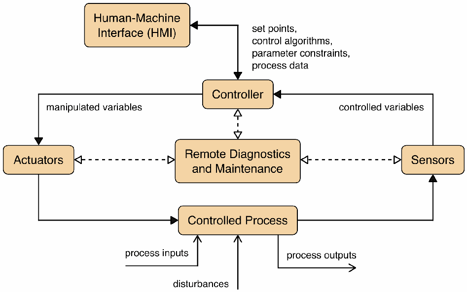
図1. 一般的なOTシステムの基本動作
Fig. 1. Basic operation of a typical OT system
図1. 一般的なOTシステムの基本動作
未レビュー訳2.3.1. OT System Design Considerations
2.3.1. OTシステムの設計上の考慮事項
未レビュー訳The design of an OT system depends on many factors, including whether a SCADA, DCS, or PLC-based topology is used. This section identifies key factors that drive design decisions regarding the control, communication, reliability, and redundancy properties of the OT system. Because these factors heavily influence the design of the OT system, they also help determine the system’s security needs.
OTシステムの設計は、SCADA、DCS、PLCベースのどのトポロジーを採用するかなど、多くの要因に左右される。本節では、OTシステムの制御、通信、信頼性、冗長性に関する設計判断を左右する主な要因を示す。これらの要因はOTシステムの設計に大きく影響するため、システムのセキュリティニーズを決める際にも役立つ。
未レビュー訳•Safety. Systems must be able to detect unsafe conditions and trigger actions to reduce unsafe conditions to safe ones. In most safety-critical operations, human oversight and control of a potentially dangerous process are essential.
•安全性。システムは危険な状態を検知し、その状態を安全なものにするための措置を起動できなければならない。ほとんどの安全上重要な運用では、危険を伴う可能性のあるプロセスに対する人間の監督と制御が不可欠である。
未レビュー訳•Control timing requirements. System processes have a wide range of time-related requirements, including very high speed, consistency, regularity, and synchronization. Humans may be unable to reliably and consistently meet these requirements, so automated controllers may be necessary. Some systems may require computation to be performed as close to sensors and actuators as possible to reduce communication latency and perform necessary control actions on time.
•制御タイミング要件。システムのプロセスには、非常に高い速度、一貫性、規則性、同期性など、幅広い時間関連要件がある。人間がこれらの要件を確実かつ一貫して満たせない場合があるため、自動コントローラーが必要となることがある。通信遅延を減らし、必要な制御動作を時間内に実行するため、一部のシステムではセンサーやアクチュエーターのできるだけ近くで計算を行う必要がある。
未レビュー訳•Geographic distribution. Systems have varying degrees of distribution, ranging from a small system (e.g., local PLC-controlled process) to large, distributed systems (e.g., oil pipelines, electric power grids). Greater distribution typically implies a need for wide area networking (e.g., leased lines, circuit switching, packet switching) and mobile communication.
•地理的な分散。システムの分散度はさまざまであり、（例えば、ローカルPLCで制御するプロセスのような）小規模システムから、（例えば、石油パイプラインや電力網のような）大規模な分散システムまである。分散範囲が広いほど、通常、広域ネットワーク（例えば、専用回線、回線交換、パケット交換）やモバイル通信が必要となる。
未レビュー訳•Hierarchy. Supervisory control is used to provide a central location that can aggregate data from multiple locations to support control decisions based on the current state of the system. A hierarchical or centralized control is often used to provide human operators with a comprehensive view of the entire system.
•階層構造。監督制御は、複数の場所からデータを集約する中央拠点を設け、システムの現在の状態に基づく制御判断を支援するために用いられる。階層型または集中型の制御は、人間のオペレーターにシステム全体の包括的な状況を示すためによく用いられる。
未レビュー訳•Control complexity. Simple controllers and preset algorithms can often perform control functions. However, more complex systems (e.g., air traffic control) require human operators to ensure that all control actions are appropriate for meeting the larger objectives of the system.
•制御の複雑さ。単純なコントローラーや事前設定されたアルゴリズムで制御機能を実行できる場合が多い。しかし、航空管制などのより複雑なシステムでは、システム全体の目標達成に向け、すべての制御動作が適切であることを人間のオペレーターが確認する必要がある。
未レビュー訳•Availability. Systems with strong availability and up-time requirements may require more redundancy or alternate implementations across all communications and controls.
•可用性。高い可用性と稼働時間が求められるシステムでは、通信および制御全体にわたって、冗長性を高めたり代替構成を用意したりする必要がある。
未レビュー訳•Impact of failures. The failure of a control function could cause substantially different impacts across domains. Systems with greater impacts often require the ability to continue operations through redundant controls or to operate in a degraded state.
•障害の影響。制御機能の障害がもたらす影響は、分野によって大きく異なる可能性がある。影響が大きいシステムでは、冗長制御によって運用を継続するか、縮退状態で運用する能力が求められることが多い。
未レビュー訳2.3.2. SCADA Systems
2.3.2. SCADAシステム
未レビュー訳Supervisory control and data acquisition (SCADA) systems are used to control dispersed assets for which centralized data acquisition is as important as control [Bailey][Boyer]. These systems are used in distribution systems, such as water distribution and wastewater collection systems, oil and natural gas pipelines, electrical utility transmission and distribution systems, and rail and other public transportation systems. SCADA systems integrate data acquisition systems with data transmission systems and HMI software to provide a centralized monitoring and control system for numerous process inputs and outputs. SCADA systems are designed to collect field information, transfer it to a control center, and display the information to the operator graphically or textually, thereby allowing the operator to monitor or control an entire system from a central location in near real-time. Based on the sophistication and setup of the individual system, control of any individual system, operation, or task can be automatic, or it can be performed by operator commands. Typical hardware includes a control server placed at a control center, communications equipment (e.g., radio, telephone line, cable, or satellite), and one or more geographically distributed field sites that consist of remote terminal units (RTUs) and/or PLCs that control actuators and/or monitor sensors. The control server stores and processes the information from RTU inputs and outputs, while the RTU or PLC controls the local process. The communications hardware allows for the transfer of information and data between the control server and the RTUs or PLCs. The software is programmed to tell the system what and when to monitor, what parameter ranges are acceptable, and what response to initiate when a process variable changes outside of acceptable values. An intelligent electronic device (IED), such as a protective relay, may communicate directly to the control server, or a local RTU may poll the IEDs to collect the data and pass it to the control server. IEDs provide a direct interface to control and monitor equipment and sensors. IEDs may be directly polled and controlled by the control server and, in most cases, have local programming that allows for the IED to act without direct instructions from the control center. SCADA systems are usually designed to be fault-tolerant systems with significant redundancy built in, although redundancy may not be a sufficient countermeasure in the face of a malicious attack.
監視制御・データ取得（SCADA）システムは、集中データ取得が制御と同じくらい重要な、分散資産を制御するために用いられる [Bailey][Boyer]。水道配水や下水収集、石油・天然ガスのパイプライン、電力の送配電、鉄道その他の公共交通機関などの配給システムで使われる。SCADAシステムは、データ取得システムをデータ伝送システムおよびHMIソフトウェアと統合し、多数のプロセス入出力を一元的に監視・制御する。現場情報を収集して制御センターに転送し、情報を図形またはテキストでオペレーターに表示することで、中央拠点からシステム全体をほぼリアルタイムに監視・制御できるように設計されている。個々のシステムの高度さや構成に応じて、システム、運用、タスクの制御は自動で行うことも、オペレーターの指令で行うこともできる。典型的なハードウェアには、制御センターに設置された制御サーバー、通信機器（例えば、無線、電話回線、ケーブル、衛星）、および地理的に分散した1つ以上の現場サイトが含まれる。現場サイトには、アクチュエーターを制御する、またはセンサーを監視する遠隔端末装置（RTU）やPLCが置かれる。制御サーバーはRTUの入出力情報を保存・処理し、RTUまたはPLCはローカルプロセスを制御する。通信ハードウェアは制御サーバーとRTUまたはPLC間の情報・データ転送を担う。ソフトウェアには、何をいつ監視するか、許容されるパラメーター範囲、およびプロセス変数が許容値を外れた場合に開始する応答が設定される。保護リレーなどのインテリジェント電子機器（IED）は制御サーバーと直接通信する場合があり、ローカルRTUがIEDをポーリングしてデータを収集し、制御サーバーに渡す場合もある。IEDは機器やセンサーを直接制御・監視するインターフェースを提供する。IEDは制御サーバーから直接ポーリング・制御されることもあり、多くの場合、制御センターから直接指示がなくても動作するローカルプログラムを備える。SCADAシステムは通常、十分な冗長性を備えたフォールトトレラントシステムとして設計されるが、悪意ある攻撃に対して冗長性だけでは十分な対策にならないことがある。
未レビュー訳Figure 2 shows the components and general configuration of a SCADA system. The control center at the top of the diagram houses a control server and the communications routers. Other control center components include the HMI, engineering workstations, and the data historian, which are all connected by a local area network (LAN). The control center collects and logs information gathered by the field sites, displays information to the HMI, and may generate actions based on detected events. The control center is also responsible for centralized alarming, trend analyses, and reporting. The field sites at the bottom of Fig. 2 locally control actuators and monitor sensors. Field sites are often equipped with a remote access capability to allow operators to perform remote diagnostics and repairs, usually over a separate dial-up modem or wide area network (WAN) connection. Standard and proprietary communication protocols that run over serial and network communications are used to transport information between the control center and field sites using telemetry techniques, such as telephone line, cable, fiber, and radio frequencies (e.g., broadcast, microwave, satellite).
図2は、SCADAシステムのコンポーネントと一般的な構成を示す。図の上部にある制御センターには制御サーバーと通信ルーターが置かれる。その他の構成要素であるHMI、エンジニアリング・ワークステーション、データヒストリアンも、ローカルエリアネットワーク（LAN）で接続される。制御センターは現場サイトが収集した情報を集めて記録し、HMIに表示し、検出した事象に基づいて動作を生成する場合もある。また、一元的な警報、傾向分析、報告も担う。図2の下部にある現場サイトは、アクチュエーターをローカルに制御し、センサーを監視する。現場サイトには、通常、別個のダイヤルアップモデムや広域ネットワーク（WAN）接続を介して、オペレーターが遠隔診断や修理を行えるようにするリモートアクセス機能が備わることが多い。シリアル通信やネットワーク通信上で動作する標準・独自の通信プロトコルにより、電話回線、ケーブル、光ファイバー、無線周波数（例えば、放送、マイクロ波、衛星）などのテレメトリー技術を用いて、制御センターと現場サイト間で情報を伝送する。
未レビュー訳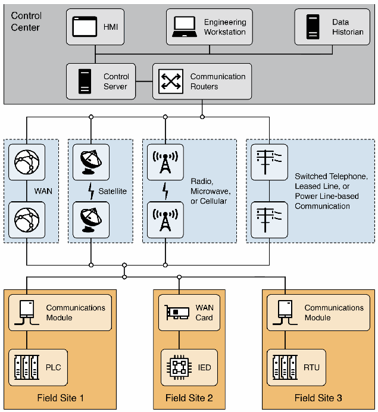
図2. 制御センター機器、通信機器、現場サイトを示す一般的なSCADAシステム構成
Fig. 2. A general SCADA system layout that shows control center devices, communications equipment, and field sites
図2. 制御センター機器、通信機器、現場サイトを示す一般的なSCADAシステム構成
未レビュー訳SCADA communication topologies vary among implementations. The various topologies used are shown in Fig. 3, including point-to-point, series, series-star, and multi-drop [AGA12]. Point-to-point is functionally the simplest type, though it can be expensive because of the individual channels needed for each connection. In a series configuration, the number of channels used is reduced, though channel sharing impacts the efficiency and complexity of SCADA operations. Similarly, the series-star and multi-drop configurations’ use of one channel per device results in decreased efficiency and increased system complexity. The four basic SCADA topologies shown in Fig. 3 can be further augmented by using dedicated devices to manage communication exchanges and perform message switching and buffering.
SCADA通信トポロジーは実装によって異なる。図3には、ポイントツーポイント、直列、直列スター、マルチドロップなど、さまざまなトポロジーが示されている [AGA12]。ポイントツーポイントは機能的には最も単純だが、接続ごとに個別のチャネルが必要となるため、費用がかさむことがある。直列構成では使用チャネル数を減らせるが、チャネル共有によってSCADA運用の効率と複雑さに影響が生じる。同様に、直列スターおよびマルチドロップ構成では、機器ごとに1つのチャネルを使うため、効率が低下し、システムの複雑さが増す。図3に示す4つの基本的なSCADAトポロジーは、通信交換を管理し、メッセージの切替やバッファリングを行う専用機器を追加して拡張できる。
未レビュー訳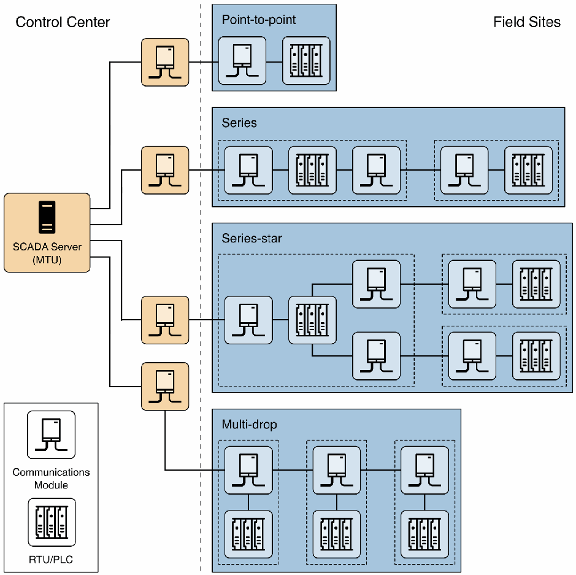
図3. ポイントツーポイント、直列、直列スター、マルチドロップのSCADA通信トポロジーの例
Fig. 3. Examples of point-to-point, series, series-star, and multi-drop SCADA communications topologies
図3. ポイントツーポイント、直列、直列スター、マルチドロップのSCADA通信トポロジーの例
未レビュー訳Large SCADA systems that contain hundreds of RTUs often employ a sub-control server to alleviate the burden on the primary server. This type of topology is shown in Fig. 4.
数百台のRTUを含む大規模SCADAシステムでは、主サーバーの負荷を軽減するためにサブ制御サーバーを採用することが多い。この種のトポロジーを図4に示す。
未レビュー訳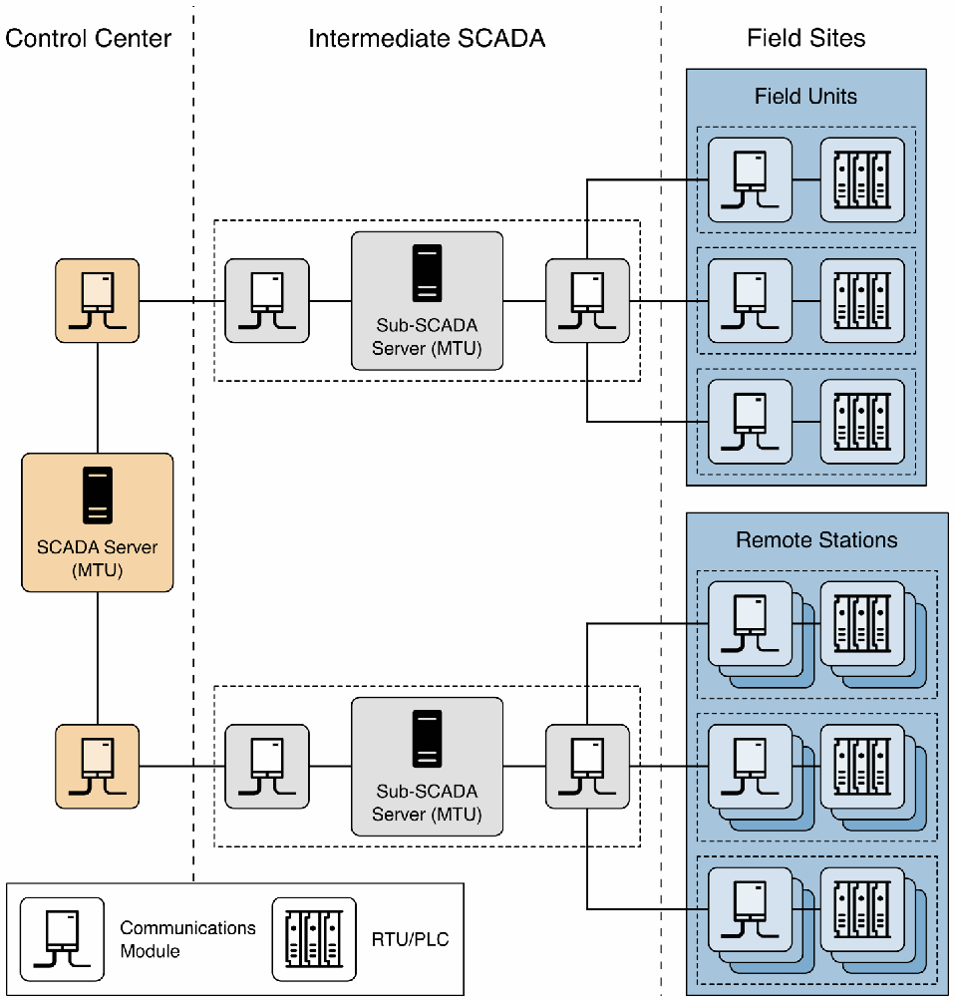
図4. 多数の遠隔局に対応するSCADAトポロジーの例
Fig. 4. An example SCADA topology that supports a large number of remote stations
図4. 多数の遠隔局に対応するSCADAトポロジーの例
未レビュー訳Figure 5 shows an example SCADA system implementation that consists of a primary control center and three field sites. A second backup control center provides redundancy in the event of a primary control center malfunction. Point-to-point connections are used for all communications between the control center and field site, and two connections use radio telemetry. The third field site is local to the control center and uses the WAN for communications. A regional control center resides above the primary control center for a higher level of supervisory control. The corporate enterprise network has access to all control centers through the WAN, and field sites can be accessed remotely for troubleshooting and maintenance operations. The primary control center polls field devices for data at defined intervals (e.g., 5 seconds, 60 seconds) and can send new set points to field devices as required. In addition to polling and issuing high-level commands, the control server also watches for priority interrupts from field site alarm systems.
図5は、主制御センターと3つの現場サイトで構成されるSCADAシステムの実装例を示す。主制御センターの故障に備え、2つ目のバックアップ制御センターが冗長性を提供する。制御センターと現場サイト間の通信にはすべてポイントツーポイント接続を用い、そのうち2つの接続では無線テレメトリーを使用する。3つ目の現場サイトは制御センターの近くにあり、WANで通信する。主制御センターの上位には地域制御センターがあり、より高いレベルの監督制御を行う。企業ネットワークはWAN経由ですべての制御センターにアクセスでき、現場サイトにも遠隔からアクセスしてトラブルシューティングや保守を行える。主制御センターは、定義された間隔（例えば、5秒、60秒）で現場機器をポーリングしてデータを取得し、必要に応じて新しい設定値を送信できる。ポーリングや上位指令の発行に加え、制御サーバーは現場サイトの警報システムからの優先割り込みも監視する。
未レビュー訳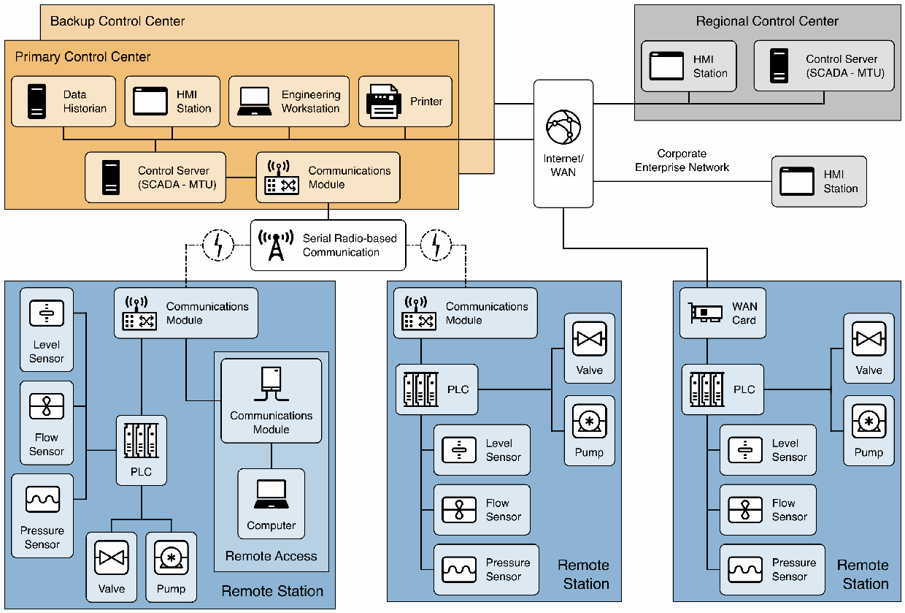
図5. 包括的なSCADAシステム実装例
Fig. 5. A comprehensive SCADA system implementation example
図5. 包括的なSCADAシステム実装例
未レビュー訳Figure 6 shows an example implementation for rail monitoring and control. This example includes a rail control center that houses the SCADA system and three sections of a rail system. The SCADA system polls the rail sections for information, such as the status of the trains, signal systems, traction electrification systems, and ticket vending machines. This information is also fed to operator consoles at the HMI stations within the rail control center. The SCADA system monitors operator inputs at the rail control center and disperses high-level operator commands to the rail section components. In addition, the SCADA system monitors conditions at the individual rail sections and issues commands based on these conditions (e.g., stopping a train to prevent it from entering an area that has been flooded or is occupied by another train).
図6は、鉄道の監視・制御の実装例を示す。ここには、SCADAシステムを備えた鉄道制御センターと、鉄道システムの3つの区間が含まれる。SCADAシステムは各区間をポーリングし、列車、信号システム、牽引電化システム、券売機などの状態を取得する。この情報は、鉄道制御センター内のHMIステーションにあるオペレーターコンソールにも送られる。SCADAシステムは鉄道制御センターでのオペレーター入力を監視し、上位のオペレーター指令を鉄道区間のコンポーネントに配信する。また、個々の区間の状態を監視し、その状態に基づいて指令を発行する（例えば、浸水した区域や別の列車が占有している区域への進入を防ぐため、列車を停止させる）。
未レビュー訳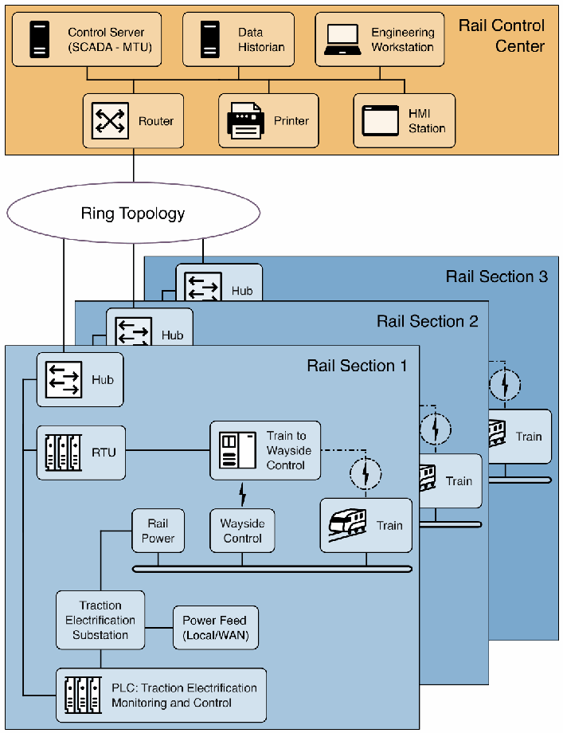
図6. 鉄道の監視・制御を行うSCADAシステムの実装例
Fig. 6. An example rail monitoring and control SCADA system implementation
図6. 鉄道の監視・制御を行うSCADAシステムの実装例
未レビュー訳2.3.3. Distributed Control Systems
2.3.3. 分散制御システム
未レビュー訳A distributed control system (DCS) is used to control production systems within the same geographic location for industries such as oil refineries, water and wastewater treatment, electric power generation, chemical manufacturing, automotive production, and pharmaceutical processing. These systems are usually process control or discrete part control systems. A DCS is integrated as a control architecture that contains a supervisory level of control to oversee multiple integrated sub-systems that are responsible for controlling the details of a localized process. A DCS uses a centralized supervisory control loop to mediate a group of localized controllers that share the overall tasks of carrying out an entire production process [Erickson]. Product and process control are usually achieved by deploying feedback or feedforward control loops, whereby key product and/or process conditions are automatically maintained around a desired set point. Specific process controllers or more capable PLCs are employed in the field and tuned to provide the desired tolerance and the rate of self-correction during process upsets. By modularizing the production system, a DCS reduces the impact of a single fault on the overall system. In many modern systems, the DCS is interfaced with the corporate enterprise network to give business operations a view of production. Figure 7 shows an example implementation of the components and general configuration of a DCS. This DCS encompasses an entire facility, from the bottom-level production processes up to the corporate enterprise layer. In this example, a supervisory controller (control server) communicates to its subordinates via a control network. The supervisor sends set points to and requests data from the distributed field controllers. The distributed controllers control their process actuators based on control server commands and sensor feedback from process sensors. Figure 7 also gives examples of low-level controllers found on a DCS system. The field control devices shown include a machine controller, a PLC, and a process controller. The machine controller interfaces with sensors and actuators using point-to-point wiring, while the other three field devices incorporate fieldbus networks to interface with process sensors and actuators. Fieldbus networks eliminate the need for point-to-point wiring between a controller and individual field sensors and actuators. Additionally, a fieldbus allows for greater functionality beyond control, including field device diagnostics, and can accomplish control algorithms within the fieldbus, thereby avoiding signal routing back to the PLC for every control operation. Standard industrial communication protocols designed by industry groups such as Modbus and Fieldbus [Berge] are often used on control networks and fieldbus networks. In addition to the supervisory-level and field-level control loops, intermediate levels of control may also exist. For example, in the case of a DCS controlling a discrete part manufacturing facility, there could be an intermediate level supervisor for each cell within the plant. This supervisor encompasses a manufacturing cell containing a machine controller that processes a part and a robot controller that handles raw stock and final products. There could be several of these cells that manage field-level controllers under the main DCS supervisory control loop.
分散制御システム（DCS）は、石油精製、水・下水処理、発電、化学製造、自動車生産、医薬品製造など、同一の地理的場所にある生産システムの制御に用いられる。これらは通常、プロセス制御または離散部品制御のシステムである。DCSは、統合された複数のサブシステムを監督し、局所プロセスの詳細を制御する階層を備えた制御アーキテクチャとして統合される。DCSは集中型の監督制御ループを用いて複数のローカルコントローラーを調整し、それらが生産プロセス全体を遂行する [Erickson]。製品およびプロセスの制御は通常、フィードバックまたはフィードフォワード制御ループによって行い、主要な製品・プロセス条件を望ましい設定値付近に自動維持する。現場には専用プロセスコントローラーや高機能PLCを配置し、プロセス変動時の所望の許容範囲や自己修正速度に合わせて調整する。生産システムをモジュール化することで、DCSは単一障害がシステム全体に及ぼす影響を軽減する。現代のシステムの多くでは、DCSを企業ネットワークに接続し、業務部門が生産状況を把握できるようにしている。図7は、DCSのコンポーネントと一般的な構成の実装例を示す。このDCSは、下位の生産プロセスから企業層まで、施設全体を包含する。この例では、監督コントローラー（制御サーバー）が制御ネットワークを介して下位機器と通信する。監督コントローラーは分散型フィールドコントローラーに設定値を送り、データを要求する。分散コントローラーは制御サーバーの指令とプロセスセンサーからのフィードバックに基づき、プロセスのアクチュエーターを制御する。図7には、DCSにある下位コントローラーの例も示されている。図のフィールド制御機器には、機械コントローラー、PLC、プロセスコントローラーが含まれる。機械コントローラーはポイントツーポイント配線でセンサーやアクチュエーターに接続するが、他の3つのフィールド機器はフィールドバスネットワークでプロセスセンサーやアクチュエーターに接続する。フィールドバスネットワークにより、コントローラーと個々のフィールドセンサー・アクチュエーター間のポイントツーポイント配線が不要になる。さらに、フィールドバスでは制御以外の機能も強化され、フィールド機器の診断を行えるほか、フィールドバス内で制御アルゴリズムを実行し、制御のたびに信号をPLCへ戻す必要をなくせる。ModbusやFieldbusなど、業界団体が策定した標準的な産業用通信プロトコルが、制御ネットワークやフィールドバスネットワークでよく使われる [Berge]。監督レベルとフィールドレベルの制御ループに加え、中間レベルの制御が存在する場合もある。例えば、離散部品製造施設を制御するDCSでは、工場内の各セルに中間レベルの監督コントローラーを配置できる。このコントローラーは、部品を加工する機械コントローラーと、原材料や完成品を扱うロボットコントローラーを備えた製造セルを監督する。こうしたセルが複数あり、メインDCSの監督制御ループの下でフィールドレベルのコントローラーを管理する場合もある。
未レビュー訳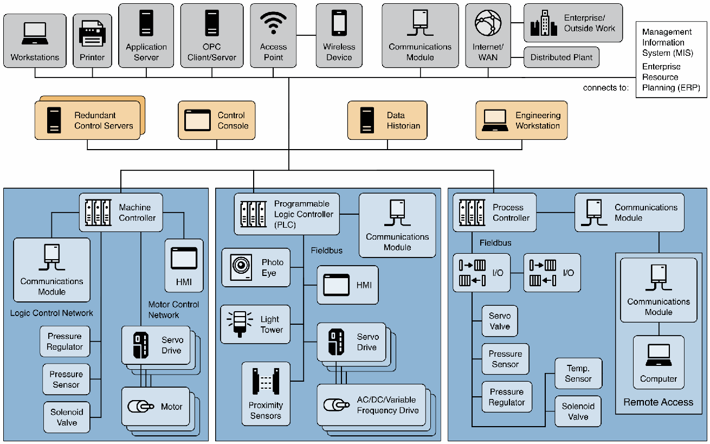
図7. 包括的なDCS実装例
Fig. 7. A comprehensive DCS implementation example
図7. 包括的なDCS実装例
未レビュー訳2.3.4. Programmable Logic Controller-Based Topologies
2.3.4. プログラマブル・ロジック・コントローラーを用いたトポロジー
未レビュー訳PLCs are used in both SCADA and DCS systems as the control components of an overall hierarchical system to locally manage processes through feedback control, as described in the previous sections. In the case of SCADA systems, they may provide similar functionality to RTUs. When used in DCS systems, PLCs are implemented as local controllers within a supervisory control scheme. PLCs can also be implemented as the primary controller in smaller OT system configurations to provide operational control of discrete processes (e.g., automobile assembly lines, process controllers). These topologies differ from SCADA and DCS in that they generally lack a central control server or HMI and, therefore, primarily provide closed-loop control with minimal human involvement. PLCs have a user-programmable memory for storing instructions for the purpose of implementing specific functions, such as I/O control, logic, timing, counting, three mode proportional-integral-derivative (PID) control, communications, arithmetic, and data and file processing. Figure 8 shows a PLC over a fieldbus network performing the control of a manufacturing process. The PLC is accessible via a programming interface located on an engineering workstation, and data is stored in a data historian, all of which are connected on a LAN.
PLCは、前節で説明したように、SCADAとDCSの両方で階層型システムの制御コンポーネントとして使われ、フィードバック制御によってプロセスをローカルに管理する。SCADAシステムでは、RTUと同様の機能を提供する場合がある。DCSでは、監督制御方式の下でローカルコントローラーとして実装される。PLCは、小規模なOTシステム構成で主コントローラーとして実装し、自動車組立ラインやプロセスコントローラーなど、離散プロセスの運用制御を行うこともできる。これらのトポロジーは、通常、中央制御サーバーやHMIを持たず、人間の関与を最小限に抑えた閉ループ制御を主に行う点で、SCADAやDCSと異なる。PLCは、I/O制御、論理、タイミング、カウント、3モード比例・積分・微分（PID）制御、通信、算術、データ処理、ファイル処理などの特定機能を実装する命令を保存するユーザープログラム可能メモリーを備える。図8は、フィールドバスネットワーク上のPLCが製造プロセスを制御する例を示す。PLCにはエンジニアリング・ワークステーション上のプログラミングインターフェースからアクセスでき、データはデータヒストリアンに保存される。これらはすべてLANに接続される。
未レビュー訳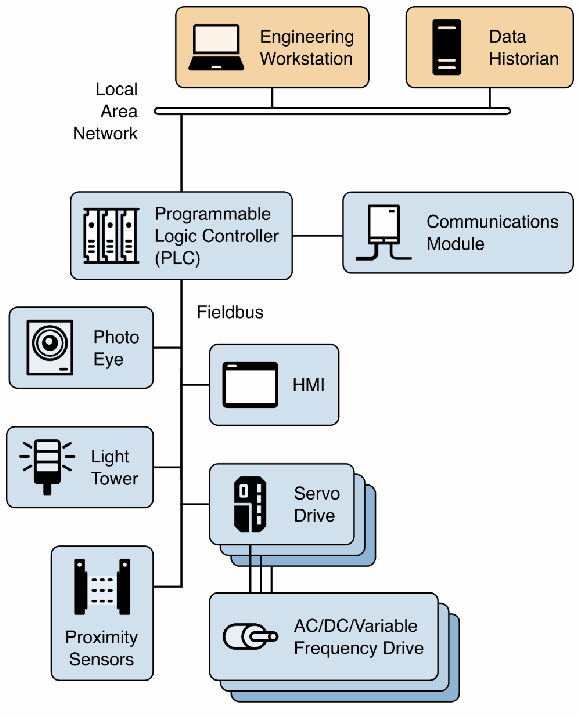
図8. PLC制御システムの実装例
Fig. 8. A PLC control system implementation example
図8. PLC制御システムの実装例
未レビュー訳2.3.5. Building Automation Systems
2.3.5. ビルオートメーションシステム
未レビュー訳A building automation system (BAS) is a type of OT used to control the many systems used in a building, including heating, ventilation, and air conditioning (HVAC); fire; electrical; lighting; physical access control; physical security; and other utility systems. Most modern buildings contain some form of a BAS when they are constructed. However, older buildings and equipment may have to be retrofitted to take advantage of the benefits that a BAS provides. Some of the most common functions of a BAS include maintaining environmental conditions for occupant comfort, reducing energy consumption, reducing operating and maintenance costs, increasing security, recording historical data (e.g., temperature, humidity), and performing general equipment monitoring (e.g., provide alerts to building personnel of device failure or an alarm condition). An example of a BAS is shown in Fig. 9. A BAS may communicate over wired or wireless paths to controllers or gateways. For example, environmental control sensors can provide the temperature and humidity to a building controller. If the sensor values are outside of the set points, the controller can signal a variable air volume (VAV) box to increase or decrease airflow and bring the temperature to the desired state. Similarly, a building occupant scanning their identification badge at a badge reader can result in the credentials being sent to the access control controller and application control server to determine whether access should be granted. While this guide contains recommendations that are applicable and could be used as a reference to protect a BAS against cybersecurity threats, readers are encouraged to perform a risk-based assessment on their systems and tailor the recommended guidelines and solutions to meet their specific security, business, and operational requirements.
ビルオートメーションシステム（BAS）は、暖房、換気、空調（HVAC）、火災、電気、照明、物理アクセス制御、物理セキュリティ、その他のユーティリティなど、建物内の各種システムを制御するOTの一種である。現代の建物の多くは、建設時に何らかのBASを備えている。一方、古い建物や設備では、BASの利点を得るために後付け改修が必要な場合がある。BASの一般的な機能には、居住者の快適性のための環境条件維持、エネルギー消費の削減、運用・保守コストの削減、セキュリティ向上、履歴データ（例えば、温度、湿度）の記録、一般的な機器監視（例えば、機器の故障や警報状態を建物担当者に通知する）がある。BASの例を図9に示す。BASは、有線または無線経路を介してコントローラーやゲートウェイと通信する。例えば、環境制御センサーは温度と湿度をビルコントローラーに知らせる。センサー値が設定値の範囲外の場合、コントローラーは可変風量（VAV）ボックスに信号を送り、風量を増減して温度を望ましい状態にする。建物の利用者がバッジリーダーに識別バッジをかざすと、認証情報がアクセス制御コントローラーとアプリケーション制御サーバーに送られ、アクセスを許可するか判断することもできる。本ガイドの推奨事項はBASをサイバーセキュリティ上の脅威から保護する際に適用・参照できるが、読者はシステムのリスクベース評価を実施し、個別のセキュリティ、ビジネス、運用要件に合わせて推奨ガイドラインとソリューションを調整することが望ましい。
未レビュー訳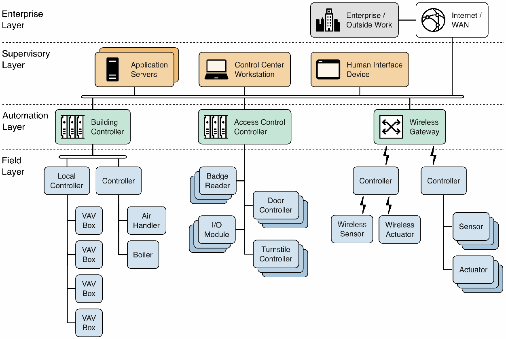
図9. BASの実装例
Fig. 9. A BAS implementation example
図9. BASの実装例
未レビュー訳2.3.6. Physical Access Control Systems
2.3.6. 物理アクセス制御システム
未レビュー訳A physical access control system (PACS) is a type of physical security system designed to control access to an area. Unlike standard physical barriers, physical access control can control who is granted access, when the access is granted, and how long the access should last. An access point is the entrance or barrier where access control is required. Some common physical access control examples of access points are doors and locks, security gates, turnstiles, and vehicular gate arms. Depending on the type of facility, there can be a single access point (e.g., for high-security areas) or many (e.g., for a large office building). An identification (ID) or personal credential is used to identify the authorized user trying to gain access to the area or facility. A PACS often requires a user to have credentials to gain entrance to a facility or access sensitive data. Examples of identification credentials include simple controls (e.g., PIN codes, passwords, key fobs, key cards) and more advanced credentials (e.g., encrypted badges, mobile credentials). Identification credentials allow the system to know who is attempting to gain access and to maintain access logs. Readers and/or keypads are typically located at the access point. The reader reads the data and sends it to a door controller to validate the credential and determine whether access should be authorized. If a keypad or biometric reader is also required (i.e., for multi-factor authentication), the user will enter their PIN or perform the biometric scan following their credential scan. An example of a PACS is shown in Fig. 10.
物理アクセス制御システム（PACS）は、区域へのアクセスを制御するために設計された物理セキュリティシステムの一種である。通常の物理的障壁と異なり、物理アクセス制御では、誰に、いつ、どのくらいの時間アクセスを許可するかを制御できる。アクセスポイントとは、アクセス制御が必要な入口または障壁を指す。一般的なアクセスポイントには、ドアと錠、セキュリティゲート、回転式ゲート、車両用ゲートアームがある。施設の種類に応じて、アクセスポイントが1か所（例えば、高セキュリティ区域）だけの場合も、多数（例えば、大規模オフィスビル）の場合もある。区域または施設へのアクセスを試みる利用者が許可された者か識別するため、識別情報（ID）または個人認証情報を使う。PACSでは、施設への入場や機密データへのアクセスに認証情報を要求することが多い。認証情報の例には、PINコード、パスワード、キーフォブ、キーカードなどの簡易なものと、暗号化バッジやモバイル認証情報などの高度なものがある。認証情報によって、システムはアクセスを試みている人物を把握し、アクセスログを維持できる。リーダーやキーパッドは通常、アクセスポイントに設置される。リーダーはデータを読み取り、ドアコントローラーに送信して認証情報を検証し、アクセスを許可すべきか判断する。キーパッドや生体認証リーダーも必要な場合（すなわち多要素認証を行う場合）、認証情報を読み取らせた後に利用者がPINを入力するか、生体認証を行う。PACSの例を図10に示す。
未レビュー訳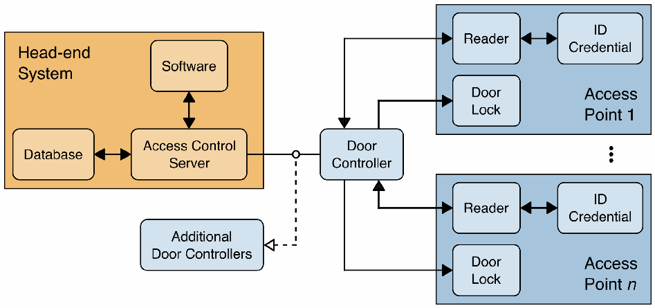
図10. PACSの実装例
Fig. 10. A PACS implementation example
図10. PACSの実装例
未レビュー訳In this example, the door controller receives credential data from the reader and verifies the identification credential. If the credential is approved by the access control server, the control panel transmits the command to authorize access and unlock the door. If the credential is denied, the door will remain locked, and the user will not be able to gain entry. All access attempts are logged by the door controller(s) and, ultimately, the access control server. The access control server is the repository for user information, access privileges, and audit logs. Depending on the system, the server might be on-premises or managed in the cloud. While this guide contains recommendations that are applicable and could be used as a reference to protect a PACS against cybersecurity threats, readers are encouraged to perform a risk-based assessment on their systems and tailor the recommended guidelines and solutions to meet their specific security, business, and operational requirements.
この例では、ドアコントローラーがリーダーから認証データを受信し、識別認証情報を検証する。アクセス制御サーバーが認証情報を承認すると、制御盤はアクセスを許可してドアを解錠する指令を送る。認証情報が拒否されると、ドアは施錠されたままとなり、利用者は入場できない。すべてのアクセス試行はドアコントローラーに記録され、最終的にはアクセス制御サーバーに保存される。アクセス制御サーバーは、利用者情報、アクセス権限、監査ログの保管場所となる。システムによって、サーバーはオンプレミスの場合もクラウド管理の場合もある。本ガイドの推奨事項はPACSをサイバーセキュリティ上の脅威から保護する際に適用・参照できるが、読者はシステムのリスクベース評価を実施し、個別のセキュリティ、ビジネス、運用要件に合わせて推奨ガイドラインとソリューションを調整することが望ましい。
未レビュー訳2.3.7. Safety Systems
2.3.7. 安全システム
未レビュー訳Many of the physical processes that OT systems control have the potential to create hazardous situations to human life and safety, property, and the environment. Safety systems are designed to reduce the likelihood and/or consequence of these potentially hazardous situations by bringing the system to a safe state. There are several types of safety systems related to OT environments, including emergency shut down (ESD), process safety shutdown (PSS), and fire and gas systems (FGS). One of the more well-known types of safety system is the safety instrumented system (SIS), which is composed of one or more safety instrumented functions (SIFs). An SIF is an engineered system that is typically comprised of sensors, logic solvers, and final control elements (e.g., actuators) whose purpose is to bring a system to a safe state when predetermined thresholds are violated. An SIS is implemented as part of an overall risk reduction strategy to reduce the likelihood and/or potential consequences of a previously identified event so that it is within the organization’s risk tolerance. Although numerous other terms are associated with safety systems, the SIS is specifically designed in accordance with [IEC61511]. An SIS is typically found in chemical, refinery, and nuclear processes. An SIS is often independent from all other control systems in such a manner that a failure of the basic process control system (BPCS) will not impact SIS functionality in a deleterious manner. Historically, an SIS was designed to be stand-alone, physically and logically separated, and air-gapped from the rest of the control system. In the configuration shown in Fig. 11, the SIS and BPCS operate completely independent of each other with no direct communication between the systems. However, some modern SISs have been designed to allow communication with the control system. These types of SISs are called Integrated Control and Safety Systems (ICSSs). An ICSS solution may be an all-in-one device from a single vendor or incorporate multiple devices from multiple vendors. While an ICSS combines the functionality of both control and safety systems, the SIS must still comply with the requirements outlined in [IEC61511]. One of the advantages to this ICSS methodology is the ability to communicate information from the SIS to the BPCS. While this guide contains recommendations that are applicable and could be used as a reference to protect safety systems against cybersecurity threats, readers are encouraged to perform a risk-based assessment on their systems and tailor the recommended guidelines and solutions to meet their specific security, business, and operational requirements.
OTシステムが制御する多くの物理プロセスには、人命・安全、財産、環境に危険をもたらす可能性がある。安全システムは、システムを安全状態に移行させ、こうした危険な状況が発生する可能性やその影響を低減するよう設計されている。OT環境に関連する安全システムには、緊急停止（ESD）、プロセス安全停止（PSS）、火災・ガスシステム（FGS）などがある。よく知られた安全システムの一つが安全計装システム（SIS）であり、1つ以上の安全計装機能（SIF）で構成される。SIFは通常、センサー、ロジックソルバー、最終制御要素（例えば、アクチュエーター）で構成されるよう設計されたシステムで、所定のしきい値に違反したときシステムを安全状態に移行させる。SISは、特定済みの事象が発生する可能性や潜在的影響を低減し、組織のリスク許容度内に収めるための総合的なリスク低減戦略の一部として実装される。安全システムには他にも多数の用語があるが、SISは[IEC61511]に従って特別に設計される。SISは通常、化学、製油、原子力のプロセスで用いられる。SISは多くの場合、他の制御システムから独立しており、基本プロセス制御システム（BPCS）の障害がSIS機能に悪影響を及ぼさないようにされる。従来、SISは単独で、物理的・論理的に分離され、制御システムの他の部分からエアギャップを設けて設計されていた。図11の構成では、SISとBPCSは相互に直接通信せず、それぞれ完全に独立して動作する。ただし、近年のSISには制御システムとの通信を可能にするものもある。これらは統合制御安全システム（ICSS）と呼ばれる。ICSSは単一ベンダーの一体型装置の場合も、複数ベンダーの複数機器を組み合わせる場合もある。ICSSは制御と安全の両方の機能を統合するが、SISは引き続き[IEC61511]の要件に適合しなければならない。この方式の利点の一つは、SISからBPCSへ情報を伝達できることである。本ガイドの推奨事項は安全システムをサイバーセキュリティ上の脅威から保護する際に適用・参照できるが、読者はシステムのリスクベース評価を実施し、個別のセキュリティ、ビジネス、運用要件に合わせて推奨ガイドラインとソリューションを調整することが望ましい。
未レビュー訳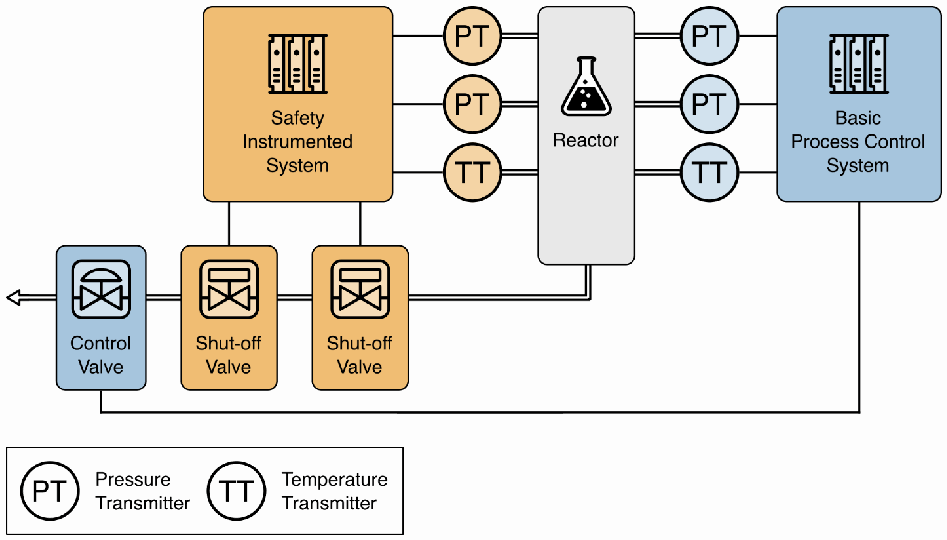
図11. SISの実装例
Fig. 11. An SIS implementation example
図11. SISの実装例
未レビュー訳2.3.8. Industrial Internet of Things
2.3.8. 産業用モノのインターネット
未レビュー訳The Industrial Internet of Things (IIoT) consists of sensors, instruments, machines, and other devices that are networked together and use internet connectivity to enhance industrial and manufacturing business processes and applications [Berge]. As IT and OT systems continue to converge and become even more interconnected, the control of physical processes remains a relatively unique and critical concept of OT. The Industry IoT Consortium proposes a three-tier system architecture model for representing IIoT systems [IIRA19]: the edge tier, platform tier, and enterprise tier. Each tier plays a specific role in processing the data flows and control flows involved in usage activities. The tiers are connected by three networks: the proximity network, access network, and service network. An example architecture is shown in Fig. 12. The enterprise tier implements domain-specific applications and decision support systems, provides interfaces to end users, receives data flows from the other tiers, and issues control commands to the other tiers. The platform tier receives, processes, and forwards control commands from the enterprise tier to the edge tier. It consolidates processes and analyzes data flows from the other tiers, provides management functions for devices and assets, and offers non-domain-specific services, such as data query and analytics. Based on the specific implementation, these functions can be implemented on the IIoT platform that is deployed in an on-site data center, an off-site data center, or in the cloud. The service network enables connectivity between the services in the platform tier, the enterprise tier, and the services within each tier. This connectivity may be an overlay private network over the public internet or the internet itself, allowing enterprise-grade security between end users and services. The edge tier collects data from the edge nodes using the proximity network. The architectural characteristics of this tier vary depending on the specific implementation (e.g., geographical distribution, physical location, governance scope). It is a logical layer rather than a true physical division. From a business perspective, the location of the edge depends on the business objectives.
産業用モノのインターネット（IIoT）は、センサー、計測器、機械、その他の機器をネットワーク接続し、インターネット接続を利用して産業・製造業の業務プロセスやアプリケーションを強化するものである [Berge]。ITとOTの融合が進み、相互接続がさらに進んでも、物理プロセスの制御はOT固有の重要な概念であり続ける。Industry IoT Consortiumは、IIoTシステムを表現する3層システムアーキテクチャモデルを提案している [IIRA19]。すなわち、エッジ層、プラットフォーム層、エンタープライズ層である。各層は、利用活動に関わるデータフローと制御フローの処理で固有の役割を担う。各層は、近接ネットワーク、アクセスネットワーク、サービスネットワークの3つで接続される。図12にアーキテクチャ例を示す。エンタープライズ層は、ドメイン固有のアプリケーションと意思決定支援システムを実装し、エンドユーザー向けインターフェースを提供し、他の層からデータフローを受け取り、他の層に制御コマンドを発行する。プラットフォーム層は、エンタープライズ層から制御コマンドを受け取り、処理してエッジ層へ転送する。他層からのデータフローを統合・処理・分析し、機器や資産の管理機能を提供するとともに、データ照会や分析などのドメイン固有でないサービスを提供する。実装によっては、オンサイトのデータセンター、オフサイトのデータセンター、またはクラウドに展開したIIoTプラットフォーム上でこれらの機能を実現する。サービスネットワークは、プラットフォーム層、エンタープライズ層、各層内のサービス間の接続を可能にする。この接続は、エンドユーザーとサービス間にエンタープライズ級のセキュリティを提供するため、公衆インターネット上のオーバーレイプライベートネットワークまたはインターネットそのものの場合がある。エッジ層は近接ネットワークを使ってエッジノードからデータを収集する。この層のアーキテクチャ特性は、地理的分散、物理的場所、ガバナンスの範囲など、実装によって異なる。これは物理的な区分ではなく論理層である。ビジネスの観点では、エッジの位置は事業目標によって決まる。
未レビュー訳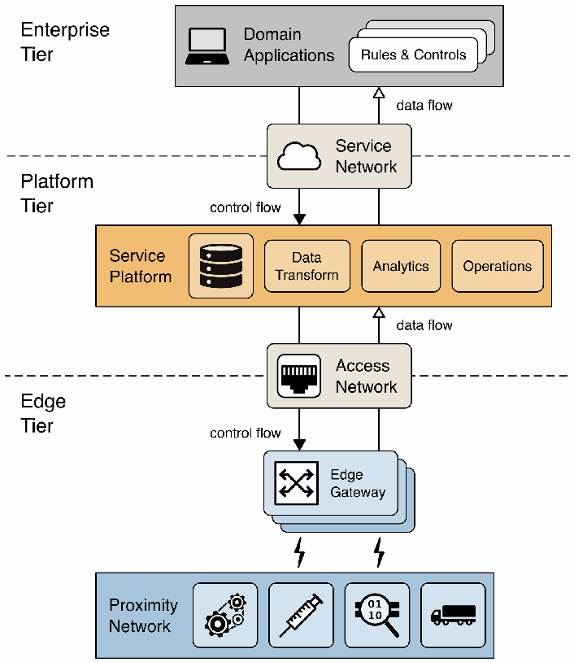
図12. 3層のIIoTシステムアーキテクチャ
Fig. 12. A three-tiered IIoT system architecture
図12. 3層のIIoTシステムアーキテクチャ
未レビュー訳Edge computing is a decentralized computing infrastructure in which computing resources and application services can be distributed along the communication path between the data source and the cloud. It exists vertically within the full stack (i.e., from the device to the cloud) and horizontally across IIoT subsystems. The edge is not merely a way to collect data for transmission to the datacenter or cloud; it also processes, analyzes, and acts on data collected at the edge and is, therefore, essential for optimizing industrial data at every aspect of an operation.
エッジコンピューティングは、データソースとクラウド間の通信経路に沿って、計算リソースとアプリケーションサービスを分散配置できる分散型コンピューティング基盤である。デバイスからクラウドまでのフルスタック内に垂直方向に存在し、IIoTサブシステム間に水平方向にも広がる。エッジは、データセンターやクラウドに送るデータを収集するだけの仕組みではない。エッジで収集したデータを処理・分析し、それに基づいて動作も行うため、運用のあらゆる側面で産業データを最適化するうえで不可欠である。
未レビュー訳The IIoT system architecture is fully distributed and can support a wide range of interactions and communication paradigms, including:
IIoTシステムアーキテクチャは完全に分散されており、次のような幅広い相互作用や通信パラダイムをサポートできる。
未レビュー訳•Peer-to-peer networking (e.g., security cameras communicating about identified objects)
•ピアツーピアネットワーク（例えば、識別した物体について通信するセキュリティカメラ）
未レビュー訳•Edge-device collaboration (e.g., wind turbines in remote locations)
•エッジデバイス間の協調（例えば、遠隔地にある風力タービン）
未レビュー訳•Distributed queries across data stored in devices, in the cloud, and anywhere in between
•デバイス、クラウド、その中間に保存されたデータに対する分散クエリ
未レビュー訳•Distributed data management that defines where and what data is to be stored and for how long
•データの保存場所・内容・保存期間を定める分散データ管理
未レビュー訳•Data governance, including quality, discovery, usability, privacy, and security
•品質、探索可能性、ユーザビリティ、プライバシー、セキュリティを含むデータガバナンス
未レビュー訳The proximity network connects edge nodes (e.g., sensors, actuators, devices, OT systems and assets) to the stack. It typically connects these edge nodes as one or more clusters to a gateway that bridges to other networks. The access network enables connectivity for data and control flow between the edge and platform tiers. This connection may be a corporate network or an overlay private network over the public internet or a 4G/5G network. While this guide contains recommendations that are applicable and could be used as a reference to protect IIoT against cybersecurity threats, readers are encouraged to perform a risk-based assessment on their systems and tailor the recommended guidelines and solutions to meet their specific security, business, and operational requirements.
近接ネットワークは、エッジノード（例えば、センサー、アクチュエーター、デバイス、OTシステムおよび資産）をスタックに接続する。通常、1つ以上のクラスターとしてエッジノードをゲートウェイに接続し、ゲートウェイが他のネットワークとの橋渡しをする。アクセスネットワークは、エッジ層とプラットフォーム層間のデータフローおよび制御フローの接続を可能にする。この接続は企業ネットワークの場合もあれば、公衆インターネット上のオーバーレイプライベートネットワークや4G/5Gネットワークの場合もある。本ガイドの推奨事項はIIoTをサイバーセキュリティ上の脅威から保護する際に適用・参照できるが、読者はシステムのリスクベース評価を実施し、個別のセキュリティ、ビジネス、運用要件に合わせて推奨ガイドラインとソリューションを調整することが望ましい。
未レビュー訳Comparing OT and IT System Security
OTとITシステムのセキュリティ比較
未レビュー訳OT has many characteristics that differ from traditional IT systems, including different risks and priorities. Some of these include significant risk to the health and safety of human lives, serious damage to the environment, and financial issues, such as production losses. OT has different performance and reliability requirements and uses OSs and applications that may be considered unconventional in a typical IT network environment. Security protections must be implemented in a way that maintains system integrity during normal operations as well as during cyber attacks [Knapp]. Initially, OT systems had little resemblance to IT systems because they were isolated and ran proprietary control protocols using specialized hardware and software. Widely available and low-cost Ethernet, Internet Protocol (IP), and wireless devices are now replacing older proprietary technologies, which increases the likelihood of cybersecurity vulnerabilities and incidents. OT are increasingly resembling IT systems as they adopt IT technologies to promote corporate connectivity and remote access capabilities (e.g., using industry standard computers, OSs, and network protocols). This integration supports new IT capabilities but provides significantly less isolation for OT from the outside world than predecessor systems, creating a greater need to secure them. While security solutions have been designed to deal with these issues in typical IT systems, special precautions must be taken when introducing these same solutions to OT environments. In some cases, new security solutions are needed that are tailored to the OT environment.
OTには、従来のITシステムとは異なるリスクや優先事項など、多くの相違点がある。人命の健康と安全に対する重大なリスク、環境への深刻な損害、生産損失などの財務上の問題が含まれる。OTには異なる性能・信頼性要件があり、一般的なITネットワーク環境では特殊と見なされるOSやアプリケーションが使われる。セキュリティ保護は、通常運用時もサイバー攻撃時もシステムの完全性を維持する方法で実装しなければならない [Knapp]。当初のOTシステムは隔離され、独自の制御プロトコルを専用ハードウェアとソフトウェアで実行していたため、ITシステムとはほとんど似ていなかった。現在は、広く普及し低コストのイーサネット、インターネットプロトコル（IP）、無線機器が従来の独自技術に置き換わり、サイバーセキュリティの脆弱性やインシデントの可能性が高まっている。OTは、企業接続やリモートアクセスを可能にするためにIT技術（例えば、業界標準のコンピューター、OS、ネットワークプロトコル）を採用し、ITシステムにますます似てきている。この統合は新しいIT機能を支える一方、以前のシステムよりも外部からの隔離を大きく弱め、セキュリティ確保の必要性を高めている。一般的なITシステムでこうした問題に対処するために設計されたセキュリティソリューションをOT環境に導入する場合は、特別な注意が必要である。場合によっては、OT環境に合わせた新しいセキュリティソリューションが必要となる。
未レビュー訳Some special considerations when securing OT include:
OTを保護する際の特別な考慮事項には、次のものがある。
未レビュー訳•Timeliness and performance requirements. OT systems are generally time-critical, with the criterion for acceptable levels of delay and jitter dictated by the individual installation. Some systems require reliable, deterministic responses. High throughput is typically not essential to OT. In contrast, IT systems typically require high throughput and can withstand some level of delay and jitter. For some OT, automated response times or system responses to human interaction is critical. Many OT systems utilize real-time OSs (RTOS), where real-time refers to timeliness requirements. The units of real time are highly application-dependent and must be explicitly stated.
•適時性と性能の要件。OTシステムは一般に時間制約が厳しく、許容可能な遅延やジッターの基準は個々の設置環境で定められる。確実で決定論的な応答を必要とするシステムもある。OTでは通常、高スループットは必須ではない。一方、ITシステムでは通常、高スループットが求められ、ある程度の遅延やジッターを許容できる。一部のOTでは、自動応答時間や人間の操作に対するシステム応答が重要である。多くのOTシステムではリアルタイムOS（RTOS）を使用する。ここでいうリアルタイムとは、適時性の要件を指す。リアルタイムの単位はアプリケーションに大きく依存するため、明示しなければならない。
未レビュー訳•Availability requirements. Many OT processes are continuous in nature. Unexpected outages of systems that control industrial processes are unacceptable. Outages must often be planned and scheduled days or weeks in advance. Exhaustive pre-deployment testing is essential to ensuring high availability (i.e., reliability) for the OT. OT systems often cannot be stopped and started without affecting production. In some cases, the products produced or equipment being used are more important than the information being relayed. Therefore, typical IT strategies (e.g., rebooting a component) are usually not acceptable for OT due to adverse impacts on the requirements for high availability, reliability, and maintainability. Some OT employ redundant components – often running in parallel – to provide continuity when primary components are unavailable.
•可用性要件。多くのOTプロセスは継続的に稼働する。産業プロセスを制御するシステムの予期しない停止は許容できない。停止は数日または数週間前に計画・調整しなければならないことが多い。OTの高可用性（すなわち信頼性）を確保するには、展開前の徹底的な試験が不可欠である。OTシステムは、生産に影響を与えずに停止・再起動できないことが多い。情報伝達よりも、生産物や使用中の設備の方が重要な場合もある。そのため、再起動などの一般的なIT戦略は、高可用性、信頼性、保守性の要件に悪影響を及ぼすため、通常OTでは許容できない。一部のOTでは、主コンポーネントが利用できない場合も継続できるよう、並行稼働することが多い冗長コンポーネントを使用する。
未レビュー訳•Risk management requirements. In a typical IT system, primary concerns include data confidentiality and integrity. For OT, primary concerns include safety, fault tolerance to prevent the loss of life or endangerment of public health or confidence, regulatory compliance, loss of equipment, loss of intellectual property, or lost or damaged products. The personnel responsible for operating, securing, and maintaining OT must understand the important link between safety and security. Any security measure that impairs safety is unacceptable.
•リスク管理要件。一般的なITシステムでは、データの機密性と完全性が主な関心事である。OTでは、安全性、人命の損失や公衆衛生・信頼への危険を防ぐフォールトトレランス、規制遵守、設備の損失、知的財産の損失、製品の損失や損傷などが主な関心事となる。OTの運用、保護、保守を担当する人員は、安全とセキュリティの重要な結びつきを理解しなければならない。安全性を損なうセキュリティ対策は許容できない。
未レビュー訳•Physical effects. Field devices (e.g., PLCs, operator stations, DCS controllers) are directly responsible for controlling physical processes. OT can have complex interactions with physical processes and consequences in the OT domain that can manifest in physical events. Understanding these potential physical effects often requires communication between experts in OT and experts in the particular physical domain.
•物理的影響。フィールド機器（例えば、PLC、オペレーターステーション、DCSコントローラー）は物理プロセスを直接制御する。OTは物理プロセスと複雑に相互作用し、OT領域内の結果が物理的事象として現れることがある。こうした物理的影響の可能性を理解するには、OTの専門家と特定の物理分野の専門家との連携が必要となることが多い。
未レビュー訳•System operation. OT OSs and control networks are often quite different from their IT counterparts and require different skill sets, experience, and levels of expertise. Control networks are typically managed by control engineers rather than IT personnel. Assuming that differences are insignificant can have disastrous consequences on system operations.
•システム運用。OTのOSや制御ネットワークはITのものと大きく異なることが多く、異なる技能、経験、専門性が必要となる。制御ネットワークは通常、IT担当者ではなく制御エンジニアが管理する。相違点は重要でないと仮定すると、システム運用に壊滅的な結果をもたらすおそれがある。
未レビュー訳•Resource constraints. OT and their real-time operating systems (RTOSs) are often resource-constrained systems that do not include typical contemporary IT security capabilities. Legacy systems often lack resources that are common on modern IT systems. Many systems may also lack desired features, including encryption capabilities, error logging, and password protection. Indiscriminate use of IT security practices in OT may cause availability and timing disruptions. There may not be computing resources available on OT components to retrofit these systems with current security capabilities. Adding resources or features may not be possible.
•リソース制約。OTとそのリアルタイムOS（RTOS）はリソース制約のあるシステムであることが多く、一般的な最新ITセキュリティ機能を備えていない。レガシーシステムには、最新ITシステムに一般的なリソースが不足していることが多い。暗号化、エラーログ、パスワード保護など、望ましい機能を欠くシステムもある。ITセキュリティ慣行を無差別にOTへ適用すると、可用性やタイミングに支障を来す可能性がある。OTコンポーネントには、現在のセキュリティ機能を追加するための計算リソースがない場合もある。リソースや機能を追加できないこともある。
未レビュー訳•Communications. Communication protocols and media used by OT environments for field device control and intra-processor communication are typically different from IT environments and may be proprietary.
•通信。OT環境でフィールド機器制御やプロセッサ間通信に使われる通信プロトコルや媒体は、通常IT環境とは異なり、独自仕様の場合もある。
未レビュー訳•Change management. Change management is paramount to maintaining the integrity of both IT and OT systems. Unpatched software represents one of the greatest vulnerabilities to a system. Software updates on IT systems, including security patches, are typically applied in a timely fashion based on appropriate security policies and procedures. In addition, these procedures are often automated using server-based tools. Software updates on OT cannot always be implemented on a timely basis. These updates need to be thoroughly tested by both the vendor and the end user of the industrial control application before being implemented. Additionally, the OT owner must plan and schedule OT outages days or weeks in advance. The OT may also require revalidation as part of the update process. Another issue is that many OT utilize older versions of OSs that are no longer supported by the vendor through patches. Change management is also applicable to hardware and firmware. The change management process requires careful assessment by OT experts (e.g., control engineers) working in conjunction with security and IT personnel.
•変更管理。変更管理は、ITシステムとOTシステムの完全性を維持するうえで極めて重要である。未修正のソフトウェアはシステムにとって最大級の脆弱性の一つである。ITシステムでは、適切なセキュリティ方針・手順に基づき、セキュリティパッチを含むソフトウェア更新を通常適時に適用し、サーバーベースのツールで自動化することも多い。OTではソフトウェア更新を適時に実施できない場合がある。更新は、導入前にベンダーと産業制御アプリケーションのエンドユーザーの双方が十分に試験する必要がある。また、OT所有者は数日または数週間前に停止を計画・調整しなければならない。更新の一環としてOTの再検証が必要な場合もある。さらに、多くのOTでは、ベンダーがパッチでサポートしなくなった古いOSを使用している。変更管理はハードウェアとファームウェアにも適用される。変更管理プロセスでは、OTの専門家（例えば、制御エンジニア）がセキュリティ担当者やIT担当者と連携し、慎重に評価する必要がある。
未レビュー訳•Managed support. Typical IT systems allow for diversified support styles, perhaps supporting disparate but interconnected technology architectures. For OT, service support is sometimes only available from a single vendor. In some instances, third-party security solutions are not allowed due to OT vendor licensing and service agreements, and service support can be lost if third-party applications are installed without vendor acknowledgement or approval.
•管理されたサポート。一般的なITシステムでは、相互接続された異種技術アーキテクチャを支援するなど、多様なサポート形態が可能である。OTでは、単一ベンダーしかサービスサポートを提供できない場合がある。OTベンダーのライセンスやサービス契約により、サードパーティ製セキュリティソリューションが認められない場合もある。また、ベンダーの承認を得ずにサードパーティ製アプリケーションを導入すると、サービスサポートを受けられなくなることもある。
未レビュー訳•Component lifetime. Typical IT components have a lifetime on the order of three to five years due to the quick evolution of technology. For OT, where technology has been developed in many cases for specific uses and implementations, the lifetime of the deployed technology is often in the order of 10 to 15 years and sometimes longer.
•コンポーネントの寿命。技術の進歩が速いため、一般的なITコンポーネントの寿命は3～5年程度である。OTでは、特定の用途や実装向けに開発された技術が多く、導入済み技術の寿命は通常10～15年程度、場合によってはそれ以上となる。
未レビュー訳•Component location. Most IT components and some OT components are located in business and commercial facilities that are physically accessible by local transportation. Remote locations may be utilized for backup facilities. Distributed OT components may be isolated, remote, and require extensive transportation effort to reach. The component location also needs to consider necessary physical and environmental security measures.
•コンポーネントの設置場所。ITコンポーネントの大半とOTコンポーネントの一部は、地域交通で物理的にアクセス可能な業務・商業施設に設置される。遠隔地がバックアップ施設として使われることもある。分散型OTコンポーネントは隔離された遠隔地にあり、到達に多大な移動が必要な場合がある。設置場所に応じて、必要な物理的・環境的セキュリティ対策も考慮する必要がある。
未レビュー訳Table 1 summarizes some of the typical differences between IT and OT systems.
表1に、ITシステムとOTシステムの典型的な相違点をまとめる。
未レビュー訳Table 1. Summary of typical differences between IT and OT systems
表1. ITシステムとOTシステムの典型的な相違点の概要
未レビュー訳| Category | Information Technology | Operational Technology |
| Performance Requirements | Non-real time Response must be consistent. High throughput is demanded. High delay and jitter may be acceptable. Emergency interaction is less critical. Tightly restricted access control can be implemented to the degree necessary for security. | Real-time Response is time-critical. Modest throughput is acceptable. High delay and/or jitter is unacceptable. Response to human and other emergency interaction is critical. Access to OT should be strictly controlled but should not hamper or interfere with human-machine interaction. |
原本の表画像
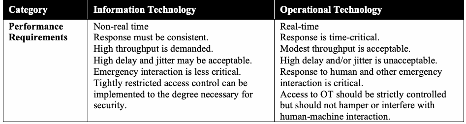
| 区分 | 情報技術 | 運用技術 |
| 性能要件 | 非リアルタイム。応答は一貫している必要がある。高スループットが求められる。高い遅延やジッターは許容される場合がある。緊急時の対話の重要性は比較的低い。セキュリティ上必要な程度まで、厳格に制限されたアクセス制御を実装できる。 | リアルタイム。応答は時間制約が厳しい。中程度のスループットで許容される。高い遅延やジッターは許容できない。人間やその他の緊急時の操作への応答が重要である。OTへのアクセスは厳格に管理すべきだが、人間と機械の対話を妨げてはならない。 |
| Category | Information Technology | Operational Technology |
| Availability (Reliability) Requirements | Responses such as rebooting are acceptable. Availability deficiencies can often be tolerated, depending on the system’s operational requirements. | Responses such as rebooting may not be acceptable because of process availability requirements. Availability requirements may necessitate redundant systems. Outages must be planned and scheduled days or weeks in advance. High availability requires exhaustive pre- deployment testing. |
| Risk Management Requirements | Manage data Data confidentiality and integrity is paramount. Fault tolerance is less important; momentary downtime is not a major risk. The major risk impact is a delay of business operations. | Control physical world Human safety is paramount, followed by protection of the process. Fault tolerance is essential; even momentary downtime may be unacceptable. The major risk impacts are regulatory non- compliance, environmental impacts, and the loss of life, equipment, or production. |
| System Operation | Systems are designed for use with typical OSs. Upgrades are straightforward with the availability of automated deployment tools. | Systems often use different and possibly proprietary OSs, sometimes without security capabilities built in. Software changes must be carefully made, usually by software vendors, because of the specialized control algorithms and potentially modified hardware and software involved. |
| Resource Constraints | Systems are specified with enough resources to support the addition of third- party applications, such as security solutions. | Systems are designed to support the intended industrial process and may not have enough memory and computing resources to support the addition of security capabilities. |
| Communications | Standard IT communications protocols are used. Primarily wired networks with some localized wireless capabilities. Typical IT networking practices are employed. | Many proprietary and standard communication protocols are used. Several types of communications media are used, including dedicated wired and wireless (e.g., radio and satellite). Complex networks exist that sometimes require the expertise of control engineers. |
| Change Management | Software changes are applied in a timely fashion in the presence of good security policies and procedures, and the procedures are often automated. | Software changes must be thoroughly tested and deployed incrementally throughout a system to ensure that the integrity of the OT system is maintained. OT outages must often be planned and scheduled days or weeks in advance. OT may use OSs that are no longer supported. OT systems often have custom applications. |
| Managed Support | Allow for diversified support styles | Service support is usually provided through a single vendor. |
| Component Lifetime | Lifetime on the order of three to five years | Lifetime on the order of 10 to 15 years |
| Components Location | Components are usually local and easy to access. | Components can be isolated, remote, and require extensive physical effort to gain access to them. |
原本の表画像
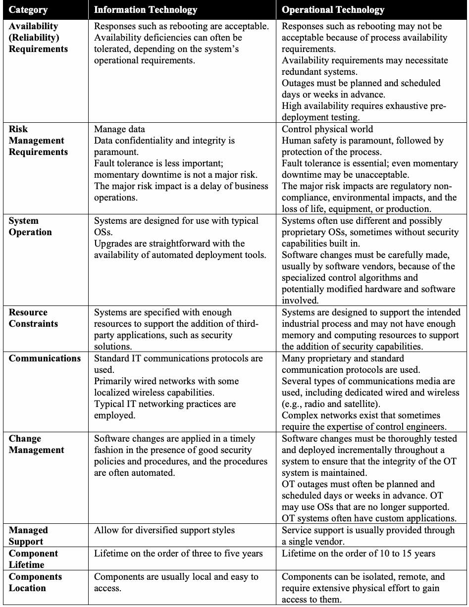
| 区分 | 情報技術 | 運用技術 |
| 可用性（信頼性）要件 | 再起動などの対応は許容される。システムの運用要件に応じて、可用性の不足を許容できることが多い。 | プロセスの可用性要件により、再起動などの対応が許容されない場合がある。可用性要件から冗長システムが必要になることがある。停止は数日または数週間前に計画・調整しなければならない。高可用性を確保するには、展開前に徹底的な試験が必要である。 |
| リスク管理要件 | データを管理する。データの機密性と完全性が最重要である。フォールトトレランスの重要性は比較的低く、一時的な停止は大きなリスクではない。主なリスクの影響は業務の遅延である。 | 物理世界を制御する。人間の安全が最重要であり、次にプロセスの保護が続く。フォールトトレランスは不可欠であり、わずかな停止も許容できない場合がある。主なリスクの影響は規制不遵守、環境への影響、人命・設備・生産の損失である。 |
| システム運用 | 一般的なOSでの利用を想定して設計されている。自動展開ツールが利用できるため、アップグレードは容易である。 | 異なる、場合によっては独自仕様のOSを使用することが多く、セキュリティ機能が組み込まれていない場合もある。専用の制御アルゴリズムや変更された可能性のあるハードウェア・ソフトウェアが関わるため、ソフトウェア変更は通常ベンダーが慎重に行わなければならない。 |
| リソース制約 | セキュリティソリューションなどのサードパーティ製アプリケーションを追加できるだけのリソースを備えるよう指定される。 | 意図された産業プロセスを支えるよう設計されており、セキュリティ機能を追加するのに十分なメモリーや計算リソースがない場合がある。 |
| 通信 | 標準的なIT通信プロトコルを使用する。主に有線ネットワークを使い、一部に限定された無線機能がある。一般的なITネットワーク慣行を用いる。 | 独自仕様および標準の通信プロトコルを多数使用する。専用有線、無線（例えば、無線通信や衛星通信）など、複数の通信媒体を使う。制御エンジニアの専門知識が必要となる複雑なネットワークもある。 |
| 変更管理 | 適切なセキュリティ方針と手順があれば、ソフトウェア変更は適時に適用され、手順が自動化されることも多い。 | OTシステムの完全性を維持するため、ソフトウェア変更を十分に試験し、システム全体に段階的に展開する必要がある。OTの停止は数日または数週間前に計画・調整しなければならないことが多い。サポートが終了したOSや独自アプリケーションを使う場合がある。 |
| 管理されたサポート | 多様なサポート形態が可能 | 通常、単一ベンダーがサービスサポートを提供する。 |
| コンポーネントの寿命 | 3～5年程度 | 10～15年程度 |
| コンポーネントの設置場所 | 通常、コンポーネントは近くにあり、アクセスしやすい。 | コンポーネントが隔離された遠隔地にあり、アクセスに多大な物理的労力を要する場合がある。 |
In summary, the operational and risk differences between IT and OT systems create the need for increased sophistication in applying cybersecurity and operational strategies. A cross-functional team of control engineers, control system operators, and IT security professionals must work closely to understand the possible implications of the installation, operation, and maintenance of security solutions in conjunction with control system operation. IT professionals working with OT need to understand the reliability impacts of information security technologies before deployment. Moreover, some of the OSs and applications that run on OT may not operate correctly with commercial-off-the-shelf (COTS) IT cybersecurity solutions because of their unique requirements.
要約すると、ITシステムとOTシステムの運用上およびリスク上の違いにより、サイバーセキュリティ戦略と運用戦略の適用には、より高度な対応が必要となる。制御エンジニア、制御システムオペレーター、ITセキュリティ専門家から成る部門横断チームが緊密に連携し、制御システムの運用と併せてセキュリティソリューションを導入・運用・保守する場合の影響を理解しなければならない。OTに携わるIT専門家は、導入前に情報セキュリティ技術が信頼性に及ぼす影響を理解する必要がある。さらに、OT上で動作するOSやアプリケーションの中には、固有の要件により、市販の既製品（COTS）であるITサイバーセキュリティソリューションと正しく動作しないものもある。
未レビュー訳OT Cybersecurity Program Development
OTサイバーセキュリティ・プログラムの策定
未レビュー訳To mitigate cybersecurity risks to their OT systems, organizations need to develop and deploy an OT cybersecurity program. It should be consistent and integrated with existing IT cybersecurity programs and practices but also account for the specific requirements and characteristics of OT systems and environments. Organizations should regularly review and update their OT cybersecurity plans and programs to reflect changes in technologies, operations, standards, regulations, and the security needs of specific facilities. Effective integration of cybersecurity into the operation of OT requires defining and executing a comprehensive program that addresses all aspects of cybersecurity. This includes defining the objectives and scope of the program; establishing a cross-functional team that understands OT and cybersecurity; establishing policies and procedures; identifying cyber risk management capabilities that include people, processes, and technologies; and identifying day-to-day operations of event monitoring and auditing for compliance and improvement. When a new system is being designed and installed, it is imperative to take the time to address security throughout the life cycle, including architecture, procurement, installation, maintenance, and decommissioning. Deploying systems to the field based on the assumption that these systems will be secured later introduces significant risks to the systems and the organization. If there are not enough time and resources to properly secure the system before deployment, it is unlikely that security will be addressed at a later time. Since new OT systems are designed and deployed less frequently than IT systems, it is much more common to improve, expand, or update an existing OT system than to design a new one. This section introduces the basic process for developing an OT cybersecurity program and applies to new and deployed OT systems. Additional guidance for developing the specific elements of an OT cybersecurity program can be found in Section 3.3.10.
OTシステムのサイバーセキュリティリスクを軽減するため、組織はOTサイバーセキュリティ・プログラムを策定し、展開する必要がある。このプログラムは既存のITサイバーセキュリティ・プログラムや慣行と整合し、統合される一方、OTシステムと環境固有の要件や特性も考慮する必要がある。組織は、技術、運用、規格、規制、各施設のセキュリティニーズの変化を反映するため、OTサイバーセキュリティ計画とプログラムを定期的に見直し、更新する必要がある。OT運用にサイバーセキュリティを効果的に組み込むには、サイバーセキュリティのあらゆる側面に対処する包括的プログラムを定義し、実行する必要がある。これには、プログラムの目的と範囲の定義、OTとサイバーセキュリティを理解する部門横断チームの設置、方針・手順の確立、人・プロセス・技術を含むサイバーリスク管理能力の特定、ならびに事象監視や遵守状況の監査、改善などの日常業務の特定が含まれる。新しいシステムを設計・設置する際には、アーキテクチャ、調達、設置、保守、廃止を含むライフサイクル全体でセキュリティに取り組むことが不可欠である。後でセキュリティを確保するという前提でシステムを現場に展開すると、システムと組織に重大なリスクが生じる。展開前にシステムを適切に保護する時間やリソースが足りない場合、後からセキュリティに取り組める可能性は低い。OTシステムはITシステムほど頻繁に新規設計・展開されないため、新しいシステムを設計するより既存のOTシステムを改善、拡張、更新する方が一般的である。本節では、導入前と導入済みのOTシステムに適用できる、OTサイバーセキュリティ・プログラム策定の基本プロセスを紹介する。OTサイバーセキュリティ・プログラムの各要素の策定に関する追加ガイダンスは3.3.10節に記載されている。
未レビュー訳Establish a Charter for the OT Cybersecurity Program
OTサイバーセキュリティ・プログラムの憲章を策定する
未レビュー訳Senior management must demonstrate a clear commitment to cybersecurity and communicate its importance throughout the organization. Cybersecurity is a business responsibility shared by all members of the organization, especially by its leaders and IT and OT teams. Commitment to cybersecurity can be demonstrated by establishing a charter for a cybersecurity program with adequate funding, visibility, governance, and support from senior leaders. A cybersecurity program that has commitment from senior management is more likely to achieve the mission and business goals of the organization. A charter for a cybersecurity program is a plain-language high-level description that establishes clear ownership and accountability for protecting OT resources and provides a mandate for the most senior person responsible to establish and maintain the cybersecurity program (e.g., CISO). This section focuses on an OT-specific program, which should be integrated with the organization’s overall cybersecurity program. A cybersecurity program charter should include program objectives, scope, and responsibilities. Senior management establishes the OT cybersecurity program charter and identifies an OT cybersecurity manager with appropriate authority to lead the OT cybersecurity program. The OT cybersecurity manager should define the roles and responsibilities of system owners, mission and business process managers, and users. The OT cybersecurity manager should also document the objectives and scope of the OT security program, including the business organizations affected, the systems and networks involved, the budget and resources required, and the division of responsibilities. The organization may already have an information security program in place or have developed one for its IT systems. The OT cybersecurity manager should identify which existing practices to leverage and which practices are specific to the OT system. Ultimately, it will be more effective for the team to share resources with others in the organization that have similar objectives.
上級管理職はサイバーセキュリティへの明確なコミットメントを示し、その重要性を組織全体に伝えなければならない。サイバーセキュリティは組織の全員が共有する業務上の責任であり、特にリーダーやIT・OTチームが担う。十分な資金、可視性、ガバナンス、上級リーダーの支援を備えたプログラム憲章を策定することで、コミットメントを示せる。上級管理職が支援するサイバーセキュリティ・プログラムは、組織の使命と業務目標を達成しやすい。憲章は、OT資源の保護に関する明確な所有者と説明責任を定め、サイバーセキュリティ・プログラムの確立・維持を最終責任者（例えば、CISO）に命じる、平易な言葉で書かれた高水準の説明である。本節では、組織全体のサイバーセキュリティ・プログラムに統合すべきOT固有のプログラムを扱う。憲章には、プログラムの目的、範囲、責任を含める必要がある。上級管理職はOTサイバーセキュリティ・プログラム憲章を策定し、適切な権限を持つOTサイバーセキュリティ管理者を任命してプログラムを主導させる。管理者は、システム所有者、ミッション・業務プロセス管理者、利用者の役割と責任を定義する必要がある。また、影響を受ける業務組織、対象システムとネットワーク、必要な予算・リソース、責任分担など、OTセキュリティ・プログラムの目的と範囲を文書化する必要がある。組織には情報セキュリティ・プログラムがすでに存在する場合や、ITシステム向けに策定済みの場合がある。OTサイバーセキュリティ管理者は、既存の慣行のうち活用するものとOTシステム固有のものを特定する必要がある。同様の目標を持つ組織内の他者とリソースを共有する方が、最終的にはより効果的である。
未レビュー訳Business Case for the OT Cybersecurity Program
OTサイバーセキュリティ・プログラムのビジネスケース
未レビュー訳The cybersecurity of OT systems is a critical component in the overall security of the organization. Cybersecurity events could potentially impact the organization’s mission and objectives, the environment, regulatory compliance, and even human safety. OT systems can also be used as an entry point to organizational IT systems and other enterprise systems. As OT systems are increasingly being connected to IT networks, relying on traditional measures (e.g., air gaps) is not enough to protect such systems from cyber attacks. Therefore, security measures tailored to the OT system are required to protect the organization. An OT cybersecurity program considers the characteristics of OT systems that require special consideration in order to mitigate these risks.
OTシステムのサイバーセキュリティは、組織全体のセキュリティに不可欠である。サイバーセキュリティ事象は、組織の使命や目標、環境、規制遵守、さらには人の安全に影響を与える可能性がある。OTシステムが組織のITシステムやその他のエンタープライズシステムへの侵入口として使われることもある。OTシステムがITネットワークにますます接続される中、エアギャップなど従来の対策だけでは十分に保護できない。したがって、組織を保護するにはOTシステムに合わせたセキュリティ対策が必要である。OTサイバーセキュリティ・プログラムでは、リスク軽減のために特別な配慮が必要となるOTシステムの特性を考慮する。
未レビュー訳3.2.1. Benefits of Cybersecurity Investments
3.2.1. サイバーセキュリティ投資の利点
未レビュー訳OT cybersecurity supports the mission and business functions of the organization and provides additional benefits, including:
OTサイバーセキュリティは組織の使命と業務機能を支え、次のような追加の利点をもたらす。
未レビュー訳•Improving OT system safety, reliability, and availability
•OTシステムの安全性、信頼性、可用性の向上
未レビュー訳•Improving OT system efficiency
•OTシステムの効率向上
未レビュー訳•Reducing community concerns
•地域社会の懸念の軽減
未レビュー訳•Reducing legal liabilities
•法的責任の軽減
未レビュー訳•Meeting regulatory requirements
•規制要件の充足
未レビュー訳•Helping with insurance coverage and costs
•保険の適用範囲と費用への対応
未レビュー訳A strong OT cybersecurity program is fundamental to a sustainable business operation and can potentially enhance system reliability and availability. This includes minimizing unintentional OT system information security impacts from inappropriate testing, policies, and misconfigured systems. Cyber attacks can also have other significant impacts, such as:
強固なOTサイバーセキュリティ・プログラムは持続可能な事業運営の基盤であり、システムの信頼性と可用性を高める可能性がある。これには、不適切な試験、方針、設定ミスによってOTシステムの情報セキュリティに意図せず生じる影響を最小限に抑えることが含まれる。サイバー攻撃は、他にも次のような重大な影響をもたらす。
未レビュー訳•Physical impacts. Physical impacts encompass the set of direct consequences of OT failure, particularly personal injury and the loss of life. Other effects include the loss of property (including data) and potential damage to the environment.
•物理的影響。物理的影響とは、OT障害が直接もたらす結果の総体であり、特に人の負傷や死亡が含まれる。その他の影響には、財産（データを含む）の損失や環境への潜在的な損害がある。
未レビュー訳•Economic impacts. Economic impacts are a second-order effect of physical impacts that ensue from an OT incident, which in turn inflict a greater economic loss on the facility, organization, or others who are dependent on the OT systems. The unavailability of critical infrastructure (e.g., electrical power, transportation) can have economic impacts
•経済的影響。経済的影響は、OTインシデントに起因する物理的影響から派生する二次的影響であり、施設、組織、またはOTシステムに依存する他者に、さらに大きな経済損失をもたらす。重要インフラ（例えば、電力、輸送）が利用できなくなると、経済的影響は
未レビュー訳far beyond the systems that sustain direct and physical damage. These effects could negatively impact the local, regional, national, or possibly global economy.
直接的・物理的損害を受けたシステムのはるか外部にまで及ぶ。こうした影響は、地域、国内、あるいは世界経済に悪影響を及ぼす可能性がある。
未レビュー訳•Social impacts. Another second-order effect is the loss of national or public confidence in an organization.
•社会的影響。もう一つの二次的影響は、組織に対する国民または社会の信頼の喪失である。
未レビュー訳Additional examples of the potential consequences of an OT incident are listed below. Note that items in this list are not independent. For example, the release of hazardous material could lead to injury or death.
OTインシデントがもたらす可能性のある結果の例を以下に示す。この一覧の項目は互いに独立ではない点に注意する。例えば、危険物質の放出が負傷や死亡につながることがある。
未レビュー訳•Impact on national security (e.g., facilitate an act of terrorism)
•国家安全保障への影響（例えば、テロ行為を助長する）
未レビュー訳•Reduction or loss of production at one site or multiple sites simultaneously
•単一または複数の拠点における生産の縮小または停止
未レビュー訳•Injury or death of employees
•従業員の負傷または死亡
未レビュー訳•Injury or death of persons in the community
•地域住民の負傷または死亡
未レビュー訳•Damage to equipment
•機器の損傷
未レビュー訳•Release, diversion, or theft of hazardous materials
•危険物質の放出、転用、または窃盗
未レビュー訳•Environmental damage
•環境への損害
未レビュー訳•Violation of regulatory requirements
•規制要件への違反
未レビュー訳•Product contamination
•製品の汚染
未レビュー訳•Criminal or civil legal liabilities
•刑事上または民事上の法的責任
未レビュー訳•Loss of proprietary or confidential information
•専有情報または機密情報の損失
未レビュー訳•Loss of brand image or customer confidence
•ブランドイメージまたは顧客の信頼の喪失
未レビュー訳Safety and security incidents can have negative impacts that last longer than other types of incidents on all stakeholders, including employees, shareholders, customers, and the communities in which an organization operates. Senior management should identify and evaluate the highest priority items to estimate the annual business impact (e.g., in financial terms).
安全・セキュリティインシデントの悪影響は、従業員、株主、顧客、組織が事業を行う地域社会など、すべての利害関係者に対し、他の種類のインシデントより長く続く可能性がある。上級管理職は、年間の事業影響（例えば、金銭的影響）を見積もるため、最優先項目を特定・評価する必要がある。
未レビュー訳3.2.2. Building an OT Cybersecurity Business Case
3.2.2. OTサイバーセキュリティのビジネスケースの構築
未レビュー訳A well-defined business case for an OT cybersecurity program is essential for management buy-in to ensure the long-term commitment of the organization and the allocation of resources needed for the development, implementation, and maintenance of the program. The first step in developing an OT security program is to identify the organization’s business objectives and missions, as well as how the cybersecurity program can lower risk and protect the organization’s ability to perform those objectives and missions. The business case should capture the business concerns of senior management and provide the business impact and financial justification for creating an integrated organizational cybersecurity program. It should include detailed information about the following:
明確に定義されたOTサイバーセキュリティ・プログラムのビジネスケースは、経営陣の支持を得て、プログラムの策定、実装、保守に必要な組織の長期的なコミットメントとリソース配分を確保するために不可欠である。OTセキュリティ・プログラムを策定する最初の手順は、組織の業務目標と使命、およびサイバーセキュリティ・プログラムがどのようにリスクを低減し、目標や使命を遂行する組織の能力を保護するかを特定することである。ビジネスケースには上級管理職の業務上の懸念を反映させ、統合型の組織サイバーセキュリティ・プログラムを作るための事業影響と財務上の正当性を示す必要がある。次の詳細を含める。
未レビュー訳•Benefits of creating an integrated security program
•統合型セキュリティ・プログラムを構築する利点
未レビュー訳•Potential costs and failure scenarios if an OT cybersecurity program is not implemented
•OTサイバーセキュリティ・プログラムを導入しない場合の潜在的コストと障害シナリオ
未レビュー訳•High-level overview of the process required to implement, operate, monitor, review, maintain, and improve the information security program
•情報セキュリティ・プログラムを実装、運用、監視、見直し、保守、改善するために必要なプロセスの概要
未レビュー訳The costs and resources required to develop, implement, and maintain the security program should be considered. The economic benefits of the cybersecurity program may be evaluated in the same way that worker health and safety programs are. However, an attack on the OT system could have significant consequences that far exceed monetary costs.
セキュリティ・プログラムの策定、実装、保守に必要なコストとリソースを考慮する必要がある。サイバーセキュリティ・プログラムの経済的利点は、労働者の健康・安全プログラムと同じ方法で評価できる場合がある。しかし、OTシステムへの攻撃は金銭的コストを大幅に上回る重大な結果をもたらす可能性がある。
未レビュー訳3.2.3. Resources for Building a Business Case
3.2.3. ビジネスケース構築のためのリソース
未レビュー訳Helpful resources can be found through information sharing exchanges, trade and standards organizations, consulting firms, and internal risk management programs or engineering and operations. External organizations can also provide useful tips as to what factors most strongly influenced management to support their efforts and what resources within their organizations proved most helpful. While these factors may vary across industries, there may be similarities in the roles that other risk management specialists can play. Appendix D lists some current activities in OT security. Internal resources in related risk management efforts (e.g., information security, health, safety and environmental risk, physical security, business continuity) can provide tremendous assistance in prioritizing threats and estimating business impacts. These resources can also provide insight into which managers are focused on dealing with which risks and who may be the most appropriate or receptive to serving as a champion.
有用なリソースは、情報共有組織、業界団体や標準化団体、コンサルティング会社、社内のリスク管理プログラム、エンジニアリング部門や運用部門から得られる。外部組織は、どの要因が経営陣の支援に最も影響したか、組織内のどのリソースが特に有用だったかについて、役立つヒントを提供できる。こうした要因は業界によって異なるものの、他のリスク管理専門家が担える役割には類似点がある場合もある。付録Dに、OTセキュリティに関する現在の活動をいくつか示す。情報セキュリティ、健康・安全・環境リスク、物理セキュリティ、事業継続など、関連するリスク管理活動の社内リソースは、脅威の優先順位付けや事業影響の推定に大きく役立つ。また、どの管理者がどのリスクに取り組んでいるか、誰が推進役として最適または協力的かを把握する助けにもなる。
未レビュー訳3.2.4. Presenting the OT Cybersecurity Business Case to Leadership
3.2.4. OTサイバーセキュリティのビジネスケースをリーダーに提示する
未レビュー訳In order to be successful, the OT cybersecurity program must have active participation from senior management. Organization-level management in both IT and OT operations has the perspective to understand the risks as well as the authority to assume responsibility for them. Senior management will be responsible for approving and driving information security policies, assigning security roles and responsibilities, and implementing the information security program across the organization. Funding for the entire program can usually be done in phases. While some funding may be required to start the program, additional funding can be obtained later as the security vulnerabilities and needs of the program are better understood and additional strategies are developed. Additionally, costs should be considered for retrofitting the OT for security versus addressing security to begin with. Often, a good approach to obtaining management buy-in is to base the business case on a successful example of another organization that had a similar problem and how they solved it. This will often prompt management to ask how that solution might be applicable to their organization. When presenting the business case to leadership, it may also be helpful to mention the specific challenges in securing the OT systems:
OTサイバーセキュリティ・プログラムを成功させるには、上級管理職が積極的に参加しなければならない。IT運用とOT運用の組織レベルの管理職は、リスクを理解する視点と、リスクに責任を負う権限を持つ。上級管理職は、情報セキュリティ方針の承認・推進、セキュリティ上の役割と責任の割り当て、組織全体での情報セキュリティ・プログラム実装を担う。プログラム全体への資金提供は、通常、段階的に行える。開始に必要な資金をまず確保し、セキュリティ上の脆弱性やプログラムの必要性が明らかになり、追加戦略が策定された後に資金を追加できる。OTを後から改修してセキュリティを確保するコストと、当初からセキュリティに対処するコストも検討する必要がある。経営陣の支持を得るには、類似の課題に直面した別組織の成功例と解決方法を基にビジネスケースを作るのが効果的な場合が多い。これにより、経営陣から、その解決策を自組織にどう適用できるか質問が出ることがある。ビジネスケースをリーダーに提示する際には、OTシステム保護に関する次の固有の課題にも触れるとよい。
未レビュー訳•OT systems operate under different environments and requirements than IT systems. For example, OT systems tend to prioritize availability and safety over other factors like confidentiality.
•OTシステムの環境と要件はITシステムとは異なる。例えば、OTシステムでは機密性などの要素より可用性と安全性を優先する傾向がある。
未レビュー訳•IT programs or tools may not be suitable or effective for OT systems.
•ITプログラムやツールは、OTシステムに適さない、または有効でない場合がある。
未レビュー訳•Compensatory measures may be an effective solution to securing an OT system without affecting system performance.
•補完的な対策は、システム性能に影響を与えずにOTシステムを保護する有効な解決策となる場合がある。
未レビュー訳•Protecting OT systems is critical, and a cybersecurity incident on an OT system may have catastrophic consequences that affect human life and the environment.
•OTシステムの保護は極めて重要であり、OTシステムでのサイバーセキュリティインシデントは、人命や環境に影響する壊滅的な結果をもたらす可能性がある。
未レビュー訳OT Cybersecurity Program Content
OTサイバーセキュリティ・プログラムの内容
未レビュー訳This section provides recommendations for establishing, implementing, maintaining, and continually improving an OT cybersecurity program. These recommendations are independent, which allows the organization to select the approaches and technologies that are most suitable to its needs. An OT cybersecurity program is typically tailored to a specific OT environment. An organization may have multiple sites, each with multiple specific OT environments. In such situations, an organizational-level OT security program should be defined with recommendations that cascade down and adapt to the needs of individual sites and OT environments. The effectiveness of an OT cybersecurity program is often enhanced through coordination or integration with the organization’s processes and information security program. However, information security programs typically focus on the confidentiality, integrity, and availability – in that order – of information for the entire organization. Information security programs do not necessarily address all of the specific security and operational needs of an OT environment, which instead prioritizes safety, followed by availability, integrity, and confidentiality. This difference in focus and priorities between IT and OT security programs should be kept in mind. NIST SP 800-100, Information Security Handbook: A Guide for Managers [SP800-100], provides a broad overview of information security program elements to assist in establishing and implementing an information security program in an organization. The lifespan of an OT system can exceed 20 years. As a result, many legacy systems may contain hardware and software that are no longer supported by vendors and cannot be patched or updated to protect against new vulnerabilities. In that case, the security program should be tailored to the unique characteristics of the legacy system to determine whether the controls are applicable. When security controls are not supported by the legacy OT system, compensating controls should be considered. For example, anti-malware software may not be available for systems such as PLCs and DCS, which means that malware protection requirements cannot be applied to these endpoints. In this case, a compensating control should be considered, such as using a firewall with a deep packet inspection capability that can monitor and block advanced threats like malware. The primary purpose of investing in a cybersecurity program is risk management. Risk to operations exists because of the potential of threat actors exploiting the vulnerabilities in the applications and infrastructures. Therefore, the most appropriate decision regarding what to include in the scope of a cybersecurity program can be made if investments are viewed through the lens of corporate risk management. To help design and drive a cybersecurity program with a risk management perspective, NIST SP 800-37, Rev. 2 [SP800-37r2] describes the Risk Management Framework, which defines the core tasks and processes for implementing a cybersecurity program. This is briefly summarized in Section 3.3.6 and further elaborated in Section 4. The OT cybersecurity program should also address policy exceptions and deviations. In a demanding OT environment, situations may arise that require a temporary deviation from the security policy in order to maintain the mission or goal of the OT system. Such deviations or exceptions must be handled with great care and receive approval from management and the cross-functional team. The security program can establish a policy and procedure for handling these policy exceptions. All of these guidance documents recognize that one size does not fit all. Rather, domain knowledge combined with site-specific constraints should be applied in adapting this guidance to a specific organization.
本節では、OTサイバーセキュリティ・プログラムの確立、実装、維持、継続的改善に関する推奨事項を示す。これらの推奨事項は相互に独立しているため、組織は自らのニーズに最適な方法や技術を選択できる。OTサイバーセキュリティ・プログラムは通常、特定のOT環境に合わせて調整される。組織が複数の拠点を持ち、各拠点に複数のOT環境を持つこともある。その場合は、組織レベルのOTセキュリティ・プログラムを定義し、各拠点やOT環境のニーズに合わせて展開・調整できる推奨事項を定める必要がある。OTサイバーセキュリティ・プログラムの有効性は、組織のプロセスや情報セキュリティ・プログラムと調整・統合することで高まることが多い。しかし、情報セキュリティ・プログラムでは通常、組織全体の情報について機密性、完全性、可用性の順に重視する。情報セキュリティ・プログラムがOT環境固有のセキュリティ・運用ニーズすべてに対処するとは限らない。OTでは安全性、可用性、完全性、機密性の順に優先するためである。ITとOTのセキュリティ・プログラムで焦点と優先順位が異なることを念頭に置く必要がある。NIST SP 800-100, Information Security Handbook: A Guide for Managers [SP800-100] は、組織で情報セキュリティ・プログラムを確立・実装するための要素を幅広く概説している。OTシステムの寿命は20年を超えることがある。そのため、多くのレガシーシステムには、ベンダーサポートが終了し、新たな脆弱性から保護するためのパッチや更新を適用できないハードウェアやソフトウェアが含まれる。その場合、管理策の適用可能性を判断するため、固有の特性に合わせてセキュリティ・プログラムを調整する必要がある。レガシーOTシステムがセキュリティ管理策をサポートしない場合は、補完的管理策を検討する必要がある。例えば、PLCやDCSなどではマルウェア対策ソフトウェアを利用できないことがあり、エンドポイントにマルウェア保護要件を適用できない。その場合は、マルウェアなどの高度な脅威を監視・遮断できるディープパケット検査機能を備えたファイアウォールなどの補完的管理策を検討する。サイバーセキュリティ・プログラムに投資する主な目的はリスク管理である。脅威アクターがアプリケーションやインフラの脆弱性を悪用する可能性があるため、運用リスクが存在する。したがって、企業リスク管理の観点から投資を捉えることで、プログラムの対象に含める最適な内容を判断できる。リスク管理の視点でプログラムを設計・推進するため、NIST SP 800-37 Rev. 2 [SP800-37r2] は、サイバーセキュリティ・プログラム実装の中核的なタスクとプロセスを定めたリスク管理フレームワークを説明している。これは3.3.6節で簡潔に要約し、第4節で詳述する。OTサイバーセキュリティ・プログラムでは、方針の例外や逸脱にも対処する必要がある。厳しいOT環境では、OTシステムの使命や目標を維持するため、一時的にセキュリティ方針から逸脱しなければならない状況が生じることがある。こうした逸脱や例外は慎重に扱い、管理職と部門横断チームの承認を得なければならない。プログラムでは、方針の例外を扱う手順を定められる。これらのガイダンス文書はいずれも、すべてに適合する単一の方法はないと認めている。対象分野の知識と拠点固有の制約を組み合わせ、このガイダンスを個別の組織に適合させる必要がある。
未レビュー訳3.3.1. Establish OT Cybersecurity Governance
3.3.1. OTサイバーセキュリティ・ガバナンスの確立
未レビュー訳OT governance should include the policies, procedures, and processes for managing the organization’s regulatory, legal, risk, environmental, and operational requirements. The governance should ensure that the policies, procedures, and processes are well understood by staff and inform the management of OT cybersecurity risk. To establish an effective OT cybersecurity governance capability, develop a process and assign responsibilities and accountability to appropriate roles in the corporate risk management function. Typically, a cybersecurity governance process should include the following:
OTガバナンスには、組織の規制、法務、リスク、環境、運用上の要件を管理する方針、手順、プロセスを含める必要がある。方針、手順、プロセスが職員に十分理解され、OTサイバーセキュリティリスクの管理に役立つようにする。効果的なOTサイバーセキュリティ・ガバナンス能力を確立するには、プロセスを策定し、全社的なリスク管理機能の適切な役割に責任と説明責任を割り当てる。通常、サイバーセキュリティ・ガバナンスのプロセスには次を含める必要がある。
未レビュー訳•Ensure that the OT cybersecurity policy is established and communicated.
•OTサイバーセキュリティ方針を確立し、周知する。
未レビュー訳•Ensure that OT cybersecurity roles and responsibilities are coordinated and aligned with internal roles and external partners.
•OTサイバーセキュリティの役割と責任が社内の役割および外部パートナーと調整・整合されるようにする。
未レビュー訳•Ensure that legal and regulatory requirements regarding OT cybersecurity, including privacy, are understood and managed.
•プライバシーを含むOTサイバーセキュリティに関する法的・規制上の要件を理解し、管理する。
未レビュー訳•Ensure that cybersecurity risks are integrated into corporate risk management processes.
•サイバーセキュリティリスクを全社的なリスク管理プロセスに統合する。
未レビュー訳Further guidance for establishing OT cybersecurity guidance can be found in Section 6. Additional information with specific examples for establishing a cybersecurity governance capability are also provided in NIST Internal or Interagency Report (NIST IR) 8183A, Cybersecurity Framework Manufacturing Profile Low Impact Level Example Implementations Guide [IR8183A].
OTサイバーセキュリティ・ガバナンスの確立に関する追加ガイダンスは第6節を参照。サイバーセキュリティ・ガバナンス能力を確立する具体例を含む追加情報は、NIST内部報告書／省庁間報告書（NIST IR）8183A, Cybersecurity Framework Manufacturing Profile Low Impact Level Example Implementations Guide [IR8183A]にも記載されている。
未レビュー訳3.3.2. Build and Train a Cross-Functional Team to Implement the OT
3.3.2. OTサイバーセキュリティ・プログラムを実施する部門横断チームの構築と訓練
未レビュー訳Cybersecurity Program
プログラム
未レビュー訳It is essential for a cross-functional cybersecurity team to share their varied domain knowledge and experience to evaluate and manage risk in OT. The OT cybersecurity team should consist of representatives from the following departments: IT staff, control engineer, control system operator, security subject-matter expert, and enterprise risk management. For completeness, the information security team should also include any cybersecurity service providers. From a safety perspective, major accident hazards and the loss of containment due to equipment failure or operator mistakes can have serious consequences. Cybersecurity is another threat to the safety and reliability of industrial processes, so including safety experts as part of the cybersecurity team will be beneficial in identifying potential impact areas due to cyber vulnerabilities. Their insight into OT design and safety considerations will also help in formulating cyber mitigations. While the control engineers will play a large role in securing OT, they will not be able to do so without collaboration and support from both the IT department and management. IT often has years of cybersecurity experience, much of which is applicable to OT. As the cultures of control engineering and IT are often significantly different, their integration will be essential for the development of a collaborative security design and operation. Organizations come in various sizes, structures, geographical spreads, and complexities. These factors and the strategies related to resources and budget constraints may drive organizations to hire OT cybersecurity resources as employees or contractors or outsource the OT security operation function as a managed security service. Irrespective of the security operation and resource model used, the responsibility for OT cybersecurity management should be integrated with IT cybersecurity and the corporate risk management function. The responsibility and accountability for implementing and managing cybersecurity functions typically falls under the IT and OT infrastructure organization, whereas cybersecurity operational metrics and risks are reported to the risk management office. These two lines of reporting structure need to collaborate in terms of funding and expectations of what can be achieved given a funding and resource level. The risk executive function works with executive management to decide the risk tolerance and residual risk. As part of building a cybersecurity team, the following tasks should be included:
OTのリスクを評価・管理するには、部門横断型のサイバーセキュリティチームが多様な分野の知識と経験を共有することが不可欠である。OTサイバーセキュリティチームには、IT職員、制御エンジニア、制御システムオペレーター、セキュリティ専門家、全社的リスク管理の各担当者を含める必要がある。情報セキュリティチームには、網羅性を確保するため、サイバーセキュリティサービスプロバイダーも含める必要がある。安全の観点では、重大事故の危険や、機器故障・オペレーターのミスによる封じ込めの喪失が深刻な結果を招くことがある。サイバーセキュリティも産業プロセスの安全性と信頼性を脅かすため、サイバー脆弱性による潜在的影響を特定するうえで、安全専門家をチームに含めることが有益である。OT設計や安全面の考慮事項に関する専門家の知見は、サイバーリスク低減策の策定にも役立つ。OTの保護では制御エンジニアが大きな役割を担うが、IT部門と経営陣の協力・支援なしには実現できない。IT部門には長年のサイバーセキュリティ経験があることが多く、その多くはOTにも適用できる。制御エンジニアリングとITの組織文化は大きく異なる場合が多いため、協調的なセキュリティ設計と運用には両者の統合が不可欠である。組織の規模、構造、地理的範囲、複雑さはさまざまである。こうした要因や、リソース・予算の制約に関する戦略に応じて、OTサイバーセキュリティ要員を従業員または請負業者として雇うか、OTセキュリティ運用機能をマネージドセキュリティサービスとして外部委託することがある。採用するセキュリティ運用・リソースモデルにかかわらず、OTサイバーセキュリティ管理の責任はITサイバーセキュリティおよび全社的リスク管理機能と統合する必要がある。サイバーセキュリティ機能の実施・管理責任と説明責任は通常、ITおよびOTインフラ組織が担う一方、セキュリティ運用の指標やリスクはリスク管理部門に報告される。この2つの報告系統は、資金や、利用可能な資金・リソースで達成可能な内容について連携しなければならない。リスク担当役員は経営陣と協力してリスク許容度と残留リスクを決定する。サイバーセキュリティチームの構築では、次のタスクを含める必要がある。
未レビュー訳•Establish and maintain cybersecurity roles and responsibilities for building, operating, and improving an OT cybersecurity program.
•OTサイバーセキュリティ・プログラムの構築、運用、改善に関するサイバーセキュリティ上の役割と責任を確立し、維持する。
未レビュー訳•Establish cybersecurity roles and responsibilities for third-party providers, which can include service providers, contractors, and other organizations that provide OT system development and services and security operation and management.
•サービスプロバイダー、請負業者、OTシステムの開発・サービスやセキュリティ運用・管理を提供するその他の組織など、サードパーティープロバイダーのサイバーセキュリティ上の役割と責任を確立する。
未レビュー訳Further guidance for establishing a cross-functional team can be found in Section 4 and Appendix D. Additional information with specific examples for establishing a cross-functional team are also provided in NIST IR 8183A, Cybersecurity Framework Manufacturing Profile Low Impact Level Example Implementations Guide [IR8183A].
部門横断チームの確立に関する追加ガイダンスは第4節および付録Dを参照。部門横断チームの具体例を含む追加情報は、NIST IR 8183A, Cybersecurity Framework Manufacturing Profile Low Impact Level Example Implementations Guide [IR8183A]にも記載されている。
未レビュー訳3.3.3. Define the OT Cybersecurity Strategy
3.3.3. OTサイバーセキュリティ戦略の定義
未レビュー訳An organization-wide risk management strategy is foundational to developing an OT cybersecurity strategy.4 The OT cybersecurity strategy leverages the organization-wide risk management strategy – including organization-defined risk tolerance, threats, assumptions, constraints, priorities, and trade-offs – to further tailor the strategy to apply to the OT cybersecurity program.
組織全体のリスク管理戦略は、OTサイバーセキュリティ戦略を策定する基盤となる。4 OTサイバーセキュリティ戦略は、組織が定めたリスク許容度、脅威、前提、制約、優先事項、トレードオフなどを含む組織全体のリスク管理戦略を活用し、OTサイバーセキュリティ・プログラムに適用できるよう戦略をさらに調整する。
未レビュー訳The OT cybersecurity strategy:
OTサイバーセキュリティ戦略は、次の事項を行う。
未レビュー訳•Refines and supplements guidance from the organization-wide risk management strategy to address OT-specific constraints and requirements
•OT固有の制約と要件に対処するため、組織全体のリスク管理戦略のガイダンスを精緻化し、補足する。
未レビュー訳•Identifies the OT cybersecurity team and personnel
•OTサイバーセキュリティチームと要員を特定する。
未レビュー訳•Addresses the OT cybersecurity operation model (e.g., insource, outsource, and/or use managed security services)
•OTサイバーセキュリティ運用モデル（例えば、内製、外部委託、マネージドセキュリティサービスの利用）に対処する。
未レビュー訳•Outlines the appropriate cybersecurity architecture for the various OT sites within the OT program
•OTプログラム内の各OTサイトに適切なサイバーセキュリティアーキテクチャを概説する。
未レビュー訳•Defines OT-specific cybersecurity training and awareness
•OT固有のサイバーセキュリティ訓練と意識向上を定義する。
未レビュー訳The OT cybersecurity strategy should help refine the organizational risk tolerance for the OT operation, which in turn drives the priorities for the OT cybersecurity operation. The program should also address both IT and OT concerns and requirements. For example, IT may consider data loss or system availability as a higher priority, but OT may value system safety, production efficiency, and environmental damage as higher priorities. Further guidance for developing an OT cybersecurity strategy can be found in Section 5, Section 6, Appendix C, and Appendix D. Additional information and specific examples for establishing an OT cybersecurity strategy are also provided in NIST IR 8183A, Cybersecurity Framework Manufacturing Profile Low Impact Level Example Implementations Guide [IR8183A].
OTサイバーセキュリティ戦略は、OT運用に対する組織のリスク許容度を精緻化し、それによってOTサイバーセキュリティ運用の優先順位を決めるのに役立つ必要がある。プログラムではITとOT双方の懸念事項・要件にも対処する必要がある。例えば、ITではデータ損失やシステム可用性の優先度が高いと見なす場合があるが、OTではシステムの安全性、生産効率、環境損害をより重視する場合がある。OTサイバーセキュリティ戦略の策定に関する追加ガイダンスは第5節、第6節、付録C、付録Dを参照。具体例を含む追加情報は、NIST IR 8183A, Cybersecurity Framework Manufacturing Profile Low Impact Level Example Implementations Guide [IR8183A]にも記載されている。
未レビュー訳3.3.4. Define OT-Specific Policies and Procedures
3.3.4. OT固有の方針と手順の定義
未レビュー訳Policies and procedures are essential to the success of any cybersecurity program. Where possible, OT-specific security policies and procedures should be derived from existing IT cybersecurity and plant operational policies and procedures for consistency throughout the organization. As discussed earlier, organizational management is responsible for developing and communicating the risk tolerance level of the organization (i.e., the level of risk that the organization is willing to accept), which allows the OT cybersecurity manager to determine the risk management strategy. The development of cybersecurity policies should be based on a risk assessment that will set the security priorities and goals for the organization. Procedures that support the policies need to be developed so that the policies are implemented fully and properly for OT. Cybersecurity procedures should be documented, tested, and updated periodically in response to policy, technology, and threat changes. Further guidance for developing OT-specific policies and procedures can be found in Section 6. Additional information with examples for establishing OT-specific policies and procedures are also provided in NIST IR 8183A, Cybersecurity Framework Manufacturing Profile Low Impact Level Example Implementations Guide [IR8183A].
方針と手順は、あらゆるサイバーセキュリティ・プログラムの成功に不可欠である。可能な場合、組織全体で一貫性を保つため、OT固有のセキュリティ方針・手順は既存のITサイバーセキュリティ方針や工場運用方針・手順から導出する必要がある。前述のとおり、組織の経営陣は組織のリスク許容度（すなわち組織が受け入れる意思のあるリスク水準）を策定し、周知する責任を負う。これによりOTサイバーセキュリティ管理者はリスク管理戦略を決定できる。サイバーセキュリティ方針は、組織のセキュリティ優先事項と目標を定めるリスク評価に基づいて策定する必要がある。方針をOTに完全かつ適切に実装するため、それを支援する手順を策定する必要がある。サイバーセキュリティ手順は文書化し、試験し、方針、技術、脅威の変化に応じて定期的に更新する必要がある。OT固有の方針・手順の策定に関する追加ガイダンスは第6節を参照。具体例を含む追加情報は、NIST IR 8183A, Cybersecurity Framework Manufacturing Profile Low Impact Level Example Implementations Guide [IR8183A]にも記載されている。
未レビュー訳3.3.5. Establish a Cybersecurity Awareness Training Program for the OT
3.3.5. OT環境向けサイバーセキュリティ意識向上訓練プログラムの確立
未レビュー訳Environment
環境
未レビュー訳Organizations should ensure that all personnel who interact with OT systems – including employees, contractors, consultants, and vendors – receive cybersecurity training that is relevant to the OT environment in addition to general IT cybersecurity awareness training. This training is used to inform personnel of basic cybersecurity principles, teach them about their potential impacts on security and safety, and outline the steps that they need to follow when interacting with OT systems. Cybersecurity awareness training should be required for new employees at the time of hire and at regular intervals, as dictated by regulatory requirements and organizational policies. Further guidance for OT cybersecurity awareness training can be found in Section 6 and Appendix D. Additional information with specific examples for OT cybersecurity awareness training are also provided in NIST IR 8183A, Cybersecurity Framework Manufacturing Profile Low Impact Level Example Implementations Guide [IR8183A].
組織は、従業員、請負業者、コンサルタント、ベンダーなど、OTシステムに関わるすべての要員に対し、一般的なITサイバーセキュリティ意識向上訓練に加え、OT環境に即したサイバーセキュリティ訓練を受けさせる必要がある。この訓練では、基本的なサイバーセキュリティ原則を伝え、セキュリティと安全性への潜在的影響を教え、OTシステムと関わる際に従うべき手順を示す。新入社員には採用時に意識向上訓練を行い、規制要件と組織方針に応じて定期的に再訓練する必要がある。OTサイバーセキュリティ意識向上訓練の追加ガイダンスは第6節および付録Dを参照。具体例を含む追加情報は、NIST IR 8183A, Cybersecurity Framework Manufacturing Profile Low Impact Level Example Implementations Guide [IR8183A]にも記載されている。
未レビュー訳3.3.6. Implement a Risk Management Framework for OT
3.3.6. OTへのリスク管理フレームワークの実装
未レビュー訳OT system risk is another risk confronting an organization (e.g., financial, safety, environmental, IT). In each case, managers responsible for the mission or business function establish and operate a risk management program in coordination with senior management. NIST SP 800-39, Managing Information Security Risk: Organization, Mission, and Information System View [SP800-39], provides a framework for an enterprise-level risk management program, which is also detailed in Section 4 of this document. OT personnel should be involved in developing the OT cybersecurity risk management program and communicating with senior management. NIST SP 800-37, Risk Management Framework for Information Systems and Organizations: A System Life Cycle Approach for Security and Privacy [SP800-37r2], provides a structured process for managing security and privacy risk. This includes preparing for organization-wide risk management; system categorization; control selection, implementation, and assessment; system and common control authorizations; and continuous monitoring. Applying the Risk Management Framework (RMF) to OT systems is detailed in Section 4.
OTシステムのリスクは、組織が直面するリスク（例えば、財務、安全、環境、IT）の一つである。各リスクについて、ミッションまたは業務機能を担う管理者が上級管理職と連携してリスク管理プログラムを確立・運用する。NIST SP 800-39, Managing Information Security Risk: Organization, Mission, and Information System View [SP800-39] は、全社レベルのリスク管理プログラムの枠組みを示し、本書第4節でも詳述する。OT担当者はOTサイバーセキュリティ・リスク管理プログラムの策定に関与し、上級管理職と意思疎通を図る必要がある。NIST SP 800-37, Risk Management Framework for Information Systems and Organizations: A System Life Cycle Approach for Security and Privacy [SP800-37r2] は、セキュリティとプライバシーのリスクを管理する体系的なプロセスを示す。このプロセスには、組織全体のリスク管理の準備、システムの分類、管理策の選択・実装・評価、システムおよび共通管理策の認可、継続的監視が含まれる。OTシステムへのリスク管理フレームワーク（RMF）の適用は第4節で詳述する。
未レビュー訳3.3.7. Develop a Maintenance Tracking Capability
3.3.7. 保守追跡能力の開発
未レビュー訳Establish processes and implement tools to ensure that routine and preventative maintenance and repairs (both local and remote) of OT assets are performed consistent with OT organizational policies and procedures. The tools used for maintenance logging and tracking should be controlled and managed. Ensure that the processes and tools allow for scheduling, authorizing, tracking, monitoring, and auditing maintenance and repair activities for OT assets. If the ability for remote maintenance is required, ensure that the remote access tool supports the authentication of maintenance personnel, connection establishment at the beginning of maintenance activities, and immediate teardown once the maintenance activities are performed. Also ensure that the tool can log the remote maintenance activities that are performed.
OT資産の定期保守、予防保守、修理（ローカルおよびリモート）が、OT組織の方針・手順に従って実施されるよう、プロセスを確立しツールを導入する。保守記録・追跡ツールは管理・統制する必要がある。OT資産の保守・修理活動の計画、承認、追跡、監視、監査が可能となるよう、プロセスとツールを整備する。リモート保守が必要な場合は、リモートアクセスツールが保守要員の認証、保守開始時の接続確立、作業完了後の即時切断をサポートすることを確認する。また、実施されたリモート保守作業を記録できるツールであることも確認する。
未レビュー訳Further guidance for OT maintenance tracking can be found in Section 6. Additional information with specific examples for OT maintenance tracking are also provided in NIST IR 8183A, Cybersecurity Framework Manufacturing Profile Low Impact Level Example Implementations Guide [IR8183A].
OT保守追跡に関する追加ガイダンスは第6節を参照。具体例を含む追加情報は、NIST IR 8183A, Cybersecurity Framework Manufacturing Profile Low Impact Level Example Implementations Guide [IR8183A]にも記載されている。
未レビュー訳3.3.8. Develop an Incident Response Capability
3.3.8. インシデント対応能力の開発
未レビュー訳Organizations should establish an OT cybersecurity incident response (IR) function that should include planning, detection, analysis, containment, and reporting activities in the case of a cybersecurity incident. The IR function requires the establishment of several cybersecurity capabilities, including incident management, forensic analysis, vulnerability management, and response communication. As part of building the IR function, the OT cybersecurity department should create an incident response plan. The purpose of the incident response capability is to determine the scope and risk of cybersecurity incidents, respond appropriately to the incident, communicate the incident to all stakeholders, and reduce the future impact. This plan applies to all OT personnel, networks, systems, and data. The IR plan guides the activities of the cybersecurity team to respond, communicate, and coordinate in the event of a cybersecurity incident. Without such a plan, the organization will find it extremely difficult to respond when a cybersecurity incident occurs. The plan includes the roles and responsibilities of personnel, the incident response workflow, incident type and severity classification, contacts of critical personnel who should be involved, contacts of external entities that may be useful in assisting with IR, information sharing policy, and internal and external communication. Further guidance for OT incident response can be found in Section 6.2.4.5 and Appendix C. Additional information with specific examples for OT incident response are also provided in NIST IR 8183A, Cybersecurity Framework Manufacturing Profile Low Impact Level Example Implementations Guide [IR8183A].
組織は、サイバーセキュリティインシデント発生時の計画、検知、分析、封じ込め、報告を含むOTサイバーセキュリティ・インシデント対応（IR）機能を確立する必要がある。IR機能の確立には、インシデント管理、フォレンジック分析、脆弱性管理、対応時のコミュニケーションなど、複数のサイバーセキュリティ能力が必要である。IR機能の構築の一環として、OTサイバーセキュリティ部門はインシデント対応計画を作成する必要がある。インシデント対応能力の目的は、サイバーセキュリティインシデントの範囲とリスクを特定し、適切に対応し、すべての利害関係者に伝達し、将来の影響を軽減することである。この計画はすべてのOT要員、ネットワーク、システム、データに適用される。IR計画は、インシデント時にサイバーセキュリティチームが対応、連絡、調整を行うための指針となる。計画がなければ、インシデント発生時に組織が対応するのは極めて困難となる。計画には、要員の役割と責任、インシデント対応ワークフロー、インシデントの種類と重大度の分類、参加が必要な主要要員の連絡先、IR支援に役立つ外部組織の連絡先、情報共有方針、内部・外部コミュニケーションを含める。OTインシデント対応の追加ガイダンスは第6.2.4.5節および付録Cを参照。具体例を含む追加情報は、NIST IR 8183A, Cybersecurity Framework Manufacturing Profile Low Impact Level Example Implementations Guide [IR8183A]にも記載されている。
未レビュー訳3.3.9. Develop a Recovery and Restoration Capability
3.3.9. 復旧・復元能力の開発
未レビュー訳The organization should establish the capability to recover from cybersecurity incidents and to restore the assets and services that were impaired by the cybersecurity incident to a pre-cyber-incident state. This capability typically includes the following tasks:
組織は、サイバーセキュリティインシデントから復旧し、インシデントによって機能低下した資産やサービスをインシデント発生前の状態に戻す能力を確立する必要がある。この能力には通常、次のタスクが含まれる。
未レビュー訳•Define recovery objectives when recovering from disruptions. For example, the recovery capability shall prioritize human safety and environmental safety prior to restarting the OT operation that was impaired by the cybersecurity event.
•中断からの復旧時に用いる復旧目標を定義する。例えば、復旧能力では、サイバーセキュリティ事象によって機能低下したOT運用を再開する前に、人の安全と環境の安全を優先しなければならない。
未レビュー訳•Develop a site disaster recovery plan (DRP) and business continuity plan (BCP) to prepare the OT organization to respond appropriately to significant disruptions in their operations due to the cybersecurity incident.
•サイバーセキュリティインシデントによる重大な運用中断に適切に対応できるよう、OT組織の拠点災害復旧計画（DRP）および事業継続計画（BCP）を策定する。
未レビュー訳•Establish backup systems and processes to back up the relevant OT systems’ state, data, configuration files, and programs at regular intervals to support recovery to a stable state.
•安定した状態への復旧を支援するため、関連するOTシステムの状態、データ、構成ファイル、プログラムを定期的にバックアップするシステムとプロセスを確立する。
未レビュー訳•Establish processes for restoring relevant OT systems’ state, data, configuration files, and programs from backups in a timely manner.
•関連するOTシステムの状態、データ、構成ファイル、プログラムをバックアップから適時に復元するプロセスを確立する。
未レビュー訳•Establish recovery processes and procedures that will be executed to restore the OT assets and services affected by cybersecurity incidents.
•サイバーセキュリティインシデントの影響を受けたOT資産やサービスを復元するために実行する復旧プロセスと手順を確立する。
未レビュー訳•Establish communication plans to coordinate restoration activities with internal and external stakeholders and the executive management team.
•内部・外部の利害関係者および経営幹部チームと復元活動を調整するための連絡計画を確立する。
未レビュー訳•Establish communication plans to manage public relations.
•広報対応を管理するための連絡計画を確立する。
未レビュー訳•Establish a task for lessons learned as part of the recovery process for continuous improvement of the cybersecurity capabilities (e.g., vulnerability management, cybersecurity operation, incident response handling, and recovery handling).
•脆弱性管理、サイバーセキュリティ運用、インシデント対応、復旧対応などの能力を継続的に改善するため、復旧プロセスの一環として教訓を得るタスクを設ける。
未レビュー訳•Test these plans at reasonable intervals that are appropriate for the organization.
•組織に適した妥当な間隔で、これらの計画を試験する。
未レビュー訳Further guidance for OT recovery and restoration can be found in Section 6. Additional information with specific examples for OT recovery and restoration are also provided in NIST IR 8183A, Cybersecurity Framework Manufacturing Profile Low Impact Level Example Implementations Guide [IR8183A].
OTの復旧・復元に関する追加ガイダンスは第6節を参照。具体例を含む追加情報は、NIST IR 8183A, Cybersecurity Framework Manufacturing Profile Low Impact Level Example Implementations Guide [IR8183A]にも記載されている。
未レビュー訳3.3.10. Summary of OT Cybersecurity Program Content
3.3.10. OTサイバーセキュリティ・プログラムの内容の概要
未レビュー訳This section presented the elements of a cybersecurity program and the various considerations for establishing such a program. Further guidance can be found in the document sections listed in Table 2.
本節では、サイバーセキュリティ・プログラムの構成要素と、その確立に関するさまざまな考慮事項を示した。追加ガイダンスは表2に示す本書の各節に記載されている。
未レビュー訳Table 2. Sections with additional guidance for establishing a cybersecurity program
表2. サイバーセキュリティ・プログラムの確立に関する追加ガイダンスの参照先
未レビュー訳| Cybersecurity Program Element | Section Number for Additional |
| Guidance | |
| Establish OT cybersecurity governance | Section 6 |
| Build and train a cross-functional team to implement an OT cybersecurity program | Section 4, Appendix D |
| Define the OT cybersecurity strategy | Sections 5 and 6, Appendices 169 and 186 |
| Define OT-specific policies and procedures | Section 6 |
| Establish a cybersecurity awareness training program for an OT organization | Section 6, Appendix 186 |
| Implement a Risk Management Framework for OT | Section 4 and 6, Appendices 169 and 186 |
| Develop a maintenance tracking capability | Section 6 |
| Develop an incident response capability | Section 6, Appendix 169 |
| Develop a recovery and restoration capability | Section 6 |
原本の表画像
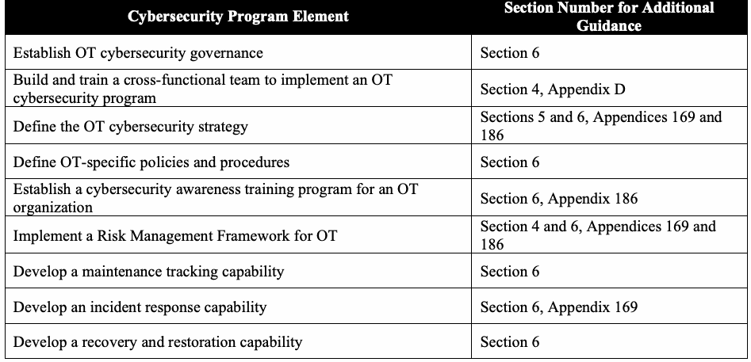
| サイバーセキュリティ・プログラム要素 | 追加ガイダンスの参照先 |
| ガイダンス | |
| OTサイバーセキュリティ・ガバナンスの確立 | 第6節 |
| OTサイバーセキュリティ・プログラムを実施する部門横断チームの構築と訓練 | 第4節、付録D |
| OTサイバーセキュリティ戦略の定義 | 第5節・第6節、付録169および186 |
| OT固有の方針と手順の定義 | 第6節 |
| OT組織向けサイバーセキュリティ意識向上訓練プログラムの確立 | 第6節、付録186 |
| OTへのリスク管理フレームワークの実装 | 第4節・第6節、付録169および186 |
| 保守追跡能力の開発 | 第6節 |
| インシデント対応能力の開発 | 第6節、付録169 |
| 復旧・復元能力の開発 | 第6節 |
Risk Management for OT Systems
OTシステムのリスク管理
未レビュー訳Organizations manage risks every day when meeting their business objectives, including financial losses, equipment failure, and personnel safety. Organizations develop processes to evaluate the risks associated with their business and to decide how to manage those risks based on organizational priorities, risk tolerance, and internal and external constraints. This risk management is an interactive ongoing process that is part of normal operations. Organizations that use OT systems have historically managed risk through good practices in safety and engineering. Safety assessments are well established in most sectors and often incorporated into regulatory requirements. Information security risk management is an added dimension that can be complementary. The risk management process and framework outlined in this section can be applied to managing safety, information security, and cyber supply chain risk. Privacy is also a risk consideration for some OT systems. For additional guidance on privacy risk management, refer to the NIST Risk Management Framework [SP800-37r2] and the Privacy Framework [PF]. A risk management process is deployed throughout an organization using a three-level approach to address risk at the (i) organization level, (ii) mission and business process level, and (iii) system level (i.e., IT and OT). The risk management process is carried out seamlessly across the three levels with the overall objective of continuous improvement in the organization’s risk-related activities and effective inter-tier and intra-tier communication among all stakeholders with a shared interest in the success of the organization. This section focuses primarily on OT system considerations at the system level, though the risk management activities, information, and artifacts at each level impact and inform the other levels. Section 6 applies the Cybersecurity Framework to OT systems, while Appendix F provides OT-specific recommendations to augment the NIST SP 800-53, Rev. 5 [SP800-53r5] control families. This section also discusses OT system considerations and the impact that these considerations have on the risk management process. For more information on multi-tiered risk management and the risk management process, refer to NIST SP 800-39, Managing Information Security Risk: Organization, Mission, and Information System View [SP800-39]. NIST SP 800-37, Rev. 2, Risk Management Framework for Information Systems and Organizations: A System Life Cycle Approach for Security and Privacy [SP800-37r2], provides guidelines for applying the Risk Management Framework to federal information systems, including conducting the activities of security categorization,5 security control selection and implementation, security control assessment, information system authorization,6 and security control monitoring. NIST SP 800-30, Guide for Conducting Risk Assessments [SP800-30r1], provides a step-by-step process for organizations on how to (i) prepare for risk assessments, (ii) conduct risk assessments, (iii) communicate risk assessment results to key organizational personnel, and (iv) maintain the risk assessments over time.
組織は、業務目標の達成にあたり、財務損失、機器故障、要員の安全などのリスクを日々管理している。組織は、業務に伴うリスクを評価し、組織の優先事項、リスク許容度、内部・外部の制約に基づいて管理方法を決めるプロセスを策定する。このリスク管理は通常運用の一部である継続的かつ双方向のプロセスである。OTシステムを利用する組織は、従来、安全とエンジニアリングの優れた慣行を通じてリスクを管理してきた。安全評価はほとんどの分野で確立されており、規制要件に組み込まれていることも多い。情報セキュリティのリスク管理は、これを補完し得る追加の側面である。本節で示すリスク管理プロセスとフレームワークは、安全、情報セキュリティ、サイバーサプライチェーンのリスク管理に適用できる。一部のOTシステムではプライバシーもリスク上の考慮事項となる。プライバシーリスク管理の追加ガイダンスは、NISTリスク管理フレームワーク [SP800-37r2] およびプライバシーフレームワーク [PF] を参照。リスク管理プロセスは3階層のアプローチで組織全体に展開され、(i) 組織レベル、(ii) ミッション・業務プロセスレベル、(iii) システムレベル（すなわちITおよびOT）のリスクに対処する。組織のリスク関連活動を継続的に改善し、組織の成功に共通の関心を持つ全利害関係者間で階層間・階層内の意思疎通を効果的に行うことを全体目標として、3階層にわたりシームレスに実施される。本節では主にシステムレベルのOT固有の考慮事項を扱うが、各階層のリスク管理活動、情報、成果物は他の階層にも影響し、判断材料となる。第6節ではサイバーセキュリティ・フレームワークをOTシステムに適用し、付録FではNIST SP 800-53 Rev. 5 [SP800-53r5] の管理策ファミリーを補完するOT固有の推奨事項を示す。本節ではOTシステムに関する考慮事項と、それらがリスク管理プロセスに与える影響についても論じる。多階層リスク管理とそのプロセスについては、NIST SP 800-39, Managing Information Security Risk: Organization, Mission, and Information System View [SP800-39] を参照。NIST SP 800-37 Rev. 2, Risk Management Framework for Information Systems and Organizations: A System Life Cycle Approach for Security and Privacy [SP800-37r2] は、連邦情報システムにリスク管理フレームワークを適用するガイドラインを示す。これには、セキュリティ分類、5 セキュリティ管理策の選択と実装、セキュリティ管理策評価、情報システム認可、6 セキュリティ管理策の監視が含まれる。NIST SP 800-30, Guide for Conducting Risk Assessments [SP800-30r1] は、(i) リスク評価の準備、(ii) リスク評価の実施、(iii) 組織内の主要担当者への結果伝達、(iv) リスク評価の継続的な維持という段階的プロセスを示す。
未レビュー訳Managing OT Security Risk
OTセキュリティリスクの管理
未レビュー訳While the risk management process presented in NIST SP 800-39 [SP800-39] applies to all types of systems, there are some unique aspects to consider when it comes to managing OT system security risk. As shown in Fig. 13, the risk management process has four components: framing risk (i.e., establishing the context for risk-based decisions), assessing risk, responding to risk, and monitoring risk. These activities are interdependent and often occur simultaneously within an organization. For example, the results of the monitoring component will feed into the framing component. Because the environment in which organizations operate is always changing, risk management must be a continuous process in which all components have ongoing activities. It is important to remember that these components apply to the management of any type of risk, including cybersecurity, physical security, safety, and financial. Sections 4.1.1 through 4.1.4 discuss the four components of the risk management process in further detail and provide OT-specific implementation guidance.
NIST SP 800-39 [SP800-39] に示されるリスク管理プロセスはあらゆる種類のシステムに適用されるが、OTシステムのセキュリティリスク管理では固有の側面を考慮する必要がある。図13に示すように、リスク管理プロセスには4つの要素がある。リスクの枠組み設定（すなわち、リスクに基づく判断の文脈を定めること）、リスク評価、リスク対応、リスク監視である。これらの活動は相互依存し、組織内で同時に行われることも多い。例えば、監視要素の結果は枠組み設定要素に反映される。組織を取り巻く環境は常に変化するため、すべての要素について継続的に活動する、継続的なプロセスとしてリスク管理を行う必要がある。これらの要素は、サイバーセキュリティ、物理セキュリティ、安全、財務など、あらゆる種類のリスク管理に適用される点に留意する。4.1.1節から4.1.4節でリスク管理プロセスの4要素を詳述し、OT固有の実装ガイダンスを示す。
未レビュー訳ASSESS
評価
未レビュー訳FRAME
枠組み設定
未レビュー訳RESPOND
対応
未レビュー訳MONITOR
監視
未レビュー訳Fig. 13. Risk management process: Frame, assess, respond, and monitor
図13. リスク管理プロセス：枠組み設定、評価、対応、監視
未レビュー訳Organization-wide risk management is applied at three levels, as Fig. 14 depicts. Level 1 addresses risk management from the organizational perspective and implements risk framing by providing context for all risk management activities within the organization. Level 2 addresses risk from a mission and business process perspective and is informed by the Level 1 risk context, decisions, and activities. Level 3 addresses risk at the system level and is informed by the Level 1 and 2 activities and outputs.
図14に示すように、組織全体のリスク管理は3つのレベルで適用される。レベル1では組織の観点からリスクを管理し、組織内のあらゆるリスク管理活動に文脈を与えることでリスクの枠組みを設定する。レベル2ではミッションおよび業務プロセスの観点からリスクを扱い、レベル1のリスクの文脈、判断、活動を踏まえる。レベル3ではシステムレベルのリスクを扱い、レベル1と2の活動・成果を踏まえる。
未レビュー訳Broad-based risk perspective
広範なリスクの視点
未レビュー訳Strategic Focus
戦略的焦点
未レビュー訳Level 1 Organiza�on
レベル1 組織
未レビュー訳Tac�cal
戦術的
未レビュー訳Level 2
レベル2
未レビュー訳Focus
焦点
未レビュー訳Mission / Business Process
ミッション／業務プロセス
未レビュー訳Level 3 System (Environment of Opera�on)
レベル3 システム（運用環境）
未レビュー訳More detailed and granular risk perspective
より詳細で粒度の細かいリスクの視点
未レビュー訳Fig. 14. Risk management levels: Organization, mission and business process, and system
図14. リスク管理レベル：組織、ミッション・業務プロセス、システム
未レビュー訳Together, each of the risk management components (i.e., frame, assess, respond, and monitor) are applied across the risk management levels, resulting in organization-wide risk awareness and the traceability and transparency of risk-based decisions.
各リスク管理要素（すなわち、枠組み設定、評価、対応、監視）を各リスク管理レベルに適用することで、組織全体のリスク認識が高まり、リスクに基づく判断の追跡可能性と透明性が確保される。
未レビュー訳4.1.1. Framing OT Risk
4.1.1. OTリスクの枠組み設定
未レビュー訳The framing component consists of the processes for establishing the required assumptions, constraints, risk tolerances, and risk management strategies for organizations to make consistent risk management decisions. Specifically, risk framing supports the overall risk management strategy by incorporating elements from the organizational governance structure, legal/regulatory environment, and other factors to establish how the organization intends to assess, respond to, and monitor risk to all IT and OT systems.
枠組み設定要素には、組織が一貫したリスク管理判断を行うために必要な前提、制約、リスク許容度、リスク管理戦略を確立するプロセスが含まれる。具体的には、組織のガバナンス構造、法的・規制環境、その他の要因を取り入れ、すべてのIT・OTシステムのリスクをどのように評価、対応、監視するかを定め、組織全体のリスク管理戦略を支援する。
未レビュー訳原本の表画像
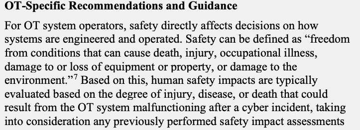
原本の表画像
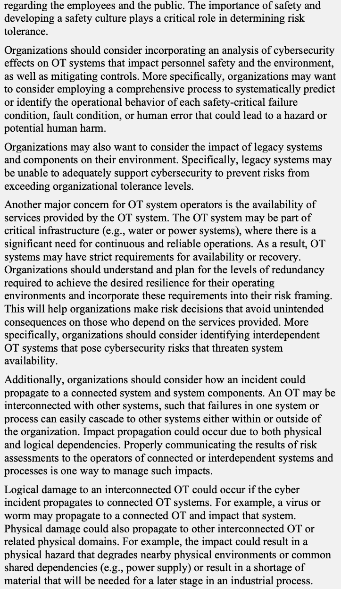
CISA promotes a cohesive effort between government and industry to improve their ability to anticipate, prioritize, and manage national-level OT risk. CISA assists OT system vendors and asset owners, operators, and other vendors across all critical infrastructure sectors to identify security vulnerabilities and develop sound, proactive mitigation strategies that strengthen their OT systems’ cybersecurity posture.
CISAは、政府と産業界が連携して、国家レベルのOTリスクを予測、優先順位付け、管理する能力を高める取り組みを推進している。CISAはすべての重要インフラ分野にわたり、OTシステムベンダー、資産所有者、運用者、その他のベンダーを支援し、セキュリティ脆弱性の特定と、OTシステムのサイバーセキュリティ態勢を強化する適切かつ先見的な緩和戦略の策定を行っている。
未レビュー訳原本の表画像
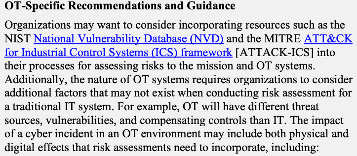
原本の表画像
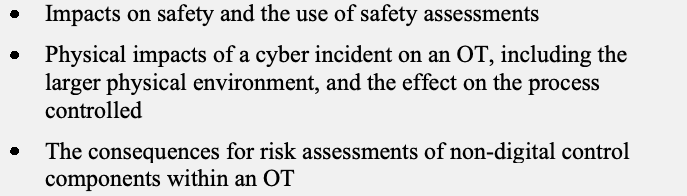
During risk framing, organizations should select appropriate risk assessment methodologies that include OT. When evaluating the potential physical damage from a cyber incident, organizations with OT systems may consider i) how a cyber incident could manipulate the operation to impact the physical environment, ii) what design features exist in the OT system to prevent or mitigate an impact, and iii) how a physical incident could emerge based on these conditions.
リスクの枠組みを設定する際、組織はOTを含む適切なリスク評価手法を選択する必要がある。サイバーインシデントによる潜在的な物理損害を評価する際、OTシステムを持つ組織は、i) サイバーインシデントがどのように運用を操作し、物理環境に影響し得るか、ii) 影響を防止または緩和する設計機能がOTシステムにあるか、iii) その条件のもとで物理インシデントがどのように発生し得るか、を検討できる。
未レビュー訳原本の表画像
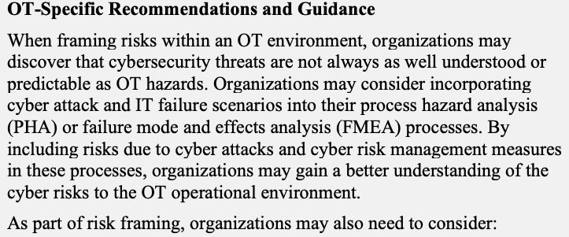
原本の表画像
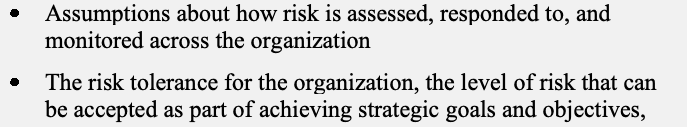
原本の表画像
原本の表画像
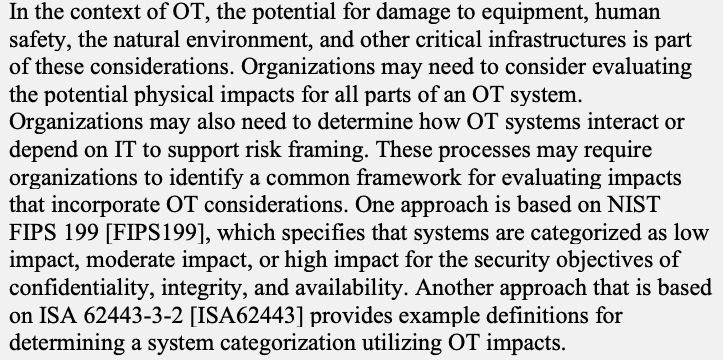
Table 3 provides possible example categories and impact levels that organizations may customize to meet their specific industry or business requirements. For example, some organizations may see an outage lasting up to one day as a having a high impact instead of moderate, as shown in the table.
表3は、組織が業界または業務要件に合わせて調整できるカテゴリと影響度の例を示す。例えば、表では中程度とされる最長1日の停止を、高影響と評価する組織もある。
未レビュー訳Table 3. Possible definitions for OT impact levels based on the product produced, the industry, and security concerns
表3. 生産物、業界およびセキュリティ上の懸念に基づくOT影響レベルの定義例
未レビュー訳| Category | High Impact | Moderate Impact | Low Impact |
| Outage at multiple Sites | Significant disruption to | Operational disruptions at | Partially disrupted |
| operations at multiple sites | multiple sites with | operations at multiple sites | |
| with restoration expected | restoration expected to | with restoration to full | |
| to require one or more | require more than one | capability requiring less | |
| days | hour | than one hour | |
| National infrastructure and services | Impacts multiple sectors or disrupts community services in a major way | Potential to impact sector at a level beyond the company | Little to no impact to |
| sectors beyond the | |||
| individual company and | |||
| little to no impact on | |||
| community | |||
| Cost (% of revenue) | > 25 % | > 5 % | < 5 % |
| Legal | Felony criminal offense or | Misdemeanor criminal | None |
| compliance violation that | offense or compliance | ||
| affects the license to | violation that results in | ||
| operate | fines | ||
| Public confidence | Loss of brand image | Loss of customer | None |
| confidence | |||
| People on-site | Fatality | Loss of workday or major | First aid or recordable |
| injury | injury | ||
| People off-site | Fatality or major | Complaints or local | No complaints |
| community incident | community impact | ||
| Environment | Citation by regional agency | Citation by local agency | Small, contained release below reportable limits |
| or long-term significant | |||
| damage over large area |
原本の表画像
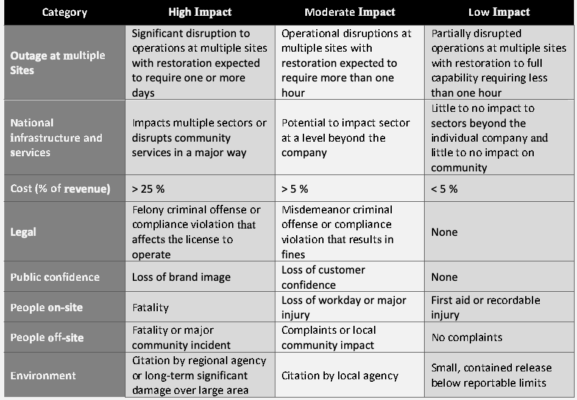
| カテゴリ | 高影響 | 中影響 | 低影響 |
| 複数サイトでの停止 | 複数サイトの運用に | 複数サイトで運用が混乱し、 | 複数サイトの運用が一部中断し、 |
| 大きな混乱が生じ、 | |||
| 復旧に要する期間は | 復旧に要する期間は | 完全な機能への復旧に | |
| 1日以上と見込まれる | 1時間を超える | 1時間未満を要する | |
| 見込まれる | 見込まれる | ||
| 国家インフラおよびサービス | 複数分野に影響する、または地域社会のサービスを大きく混乱させる | 企業を超えるレベルで当該分野に影響する可能性 | 当該企業以外の分野や |
| 地域社会への影響は | |||
| ほとんどなく、 | |||
| 地域社会への影響も | |||
| ほとんどない | |||
| コスト（収益に対する割合） | > 25 % | > 5 % | < 5 % |
| 法的影響 | 重罪または | 軽罪または | なし |
| コンプライアンス違反で | コンプライアンス違反で | ||
| 操業許可に | 罰金が科される | ||
| 影響する | |||
| 社会的信頼 | ブランドイメージの喪失 | 顧客の | なし |
| 信頼の喪失 | |||
| 構内の人 | 死亡 | 休業または重大な | 応急処置で済む、または記録対象の |
| 負傷 | 負傷 | ||
| 構外の人 | 死亡または重大な | 苦情または地域社会への | 苦情なし |
| 地域社会への被害 | 影響 | ||
| 環境 | 地域機関による指摘 | 地方機関による指摘 | 報告基準未満の小規模で封じ込められた放出 |
| または長期にわたる重大な | |||
| 広範囲の損害 |
原本の表画像
原本の表画像
原本の表画像
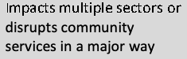
原本の表画像
原本の表画像
To support the risk assessment process, organizations should also define how the likelihood of occurrence for cybersecurity events will be determined to maintain consistency when assessing risks. NIST SP 800-30, Rev. 1 [SP800-30r1] provides guidance for organizations to develop likelihood weighted risk factors. Organizations should consider weighting risk factors based on an analysis of the probability that a given threat is capable of exploiting a given vulnerability (or set of vulnerabilities), that the threat event will be initiated, and that the threat event will result in adverse impacts. For adversarial threats, an assessment of likelihood of occurrence is typically based on adversary intent, capability, and targeting. For other-than-adversarial threat events, the likelihood of occurrence is estimated using historical evidence, empirical data, and other factors. If organizations find that there is minimal organizational historical data, they may want to consider extending their analysis to consider industry-specific data describes cybersecurity events reported for similar organizations. The likelihood of threat occurrence can also be based on the state of the organization (e.g., its core mission and business processes, enterprise architecture, information security architecture, information systems, and the environments in which those systems operate) and consider predisposing conditions and the presence and effectiveness of deployed security controls to protect against unauthorized or undesirable behavior, detect and limit damage, and/or other resiliency factors for the OT capabilities.
リスク評価プロセスを支援するため、組織はリスクを一貫して評価できるよう、サイバーセキュリティ事象の発生可能性の決定方法も定義する必要がある。NIST SP 800-30 Rev. 1 [SP800-30r1] は、発生可能性で重み付けしたリスク要因の策定に関するガイダンスを示す。組織は、特定の脅威が特定の脆弱性（または脆弱性群）を悪用できる確率、脅威事象が開始される確率、脅威事象が悪影響につながる確率の分析に基づいて、リスク要因に重み付けすることを検討する必要がある。敵対的脅威の発生可能性は通常、攻撃者の意図、能力、標的選定に基づいて評価する。非敵対的脅威事象については、過去の証拠、実証データ、その他の要因を用いて発生可能性を推定する。組織内に過去のデータがほとんどない場合は、類似組織で報告されたサイバーセキュリティ事象に関する業界固有のデータも分析対象に含めることを検討できる。脅威の発生可能性は、組織の状態（例えば、主要なミッション・業務プロセス、エンタープライズアーキテクチャ、情報セキュリティアーキテクチャ、情報システム、それらの運用環境）に基づいて評価することもできる。さらに、素因となる条件、望ましくない行動を防ぎ、損害を検知・制限するために展開したセキュリティ管理策の存在と有効性、OT能力に関するその他のレジリエンス要因も考慮する。
未レビュー訳原本の表画像
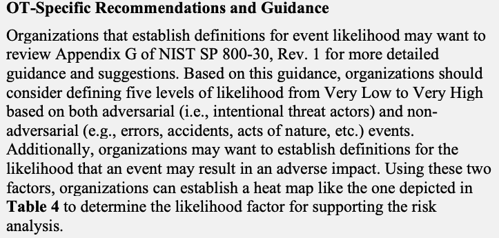
Table 4. Event Likelihood Evaluation
表4. 事象発生可能性の評価
未レビュー訳| Likelihood of | Likelihood That Threat Events Result in Adverse Impacts | ||||
| Threat Event | |||||
| Initiation or | Very Low | Low | Moderate | High | Very High |
| Occurrence | |||||
| Very High | Low | Moderate | High | Very High | Very High |
| High | Low | Moderate | Moderate | High | Very High |
| Moderate | Low | Low | Moderate | Moderate | High |
| Low | Very Low | Low | Low | Moderate | Moderate |
| Very Low | Very Low | Very Low | Low | Low | Low |
原本の表画像
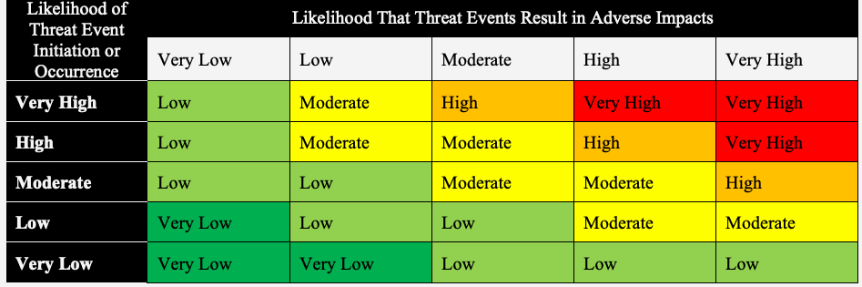
| 脅威事象の | 脅威事象が悪影響をもたらす可能性 | ||||
| 開始または | |||||
| 発生の可能性 | 非常に低 | 低 | 中 | 高 | 非常に高 |
| 非常に高 | 低 | 中 | 高 | 非常に高 | 非常に高 |
| 高 | 低 | 中 | 中 | 高 | 非常に高 |
| 中 | 低 | 低 | 中 | 中 | 高 |
| 低 | 非常に低 | 低 | 低 | 中 | 中 |
| 非常に低 | 非常に低 | 非常に低 | 低 | 低 | 低 |
4.1.2. Assessing Risk in an OT Environment
4.1.2. OT環境におけるリスク評価
未レビュー訳Risk assessments leverage the outputs of framing risk (e.g., acceptable risk assessment methodologies, risk management strategy, and risk tolerance) and facilitate efforts to identify, estimate, and prioritize risks to operations, assets, individuals, and other organizations. Risk assessments occur at all risk management levels (i.e., organization, mission and business function, and system) and can be used to inform risk assessments at other levels. Regardless of which risk management level the risk assessment is conducted at, assessing risk requires identifying threats and vulnerabilities, the harm that such threats and vulnerabilities may cause, and the likelihood that adverse events may arise from those threats and vulnerabilities. When the organization conducts a risk assessment that includes OT systems, there may be additional considerations that do not exist when assessing the risks of traditional IT systems. For example, the impact of a cyber incident on an OT may include both physical and digital effects.
リスク評価では、リスクの枠組み設定から得られた結果（例えば、許容可能なリスク評価手法、リスク管理戦略、リスク許容度）を活用し、運用、資産、個人、その他の組織に対するリスクの特定、推定、優先順位付けを支援する。リスク評価はすべてのリスク管理レベル（すなわち、組織、ミッション・業務機能、システム）で実施され、他のレベルのリスク評価にも情報を提供できる。どのレベルで実施する場合でも、リスク評価には脅威と脆弱性、それらがもたらし得る損害、脅威と脆弱性に起因する悪影響事象の発生可能性を特定することが必要である。OTシステムを含むリスク評価では、従来型ITシステムの評価にはない追加の考慮事項がある場合がある。例えば、OTに対するサイバーインシデントの影響には物理的・デジタル両方の影響が含まれ得る。
未レビュー訳原本の表画像
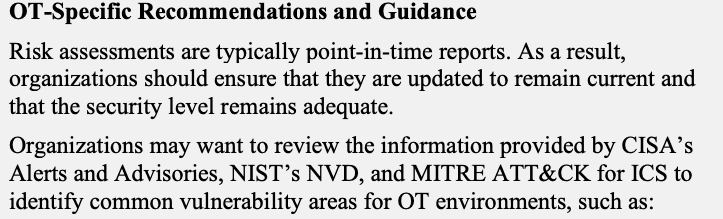
原本の表画像
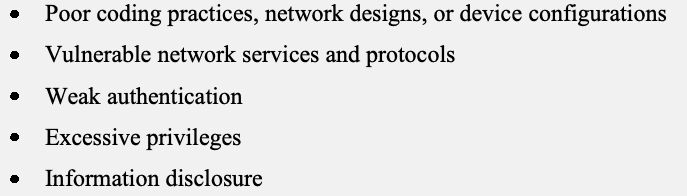
原本の表画像
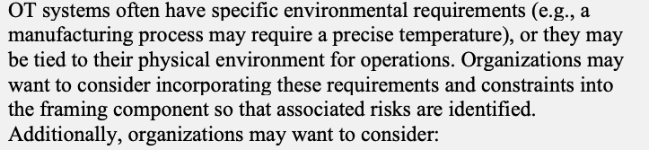
原本の表画像
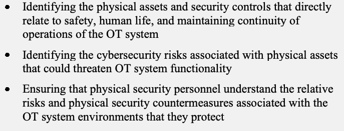
原本の表画像
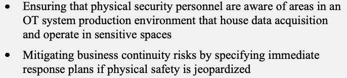
Risk assessments also require reviewing the digital and non-digital mechanisms that are implemented to minimize adverse event impacts. OT systems often incorporate non-digital mechanisms to provide fault tolerance and prevent the OT from acting outside of acceptable parameters. These non-digital mechanisms may help reduce the negative impacts that a digital incident on the OT might have and should be incorporated into the risk assessment process. For example, OT often have non-digital control mechanisms that can prevent it from operating outside of a safe boundary and thereby limit the impact of an attack (e.g., a mechanical relief pressure valve). Analog mechanisms (e.g., meters, alarms) can also be used to observe the physical system state and provide operators with reliable data if digital readings are unavailable or corrupted. Table 5 categorizes non-digital control mechanisms that could reduce the impact of an OT incident.
リスク評価では、悪影響を最小限に抑えるため実装されているデジタル・非デジタルの仕組みも確認する必要がある。OTシステムでは、フォールトトレランスを確保し、OTが許容パラメーターを逸脱して動作することを防ぐため、非デジタルの仕組みを組み込むことが多い。これらの仕組みは、OTに対するデジタルインシデントの悪影響を軽減する可能性があり、リスク評価に含める必要がある。例えば、OTには安全境界を逸脱した動作を防ぎ、攻撃の影響を制限できる非デジタル制御機構（例えば、機械式圧力逃し弁）が備わることが多い。アナログ機構（例えば、計器、警報）も物理システムの状態を観測し、デジタル表示が利用できないか破損した場合に信頼できるデータを運用者に提供できる。表5は、OTインシデントの影響を軽減し得る非デジタル制御機構を分類する。
未レビュー訳Table 5. Categories of non-digital OT control components
表5. 非デジタルOT制御コンポーネントの分類
未レビュー訳| Control Type | Description |
| Analog displays or alarms | Non-digital mechanisms measure and display the state of the physical system (e.g., temperature, pressure, voltage, current) and can provide the operator with accurate information when digital displays are unavailable or corrupted. The information may be provided to the operator on some non-digital display (e.g., thermometers, pressure gauges) and through audible alarms. |
| Manual control mechanisms | Manual control mechanisms (e.g., manual valve controls, physical breaker switches) allow operators to manually control an actuator without relying on the digital OT system. This ensures that an actuator can be controlled even if the OT system is unavailable or compromised. |
| Analog control systems | Analog control systems use non-digital sensors and actuators to monitor and control a physical process. These may prevent the physical process from entering an undesired state when the digital OT system is unavailable or corrupted. Analog controls include devices such as regulators, governors, and electromechanical relays. An example is a device that is designed to open during emergency or abnormal conditions to prevent the rise of internal fluid pressure in excess of a specified value, thus bringing the process to a safer state. The device may also be designed to prevent an excessive internal vacuum, such as a pressure relief valve, a non-reclosing pressure relief device (e.g., rupture disc), or a vacuum relief valve. |
原本の表画像
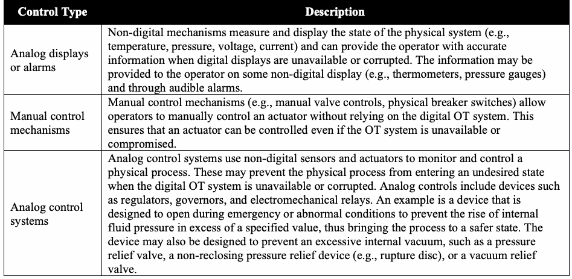
| 制御の種類 | 説明 |
| アナログ表示器または警報 | 非デジタル機構は物理システムの状態（例えば、温度、圧力、電圧、電流）を測定・表示し、デジタル表示が利用できないか破損している場合に、正確な情報を運用者に提供できる。情報は温度計や圧力計などの非デジタル表示器、または可聴警報を通じて運用者に提供される。 |
| 手動制御機構 | 手動バルブ制御や物理的な遮断器スイッチなどの手動制御機構により、デジタルOTシステムに依存せず運用者がアクチュエーターを手動制御できる。このため、OTシステムが利用不能または侵害された場合でもアクチュエーターを制御できる。 |
| アナログ制御システム | アナログ制御システムは非デジタルセンサーとアクチュエーターを用いて物理プロセスを監視・制御する。デジタルOTシステムが利用不能または破損した場合、物理プロセスが望ましくない状態になるのを防げることがある。アナログ制御には、レギュレーター、調速機、電気機械式リレーなどが含まれる。例えば、緊急時や異常時に開き、内部流体圧力が指定値を超えて上昇するのを防ぎ、プロセスをより安全な状態にする装置がある。圧力逃し弁、非再閉鎖型圧力逃し装置（例えば、破裂板）、真空逃し弁など、過大な内部真空を防ぐよう設計された装置もある。 |
原本の表画像
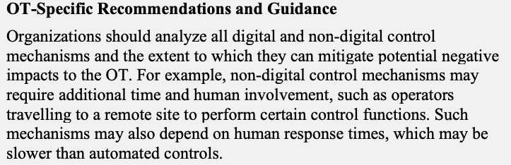
Additionally, organizations may need to consider privacy with their risk assessment, which sometimes require a different approach. The NIST Privacy Risk Assessment Methodology (PRAM) is a tool that applies the risk model from NIST IR 8062 [IR8062] and helps organizations analyze, assess, and prioritize privacy risks to determine how to respond and select appropriate solutions.
さらに、プライバシーは異なるアプローチを要する場合があるため、組織はリスク評価で考慮する必要がある。NIST Privacy Risk Assessment Methodology（PRAM）は、NIST IR 8062 [IR8062] のリスクモデルを適用し、組織がプライバシーリスクを分析、評価、優先順位付けし、対応方法と適切な解決策を選べるよう支援するツールである。
未レビュー訳4.1.3. Responding to Risk in an OT Environment
4.1.3. OT環境におけるリスク対応
未レビュー訳The risk response component provides an organization-wide response to risk in accordance with the risk framing component by identifying possible courses of actions to address risk, evaluating those possibilities while considering the organization’s risk tolerance and other issues identified during framing, and choosing the best alternative for the organization. The response component includes the implementation of the chosen course of action to address the identified risk: acceptance, avoidance, mitigation, sharing, transfer, or any combination of these options.8
リスク対応要素では、リスクの枠組み設定要素に沿った組織全体の対応を行う。リスクに対処する行動方針を特定し、組織のリスク許容度や枠組み設定時に特定したその他の事項を考慮して選択肢を評価し、最適な代替案を選ぶ。対応要素には、特定したリスクに対処するため選択した行動方針（受容、回避、緩和、共有、移転、またはこれらの組み合わせ）の実装が含まれる。8
未レビュー訳原本の表画像
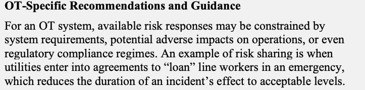
4.1.4. Monitoring Risk in an OT Environment
4.1.4. OT環境におけるリスク監視
未レビュー訳Monitoring risk is the fourth component of risk management activities. Organizations monitor risk on an ongoing basis, including the implementation of chosen risk management strategies, changes in the environment that may affect the risk calculation, and the effectiveness and efficiency of risk reduction activities. The activities in the monitoring component impact all of the other components.
リスク監視はリスク管理活動の第4要素である。組織は、選択したリスク管理戦略の実装、リスク計算に影響する環境変化、リスク低減活動の有効性と効率性などを継続的に監視する。監視要素の活動は他のすべての要素に影響する。
未レビュー訳原本の表画像
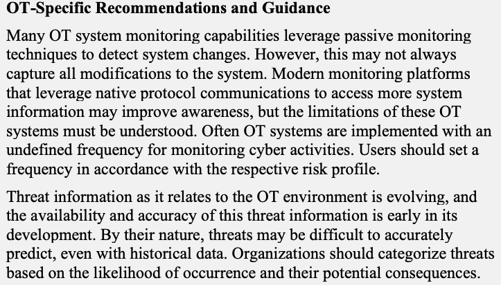
原本の表画像
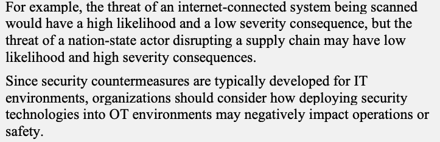
Special Areas for Consideration
特別な考慮事項
未レビュー訳Supply chain risk management and risk management for safety are critical aspects of OT cybersecurity risk management.
サプライチェーンリスク管理と安全に関するリスク管理は、OTサイバーセキュリティリスク管理の重要な側面である。
未レビュー訳4.2.1. Supply Chain Risk Management
4.2.1. サプライチェーンリスク管理
未レビュー訳Cybersecurity risks can arise from the products or services acquired to support OT needs. These risks can be introduced anywhere in the supply chain and at any stage in the life cycle. Whether they are malicious, natural, or unintentional, these risks have the potential to compromise the availability and integrity of critical OT systems and components, as well as the availability, integrity, and confidentiality of the data utilized by the OT, thereby causing harms that range from minor disruptions to impacts on life and safety. With few exceptions, organizations that are responsible for OT rely upon suppliers, other third-party providers, and their extended supply chains for a range of needs. These supply-side organizations perform critical roles and functions, including manufacturing and provisioning technology products, providing software upgrades and patches, performing integration services, or otherwise supporting the day-to-day operations and maintenance of OT systems, components, and operational environments. For this reason, OT organizations should seek to understand and mitigate the supply chain-related risks that can be inherited from these supply-side organizations and the products and services that they provide. Identifying, assessing, and effectively responding to cybersecurity risks in supply chains is best accomplished by incorporating cybersecurity supply chain risk management (C-SCRM) considerations into organizational policies, plans, and practices. This includes extending cybersecurity expectations and requirements to vendors and gaining better understanding, visibility, and control over the supply chains that are associated with acquired products and services. Organizations should vet suppliers and service providers to ascertain their capabilities, trustworthiness, the adequacy of their internal security practices, the effectiveness of safeguards, their supply chain relationships, and any risks that may be associated with those relationships and dependencies. The requirements for and evaluation of products and discrete components should extend beyond an assessment of whether functional and technical requirements are satisfied and address applicable C-SCRM factors, such as a product’s provenance, pedigree, and composition and whether the product is taint-free and authentic. Additionally, special consideration should be given to how difficult it may be to attain original replacement parts or updates over the life of the product and how diverse the sources of supply are and may be in the future.
OTのニーズを支えるために取得する製品やサービスから、サイバーセキュリティリスクが生じる場合がある。こうしたリスクはサプライチェーンのあらゆる場所やライフサイクルのどの段階でも入り込む可能性がある。悪意によるもの、自然に起因するもの、意図しないものを問わず、重要なOTシステムやコンポーネントの可用性・完全性、およびOTが利用するデータの可用性・完全性・機密性を損なう可能性がある。その結果、軽微な中断から人命や安全に関わる影響まで、さまざまな被害が生じ得る。例外は少なく、OTに責任を持つ組織は、多様なニーズに対応するため、サプライヤー、その他のサードパーティープロバイダー、さらにその先のサプライチェーンに依存している。これらの供給側組織は、技術製品の製造・提供、ソフトウェアのアップグレードやパッチの提供、統合サービスの実施、OTシステム・コンポーネント・運用環境の日常運用・保守支援など、重要な役割と機能を担う。このためOT組織は、供給側組織やその製品・サービスから引き継ぐサプライチェーン関連リスクを理解し、緩和する必要がある。サプライチェーンのサイバーセキュリティリスクを特定、評価し、効果的に対応するには、サイバーセキュリティ・サプライチェーンリスク管理（C-SCRM）の考慮事項を組織の方針、計画、慣行に組み込むのが最善である。これには、サイバーセキュリティ上の期待と要件をベンダーに拡張し、取得する製品・サービスに関連するサプライチェーンの理解、可視性、統制を高めることが含まれる。組織は、サプライヤーやサービスプロバイダーを審査し、その能力、信頼性、内部セキュリティ慣行の適切性、安全対策の有効性、サプライチェーン関係、それらの関係・依存に伴うリスクを確認する必要がある。製品や個別コンポーネントの要件・評価では、機能要件・技術要件の充足確認にとどまらず、来歴、系譜、構成、汚染されていない真正な製品かどうかなど、該当するC-SCRM要因にも対処する必要がある。さらに、製品の寿命を通じて純正交換部品や更新を入手する難しさ、供給元の多様性と将来の変化も特に考慮する必要がある。
未レビュー訳OT organizations should familiarize themselves with NIST SP 800-161, Supply Chain Risk Management Practices for Federal Information Systems and Organizations [SP800-161], and begin or continue to implement the key practices, C-SCRM security controls, and C-SCRM risk management process activities described in that publication. There is extensive guidance about how to establish a C-SCRM program using a phased approach that begins with putting the foundational elements in place and expanding upon that foundation over time to ensure sustained effectiveness and the ability to enhance program capabilities. There is also guidance about conducting supply chain risk assessments, incorporating C-SCRM into procurement requirements, the importance of an integrated and inter-disciplinary risk management approach, supplemental C-SCRM security control guidance, and templates that organizations can leverage.
OT組織は、NIST SP 800-161, Supply Chain Risk Management Practices for Federal Information Systems and Organizations [SP800-161] をよく理解し、同書に記載された主要慣行、C-SCRMセキュリティ管理策、C-SCRMリスク管理プロセス活動の実装を開始または継続する必要がある。C-SCRMプログラムの確立については、基礎要素を整備し、その基盤を時間をかけて拡張する段階的アプローチによる詳細なガイダンスがある。これにより継続的な有効性とプログラム能力の強化が可能となる。また、サプライチェーンリスク評価の実施、調達要件へのC-SCRMの組み込み、統合的・学際的なリスク管理アプローチの重要性、補足的なC-SCRMセキュリティ管理策ガイダンス、組織が活用できるテンプレートに関するガイダンスもある。
未レビュー訳4.2.2. Safety Systems
4.2.2. 安全システム
未レビュー訳The culture of safety and safety assessments is well established within much of the OT user community. Information security risk assessments should complement such assessments, though they may use different approaches and cover different areas. Safety assessments are primarily concerned with the physical world, while information security risk assessments consider the digital world. However, in an OT environment, the physical and the digital are intertwined, and significant overlap may occur. Organizations should, therefore, consider all aspects of risk management for safety (e.g., risk framing, risk tolerances) and the safety assessment results when carrying out risk assessments for information security. The personnel responsible for the information security risk assessment must be able to identify and communicate identified risks that could have safety implications. Conversely, the personnel charged with safety assessments must be familiar with the potential physical impacts and their likelihood. Safety systems may reduce the impact of a cyber incident on the OT and are often deployed to perform specific monitoring and control functions to ensure the safety of people, the environment, processes, and assets. While these systems are traditionally implemented to be fully redundant and independent from the primary OT, some architectures combine control and safety functions, components, or networks. Combining control and safety could allow a sophisticated attacker access to both control and safety systems if the OT were compromised. Organizations should ensure the adequate separation of components consistent with the risk of compromise and evaluate the impact of the implemented security controls on the safety system to determine whether they negatively impact the system.
OT利用者コミュニティの多くでは、安全文化と安全評価が十分に確立されている。情報セキュリティリスク評価は、異なる方法を用い対象範囲が異なる場合があるものの、安全評価を補完する必要がある。安全評価は主に物理世界を扱い、情報セキュリティリスク評価はデジタル世界を扱う。しかしOT環境では物理とデジタルが絡み合い、大きく重複することがある。そのため組織は、情報セキュリティリスク評価を実施する際、安全に関するリスク管理のあらゆる側面（例えば、リスクの枠組み設定、リスク許容度）と安全評価結果を考慮する必要がある。情報セキュリティリスク評価を担当する要員は、安全に影響し得る特定済みリスクを識別し、伝達できなければならない。逆に、安全評価担当者は潜在的な物理的影響とその発生可能性を理解する必要がある。安全システムはOTへのサイバーインシデントの影響を軽減する場合があり、人、環境、プロセス、資産の安全を確保する特定の監視・制御機能を担うために導入されることが多い。従来、これらのシステムは主OTから完全に冗長かつ独立して実装されてきたが、制御と安全の機能、コンポーネント、ネットワークを組み合わせるアーキテクチャもある。制御と安全を統合すると、OTが侵害された際に高度な攻撃者が制御システムと安全システムの両方にアクセスできる可能性がある。組織は、侵害リスクに応じた適切なコンポーネント分離を確保し、実装したセキュリティ管理策が安全システムに与える影響を評価し、システムに悪影響がないか判断する必要がある。
未レビュー訳Applying the Risk Management Framework to OT Systems
OTシステムへのリスク管理フレームワークの適用
未レビュー訳The NIST Risk Management Framework (RMF) applies the risk management process and concepts (i.e., framing risk, assessing risk, responding to risk, and monitoring risk) to systems and organizations. The following subsections describe the process of applying the RMF to OT and include a brief description of each step and task, the intended outcome of each task, task mappings to other standards and guidelines applicable to OT (e.g., the Cybersecurity Framework and IEC 62443), and OT-specific implementation guidance. Some tasks are optional, and not all tasks include OT-specific considerations or guidance.
NISTリスク管理フレームワーク（RMF）は、リスク管理のプロセスと概念（すなわち、リスクの枠組み設定、評価、対応、監視）をシステムと組織に適用する。以下の節ではRMFをOTに適用するプロセスを説明する。各ステップとタスクの簡潔な説明、各タスクの意図する成果、OTに適用可能な他の規格・ガイドライン（例えば、サイバーセキュリティ・フレームワークやIEC 62443）とのタスク対応、およびOT固有の実装ガイダンスを含む。一部のタスクは任意であり、すべてのタスクにOT固有の考慮事項やガイダンスが含まれるわけではない。
未レビュー訳The RMF steps in Fig. 15, while shown sequentially, can be implemented in a different order to be consistent with established management and system development life cycle processes.
図15ではRMFの各ステップを順番に示しているが、既存の管理プロセスやシステム開発ライフサイクルプロセスに合わせ、別の順序で実装することもできる。
未レビュー訳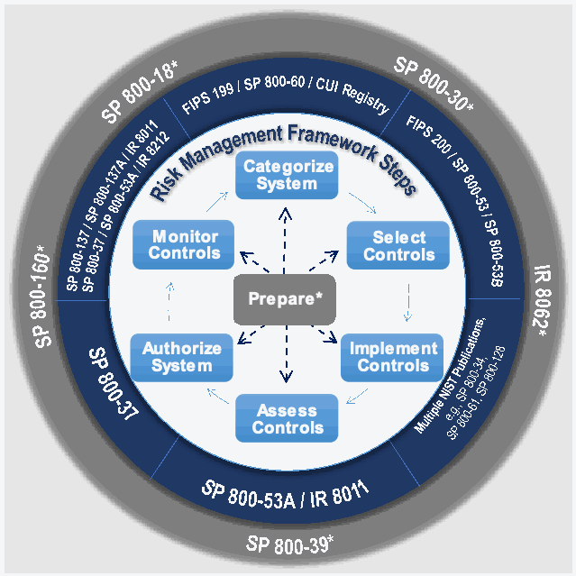
図15. RMFの各ステップと循環的な関係
| A | M C u S | Categorize System onitor Select ontrols Controls Prepare* thorize Implement ystem Controls Assess Controls |
原本の表画像
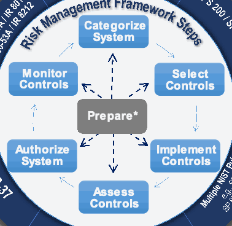
| A | M C u S | 分類システム／監視／管理策の選択／準備*／認可／システム管理策の実装／管理策の評価 |
Fig. 15. Risk Management Framework steps
図15. リスク管理フレームワークのステップ
未レビュー訳4.3.1. Prepare
4.3.1. 準備
未レビュー訳The purpose of the Prepare step is to carry out essential activities at the organizational, mission and business process, and system levels to help the organization manage its security and privacy risks using the RMF. The Prepare step leverages activities that are already being conducted within cybersecurity programs to emphasize the importance of having organization-wide governance and resources in place to support risk management. Table 6 provides details on applying the Prepare step to OT.
準備ステップの目的は、RMFを用いて組織がセキュリティリスクとプライバシーリスクを管理できるよう、組織、ミッション・業務プロセス、システムの各レベルで必要な活動を実施することである。準備ステップでは、サイバーセキュリティ・プログラム内ですでに実施している活動を活用し、リスク管理を支援する組織全体のガバナンスとリソースを整備する重要性を強調する。表6に、準備ステップをOTに適用する詳細を示す。
未レビュー訳Table 6. Applying the RMF Prepare step to OT
表6. RMFの準備ステップをOTに適用する
未レビュー訳| Tasks | Outcomes | OT-Specific Guidance |
| Organizational and Mission and Business Process Levels | ||
| TASK P-1 RISK MANAGEMENT ROLES | Individuals are identified and assigned key roles for executing the RMF. [Cybersecurity Framework: ID.AM-6; ID.GV-2] [IEC 62443-2-1: ORG 1.3] | Establish and maintain personnel cybersecurity roles and responsibilities for both IT and OT systems. Include cybersecurity roles and responsibilities for third-party providers. Examples of OT |
原本の表画像
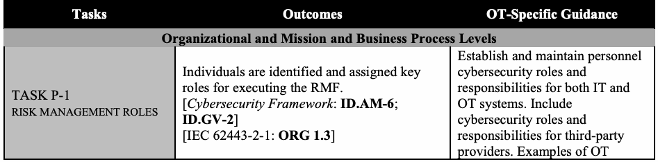
| タスク | 成果 | OT固有のガイダンス |
| 組織レベルおよびミッション・業務プロセスレベル | ||
| タスクP-1 リスク管理上の役割 | RMFを実行する個人を特定し、主要な役割を割り当てる。[Cybersecurity Framework: ID.AM-6; ID.GV-2] [IEC 62443-2-1: ORG 1.3] | ITシステムとOTシステム双方について、要員のサイバーセキュリティ上の役割と責任を確立・維持する。サードパーティープロバイダーの役割と責任も含める。OT要員の例には、 |
原本の表画像
| Tasks | Outcomes | OT-Specific Guidance |
| personnel include the Process/Plant Manager, Process Control Engineer, Operator, Functional Safety Engineer, Maintenance Personnel, and Process Safety Manager. | ||
| TASK P-2 RISK MANAGEMENT STRATEGY | A risk management strategy for the organization that includes a determination and expression of organizational risk tolerance is established. [Cybersecurity Framework: ID.RM; ID.SC] [IEC 62443-2-1: ORG 2.1] | The risk management strategy encompasses the whole organization. Consider the unique regulatory requirements as it relates to organizations with OT systems. |
| TASK P-3 RISK ASSESSMENT— ORGANIZATION | An organization-wide risk assessment is completed, or an existing risk assessment is updated. [Cybersecurity Framework: ID.RA; ID.SC-2] [IEC 62443-2-1: Event1.9; ORG 1.3; 2.1] | |
| TASK P-4 | Organizationally tailored control baselines and/or Cybersecurity Framework profiles are established and made available. [Cybersecurity Framework: Profile] | An organizationally tailored control baseline for OT systems can be developed to address mission and business needs, unique operating environments, and/or other requirements. |
| ORGANIZATIONALLY | ||
| TAILORED CONTROL | ||
| BASELINES AND | ||
| CYBERSECURITY | ||
| FRAMEWORK PROFILES | ||
| (OPTIONAL) | ||
| TASK P-5 COMMON CONTROL IDENTIFICATION | Common controls that are available for inheritance by organizational systems are identified, documented, and published. | Common controls available for inheritance may adversely impact OT system operation. Consider whether common controls can be applied to OT systems effectively, safely, and without adverse impacts on OT system operation. |
| TASK P-6 | A prioritization of organizational systems with the same impact level is conducted. [Cybersecurity Framework: ID.AM-5] [IEC 62443-2-1: DATA 1.1] | Criteria such as safety or critical service delivery can be used in the impact-level prioritization. |
| IMPACT-LEVEL | ||
| PRIORITIZATION | ||
| (OPTIONAL) | ||
| TASK P-7 CONTINUOUS MONITORING STRATEGY – ORGANIZATION | An organization-wide strategy for monitoring control effectiveness is developed and implemented. [Cybersecurity Framework: DE.CM; ID.SC- 4] [IEC 62443-2-1: EVENT 1.1; COMP 2.2 USER 1.06; EVENT 1.1.; ORG2.2 | |
| System-Level | ||
| TASK P-8 MISSION OR BUSINESS FOCUS | Missions, business functions, and mission and business processes that the system is intended to support are identified. [Cybersecurity Framework: Profile; Implementation Tiers; ID.BE] [IEC 62443-2-1: ORG1.6; AVAIL 1.2; AVAIL 1.1] | When mapping OT and IT processes, the information flows and protocols should also be documented. |
| TASK P-9 | The stakeholders with an interest in the system are identified. | Example OT personnel include the Process/Plant Manager, |
| SYSTEM STAKEHOLDERS |
原本の表画像
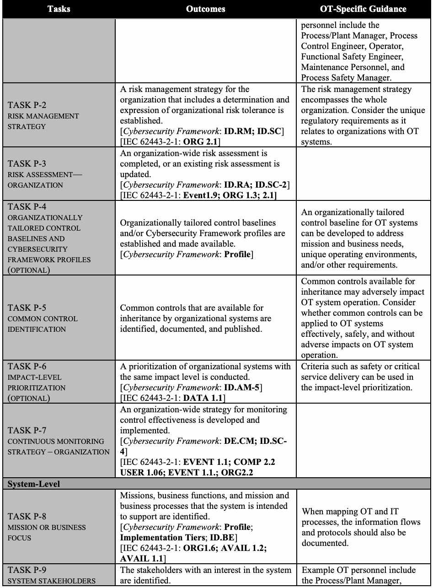
| タスク | 成果 | OT固有のガイダンス |
| プロセス／プラント管理者、プロセス制御エンジニア、オペレーター、機能安全エンジニア、保守要員、プロセス安全管理者が含まれる。 | ||
| タスクP-2 リスク管理戦略 | 組織のリスク許容度の決定と表明を含む、組織のリスク管理戦略を確立する。[Cybersecurity Framework: ID.RM; ID.SC] [IEC 62443-2-1: ORG 2.1] | リスク管理戦略は組織全体を対象とする。OTシステムを持つ組織に固有の規制要件を考慮する。 |
| タスクP-3 リスク評価—組織 | 組織全体のリスク評価を完了するか、既存のリスク評価を更新する。[Cybersecurity Framework: ID.RA; ID.SC-2] [IEC 62443-2-1: Event1.9; ORG 1.3; 2.1] | |
| タスクP-4 | 組織に合わせた管理策ベースラインやサイバーセキュリティ・フレームワークのプロファイルを確立し、利用可能にする。[Cybersecurity Framework: Profile] | ミッション・業務上のニーズ、固有の運用環境、その他の要件に対処するため、OTシステム向けに組織固有の管理策ベースラインを策定できる。 |
| 組織固有の | ||
| 調整済み管理策 | ||
| ベースラインおよび | ||
| サイバーセキュリティ | ||
| フレームワーク・プロファイル | ||
| （任意） | ||
| タスクP-5 共通管理策の特定 | 組織のシステムが継承できる共通管理策を特定、文書化し、公開する。 | 継承可能な共通管理策がOTシステムの運用に悪影響を与える場合がある。共通管理策をOTシステムに有効かつ安全に、運用への悪影響なく適用できるか検討する。 |
| タスクP-6 | 同じ影響度の組織システムについて優先順位付けを行う。[Cybersecurity Framework: ID.AM-5] [IEC 62443-2-1: DATA 1.1] | 影響度による優先順位付けには、安全性や重要サービスの提供などの基準を利用できる。 |
| 影響度レベル | ||
| の優先順位付け | ||
| （任意） | ||
| タスクP-7 継続的監視戦略—組織 | 管理策の有効性を監視する組織全体の戦略を策定・実施する。[Cybersecurity Framework: DE.CM; ID.SC-4] [IEC 62443-2-1: EVENT 1.1; COMP 2.2 USER 1.06; EVENT 1.1.; ORG2.2 | |
| システムレベル | ||
| タスクP-8 ミッションまたは業務の焦点 | システムが支援するミッション、業務機能、ミッション・業務プロセスを特定する。[Cybersecurity Framework: Profile; Implementation Tiers; ID.BE] [IEC 62443-2-1: ORG1.6; AVAIL 1.2; AVAIL 1.1] | |
| OT・ITプロセスを対応付ける際、情報フローとプロトコルも文書化する必要がある。 | タスクP-9 | システムに利害関係を持つステークホルダーを特定する。 |
| OT要員の例には、プロセス／プラント管理者、 | システムのステークホルダー |
原本の表画像
原本の表画像
原本の表画像
原本の表画像
原本の表画像
| Tasks | Outcomes | OT-Specific Guidance |
| [Cybersecurity Framework: ID.AM; ID.BE] | Process Control Engineer, Operator, Functional Safety Engineer, and Process Safety Manager. | |
| TASK P-10 ASSET IDENTIFICATION | Stakeholder assets are identified and prioritized. [Cybersecurity Framework: ID.AM] | OT system components can include PLCs, sensors, actuators, robots, machine tools, firmware, network switches, routers, power supplies, and other networked components or devices. |
| TASK P-11 | The authorization boundary (i.e., system) is determined. | |
| AUTHORIZATION | ||
| BOUNDARY | ||
| TASK P-12 INFORMATION TYPES | The types of information processed, stored, and transmitted by the system are identified. [Cybersecurity Framework: ID.AM-5] | |
| TASK P-13 INFORMATION LIFE CYCLE | All stages of the information life cycle are identified and understood for each information type processed, stored, or transmitted by the system. [Cybersecurity Framework: ID.AM-3; ID.AM-4] | |
| TASK P-14 RISK ASSESSMENT – SYSTEM | A system-level risk assessment is completed, or an existing risk assessment is updated. [Cybersecurity Framework: ID.RA; ID.SC-2] | Risk assessments, including performance/load testing and penetration testing, are conducted on the OT systems with care to ensure that OT operations are not adversely impacted by the testing process. |
| TASK P-15 REQUIREMENTS DEFINITION | Security and privacy requirements are defined and prioritized. [Cybersecurity Framework: ID.GV; PR.IP] | |
| TASK P-16 ENTERPRISE ARCHITECTURE | The placement of the system within the enterprise architecture is determined. | Group OT components by function or sensitivity level to optimize cybersecurity control implementation. |
| TASK P-17 REQUIREMENTS ALLOCATION | Security and privacy requirements are allocated to the system and the environment in which the system operates. [Cybersecurity Framework: ID.GV] | As security and privacy requirements are allocated to the OT system, considerations such as impact on performance and safety are considered. |
| TASK P-18 SYSTEM REGISTRATION | The system is registered for purposes of management, accountability, coordination, and oversight. [Cybersecurity Framework: ID.GV] |
原本の表画像
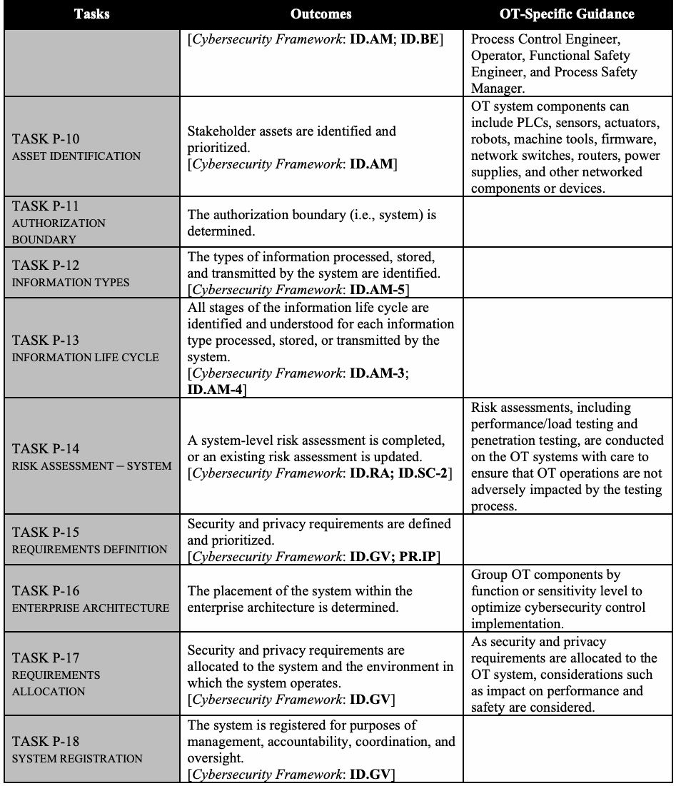
| タスク | 成果 | OT固有のガイダンス |
| [Cybersecurity Framework: ID.AM; ID.BE] | プロセス制御エンジニア、オペレーター、機能安全エンジニア、プロセス安全管理者。 | |
| タスクP-10 資産の特定 | ステークホルダーの資産を特定し、優先順位付けする。[Cybersecurity Framework: ID.AM] | OTシステムのコンポーネントには、PLC、センサー、アクチュエーター、ロボット、工作機械、ファームウェア、ネットワークスイッチ、ルーター、電源、その他のネットワーク接続コンポーネントや機器が含まれる。 |
| タスクP-11 | 認可境界（すなわち、システム）を決定する。 | |
| 認可 | ||
| 境界 | ||
| タスクP-12 情報の種類 | システムが処理、保存、伝送する情報の種類を特定する。[Cybersecurity Framework: ID.AM-5] | |
| タスクP-13 情報ライフサイクル | システムが処理、保存、伝送する各情報種別について、情報ライフサイクルの全段階を特定し、理解する。[Cybersecurity Framework: ID.AM-3; ID.AM-4] | |
| タスクP-14 リスク評価—システム | システムレベルのリスク評価を完了するか、既存のリスク評価を更新する。[Cybersecurity Framework: ID.RA; ID.SC-2] | 性能・負荷試験や侵入試験を含むリスク評価は、試験プロセスがOT運用に悪影響を与えないよう注意してOTシステム上で実施する。 |
| タスクP-15 要件の定義 | セキュリティ要件とプライバシー要件を定義し、優先順位付けする。[Cybersecurity Framework: ID.GV; PR.IP] | |
| タスクP-16 エンタープライズアーキテクチャ | エンタープライズアーキテクチャ内におけるシステムの配置を決定する。 | サイバーセキュリティ管理策の実装を最適化するため、OTコンポーネントを機能または機微度でグループ化する。 |
| タスクP-17 要件の割り当て | セキュリティ要件とプライバシー要件を、システムおよびシステムの運用環境に割り当てる。[Cybersecurity Framework: ID.GV] | セキュリティ要件とプライバシー要件をOTシステムに割り当てる際は、性能や安全への影響などを考慮する。 |
| タスクP-18 システム登録 | 管理、説明責任、調整、監督のためにシステムを登録する。[Cybersecurity Framework: ID.GV] |
原本の表画像
原本の表画像
原本の表画像
原本の表画像
原本の表画像
原本の表画像
原本の表画像
原本の表画像
4.3.2. Categorize
4.3.2. 分類
未レビュー訳In the Categorize step, the potential adverse impacts of the loss of confidentiality, integrity, and availability of the information and system are determined. For each information type and system under consideration, the three security objectives – confidentiality, integrity, and availability – are associated with one of three levels of potential impacts of a security breach. Of the three security objectives, availability is generally the greatest concern for an OT. The standards and guidance for this categorization process can be found in FIPS 199 [FIPS199] and NIST SP 800-60 [SP800-60v1r1][SP800-60v2r1], respectively. The following OT example is taken from FIPS 199:
分類ステップでは、情報およびシステムの機密性、完全性、可用性が失われた場合に想定される悪影響を決定する。対象となる各情報種別・システムについて、3つのセキュリティ目的（機密性、完全性、可用性）を、セキュリティ侵害による潜在的影響の3段階のいずれかに対応付ける。3つの目的のうち、OTでは一般に可用性が最も重要な懸念事項である。この分類プロセスの規格・ガイダンスは、それぞれFIPS 199 [FIPS199] およびNIST SP 800-60 [SP800-60v1r1][SP800-60v2r1] に示されている。以下のOT事例はFIPS 199から引用した。
未レビュー訳原本の表画像
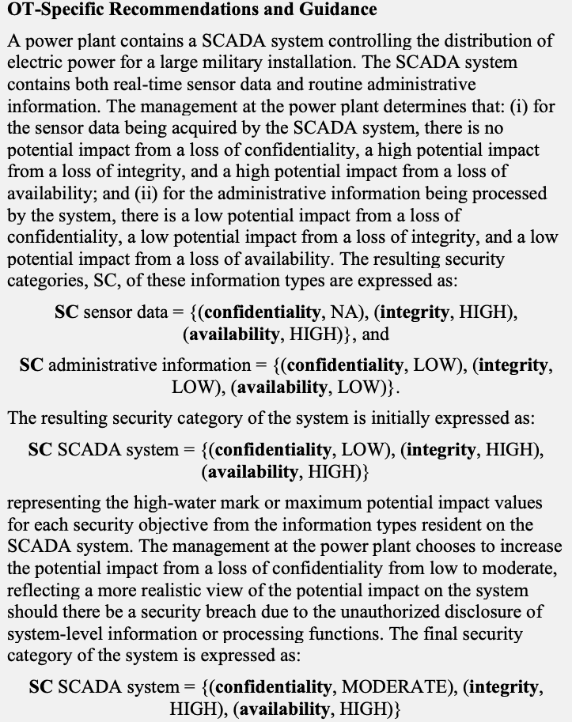
Table 7 provides details on applying the RMF Categorize step to OT.
表7に、RMFの分類ステップをOTに適用する詳細を示す。
未レビュー訳Table 7. Applying the RMF Categorize step to OT
表7. RMF「分類」ステップのOTへの適用
未レビュー訳| Tasks | Outcomes | OT-Specific Guidance |
| TASK C-1 SYSTEM DESCRIPTION | The characteristics of the system are described and documented. [Cybersecurity Framework: Profile] | |
| TASK C-2 SECURITY CATEGORIZATION | A security categorization of the system, including the information processed by the system represented by the organization- identified information types, is completed. [Cybersecurity Framework: ID.AM-1; ID.AM-2; ID.AM-3; ID.AM-4; ID.AM-5] Security categorization results are documented in the security, privacy, and SCRM plans. [Cybersecurity Framework: Profile] Security categorization results are consistent with the enterprise architecture and commitment to protecting organizational missions, business functions, and mission and business processes. [Cybersecurity Framework: Profile] Security categorization results reflect the organization’s risk management strategy. | OT and IT systems may have different categorization criteria. System information and the system process (e.g., chemical production) should be considered during the security categorization. |
| TASK C-3 | The security categorization results are reviewed, and the categorization decision is approved by senior leaders in the organization. | |
| SECURITY | ||
| CATEGORIZATION REVIEW | ||
| AND APPROVAL |
原本の表画像
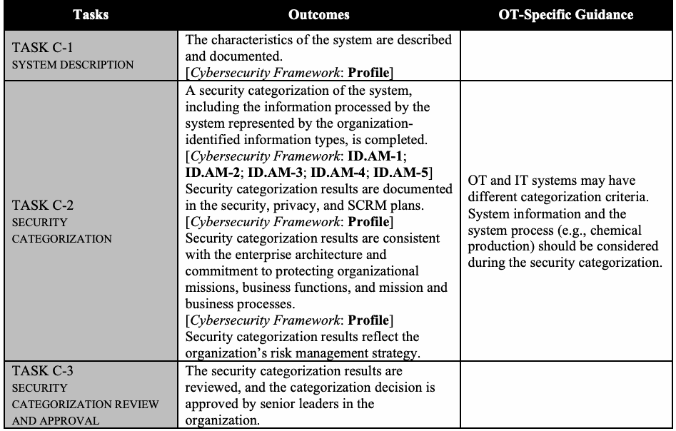
| タスク | 成果 | OT固有のガイダンス |
| タスクC-1 システムの記述 | システムの特性が記述され、文書化されている。[サイバーセキュリティフレームワーク：プロファイル] | |
| タスクC-2 セキュリティ分類 | 組織が特定した情報種別で表される、システムが処理する情報を含め、システムのセキュリティ分類が完了している。[サイバーセキュリティフレームワーク：ID.AM-1; ID.AM-2; ID.AM-3; ID.AM-4; ID.AM-5] セキュリティ分類の結果は、セキュリティ計画、プライバシー計画、およびSCRM計画に記録されている。[サイバーセキュリティフレームワーク：プロファイル] 分類結果は、エンタープライズアーキテクチャならびに組織のミッション、事業機能、ミッションおよび事業プロセスを保護する取り組みと整合している。[サイバーセキュリティフレームワーク：プロファイル] 分類結果は組織のリスク管理戦略を反映している。 | OTシステムとITシステムでは分類基準が異なる場合がある。セキュリティ分類では、システム情報とシステムのプロセス（例：化学物質の製造）を考慮するべきである。 |
| タスクC-3 | セキュリティ分類結果がレビューされ、組織の上級幹部が分類の決定を承認している。 | |
| セキュリティ分類のレビューおよび承認 | ||
| 分類のレビュー | ||
| および承認 |
原本の表画像
原本の表画像
4.3.3. Select
4.3.3. 選択
未レビュー訳The purpose of the Select step is to select the initial controls to protect the system commensurate with risk. The control baselines are the starting point for the control selection process and are chosen based on the security category and associated impact level of the systems identified in the Categorize step. NIST SP 800-53B [SP800-53B] identifies the recommended control baselines for federal systems and information. To address the need for developing community-wide and specialized sets of controls for systems and organizations, the concept of overlays is introduced. An overlay is a fully specified set of controls, control enhancements, and supplemental guidance derived from the application of tailoring guidance to security control baselines described in NIST SP 800-53B, Appendix C. In general, overlays are intended to reduce the need for ad hoc tailoring of baselines by organizations through the selection of a set of controls and control enhancements that more closely correspond to common circumstances, situations, and/or conditions. Appendix F of this publication includes an OT-specific overlay of applicable NIST SP 800-53 controls that provides tailored baselines for low-impact, moderate-impact, and high-impact OT. These tailored baselines are starting specifications and recommendations that can be applied to specific OT by responsible personnel.
「選択」ステップの目的は、リスクに見合ったシステム保護のための初期管理策を選択することである。管理策ベースラインは管理策選択プロセスの出発点であり、「分類」ステップで特定したシステムのセキュリティカテゴリと関連する影響度に基づいて選択する。NIST SP 800-53B [SP800-53B] は、連邦政府のシステムおよび情報に推奨される管理策ベースラインを示す。コミュニティ全体および専門分野向けの管理策セットを策定する必要に応えるため、オーバーレイの概念が導入されている。オーバーレイとは、NIST SP 800-53B 付録Cに記載されたセキュリティ管理策ベースラインに調整ガイダンスを適用して導出した、管理策、管理策拡張、および補足ガイダンスの完全に規定されたセットである。一般に、オーバーレイは、共通の状況、事態、条件により適合する管理策と管理策拡張のセットを選ぶことで、組織による場当たり的なベースライン調整の必要性を減らすことを目的とする。本書の付録Fには、低・中・高影響度のOT向けに調整されたベースラインを提供する、該当するNIST SP 800-53管理策のOT固有オーバーレイを掲載する。これらの調整済みベースラインは、責任者が個々のOTに適用できる出発仕様および推奨事項である。
未レビュー訳OT owners can tailor the overlay from Appendix F when it is not possible or feasible to implement specific controls. The use of overlays does not in any way preclude organizations from performing further tailoring (i.e., overlays can also be subject to tailoring) to reflect organization-specific needs, assumptions, or constraints. However, all tailoring activities should primarily focus on meeting the intent of the original controls whenever possible or feasible. For example, when the OT cannot support or the organization determines that it is not advisable to implement particular controls or control enhancements in an OT (e.g., performance, safety, or reliability are adversely impacted), the organization should provide a complete and convincing rationale for how the selected compensating controls provide an equivalent security capability or level of protection for the OT and why the related baseline controls could not be employed. If the OT cannot support the use of automated mechanisms, the organization employs nonautomated mechanisms or procedures as compensating controls in accordance with the general tailoring guidance in Section 3.3 of NIST SP 800-53. Compensating controls are not exceptions or waivers to the baseline controls. Rather, they are alternative safeguards and countermeasures employed within the OT that accomplish the intent of the original controls that could not be effectively employed. Organizational decisions on the use of compensating controls are documented in the security plan for the OT. Table 8 provides additional details on applying the RMF Select step to OT.
OT所有者は、特定の管理策を実施できない、または実施が実行可能でない場合、付録Fのオーバーレイを調整できる。オーバーレイを使用しても、組織が組織固有のニーズ、前提、制約を反映するためにさらに調整すること（すなわち、オーバーレイ自体も調整対象となること）は妨げられない。ただし、可能な場合、すべての調整は主として元の管理策の意図を満たすことに重点を置く。たとえば、OTが特定の管理策または管理策拡張をサポートできない場合、またはそれを実施すると性能、安全性、信頼性に悪影響があるため組織が実施不適当と判断する場合、選択した代替管理策がOTに同等のセキュリティ機能または保護レベルをどのように提供するか、また関連するベースライン管理策を採用できない理由について、完全かつ説得力のある根拠を示すべきである。OTが自動化機構をサポートできない場合、組織はNIST SP 800-53第3.3節の一般的な調整ガイダンスに従い、代替管理策として非自動化の機構または手順を用いる。代替管理策は、ベースライン管理策に対する例外や免除ではない。むしろ、効果的に適用できなかった元の管理策の意図を達成するためOT内で用いる代替の保護手段および対抗策である。代替管理策の使用に関する組織の決定は、OTのセキュリティ計画に記録する。表8に、RMF「選択」ステップをOTに適用する際の詳細を示す。
未レビュー訳Table 8. Applying the RMF Select step to OT
表8. RMF「選択」ステップのOTへの適用
未レビュー訳| Tasks | Outcomes | OT-Specific Guidance |
| TASK S-1 CONTROL SELECTION | Control baselines necessary to protect the system commensurate with risk are selected. [Cybersecurity Framework: Profile] | OT systems can leverage the OT control baselines identified in Appendix F as a starting point or an organization-defined control selection approach. |
| TASK S-2 CONTROL TAILORING | Controls are tailored to produce specific control baselines. [Cybersecurity Framework: Profile] | Due to operational or technical constraints, it may not be feasible to implement certain controls. Organizations should consider the use of compensating controls to manage risk to an acceptable level. |
| TASK S-3 CONTROL ALLOCATION | Controls are assigned as system-specific, hybrid, or common controls. Controls are allocated to the specific system elements (i.e., machine, physical, or human elements). [Cybersecurity Framework: Profile; PR.IP] | |
| TASK S-4 | Controls and associated tailoring actions are documented in security and privacy plans or equivalent documents. [Cybersecurity Framework: Profile] | |
| DOCUMENTATION OF | ||
| PLANNED CONTROL | ||
| IMPLEMENTATIONS | ||
| TASK S-5 CONTINUOUS MONITORING STRATEGY – SYSTEM | A continuous monitoring strategy for the system that reflects the organizational risk management strategy is developed. [Cybersecurity Framework: ID.GV; DE.CM] | An OT-specific continuous monitoring strategy to measure control effectiveness may be necessary due to unique operational, environmental, and/or availability constraints. |
原本の表画像
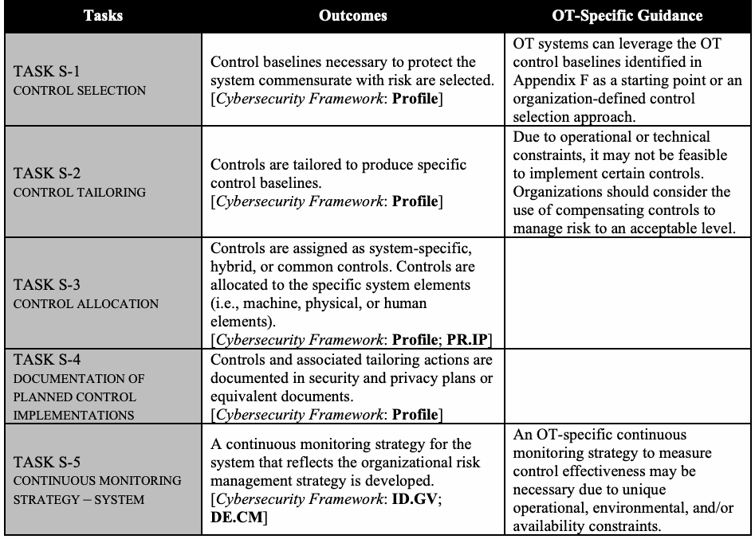
| タスク | 成果 | OT固有のガイダンス |
| タスクS-1 管理策の選択 | リスクに見合ったシステム保護に必要な管理策ベースラインが選択されている。[サイバーセキュリティフレームワーク：プロファイル] | 組織定義の管理策選択方式または付録Fで特定されたOT管理策ベースラインを出発点として利用できる。 |
| タスクS-2 管理策の調整 | 特定の管理策ベースラインを作成するため管理策が調整されている。[サイバーセキュリティフレームワーク：プロファイル] | 運用上または技術上の制約により、一部の管理策は実装できない場合がある。許容可能なレベルにリスクを管理するため、代替管理策の使用を検討するべきである。 |
| タスクS-3 管理策の割当て | 管理策はシステム固有、ハイブリッド、または共通の管理策として割り当てられている。管理策は特定のシステム要素（機械、物理、または人的要素）に割り当てられている。[サイバーセキュリティフレームワーク：プロファイル; PR.IP] | |
| タスクS-4 | 管理策および関連する調整措置がセキュリティ計画、プライバシー計画、または同等の文書に記録されている。[サイバーセキュリティフレームワーク：プロファイル] | |
| 計画された管理策実装の文書化 | ||
| タスクS-5 継続的監視戦略―システム | 組織のリスク管理戦略を反映したシステムの継続的監視戦略が策定されている。[サイバーセキュリティフレームワーク：ID.GV; DE.CM] | |
| 固有の運用上、環境上、および／または可用性の制約があるため、管理策の有効性を測定するOT固有の継続的監視戦略が必要な場合がある。 |
原本の表画像
原本の表画像
原本の表画像
原本の表画像
| Tasks | Outcomes | OT-Specific Guidance |
| TASK S-6 PLAN REVIEW AND APPROVAL | Security and privacy plans reflecting the selection of controls necessary to protect the system and the environment of operation commensurate with risk are reviewed and approved by the authorizing official. | Review any potential impact to the OT system’s operational effectiveness and safety. |
原本の表画像
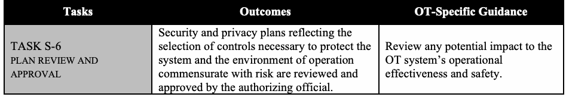
| タスク | 成果 | OT固有のガイダンス |
| タスクS-6 計画のレビューおよび承認 | リスクに見合ったシステムおよび運用環境の保護に必要な管理策の選択を反映するセキュリティ計画およびプライバシー計画が、承認権者によってレビューおよび承認されている。 | OTシステムの運用上の有効性と安全性への潜在的影響をレビューする。 |
原本の表画像
4.3.4. Implement
4.3.4. 実装
未レビュー訳The Implement step involves the implementation of controls in new or legacy systems. The control selection process described in this section can be applied to OT from two perspectives: new development and legacy. For new development systems, the control selection process is applied from a requirements definition perspective since the systems do not yet exist and organizations are conducting initial security categorizations. The controls included in the security plans for the systems serve as security specifications and are expected to be incorporated into the systems during the development and implementation phases of the system development life cycle. In contrast, the security control selection process for legacy systems is applied from a gap analysis perspective when organizations anticipate significant changes to the systems (e.g., during major upgrades, modifications, or outsourcing). Since the systems already exist, organizations have likely completed the security categorization and security control selection processes, resulting in the establishment of previously agreed-upon controls in the respective security plans and the implementation of those controls within the systems. Table 9 provides additional details on applying the RMF Implement step to OT.
「実装」ステップでは、新規またはレガシーシステムに管理策を実装する。この節で述べた管理策選択プロセスは、新規開発とレガシーの2つの観点からOTに適用できる。新規開発システムでは、システムがまだ存在せず、組織が初期のセキュリティ分類を行うため、要件定義の観点から管理策選択プロセスを適用する。システムのセキュリティ計画に含まれる管理策はセキュリティ仕様となり、システム開発ライフサイクルの開発および実装段階でシステムに組み込むことが期待される。一方、レガシーシステムでは、システムに大幅な変更（大規模アップグレード、改修、外部委託など）を予定する際、ギャップ分析の観点からセキュリティ管理策選択プロセスを適用する。システムはすでに存在するため、組織は通常、セキュリティ分類と管理策選択を完了し、各セキュリティ計画に合意済みの管理策を定め、システム内に実装している。表9に、RMF「実装」ステップをOTに適用する際の詳細を示す。
未レビュー訳Table 9. Applying the RMF Implement step to OT
表9. RMF「実装」ステップのOTへの適用
未レビュー訳| Tasks | Outcomes | OT-Specific Guidance |
| TASK I-1 CONTROL IMPLEMENTATION | Controls specified in the security and privacy plans are implemented. [Cybersecurity Framework: PR.IP-1] Systems security and privacy engineering methodologies are used to implement the controls in the system security and privacy plans. [Cybersecurity Framework: PR.IP-2] | For existing (operational) OT systems, schedule control implementation during the OT system maintenance window. A complete verification is recommended to ensure that the controls are not affecting or degrading the performance and safety of the OT system. In some cases, it may not be feasible to immediately mitigate the risk due to scheduling issues. However, interim compensating controls can be leveraged. |
| TASK I-2 UPDATE CONTROL IMPLEMENTATION INFORMATION | Changes to the planned implementation of controls are documented. [Cybersecurity Framework: PR.IP-1] The security and privacy plans are updated based on information obtained during the implementation of the controls. [Cybersecurity Framework: Profile] |
原本の表画像
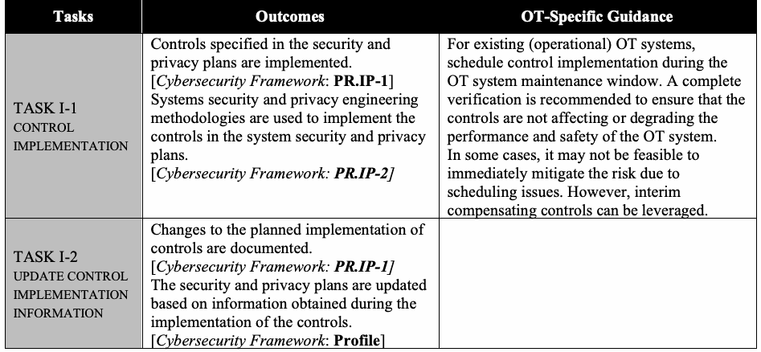
| タスク | 成果 | OT固有のガイダンス |
| タスクI-1 管理策の実装 | セキュリティ計画およびプライバシー計画で指定された管理策が実装されている。[サイバーセキュリティフレームワーク：PR.IP-1] システムセキュリティおよびプライバシーエンジニアリング手法を用いて、システムのセキュリティ計画およびプライバシー計画の管理策を実装している。[サイバーセキュリティフレームワーク：PR.IP-2] | 既存の（運用中の）OTシステムでは、OTシステムの保守時間内に管理策の実装を予定する。管理策がOTシステムの性能や安全性に影響または劣化を及ぼしていないことを確かめるため、完全な検証を推奨する。日程上の問題により、リスクを直ちに低減できない場合もある。ただし、暫定的な代替管理策を利用できる。 |
| タスクI-2 管理策実装情報の更新 | 計画した管理策実装に対する変更が文書化されている。[サイバーセキュリティフレームワーク：PR.IP-1] 管理策実装中に得た情報に基づき、セキュリティ計画およびプライバシー計画が更新されている。[サイバーセキュリティフレームワーク：プロファイル] |
原本の表画像
原本の表画像
4.3.5. Assess
4.3.5. 評価
未レビュー訳The Assess step of the RMF determines the extent to which the controls in the system are effective in their application and producing the desired results. NIST SP 800-53A [SP800-53Ar5] provides guidance for assessing selected controls from NIST SP 800-53 to ensure that they are implemented correctly, operating as intended, and producing the desired outcome with respect to meeting the security requirements of the system. Table 10 provides additional details on applying the Assess step to OT.
RMFの「評価」ステップでは、システム内の管理策がどの程度有効に適用され、期待される結果を生み出しているかを判定する。NIST SP 800-53A [SP800-53Ar5] は、NIST SP 800-53から選択した管理策を評価し、正しく実装され、意図どおりに機能し、システムのセキュリティ要件を満たす望ましい成果を生んでいることを確認するための指針を示す。表10に、RMF「評価」ステップをOTに適用する際の詳細を示す。
未レビュー訳Table 10. Applying the RMF Assess step to OT
表10. RMF「評価」ステップのOTへの適用
未レビュー訳| Tasks | Outcomes | OT-Specific Guidance |
| TASK A-1 ASSESSOR SELECTION | An assessor or assessment team is selected to conduct the control assessments. The appropriate level of independence is achieved for the assessor or assessment team selected. | Include OT system personnel and operator in the assessment team. |
| TASK A-2 ASSESSMENT PLAN | Documentation needed to conduct the assessments is provided to the assessor or assessment team. Security and privacy assessment plans are developed and documented. Security and privacy assessment plans are reviewed and approved to establish the expectations for the control assessments and the level of effort required. | |
| TASK A-3 CONTROL ASSESSMENTS | Control assessments are conducted in accordance with the security and privacy assessment plans. Opportunities to reuse assessment results from previous assessments to make the risk management process timely and cost-effective are considered. Use of automation to conduct control assessments is maximized to increase speed, effectiveness, and efficiency of assessments. | Consider the use of tabletop exercises or simulations to reduce the impact to production OT. Use automated tools to conduct assessments with care to ensure that the OT system is not adversely impacted by the testing process. |
| TASK A-4 | Security and privacy assessment reports that provide findings and recommendations are completed. [Cybersecurity Framework: ID.RA-1 and ID.RA-3] | |
| ASSESSMENT | ||
| REPORTS | ||
| TASK A-5 REMEDIATION ACTIONS | Remediation actions to address deficiencies in the controls implemented in the system and environment of operation are taken. Security and privacy plans are updated to reflect the control implementation changes made based on the assessments and subsequent remediation actions. [Cybersecurity Framework: Profile] | Ensure that remediation actions do not negatively impact the efficiency and safe operations of OT. Consider the use of compensating controls as one of the remediation actions. |
| TASK A-6 PLAN OF ACTION AND MILESTONES | A plan of action and milestones detailing remediation plans for unacceptable risks identified in security and privacy assessment reports is developed. [Cybersecurity Framework: ID.RA-6] | Consider the unique time constraints of the OT system in the plan of action and milestones, and take into account planned schedule maintenance or shutdowns of the OT system. |
原本の表画像
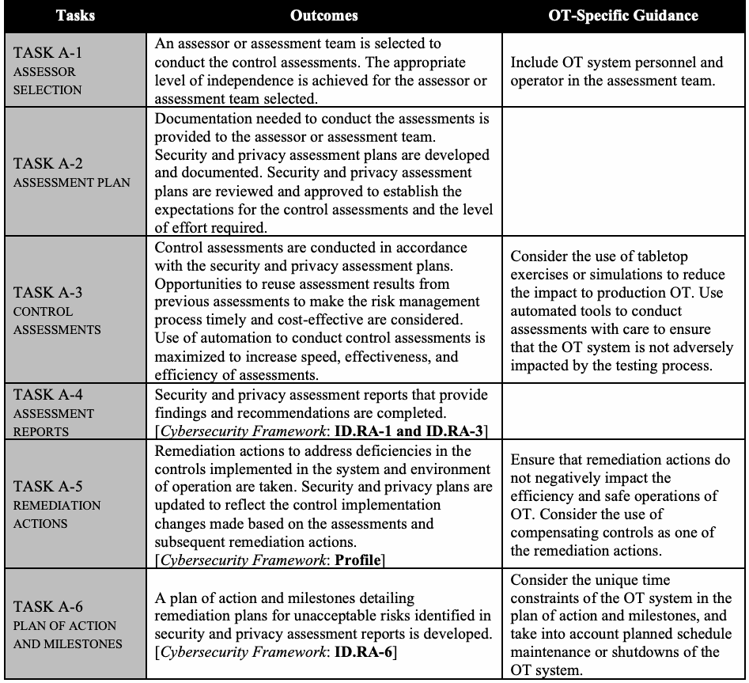
| タスク | 成果 | OT固有のガイダンス |
| タスクA-1 評価者の選定 | 管理策評価を実施する評価者または評価チームが選定されている。選定した評価者または評価チームについて適切な独立性が確保されている。 | 評価チームにOTシステム担当者および運用者を含める。 |
| タスクA-2 評価計画 | 評価の実施に必要な文書が評価者または評価チームに提供されている。セキュリティ評価計画およびプライバシー評価計画が策定、文書化されている。管理策評価の期待事項と必要な作業量を定めるため、これらの計画がレビュー、承認されている。 | |
| タスクA-3 管理策の評価 | セキュリティ評価計画およびプライバシー評価計画に従って管理策を評価している。リスク管理プロセスを迅速かつ費用対効果の高いものにするため、過去の評価結果を再利用する機会が検討されている。評価の速度、有効性、効率を高めるため、管理策評価の自動化を最大限に活用している。 | 本番OTへの影響を抑えるため、机上演習またはシミュレーションの利用を検討する。自動化ツールを用いて評価する場合は、試験プロセスがOTシステムに悪影響を与えないよう注意する。 |
| タスクA-4 | 所見および推奨事項を示すセキュリティ評価報告書およびプライバシー評価報告書が完成している。[サイバーセキュリティフレームワーク：ID.RA-1 and ID.RA-3] | |
| 評価報告書 | ||
| タスクA-5 是正措置 | システムおよび運用環境に実装された管理策の不備に対処する是正措置が実施されている。評価およびその後の是正措置に基づいて行った管理策実装の変更を反映するよう、セキュリティ計画およびプライバシー計画が更新されている。[サイバーセキュリティフレームワーク：プロファイル] | 是正措置がOTの効率的かつ安全な運用に悪影響を及ぼさないようにする。是正措置の一つとして代替管理策の利用を検討する。 |
| タスクA-6 対応計画およびマイルストーン | ||
| セキュリティ評価報告書およびプライバシー評価報告書で特定された許容できないリスクの是正計画を詳述する対応計画およびマイルストーンが策定されている。[サイバーセキュリティフレームワーク：ID.RA-6] | OTシステム固有の時間的制約を対応計画およびマイルストーンに反映し、予定された保守日程またはOTシステムの停止を考慮する。 |
原本の表画像
原本の表画像
原本の表画像
原本の表画像
原本の表画像
4.3.6. Authorize
4.3.6. 承認
未レビュー訳The Authorize step involves a management decision to authorize the operation of a system and explicitly accept the risks to operations, assets, and individuals based on the implementation of an agreed-upon set of controls. A new system is not placed into production or operation until the system is authorized. Table 11 provides additional details on applying the Authorize step to OT.
「承認」ステップでは、合意済みの管理策セットの実装を前提に、システムの運用を承認し、運用、資産、個人に対するリスクを明示的に受容するという管理上の決定を行う。新しいシステムは、承認されるまで本番環境または運用環境に置かない。表11に、RMF「承認」ステップをOTに適用する際の詳細を示す。
未レビュー訳Table 11. Applying the RMF Authorize step to OT
表11. RMF「承認」ステップのOTへの適用
未レビュー訳| Tasks | Outcomes | OT-Specific Guidance |
| TASK R-1 | An authorization package is developed for submission to the authorizing official. | |
| AUTHORIZATION | ||
| PACKAGE | ||
| TASK R-2 RISK ANALYSIS AND DETERMINATION | A risk determination by the authorizing official that reflects the risk management strategy, including risk tolerance, is rendered. | |
| TASK R-3 RISK RESPONSE | Risk responses for determined risks are provided. [Cybersecurity Framework: ID.RA-6] | Develop and implement a comprehensive strategy to manage risk to the OT system that includes the identification and prioritization of risk responses. |
| TASK R-4 AUTHORIZATION DECISION | The authorization for the system or the common controls is approved or denied. | Organizations may need to determine remediation strategies when system risks drift out of the acceptable range while considering OT-specific dependencies, such as the inability to take a system or component offline until remediated. |
| TASK R-5 | Authorization decisions, significant vulnerabilities, and risks are reported to organizational officials. | Ensure that decisions, vulnerabilities, and risks are reported to OT and operations personnel. |
| AUTHORIZATION | ||
| REPORTING |
原本の表画像
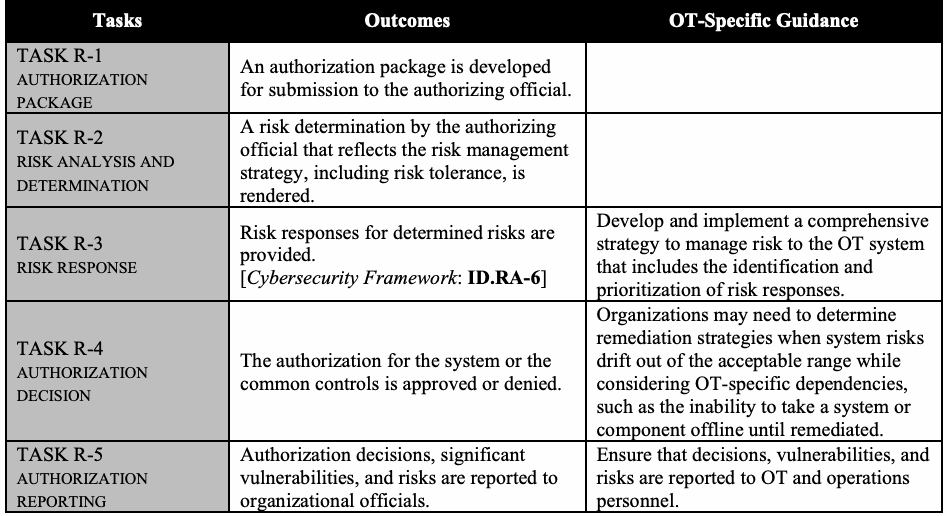
| タスク | 成果 | OT固有のガイダンス |
| タスクR-1 | 承認権者に提出するための承認パッケージが作成されている。 | |
| 承認パッケージ | ||
| タスクR-2 リスク分析および決定 | リスク許容度を含むリスク管理戦略を反映したリスク決定が承認権者によって下されている。 | |
| タスクR-3 リスク対応 | 決定されたリスクに対するリスク対応が提示されている。[サイバーセキュリティフレームワーク：ID.RA-6] | OTシステムのリスクを管理する包括的な戦略を策定、実施する。この戦略にはリスク対応の特定および優先順位付けを含める。 |
| タスクR-4 承認決定 | システムまたは共通管理策の承認が承認または却下されている。 | システムまたはコンポーネントを修復まで停止できないことなど、OT固有の依存関係を考慮しつつ、システムのリスクが許容範囲を外れた場合の是正戦略を決定する必要がある。 |
| タスクR-5 | 承認決定、重大な脆弱性、およびリスクが組織の責任者に報告されている。 | 決定、脆弱性、およびリスクがOTおよび運用担当者に報告されるようにする。 |
| 承認に関する報告 |
原本の表画像
原本の表画像
原本の表画像
4.3.7. Monitor
4.3.7. 監視
未レビュー訳The Monitor step continuously tracks changes to the system that may affect controls and assesses control effectiveness. NIST SP 800-37, Rev. 2 provides guidance on cybersecurity continuous monitoring [SP800-37r2]. Table 12 provides additional details on applying the Monitor step to OT.
「監視」ステップでは、管理策に影響し得るシステムの変更を継続的に追跡し、管理策の有効性を評価する。NIST SP 800-37 Rev. 2は、サイバーセキュリティの継続的監視に関するガイダンスを示す [SP800-37r2]。表12に、RMF「監視」ステップをOTに適用する際の詳細を示す。
未レビュー訳Table 12. Applying the RMF Monitor step to OT
表12. RMF「監視」ステップのOTへの適用
未レビュー訳| Tasks | Outcomes | OT-Specific Guidance |
| TASK M-1 SYSTEM AND ENVIRONMENT CHANGES | The system and environment of operation are monitored in accordance with the continuous monitoring strategy. [Cybersecurity Framework: DE.CM; ID.GV] | Leverage the OT-specific continuous monitoring strategy that considers performance impacts and safety systems to be critical. |
| TASK M-2 ONGOING ASSESSMENTS | Ongoing assessments of control effectiveness are conducted in accordance with the continuous monitoring strategy. [Cybersecurity Framework: ID.SC-4] | Conduct ongoing assessments that consider system performance and safety impacts. |
| TASK M-3 ONGOING RISK RESPONSE | The output of continuous monitoring activities is analyzed and responded to appropriately. [Cybersecurity Framework: RS.AN] | Correlate detected event information with risk assessment outcomes to achieve perspective on incident impact on the OT system. |
| TASK M-4 AUTHORIZATION PACKAGE UPDATES | Risk management documents are updated based on continuous monitoring activities. [Cybersecurity Framework: RS.IM] | |
| TASK M-5 SECURITY AND PRIVACY REPORTING | A process is in place to report the security and privacy posture to the authorizing official and other senior leaders and executives. | |
| TASK M-6 ONGOING AUTHORIZATION | Authorizing officials conduct ongoing authorizations using the results of continuous monitoring activities and communicate changes in risk determination and acceptance decisions. | |
| TASK M-7 SYSTEM DISPOSAL | A system disposal strategy is developed and implemented, as needed. | Planned obsolescence found in IT components may not extend to OT components. Consider the maintenance and repair of OT components that are required to be sustained beyond IT component availability. |
原本の表画像
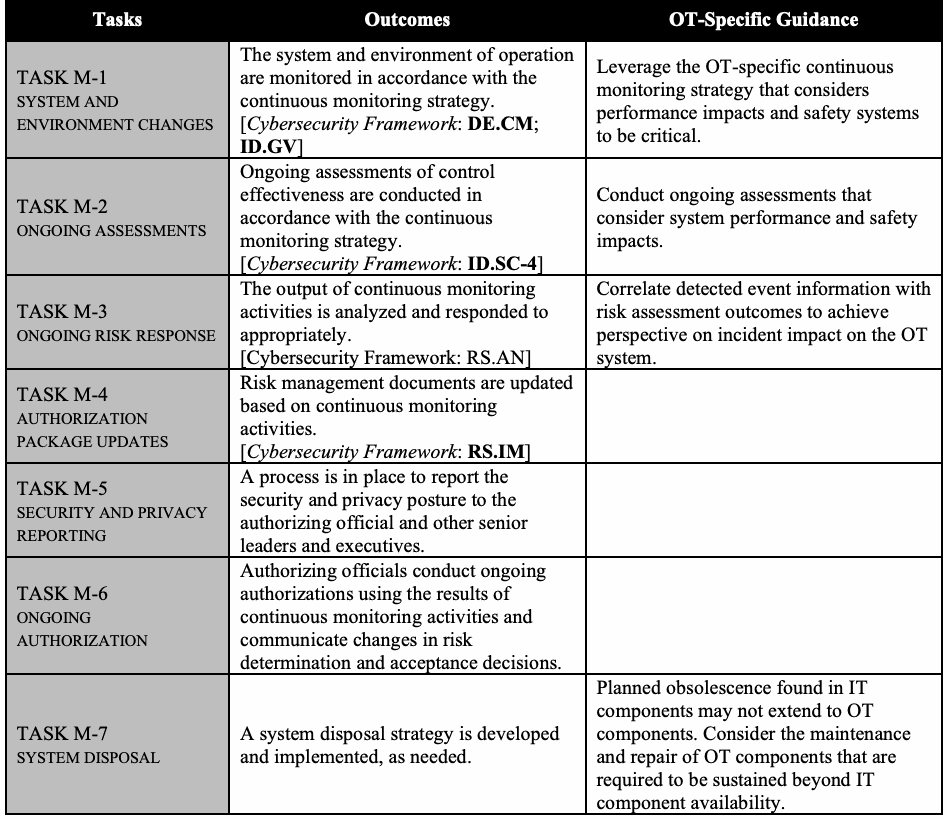
| タスク | 成果 | OT固有のガイダンス |
| タスクM-1 システムおよび運用環境の変更 | 継続的監視戦略に従って、システムおよび運用環境が監視されている。[サイバーセキュリティフレームワーク：DE.CM; ID.GV] | 性能への影響を考慮し、安全システムを重要な要素とみなすOT固有の継続的監視戦略を活用する。 |
| タスクM-2 継続的評価 | 継続的監視戦略に従って、管理策の有効性を継続的に評価している。[サイバーセキュリティフレームワーク：ID.SC-4] | システム性能および安全性への影響を考慮した継続的評価を実施する。 |
| タスクM-3 継続的なリスク対応 | 継続的監視活動の出力を分析し、適切に対応している。[サイバーセキュリティフレームワーク：RS.AN] | 検出されたイベント情報をリスク評価の結果と相関させ、インシデントがOTシステムに与える影響を把握する。 |
| タスクM-4 承認パッケージの更新 | 継続的監視活動に基づいてリスク管理文書が更新されている。[サイバーセキュリティフレームワーク：RS.IM] | |
| タスクM-5 セキュリティおよびプライバシーの報告 | 承認権者ならびにその他の上級責任者および幹部にセキュリティおよびプライバシーの状態を報告するプロセスが整備されている。 | |
| タスクM-6 継続的承認 | 承認権者は継続的監視活動の結果を用いて継続的に承認を行い、リスク決定および受容の決定における変更を伝達している。 | |
| タスクM-7 システムの廃棄 | 必要に応じてシステム廃棄戦略が策定、実施されている。 | ITコンポーネントでは計画的陳腐化が見込まれるが、OTコンポーネントには当てはまらない場合がある。ITコンポーネントが入手可能でなくなった後も維持する必要があるOTコンポーネントの保守および修理を考慮する。 |
原本の表画像
原本の表画像
原本の表画像
原本の表画像
原本の表画像
原本の表画像
原本の表画像
OT Cybersecurity Architecture
OTサイバーセキュリティアーキテクチャ
未レビュー訳When designing a security architecture for an OT environment, it is generally recommended to separate the OT network(s) from the corporate network. The nature of network traffic on these two network types is different. For example, internet access, email, and remote access are typically permitted on the corporate network but not allowed on OT networks. There may also be differences in the degree of rigor associated with corporate and OT environment change control procedures. Additionally, using the corporate network for OT communication protocols could expose the OT components to cyber attacks (e.g., DoS, adversary-in-the-middle or other network-based attacks). Utilizing separate networks allows for greater flexibility to address security and performance requirements between the two environments. Practical considerations – such as digital transformation, the cost of OT installation, or maintaining a homogenous network infrastructure – often mean that a connection is required between OT and corporate or other IT networks. This connection represents additional risk, and organizations may want to minimize these connections and consider additional security controls for them. This section outlines security strategies for organizations to consider when engineering their OT environments to support cybersecurity objectives.
OT環境向けのセキュリティアーキテクチャを設計する際は、一般にOTネットワークを企業ネットワークから分離することが推奨される。この2種類のネットワークではトラフィックの性質が異なる。たとえば、企業ネットワークでは通常インターネットアクセス、電子メール、リモートアクセスが許可されるが、OTネットワークでは許可されない。また、企業環境とOT環境では変更管理手順の厳格さに差がある場合もある。さらに、OT通信プロトコルに企業ネットワークを使用すると、OTコンポーネントがサイバー攻撃（DoS、中間者攻撃、その他のネットワーク攻撃など）にさらされる可能性がある。ネットワークを分離すれば、両環境のセキュリティおよび性能要件に対応する柔軟性が高まる。デジタルトランスフォーメーション、OT導入コスト、均質なネットワークインフラの維持などの実務上の事情により、OTと企業その他のITネットワーク間に接続が必要となる場合が多い。この接続は追加のリスクとなるため、組織は接続を最小限にし、追加のセキュリティ管理策を検討するとよい。本節では、サイバーセキュリティ目標を支えるOT環境の設計にあたり検討すべきセキュリティ戦略を概説する。
未レビュー訳Cybersecurity Strategy
サイバーセキュリティ戦略
未レビュー訳The adoption of a cybersecurity strategy can result in a more systematic implementation of risk decisions into system development and operation. A comprehensive and accepted cybersecurity strategy can assist an organization with consistently maintaining acceptable risk management throughout the life cycle of an OT system. System security is optimized by engineering design that is based on a proactive loss prevention strategy. Such a strategy includes planned measures that are engineered to address what can happen rather than what is likely to happen in order to proactively identify and rid the system of weaknesses and defects that lead to security vulnerabilities, understand the certainty and uncertainty of adversarial and non-adversarial threats, and put in place the means and methods to protect against adverse consequences. Proactive systems security engineering also includes planning for failure regardless of whether the failure results from adversarial or non-adversarial events and ensuring that the system is resilient to such events.
サイバーセキュリティ戦略を採用すると、システム開発および運用におけるリスク判断をより体系的に実施できる。包括的で受け入れられた戦略は、OTシステムのライフサイクルを通じ、許容可能なリスク管理を一貫して維持する助けとなる。システムセキュリティは、事前損失防止戦略に基づく設計エンジニアリングによって最適化される。この戦略には、起こりそうな事象だけでなく起こり得る事象に対処するための計画的措置が含まれ、セキュリティ脆弱性につながる弱点や欠陥を事前に特定、除去し、敵対的および非敵対的脅威の確実性と不確実性を理解し、悪影響を防ぐ手段および方法を整える。事前のシステムセキュリティエンジニアリングには、障害が敵対的事象と非敵対的事象のいずれによるものかにかかわらず障害を想定して計画し、システムがそのような事象に対してレジリエントであることを確保することも含まれる。
未レビュー訳原本の表画像
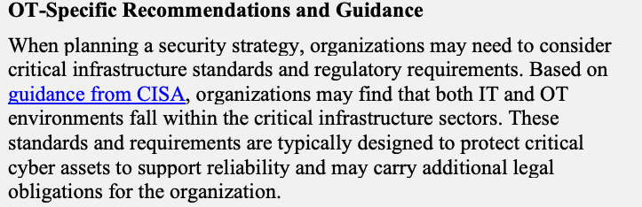
5.1.1. Impacts of Choosing a Cybersecurity Strategy
5.1.1. サイバーセキュリティ戦略の選択による影響
未レビュー訳By consciously choosing to develop and implement a cybersecurity strategy, an organization establishes a disciplined approach that considers all aspects of the system life cycle – from procurement to decommissioning – with cybersecurity in mind. As a result, the organization can ensure that cybersecurity goals are realized in its systems. Decisions on cybersecurity strategy should flow from a high-level understanding of the operations, objectives, and cybersecurity goals of the organization. For example, the organization may want its systems to display certain characteristics, such as resiliency or trustworthiness. The strategy provides a framework for incorporating those characteristics into the final systems. The strategy can also include additional considerations, such as the flexibility to adopt new technologies (e.g., crypto agility, artificial intelligence [AI] and machine learning [ML] technologies, digital twins). Finally, the strategy can state the need for sound cybersecurity practices, such as patching or monitoring. The cybersecurity strategy should directly impact the architectural decisions made for systems. The existence of an architecture informed by a cybersecurity strategy increases the likelihood that high-level cybersecurity goals will be reflected in the cybersecurity of individual systems. The strategy provides a document and reminder of those goals when decisions are being made at the system level.
サイバーセキュリティ戦略を策定、実施すると意識的に決めることで、組織は調達から廃止までシステムライフサイクルのあらゆる側面をサイバーセキュリティの観点から考慮する規律あるアプローチを確立する。その結果、システムでサイバーセキュリティ目標を実現できる。戦略に関する決定は、組織の運用、目的、サイバーセキュリティ目標に対する高水準の理解に基づくべきである。たとえば、組織はレジリエンスや信頼性など、システムに特定の特性を持たせたい場合がある。戦略は、そのような特性を最終的なシステムに組み込む枠組みを提供する。暗号アジリティ、人工知能（AI）、機械学習（ML）、デジタルツインなど、新技術を採用する柔軟性といった追加の考慮事項も含められる。また、パッチ適用や監視など、適切なサイバーセキュリティ慣行の必要性を明示できる。戦略はシステムのアーキテクチャ上の決定に直接影響するべきである。戦略に基づくアーキテクチャが存在すれば、高水準のサイバーセキュリティ目標が個々のシステムのセキュリティに反映される可能性が高まる。戦略は、システムレベルで決定を行う際に目標を文書化し、想起する助けとなる。
未レビュー訳原本の表画像
5.1.2. Defense-in-Depth Strategy
5.1.2. 多層防御戦略
未レビュー訳Defense in depth is a multifaceted strategy that integrates people, technology, and operational capabilities to establish variable barriers across multiple layers and dimensions of the organization. Many cybersecurity architectures incorporate the principles of defense in depth. It is considered best practice and integrates into numerous standards and regulatory frameworks. The basic concepts are to prevent single points of failure in cybersecurity defenses and to assume no single origin of threats. From this position, cybersecurity controls are organized to provide layers of protection around the critical system and system components.
多層防御は、人、技術、運用能力を統合し、組織の複数の層および側面に可変的な障壁を設ける多面的な戦略である。多くのサイバーセキュリティアーキテクチャは多層防御の原則を取り入れている。これはベストプラクティスとみなされ、多数の標準および規制の枠組みに組み込まれている。基本概念は、サイバーセキュリティ防御の単一障害点をなくし、脅威の発生源は一つではないと想定することである。この考えに基づき、重要なシステムおよびシステムコンポーネントの周囲に保護層を設けるよう、サイバーセキュリティ管理策を構成する。
未レビュー訳原本の表画像
原本の表画像
原本の表画像
5.1.3. Other Cybersecurity Strategy Considerations
5.1.3. サイバーセキュリティ戦略に関するその他の考慮事項
未レビュー訳Traditional OT systems were designed to operate industrial processes safely and reliably without connections to external networks. However, due to the need for business agility and cost reduction for OT infrastructures, OT systems and networks are becoming more integrated into business networks and cloud infrastructures. Additionally, the introduction of IIoT systems into OT environments may have unintended cybersecurity consequences. Similarly, cloud computing capabilities (e.g., infrastructure as a service, platform as a service, software as a service, and security as a service) are increasingly being utilized by organizations. While the use of these capabilities to support IT services is relatively well understood, the ability to utilize these services to support OT environments may have additional availability challenges resulting from increased sensitivity to system performance levels or connection issues. As a result, the adoption of a security architecture strategy may be impacted by the current state of existing OT environments. For example, based on the architectural strategy, procurement decisions might be adjusted to include migrating specific components to support the new strategy. Organizations may also find that existing systems already support some or most of the security architecture strategy, so building on these existing capabilities could accelerate the strategy implementation. Additionally, new OT environments provide an opportunity to evaluate cyber risk early on and build cybersecurity into the design.
従来のOTシステムは、外部ネットワークに接続せずに産業プロセスを安全かつ確実に運用するよう設計されていた。しかし、事業の俊敏性向上とOTインフラのコスト削減の必要性により、OTシステムおよびネットワークは企業ネットワークやクラウドインフラとの統合が進んでいる。OT環境にIIoTシステムを導入すると、意図しないサイバーセキュリティ上の影響が生じる場合もある。同様に、組織ではインフラストラクチャ・アズ・ア・サービス、プラットフォーム・アズ・ア・サービス、ソフトウェア・アズ・ア・サービス、セキュリティ・アズ・ア・サービスなどのクラウドコンピューティング機能の利用が増えている。ITサービスを支えるこれらの機能の利用は比較的よく理解されているが、OT環境を支える用途では、システム性能または接続の問題に対する感度が高いため、可用性上の課題が加わる場合がある。そのため、既存OT環境の現状がセキュリティアーキテクチャ戦略の採用に影響し得る。たとえば、アーキテクチャ戦略に基づいて、戦略に対応する特定コンポーネントへの移行を調達判断に含める場合がある。既存システムがすでにセキュリティアーキテクチャ戦略の一部または大半を支えていると分かれば、既存機能を活用して戦略の実装を加速できる。さらに、新しいOT環境では、早期にサイバーリスクを評価し、設計段階でサイバーセキュリティを組み込む機会がある。
未レビュー訳原本の表画像
Defense-in-Depth Architecture Capabilities
多層防御アーキテクチャの機能
未レビュー訳Many organizations are embracing digital transformation initiatives that require altering their OT environments and developing strategies that provide a multi-tiered information architecture by supporting organization objectives, such as:
多くの組織は、OT環境の変更を必要とするデジタルトランスフォーメーション施策を進めている。組織の目的を支える多層情報アーキテクチャを構築する戦略が必要となる。目的には、次のようなものがある。
未レビュー訳•Maintenance of field devices, telemetry collection, or industrial-level process systems
•フィールドデバイス、テレメトリ収集、または産業レベルのプロセスシステムの保守
未レビュー訳•Enhanced data collection and dissemination
•データ収集および配信の強化
未レビュー訳•Remote access
•リモートアクセス
未レビュー訳Overall, integration between IT and OT is increasing as organizations adapt to changing local and global needs and requirements. Utilizing the principles of a defense-in-depth architecture to systematically layer security controls – including people, processes, and technology – can help organizations strengthen their overall cybersecurity defenses. As a result, adversaries may find it increasingly difficult to penetrate the environment without detection. The following sections discuss specific defense-in-depth layers, including topics and ideas for organizations to consider when developing and implementing their defense-in-depth cybersecurity architecture. The layers are:
組織が地域および世界のニーズや要件の変化に適応するにつれて、ITとOTの統合は全体として進んでいる。人、プロセス、技術を含むセキュリティ管理策を体系的に階層化する多層防御アーキテクチャの原則を用いることで、組織はサイバーセキュリティ防御全体を強化できる。その結果、敵対者は検知されずに環境へ侵入することが難しくなる。本節以降では、多層防御サイバーセキュリティアーキテクチャの開発および実装時に組織が検討すべき事項や考え方を含め、各防御層を説明する。各層は次のとおりである。
未レビュー訳•Layer 1 – Security Management
•レイヤー1―セキュリティ管理
未レビュー訳•Layer 2 – Physical Security
•レイヤー2―物理セキュリティ
未レビュー訳•Layer 3 – Network Security
•レイヤー3―ネットワークセキュリティ
未レビュー訳•Layer 4 – Hardware Security
•レイヤー4―ハードウェアセキュリティ
未レビュー訳•Layer 5 – Software Security
•レイヤー5―ソフトウェアセキュリティ
未レビュー訳5.2.1. Layer 1 – Security Management
5.2.1. レイヤー1―セキュリティ管理
未レビュー訳Security management or governance is the overarching cybersecurity program that supports the OT environment. Sections 3 and 4 discuss the program and risk management considerations for organizations to establish their cybersecurity programs. These programmatic and organizational decisions will guide and impact the decisions made for the other defense-in-depth layers. As a result, organizations should complete this layer before attempting to implement the other layers.
セキュリティ管理またはガバナンスは、OT環境を支える包括的なサイバーセキュリティプログラムである。第3節および第4節では、組織がサイバーセキュリティプログラムを確立するためのプログラムおよびリスク管理上の考慮事項を説明した。これらのプログラム上および組織上の決定は、他の多層防御レイヤーに関する決定を導き、影響を与える。そのため、他のレイヤーの実装に着手する前に、このレイヤーを完了するべきである。
未レビュー訳5.2.2. Layer 2 – Physical Security
5.2.2. レイヤー2―物理セキュリティ
未レビュー訳Physical security measures are designed to reduce the risk of accidental or deliberate loss or damage to assets and the surrounding environment. Safeguarded assets may include control systems, tools, equipment, the environment, the surrounding community, and intellectual property, including proprietary data (e.g., process settings and customer information). Organizations may also need to consider additional environmental, safety, regulatory, legal, and other requirements when implementing physical security.
物理セキュリティ対策は、資産および周辺環境が偶発的または意図的に失われたり損傷したりするリスクを低減するために設計される。保護対象資産には、制御システム、ツール、機器、環境、周辺地域社会、ならびに専有データ（プロセス設定や顧客情報など）を含む知的財産が含まれる場合がある。物理セキュリティを実装する際には、環境、安全、規制、法務その他の要件も考慮する必要がある。
未レビュー訳A defense-in-depth solution to physical security should consider the following attributes:
多層防御による物理セキュリティでは、次の特性を考慮するべきである。
未レビュー訳•Protection of physical locations. Classic physical security considerations typically include an architecture of layered security measures that create several physical barriers around buildings, facilities, rooms, equipment, and other informational assets. Physical security controls should be implemented to protect physical locations and may include fences, anti-vehicle ditches, earthen mounds, walls, reinforced barricades, gates, door and cabinet locks, guards, or other measures.
•物理的な場所の保護。従来の物理セキュリティでは、建物、施設、部屋、機器、その他の情報資産の周囲に複数の物理的障壁を設ける多層構造を検討する。物理的な場所を保護するため物理セキュリティ管理策を実装するべきであり、フェンス、車両阻止溝、土塁、壁、強化バリケード、門扉、ドアやキャビネットの錠、警備員などの対策を含められる。
未レビュー訳•Physical access control. Equipment cabinets should be locked when not required for operation or safety, and wiring should be neat and contained within cabinets or under floors. Additionally, consider keeping all computing and networking equipment in secured areas. Keys of OT assets, like PLCs and safety systems, should be in the “Run” position at all times unless they are being actively programmed.
•物理アクセス制御。運用または安全上必要でないときは機器キャビネットを施錠し、配線は整然とまとめてキャビネット内または床下に収めるべきである。また、すべてのコンピューターおよびネットワーク機器を安全な区域に置くことを検討する。PLCや安全システムなどOT資産のキーは、プログラミング中を除き、常に「Run」位置にしておくべきである。
未レビュー訳•Access monitoring systems. Access monitoring systems include electronic surveillance capabilities, such as still and video cameras, sensors, and identification systems (e.g., badge readers, biometric scanners, electronic keypads). Such devices do not typically prevent access to a particular location. Rather, they store and record either the physical presence or the lack of physical presence of individuals, vehicles, animals, or other physical entities. Adequate lighting should be provided based on the type of access monitoring device deployed. These systems can also sometimes alert or initiate action upon the detection of unauthorized access.
•アクセス監視システム。アクセス監視システムには、静止画・動画カメラ、センサー、識別システム（バッジリーダー、生体認証スキャナー、電子キーパッドなど）といった電子監視機能が含まれる。このような装置は通常、特定の場所への侵入そのものを防止しない。むしろ、人、車両、動物その他の物理的主体の存在または不在を保存、記録する。設置したアクセス監視装置の種類に応じて適切な照明を確保するべきである。これらのシステムは、不正アクセスを検知した際に警報を出したり措置を開始したりする場合もある。
未レビュー訳•People and asset tracking. Locating people and vehicles in a facility can be important for both safety and security reasons. Asset location technologies can be used to track the movements of people and vehicles to ensure that they stay in authorized areas, to identify personnel who may need assistance, and to support emergency response.
•人および資産の追跡。施設内の人や車両の位置を把握することは、安全とセキュリティの両面で重要な場合がある。資産位置情報技術を使って人や車両の移動を追跡し、許可区域内にいることの確認、支援が必要な要員の特定、緊急対応の支援を行える。
未レビュー訳原本の表画像
5.2.3. Layer 3 – Network Security
5.2.3. レイヤー3―ネットワークセキュリティ
未レビュー訳Building from physical security, organizations should investigate network communications and how to protect the data and devices used to support their OT environment. This section focuses on several foundational elements to assist organizations with planning and implementing their network security capabilities. These include applying the network architecture principles of segmentation and isolation, centralizing logging, network monitoring, and malicious code protection. Additionally, this section discusses zero trust architecture (ZTA) and considerations for applying these architecture enhancements to an OT environment.
物理セキュリティを基礎として、組織はネットワーク通信と、OT環境を支えるデータおよびデバイスの保護方法を検討するべきである。本節では、ネットワークセキュリティ機能の計画および実装を支援する基礎要素として、ネットワークアーキテクチャにおけるセグメンテーションと分離、ログの一元化、ネットワーク監視、および悪意あるコードからの保護を取り上げる。また、ゼロトラストアーキテクチャ（ZTA）と、そのアーキテクチャ強化をOT環境に適用する際の考慮事項についても述べる。
未レビュー訳5.2.3.1. Network Architecture
5.2.3.1. ネットワークアーキテクチャ
未レビュー訳A good practice for network architectures is to characterize, segment, and isolate IT and OT devices. For example, devices may be segmented based on management authority, level of trust, functional criticality, data flow, location, or other logical combinations. Organizations may also consider using an industry-recognized model to organize their OT network segmentation, such as the Purdue model [Williams], ISA-95 levels [IEC62264], the three-tier IIoT system architecture [IIRA19], or a combination of these models.
ネットワークアーキテクチャの望ましい慣行は、ITおよびOTデバイスの特性を把握し、セグメント化して分離することである。たとえば、管理権限、信頼レベル、機能上の重要度、データフロー、場所、またはこれらを論理的に組み合わせた基準でデバイスをセグメント化できる。OTネットワークのセグメンテーションを構成する業界標準モデルとして、Purdueモデル[Williams]、ISA-95レベル[IEC62264]、3層IIoTシステムアーキテクチャ[IIRA19]、またはこれらの組合せを使うことも検討できる。
未レビュー訳Additional, organizations may consider incorporating a DMZ as an enforcement boundary between network segments, as depicted in Fig. 16. Implementing network segmentation utilizing levels, tiers, or zones allows organizations to control access to sensitive information and components while also considering operational performance and safety.
さらに、図16に示すように、ネットワークセグメント間の強制境界としてDMZを組み込むことを検討できる。レベル、ティア、またはゾーンを使ったネットワークセグメンテーションにより、運用性能と安全性を考慮しながら、機密情報およびコンポーネントへのアクセスを制御できる。
未レビュー訳OTネットワークの階層・ゾーンを比較する図。Purdueモデル、ISA/IEC 62443、IICの各分類における企業、DMZ、制御、プラットフォーム、エッジ、フィールドの階層を並べる。
Fig. 16. High-level example of the Purdue model and IIoT model for network segmentation with DMZ segments
図16. DMZセグメントを備えた、PurdueモデルおよびIIoTモデルによるネットワークセグメンテーションの高水準例
未レビュー訳原本の表画像
When properly configured, network architectures support segmentation and isolation by enforcing security policies and controlling network communications. Organizations typically utilize their mapped data flows to identify required communications. These requirements are then incorporated into the network architecture and configured into the policy engines of the network devices to support monitoring communication between segments and permitting only authorized communications. Network devices that support traffic enforcement capabilities (e.g., switches, routers, firewalls, and unidirectional gateways or data-diodes) can be used to implement network segmentation and isolation.
適切に構成されたネットワークアーキテクチャは、セキュリティポリシーを強制し、ネットワーク通信を制御することで、セグメンテーションと分離を支える。組織は通常、必要な通信を特定するため、マッピング済みのデータフローを利用する。これらの要件をネットワークアーキテクチャに取り込み、ネットワーク装置のポリシーエンジンに設定して、セグメント間通信を監視し、許可された通信のみを許可する。スイッチ、ルーター、ファイアウォール、一方向ゲートウェイまたはデータダイオードなど、トラフィックを強制制御する機能を備えたネットワーク装置を、ネットワークのセグメンテーションと分離に利用できる。
未レビュー訳Firewalls are commonly used to support network isolation and employed as boundary protection devices to control connections and information flows between network segments. Firewalls may be deployed as network devices or directly run on some hosts. Firewalls are very flexible isolation devices and typically constitute the primary mechanism for protecting OT devices.
ファイアウォールは、ネットワーク分離を支えるために一般的に使用され、ネットワークセグメント間の接続および情報フローを制御する境界保護装置として用いられる。ファイアウォールはネットワーク装置として導入することも、一部のホスト上で直接実行することもできる。ファイアウォールは柔軟性の高い分離装置であり、通常、OTデバイスを保護する主要な仕組みとなる。
未レビュー訳原本の表画像
5.2.3.2. Centralized Logging
5.2.3.2. ログの一元化
未レビュー訳Network and computing devices (e.g., routers, gateways, switches, firewalls, servers, and workstations) should be configured to log events to support monitoring, alerting, and incident response analysis. Logging capabilities are typically available for recording events in applications, OSs, and network communications. A centralized log management platform can assist organizations with supporting log retention, monitoring, and analysis efforts.
ルーター、ゲートウェイ、スイッチ、ファイアウォール、サーバー、ワークステーションなどのネットワーク装置およびコンピューティング装置は、監視、警告、インシデント対応分析を支援するため、イベントを記録するよう構成するべきである。ログ機能は通常、アプリケーション、OS、ネットワーク通信のイベント記録に利用できる。一元的なログ管理プラットフォームは、ログの保持、監視、分析の取り組みを支援する。
未レビュー訳原本の表画像
5.2.3.3. Network Monitoring
5.2.3.3. ネットワーク監視
未レビュー訳Network monitoring involves reviewing alerts and logs and analyzing them for signs of possible cybersecurity incidents. Tools and capabilities that support behavior anomaly detection (BAD), security information and event management (SIEM), intrusion detection systems (IDS), and intrusion prevention systems (IPS) can assist organizations with monitoring traffic throughout the network and generate alerts when they identify anomalous or suspicious traffic. Some other capabilities to consider for network monitoring include:
ネットワーク監視では、警告やログを確認し、サイバーセキュリティインシデントの兆候がないか分析する。行動異常検知（BAD）、セキュリティ情報イベント管理（SIEM）、侵入検知システム（IDS）、侵入防止システム（IPS）を支援するツールおよび機能は、ネットワーク全体のトラフィック監視や、異常または疑わしいトラフィックを検出した際の警告生成に役立つ。ネットワーク監視では、次の機能も検討できる。
未レビュー訳•Asset management, including discovering and inventorying devices connected to the network
•ネットワークに接続されたデバイスの発見とインベントリ作成を含む資産管理
未レビュー訳•Baselining typical network traffic, data flows, and device-to-device communications
•通常のネットワークトラフィック、データフロー、およびデバイス間通信のベースライン作成
未レビュー訳•Diagnosing network performance issues
•ネットワーク性能の問題の診断
未レビュー訳•Identifying misconfigurations or malfunctions of networked devices
•ネットワークデバイスの設定ミスまたは誤動作の特定
未レビュー訳Organizations may also want to consider incorporating additional services and capabilities, such as threat intelligence monitoring, to assist with establishing and maintaining an effective network monitoring capability.
有効なネットワーク監視機能の確立と維持を支援するため、脅威インテリジェンス監視などの追加サービスや機能の導入も検討できる。
未レビュー訳原本の表画像
原本の表画像
5.2.3.4. Zero Trust Architecture (ZTA)
5.2.3.4. ゼロトラストアーキテクチャ（ZTA）
未レビュー訳A ZTA is a cybersecurity paradigm that focuses on protecting resources (e.g., information services, data) based on the premise that authorization decisions are made closer to the resource being requested and are continuously evaluated rather than implicitly granted [SP800-207]. Conventional network security focuses on segmentation and perimeter defenses. Once inside the network perimeter, users are typically considered “trusted” and often given broad access to accessible resources. As a result, boundary protection devices between zones do not mitigate lateral movement risks within a zone. Additionally, with the growing prevalence of distributed computing, wireless and cellular communications, and cloud and hybrid-cloud environments, traditional network perimeters and boundaries are becoming less defined. For these situations, organizations might consider incorporating the principles of zero trust into their security architecture. Some challenges to implementing a ZTA include:
ZTAは、要求されたリソースに近い場所で認可判断を行い、暗黙に付与せず継続的に評価するという前提に基づき、リソース（情報サービス、データなど）の保護に重点を置くサイバーセキュリティのパラダイムである[SP800-207]。従来のネットワークセキュリティはセグメンテーションと境界防御を重視する。ネットワーク境界の内側に入ると、利用者は通常「信頼済み」とみなされ、アクセス可能なリソースへの広範なアクセス権を与えられることが多い。その結果、ゾーン間の境界保護装置だけでは、ゾーン内の横方向移動リスクを軽減できない。さらに、分散コンピューティング、無線・携帯通信、クラウドおよびハイブリッドクラウド環境が普及するにつれ、従来のネットワーク境界は曖昧になっている。このような状況では、組織はセキュリティアーキテクチャにゼロトラストの原則を組み込むことを検討できる。ZTAの実装には次のような課題がある。
未レビュー訳•Organizations may not find a suitable single solution for a ZTA and may instead need to integrate several technologies with varying maturity levels to support their environment.
•ZTAに適した単一のソリューションが見つからず、環境を支えるため成熟度の異なる複数の技術を統合する必要がある場合がある。
未レビュー訳•Implementing zero trust principles into an existing environment may require more investments in time, resources, and technical ability.
•既存環境にゼロトラストの原則を実装するには、時間、資源、技術力への追加投資が必要となる場合がある。
未レビュー訳原本の表画像
原本の表画像
5.2.4. Layer 4 – Hardware Security
5.2.4. レイヤー4―ハードウェアセキュリティ
未レビュー訳Hardware security protection mechanisms provide the foundation for supporting security and trust for the devices within an environment. Once device trust is established, the state must be maintained and tracked in accordance with the system model and policy. To support these capabilities, some vendors provide embedded technology, such as the Trusted Platform Module (TPM), or hardware implementation for the Advanced Encryption Standard (AES) and the Secure Hash Algorithm (SHA). Overall, hardware security capabilities enhance endpoints to provide specific function and security requirements, including:
ハードウェアセキュリティ保護機構は、環境内のデバイスに対するセキュリティと信頼を支える基盤を提供する。デバイスの信頼を確立した後は、システムモデルおよびポリシーに従ってその状態を維持、追跡する必要がある。この機能を支えるため、一部ベンダーはトラステッドプラットフォームモジュール（TPM）などの組込み技術や、Advanced Encryption Standard（AES）およびSecure Hash Algorithm（SHA）のハードウェア実装を提供している。全体として、ハードウェアセキュリティ機能はエンドポイントを強化し、次のような特定の機能要件およびセキュリティ要件に対応する。
未レビュー訳•Monitoring and analysis
•監視および分析
未レビュー訳•Secure configuration and management
•セキュアな構成および管理
未レビュー訳•Endpoint hardening
•エンドポイントの堅牢化
未レビュー訳•Integrity protection
•完全性保護
未レビュー訳•Access control
•アクセス制御
未レビュー訳•Device identity
•デバイス識別
未レビュー訳•Root of trust
•信頼の起点
未レビュー訳•Physical security
•物理セキュリティ
未レビュー訳原本の表画像
5.2.5. Layer 5 – Software Security
5.2.5. レイヤー5―ソフトウェアセキュリティ
未レビュー訳Software security protection mechanisms provide organizations with capabilities to ensure that applications and services supporting OT are used and maintained properly. Overall, software security capabilities can enhance endpoint security when organizations incorporate:
ソフトウェアセキュリティ保護機構は、OTを支えるアプリケーションおよびサービスが適切に使用、維持されることを確保する機能を組織に提供する。組織が次を取り入れると、ソフトウェアセキュリティ機能によってエンドポイントセキュリティを強化できる。
未レビュー訳•Application allowlisting
•アプリケーション許可リスト
未レビュー訳•Patching
•パッチ適用
未レビュー訳•Secure code development
•セキュアなコード開発
未レビュー訳•Configuration management, including application hardening
•アプリケーションの堅牢化を含む構成管理
未レビュー訳5.2.5.1. Application Allowlisting
5.2.5.1. アプリケーション許可リスト
未レビュー訳Application allowlisting technologies provide an additional protection mechanism on hosts by restricting which applications are allowed to execute. When properly configured, non-authorized applications will not execute on the host environment.
アプリケーション許可リスト技術は、実行を許可するアプリケーションを限定し、ホストに追加の保護機構を提供する。適切に構成されていれば、許可されていないアプリケーションはホスト環境で実行されない。
未レビュー訳原本の表画像
5.2.5.2. Patching
5.2.5.2. パッチ適用
未レビュー訳Patches have two main purposes: to address vulnerabilities and to enhance functionality. In the context of defense-in-depth software security, patching is associated with reducing vulnerabilities. As a result, patch management is a defense-in-depth capability that supports vulnerability management as part of an organizational risk management strategy. Deploying patches to OT environments requires additional considerations for organizations, including testing and validation to ensure that the patches do not impact operational capabilities or safety. OT operational requirements can also impact the frequency with which patches are applied. For example, some OT environments must run nearly continuously for extended periods of time or have small maintenance windows for applying approved updates. Additionally, patching older OT components that run on unsupported OSs may not be an option. In these cases, organizations may want to consider updating their OSs or investing in additional controls that can protect the environment from attempts to exploit known vulnerabilities. Some tools, such as web application firewalls (WAF) and IPS, could be configured to provide additional protection to detect or prevent attacks against unpatched vulnerabilities while the organization waits for an opportunity to apply the updates. Other tools, such as bump-in-the-wire security devices, can be installed in line with devices that cannot be updated or are using obsolete operating systems.
パッチには主に2つの目的がある。脆弱性への対処と機能の強化である。多層防御のソフトウェアセキュリティの観点では、パッチ適用は脆弱性低減に関係する。そのため、パッチ管理は組織のリスク管理戦略の一部として脆弱性管理を支える多層防御機能である。OT環境へのパッチ導入では、運用能力または安全性に影響しないことを確かめる試験と検証など、追加の考慮が必要である。OTの運用要件はパッチ適用頻度にも影響し得る。たとえば、OT環境によっては長期間ほぼ連続して稼働する必要があるか、承認済み更新を適用できる保守時間が短い。また、サポート対象外OSを稼働する古いOTコンポーネントにはパッチを適用できない場合がある。その場合、組織はOSの更新、または既知の脆弱性を悪用する試みから環境を保護する追加管理策への投資を検討するとよい。Webアプリケーションファイアウォール（WAF）やIPSなどのツールを構成し、更新を適用できる機会を待つ間、未パッチ脆弱性を狙う攻撃の検出または防止を強化できる。バンプ・イン・ザ・ワイヤー型のセキュリティ装置などは、更新できない、または旧式OSを使用するデバイスにインラインで設置できる。
未レビュー訳原本の表画像
原本の表画像
5.2.5.3. Secure Code Development
5.2.5.3. セキュアなコード開発
未レビュー訳Organizations that develop in-house systems and components should incorporate policies and procedures that support and validate secure code development practices into the cybersecurity program. The software development life cycle (SDLC) should include security during each phase of software development. This should include security reviews and coding techniques for each of the following processes:
自社でシステムおよびコンポーネントを開発する組織は、セキュアなコード開発慣行を支援、検証するポリシーと手順をサイバーセキュリティプログラムに取り入れるべきである。ソフトウェア開発ライフサイクル（SDLC）の各段階でセキュリティを考慮するべきである。これには次の各プロセスのセキュリティレビューおよびコーディング技法を含める。
未レビュー訳•Using or developing tools to audit and automate secure code techniques
•セキュアなコード技法を監査、自動化するツールの使用または開発
未レビュー訳•Testing and reviewing code to comply with secure coding practices
•セキュアコーディング慣行への適合を確かめるコードの試験およびレビュー
未レビュー訳•Testing the software for security errors in programming
•プログラミング上のセキュリティエラーがないかソフトウェアを試験すること
未レビュー訳For organizations that procure components or services from third parties, reviewing these same practices should be considered prior to executing contracts with vendors. Organizations can help industries move toward more secure products by requesting these practices in their service-level agreements and procurement actions.
第三者からコンポーネントまたはサービスを調達する組織は、ベンダーとの契約締結前に同様の慣行をレビューすることを検討するべきである。サービスレベル合意および調達活動でこれらの慣行を求めることにより、業界がより安全な製品へ移行するのを支援できる。
未レビュー訳5.2.5.4. Configuration Management
5.2.5.4. 構成管理
未レビュー訳Applying configuration management practices that support secure configurations and application hardening is important to meet organizational and regulatory security requirements. These settings may include setting access controls to restrict access or enabling encryption to protect data at rest or in transit. Application hardening procedures may include disabling or blocking specific network communication ports, application features, or unnecessary services that run on the system. Encrypting data that flows over networks (i.e., in transit) or data stored in memory and local storage (i.e., at rest) can also be used in defending OT. Encryption prevents an attacker from viewing or modifying cleartext data streams. Because encryption and the subsequent decryption process use algorithms to create ciphers, encryption adds latency and may not be suitable for all OT devices. Knowing the advantages and disadvantages of encryption can help organizations make an informed decision on where to include encryption in the defense-in-depth strategy.
セキュアな構成およびアプリケーション堅牢化を支える構成管理慣行の適用は、組織および規制上のセキュリティ要件を満たすために重要である。設定には、アクセスを制限するアクセス制御や、保存データまたは転送中データを保護する暗号化の有効化などが含まれる。アプリケーション堅牢化手順では、システム上で動作する特定のネットワーク通信ポート、アプリケーション機能、不要なサービスを無効化または遮断する場合がある。ネットワーク上を流れるデータ（転送中）やメモリおよびローカルストレージに保存されたデータ（保存時）の暗号化も、OTの防御に利用できる。暗号化は、攻撃者による平文データストリームの閲覧または改変を防ぐ。暗号化とそれに続く復号処理ではアルゴリズムを用いて暗号文を生成するため、遅延が加わり、すべてのOTデバイスに適するとは限らない。暗号化の利点と欠点を把握することで、多層防御戦略のどこに暗号化を含めるかを組織が十分な情報に基づいて判断できる。
未レビュー訳原本の表画像
原本の表画像
Additional Cybersecurity Architecture Considerations
サイバーセキュリティアーキテクチャに関する追加の考慮事項
未レビュー訳Organizations should include considerations for supporting cyber-related safety, availability, geographically distributed systems, environmental considerations, and regulatory requirements into the security architecture designs and implementations for OT and IIoT environments. The following subsections discuss these considerations in more detail.
組織はOTおよびIIoT環境のセキュリティアーキテクチャの設計と実装に、サイバー関連の安全性、可用性、地理的に分散したシステム、環境面の考慮事項、規制要件への対応を含めるべきである。以下の小節では、これらの考慮事項を詳しく説明する。
未レビュー訳5.3.1. Cyber-Related Safety Considerations
5.3.1. サイバー関連の安全性に関する考慮事項
未レビュー訳OT systems are generally designed with specific safety goals, depending on both the business environment and regulatory requirements. Organizations should consider whether the additional communication and cybersecurity requirements of safety systems (e.g., segmentation and the isolation of safety systems from other OT systems) is required. Additionally, safety requirements can influence the selection of security mechanisms. For example, safety considerations may require that an organization use physical separation as opposed to logical separation. OT systems typically employ fail-to-a-known-state design (i.e., fail-safe design) in the event of an unexpected situation or a component failure. Fail-safe design considers placing the equipment or process in a safe state that prevents injury to individuals or the destruction of property and avoids cascading events or secondary hazards. Cyber-related events, such as the loss of network communications, could trigger these fail-safe events. To minimize false positives, organizations should define the thresholds at which OT components can operate with reduced or disrupted capabilities, such as lost network communications.
OTシステムは一般に、事業環境と規制要件に応じた特定の安全目標を設けて設計される。安全システムに追加の通信要件やサイバーセキュリティ要件（安全システムを他のOTシステムからセグメント化、分離することなど）が必要かを検討するべきである。また、安全要件がセキュリティ機構の選定に影響する場合がある。たとえば、安全上の考慮から論理分離ではなく物理分離が必要となることがある。OTシステムは通常、予期しない状況やコンポーネント故障時に既知の状態へ移行する設計（フェイルセーフ設計）を採用する。フェイルセーフ設計では、人身傷害や財産損壊を防ぎ、連鎖事象や二次的危険を回避する安全な状態に機器またはプロセスを移すことを考慮する。ネットワーク通信の喪失などサイバー関連事象が、こうしたフェイルセーフ動作を引き起こす場合がある。誤検知を最小化するため、ネットワーク通信喪失などによりOTコンポーネントの機能が低下または中断した状態で運転できる閾値を定義するべきである。
未レビュー訳5.3.2. Availability Considerations
5.3.2. 可用性に関する考慮事項
未レビュー訳Operational continuity management requires managing availability at multiple levels, including data, applications, IT infrastructure, power, and other supporting utilities (e.g., HVAC, water, steam, compressed air, etc.). The failure of these systems can have a cascading effect on OT systems and can adversely impact the OT operation. Different availability considerations are presented below.
運用継続性管理では、データ、アプリケーション、ITインフラ、電力、その他の支援ユーティリティ（空調、水、蒸気、圧縮空気など）を含む複数のレベルで可用性を管理する必要がある。これらのシステムが故障するとOTシステムに連鎖的な影響が及び、OT運用に悪影響を与える場合がある。以下に、可用性に関する考慮事項を示す。
未レビュー訳5.3.2.1. Data, Applications, and Infrastructure
5.3.2.1. データ、アプリケーション、インフラストラクチャ
未レビュー訳Architecture requirements and design should support the redundancy needs of OT systems. Availability can be enhanced using redundancy at the communication, system, or component level such that a single failure is less likely to result in a capability or information outage. Cybersecurity architecture should consider any redundant communication and protect it to the same security level as the primary. Additionally, a data backup and restoration process will facilitate the speedy recovery of systems if data is lost due to cyber attacks or other reasons. Examples of important data and files are operational data, program files, configuration files, system images, firewall rules, and access control lists (ACLs). A “backup-in-depth” approach with multiple layers of backups (e.g., local, facility, disaster) that are time-sequenced such that rapid recent local backups are available for immediate use and secure backups are available to recover from a massive security incident (e.g., ransomware attack) can help improve OT system availability. Periodically testing data backup and restore capabilities will ensure their availability when the need arises.
アーキテクチャ要件および設計は、OTシステムの冗長性ニーズを支えるべきである。通信、システム、またはコンポーネントの各レベルで冗長性を設ければ、単一の故障が機能または情報の停止につながる可能性を減らし、可用性を高められる。サイバーセキュリティアーキテクチャでは、冗長通信を考慮し、主系と同じセキュリティレベルで保護するべきである。また、サイバー攻撃その他の理由でデータが失われた場合、データのバックアップおよび復元プロセスがシステムの迅速な復旧を可能にする。重要なデータやファイルには、運用データ、プログラムファイル、構成ファイル、システムイメージ、ファイアウォールルール、アクセス制御リスト（ACL）などがある。複数層のバックアップ（ローカル、施設、災害時用など）を時系列に配置する「バックアップの多層化」方式を採用すると、直近のローカルバックアップをすぐ利用できる一方、大規模なセキュリティインシデント（ランサムウェア攻撃など）から復旧するための安全なバックアップを確保でき、OTシステムの可用性向上に役立つ。データのバックアップおよび復元機能を定期的に試験し、必要時に利用できることを確保する。
未レビュー訳5.3.2.2. Primary and Alternate Power Sources
5.3.2.2. 主電源および代替電源
未レビュー訳Architectural considerations should include the impact of power outages on OT systems. For example, if the OT systems need a graceful degradation or orderly shutdown, then an alternate backup power may be considered. In addition, if the organization’s business continuity plan requires that the OT systems continue operating in the event of an extended loss of the primary power source, a long-term alternate power supply for the OT systems that is self-contained and not reliant on external power generation can be implemented. The monitoring and controls systems for the power system are vulnerable to cyber attacks, so appropriate cybersecurity practices should be implemented.
アーキテクチャを検討する際は、停電がOTシステムに及ぼす影響を考慮するべきである。たとえば、OTシステムに段階的な機能低下または秩序あるシャットダウンが必要なら、代替バックアップ電源を検討できる。また、主電源の長期喪失時にもOTシステムを運転し続けることが事業継続計画で求められるなら、外部発電に依存しない独立型の長期代替電源をOTシステムに導入できる。電力システムの監視・制御システムもサイバー攻撃に対して脆弱であるため、適切なサイバーセキュリティ慣行を実施するべきである。
未レビュー訳5.3.2.3. Other Utilities
5.3.2.3. その他のユーティリティ
未レビュー訳Industrial facilities typically have monitoring and controls systems that manage uninterruptable power supplies (UPSs), generators, HVAC, fire alarm systems, boilers, cooling water plant, steam, compressed air, and other critical functions. These monitoring and controls systems are also vulnerable to cyber attacks and can affect the OT systems, so appropriate cybersecurity practices should be implemented to protect them.
産業施設には通常、無停電電源装置（UPS）、発電機、空調、火災警報システム、ボイラー、冷却水設備、蒸気、圧縮空気その他の重要機能を管理する監視・制御システムがある。これらの監視・制御システムもサイバー攻撃に対して脆弱で、OTシステムに影響する可能性があるため、保護のため適切なサイバーセキュリティ慣行を実施するべきである。
未レビュー訳原本の表画像
5.3.3. Geographically Distributed Systems
5.3.3. 地理的に分散したシステム
未レビュー訳Many critical infrastructure industries have sites that are geographically distributed. Organizations should consider whether differences in physical security at remote locations create risks to the OT operational capabilities or safety. The necessary cybersecurity and communication infrastructure should be provided at the remote sites to protect them from cyber threats and to communicate cybersecurity monitoring information.
重要インフラの多くの業界では、地理的に離れた場所に拠点がある。遠隔拠点の物理セキュリティの違いがOT運用能力または安全性にリスクを生むかを検討するべきである。遠隔拠点には、サイバー脅威から保護し、サイバーセキュリティ監視情報を通信するために必要なサイバーセキュリティおよび通信インフラを整備するべきである。
未レビュー訳原本の表画像
5.3.4. Regulatory Requirements
5.3.4. 規制要件
未レビュー訳Regulated industries must consider cyber-related regulatory requirements when designing their cybersecurity architecture. For example, NERC Standard CIP-005 (see Appendix D.1.9) provides cybersecurity architecture requirements for bulk electric systems. Similar requirements and guidance exist for other regulated industries.
規制対象業界は、サイバーセキュリティアーキテクチャの設計時にサイバー関連の規制要件を考慮しなければならない。たとえば、NERC標準CIP-005（付録D.1.9参照）は、一括電力システムに対するサイバーセキュリティアーキテクチャ要件を定める。他の規制対象業界にも同様の要件およびガイダンスがある。
未レビュー訳5.3.5. Environmental Considerations
5.3.5. 環境に関する考慮事項
未レビュー訳Organizations should conduct a hazard analysis to determine whether any of their processes or equipment pose environmental hazards. If potential environmental hazards due to cybersecurity failure have been identified, organizations should consider architectural measures to prevent them.
組織は、プロセスまたは機器が環境上の危険をもたらすかを判定するため、ハザード分析を実施するべきである。サイバーセキュリティの失敗に起因する環境上の危険が特定された場合、それを防止するアーキテクチャ対策を検討するべきである。
未レビュー訳5.3.6. Field I/O (Purdue Level 0) Security Considerations
5.3.6. フィールドI/O（Purdueレベル0）のセキュリティに関する考慮事項
未レビュー訳Many of the devices and the communication protocols at the Field I/O level (Purdue Level 0) (e.g., sensors, actuators) cannot be authenticated. Without authentication, there is the potential to replay, modify, or spoof data. Organizations should make a risk-based decision to decide where within the OT system (e.g., the most critical process) the use of mitigating security controls (e.g., digital twins, separate Field I/O monitoring network) should be implemented to detect incorrect data.
フィールドI/Oレベル（Purdueレベル0）の多くのデバイスおよび通信プロトコル（センサー、アクチュエーターなど）は認証できない。認証がなければ、データのリプレイ、改ざん、なりすましが起こり得る。組織はリスクに基づいて、誤ったデータを検出するための緩和セキュリティ管理策（デジタルツイン、独立したフィールドI/O監視ネットワークなど）をOTシステム内のどこ（最重要プロセスなど）に実装するかを決定するべきである。
未レビュー訳5.3.7. Additional Security Considerations for IIoT
5.3.7. IIoTに関する追加のセキュリティ考慮事項
未レビュー訳The introduction of IIoT to OT environments can increase connectivity and information exchanges with enterprise systems and cloud-based systems, which may require additional considerations for the security architecture. For example, the introduction of IIoT devices in OT environments may require altering boundaries or exposing more interfaces and services. Additionally, the security capabilities of IIoT devices may need to be considered when developing the security architecture.
OT環境にIIoTを導入すると、企業システムやクラウドベースシステムとの接続および情報交換が増加し、セキュリティアーキテクチャで追加の考慮が必要になる場合がある。たとえば、OT環境にIIoTデバイスを導入すると、境界の変更や、より多くのインターフェースおよびサービスの公開が必要になることがある。また、セキュリティアーキテクチャの策定時にIIoTデバイスのセキュリティ機能を考慮する必要がある。
未レビュー訳原本の表画像
5.3.7.1. Application and Infrastructure
5.3.7.1. アプリケーションおよびインフラストラクチャ
未レビュー訳Organizations should consider the IIoT data flow use cases, including those that share data externally, to determine whether additional access control mechanisms are necessary. Organizations should also consider that the attack vectors for IIoT may be different from those managed for OT environments (e.g., due to increased communications requirements or the use of additional services, such as cloud systems, to support operational requirements).
組織は、外部とデータを共有する用途も含め、IIoTデータフローのユースケースを検討し、追加のアクセス制御機構が必要かを判断するべきである。また、IIoTの攻撃経路はOT環境で管理されるものと異なる場合があることも考慮するべきである（通信要件の増加や、運用要件を支えるクラウドシステムなど追加サービスの利用などによる）。
未レビュー訳原本の表画像
原本の表画像
5.3.7.2. Cybersecurity Capability Considerations
5.3.7.2. サイバーセキュリティ機能に関する考慮事項
未レビュー訳Compute resources – including processing, memory, and storage – vary among IIoT devices. Some IIoT devices may have constrained resources, while others may have unused capabilities, both of which have implications for cybersecurity. Organizations should consider how the resources and capabilities available in the IIoT devices will integrate into the security architecture to achieve their cybersecurity objectives. Additionally, organizations should consider whether the operational and safety impacts for IIoT differ from the operational and safety impacts for other OT devices. For example, IIoT devices may support a separate data monitoring (i.e., read-only capability) for the environment and have minimal impact on operational controls or safety, which may allow organizations to implement security operations differently than those established for OT devices.
処理、メモリ、ストレージなどのコンピューティング資源はIIoTデバイスによって異なる。資源が制約されたデバイスもあれば、未使用の機能を備えるデバイスもあり、どちらもサイバーセキュリティに影響する。IIoTデバイスで利用可能な資源および機能をセキュリティアーキテクチャにどのように統合し、サイバーセキュリティ目標を達成するかを検討するべきである。また、IIoTの運用および安全性への影響が他のOTデバイスと異なるかも考慮するべきである。たとえば、IIoTデバイスは環境のデータ監視（すなわち読み取り専用機能）を別に行い、運用制御または安全性への影響を最小限にできる場合がある。その場合、OTデバイス向けに確立されたものとは異なるセキュリティ運用を実施できる可能性がある。
未レビュー訳Cybersecurity Architecture Models
サイバーセキュリティアーキテクチャモデル
未レビュー訳Building on the concepts and guidance from Sections 5.1, 5.2, and 5.3, the following subsections expand on the general OT and IIoT environments described in Section 2 and provide examples for how the environments might be adapted to support defense-in-depth security architectures.
第5.1節、第5.2節、第5.3節の概念およびガイダンスを踏まえ、以下の小節では第2節で説明した一般的なOTおよびIIoT環境を詳しく取り上げ、多層防御セキュリティアーキテクチャを支えるための環境適応例を示す。
未レビュー訳5.4.1. Distributed Control System (DCS)-Based OT Systems
5.4.1. DCSベースのOTシステム
未レビュー訳As described in Section 2, a distributed control system (DCS) is used to control production systems within the same geographic location for industries. Figure 17 shows an example DCS system implementation. Figure 18 shows an example defense-in-depth architecture applied to the DCS system.
第2節で説明したように、分散制御システム（DCS）は、各業界の同一地理拠点内にある生産システムの制御に用いられる。図17にDCSシステムの実装例を、図18にDCSシステムに適用した多層防御アーキテクチャの例を示す。
未レビュー訳産業制御システムの構成図。企業側のワークステーション、サーバー、OPCクライアント／サーバー、無線機器などと、PLC、センサー、弁、モーター、HMI、通信モジュールを含む制御ネットワークを示す。
Fig. 17. A DCS implementation example
図17. DCSの実装例
未レビュー訳分散型産業制御環境のネットワーク図。インターネット／WAN、ファイアウォール、DMZ、運用管理、企業ネットワーク、分散プラント、現場機器の接続を示す。
Fig. 18. A defense-in-depth security architecture example for a DCS system
図18. DCSシステム向け多層防御セキュリティアーキテクチャの例
未レビュー訳In Fig. 18, the assumption is that the organization has already addressed Layer 1 and Layer 2. For Layer 3, the organization should consider incorporating the following capabilities into the security architecture:
図18では、組織がレイヤー1およびレイヤー2にすでに対処済みであることを前提とする。レイヤー3では、次の機能をセキュリティアーキテクチャに組み込むことを検討するべきである。
未レビュー訳•Separate networks into different levels or zones. In this example, the devices are split into different levels based on function. The field level includes devices that are typically found in the Purdue model levels 0, 1, and 2. The operations management level includes devices for monitoring and managing the field level devices and the Purdue level 3 components. The DMZ includes devices that support bridging the operations management and enterprise tiers. Organizations should also consider whether additional network segments are required for safety or security systems (e.g., physical monitoring and access controls, doors, gates, cameras, Voice over Internet Protocol [VoIP], access card readers). Network segmentation is an important step in applying a defense-in-depth strategy.
•ネットワークを異なるレベルまたはゾーンに分割する。この例では、機能に基づいてデバイスを異なるレベルに分けている。フィールドレベルには、通常Purdueモデルのレベル0、1、2にあるデバイスが含まれる。運用管理レベルには、フィールドレベルのデバイスおよびPurdueレベル3のコンポーネントを監視、管理するデバイスが含まれる。DMZには、運用管理層と企業層を橋渡しするデバイスが含まれる。安全またはセキュリティシステム（物理監視、アクセス制御、ドア、ゲート、カメラ、Voice over Internet Protocol [VoIP]、アクセスカードリーダーなど）に追加のネットワークセグメントが必要かも検討するべきである。ネットワークセグメンテーションは、多層防御戦略を適用するうえで重要な手順である。
未レビュー訳•Boundary devices (e.g., firewalls) are added to control and monitor communications between different levels. Industrial-class firewalls are sometimes used between the field and operations management levels to provide additional support for OT-specific protocols or to allow devices to operate in harsh environments. Rules for both inbound and outbound communication should be defined so that only authorized communication passes between adjacent levels.
•異なるレベル間の通信を制御、監視するため、境界装置（ファイアウォールなど）を追加する。OT固有プロトコルへの追加対応や過酷な環境での動作を可能にするため、フィールド層と運用管理層の間に産業用ファイアウォールを使用する場合がある。隣接レベル間で許可された通信のみが通過するよう、インバウンドおよびアウトバウンド通信のルールを定義するべきである。
未レビュー訳•Implement a DMZ to separate the OT environment from the enterprise network. Any communications between the enterprise level and the operations management level are required to go through services within the DMZ. Since the DMZ connects to outside environments, the services within the DMZ must be monitored and protected to avoid compromises that allow attackers to pivot to the OT environment without detection.
•OT環境を企業ネットワークから分離するためDMZを実装する。企業レベルと運用管理レベル間の通信は、DMZ内のサービスを必ず経由させる。DMZは外部環境に接続するため、検知されずに攻撃者がOT環境へ横展開できる侵害を防ぐよう、DMZ内のサービスを監視、保護しなければならない。
未レビュー訳•The security architecture diagram shows an IT authentication server in the enterprise network to authenticate users and a separate OT authentication server in the operations management network for OT users. Organizations may want to consider this approach if it supports their risk-based security objectives.
•このセキュリティアーキテクチャ図では、企業ネットワークにIT認証サーバーを置いて利用者を認証し、運用管理ネットワークにはOT利用者向けの別のOT認証サーバーを置いている。リスクベースのセキュリティ目標に合致する場合、組織はこの方式を検討するとよい。
未レビュー訳For Layer 4 and Layer 5, organizations should consider applying the principle of least functionality on all field, operations management, and DMZ devices to support application and device hardening. Organizations should identify and disable any non-essential capability, software, or ports on the devices. For example, a web server or SSH server may be available in some newer PLCs or HMIs. If these services are not used, they should be disabled, and the associated TCP/UDP ports should be disabled as well. Only enable the functionality when required.
レイヤー4およびレイヤー5では、アプリケーションとデバイスの堅牢化を支えるため、フィールド、運用管理、DMZのすべてのデバイスに最小機能の原則を適用することを検討するべきである。デバイス上の不可欠でない機能、ソフトウェア、ポートを特定して無効化する。たとえば、一部の新しいPLCやHMIではWebサーバーまたはSSHサーバーを利用できる場合がある。これらのサービスを使用しないなら無効化し、関連するTCP/UDPポートも無効化するべきである。必要な場合にのみ機能を有効にする。
未レビュー訳5.4.2. DCS- and PLC-Based OT with IIoT
5.4.2. DCS・PLCベースOTとIIoT
未レビュー訳Building on the guidance for DCS- and PLC-based OT environments in Section 5.4.1, Fig. 19 shows a simplified example security architecture implementation for the DCS system with additional IIoT devices configured to utilize a local IIoT platform for providing computing capabilities. Due to the different communication and architectural components that support IIoT, the example shows separate network segments for supporting the additional IIoT components. Communication from the IIoT platform tier is routed through the DMZ border firewall to allow organizations to consider data transmission to servers in the DMZ or to the enterprise/internet as required to support IIoT operational requirements. Additionally, this also permits the cybersecurity services located in the DMZ to monitor the IIoT platform tier.
第5.4.1節のDCSおよびPLCベースOT環境に関するガイダンスを踏まえ、図19に、コンピューティング機能を提供するローカルIIoTプラットフォームを利用するよう構成したIIoTデバイスを追加したDCSシステムの、簡略化したセキュリティアーキテクチャ実装例を示す。IIoTを支える通信およびアーキテクチャコンポーネントが異なるため、この例ではIIoTコンポーネント用に別のネットワークセグメントを示している。IIoT運用要件を支えるためDMZ内のサーバーまたは企業ネットワーク／インターネットへのデータ送信を検討できるよう、IIoTプラットフォーム層からの通信はDMZ境界ファイアウォールを経由する。これによりDMZ内のサイバーセキュリティサービスがIIoTプラットフォーム層を監視できる。
未レビュー訳企業・運用ネットワークから現場制御までの階層構成図。サイバーセキュリティ監視、遠隔アクセス、データヒストリアン、運用管理、プラットフォーム層、PLC・センサーなどをファイアウォールで分離する。
Fig. 19. A security architecture example for DCS system with IIoT devices
図19. IIoTデバイスを含むDCSシステムのセキュリティアーキテクチャ例
未レビュー訳5.4.3. SCADA-Based OT Environments
5.4.3. SCADAベースのOT環境
未レビュー訳Figure 20 shows an example implementation of the components and general configuration of a SCADA system. Typically, primary and backup control centers support one or more remote stations based on geographic locations, and regional control centers are geographically located to support one or more primary or backup control centers. Due to the distributed nature of the remote stations and control centers, communication between locations typically passes over external or WAN connections using wireless or wired mediums.
図20に、SCADAシステムのコンポーネントおよび一般的な構成の実装例を示す。通常、主制御センターとバックアップ制御センターが地理的な場所に応じて1つ以上の遠隔局を支え、地域制御センターは地理的に配置されて1つ以上の主またはバックアップ制御センターを支える。遠隔局および制御センターは分散しているため、拠点間通信は通常、無線または有線媒体による外部接続またはWAN接続を経由する。
未レビュー訳バックアップ・主制御センター、地域制御センター、遠隔現場局の構成図。企業ネットワークやインターネット／WAN、シリアル無線通信でHMI、制御サーバー、PLC、センサー、弁、ポンプを接続する。
Fig. 20. An example SCADA system in an OT environment
図20. OT環境におけるSCADAシステムの例
未レビュー訳Figure 21 shows an example defense-in-depth implementation for a SCADA system that assumes that the organization has already addressed Layer 1 and Layer 2. For Layer 3, the organization should consider incorporating the following capabilities in the security architecture:
図21は、組織がレイヤー1およびレイヤー2にすでに対処済みであることを前提とした、SCADAシステムの多層防御実装例を示す。レイヤー3では、次の機能をセキュリティアーキテクチャに組み込むことを検討するべきである。
未レビュー訳•Separate networks into different zones or regions, which is important for applying a defense-in-depth strategy in a SCADA environment. Additional separation should be considered for security systems (e.g., physical monitoring and access controls, doors, gates, cameras, VoIP, access card readers).
•ネットワークを異なるゾーンまたは地域に分けることは、SCADA環境に多層防御戦略を適用するために重要である。セキュリティシステム（物理監視、アクセス制御、ドア、ゲート、カメラ、VoIP、アクセスカードリーダーなど）について、追加の分離を検討する。
未レビュー訳•Boundary devices (e.g., firewalls) are added between the different regions to control and monitor communications between the network segments. Industrial-class stateful firewalls may offer more support for OT-specific protocols and enhance protection for OT devices, like the PLC and controllers. Rules for inbound and outbound communication should be defined so that only authorized communication passes between regions.
•異なる地域間に境界装置（ファイアウォールなど）を追加し、ネットワークセグメント間の通信を制御、監視する。ステートフルな産業用ファイアウォールは、OT固有プロトコルへの対応を強化し、PLCやコントローラーなどのOTデバイスの保護を高める場合がある。地域間で許可された通信のみが通過するよう、インバウンドおよびアウトバウンド通信のルールを定義するべきである。
未レビュー訳•Use secure connections (e.g., VPN tunnel, encrypted channel, point-to-point connection) between network segments, such as between a regional center and primary control centers and between remote stations and control centers. For geographically distanced locations, secure connections can be connected over the internet/WAN. Devices in the network segments should only connect to other segments through the secure connection and should be restricted when accessing the internet.
•ネットワークセグメント間（地域センターと主制御センター間、遠隔局と制御センター間など）にセキュアな接続（VPNトンネル、暗号化チャネル、ポイントツーポイント接続など）を使用する。地理的に離れた拠点では、インターネット/WAN経由でセキュアな接続を確立できる。ネットワークセグメント内のデバイスはセキュア接続経由でのみ他のセグメントに接続し、インターネットへのアクセスを制限するべきである。
未レビュー訳•Implement a DMZ to separate the control centers from the enterprise network. Any communications between the enterprise network and the control centers must go through services within the DMZ. Since the DMZ connects to outside environments, the services within the DMZ must be monitored and protected to avoid compromises within the DMZ that might allow attackers to pivot to the OT environment without detection.
•制御センターを企業ネットワークから分離するためDMZを実装する。企業ネットワークと制御センター間の通信は、DMZ内のサービスを必ず経由させる。DMZは外部環境に接続するため、検知されずに攻撃者がOT環境へ横展開できるDMZ内の侵害を防ぐよう、サービスを監視、保護しなければならない。
未レビュー訳企業ネットワークから地域制御センター、DMZ、バックアップ／主制御センター、遠隔局へ至る構成図。ファイアウォールとセキュアPPP接続を含む。
Fig. 21. A security architecture example for a SCADA system
図21. SCADAシステムのセキュリティアーキテクチャ例
未レビュー訳For Layer 4 and Layer 5, organizations should consider applying the principle of least functionality to all remote station components, control center components, and DMZ devices to support application and device hardening. Organizations should identify and disable any non-essential capability, software, or ports on the devices. For example, a webserver or SSH server may be available in some newer PLCs or HMIs. If these services are not used, they should be disabled, and the associated TCP/UDP ports should be disabled. Only enable the functionality when required.
レイヤー4およびレイヤー5では、アプリケーションとデバイスの堅牢化のため、遠隔局コンポーネント、制御センターコンポーネント、DMZデバイスすべてに最小機能の原則を適用することを検討するべきである。デバイスの不可欠でない機能、ソフトウェア、ポートを特定して無効化する。一部の新しいPLCやHMIではWebサーバーまたはSSHサーバーが利用できる場合がある。これらを使用しないならサービスおよび関連TCP/UDPポートを無効にし、必要なときにのみ機能を有効にする。
未レビュー訳Applying the Cybersecurity Framework to OT
サイバーセキュリティフレームワークのOTへの適用
未レビュー訳Many public and private-sector organizations have adopted the NIST Cybersecurity Framework (CSF) [CSF] to guide cybersecurity activities and consider cybersecurity risks. The Framework consists of five concurrent and continuous Functions – Identify, Protect, Detect, Respond, and Recover – for presenting industry standards, guidelines, and practices in a manner that allows for the communication of cybersecurity activities and outcomes across the organization. When considered together, these Functions provide a high-level, strategic view for cybersecurity risk management. The Framework further identifies underlying key Categories and Subcategories for each Function and matches them with example Informative References, such as existing standards, guidelines, and practices for each Subcategory. The five Functions include 23 Categories of cybersecurity outcomes and Subcategories that further divide the Categories into more specific technical or management activities. For this section, each subsection references a CSF Function and Category and includes the CSF two-letter abbreviations for reference.
多くの官民組織は、サイバーセキュリティ活動の指針とリスクの検討にNISTサイバーセキュリティフレームワーク（CSF）[CSF]を採用している。このフレームワークは、「識別」「防御」「検知」「対応」「復旧」という同時かつ継続的な5つの機能で構成され、業界標準、ガイドライン、慣行を提示し、組織全体でサイバーセキュリティ活動と成果を伝達できるようにする。これらの機能を併せて考えると、サイバーセキュリティリスク管理の高水準かつ戦略的な見方を提供する。さらに各機能の主要カテゴリおよびサブカテゴリを特定し、各サブカテゴリの既存標準、ガイドライン、慣行などの参考情報の例と対応付けている。5機能にはサイバーセキュリティ成果の23カテゴリが含まれ、サブカテゴリは各カテゴリをより具体的な技術的または管理的活動に細分化する。本節の各小節では、CSFの機能とカテゴリを参照し、参照用にCSFの2文字略号を記載する。
未レビュー訳NISTサイバーセキュリティフレームワーク1.1の輪。識別（Identify）、防御（Protect）、検知（Detect）、対応（Respond）、復旧（Recover）の5機能を示す。
The CSF Functions guide the following actions: Identify (ID) – Develop an organizational understanding to manage cybersecurity risk to systems, people, assets, data, and capabilities. Protect (PR) – Develop and implement appropriate safeguards to ensure delivery of critical services. Detect (DE) – Develop and implement appropriate activities to identify the occurrence of the cybersecurity event. Respond (RS) – Develop and implement appropriate activities to take action regarding a detected cybersecurity incident. Recover (RC) – Develop and implement appropriate activities to maintain plans for resilience and to restore any capabilities or services that were impaired due to a cybersecurity incident.
CSFの各機能は次の活動を導く。「識別（ID）」―システム、人、資産、データ、能力に対するサイバーセキュリティリスクを管理するため、組織としての理解を深める。「防御（PR）」―重要サービスの提供を確実にするため、適切な保護策を策定、実装する。「検知（DE）」―サイバーセキュリティ事象の発生を特定する適切な活動を策定、実装する。「対応（RS）」―検知したサイバーセキュリティインシデントに対処する適切な活動を策定、実装する。「復旧（RC）」―レジリエンス計画を維持し、サイバーセキュリティインシデントにより損なわれた能力またはサービスを回復する適切な活動を策定、実装する。
未レビュー訳This section discusses all CSF Functions and selected CSF Categories and Subcategories. Additionally, some Categories include additional OT-specific considerations that are not included in the CSF.
本節ではCSFのすべての機能と、選択したCSFカテゴリおよびサブカテゴリを説明する。また、一部カテゴリではCSFに含まれないOT固有の追加考慮事項も示す。
未レビュー訳Identify (ID)
識別（ID）
未レビュー訳The Identify Function provides foundational activities to effectively use the CSF. The intended outcome of the Identify Function is to develop an organizational understanding to manage cybersecurity risks to systems, people, assets, data, and capabilities.
「識別」機能は、CSFを効果的に活用するための基盤となる活動を提供する。この機能が目指す成果は、システム、人、資産、データ、能力に対するサイバーセキュリティリスクを管理するための組織的理解を深めることである。
未レビュー訳6.1.1. Asset Management (ID.AM)
6.1.1. 資産管理（ID.AM）
未レビュー訳The ability for organizations to properly and consistently identify and manage data, personnel, devices, systems, and facilities based on their relative importance provides a foundational capability to support an organizational cybersecurity program. Additionally, updating inventory information when components are added, removed, or changed (e.g., patched, new firmware installed, component swapped during maintenance) helps organizations accurately manage their overall environmental risks. Organizations should consider including the following to support their asset management capability:
データ、人員、デバイス、システム、施設を相対的重要度に基づいて適切かつ一貫して識別、管理できることは、組織のサイバーセキュリティプログラムを支える基盤機能である。また、コンポーネントの追加、削除、変更（パッチ適用、新しいファームウェア導入、保守時のコンポーネント交換など）の際にインベントリ情報を更新すると、環境全体のリスクを正確に管理できる。資産管理機能を支えるため、次を含めることを検討するべきである。
未レビュー訳•Unique identifiers to differentiate and track assets
•資産を識別、追跡する一意の識別子
未レビュー訳•Hardware inventory management to track computing and network devices within the environment, including device details and location. Device details may include vendor, model, serial number, purchase information, and manufacturing/build information (e.g., provenance information).
•環境内のコンピューティングおよびネットワークデバイスを追跡するハードウェアインベントリ管理（デバイスの詳細および場所を含む）。デバイス詳細にはベンダー、モデル、シリアル番号、購入情報、製造／構築情報（来歴情報など）を含められる。
未レビュー訳•Software and firmware inventory management to track the software and firmware installed with the OT components, including version numbers, location information, and software bill of materials (SBOM)
•OTコンポーネントに導入されたソフトウェアおよびファームウェアを追跡するインベントリ管理（バージョン番号、場所情報、ソフトウェア部品表（SBOM）を含む）
未レビュー訳•Vendor information to establish a repository of vendor information, points of contact, warranty information, locations of recall, and update information
•ベンダー情報（ベンダー情報、連絡先、保証情報、リコール情報、更新情報の保管場所を含む）
未レビュー訳•Documented roles and responsibilities to identify specific individuals, teams, or organization groups who represent the asset owner and those with operation, maintenance, and cybersecurity roles and responsibilities
•資産所有者、および運用、保守、サイバーセキュリティの役割と責任を持つ個人、チーム、組織グループを特定する文書化された役割および責任
未レビュー訳Supplemental guidance for ID.AM can be found in the following documents:
ID.AMに関する補足ガイダンスは次の文書にある。
未レビュー訳•NIST SP 1800-5, IT Asset Management
•NIST SP 1800-5, IT資産管理
未レビュー訳•NIST SP 800-53, Rev. 5, Security and Privacy Controls for Information Systems and Organizations
•NIST SP 800-53 Rev. 5, 情報システムおよび組織のセキュリティ・プライバシー管理策
未レビュー訳原本の表画像
6.1.1.1. Mapping Data Flows (ID.AM-3)
6.1.1.1. データフローのマッピング（ID.AM-3）
未レビュー訳Data flow diagrams help a manufacturer understand the flow of data between networked components. Documenting data flows enables organizations to understand the expected behavior of their networks. This understanding of how devices communicate assists with troubleshooting as well as response and recovery activities. This information can be leveraged during forensic activities or used for analysis to identify anomalies.
データフロー図は、製造事業者がネットワーク接続されたコンポーネント間のデータの流れを理解する助けとなる。データフローを文書化すると、ネットワークの想定動作を理解できる。デバイス間通信の理解は、トラブルシューティング、対応、復旧活動に役立つ。この情報をフォレンジック活動に活用したり、異常を特定する分析に使ったりできる。
未レビュー訳原本の表画像
6.1.1.2. Network Architecture Documentation (Supports the Outcome of
6.1.1.2. ネットワークアーキテクチャの文書化（成果を支援：
未レビュー訳ID.AM)
ID.AM）
未レビュー訳Network architecture documentation tools help a manufacturer identify, document, and diagram the interconnections between networked devices, corporate networks, and other external connections. A comprehensive understanding of the interconnections within the environment is critical for the successful deployment of cybersecurity controls. This information is equally important for effective network monitoring.
ネットワークアーキテクチャ文書化ツールは、ネットワークデバイス、企業ネットワーク、その他の外部接続間の相互接続を特定、文書化、図示する助けとなる。環境内の相互接続を包括的に理解することは、サイバーセキュリティ管理策の導入を成功させるうえで不可欠であり、効果的なネットワーク監視にも同様に重要である。
未レビュー訳原本の表画像
6.1.2. Governance (ID.GV)
6.1.2. ガバナンス（ID.GV）
未レビュー訳Effective governance involves organizational leadership incorporating risk management objectives into the strategic planning process along with resiliency, privacy, and cybersecurity objectives, as well as providing the required resources to effectively implement and sustain the cybersecurity program. From this process, organizational leadership develops and disseminates policies that establish security requirements for their environments. These policies may include the identification and assignment of roles, responsibilities, management commitment, and compliance. The policies may also reflect coordination among the organizational entities responsible for the different aspects of security (e.g., technical, physical, personnel, cyber-physical, access control, media protection, vulnerability management, maintenance, monitoring). Sections 3 and 4 provide additional details for governance. Supplemental guidance for ID.GV can be found in the following documents:
有効なガバナンスには、組織のリーダーシップがレジリエンス、プライバシー、サイバーセキュリティの目標とともにリスク管理目標を戦略計画に組み込み、サイバーセキュリティプログラムを効果的に実施、維持するために必要な資源を提供することが含まれる。このプロセスを通じ、組織のリーダーシップは環境のセキュリティ要件を定めるポリシーを策定、周知する。ポリシーには役割、責任、経営陣の関与、コンプライアンスの特定と割当てを含められる。また、セキュリティの各側面（技術、物理、人員、サイバー・物理、アクセス制御、媒体保護、脆弱性管理、保守、監視など）を担う組織間の調整も反映し得る。第3節および第4節にガバナンスの詳細を示す。ID.GVの補足ガイダンスは次の文書にある。
未レビュー訳•NIST SP 800-39, Managing Information Security Risk: Organization, Mission, and Information System View
•NIST SP 800-39, 情報セキュリティリスク管理：組織、ミッション、情報システムの視点
未レビュー訳•NIST SP 800-37, Rev. 2, Risk Management Framework for Information Systems and Organizations: A System Life Cycle Approach for Security and Privacy
•NIST SP 800-37 Rev. 2, 情報システムおよび組織のリスク管理フレームワーク：セキュリティとプライバシーのためのシステムライフサイクルアプローチ
未レビュー訳•NIST SP 800-100, Information Security Handbook: A Guide for Managers
•NIST SP 800-100, 情報セキュリティハンドブック：管理者向けガイド
未レビュー訳•NIST IR 8286, Integrating Cybersecurity and Enterprise Risk Management (ERM)
•NIST IR 8286, サイバーセキュリティとエンタープライズリスク管理（ERM）の統合
未レビュー訳原本の表画像
原本の表画像
6.1.3. Risk Assessment (ID.RA)
6.1.3. リスク評価（ID.RA）
未レビュー訳A cybersecurity risk assessment is performed to identify risks and estimate the magnitude of harm to operations, assets, or individuals that might result from cyber incidents, such as unauthorized access, use, disclosure, disruption, modification, or destruction of an information system or data. Organizations should consider the frequency with which to update risk assessments and test system cybersecurity controls. Supplemental guidance for ID.RA can be found in the following documents:
サイバーセキュリティリスク評価は、不正アクセス、使用、開示、中断、改変、情報システムまたはデータの破壊などのサイバー事象によって運用、資産、個人に生じ得る損害のリスクを特定し、その規模を推定するために実施する。リスク評価を更新し、システムのサイバーセキュリティ管理策を試験する頻度を検討するべきである。ID.RAの補足ガイダンスは次の文書にある。
未レビュー訳•NIST SP 800-30, Rev. 1, Guide for Conducting Risk Assessments
•NIST SP 800-30 Rev. 1, リスク評価実施ガイド
未レビュー訳•NIST SP 800-37, Rev. 2, Risk Management Framework for Information Systems and Organizations: A System Life Cycle Approach for Security and Privacy
•NIST SP 800-37 Rev. 2, 情報システムおよび組織のリスク管理フレームワーク：セキュリティとプライバシーのためのシステムライフサイクルアプローチ
未レビュー訳•NIST SP 800-39, Managing Information Security Risk: Organization, Mission, and Information System View
•NIST SP 800-39, 情報セキュリティリスク管理：組織、ミッション、情報システムの視点
未レビュー訳原本の表画像
原本の表画像
原本の表画像
6.1.4. Risk Management Strategy (ID.RM)
6.1.4. リスク管理戦略（ID.RM）
未レビュー訳The risk management strategy guides how risk is framed, assessed, responded to, and monitored and provides a consistent approach to making risk-based decisions across the organization. Risk tolerance, assumptions, constraints, priorities, and trade-offs are identified for investment and operational decision making. Additionally, the risk management strategy identifies acceptable risk assessment methodologies, potential risk responses, and a process to continuously monitor the security posture (or implementation of security countermeasures and outcomes) of the organization. Section 3 describes the overall risk management process for supporting an effective cybersecurity program. The following NIST documents provide additional implementation guidance for developing a risk management strategy:
リスク管理戦略は、リスクの枠組み設定、評価、対応、監視の方法を導き、組織全体でリスクに基づく判断を一貫して行う方法を提供する。投資および運用の判断に向け、リスク許容度、前提、制約、優先順位、トレードオフを特定する。さらに、許容可能なリスク評価手法、潜在的なリスク対応、および組織のセキュリティ状態（セキュリティ対抗策の実装と成果）を継続的に監視するプロセスを定める。第3節では、有効なサイバーセキュリティプログラムを支える全体的なリスク管理プロセスを説明する。リスク管理戦略の策定に関する追加の実装ガイダンスは次のNIST文書にある。
未レビュー訳•NIST SP 800-37, Rev. 2, Risk Management Framework for Information Systems and Organizations: A System Life Cycle Approach for Security and Privacy
•NIST SP 800-37 Rev. 2, 情報システムおよび組織のリスク管理フレームワーク：セキュリティとプライバシーのためのシステムライフサイクルアプローチ
未レビュー訳•NIST SP 800-39, Managing Information Security Risk: Organization, Mission, and Information System View
•NIST SP 800-39, 情報セキュリティリスク管理：組織、ミッション、情報システムの視点
未レビュー訳•NIST IR 8179, Criticality Analysis Process Model: Prioritizing Systems and Components
•NIST IR 8179, 重要度分析プロセスモデル：システムおよびコンポーネントの優先順位付け
未レビュー訳原本の表画像
原本の表画像
原本の表画像
6.1.5. Supply Chain Risk Management (ID.SC)
6.1.5. サプライチェーンリスク管理（ID.SC）
未レビュー訳Supply chains are multifaceted and built on a variety of business, economic, and technological factors. Organizations choose their suppliers, and consumers choose their sources based on a range of factors that vary from corporate preferences and existing business relationships to more discrete considerations, such as the existence of limited sources of supply or other unique characteristics.
サプライチェーンは多面的であり、さまざまな事業、経済、技術要因に基づいて構成される。組織は多様な要因に基づいて供給業者を選び、消費者も供給元を選択する。要因には、企業の嗜好や既存の取引関係から、供給元の限定やその他の固有特性といった個別の事情まで含まれる。
未レビュー訳The Subcategories (outcomes) that fall within the CSF Supply Chain Risk Management Category provide the basis for developing processes and procedures for managing supply chain risk. These risks include the insertion of counterfeits, unauthorized production, malicious insiders, tampering, theft, and the insertion of malicious software and hardware, as well as poor manufacturing and development practices in the cyber supply chain. These risks must be identified, assessed, and managed. The CSF Category also addresses supplier and third-party partner contracts, assessments, evaluations, and response and recovery planning. Additionally, organizations should investigate SBOMs and distributed ledger (e.g., blockchain) technologies to support supply chain risk management. For example, SBOM information can identify software components and their relationships or dependencies on other components. Having this information available can help an organization determine whether a device is affected by reported software vulnerabilities. Supplemental guidance for Supply Chain Risk Management can be found in the following documents:
CSFの「サプライチェーンリスク管理」カテゴリに属するサブカテゴリ（成果）は、サプライチェーンリスクを管理するプロセスおよび手順を策定する基礎となる。リスクには、偽造品の混入、無許可の製造、悪意ある内部関係者、改ざん、窃盗、悪意あるソフトウェアやハードウェアの挿入、サイバーサプライチェーンにおける不適切な製造・開発慣行が含まれる。これらのリスクを特定、評価、管理しなければならない。このCSFカテゴリでは、供給業者および第三者パートナーとの契約、評価、査定、対応・復旧計画も扱う。また、サプライチェーンリスク管理を支えるため、SBOMや分散型台帳（ブロックチェーンなど）技術を調査するべきである。たとえばSBOM情報から、ソフトウェアコンポーネントと他のコンポーネントとの関係または依存関係を特定できる。この情報を利用できれば、報告されたソフトウェア脆弱性がデバイスに影響するか組織が判断しやすくなる。サプライチェーンリスク管理の補足ガイダンスは次の文書にある。
未レビュー訳•NIST SP 800-161, Supply Chain Risk Management Practices for Federal Information Systems and Organizations
•NIST SP 800-161, 連邦情報システムおよび組織のサプライチェーンリスク管理慣行
未レビュー訳•NIST IR 8276, Key Practices in Cyber Supply Chain Risk Management: Observations from Industry
•NIST IR 8276, サイバーサプライチェーンリスク管理の主要慣行：業界からの観察
未レビュー訳原本の表画像
Protect (PR)
防御（PR）
未レビュー訳The Protect Function supports the ability to limit or contain the impact of a potential cybersecurity event. Examples of outcome Categories within this Function include: Identity Management and Access Control; Awareness and Training; Data Security; Information Protection Processes and Procedures; Maintenance; and Protective Technology
「防御」機能は、潜在的なサイバーセキュリティ事象の影響を制限または封じ込める能力を支える。この機能の成果カテゴリの例には、ID管理とアクセス制御、認識向上と訓練、データセキュリティ、情報保護のプロセスと手順、保守、保護技術がある。
未レビュー訳6.2.1. Identity Management and Access Control (PR.AC)
6.2.1. ID管理とアクセス制御（PR.AC）
未レビュー訳Identity Management and Access Control (PR.AC) identifies outcomes around establishing and managing the identification mechanisms and credentials for users, devices, and services. Identity management supports the cybersecurity principle of positively and uniquely identifying and authorizing a person, process, or device before granting physical or logical access to resources such as the system, information, or location being protected. Access controls represent the policies, processes, and technologies for specifying the use of system resources by only authorized users, programs, processes, or other systems. PR.AC controls allow organizations to manage logical and physical access to support system risk management requirements. Supplemental guidance for implementing identity management and access control outcomes can be found in the following documents:
ID管理とアクセス制御（PR.AC）は、利用者、デバイス、サービスの識別機構および資格情報を確立、管理する成果を扱う。ID管理は、保護対象のシステム、情報、場所などの資源への物理または論理アクセスを許可する前に、人、プロセス、デバイスを確実かつ一意に識別し、認可するというサイバーセキュリティ原則を支える。アクセス制御は、許可された利用者、プログラム、プロセス、その他のシステムのみがシステム資源を利用できるよう定めるポリシー、プロセス、技術を指す。PR.AC管理策により、組織はシステムのリスク管理要件を支える物理および論理アクセスを管理できる。ID管理およびアクセス制御の成果を実装する補足ガイダンスは次の文書にある。
未レビュー訳•NIST SP 800-63-3, Digital Identity Guidelines
•NIST SP 800-63-3, デジタルIDガイドライン
未レビュー訳•NIST SP 800-73-4, Interfaces for Personal Identity Verification
•NIST SP 800-73-4, 個人ID検証インターフェース
未レビュー訳•NIST SP 800-76-2, Biometric Specifications for Personal Identity Verification
•NIST SP 800-76-2, 個人ID検証の生体認証仕様
未レビュー訳•NIST SP 800-100, Information Security Handbook: A Guide for Managers
•NIST SP 800-100, 情報セキュリティハンドブック：管理者向けガイド
未レビュー訳原本の表画像
6.2.1.1. Logical Access Controls (PR.AC)
6.2.1.1. 論理アクセス制御（PR.AC）
未レビュー訳Logical access controls restrict logical access to an organization’s systems, data, and networks. ACLs are sometimes used to support logical access controls. An ACL is a list of one or more rules for determining whether an access request should be granted or denied, and it is used to support the principle of least functionality and control access to restricted areas. ACLs are commonly used with isolation technologies, such as firewalls, where an ACL might specify the source, destination, and protocol allowed through the isolation device to or from the protected network segment. ACLs may also be used for physical or logical access to areas or information, such as network file shares, databases, or other data repositories and applications. Role-based access control (RBAC) also supports logical access controls. RBAC is a technology that has the potential to reduce the complexity and cost of security administration in networks with large numbers of intelligent devices. RBAC is built on the principle that employees change roles and responsibilities more frequently than the duties within those roles and responsibilities. Under RBAC, security administration is simplified using roles, hierarchies, and constraints to organize user access levels. Additionally, attribute-based access control (ABAC) is an access control approach in which access is determined based on the attributes associated with subjects (requesters) and the objects being accessed. Each object and subject has a set of associated attributes, such as location, time of creation, and access rights. Access to an object is authorized or denied depending on whether the required (e.g., policy-defined) correlation can be made between the attributes of that object and the requesting subject. For federal employees and contractors, Personal Identity Verification (PIV), used in accordance with FIPS 201, may be required to achieve access control. Organizations may also consider one or more of these techniques when determining how to support local access controls within their environments. Supplemental guidance for access controls can be found in the following documents:
論理アクセス制御は、組織のシステム、データ、ネットワークへの論理アクセスを制限する。論理アクセス制御を支えるためACLを使うことがある。ACLはアクセス要求を許可するか拒否するかを決定する1つ以上のルールのリストであり、最小機能の原則を支え、制限区域へのアクセスを管理する。ACLはファイアウォールなどの分離技術とよく併用され、保護対象ネットワークセグメントへの出入りを許可する送信元、宛先、プロトコルを指定する。ネットワークファイル共有、データベースその他のデータ保管庫やアプリケーションなどの領域または情報への物理・論理アクセスにもACLを使える。ロールベースアクセス制御（RBAC）も論理アクセス制御を支える。RBACは、多数のインテリジェントデバイスを持つネットワークでセキュリティ管理の複雑さと費用を減らす可能性がある技術である。従業員は、役割内の職務より役割や責任そのものを頻繁に変更するという原則に基づく。RBACでは役割、階層、制約を用いて利用者のアクセスレベルを整理し、セキュリティ管理を簡素化する。属性ベースアクセス制御（ABAC）は、主体（要求者）およびアクセス対象オブジェクトに関連付けられた属性に基づいてアクセスを決定する方式である。オブジェクトと主体はそれぞれ、場所、作成時刻、アクセス権などの属性セットを持つ。必要な（ポリシーで定義されたなどの）相関関係がオブジェクト属性と要求主体属性の間で成立するかに応じて、オブジェクトへのアクセスを許可または拒否する。連邦政府の職員および請負業者は、アクセス制御のためFIPS 201に従った個人ID検証（PIV）が必要となる場合がある。組織は環境内のローカルアクセス制御を支える方法を決める際に、これらの技法を1つ以上検討できる。アクセス制御の補足ガイダンスは次の文書にある。
未レビュー訳•NIST SP 800-63-3, Digital Identity Guidelines
•NIST SP 800-63-3, デジタルIDガイドライン
未レビュー訳•NIST SP 800-73-4, Interfaces for Personal Identity Verification
•NIST SP 800-73-4, 個人ID検証インターフェース
未レビュー訳•NIST SP 800-76-2, Biometric Specifications for Personal Identity Verification
•NIST SP 800-76-2, 個人ID検証の生体認証仕様
未レビュー訳•NIST SP 800-78-4, Cryptographic Algorithms and Key Sizes for Personal Identity Verification
•NIST SP 800-78-4, 個人ID検証の暗号アルゴリズムおよび鍵長
未レビュー訳•NIST SP 800-96, PIV Card to Reader Interoperability Guidelines
•NIST SP 800-96, PIVカードとリーダーの相互運用ガイドライン
未レビュー訳•NIST SP 800-97, Establishing Wireless Robust Security Networks: A Guide to IEEE 802.11i
•NIST SP 800-97, 堅牢な無線セキュリティネットワークの確立：IEEE 802.11iガイド
未レビュー訳•NIST SP 800-162, Guide to Attribute Based Access Control (ABAC) Definition and Considerations
•NIST SP 800-162, 属性ベースアクセス制御（ABAC）の定義および考慮事項ガイド
未レビュー訳原本の表画像
原本の表画像
原本の表画像
To support access controls, an organization is not limited to a single access control approach. In some cases, applying different access control techniques to different zones based on criticality, safety, and operational requirements is more efficient and effective. For example, ACLs on network zone firewalls combined with RBAC on engineering workstations and servers and ABAC integrated into physical security to sensitive areas may achieve the risk-based access control requirements of an organization.
アクセス制御を支える際、組織が単一のアクセス制御方式に限定されることはない。重要度、安全性、運用要件に基づいて異なるゾーンに異なる方式を適用する方が効率的かつ有効な場合がある。たとえば、ネットワークゾーンファイアウォールのACLとエンジニアリングワークステーションおよびサーバーのRBACを組み合わせ、機密区域の物理セキュリティにABACを統合すると、組織のリスクベースのアクセス制御要件を満たせる場合がある。
未レビュー訳6.2.1.2. Physical Access Controls (PR.AC-2)
6.2.1.2. 物理アクセス制御（PR.AC-2）
未レビュー訳Physical security controls are physical measures that limit physical access to assets to prevent undesirable effects, including unauthorized physical access to sensitive locations; the unauthorized introduction of new systems, infrastructure, communications interfaces, or removable media; and unauthorized disruption of the physical process. Physical access controls include controls for managing and monitoring physical access, maintaining logs, and handling visitors. The deployment of physical security controls is often subject to specific environmental, safety, regulatory, legal, and other requirements that must be identified and addressed for a given environment. Physical security controls may be broadly applied or specific to certain assets. The initial layers of physical access control are often determined based on the risk of access to the overall facility, not just OT components. Some regulations, such as NERC CIP-006-5 (Physical Security of BES Cyber Systems) or from the Nuclear Regulatory Commission (NRC), may also determine the strength and quantity of barriers used for the physical protection of a facility.
物理セキュリティ管理策は、望ましくない影響を防ぐため資産への物理アクセスを制限する物理的措置である。望ましくない影響には、機密場所への不正な物理アクセス、新しいシステム、インフラ、通信インターフェース、リムーバブルメディアの不正な持ち込み、物理プロセスの不正な妨害が含まれる。物理アクセス制御には、物理アクセスの管理・監視、ログの維持、訪問者対応の管理策が含まれる。物理セキュリティ管理策の導入には、環境、安全、規制、法務その他の固有要件が適用されることが多く、対象環境ごとに特定して対処しなければならない。物理セキュリティ管理策は広範に適用することも特定資産に限定することもできる。物理アクセス制御の初期層は、OTコンポーネントだけでなく施設全体へのアクセスリスクに基づいて定めることが多い。NERC CIP-006-5（BESサイバーシステムの物理セキュリティ）や原子力規制委員会（NRC）などの規制によって、施設の物理保護に用いる障壁の強度や数が決まる場合もある。
未レビュー訳原本の表画像
原本の表画像
原本の表画像
The following are additional physical security considerations:
追加の物理セキュリティ上の考慮事項を以下に示す。
未レビュー訳原本の表画像
6.2.1.3. Network Segmentation and Isolation (PR.AC-5)
6.2.1.3. ネットワークのセグメンテーションと分離（PR.AC-5）
未レビュー訳As discussed in Section 5, a common architecture for supporting a defense-in-depth cybersecurity approach involves the use of network segmentation or zoning to organize devices by location or function. Network segmentation is typically implemented physically using different network switches or logically using virtual local area network (VLAN) configurations. When properly configured, network segmentation helps enforce security policies and segmented traffic at the Ethernet layer and facilitates network isolation. For network isolation, organizations typically utilize their mapped data flows to identify required communications between segments. Network isolation devices, such as gateways (including unidirectional gateways or data-diodes) and firewalls, are then configured to enforce these communication restrictions by monitoring all communication traffic and only permitting explicitly authorized communication between segments. Supplemental guidance for access controls can be found in the following documents:
第5節で述べたように、多層防御サイバーセキュリティ方式を支える一般的なアーキテクチャでは、場所または機能によってデバイスを構成するためネットワークのセグメンテーションまたはゾーニングを用いる。ネットワークセグメンテーションは、通常、異なるネットワークスイッチを用いて物理的に、または仮想LAN（VLAN）構成を用いて論理的に実装する。適切に構成されたセグメンテーションは、イーサネット層でセキュリティポリシーを強制し、トラフィックを分割してネットワーク分離を容易にする。分離にあたり、組織はマッピング済みデータフローを用いてセグメント間の必要通信を特定する。ゲートウェイ（一方向ゲートウェイまたはデータダイオードを含む）やファイアウォールなどの分離装置を構成し、すべての通信トラフィックを監視して明示的に許可した通信のみをセグメント間に通すことで、通信制限を強制する。アクセス制御の補足ガイダンスは次の文書にある。
未レビュー訳•NIST SP 800-41, Rev. 1, Guidelines on Firewalls and Firewall Policy
•NIST SP 800-41 Rev. 1, ファイアウォールおよびファイアウォールポリシーのガイドライン
未レビュー訳•NIST SP 800-207, Zero Trust Architecture
•NIST SP 800-207, ゼロトラストアーキテクチャ
未レビュー訳•NIST SP 1800-15, Securing Small-Business and Home Internet of Things (IoT) Devices: Mitigating Network-Based Attacks Using Manufacturer Usage Description (MUD)
•NIST SP 1800-15, 小規模事業者および家庭のIoTデバイスの保護：製造業者使用記述（MUD）を用いたネットワーク攻撃の緩和
未レビュー訳原本の表画像
原本の表画像
6.2.1.4. User, Device, and Asset Authentication (PR.AC-7)
6.2.1.4. 利用者、デバイス、資産の認証（PR.AC-7）
未レビュー訳Various authentication methods can be implemented within OT environments, including, but not limited to the methods discussed in this section.
OT環境には、本節で述べる方式を含むさまざまな認証方式を実装できるが、これらに限定されない。
未レビュー訳6.2.1.4.1. Physical Token Authentication
6.2.1.4.1. 物理トークン認証
未レビュー訳Physical token authentication primarily addresses the easy duplication of a secret code or sharing it with others (e.g., a password to a “secure” system being written on the wall next to a PC or operator station). With physical token authentication, the security token cannot be duplicated without special access to equipment and supplies. A second benefit is that the secret within a physical token can be very large, physically secure, and randomly generated. Because it is embedded in metal or silicon, it does not have the same risks that manually entered passwords do. Traditional passwords can become lost or stolen without notice, leaving credentials more vulnerable to exploitation. If a security token is lost or stolen, the token owner is aware of the missing token and can notify security personnel to disable access. Common forms of physical or token authentication include:
物理トークン認証は主に、秘密コードが容易に複製されたり他者と共有されたりする問題（「セキュアな」システムのパスワードをPCや操作卓の横の壁に書くなど）に対処する。物理トークン認証では、専用の機器および資材へのアクセスなしにセキュリティトークンを複製できない。もう一つの利点は、物理トークン内の秘密情報を非常に長く、物理的に保護し、ランダムに生成できることである。金属またはシリコンに埋め込まれるため、手入力パスワードと同じリスクはない。従来型パスワードは、気付かないうちに紛失または盗難され、資格情報が悪用される危険性が高まることがある。セキュリティトークンを紛失または盗難された場合、所有者はトークンがなくなったことを認識し、セキュリティ担当者に通知してアクセスを無効化できる。一般的な物理認証またはトークン認証には次がある。
未レビュー訳•Traditional physical locks and keys
•従来型の物理錠および鍵
未レビュー訳•Security cards (e.g., magnetic, smart chip, optical coding)
•セキュリティカード（磁気式、スマートチップ式、光学符号化式など）
未レビュー訳•Radio frequency devices in the form of cards, key fobs, or mounted tags
•カード、キーフォブ、または取り付け式タグとして用いる無線周波数デバイス
未レビュー訳•Dongles with secure encryption keys that attach to the USB, serial, or parallel ports of computers
•USB、シリアル、またはパラレルポートに接続する、暗号鍵を安全に格納したドングル
未レビュー訳•One-time authentication code generators (e.g., key fobs)
•ワンタイム認証コード生成器（キーフォブなど）
未レビュー訳For single-factor authentication with a physical token, the greatest weakness is that physically holding the token means access is granted (e.g., anyone who finds a set of lost keys can now access whatever those keys open). Physical token authentication is more secure when combined with a second form of authentication, such as a memorized PIN used alongside the token.
物理トークンを使う単要素認証の最大の弱点は、トークンを物理的に所持しているだけでアクセスが許可されることである（紛失した鍵束を拾った人が、その鍵で開くすべてのものにアクセスできるなど）。トークンと併用する暗記PINなど、別の認証要素を組み合わせると物理トークン認証の安全性が高まる。
未レビュー訳When token-based access control employs cryptographic verification, the access control system should conform to the requirements of NIST SP 800-78-4 [SP800-78-4].
トークンベースのアクセス制御で暗号検証を用いる場合、アクセス制御システムはNIST SP 800-78-4 [SP800-78-4]の要件に適合するべきである。
未レビュー訳6.2.1.4.2. Biometric Authentication
6.2.1.4.2. 生体認証
未レビュー訳Biometric authentication enhances software-only solutions, such as password authentication, by offering an additional authentication factor and removing the need for people to memorize complex secrets. In addition, because biometric characteristics are unique to a given individual, biometric authentication addresses the issues of lost or stolen physical tokens and smart cards. Biometric devices make a useful secondary check versus other forms of authentication that can become lost or borrowed. Using biometric authentication in combination with token-based access control or badge-operated employee time clocks increases security. Noted issues with biometric authentication include:
生体認証は、追加の認証要素を提供し、複雑な秘密情報を人が記憶する必要をなくすことで、パスワード認証などソフトウェアのみの方式を強化する。また、生体的特徴は個人ごとに固有であるため、物理トークンやスマートカードの紛失・盗難の問題にも対処する。生体認証装置は、紛失または借用され得る他の認証方式に対する有用な二次確認となる。生体認証をトークンベースのアクセス制御または従業員の入退勤記録用バッジ時計と組み合わせるとセキュリティが高まる。生体認証で注意すべき事項は次のとおりである。
未レビュー訳•Distinguishing a real object from a fake one (e.g., distinguishing a real human finger from a silicon rubber cast of one or a real human voice from a recorded one)
•本物と偽物を区別する（人間の指とシリコンゴム製の型、人間の声と録音音声を区別するなど）
未レビュー訳•Generating type-I and type-II errors, which is the probability of rejecting a valid biometric image and accepting an invalid biometric image, respectively. Biometric authentication devices should be configured to the lowest crossover between these two probabilities, also known as the crossover error rate.
•第I種・第II種エラーを生じる可能性がある。すなわち、正当な生体画像を拒否する確率と無効な生体画像を受け入れる確率である。生体認証装置は、交差誤り率とも呼ばれるこれら2つの確率の交点が最小となるよう構成するべきである。
未レビュー訳•Handling environmental factors, such as temperature and humidity, to which some biometric devices are sensitive
•一部の生体認証装置が影響を受けやすい温度や湿度などの環境要因に対処する
未レビュー訳•Addressing industrial applications where employees may have to wear safety glasses and/or gloves and industrial chemicals are present
•従業員が安全眼鏡や手袋を着用し、産業用化学物質が存在する場合がある産業用途に対処する
未レビュー訳•Retraining biometric scanners that occasionally “drift” over time. Human biometric traits may also shift over time, necessitating periodic scanner retraining.
•時間経過とともに時折「ドリフト」する生体スキャナーを再訓練する。人間の生体的特徴も時間経過に伴って変わり得るため、スキャナーの定期的な再訓練が必要になる場合がある。
未レビュー訳•Requiring face-to-face technical support and verification for device training, unlike a password that can be given over a phone or an access card that can be handed out by a receptionist
•パスワードなら電話で伝えられ、アクセスカードなら受付担当者が手渡せるが、デバイスの訓練では対面の技術支援および確認が必要となる
未レビュー訳•Denying needed access to the OT system because of a temporary inability of the sensing device to acknowledge a legitimate user
•センサー装置が正当な利用者を一時的に認識できないために、必要なOTシステムアクセスを拒否する
未レビュー訳•Being socially acceptable. Users consider some biometric authentication devices more acceptable than others. For example, retinal scans may be considered very low on the scale of acceptability, while thumbprint scanners may be considered high on the scale of acceptability. Users of biometric authentication devices will need to take social acceptability for their target group into consideration when selecting among biometric authentication technologies.
•社会的に受け入れられること。利用者によって受け入れやすい生体認証装置は異なる。たとえば網膜スキャンは受容性が非常に低く、拇印スキャナーは高いとみなされる場合がある。生体認証技術を選ぶ際、対象グループにとっての社会的受容性を考慮する必要がある。
未レビュー訳When token-based access control employs biometric verification, the access control system should conform to the requirements of NIST SP 800-76-2 [SP800-76-2].
トークンベースのアクセス制御で生体検証を用いる場合、アクセス制御システムはNIST SP 800-76-2 [SP800-76-2]の要件に適合するべきである。
未レビュー訳原本の表画像
原本の表画像
6.2.1.4.3. Smart Card Authentication
6.2.1.4.3. スマートカード認証
未レビュー訳Smart cards come in a variety of form factors, from USB devices to embedded chips on cards the size of credit cards that can be printed and embossed. Smart cards can be customized, individualized, and issued in-house or outsourced to service providers who manufacture hundreds or thousands per day. Smart cards enhance software-only solutions, such as password authentication, by offering an additional authentication factor and removing the human element in memorizing complex secrets by:
スマートカードには、USBデバイスから、クレジットカード大で印刷や型押しが可能なカードに埋め込まれたチップまで、さまざまな形態がある。スマートカードはカスタマイズ、個別化でき、社内で発行することも、毎日数百から数千枚を製造するサービス事業者に委託することもできる。スマートカードは追加の認証要素を提供し、複雑な秘密情報を人が記憶する必要をなくすことで、パスワード認証などのソフトウェアのみの方式を次のように強化する。
未レビュー訳•Isolating security-critical computations that involve authentication, digital signatures, and key exchange from other parts of the system that do not have a need to know
•認証、デジタル署名、鍵交換に関わるセキュリティ上重要な計算を、知る必要のないシステムの他の部分から分離する
未レビュー訳•Enabling the portability of credentials and other private information between computer systems
•コンピューターシステム間で資格情報その他の個人情報を携帯可能にする
未レビュー訳•Providing tamper-resistant storage for protecting private keys and other forms of personal information
•秘密鍵その他の個人情報を保護する改ざん耐性ストレージを提供する
未レビュー訳Most issues regarding the use of smart cards are logistical and focus on issuing cards, particularly replacing lost or stolen cards.
スマートカード利用の問題の多くは運用上のものであり、特に紛失または盗難カードの再発行など、カード発行に関するものである。
未レビュー訳原本の表画像
原本の表画像
6.2.1.4.4. Multi-Factor Authentication
6.2.1.4.4. 多要素認証
未レビュー訳There are several possible factors for determining the authenticity of a person, device, or system, including something you know (e.g., PIN number or password), something you have (e.g., key, dongle, smart card), and something you are (i.e., a biological characteristic, such as a fingerprint or retinal signature). When two or more factors are used, the process is known as multi-factor authentication (MFA). In general, the more factors that are used in the authentication process, the more robust the process.
人、デバイス、システムの真正性を判断する要素には、知っているもの（PINやパスワードなど）、所持しているもの（鍵、ドングル、スマートカードなど）、本人固有のもの（指紋や網膜パターンなどの生体的特徴）がある。2つ以上の要素を用いる認証を多要素認証（MFA）という。一般に認証プロセスで用いる要素が多いほど、認証は強固になる。
未レビュー訳原本の表画像
6.2.1.4.5. Password Authentication
6.2.1.4.5. パスワード認証
未レビュー訳While password authentication schemes are arguably the most common and simplest form of authentication, numerous vulnerabilities are associated with the use of and reliance on password-only authentication. For example, systems are often delivered with default passwords that can be easily guessed, discovered, or researched. Another weakness is the ease of third-party eavesdropping. Passwords typed at a keyboard can be visually observed by others or recorded using keystroke loggers. Some network services and protocols transmit passwords as plaintext (unencrypted), allowing any network capture tool to expose the passwords. Additionally, passwords may be shared and not changed frequently. The use of shared credentials, including shared passwords, limits the ability to positively identify the individual person, process, or device that accessed a protected resource. Defense in depth is often utilized to prevent password authentication from being the only control in place to prevent unauthorized modification.
パスワード認証方式は最も一般的で単純な認証方式と言えるが、パスワードのみの認証への依存や使用には多くの脆弱性がある。システムには推測、発見、調査が容易な初期パスワードが設定されていることが多い。第三者による盗聴が容易なことも弱点である。キーボードで入力したパスワードは他者から見られたり、キーロガーで記録されたりする可能性がある。一部のネットワークサービスおよびプロトコルはパスワードを平文（暗号化なし）で送信するため、ネットワークキャプチャツールで露見する。パスワードは共有され、頻繁に変更されない場合もある。共有パスワードを含む共有資格情報では、保護対象資源にアクセスした個人、プロセス、デバイスを確実に識別する能力が制限される。不正な変更を防ぐため、パスワード認証だけを唯一の管理策としない多層防御がよく用いられる。
未レビュー訳原本の表画像
原本の表画像
原本の表画像
6.2.2. Awareness and Training (PR.AT)
6.2.2. 認識向上および訓練（PR.AT）
未レビュー訳The Awareness and Training category provides policies and procedures for ensuring that all users are given basic cybersecurity awareness and training. Supplemental guidance can be found in the following documents:
「認識向上および訓練」カテゴリは、すべての利用者に基本的なサイバーセキュリティ認識向上と訓練を提供するポリシーおよび手順を示す。補足ガイダンスは次の文書にある。
未レビュー訳•NIST SP 800-50, Building an Information Technology Security Awareness and Training Program
•NIST SP 800-50, 情報技術セキュリティの認識向上・訓練プログラムの構築
未レビュー訳•NIST SP 800-100, Information Security Handbook: A Guide for Managers
•NIST SP 800-100, 情報セキュリティハンドブック：管理者向けガイド
未レビュー訳•NIST SP 800-181, Rev. 1, Workforce Framework for Cybersecurity (NICE Framework)
•NIST SP 800-181 Rev. 1, サイバーセキュリティ人材フレームワーク（NICEフレームワーク）
未レビュー訳原本の表画像
6.2.3. Data Security (PR.DS)
6.2.3. データセキュリティ（PR.DS）
未レビュー訳Providing data security includes protecting the confidentiality, integrity, and availability of data at rest and data in transit, protecting assets after removal, and preventing data leaks. Cryptography can support data security requirements. Encryption, digital signatures, hashing, and other cryptographic functions are available to prevent unauthorized access or the modification of data at rest and in transit [RFC4949]. When cryptography is selected, organizations should use a certified cryptographic system. Federal organizations are required to comply with FIPS 140-3 [FIPS140-3] and the Cryptographic Module Validation Program (CMVP). Additionally, cryptographic hardware should be protected from physical tampering and uncontrolled electronic connections. Supplemental guidance for data security can be found in the following documents:
データセキュリティには、保存中および転送中データの機密性、完全性、可用性の保護、資産搬出後の保護、データ漏えい防止が含まれる。暗号技術はデータセキュリティ要件を支えられる。暗号化、デジタル署名、ハッシュその他の暗号機能を使い、保存中および転送中データへの不正アクセスや改変を防止できる[RFC4949]。暗号技術を選ぶ場合、認証済み暗号システムを使用するべきである。連邦政府組織はFIPS 140-3 [FIPS140-3]および暗号モジュール検証プログラム（CMVP）に準拠しなければならない。また、暗号ハードウェアは物理的改ざんおよび制御されていない電子接続から保護するべきである。データセキュリティの補足ガイダンスは次の文書にある。
未レビュー訳•NIST SP 800-47, Rev. 1, Managing the Security of Information Exchanges
•NIST SP 800-47 Rev. 1, 情報交換のセキュリティ管理
未レビュー訳•NIST SP 800-111, Guide to Storage Encryption Technologies for End User Devices
•NIST SP 800-111, エンドユーザーデバイス向けストレージ暗号化技術ガイド
未レビュー訳•NIST SP 800-209, Security Guidelines for Storage Infrastructure
•NIST SP 800-209, ストレージインフラストラクチャのセキュリティガイドライン
未レビュー訳原本の表画像
原本の表画像
6.2.4. Information Protection Processes and Procedures (PR.IP)
6.2.4. 情報保護のプロセスおよび手順（PR.IP）
未レビュー訳Policies, processes, and procedures should be maintained and used to manage the protection of information systems and assets. Countermeasures and outcomes should be in place to manage configuration changes throughout the life cycle of the component and system. Backups should be maintained, and response and recovery plans should be prepared and tested. A plan should be developed and implemented for vulnerability management throughout the life cycle of the components.
情報システムおよび資産の保護を管理するため、ポリシー、プロセス、手順を維持し使用するべきである。コンポーネントおよびシステムのライフサイクル全体で構成変更を管理する対抗策および成果を整備する。バックアップを維持し、対応および復旧計画を準備、試験する。コンポーネントのライフサイクル全体にわたる脆弱性管理計画を策定、実施する。
未レビュー訳6.2.4.1. Least Functionality (PR.IP-1)
6.2.4.1. 最小機能（PR.IP-1）
未レビュー訳The principle of least functionality involves configuring systems to only provide essential functions and services. Some default functions and services may not be necessary to support essential organizational missions, functions, or operations. These functions include network ports and protocols, software, and services. Supplemental guidance can be found in the following document:
最小機能の原則では、システムが必須機能およびサービスのみを提供するよう構成する。一部の初期設定機能およびサービスは、組織の必須ミッション、機能、運用を支えるために必要でない場合がある。機能にはネットワークポート、プロトコル、ソフトウェア、サービスが含まれる。補足ガイダンスは次の文書にある。
未レビュー訳•NIST SP 800-167, Guide to Application Whitelisting
•NIST SP 800-167, アプリケーションホワイトリスト化ガイド
未レビュー訳原本の表画像
6.2.4.2. Configuration Change Control (Configuration Management) (PR.IP-3)
6.2.4.2. 構成変更管理（構成管理）（PR.IP-3）
未レビュー訳Configuration management helps ensure that systems are deployed and maintained in a secure and consistent state to reduce risks from outages due to configuration issues and security breaches through improved visibility and tracking of changes to the system. In addition, configuration management can detect improper configurations before they negatively impact performance, safety, or security. Configuration management tools enable an asset owner to establish and maintain the integrity of system hardware and software components by controlling the processes for initializing, changing, monitoring, and auditing the configurations of the components throughout the system life cycle. Supplemental guidance for configuration management can be found in the following documents:
構成管理は、システム変更の可視性と追跡を高め、構成問題による停止やセキュリティ侵害のリスクを低減するため、システムが安全で一貫した状態で導入、維持されるよう支援する。また、構成管理によって性能、安全性、セキュリティに悪影響を及ぼす前に不適切な構成を検出できる。構成管理ツールは、システムライフサイクル全体でコンポーネント構成の初期化、変更、監視、監査のプロセスを管理し、資産所有者がシステムのハードウェアおよびソフトウェアコンポーネントの完全性を確立、維持できるようにする。構成管理の補足ガイダンスは次の文書にある。
未レビュー訳•NIST SP 800-128, Guide for Security-Focused Configuration Management of Information Systems
•NIST SP 800-128, 情報システムのセキュリティ重視構成管理ガイド
未レビュー訳•NIST SP 1800-5, IT Asset Management
•NIST SP 1800-5, IT資産管理
未レビュー訳原本の表画像
原本の表画像
6.2.4.3. Backups (PR.IP-4)
6.2.4.3. バックアップ（PR.IP-4）
未レビュー訳Conducting, maintaining, and testing backups is a critical outcome for the recovery process if a cyber or reliability incident occurs. Supplemental guidance for determining the priority and strategy for backups can be found in the following documents:
サイバー事象または信頼性事象が発生した際の復旧プロセスにとって、バックアップの実施、維持、試験は重要な成果である。バックアップの優先順位および戦略を決める補足ガイダンスは次の文書にある。
未レビュー訳•NIST SP 800-34, Rev. 1, Contingency Planning Guide for Federal Information Systems
•NIST SP 800-34 Rev. 1, 連邦情報システムの緊急時対応計画ガイド
未レビュー訳•NIST SP 800-209, Security Guidelines for Storage Infrastructure
•NIST SP 800-209, ストレージインフラストラクチャのセキュリティガイドライン
未レビュー訳原本の表画像
原本の表画像
原本の表画像
6.2.4.4. Physical Operating Environment (PR.IP-5)
6.2.4.4. 物理的運用環境（PR.IP-5）
未レビュー訳Managing the physical operating environment includes emergency protection controls, such as emergency shutdown of the system, backup for power and lighting, controls for temperature and humidity, and protection against fire and water damage. Organizations should develop policies and procedures to ensure that environmental operating requirements for assets are achieved.
物理的運用環境の管理には、システムの緊急停止、電力および照明のバックアップ、温度・湿度制御、火災・水害からの保護などの緊急保護管理策が含まれる。資産の環境運用要件を満たすポリシーおよび手順を策定するべきである。
未レビュー訳原本の表画像
原本の表画像
原本の表画像
6.2.4.5. Response and Recovery Plans (PR.IP-9) and Response and Recovery
6.2.4.5. 対応・復旧計画（PR.IP-9）および対応・復旧計画の試験（PR.IP-10）
未レビュー訳Plan Testing (PR.IP-10)
計画の試験（PR.IP-10）
未レビュー訳Organizations should develop and maintain response plans, including incident response and business continuity. Response plans should be measured against the service being provided, not just the system that was compromised. Organizations should consider a systematic approach to response planning, such as the process described in CISA’s Cybersecurity Incident and Vulnerability Response Playbooks [CISA-CIVR]. Common planning steps include preparation, detection and analysis, containment, recovery, post-incident activity, communication, and coordination. Organizations should also regularly review and update their response plans. The response plans should be documented in paper form or on an offline system (i.e., air gapped) that cannot be compromised during a cyber attack. Individuals should be trained on where to find the response plan and the actions to take as part of an incident response. Additionally, during the preparation of the incident response plan, input should be obtained from the various stakeholders, including operations, engineering, IT, system support vendors, management, organized labor, legal, and safety. These stakeholders should also review and approve the plan. Business continuity planning addresses the overall issue of maintaining or reestablishing production in the case of an interruption. An outage can take days, weeks, or months to recover from a natural disaster or minutes or hours to recover from a malware infection or a mechanical or electrical failure. Business continuity plans (BCPs) are often written to cover many types of incidents involving several different disciplines. The BCP for cybersecurity incidents should broadly cover long-term outages, including disaster recovery, and short-term outages that require operational recovery. It is important to work with physical security on developing the BCP related to cybersecurity incidents. This collaboration with physical security should include the identification of critical equipment and the associated countermeasures in place to prevent an incident. Before creating a BCP to address potential outages, it is important to specify the recovery objectives for the various systems and subsystems involved based on typical business needs. There are two distinct types of objectives: system recovery and data recovery. System recovery involves the recovery of communication links and processing capabilities and is usually specified in terms of a recovery time objective (RTO). Management should define the acceptable RTO, and technical personnel should work to achieve that target. Data recovery involves the recovery of data that describes production or product conditions in the past and is usually specified in terms of a recovery point objective (RPO). This is defined as the time for which an absence of data can be tolerated. The RTO and RPO may justify investment in spare inventory if recovery objectives cannot be met by other means. Once the recovery objectives are defined, a list of potential interruptions should be created, and the recovery procedure should be developed and described. A contingency plan is then created for the variety of potential interruptions. The contingency plan should be reviewed with managers to ensure that the cost to meet the contingency plan is approved. For many smaller-scale interruptions, a critical spares inventory will likely prove adequate to meet the recovery objectives. For larger-scale recovery, vendor relationships will likely be leveraged. For all types of recovery, backups are critical.
組織はインシデント対応および事業継続を含む対応計画を策定、維持するべきである。対応計画では侵害されたシステムだけでなく、提供しているサービスを基準に評価するべきである。CISAのサイバーセキュリティインシデントおよび脆弱性対応プレイブック[CISA-CIVR]に記載されたプロセスなど、体系的な対応計画方式を検討するべきである。一般的な計画手順には準備、検知・分析、封じ込め、復旧、事後活動、連絡、調整が含まれる。対応計画を定期的にレビュー、更新するべきである。サイバー攻撃中に侵害されない紙媒体またはオフラインシステム（エアギャップ）に計画を記録する。対応計画の保管場所とインシデント対応時に取るべき行動を要員に訓練する。インシデント対応計画の準備時には運用、エンジニアリング、IT、システムサポートベンダー、管理者、労働組合、法務、安全など多様な利害関係者の意見を得る。これらの利害関係者が計画をレビュー、承認するべきである。事業継続計画は、中断時に生産を維持または再開する全体的な課題に対処する。自然災害からの復旧には数日、数週間、数か月かかる一方、マルウェア感染や機械・電気故障からの復旧は数分から数時間の場合もある。事業継続計画（BCP）は複数分野に関わる多様な事象を対象に作成されることが多い。サイバーインシデント向けBCPは、災害復旧を含む長期停止と、運用復旧を要する短期停止を広く対象とするべきである。サイバーインシデント関連BCPの策定では物理セキュリティ部門と連携することが重要である。連携には重要機器の特定およびインシデント防止対抗策を含める。停止に対処するBCPを作成する前に、通常の事業ニーズに基づいて関係システムおよびサブシステムの復旧目標を定めることが重要である。目標にはシステム復旧とデータ復旧の2種類がある。システム復旧は通信リンクおよび処理能力の回復であり、通常、目標復旧時間（RTO）で定める。管理者が許容RTOを決め、技術担当者はその目標を達成する。データ復旧は過去の生産または製品状態を示すデータの回復であり、通常、目標復旧時点（RPO）で定める。RPOはデータが欠落しても許容できる時間である。他の手段で目標を達成できない場合、RTOおよびRPOによって予備在庫への投資が正当化される場合がある。復旧目標を定めたら、潜在的な中断の一覧を作成し、復旧手順を策定、記述する。さまざまな潜在的中断に備えて緊急時対応計画を作成する。計画の実施費用が承認されていることを管理者と確認するべきである。小規模な中断の多くは重要予備品の在庫で復旧目標を満たせると考えられる。大規模復旧ではベンダーとの関係を活用する場合が多い。すべての種類の復旧においてバックアップは不可欠である。
未レビュー訳A disaster recovery plan (DRP) is a documented process or set of procedures that comprise a comprehensive statement of recovery actions to be taken before, during, and after a disaster. The DRP is ordinarily documented in both electronic and paper form to ensure that it is readily available during any type of disaster (e.g., natural, environmental, or caused by humans, whether intentionally or unintentionally). Organizations should develop, maintain, and validate disaster recovery plans for their environments to help minimize an event impact by reducing the time required to restore capabilities. Organizations may already have some emergency response plans in place and should consider leveraging existing plans when developing a response plan for cybersecurity events. Supplemental guidance for response planning can be found in the following documents:
災害復旧計画（DRP）は、災害前、発生中、発生後に取るべき包括的な復旧行動をまとめた文書化済みプロセスまたは手順一式である。自然災害、環境災害、人為的災害（意図的か偶発的かを問わない）時にすぐ利用できるよう、DRPは通常電子媒体と紙媒体の両方で記録する。事象の影響を最小化し、能力復元に要する時間を減らすため、組織は環境向け災害復旧計画を策定、維持、検証するべきである。既存の緊急対応計画をすでに備えている場合、サイバーセキュリティ事象対応計画を策定する際にそれらを活用することを検討するべきである。対応計画の補足ガイダンスは次の文書にある。
未レビュー訳•NIST SP 800-34, Rev. 1, Contingency Planning Guide for Federal Information Systems
•NIST SP 800-34 Rev. 1, 連邦情報システムの緊急時対応計画ガイド
未レビュー訳•NIST SP 800-61, Rev. 2, Computer Security Incident Handling Guide
•NIST SP 800-61 Rev. 2, コンピューターセキュリティインシデント対応ガイド
未レビュー訳•NIST SP 800-83, Rev. 1, Guide to Malware Incident Prevention and Handling for Desktops and Laptops
•NIST SP 800-83 Rev. 1, デスクトップおよびノートPCのマルウェアインシデント防止・対応ガイド
未レビュー訳•NIST SP 800-100, Information Security Handbook: A Guide for Managers
•NIST SP 800-100, 情報セキュリティハンドブック：管理者向けガイド
未レビュー訳•CISA, Handling Destructive Malware
•CISA, 破壊的マルウェアへの対応
未レビュー訳•Federal Emergency Management Agency (FEMA) National Incident Management System (NIMS)
•連邦緊急事態管理庁（FEMA）国家インシデント管理システム（NIMS）
未レビュー訳•FEMA National Preparedness Goal
•FEMA国家備え目標
未レビュー訳原本の表画像
原本の表画像
原本の表画像
原本の表画像
原本の表画像
原本の表画像
6.2.5. Maintenance (PR.MA)
6.2.5. 保守（PR.MA）
未レビュー訳The outcomes that fall within the CSF Maintenance Category provide guidance for performing routine and preventative maintenance on the components of an information system. This includes the usage of local and remote maintenance tools and the management of maintenance personnel.
CSF「保守」カテゴリの成果は、情報システムのコンポーネントに定期保守および予防保守を行うためのガイダンスを提供する。これには現地および遠隔保守ツールの利用と、保守要員の管理が含まれる。
未レビュー訳原本の表画像
6.2.6. Protective Technology (PR.PT)
6.2.6. 保護技術（PR.PT）
未レビュー訳Technical mechanisms assist organizations with protecting the devices and information within their environments. These technologies alone may not be sufficient to sustain security capabilities as threats evolve and change. As such, organizations should manage the technical solutions that secure the organizational assets in a manner consistent with policies, procedures, and agreements.
技術的機構は、環境内のデバイスおよび情報を組織が保護する助けとなる。脅威が進化、変化するにつれ、これらの技術だけではセキュリティ機能を維持できない場合がある。そのため、組織資産を保護する技術ソリューションをポリシー、手順、合意に沿って管理するべきである。
未レビュー訳6.2.6.1. Logging (PR.PT-1)
6.2.6.1. ログ記録（PR.PT-1）
未レビュー訳Logging enables an organization to capture events that occur within its systems and networks. Events can be generated by many different systems, including OSs, workstations, servers, networking devices, cybersecurity software, and applications. Supplemental guidance can be found in the following document:
ログ記録によって、組織はシステムおよびネットワーク内で発生した事象を取得できる。OS、ワークステーション、サーバー、ネットワーク装置、サイバーセキュリティソフトウェア、アプリケーションなど、多様なシステムが事象を生成する。補足ガイダンスは次の文書にある。
未レビュー訳•NIST SP 800-92, Guide to Computer Security Log Management
•NIST SP 800-92, コンピューターセキュリティログ管理ガイド
未レビュー訳原本の表画像
6.2.7. Media Protection (PR.PT-2)
6.2.7. 媒体保護（PR.PT-2）
未レビュー訳Removable media is protected, and use is restricted in accordance with policy. This includes labeling media for distribution and handling requirements, as well as storage, transport, sanitization, destruction, and disposal of the media. Supplemental guidance can be found in the following documents:
リムーバブルメディアは保護し、ポリシーに従って使用を制限する。これには、配布・取扱要件のラベル付け、保管、輸送、無害化、破壊、廃棄が含まれる。補足ガイダンスは次の文書にある。
未レビュー訳•NIST SP 800-88, Rev. 1, Guidelines for Media Sanitation
•NIST SP 800-88 Rev. 1, 媒体の無害化に関するガイドライン
未レビュー訳•NIST SP 800-100, Information Security Handbook: A Guide for Managers
•NIST SP 800-100, 情報セキュリティハンドブック：管理者向けガイド
未レビュー訳•NIST SP 800-209, Security Guidelines for Storage Infrastructure
•NIST SP 800-209, ストレージインフラストラクチャのセキュリティガイドライン
未レビュー訳原本の表画像
6.2.8. Personnel Security
6.2.8. 人員セキュリティ
未レビュー訳Cybersecurity should be included in human resources practices to reduce the risk of human error, theft, fraud, or other intentional or unintentional misuse of information systems. Supplemental guidance for the Personnel Security controls can be found in the following documents:
人的ミス、盗難、詐欺、その他の情報システムの意図的・偶発的な誤用リスクを減らすため、人事慣行にサイバーセキュリティを含めるべきである。人員セキュリティ管理策の補足ガイダンスは次の文書にある。
未レビュー訳•NIST SP 800-35, Guide to Information Technology Security Services
•NIST SP 800-35, 情報技術セキュリティサービスガイド
未レビュー訳•NIST SP 800-73-4, Interfaces for Personal Identity Verification
•NIST SP 800-73-4, 個人ID検証インターフェース
未レビュー訳•NIST SP 800-76-2, Biometric Specifications for Personal Identity Verification
•NIST SP 800-76-2, 個人ID検証の生体認証仕様
未レビュー訳•NIST SP 800-100, Information Security Handbook: A Guide for Managers
•NIST SP 800-100, 情報セキュリティハンドブック：管理者向けガイド
未レビュー訳原本の表画像
6.2.9. Wireless Communications
6.2.9. 無線通信
未レビュー訳Wireless communications utilize radio frequency (RF) to support data transmission. This can include a Wireless Fidelity (Wi-Fi) local area network communication based on IEEE 802.11 protocols and may also include cellular or other radio-based communications. RF-based communications provide enhanced flexibility over traditional physical (i.e., wired) communication capabilities. However, RF communications are also more susceptible to interference and may allow unauthorized personnel to eavesdrop. Supplemental guidance for wireless communications can be found in the following documents:
無線通信は無線周波数（RF）を用いてデータを伝送する。これにはIEEE 802.11プロトコルに基づくWi-Fiローカルエリアネットワーク通信、携帯通信その他の無線通信が含まれる。RF通信は従来の物理的（有線）通信より柔軟性が高い一方、干渉を受けやすく、不正な要員に盗聴される可能性がある。無線通信の補足ガイダンスは次の文書にある。
未レビュー訳•NIST SP 800-97, Establishing Wireless Robust Security Networks: A Guide to IEEE 802.11i
•NIST SP 800-97, 堅牢な無線セキュリティネットワークの確立：IEEE 802.11iガイド
未レビュー訳•NIST SP 800-121, Rev. 2, Guide to Bluetooth Security
•NIST SP 800-121 Rev. 2, Bluetoothセキュリティガイド
未レビュー訳•NIST SP 800-153, Guidelines for Securing Wireless Local Area Networks (WLANs)
•NIST SP 800-153, 無線LAN（WLAN）セキュリティガイドライン
未レビュー訳•NIST SP 800-187, Guide to LTE Security
•NIST SP 800-187, LTEセキュリティガイド
未レビュー訳原本の表画像
原本の表画像
原本の表画像
原本の表画像
原本の表画像
•Implementing appropriately complex passwords and join keys
•適切な複雑さのパスワードおよび参加鍵を実装する
未レビュー訳原本の表画像
6.2.10. Remote Access
6.2.10. リモートアクセス
未レビュー訳Security controls should be implemented to prevent unauthorized remote access to the organization’s networks, systems, and data. A virtual private network (VPN) is a set of protocols designed to support secure remote access to network environments. A VPN can provide both strong authentication and encryption to secure communication data by establishing a private network that operates as an overlay on a public infrastructure. The most common types of VPN technologies are:
組織のネットワーク、システム、データへの不正なリモートアクセスを防止するため、セキュリティ管理策を実装するべきである。仮想プライベートネットワーク（VPN）は、ネットワーク環境へのセキュアなリモートアクセスを支えるプロトコル一式である。VPNは公開インフラ上のオーバーレイとして動作するプライベートネットワークを確立し、強力な認証と暗号化で通信データを保護できる。一般的なVPN技術は次のとおりである。
未レビュー訳•Internet Protocol Security (IPsec). IPsec supports two encryption modes: transport and tunnel. Transport mode encrypts only the data portion (i.e., payload) of each packet while leaving the packet header untouched. The more secure tunnel mode adds a new header to each packet and encrypts both the original header and the payload. On the receiving side, an IPsec-compliant device decrypts each packet.
•Internet Protocol Security（IPsec）。IPsecはトランスポートモードとトンネルモードの2種類の暗号化モードを支える。トランスポートモードは各パケットのデータ部分（ペイロード）のみを暗号化し、パケットヘッダーは変更しない。より安全なトンネルモードでは各パケットに新しいヘッダーを加え、元のヘッダーとペイロードの両方を暗号化する。受信側ではIPsec準拠デバイスが各パケットを復号する。
未レビュー訳•Transport Layer Security (TLS). Sometimes referred to by the legacy terminology of Secure Sockets Layer (SSL), TLS provides a secure channel between two machines that encrypts the contents of each packet. TLS is most often recognized for securing Hypertext Transfer Protocol (HTTP) traffic in a protocol implementation known as HTTP Secure (HTTPS). However, TLS is not limited to HTTP traffic and can be used to secure many application-layer programs. Only TLS 1.2 or above should be considered.
•Transport Layer Security（TLS）。旧称Secure Sockets Layer（SSL）とも呼ばれたTLSは、2台のコンピューター間にセキュアなチャネルを提供し、各パケットの内容を暗号化する。TLSはHTTP Secure（HTTPS）として知られる実装でHypertext Transfer Protocol（HTTP）トラフィックを保護する用途で最もよく知られる。しかしTLSはHTTPトラフィックに限定されず、多くのアプリケーション層プログラムを保護できる。TLS 1.2以降のみを検討するべきである。
未レビュー訳•Secure Shell (SSH). SSH is a command interface and protocol for securely gaining access to a remote computer. It is widely used by network administrators to remotely control Linux-based servers. SSH is a secure alternative to a telnet application, is included in most UNIX distributions, and is typically added to other platforms through a third-party package.
•Secure Shell（SSH）。SSHはリモートコンピューターに安全にアクセスするコマンドインターフェースおよびプロトコルである。Linuxベースサーバーを遠隔制御するためネットワーク管理者が広く利用する。SSHはtelnetアプリケーションのセキュアな代替であり、ほとんどのUNIXディストリビューションに含まれ、他のプラットフォームには通常第三者パッケージで追加する。
未レビュー訳Supplemental guidance for access controls can be found in the following documents:
アクセス制御の補足ガイダンスは次の文書にある。
未レビュー訳•NIST SP 800-52, Rev. 2, Guidelines for the Selection, Configuration, and Use of Transport Layer Security (TLS) Implementations
•NIST SP 800-52 Rev. 2, TLS実装の選択、構成、使用に関するガイドライン
未レビュー訳•NIST SP 800-63B, Digital Identity Guidelines: Authentication and Lifecycle Management
•NIST SP 800-63B, デジタルIDガイドライン：認証とライフサイクル管理
未レビュー訳•NIST SP 800-77, Rev. 1, Guide to IPsec VPNs
•NIST SP 800-77 Rev. 1, IPsec VPNガイド
未レビュー訳•NIST SP 800-113, Guide to SSL VPNs
•NIST SP 800-113, SSL VPNガイド
未レビュー訳原本の表画像
原本の表画像
原本の表画像
原本の表画像
原本の表画像
原本の表画像
原本の表画像
6.2.11. Flaw Remediation and Patch Management
6.2.11. 欠陥是正およびパッチ管理
未レビュー訳Patches are additional pieces of code that have been developed to address specific problems or flaws in existing software. A systematic approach to managing and using software patches can help organizations improve the overall security of their systems in a cost-effective way. Organizations that actively manage and use software patches can reduce the chances that the vulnerabilities in their systems can be exploited, and they can save time and money that might be better spent responding to vulnerability-related incidents. NIST SP 800-40, Rev. 4 [SP800-40r4] provides guidance for CIOs, CISOs, and others who are responsible for managing organizational risk related to the use of software. This publication frames patching as a critical component of preventive maintenance for computing technologies – a cost of doing business and a necessary part of what organizations need to do in order to achieve their missions. This publication also discusses common factors that affect enterprise patch management and recommends creating an enterprise strategy to simplify and operationalize patching while also improving risk reduction. This guidance may also be useful to business and mission owners, security engineers and architects, system administrators, and security operations personnel. Supplemental guidance for flaw remediation and patch management can be found in the following document:
パッチは、既存ソフトウェアの特定の問題または欠陥に対処するため開発された追加コードである。ソフトウェアパッチの体系的な管理および使用により、費用対効果高くシステム全体のセキュリティを高められる。ソフトウェアパッチを積極的に管理、使用する組織は、システムの脆弱性が悪用される可能性を減らし、脆弱性関連インシデントへの対応に充てる時間と費用を節約できる。NIST SP 800-40 Rev. 4 [SP800-40r4]は、ソフトウェア利用に伴う組織リスクを管理するCIO、CISOその他の担当者向けのガイダンスを示す。同書はパッチ適用を、コンピューティング技術の予防保守に不可欠な要素、すなわち事業運営コストであり組織のミッション達成に必要な活動として位置付ける。また、エンタープライズパッチ管理に影響する一般的要因を説明し、リスク低減を改善しつつパッチ適用を簡素化、運用化する全社戦略の策定を推奨する。このガイダンスは事業・ミッション責任者、セキュリティエンジニアおよびアーキテクト、システム管理者、セキュリティ運用要員にも有用である。欠陥是正およびパッチ管理の補足ガイダンスは次の文書にある。
未レビュー訳•NIST SP 800-40, Rev. 4, Guide to Enterprise Patch Management Planning: Preventive Maintenance for Technology
•NIST SP 800-40 Rev. 4, エンタープライズパッチ管理計画ガイド：技術の予防保守
未レビュー訳原本の表画像
原本の表画像
6.2.12. Time Synchronization
6.2.12. 時刻同期
未レビュー訳Time synchronization solutions enable an organization to synchronize time across many devices. This is important for many functions, including event and log correlation, authentication mechanisms, access control, and quality of service. Supplemental guidance can be found in the following documents:
時刻同期ソリューションにより、多数のデバイス間で時刻を同期できる。これは事象とログの相関、認証機構、アクセス制御、サービス品質など多くの機能に重要である。補足ガイダンスは次の文書にある。
未レビュー訳•NIST SP 800-92, Guide to Computer Security Log Management
•NIST SP 800-92, コンピューターセキュリティログ管理ガイド
未レビュー訳•NIST IR 8323, Foundational PNT Profile: Applying the Cybersecurity Framework for the Responsible Use of Positioning, Navigation, and Timing (PNT) Services
•NIST IR 8323, 基礎PNTプロファイル：測位・航法・時刻（PNT）サービスの責任ある利用にCSFを適用
未レビュー訳原本の表画像
Detect (DE)
検知（DE）
未レビュー訳The Detect Function enables the timely discovery of cybersecurity events by ensuring that appropriate activities are developed and implemented.
「検知」機能は、適切な活動を策定、実施することで、サイバーセキュリティ事象を適時に発見できるようにする。
未レビュー訳6.3.1. Anomalies and Events (DE.AE)
6.3.1. 異常および事象（DE.AE）
未レビュー訳Organizations should understand different events, anomalies, and their potential impacts to systems and the environment to establish an effective detection capability. Within any environment, numerous non-malicious and potentially malicious events and anomalies occur almost continuously. Some examples of common events include:
有効な検知機能を確立するには、システムおよび環境への潜在的影響を含め、さまざまな事象や異常を理解するべきである。どの環境でも、悪意のないものや悪意がある可能性のある事象・異常がほぼ絶え間なく発生する。一般的な事象の例は次のとおりである。
未レビュー訳Information Events
情報関連事象
未レビュー訳•Multiple failed logon attempts
•複数回のログオン失敗
未レビュー訳•Locked-out accounts
•ロックアウトされたアカウント
未レビュー訳•Unauthorized creation of new accounts
•新規アカウントの不正作成
未レビュー訳•Unexpected remote logons (e.g., logons of individuals who are on vacation, remote logon when the individual is expected to be local, remote logon for maintenance support when no support was requested)
•予期しないリモートログオン（休暇中の人によるログオン、現地にいる予定の人によるリモートログオン、サポート依頼がない保守支援のリモートログオンなど）
未レビュー訳•Cleared event logs
•イベントログの消去
未レビュー訳•Unexpectedly full event logs
•予期せぬイベントログの容量超過
未レビュー訳•Antivirus or IDS alerts
•ウイルス対策またはIDSの警告
未レビュー訳•Disabled antivirus or other security controls
•ウイルス対策その他のセキュリティ管理策の無効化
未レビュー訳•Requests for information about the system or architecture (e.g., social engineering or phishing attempts)
•システムまたはアーキテクチャに関する情報要求（ソーシャルエンジニアリングやフィッシングの試みなど）
未レビュー訳Operational Events
運用上の事象
未レビュー訳•Unauthorized configuration changes
•構成の不正変更
未レビュー訳•Unauthorized patching of systems
•システムへの不正なパッチ適用
未レビュー訳•Unplanned shutdowns
•予定外のシャットダウン
未レビュー訳Physical Access Events
物理アクセス事象
未レビュー訳•Physical intrusions
•物理的侵入
未レビュー訳Networking Events
ネットワーク事象
未レビュー訳•Unexpected communication, including new ports or protocols being used without appropriate change management
•変更管理を経ずに新しいポートやプロトコルが使用されるなど、予期しない通信
未レビュー訳•Unusually heavy network traffic
•異常に大量のネットワークトラフィック
未レビュー訳•Unauthorized devices connecting to the network
•ネットワークに接続する不正デバイス
未レビュー訳•Unauthorized communication to external IPs
•外部IPアドレスへの不正通信
未レビュー訳Organizations should consider that not all events and anomalies are malicious or require investigation. Organizations should define incident alerting thresholds and response requirements for the events and anomalies that affect their systems and environment to establish an efficient incident detection capability. Organizations should consider collecting and correlating event data from multiple sources and sensors using automated mechanisms where possible to improve detecting and alerting capabilities. For example, a centralized intrusion detection system could accept data feeds and logs from multiple devices and network segments to identify organization- or environment-specific events and sound an alarm. Detection tools should also be integrated with asset management tools. This integration can provide additional context to an event (e.g., where the system is located, which firmware version it runs, what the criticality of the system is) to help an organization determine the event impact. Supplemental guidance can be found in the following documents:
すべての事象や異常が悪意あるもの、または調査を要するものではないことを考慮するべきである。効率的なインシデント検知機能を確立するため、システムおよび環境に影響する事象・異常について、インシデント警告の閾値および対応要件を定義するべきである。可能な場合は自動化機構を用い、複数のソースやセンサーから事象データを収集、相関させて検知・警告機能を高めることを検討するべきである。たとえば、一元的な侵入検知システムが複数のデバイスやネットワークセグメントからデータフィードおよびログを受け取り、組織または環境固有の事象を特定して警報を発することができる。検知ツールは資産管理ツールとも統合するべきである。統合によって、システムの場所、ファームウェア版、重要度などの追加情報を事象に付与し、影響判断を支援できる。補足ガイダンスは次の文書にある。
未レビュー訳•NIST SP 800-92, Guide to Computer Security Log Management
•NIST SP 800-92, コンピューターセキュリティログ管理ガイド
未レビュー訳•NIST SP 800-94, Guide to Intrusion Detection and Prevention Systems
•NIST SP 800-94, 侵入検知・防止システムガイド
未レビュー訳•NIST SP 1800-7, Situational Awareness for Electric Utilities
•NIST SP 1800-7, 電力事業者向け状況認識
未レビュー訳原本の表画像
原本の表画像
6.3.2. Security Continuous Monitoring (DE.CM)
6.3.2. セキュリティの継続的監視（DE.CM）
未レビュー訳Organizations should implement continuous monitoring as part of the organizational risk management strategy to monitor the effectiveness of protective measures. This includes establishing the frequency for evaluating the implementation of the desired outcomes. Continuous monitoring can be performed by internal or external resources to identify security gaps within the environment. Peer reviews (i.e., cold eyes reviews) between sites of the same organization are highly encouraged. When leveraging third-party services for security continuous monitoring, it is important to understand and evaluate how the organization’s continuous monitoring data is protected by the third party. A third party that aggregates continuous monitoring information from multiple organizations may be a desirable target for adversaries. Supplemental guidance can be found in the following documents:
組織は保護対策の有効性を監視するため、組織のリスク管理戦略の一環として継続的監視を実装するべきである。これには望ましい成果の実装状況を評価する頻度の設定を含む。環境内のセキュリティギャップを特定するため、内部または外部の資源で継続的監視を実施できる。同一組織の拠点間の相互レビュー（いわゆる第三者の目によるレビュー）を強く推奨する。第三者サービスを継続的監視に利用する場合、組織の監視データが第三者によってどのように保護されるかを理解、評価することが重要である。複数組織の継続的監視情報を集約する第三者は、敵対者にとって魅力的な標的となり得る。補足ガイダンスは次の文書にある。
未レビュー訳•NIST SP 800-53A, Rev. 5, Assessing Security and Privacy Controls in Information Systems and Organizations
•NIST SP 800-53A Rev. 5, 情報システムおよび組織のセキュリティ・プライバシー管理策の評価
未レビュー訳•NIST SP 800-55, Rev. 1, Performance Measurement Guide for Information Security
•NIST SP 800-55 Rev. 1, 情報セキュリティ性能測定ガイド
未レビュー訳•NIST SP 800-115, Technical Guide to Information Security Testing and Assessment
•NIST SP 800-115, 情報セキュリティ試験・評価の技術ガイド
未レビュー訳•NIST SP 800-137, Information Security Continuous Monitoring (ISCM) for Federal Information Systems and Organizations
•NIST SP 800-137, 連邦情報システムおよび組織の情報セキュリティ継続的監視（ISCM）
未レビュー訳•NIST SP 800-137A, Assessing Information Security Continuous Monitoring (ISCM) Programs: Developing an ISCM Program Assessment
•NIST SP 800-137A, 情報セキュリティ継続的監視（ISCM）プログラムの評価：ISCMプログラム評価の策定
未レビュー訳原本の表画像
原本の表画像
6.3.2.1. Network Monitoring (DE.CM-1)
6.3.2.1. ネットワーク監視（DE.CM-1）
未レビュー訳Network monitoring involves organizations reviewing alerts and logs and analyzing them for signs of possible cybersecurity incidents. Organizations should consider automation – including in-house developed, commercially available solutions or some combination of tools – to assist with monitoring efforts. Tools and capabilities that support behavior anomaly detection (BAD), security information and event management (SIEM), intrusion detection systems (IDS), and intrusion prevention systems (IPS) can assist organizations with monitoring traffic throughout the network and generate alarms when they identify anomalous or suspicious traffic. Some other capabilities to consider for network monitoring include:
ネットワーク監視では、組織が警告およびログをレビューし、サイバーセキュリティインシデントの兆候を分析する。監視を支援するため、内製、商用、またはこれらを組み合わせた自動化ソリューションを検討するべきである。行動異常検知（BAD）、セキュリティ情報イベント管理（SIEM）、侵入検知システム（IDS）、侵入防止システム（IPS）を支えるツールや機能は、ネットワーク全体を監視し、異常または疑わしいトラフィックを特定すると警報を生成できる。ネットワーク監視で考慮できるその他の機能は次のとおりである。
未レビュー訳•Asset management, including discovering and inventorying devices connected to the network
•ネットワーク接続デバイスの発見・インベントリ作成を含む資産管理
未レビュー訳•Baselining typical network traffic, data flows, and device-to-device communications
•通常のネットワークトラフィック、データフロー、デバイス間通信のベースライン作成
未レビュー訳•Diagnosing network performance issues
•ネットワーク性能問題の診断
未レビュー訳•Identifying misconfigurations or malfunctions of networked devices
•ネットワークデバイスの構成ミスまたは誤動作の特定
未レビュー訳Supplemental guidance can be found in the following documents:
補足ガイダンスは次の文書にある。
未レビュー訳•NIST SP 800-94, Guide to Intrusion Detection and Prevention Systems (IDPS)
•NIST SP 800-94, 侵入検知・防止システム（IDPS）ガイド
未レビュー訳•NIST IR 8219, Securing Manufacturing Industrial Control Systems: Behavioral Anomaly Detection
•NIST IR 8219, 製造業産業制御システムの保護：行動異常検知
未レビュー訳原本の表画像
原本の表画像
6.3.2.2. System Use Monitoring (DE.CM-1 and DE-CM-3)
6.3.2.2. システム利用監視（DE.CM-1およびDE-CM-3）
未レビュー訳System use monitoring solutions enable an organization to monitor, store, and audit system events (e.g., system logs, running processes, file access and modification, system and application configuration changes) that occur within a system. Monitoring users and systems helps to ensure that they are behaving as expected and can aid in troubleshooting when events occur by providing information about which users were working within the system during the event. System and device misconfigurations can also be identified. Compared to network monitoring, system use monitoring solutions can analyze activity that does not traverse the network. In host-based solutions, this can be achieved with real-time monitoring of inter-process communications and other internal OS data, while active scanning solutions gather information by querying the OS or application programming interfaces (APIs). Supplemental guidance can be found in the following documents:
システム利用監視ソリューションは、システム内で発生するイベント（システムログ、実行中プロセス、ファイルアクセス・変更、システムおよびアプリケーション構成変更など）を監視、保存、監査できる。利用者とシステムを監視すると、想定どおりに動作していることを確認でき、事象発生時に誰がシステムを操作していたかを示すことでトラブルシューティングに役立つ。システムおよびデバイスの構成ミスも特定できる。ネットワーク監視と異なり、システム利用監視はネットワークを通過しない活動も分析できる。ホストベースソリューションではプロセス間通信やその他のOS内部データをリアルタイム監視し、アクティブスキャン方式ではOSまたはアプリケーションプログラミングインターフェース（API）に問い合わせて情報を収集する。補足ガイダンスは次の文書にある。
未レビュー訳•NIST SP 800-94, Guide to Intrusion Detection and Prevention Systems (IDPS)
•NIST SP 800-94, 侵入検知・防止システム（IDPS）ガイド
未レビュー訳•NIST SP 800-137, Information Security Continuous Monitoring (ISCM) for Federal Information Systems and Organizations
•NIST SP 800-137, 連邦情報システムおよび組織の情報セキュリティ継続的監視（ISCM）
未レビュー訳原本の表画像
原本の表画像
6.3.2.3. Malicious Code Detection (DE.CM-4)
6.3.2.3. 悪意あるコードの検出（DE.CM-4）
未レビュー訳When stored, processed, and transmitted, files and data streams should be scanned using specialized tools with a combination of heuristic algorithms and known malware signatures to detect and block potentially malicious code. Malicious code protection tools only function effectively when they are installed, configured, run full-time, and maintained properly against the state of known attack methods and payloads. Supplemental guidance for anti-malware practices can be found in the following documents:
保存、処理、転送されるファイルおよびデータストリームを、ヒューリスティックアルゴリズムと既知マルウェアシグネチャを組み合わせた専用ツールでスキャンし、悪意ある可能性のあるコードを検出、遮断するべきである。悪意あるコード保護ツールは、インストール、構成、常時実行され、既知の攻撃方法およびペイロードの状況に合わせて適切に保守されて初めて効果を発揮する。マルウェア対策慣行の補足ガイダンスは次の文書にある。
未レビュー訳•NIST SP 800-83, Rev. 1, Guide to Malware Incident Prevention and Handling for Desktops and Laptops
•NIST SP 800-83 Rev. 1, デスクトップおよびノートPCのマルウェアインシデント防止・対応ガイド
未レビュー訳•NIST SP 1058, Using Host-Based Anti-Virus Software on Industrial Control Systems: Integration Guidance and a Test Methodology for Assessing Performance Impacts
•NIST SP 1058, 産業制御システムでのホストベースウイルス対策ソフトウェアの使用：統合ガイダンスおよび性能影響評価試験方法
未レビュー訳原本の表画像
原本の表画像
原本の表画像
原本の表画像
原本の表画像
原本の表画像
6.3.2.4. Vulnerability Scanning (DE.CM-8)
6.3.2.4. 脆弱性スキャン（DE.CM-8）
未レビュー訳Vulnerabilities can be identified through a combination of automated and manual techniques. These vulnerability scans should be performed on an ongoing basis to capture new vulnerabilities as they are discovered.
自動および手動の技法を組み合わせて脆弱性を特定できる。新しい脆弱性の発見を把握するため、継続的にスキャンを実施するべきである。
未レビュー訳原本の表画像
原本の表画像
原本の表画像
原本の表画像
6.3.3. Detection Process (DE.DP)
6.3.3. 検知プロセス（DE.DP）
未レビュー訳The detection process includes maintaining and testing processes, procedures, and tools to ensure that anomalous events are identified in a prompt manner and responsible parties (individuals) are alerted and held accountable for adequate responses. To ensure the ongoing awareness of anomalous events, define roles and responsibilities for accountability, periodically review that detection activities comply with the requirements, test the detection processes regularly, communicate detected events to appropriate personnel to act, and continuously improve detection capabilities.
検知プロセスでは、異常事象を迅速に特定し、責任者（個人）に警告して適切な対応の責任を負わせるため、プロセス、手順、ツールを維持、試験する。異常事象の認識を継続的に保つため、説明責任を担う役割と責任を定義し、検知活動が要件に適合するか定期的にレビューし、検知プロセスを定期試験し、検知事象を対応者に連絡し、検知能力を継続的に改善する。
未レビュー訳Respond (RS)
対応（RS）
未レビュー訳The Respond Function supports the ability to take the appropriate course of action and activities to contain a cybersecurity incident when it occurs.
「対応」機能は、サイバーセキュリティインシデント発生時に適切な行動および活動を取り、インシデントを封じ込める能力を支える。
未レビュー訳6.4.1. Response Planning (RS.RP)
6.4.1. 対応計画（RS.RP）
未レビュー訳When responding to events, organizations should attempt to capture the details associated with executing the documented response plans. This may help organizations identify gaps or potential opportunities for improvement in the response plan during the post-incident review process. Due to the time sensitivity of response efforts, organizations may want to consider other techniques (e.g., reviewing logs, reviewing video footage captured during the response activities, or interviewing response personnel) if capturing execution details impacts safety or increases the time to complete the response plan.
事象への対応時、組織は文書化済み対応計画の実行に関する詳細を記録するよう努めるべきである。事後レビュー時に対応計画のギャップや改善機会を特定する助けとなる場合がある。対応作業は時間制約があるため、実行詳細の記録が安全に影響する、または計画完了時間を長引かせる場合には、別の手法（ログのレビュー、対応中に撮影した映像の確認、対応要員への聞き取りなど）を検討できる。
未レビュー訳6.4.2. Response Communications (RS.CO)
6.4.2. 対応時の連絡（RS.CO）
未レビュー訳Responding to a cybersecurity incident includes coordinating with internal and external stakeholders. An incident response team should be assembled. Depending on the complexity and impact of the incident, the incident response team could consist of one or many individuals who have been trained on incident response. The FEMA National Incident Management System (NIMS) can be used to standardize common terminology and roles for incident response. Prior to an incident, organizations should consider how to communicate with response personnel and external entities, including:
サイバーセキュリティインシデント対応には内部・外部の利害関係者との調整が含まれる。インシデント対応チームを編成するべきである。インシデントの複雑さと影響に応じて、対応訓練を受けた1人または複数人で構成できる。FEMAの国家インシデント管理システム（NIMS）を利用すると、インシデント対応の共通用語および役割を標準化できる。インシデント前に、組織は対応要員および外部組織との連絡方法を検討するべきであり、次を含む。
未レビュー訳•Developing an email distribution list for incident response
•インシデント対応用電子メール配布リストの作成
未レビュー訳•Leveraging an emergency notification system
•緊急通知システムの活用
未レビュー訳•Establishing backup communication plans for radio, phone, or email if primary communication systems fail
•主通信システムが故障した場合の無線、電話、電子メール用バックアップ連絡計画の確立
未レビュー訳•Designating a spokesperson for external communications
•外部連絡用スポークスパーソンの指定
未レビュー訳•Designating a scribe for internal incident communications
•内部インシデント連絡用記録担当者の指定
未レビュー訳原本の表画像
原本の表画像
原本の表画像
External Industry Partners
外部業界パートナー
未レビュー訳原本の表画像
原本の表画像
6.4.3. Response Analysis (RS.AN)
6.4.3. 対応分析（RS.AN）
未レビュー訳Cybersecurity incidents are analyzed to ensure effective response and recovery activities that are consistent with the detection process and the response plan. Analysis includes reviewing notifications, determining whether an investigation is required, understanding potential impacts, performing forensics, categorizing the incident consistent with the response plan, and analyzing disclosed vulnerabilities. Supplemental guidance for the response analysis controls can be found in the following document:
検知プロセスおよび対応計画に整合した効果的な対応・復旧活動を確保するため、サイバーセキュリティインシデントを分析する。分析には通知のレビュー、調査の要否判断、潜在的影響の把握、フォレンジック実施、対応計画に沿ったインシデント分類、公表された脆弱性の分析が含まれる。対応分析管理策の補足ガイダンスは次の文書にある。
未レビュー訳•NIST SP 800-86, Guide to Integrating Forensic Techniques into Incident Response
•NIST SP 800-86, インシデント対応にフォレンジック技法を統合するガイド
未レビュー訳原本の表画像
6.4.4. Response Mitigation (RS.MI)
6.4.4. 対応緩和（RS.MI）
未レビュー訳Mitigation activities are meant to prevent expansion of the incident, mitigate its effects, and resolve the incident and should be consistent with the response plan.
緩和活動は、インシデントの拡大防止、影響緩和、インシデント解決を目的とし、対応計画に整合するべきである。
未レビュー訳原本の表画像
6.4.5. Response Improvements (RS.IM)
6.4.5. 対応の改善（RS.IM）
未レビュー訳Organizational response activities are improved by incorporating lessons learned from current and previous detection and response activities. Organizations should designate one or more individuals to be responsible for documenting and communicating response actions to the incident response team, which can later be reviewed for lessons learned.
現在および過去の検知・対応活動から得た教訓を取り入れることで、組織の対応活動を改善する。対応措置を文書化し、インシデント対応チームに伝達して、後に教訓をレビューできるよう、担当者を1人以上指定するべきである。
未レビュー訳Recover (RC)
復旧（RC）
未レビュー訳Timely recovery to normal operations after a cybersecurity incident is critical. The Recover Function addresses developing and implementing activities to maintain system resilience and ensure timely restoration of capabilities and services affected by a cybersecurity incident.
サイバーセキュリティインシデント後に通常運用へ適時に復旧することは重要である。「復旧」機能は、システムのレジリエンスを維持し、インシデントによる影響を受けた能力およびサービスを適時に復元する活動の策定と実施を扱う。
未レビュー訳6.5.1. Recovery Planning (RC.RP)
6.5.1. 復旧計画（RC.RP）
未レビュー訳When recovering from events, organizations should attempt to capture details associated with the execution of the documented recovery plans. Capturing execution details may help organizations during the post-incident review process to determine whether any gaps or potential opportunities for improvement in the recovery plan should be considered. Due to the time sensitivity of recovery efforts, organizations may want to consider other techniques (e.g., reviewing logs, reviewing video footage captured during the recovery activities, or interviewing recovery personnel) if capturing execution details impacts safety or increases the time to complete the recovery plan. Supplemental guidance for recovery planning can be found in the following documents:
事象から復旧する際、組織は文書化済み復旧計画の実行に関する詳細を記録するよう努めるべきである。実行詳細の記録は、事後レビューで復旧計画のギャップや改善機会を検討する助けとなる場合がある。復旧作業は時間制約があるため、記録が安全に影響する、または計画完了時間を延ばす場合には、ログのレビュー、復旧中に撮影した映像の確認、復旧要員への聞き取りなど別の手法を検討できる。復旧計画の補足ガイダンスは次の文書にある。
未レビュー訳•NIST SP 800-184, Guide for Cybersecurity Event Recovery
•NIST SP 800-184, サイバーセキュリティ事象復旧ガイド
未レビュー訳•NIST SP 800-209, Security Guidelines for Storage Infrastructure
•NIST SP 800-209, ストレージインフラストラクチャのセキュリティガイドライン
未レビュー訳6.5.2. Recovery Improvements (RC.IM)
6.5.2. 復旧の改善（RC.IM）
未レビュー訳As a recovery effort is ongoing, the recovery steps taken should be documented to identify lessons learned. These lessons can be used to improve recovery plans and processes. Supplemental guidance for recovery improvements can be found in the following document:
復旧作業の進行中に取った手順を文書化し、教訓を特定するべきである。教訓を復旧計画およびプロセスの改善に利用できる。復旧改善の補足ガイダンスは次の文書にある。
未レビュー訳•NIST SP 800-184, Guide for Cybersecurity Event Recovery
•NIST SP 800-184, サイバーセキュリティ事象復旧ガイド
未レビュー訳6.5.3. Recovery Communications (RC.CO)
6.5.3. 復旧時の連絡（RC.CO）
未レビュー訳Restoration activities are coordinated with internal and external parties. In addition to operational recovery, an organization may need to manage public relations and repair its reputation. Supplemental guidance for recovery communications can be found in the following document:
復元活動は内部および外部の関係者と調整する。運用復旧に加えて、組織は広報および評判回復を管理する必要がある場合がある。復旧時連絡の補足ガイダンスは次の文書にある。
未レビュー訳•NIST SP 800-184, Guide for Cybersecurity Event Recovery
•NIST SP 800-184, サイバーセキュリティ事象復旧ガイド
未レビュー訳原本の表画像
原本の表画像
External Communications
外部連絡
未レビュー訳原本の表画像
References
参考文献
未レビュー訳[AGA12]
[AGA12]
未レビュー訳American Gas Association (2006) Cryptographic Protection of SCADA Communications, Part 1: Background, Policies and Test Plan. AGA Report No. 12.
American Gas Association（2006）『SCADA通信の暗号保護、第1部：背景、ポリシー、試験計画』。AGA報告書第12号。
未レビュー訳[ANSI-ISA-5-1] International Society of Automation (2009) Instrumentation Symbols and Identification, ANSI/ISA-5.1-2009. Available at https://webstore.ansi.org/Standards/ISA/ANSIISA2009 [ANSI-ISA-51-1] International Society of Automation (1993) Process Instrumentation Terminology, ANSI/ISA-51.1-1979 (R1993). Available at
[ANSI-ISA-5-1] International Society of Automation（2009）『計装記号および識別』ANSI/ISA-5.1-2009。https://webstore.ansi.org/Standards/ISA/ANSIISA2009 を参照。[ANSI-ISA-51-1] International Society of Automation（1993）『プロセス計装用語』ANSI/ISA-51.1-1979 (R1993)。入手先：
未レビュー訳https://www.isa.org/products/isa-51-1-1979-r1993-process-instrumentation-termin
https://www.isa.org/products/isa-51-1-1979-r1993-process-instrumentation-termin
未レビュー訳[ANSI-ISA-84] Instrumentation, Systems, and Automation Society (2004) Functional Safety: Safety Instrumented Systems for the Process Industry Sector – Part 1:
[ANSI-ISA-84] 『計装・システム・オートメーション協会（2004）機能安全：プロセス産業分野の安全計装システム、第1部：
未レビュー訳Framework, Definitions, System, Hardware, and Software Requirements. ANSI/ISA-84.00.01-2004 Part 1. Available at https://webstore.ansi.org/standards/isa/ansiisa8400012004part
枠組み、定義、システム、ハードウェア、ソフトウェア要件』ANSI/ISA-84.00.01-2004 第1部。入手先：https://webstore.ansi.org/standards/isa/ansiisa8400012004part
未レビュー訳[ATTACK-ICS] The MITRE Corporation (2022) ATT&CK® for Industrial Control Systems. Available at https://attack.mitre.org/techniques/ics/ [Bailey] Bailey D, Wright E (2003) Practical SCADA for Industry. (IDC
[ATTACK-ICS] The MITRE Corporation（2022）『産業制御システム向けATT&CK®』。入手先：https://attack.mitre.org/techniques/ics/ [Bailey] Bailey D、Wright E（2003）『産業向け実践SCADA』。（IDC
未レビュー訳Technologies, Vancouver, Canada).
Technologies、カナダ、バンクーバー）。
未レビュー訳[Berge]
[Berge]
未レビュー訳Berge J (2002) Fieldbuses for Process Control: Engineering, Operation, and Maintenance. (International Society of Automation, Research Triangle Park, North Carolina).
Berge J（2002）『プロセス制御用フィールドバス：設計、運用、保守』。（International Society of Automation、ノースカロライナ州リサーチ・トライアングル・パーク）。
未レビュー訳[Boyer]
[Boyer]
未レビュー訳Boyer S (2010) SCADA: Supervisory Control and Data Acquisition. 4th ed. (International Society of Automation, Research Triangle Park, North Carolina).
Boyer S（2010）『SCADA：監視制御およびデータ収集』第4版。（International Society of Automation、ノースカロライナ州リサーチ・トライアングル・パーク）。
未レビュー訳[CISA-CIVR] Cybersecurity and Infrastructure Security Agency (2021) Cybersecurity
[CISA-CIVR] Cybersecurity and Infrastructure Security Agency（2021）『サイバーセキュリティインシデントおよび脆弱性対応プレイブック：FCEB情報システムにおける対応活動の計画・実施に関する運用手順。入手先：
未レビュー訳Incident & Vulnerability Response Playbooks: Operational Procedures for Planning and Conducting Cybersecurity Incident and Vulnerability Response Activities in FCEB Information Systems. Available at https://www.cisa.gov/sites/default/files/publications/Federal_Government_Cy bersecurity_Incident_and_Vulnerability_Response_Playbooks_508C.pdf
https://www.cisa.gov/sites/default/files/publications/Federal_Government_Cy bersecurity_Incident_and_Vulnerability_Response_Playbooks_508C.pdf
未レビュー訳[CNSS1253] Committee on National Security Systems (2014) Security Categorization and
[CNSS1253] Committee on National Security Systems（2014）『国家安全保障システムのセキュリティ分類および管理策選択』。CNSS Instruction（CNSSI）第1253号。入手先：
未レビュー訳Control Selection for National Security Systems. CNSS Instruction (CNSSI) No. 1253. Available at https://www.cnss.gov/CNSS/issuances/Instructions.cfm
https://www.cnss.gov/CNSS/issuances/Instructions.cfm
未レビュー訳[CNSS4009] Committee on National Security Systems (2022) Committee on National
[CNSS4009] Committee on National Security Systems（2022）『国家安全保障システム委員会（CNSS）用語集』。CNSS Instruction（CNSSI）第4009号。入手先：
未レビュー訳Security Systems (CNSS) Glossary. CNSS Instruction (CNSSI) No. 4009. Available at https://www.cnss.gov/CNSS/issuances/Instructions.cfm
https://www.cnss.gov/CNSS/issuances/Instructions.cfm
未レビュー訳[CSF]
[CSF]
未レビュー訳National Institute of Standards and Technology (2018) Framework for Improving Critical Infrastructure Cybersecurity, Version 1.1. (National Institute of Standards and Technology, Gaithersburg, MD). https://doi.org/10.6028/NIST.CSWP6
National Institute of Standards and Technology（2018）『重要インフラのサイバーセキュリティ改善フレームワーク』第1.1版。（National Institute of Standards and Technology、メリーランド州ゲイサーズバーグ）。https://doi.org/10.6028/NIST.CSWP6
未レビュー訳[EO13636] Executive Order 13636 (2013) Improving Critical Infrastructure
[EO13636] 大統領令13636（2013）『重要インフラのサイバーセキュリティ改善』
未レビュー訳Cybersecurity. (The White House, Washington, DC), DCPD-201300091, February 12, 2013. https://www.govinfo.gov/app/details/DCPD-201300091
（ホワイトハウス、ワシントンDC）、DCPD-201300091、2013年2月12日。https://www.govinfo.gov/app/details/DCPD-201300091
未レビュー訳[Erickson] Erickson K, Hedrick J (1999) Plantwide Process Control. (John Wiley &
[Erickson] Erickson K、Hedrick J（1999）『プラント全体のプロセス制御』。（John Wiley &
未レビュー訳Sons, Inc., New York, NY).
Sons, Inc.、ニューヨーク州ニューヨーク）。
未レビュー訳[FIPS140-2] National Institute of Standards and Technology (2001) Security Requirements
[FIPS140-2] National Institute of Standards and Technology（2001）『暗号モジュールのセキュリティ要件』
未レビュー訳for Cryptographic Modules. (U.S. Department of Commerce, Washington, DC), Federal Information Processing Standards Publication (FIPS) 140-2, Change Notice 2 December 03, 2002. https://doi.org/10.6028/NIST.FIPS.140-2
（米国商務省、ワシントンDC）、連邦情報処理標準出版物（FIPS）140-2、変更通知2、2002年12月3日。https://doi.org/10.6028/NIST.FIPS.140-2
未レビュー訳[FIPS140-3] National Institute of Standards and Technology (2019) Security Requirements
[FIPS140-3] National Institute of Standards and Technology（2019）『暗号モジュールのセキュリティ要件』
未レビュー訳for Cryptographic Modules. (U.S. Department of Commerce, Washington, DC), Federal Information Processing Standards Publication (FIPS) 140-3. https://doi.org/10.6028/NIST.FIPS.140-3
（米国商務省、ワシントンDC）、連邦情報処理標準出版物（FIPS）140-3。https://doi.org/10.6028/NIST.FIPS.140-3
未レビュー訳[FIPS180]
[FIPS180]
未レビュー訳National Institute of Standards and Technology (2015) Secure Hash Standard (SHS). (U.S. Department of Commerce, Washington, DC), Federal Information Processing Standards Publication (FIPS) 180-4. https://doi.org/10.6028/NIST.FIPS.180-4
National Institute of Standards and Technology（2015）『セキュアハッシュ標準（SHS）』。（米国商務省、ワシントンDC）、連邦情報処理標準出版物（FIPS）180-4。https://doi.org/10.6028/NIST.FIPS.180-4
未レビュー訳[FIPS186]
[FIPS186]
未レビュー訳National Institute of Standards and Technology (2023) Digital Signature Standard (DSS). (U.S. Department of Commerce, Washington, DC), Federal Information Processing Standards Publication (FIPS) 186-5. https://doi.org/10.6028/NIST.FIPS.186-5
National Institute of Standards and Technology（2023）『デジタル署名標準（DSS）』。（米国商務省、ワシントンDC）、連邦情報処理標準出版物（FIPS）186-5。https://doi.org/10.6028/NIST.FIPS.186-5
未レビュー訳[FIPS197]
[FIPS197]
未レビュー訳National Institute of Standards and Technology (2001) Advanced Encryption Standard (AES). (U.S. Department of Commerce, Washington, DC), Federal Information Processing Standards Publication (FIPS) NIST FIPS 197-upd1, updated May 9, 2023. https://doi.org/10.6028/NIST.FIPS.197-upd1
National Institute of Standards and Technology（2001）『Advanced Encryption Standard（AES）』。（米国商務省、ワシントンDC）、連邦情報処理標準出版物（FIPS）NIST FIPS 197-upd1、2023年5月9日更新。https://doi.org/10.6028/NIST.FIPS.197-upd1
未レビュー訳[FIPS199]
[FIPS199]
未レビュー訳National Institute of Standards and Technology (2004) Standards for Security Categorization of Federal Information and Information Systems. (U.S. Department of Commerce, Washington, DC), Federal Information Processing Standards Publication (FIPS) 199. https://doi.org/10.6028/NIST.FIPS.199
National Institute of Standards and Technology（2004）『連邦政府の情報および情報システムのセキュリティ分類標準』。（米国商務省、ワシントンDC）、連邦情報処理標準出版物（FIPS）199。https://doi.org/10.6028/NIST.FIPS.199
未レビュー訳[FIPS200]
[FIPS200]
未レビュー訳National Institute of Standards and Technology (2006) Minimum Security Requirements for Federal Information and Information Systems. (U.S. Department of Commerce, Washington, DC), Federal Information Processing Standards Publication (FIPS) 200. https://doi.org/10.6028/NIST.FIPS.200
National Institute of Standards and Technology（2006）『連邦政府の情報および情報システムの最小セキュリティ要件』。（米国商務省、ワシントンDC）、連邦情報処理標準出版物（FIPS）200。https://doi.org/10.6028/NIST.FIPS.200
未レビュー訳[FIPS201]
[FIPS201]
未レビュー訳National Institute of Standards and Technology (2022) Personal Identity Verification (PIV) of Federal Employees and Contractors. (U.S. Department of Commerce, Washington, DC), Federal Information Processing Standards Publication (FIPS) 201-3. https://doi.org/10.6028/NIST.FIPS.201-3
National Institute of Standards and Technology（2022）『連邦政府職員および請負業者の個人ID検証（PIV）』。（米国商務省、ワシントンDC）、連邦情報処理標準出版物（FIPS）201-3。https://doi.org/10.6028/NIST.FIPS.201-3
未レビュー訳[FIPS202]
[FIPS202]
未レビュー訳National Institute of Standards and Technology (2015) SHA-3 Standard: Permutation-Based Hash and Extendable-Output Functions. (U.S. Department of Commerce, Washington, DC), Federal Information Processing Standards Publication (FIPS) 202. https://doi.org/10.6028/NIST.FIPS.202
National Institute of Standards and Technology（2015）『SHA-3標準：置換ベースのハッシュ関数および拡張可能出力関数』。（米国商務省、ワシントンDC）、連邦情報処理標準出版物（FIPS）202。https://doi.org/10.6028/NIST.FIPS.202
未レビュー訳[FISMA]
[FISMA]
未レビュー訳Federal Information Security Modernization Act of 2014, Pub. L. 113-283, 128 Stat. 3073. https://www.govinfo.gov/app/details/PLAW-113publ283
2014年連邦情報セキュリティ近代化法、Pub. L. 113-283, 128 Stat. 3073。https://www.govinfo.gov/app/details/PLAW-113publ283
未レビュー訳[IEC61511] International Electrotechnical Commission (2016) Functional safety – Safety
[IEC61511] International Electrotechnical Commission（2016）『機能安全―プロセス産業分野の安全計装システム―第1部：枠組み、定義、システム、ハードウェア
未レビュー訳instrumented systems for the process industry sector – Part 1: Framework, definitions, system, hardware and application programming requirements, IEC 61511-1:2016. Available at https://webstore.iec.ch/publication/24241
およびアプリケーションプログラミング要件』IEC 61511-1:2016。入手先：https://webstore.iec.ch/publication/24241
未レビュー訳[IEC62264] International Electrotechnical Commission (2013) Enterprise-control system
[IEC62264] International Electrotechnical Commission（2013）『エンタープライズ制御システム統合―
未レビュー訳integration - Part 1: Models and terminology, IEC 62264-1:2013. Available at https://webstore.iec.ch/publication/6675
第1部：モデルおよび用語』IEC 62264-1:2013。入手先：https://webstore.iec.ch/publication/6675
未レビュー訳[IIRA19]
[IIRA19]
未レビュー訳Industry IoT Consortium (2019) The Industrial Internet of Things Volume G1: Reference Architecture, Version 1.9. Available at https://www.iiconsortium.org/pdf/IIRA-v1.9.pdf
Industry IoT Consortium（2019）『産業用IoT、第G1巻：リファレンスアーキテクチャ』バージョン1.9。入手先：https://www.iiconsortium.org/pdf/IIRA-v1.9.pdf
未レビュー訳[IR6859]
[IR6859]
未レビュー訳Falco J, Stouffer K, Wavering A, Proctor F (2002) IT Security for Industrial Control Systems. (National Institute of Standards and Technology, Gaithersburg, MD), NIST Interagency Report (IR) 6859. Available at https://doi.org/10.6028/NIST.IR.6859
Falco J、Stouffer K、Wavering A、Proctor F（2002）『産業制御システムのITセキュリティ』。（National Institute of Standards and Technology、メリーランド州ゲイサーズバーグ）、NIST省庁間報告書（IR）6859。入手先：https://doi.org/10.6028/NIST.IR.6859
未レビュー訳[IR8062]
[IR8062]
未レビュー訳Brooks SW, Garcia ME, Lefkovitz NB, Lightman S, Nadeau EM (2017) An Introduction to Privacy Engineering and Risk Management in Federal Systems. (National Institute of Standards and Technology, Gaithersburg, MD), NIST Internal or Interagency Report (IR) 8062. https://doi.org/10.6028/NIST.IR.8062
Brooks SW、Garcia ME、Lefkovitz NB、Lightman S、Nadeau EM（2017）『連邦システムにおけるプライバシーエンジニアリングおよびリスク管理の入門』。（National Institute of Standards and Technology、メリーランド州ゲイサーズバーグ）、NIST内部・省庁間報告書（IR）8062。https://doi.org/10.6028/NIST.IR.8062
未レビュー訳[IR8183A] Stouffer KA, Zimmerman T, Tang C, Pease M, Cichonski JA, Shah N,
[IR8183A] Stouffer KA、Zimmerman T、Tang C、Pease M、Cichonski JA、Shah N、
未レビュー訳Downard W (2019) Cybersecurity Framework Manufacturing Profile Low Impact Level Example Implementations Guide: Volume 1 – General Implementation Guidance. (National Institute of Standards and Technology, Gaithersburg, MD), NIST Interagency or Internal Report (IR) 8183A, Vol. 1. https://doi.org/10.6028/NIST.IR.8183A-1 Stouffer KA, Zimmerman T, Tang C, Pease M, Cichonski JA, Shah N, Downard W (2019) Cybersecurity Framework Manufacturing Profile Low Impact Level Example Implementations Guide: Volume 2 – Process-based Manufacturing System Use Case. (National Institute of Standards and Technology, Gaithersburg, MD), NIST Interagency or Internal Report (IR) 8183A, Vol. 2. https://doi.org/10.6028/NIST.IR.8183A-2 Stouffer KA, Zimmerman T, Tang C, Pease M, Cichonski JA, Shah N, Downard W (2019) Cybersecurity Framework Manufacturing Profile Low Impact Level Example Implementations Guide: Volume 3 – Discrete-based Manufacturing System Use Case. (National Institute of Standards and Technology, Gaithersburg, MD), NIST Interagency or Internal Report (IR) 8183A, Vol. 3. https://doi.org/10.6028/NIST.IR.8183A-3
Downard W（2019）『サイバーセキュリティフレームワーク製造業プロファイル低影響度の実装例ガイド：第1巻―一般実装ガイダンス』。（National Institute of Standards and Technology、メリーランド州ゲイサーズバーグ）、NIST省庁間・内部報告書（IR）8183A、第1巻。https://doi.org/10.6028/NIST.IR.8183A-1 Stouffer KA、Zimmerman T、Tang C、Pease M、Cichonski JA、Shah N、Downard W（2019）『サイバーセキュリティフレームワーク製造業プロファイル低影響度の実装例ガイド：第2巻―プロセス製造システムのユースケース』。（National Institute of Standards and Technology、メリーランド州ゲイサーズバーグ）、NIST省庁間・内部報告書（IR）8183A、第2巻。https://doi.org/10.6028/NIST.IR.8183A-2 Stouffer KA、Zimmerman T、Tang C、Pease M、Cichonski JA、Shah N、Downard W（2019）『サイバーセキュリティフレームワーク製造業プロファイル低影響度の実装例ガイド：第3巻―個別製造システムのユースケース』。（National Institute of Standards and Technology、メリーランド州ゲイサーズバーグ）、NIST省庁間・内部報告書（IR）8183A、第3巻。https://doi.org/10.6028/NIST.IR.8183A-3
未レビュー訳[ISA62443] International Society of Automation (2020) Security for industrial automation and control systems (all parts), ISA-62443. Available at
[ISA62443] International Society of Automation（2020）『産業オートメーションおよび制御システムのセキュリティ』（全編）、ISA-62443。入手先：
未レビュー訳https://www.isa.org/standards-and-publications/isa-standards/isa-standards-committees/isa99
https://www.isa.org/standards-and-publications/isa-standards/isa-standards-committees/isa99
未レビュー訳[ISADICT] International Society of Automation [2002] The Automation, Systems, and
[ISADICT] International Society of Automation（[2002]）『オートメーション、システム、
未レビュー訳Instrumentation Dictionary, 4th Edition. International Society of Automation.
計装辞典』第4版。International Society of Automation。
未レビュー訳[ISO7498-1] ISO/IEC 7498-1:1994, Available at https://www.iso.org/standard/20269.html [Knapp]
[ISO7498-1] ISO/IEC 7498-1:1994。入手先：https://www.iso.org/standard/20269.html [Knapp]
未レビュー訳Knapp E (2011) Industrial Network Security: Securing Critical Infrastructure Networks for Smart Grid, SCADA, and Other Industrial Control Systems, (Syngress, Waltham, Massachusetts).
Knapp E（2011）『産業ネットワークセキュリティ：スマートグリッド、SCADA、その他の産業制御システム向け重要インフラネットワークの保護』。（Syngress、マサチューセッツ州ウォルサム）。
未レビュー訳[OMB-A130] Office of Management and Budget (2016) Managing Information as a
[OMB-A130] Office of Management and Budget（2016）『情報の戦略的
未レビュー訳Strategic Resource. (The White House, Washington, DC), OMB Circular A-130, July 28, 2016. Available at https://www.federalregister.gov/documents/2016/07/28/2016-17872/revision-of-omb-circular-no-a-130-managing-information-as-a-strategic-resource
資源としての管理』。（ホワイトハウス、ワシントンDC）、OMB Circular A-130、2016年7月28日。入手先：https://www.federalregister.gov/documents/2016/07/28/2016-17872/revision-of-omb-circular-no-a-130-managing-information-as-a-strategic-resource
未レビュー訳[OMB-M1917] Office of Management and Budget (2019) Enabling Mission Delivery through
[OMB-M1917] Office of Management and Budget（2019）『ID、資格情報、アクセス管理の
未レビュー訳Improved Identity, Credential, and Access Management. (The White House, Washington, DC), OMB Memorandum M-19-17, May 21, 2019. Available at https://www.whitehouse.gov/wp-content/uploads/2019/05/M-19-17.pdf
改善によるミッション遂行の実現』。（ホワイトハウス、ワシントンDC）、OMB Memorandum M-19-17、2019年5月21日。入手先：https://www.whitehouse.gov/wp-content/uploads/2019/05/M-19-17.pdf
未レビュー訳[Peerenboom] Peerenboom J (2001) “Infrastructure Interdependencies: Overview of
[Peerenboom] Peerenboom J（2001）「インフラストラクチャの相互依存性：概念および用語の概要」。
未レビュー訳Concepts and Terminology.” (NSF/OSTP Workshop on Critical Infrastructure: Needs in Interdisciplinary Research and Graduate Training, Washington, DC). National Institute of Standards and Technology (2020) NIST Privacy
（重要インフラに関するNSF/OSTPワークショップ：学際的研究および大学院教育のニーズ、ワシントンDC）。National Institute of Standards and Technology（2020）NISTプライバシー
未レビュー訳[PF]
[PF]
未レビュー訳Framework: A Tool for Improving Privacy Through Enterprise Risk Management, Version 1.0. (National Institute of Standards and Technology, Gaithersburg, MD). https://doi.org/10.6028/NIST.CSWP.10
フレームワーク：エンタープライズリスク管理を通じたプライバシー改善ツール、バージョン1.0。（National Institute of Standards and Technology、メリーランド州ゲイサーズバーグ）。https://doi.org/10.6028/NIST.CSWP.10
未レビュー訳[PPD-21]
[PPD-21]
未レビュー訳Presidential Policy Directive 21 (2013) Critical Infrastructure Security and Resilience. (The White House, Washington, DC), February 12, 2013. Available at https://obamawhitehouse.archives.gov/the-press-office/2013/02/12/presidential-policy-directive-critical-infrastructure-security-and-resil
大統領政策指令21（2013）『重要インフラのセキュリティおよびレジリエンス』。（ホワイトハウス、ワシントンDC）、2013年2月12日。入手先：https://obamawhitehouse.archives.gov/the-press-office/2013/02/12/presidential-policy-directive-critical-infrastructure-security-and-resil
未レビュー訳[PPD-41]
[PPD-41]
未レビュー訳Presidential Policy Directive 41 (2016) United States Cyber Incident Coordination. (The White House, Washington, DC), July 26, 2016. Available at https://obamawhitehouse.archives.gov/the-press-office/2016/07/26/presidential-policy-directive-united-states-cyber-incident
大統領政策指令41（2016）『米国のサイバーインシデント調整』。（ホワイトハウス、ワシントンDC）、2016年7月26日。入手先：https://obamawhitehouse.archives.gov/the-press-office/2016/07/26/presidential-policy-directive-united-states-cyber-incident
未レビュー訳[RFC4949] Shirey R (2007) Internet Security Glossary, Version 2. (Internet Engineering Task Force (IETF)), IETF Request for Comments (RFC) 4949.
[RFC4949] Shirey R（2007）『インターネットセキュリティ用語集』第2版。（Internet Engineering Task Force（IETF））、IETF Request for Comments（RFC）4949。
未レビュー訳https://doi.org/10.17487/RFC4949
https://doi.org/10.17487/RFC4949
未レビュー訳[Rinaldi]
[Rinaldi]
未レビュー訳Rinaldi SM, Peerenboom JP, Kelly TK (2001) “Identifying, Understanding, and Analyzing Critical Infrastructure Interdependencies,” IEEE Control Systems Magazine, Vol. 21, No. 6, pp. 11-25, December 2001). https://doi.org/10.1109/37.969131
Rinaldi SM、Peerenboom JP、Kelly TK（2001）「重要インフラの相互依存性の特定、理解、分析」IEEE Control Systems Magazine、第21巻第6号、11–25頁、2001年12月。https://doi.org/10.1109/37.969131
未レビュー訳[SP1058]
[SP1058]
未レビュー訳Falco JA, Hurd S, Teumim D (2006) Using Host-Based Anti-Virus Software on Industrial Control Systems: Integration Guidance and a Test Methodology for Assessing Performance Impacts. (National Institute of Standards and Technology, Gaithersburg, MD), NIST Special Publication (SP) 1058. https://doi.org/10.6028/NIST.SP.1058
Falco JA、Hurd S、Teumim D（2006）『産業制御システムでのホストベースウイルス対策ソフトウェアの使用：統合ガイダンスおよび性能影響評価試験方法』。（National Institute of Standards and Technology、メリーランド州ゲイサーズバーグ）、NIST特別出版物（SP）1058。https://doi.org/10.6028/NIST.SP.1058
未レビュー訳[SP800-100] Bowen P, Hash J, Wilson M (2006) Information Security Handbook: A Guide
[SP800-100] Bowen P、Hash J、Wilson M（2006）『情報セキュリティハンドブック：管理者向け
未レビュー訳for Managers. (National Institute of Standards and Technology, Gaithersburg, MD), NIST Special Publication (SP) 800-100, Includes updates as of March 7,
ガイド』。（National Institute of Standards and Technology、メリーランド州ゲイサーズバーグ）、NIST特別出版物（SP）800-100、2010年3月7日までの更新を含む。
未レビュー訳2007.https://doi.org/10.6028/NIST.SP.800-100
2007.https://doi.org/10.6028/NIST.SP.800-100
未レビュー訳[SP800-150] Johnson CS, Waltermire DA, Badger ML, Skorupka C, Snyder J (2016) Guide
[SP800-150] Johnson CS、Waltermire DA、Badger ML、Skorupka C、Snyder J（2016）『サイバー脅威情報共有
未レビュー訳to Cyber Threat Information Sharing. (National Institute of Standards and Technology, Gaithersburg, MD), NIST Special Publication (SP) 800-150. https://doi.org/10.6028/NIST.SP.800-150
ガイド』。（National Institute of Standards and Technology、メリーランド州ゲイサーズバーグ）、NIST特別出版物（SP）800-150。https://doi.org/10.6028/NIST.SP.800-150
未レビュー訳[SP800-161] Boyens JM, Smith AM, Bartol N, Winkler K, Holbrook A, Fallon M (2022)
[SP800-161] Boyens JM、Smith AM、Bartol N、Winkler K、Holbrook A、Fallon M（2022）
未レビュー訳Cybersecurity Supply Chain Risk Management Practices for Systems and Organizations. (National Institute of Standards and Technology, Gaithersburg, MD), NIST Special Publication (SP) 800-161r1. https://doi.org/10.6028/NIST.SP.800-161r1
『システムおよび組織のサイバーセキュリティサプライチェーンリスク管理慣行』。（National Institute of Standards and Technology、メリーランド州ゲイサーズバーグ）、NIST特別出版物（SP）800-161r1。https://doi.org/10.6028/NIST.SP.800-161r1
未レビュー訳[SP800-167] Sedgewick A, Souppaya MP, Scarfone KA (2015) Guide to Application
[SP800-167] Sedgewick A、Souppaya MP、Scarfone KA（2015）『アプリケーションホワイトリスト化
未レビュー訳Whitelisting. (National Institute of Standards and Technology, Gaithersburg, MD), NIST Special Publication (SP) 800-167. https://doi.org/10.6028/NIST.SP.800-167
ガイド』。（National Institute of Standards and Technology、メリーランド州ゲイサーズバーグ）、NIST特別出版物（SP）800-167。https://doi.org/10.6028/NIST.SP.800-167
未レビュー訳[SP800-18r1] Swanson MA, Hash J, Bowen P (2006) Guide for Developing Security Plans for Federal Information Systems. (National Institute of Standards and
[SP800-18r1] Swanson MA、Hash J、Bowen P（2006）『連邦情報システムのセキュリティ計画策定ガイド』。（National Institute of Standards and
未レビュー訳Technology, Gaithersburg, MD), NIST Special Publication (SP) 800-18, Rev.
Technology、メリーランド州ゲイサーズバーグ）、NIST特別出版物（SP）800-18、改訂1
未レビュー訳1.https://doi.org/10.6028/NIST.SP.800-18r1
1.https://doi.org/10.6028/NIST.SP.800-18r1
未レビュー訳[SP800-207] Rose SW, Borchert O, Mitchell S, Connelly S (2020) Zero Trust Architecture.
[SP800-207] Rose SW、Borchert O、Mitchell S、Connelly S（2020）『ゼロトラストアーキテクチャ』。
未レビュー訳(National Institute of Standards and Technology, Gaithersburg, MD), NIST Special Publication (SP) 800-207. https://doi.org/10.6028/NIST.SP.800-207
（National Institute of Standards and Technology、メリーランド州ゲイサーズバーグ）、NIST特別出版物（SP）800-207。https://doi.org/10.6028/NIST.SP.800-207
未レビュー訳[SP800-28v2] Jansen W, Winograd T, Scarfone KA (2008) Guidelines on Active Content and Mobile Code. (National Institute of Standards and Technology,
[SP800-28v2] Jansen W、Winograd T、Scarfone KA（2008）『アクティブコンテンツおよびモバイルコードに関するガイドライン』。（National Institute of Standards and Technology、
未レビュー訳Gaithersburg, MD), NIST Special Publication (SP) 800-28, Version 2. https://doi.org/10.6028/NIST.SP.800-28ver2 [SP800-30r1] Joint Task Force Transformation Initiative (2012) Guide for Conducting Risk Assessments. (National Institute of Standards and Technology, Gaithersburg, MD), NIST Special Publication (SP) 800-30, Rev. 1. https://doi.org/10.6028/NIST.SP.800-30r1
メリーランド州ゲイサーズバーグ）、NIST特別出版物（SP）800-28、第2版。https://doi.org/10.6028/NIST.SP.800-28ver2 [SP800-30r1] Joint Task Force Transformation Initiative（2012）『リスク評価実施ガイド』。（National Institute of Standards and Technology、メリーランド州ゲイサーズバーグ）、NIST特別出版物（SP）800-30、改訂1。https://doi.org/10.6028/NIST.SP.800-30r1
未レビュー訳[SP800-34r1] Swanson MA, Bowen P, Phillips AW, Gallup D, Lynes D (2010) Contingency Planning Guide for Federal Information Systems. (National Institute of
[SP800-34r1] Swanson MA、Bowen P、Phillips AW、Gallup D、Lynes D（2010）『連邦情報システムの緊急時対応計画ガイド』。（National Institute of
未レビュー訳Standards and Technology, Gaithersburg, MD), NIST Special Publication (SP) 800-34, Rev. 1, Includes updates as of November 11, 2010. https://doi.org/10.6028/NIST.SP.800-34r1
Standards and Technology、メリーランド州ゲイサーズバーグ）、NIST特別出版物（SP）800-34、改訂1、2010年11月11日までの更新を含む。https://doi.org/10.6028/NIST.SP.800-34r1
未レビュー訳[SP800-37r2] Joint Task Force (2018) Risk Management Framework for Information
[SP800-37r2] Joint Task Force（2018）『情報システムおよび組織のリスク管理フレームワーク：セキュリティとプライバシーのためのシステムライフサイクル
未レビュー訳Systems and Organizations: A System Life Cycle Approach for Security and Privacy. (National Institute of Standards and Technology, Gaithersburg, MD), NIST Special Publication (SP) 800-37, Rev. 2. https://doi.org/10.6028/NIST.SP.800-37r2
アプローチ』。（National Institute of Standards and Technology、メリーランド州ゲイサーズバーグ）、NIST特別出版物（SP）800-37、改訂2。https://doi.org/10.6028/NIST.SP.800-37r2
未レビュー訳[SP800-39] Joint Task Force Transformation Initiative (2011) Managing Information
[SP800-39] Joint Task Force Transformation Initiative（2011）『情報セキュリティ
未レビュー訳Security Risk: Organization, Mission, and Information System View. (National Institute of Standards and Technology, Gaithersburg, MD), NIST Special Publication (SP) 800-39. https://doi.org/10.6028/NIST.SP.800-39
リスク管理：組織、ミッション、情報システムの視点』。（National Institute of Standards and Technology、メリーランド州ゲイサーズバーグ）、NIST特別出版物（SP）800-39。https://doi.org/10.6028/NIST.SP.800-39
未レビュー訳[SP800-40r4] Souppaya MP, Scarfone KA (2022) Guide to Enterprise Patch Management
[SP800-40r4] Souppaya MP、Scarfone KA（2022）『エンタープライズパッチ管理計画
未レビュー訳Planning: Preventive Maintenance for Technology. (National Institute of Standards and Technology, Gaithersburg, MD), NIST Special Publication (SP) 800-40, Rev. 4. https://doi.org/10.6028/NIST.SP.800-40r4
ガイド：技術の予防保守』。（National Institute of Standards and Technology、メリーランド州ゲイサーズバーグ）、NIST特別出版物（SP）800-40、改訂4。https://doi.org/10.6028/NIST.SP.800-40r4
未レビュー訳[SP800-41r1] Scarfone KA, Hoffman P (2009) Guidelines on Firewalls and Firewall Policy.
[SP800-41r1] Scarfone KA、Hoffman P（2009）『ファイアウォールおよびファイアウォールポリシーに関するガイドライン』。
未レビュー訳(National Institute of Standards and Technology, Gaithersburg, MD), NIST Special Publication (SP) 800-41, Rev. 1. https://doi.org/10.6028/NIST.SP.800-41r1
（National Institute of Standards and Technology、メリーランド州ゲイサーズバーグ）、NIST特別出版物（SP）800-41、改訂1。https://doi.org/10.6028/NIST.SP.800-41r1
未レビュー訳[SP800-47] Grance T, Hash J, Peck S, Smith J, Korow-Diks K (2002) Security Guide for
[SP800-47] Grance T、Hash J、Peck S、Smith J、Korow-Diks K（2002）『情報技術システム相互接続のセキュリティガイド
未レビュー訳Interconnecting Information Technology Systems. (National Institute of Standards and Technology, Gaithersburg, MD), NIST Special Publication (SP) 800-47. https://doi.org/10.6028/NIST.SP.800-47
』。（National Institute of Standards and Technology、メリーランド州ゲイサーズバーグ）、NIST特別出版物（SP）800-47。https://doi.org/10.6028/NIST.SP.800-47
未レビュー訳[SP800-53Ar5] Joint Task Force (2022) Assessing Security and Privacy Controls in
[SP800-53Ar5] Joint Task Force（2022）『情報システムおよび組織のセキュリティ・プライバシー管理策の評価
未レビュー訳Information Systems and Organizations. (National Institute of Standards and Technology, Gaithersburg, MD), NIST Special Publication (SP) 800-53A, Rev. 5. https://doi.org/10.6028/NIST.SP.800-53Ar5
』。（National Institute of Standards and Technology、メリーランド州ゲイサーズバーグ）、NIST特別出版物（SP）800-53A、改訂5。https://doi.org/10.6028/NIST.SP.800-53Ar5
未レビュー訳[SP800-53B] Joint Task Force (2020) Control Baselines for Information Systems and
[SP800-53B] Joint Task Force（2020）『情報システムおよび組織の管理策ベースライン
未レビュー訳Organizations. (National Institute of Standards and Technology, Gaithersburg, MD), NIST Special Publication (SP) 800-53B, Includes updates as of December 10, 2020. https://doi.org/10.6028/NIST.SP.800-53B
』。（National Institute of Standards and Technology、メリーランド州ゲイサーズバーグ）、NIST特別出版物（SP）800-53B、2020年12月10日までの更新を含む。https://doi.org/10.6028/NIST.SP.800-53B
未レビュー訳[SP800-53r5] Joint Task Force (2020) Security and Privacy Controls for Information
[SP800-53r5] Joint Task Force（2020）『情報システムおよび組織のセキュリティ・プライバシー管理策
未レビュー訳Systems and Organizations. (National Institute of Standards and Technology, Gaithersburg, MD), NIST Special Publication (SP) 800-53, Rev. 5. Includes updates as of December 10, 2020. https://doi.org/10.6028/NIST.SP.800-53r5
』。（National Institute of Standards and Technology、メリーランド州ゲイサーズバーグ）、NIST特別出版物（SP）800-53、改訂5。2020年12月10日までの更新を含む。https://doi.org/10.6028/NIST.SP.800-53r5
未レビュー訳[SP800-60v1r1] Stine KM, Kissel RL, Barker WC, Fahlsing J, Gulick J (2008) Guide for
[SP800-60v1r1] Stine KM、Kissel RL、Barker WC、Fahlsing J、Gulick J（2008）『情報および情報システムの種別をセキュリティカテゴリに対応付けるガイド
未レビュー訳Mapping Types of Information and Information Systems to Security Categories. (National Institute of Standards and Technology, Gaithersburg, MD), NIST Special Publication (SP) 800-60, Vol. 1, Rev. 1. https://doi.org/10.6028/NIST.SP.800-60v1r1
』。（National Institute of Standards and Technology、メリーランド州ゲイサーズバーグ）、NIST特別出版物（SP）800-60、第1巻、改訂1。https://doi.org/10.6028/NIST.SP.800-60v1r1
未レビュー訳[SP800-60v2r1] Stine KM, Kissel RL, Barker WC, Lee A, Fahlsing J (2008) Guide for
[SP800-60v2r1] Stine KM、Kissel RL、Barker WC、Lee A、Fahlsing J（2008）『情報および情報システムの種別をセキュリティカテゴリに対応付けるガイド：付録
未レビュー訳Mapping Types of Information and Information Systems to Security Categories: Appendices. (National Institute of Standards and Technology, Gaithersburg, MD), NIST Special Publication (SP) 800-60, Vol. 2, Rev. 1. https://doi.org/10.6028/NIST.SP.800-60v2r1
』。（National Institute of Standards and Technology、メリーランド州ゲイサーズバーグ）、NIST特別出版物（SP）800-60、第2巻、改訂1。https://doi.org/10.6028/NIST.SP.800-60v2r1
未レビュー訳[SP800-61] Grance T, Kent K, Kim B (2004) Computer Security Incident Handling
[SP800-61] Grance T、Kent K、Kim B（2004）『コンピューターセキュリティインシデント対応
未レビュー訳Guide. (National Institute of Standards and Technology, Gaithersburg, MD), NIST Special Publication (SP) 800-61. https://doi.org/10.6028/NIST.SP.800-61
ガイド』。（National Institute of Standards and Technology、メリーランド州ゲイサーズバーグ）、NIST特別出版物（SP）800-61。https://doi.org/10.6028/NIST.SP.800-61
未レビュー訳[SP800-61r2] Cichonski PR, Millar T, Grance T, Scarfone KA (2012) Computer Security
[SP800-61r2] Cichonski PR、Millar T、Grance T、Scarfone KA（2012）『コンピューターセキュリティ
未レビュー訳Incident Handling Guide. (National Institute of Standards and Technology, Gaithersburg, MD), NIST Special Publication (SP) 800-61, Rev. 2. https://doi.org/10.6028/NIST.SP.800-61r2
インシデント対応ガイド』。（National Institute of Standards and Technology、メリーランド州ゲイサーズバーグ）、NIST特別出版物（SP）800-61、改訂2。https://doi.org/10.6028/NIST.SP.800-61r2
未レビュー訳[SP800-67r2] Barker EB, Mouha N (2017) Recommendation for the Triple Data Encryption Algorithm (TDEA) Block Cipher. (National Institute of Standards and
[SP800-67r2] Barker EB、Mouha N（2017）『Triple Data Encryption Algorithm（TDEA）ブロック暗号の推奨事項』。（National Institute of Standards and
未レビュー訳Technology, Gaithersburg, MD), NIST Special Publication (SP) 800-67, Rev.
Technology、メリーランド州ゲイサーズバーグ）、NIST特別出版物（SP）800-67、改訂2
未レビュー訳2.https://doi.org/10.6028/NIST.SP.800-67r2
2.https://doi.org/10.6028/NIST.SP.800-67r2
未レビュー訳[SP800-73-4] Cooper DA, Ferraiolo H, Mehta KL, Francomacaro S, Chandramouli R,
[SP800-73-4] Cooper DA、Ferraiolo H、Mehta KL、Francomacaro S、Chandramouli R、
未レビュー訳Mohler J (2015) Interfaces for Personal Identity Verification. (National Institute of Standards and Technology, Gaithersburg, MD), NIST Special Publication (SP) 800-73-4, Includes updates as of February 8, 2016. https://doi.org/10.6028/NIST.SP.800-73-4
Mohler J（2015）『個人ID検証インターフェース』。（National Institute of Standards and Technology、メリーランド州ゲイサーズバーグ）、NIST特別出版物（SP）800-73-4、2016年2月8日までの更新を含む。https://doi.org/10.6028/NIST.SP.800-73-4
未レビュー訳[SP800-76-2] Grother PJ, Salamon WJ, Chandramouli R (2013) Biometric Specifications
[SP800-76-2] Grother PJ、Salamon WJ、Chandramouli R（2013）『個人ID検証の生体認証仕様
未レビュー訳for Personal Identity Verification. (National Institute of Standards and Technology, Gaithersburg, MD), NIST Special Publication (SP) 800-76-2. https://doi.org/10.6028/NIST.SP.800-76-2
』。（National Institute of Standards and Technology、メリーランド州ゲイサーズバーグ）、NIST特別出版物（SP）800-76-2。https://doi.org/10.6028/NIST.SP.800-76-2
未レビュー訳[SP800-78-4] Polk WT, Dodson DF, Burr WE, Ferraiolo H, Cooper DA (2015)
[SP800-78-4] Polk WT、Dodson DF、Burr WE、Ferraiolo H、Cooper DA（2015）
未レビュー訳Cryptographic Algorithms and Key Sizes for Personal Identity Verification. (National Institute of Standards and Technology, Gaithersburg, MD), NIST Special Publication (SP) 800-78-4. https://doi.org/10.6028/NIST.SP.800-78-4
『個人ID検証の暗号アルゴリズムおよび鍵長』。（National Institute of Standards and Technology、メリーランド州ゲイサーズバーグ）、NIST特別出版物（SP）800-78-4。https://doi.org/10.6028/NIST.SP.800-78-4
未レビュー訳[USC44-3552] “Definitions,” Title 44 U.S. Code, Sec. 3552. 2018 ed. Available at
[USC44-3552] 「定義」、合衆国法典第44編第3552条、2018年版。入手先：
未レビュー訳https://www.govinfo.gov/app/details/USCODE-2020-title44/USCODE-2020-title44-chap35-subchapII-sec3552
https://www.govinfo.gov/app/details/USCODE-2020-title44/USCODE-2020-title44-chap35-subchapII-sec3552
未レビュー訳[Williams] Williams TJ (1989) A Reference Model For Computer Integrated
[Williams] Williams TJ（1989）『コンピューター統合製造（CIM）のリファレンスモデル
未レビュー訳Manufacturing (CIM). (Instrument Society of America, Research Triangle Park, NC). Available at http://www.pera.net/Pera/PurdueReferenceModel/ReferenceModel.html
』。（Instrument Society of America、ノースカロライナ州リサーチ・トライアングル・パーク）。入手先：http://www.pera.net/Pera/PurdueReferenceModel/ReferenceModel.html
未レビュー訳Appendix A. List of Symbols, Abbreviations, and Acronyms
付録A. 記号、略語、頭字語の一覧
未レビュー訳Selected acronyms and abbreviations used in this paper are defined below.
本書で使用する主な頭字語および略語を以下に定義する。
未レビュー訳A3 Association for Advancing Automation
A3 自動化推進協会
未レビュー訳ABAC Attribute-Based Access Control
ABAC 属性ベースアクセス制御
未レビュー訳ACC American Chemistry Council
ACC 米国化学評議会
未レビュー訳ACI Aviation Cyber Initiative
ACI 航空サイバーイニシアティブ
未レビュー訳ACL Access Control List
ACL アクセス制御リスト
未レビュー訳AES Advanced Encryption Standard
AES Advanced Encryption Standard（高度暗号化標準）
未レビュー訳AFPM American Fuel and Petrochemical Manufacturers
AFPM 米国燃料・石油化学製造業者協会
未レビュー訳AGA American Gas Association
AGA 米国ガス協会
未レビュー訳AHA American Hospital Association
AHA 米国病院協会
未レビュー訳AI Artificial Intelligence
AI 人工知能
未レビュー訳AMA American Medical Association
AMA 米国医師会
未レビュー訳AMWA Association of Metropolitan Water Agencies
AMWA 大都市水道事業者協会
未レビュー訳AO Authorizing Official
AO 承認権者
未レビュー訳APCP American Hospital Association Preferred Cybersecurity Provider
APCP 米国病院協会推奨サイバーセキュリティプロバイダー
未レビュー訳API American Petroleum Institute, Application Programming Interface
API 米国石油協会、アプリケーションプログラミングインターフェース
未レビュー訳APPA American Public Power Association
APPA 米国公共電力協会
未レビュー訳ASDSO Association of State Dam Safety Officials
ASDSO 州ダム安全担当者協会
未レビュー訳ATO Air Traffic Organization
ATO 航空交通機関
未レビュー訳AWWA American Water Works Association
AWWA 米国水道協会
未レビュー訳BAD Behavioral Anomaly Detection
BAD 行動異常検知
未レビュー訳BAS Building Automation System
BAS ビル自動化システム
未レビュー訳BCP Business Continuity Plan
BCP 事業継続計画
未レビュー訳BES Bulk Electric System
BES 一括電力システム
未レビュー訳BPCS Basic Process Control System
BPCS 基本プロセス制御システム
未レビュー訳C-SCRM Cybersecurity Supply Chain Risk Management
C-SCRM サイバーセキュリティサプライチェーンリスク管理
未レビュー訳CCE Consequence-Driven Cyber-Informed Engineering
CCE 結果重視型サイバーインフォームドエンジニアリング
未レビュー訳CD Compact Disc
CD コンパクトディスク
未レビュー訳CDC Cybersecurity Defense Community
CDC サイバーセキュリティ防御コミュニティ
未レビュー訳CEDS Cybersecurity for Energy Delivery Systems
CEDS エネルギー供給システムのサイバーセキュリティ
未レビュー訳CEO Chief Executive Officer
CEO 最高経営責任者
未レビュー訳CERT Computer Emergency Response Team
CERT コンピューター緊急対応チーム
未レビュー訳CESER Cybersecurity, Energy Security, and Emergency Response
CESER サイバーセキュリティ、エネルギーセキュリティ、緊急対応
未レビュー訳CFATS Chemical Facility Anti-Terrorism Standards
CFATS 化学施設テロ対策基準
未レビュー訳CI Critical Infrastructure
CI 重要インフラ
未レビュー訳CIE Cyber-Informed Engineering
CIE サイバーインフォームドエンジニアリング
未レビュー訳CIGRE International Council on Large Electric Systems
CIGRE 大規模電力システム国際評議会
未レビュー訳CIM Computer Integrated Manufacturing
CIM コンピューター統合製造
未レビュー訳CIO Chief Information Officer
CIO 最高情報責任者
未レビュー訳CIP Common Industrial Protocol, Critical Infrastructure Protection
CIP Common Industrial Protocol、重要インフラ保護
未レビュー訳CIPAC Critical Infrastructure Partnership Advisory Council
CIPAC 重要インフラパートナーシップ諮問評議会
未レビュー訳CISA Cybersecurity and Infrastructure Security Agency
CISA サイバーセキュリティ・インフラストラクチャ安全保障庁
未レビュー訳CISO Chief Information Security Officer
CISO 最高情報セキュリティ責任者
未レビュー訳CMVP Cryptographic Module Validation Program
CMVP 暗号モジュール検証プログラム
未レビュー訳CNSS Committee on National Security Systems
CNSS 国家安全保障システム委員会
未レビュー訳CNSSI Committee on National Security Systems Instruction
CNSSI 国家安全保障システム委員会指示書
未レビュー訳COO Chief Operating Officer
COO 最高執行責任者
未レビュー訳COTS Commercial Off-the-Shelf
COTS 市販品
未レビュー訳CPNI Centre for the Protection of National Infrastructure
CPNI 英国重要インフラ保護センター
未レビュー訳CPS Cyber-Physical System
CPS サイバー・物理システム
未レビュー訳CPU Central Processing Unit
CPU 中央処理装置
未レビュー訳CRISP Cybersecurity Risk Information Sharing Program
CRISP サイバーセキュリティリスク情報共有プログラム
未レビュー訳CS3STHLM Stockholm International Summit on Cyber Security in SCADA and ICS
CS3STHLM SCADAおよびICSのサイバーセキュリティに関するストックホルム国際サミット
未レビュー訳CSET Cyber Security Evaluation Tool
CSET サイバーセキュリティ評価ツール
未レビュー訳CSF Cybersecurity Framework
CSF サイバーセキュリティフレームワーク
未レビュー訳CSO Chief Security Officer
CSO 最高セキュリティ責任者
未レビュー訳CSRC Computer Security Resource Center
CSRC コンピューターセキュリティリソースセンター
未レビュー訳CSRIC Communications Security, Reliability, and Interoperability Council
CSRIC 通信セキュリティ・信頼性・相互運用性評議会
未レビュー訳CVE Common Vulnerabilities and Exposures
CVE 共通脆弱性識別子
未レビュー訳CyOTE Cybersecurity for the Operational Technology Environment
CyOTE 運用技術環境のサイバーセキュリティ
未レビュー訳CyTRICS Cyber Testing for Resilient Industrial Control Systems
CyTRICS レジリエントな産業制御システムのためのサイバーテスト
未レビュー訳DCS Distributed Control System
DCS 分散制御システム
未レビュー訳DES Data Encryption Standard
DES データ暗号化標準
未レビュー訳DHCP Dynamic Host Configuration Protocol
DHCP 動的ホスト構成プロトコル
未レビュー訳DHS Department of Homeland Security
DHS 米国国土安全保障省
未レビュー訳DICWG Digital Instrumentation and Control Working Group
DICWG デジタル計装・制御ワーキンググループ
未レビュー訳DLP Data Loss Prevention
DLP データ損失防止
未レビュー訳DMZ Demilitarized Zone
DMZ 非武装地帯
未レビュー訳DNP3 DNP3 Distributed Network Protocol (published as IEEE 1815)
DNP3 DNP3分散ネットワークプロトコル（IEEE 1815として刊行）
未レビュー訳DNS Domain Name System
DNS ドメインネームシステム
未レビュー訳DOE Department of Energy
DOE 米国エネルギー省
未レビュー訳DoS Denial of Service
DoS サービス拒否
未レビュー訳DOT United States Department of Transportation
DOT 米国運輸省
未レビュー訳DRP Disaster Recovery Plan
DRP 災害復旧計画
未レビュー訳DSS Digital Signature Standard
DSS デジタル署名標準
未レビュー訳DVD Digital Video Disc
DVD デジタルビデオディスク
未レビュー訳E-ISAC Electricity Information Sharing and Analysis Center
E-ISAC 電力情報共有・分析センター
未レビュー訳EM Electromagnetic
EM 電磁
未レビュー訳EMBS IEEE Engineering in Medicine and Biology Society
EMBS IEEE医用生体工学会
未レビュー訳EMP Electromagnetic Pulse
EMP 電磁パルス
未レビュー訳EMS Energy Management System
EMS エネルギー管理システム
未レビュー訳EPA United States Environmental Protection Agency
EPA 米国環境保護庁
未レビュー訳EPRI Electric Power Research Institute
EPRI 電力研究所
未レビュー訳ERM Enterprise Risk Management
ERM エンタープライズリスク管理
未レビュー訳ESD Emergency Shutdown
ESD 緊急停止
未レビュー訳FAA Federal Aviation Administration
FAA 米国連邦航空局
未レビュー訳FCC Federal Communications Commission
FCC 米国連邦通信委員会
未レビュー訳FDA United States Food and Drug Administration
FDA 米国食品医薬品局
未レビュー訳FEMA Federal Emergency Management Agency
FEMA 米国連邦緊急事態管理庁
未レビュー訳FGS Fire and Gas System
FGS 火災・ガスシステム
未レビュー訳FHWA Federal Highway Administration
FHWA 米国連邦道路庁
未レビュー訳FIPS Federal Information Processing Standards
FIPS 連邦情報処理標準
未レビュー訳FISMA Federal Information Security Modernization Act
FISMA 連邦情報セキュリティ近代化法
未レビュー訳FMCSA Federal Motor Carrier Safety Administration
FMCSA 米国連邦自動車運送安全局
未レビュー訳FMEA Failure Mode and Effects Analysis
FMEA 故障モード影響解析
未レビュー訳FRA Federal Railroad Administration
FRA 米国連邦鉄道局
未レビュー訳FTA Federal Transit Administration
FTA 米国連邦公共交通局
未レビュー訳FTP File Transfer Protocol
FTP ファイル転送プロトコル
未レビュー訳GCC Government Coordinating Council
GCC 政府調整評議会
未レビュー訳GCIP GIAC Critical Infrastructure Protection
GCIP GIAC重要インフラ保護
未レビュー訳GIAC Global Information Assurance Certification
GIAC グローバル情報保証認定
未レビュー訳GICSP Global Industrial Cyber Security Professional
GICSP グローバル産業サイバーセキュリティ専門家
未レビュー訳GPS Global Positioning System
GPS 全地球測位システム
未レビュー訳GRID GIAC Response and Industrial Defense
GRID GIAC対応・産業防御
未レビュー訳HART Highway Addressable Remote Transducer Protocol
HART 高速アドレス指定可能リモートトランスデューサープロトコル
未レビュー訳HC3 Health Sector Cybersecurity Coordination Center
HC3 医療分野サイバーセキュリティ調整センター
未レビュー訳HHS Health and Human Services
HHS 米国保健福祉省
未レビュー訳HMI Human-Machine Interface
HMI ヒューマン・マシン・インターフェース
未レビュー訳HR Human Resources
HR 人事
未レビュー訳HSIN Homeland Security Information Network
HSIN 国土安全保障情報ネットワーク
未レビュー訳HSIN-CI Homeland Security Information Network - Critical Infrastructure
HSIN-CI 国土安全保障情報ネットワーク―重要インフラ
未レビュー訳HTTP Hypertext Transfer Protocol
HTTP ハイパーテキスト転送プロトコル
未レビュー訳HTTPS Hypertext Transfer Protocol Secure
HTTPS セキュアハイパーテキスト転送プロトコル
未レビュー訳HVAC Heating, Ventilation, and Air Conditioning
HVAC 暖房・換気・空調
未レビュー訳I/O Input/Output
I/O 入出力
未レビュー訳I3P Institute for Information Infrastructure Protection
I3P 情報インフラ保護研究所
未レビュー訳IAARC International Association for Automation and Robotics in Construction
IAARC 建設オートメーション・ロボティクス国際協会
未レビュー訳IACS Industrial Automation and Control System
IACS 産業オートメーション・制御システム
未レビュー訳IAEA International Atomic Energy Agency
IAEA 国際原子力機関
未レビュー訳ICCP Inter-Control Center Communications Protocol
ICCP 制御センター間通信プロトコル
未レビュー訳ICS Industrial Control System
ICS 産業制御システム
未レビュー訳ICSJWG Industrial Control Systems Joint Working Group
ICSJWG 産業制御システム合同ワーキンググループ
未レビュー訳ICSS Integrated Control and Safety Systems
ICSS 統合制御・安全システム
未レビュー訳ID Identification
ID 識別
未レビュー訳IDS Intrusion Detection System
IDS 侵入検知システム
未レビュー訳IEC International Electrotechnical Commission
IEC 国際電気標準会議
未レビュー訳IED Intelligent Electronic Device
IED インテリジェント電子デバイス
未レビュー訳IEEE Institute of Electrical and Electronics Engineers
IEEE 電気電子技術者協会
未レビュー訳IES IEEE Industrial Electronics Society
IES IEEE産業エレクトロニクス学会
未レビュー訳IETF Internet Engineering Task Force
IETF インターネット技術タスクフォース
未レビュー訳IFIP International Federation for Information Processing
IFIP 国際情報処理連盟
未レビュー訳IIC Industry IoT Consortium, Industrial Internet of Things Consortium
IIC 産業IoTコンソーシアム、Industrial Internet of Thingsコンソーシアム
未レビュー訳IIoT Industrial Internet of Things
IIoT 産業用モノのインターネット
未レビュー訳INL Idaho National Laboratory
INL アイダホ国立研究所
未レビュー訳IoT Internet of Things
IoT モノのインターネット
未レビュー訳IP Internet Protocol
IP インターネットプロトコル
未レビュー訳IPS Intrusion Prevention System
IPS 侵入防止システム
未レビュー訳IPsec Internet Protocol Security
IPsec インターネットプロトコルセキュリティ
未レビュー訳IR Incident Response
IR インシデント対応
未レビュー訳ISA International Society of Automation
ISA オートメーション国際協会
未レビュー訳ISAC International Sharing and Analysis Center
ISAC 情報共有・分析センター
未レビュー訳ISCM Information Security Continuous Monitoring
ISCM 情報セキュリティ継続的監視
未レビュー訳ISO International Organization for Standardization
ISO 国際標準化機構
未レビュー訳IT Information Technology
IT 情報技術
未レビュー訳ITL Information Technology Laboratory
ITL 情報技術研究所
未レビュー訳LAN Local Area Network
LAN ローカルエリアネットワーク
未レビュー訳LDAP Lightweight Directory Access Protocol
LDAP ライトウェイトディレクトリアクセスプロトコル
未レビュー訳LOGIIC Linking the Oil and Gas Industry to Improve Cybersecurity
LOGIIC サイバーセキュリティ向上のための石油・ガス業界連携
未レビュー訳MAC Media Access Control
MAC 媒体アクセス制御
未レビュー訳MARAD Maritime Administration
MARAD 米国海事局
未レビュー訳MBR Master Boot Record
MBR マスターブートレコード
未レビュー訳MCAA Measurement, Control, & Automation Association
MCAA 計測・制御・自動化協会
未レビュー訳MFA Multi-Factor Authentication
MFA 多要素認証
未レビュー訳MIB Management Information Base
MIB 管理情報ベース
未レビュー訳ML Machine Learning
ML 機械学習
未レビュー訳MTU Master Terminal Unit
MTU マスターターミナルユニット
未レビュー訳NAM National Association of Manufacturers
NAM 全米製造業者協会
未レビュー訳NAWC National Association of Water Companies
NAWC 全米水道事業者協会
未レビュー訳NCC National Coordinating Center for Communications
NCC 通信国家調整センター
未レビュー訳NEA Nuclear Energy Agency
NEA 原子力機関
未レビュー訳NEI Nuclear Energy Institute
NEI 原子力エネルギー協会
未レビュー訳NERC North American Electric Reliability Corporation
NERC 北米電力信頼度協議会
未レビュー訳NESCOR National Electric Sector Cybersecurity Resource
NESCOR 全米電力部門サイバーセキュリティリソース
未レビュー訳NFS Network File System
NFS ネットワークファイルシステム
未レビュー訳NFU National Farmers Union
NFU 全米農民組合
未レビュー訳NGFW Next Generation Firewall
NGFW 次世代ファイアウォール
未レビュー訳NHTSA National Highway Traffic Safety Administration
NHTSA 米国国家道路交通安全局
未レビュー訳NICE National Initiative for Cybersecurity Education
NICE サイバーセキュリティ教育国家イニシアティブ
未レビュー訳NIH National Institutes of Health
NIH 米国国立衛生研究所
未レビュー訳NIMS National Incident Management System
NIMS 国家インシデント管理システム
未レビュー訳NIST National Institute of Standards and Technology
NIST 米国国立標準技術研究所
未レビュー訳NIST IR National Institute of Standards and Technology Internal or Interagency Report
NIST IR 米国国立標準技術研究所内部・省庁間報告書
未レビュー訳NITAAC National Institutes of Health Information Technology Acquisition and Assessment Center
NITAAC 米国国立衛生研究所情報技術調達・評価センター
未レビュー訳NRC United States Nuclear Regulatory Commission
NRC 米国原子力規制委員会
未レビュー訳NREL National Renewable Energy Laboratory
NREL 米国国立再生可能エネルギー研究所
未レビュー訳NTP Network Time Protocol
NTP ネットワークタイムプロトコル
未レビュー訳NTSB National Transportation Safety Board
NTSB 米国国家運輸安全委員会
未レビュー訳NVD National Vulnerability Database
NVD 国家脆弱性データベース
未レビュー訳OEM Original Equipment Manufacturer
OEM 相手先ブランド製造業者
未レビュー訳OMB Office of Management and Budget
OMB 米国行政管理予算局
未レビュー訳OPC Open Platform Communications
OPC オープンプラットフォーム通信
未レビュー訳OS Operating System
OS オペレーティングシステム
未レビュー訳OSI Open Systems Interconnection
OSI 開放型システム間相互接続
未レビュー訳OT Operational Technology
OT 運用技術
未レビュー訳PACS Physical Access Control System, Picture Archiving and Communications Systems
PACS 物理アクセス制御システム、画像保管通信システム
未レビュー訳PC Personal Computer
PC パーソナルコンピューター
未レビュー訳PERA Purdue Enterprise Reference Architecture
PERA Purdueエンタープライズリファレンスアーキテクチャ
未レビュー訳PES IEEE Power & Energy Society
PES IEEE電力・エネルギー学会
未レビュー訳PHA Process Hazard Analysis
PHA プロセスハザード分析
未レビュー訳PHM4SM Prognostics and Health Management for Reliable Operations in Smart Manufacturing
PHM4SM スマート製造における信頼性の高い運用のための予知保全・健康管理
未レビュー訳PHMSA Pipeline and Hazardous Materials Safety Administration
PHMSA 米国パイプライン・危険物安全局
未レビュー訳PID Proportional-Integral-Derivative
PID 比例・積分・微分
未レビュー訳PIN Personal Identification Number
PIN 個人識別番号
未レビュー訳PIV Personal Identity Verification
PIV 個人ID検証
未レビュー訳PLC Programmable Logic Controller
PLC プログラマブルロジックコントローラー
未レビュー訳PNNL Pacific Northwest National Laboratory
PNNL パシフィック・ノースウェスト国立研究所
未レビュー訳PNT Positioning, Navigation, and Timing
PNT 測位・航法・時刻
未レビュー訳PPD Presidential Policy Directive
PPD 大統領政策指令
未レビュー訳PRAM Privacy Risk Assessment Methodology
PRAM プライバシーリスク評価方法論
未レビュー訳PSCCC IEEE Power System Communications and Cybersecurity
PSCCC IEEE電力システム通信・サイバーセキュリティ
未レビュー訳PSS Process Safety Shutdown
PSS プロセス安全停止
未レビュー訳PT Pressure Transmitter
PT 圧力伝送器
未レビュー訳PTP Precision Time Protocol
PTP 高精度時刻プロトコル
未レビュー訳R&D Research and Development
R&D 研究開発
未レビュー訳RAS IEEE Robotics and Automation Society
RAS IEEEロボティクス・オートメーション学会
未レビュー訳RBAC Role-Based Access Control
RBAC ロールベースアクセス制御
未レビュー訳RDP Remote Desktop Protocol
RDP リモートデスクトッププロトコル
未レビュー訳RF Radio Frequency
RF 無線周波数
未レビュー訳RFC Request for Comments
RFC コメント要求
未レビュー訳RFID Radio Frequency Identification
RFID 無線周波数識別
未レビュー訳RMF Risk Management Framework
RMF リスク管理フレームワーク
未レビュー訳RPC Remote Procedure Call
RPC リモートプロシージャコール
未レビュー訳RPO Recovery Point Objective
RPO 目標復旧時点
未レビュー訳RTO Recovery Time Objective
RTO 目標復旧時間
未レビュー訳RTOS Real-Time Operating System
RTOS リアルタイムオペレーティングシステム
未レビュー訳RTU Remote Terminal Unit
RTU 遠隔端末装置
未レビュー訳S4 SCADA Security Scientific Symposium
S4 SCADAセキュリティ科学シンポジウム
未レビュー訳SBOM Software Bill of Materials
SBOM ソフトウェア部品表
未レビュー訳SBU Sensitive But Unclassified
SBU 機密・非機密情報
未レビュー訳SC Security Category
SC セキュリティカテゴリ
未レビュー訳SCADA Supervisory Control and Data Acquisition
SCADA 監視制御・データ収集
未レビュー訳SCAI Safety, Controls, Alarms, and Interlocks
SCAI 安全・制御・警報・インターロック
未レビュー訳SCC Sector Coordinating Council
SCC 分野調整評議会
未レビュー訳SD Secure Digital
SD セキュアデジタル
未レビュー訳SDLC Software Development Life Cycle, System Development Life Cycle
SDLC ソフトウェア開発ライフサイクル、システム開発ライフサイクル
未レビュー訳SDN Software-Defined Networking
SDN ソフトウェア定義ネットワーク
未レビュー訳SEPA Smart Electric Power Alliance
SEPA スマート電力連盟
未レビュー訳SGCC Smart Grid Cybersecurity Committee
SGCC スマートグリッドサイバーセキュリティ委員会
未レビュー訳SHA Secure Hash Algorithm
SHA セキュアハッシュアルゴリズム
未レビュー訳SIEM Security Information and Event Management
SIEM セキュリティ情報イベント管理
未レビュー訳SIF Safety Instrumented Function
SIF 安全計装機能
未レビュー訳SIS Safety Instrumented System
SIS 安全計装システム
未レビュー訳SOC Security Operations Center
SOC セキュリティオペレーションセンター
未レビュー訳SOCMA Society of Chemical Manufacturers and Affiliates
SOCMA 化学品製造業者・関連企業協会
未レビュー訳SP Special Publication
SP 特別出版物
未レビュー訳SPAN Switched Port Analyzer
SPAN スイッチドポートアナライザー
未レビュー訳SQL Structured Query Language
SQL 構造化照会言語
未レビュー訳SSA Sector-Specific Agency
SSA 分野別担当機関
未レビュー訳SSCP Secure SCADA Communications Protocol
SSCP セキュアSCADA通信プロトコル
未レビュー訳SSH Secure Shell
SSH セキュアシェル
未レビュー訳SSID Service Set Identifier
SSID サービスセット識別子
未レビュー訳SSL Secure Sockets Layer
SSL セキュアソケットレイヤー
未レビュー訳SSPP Substation Serial Protection Protocol
SSPP 変電所シリアル保護プロトコル
未レビュー訳TC Technical Committee
TC 技術委員会
未レビュー訳TCP Transmission Control Protocol
TCP 伝送制御プロトコル
未レビュー訳TCP/IP Transmission Control Protocol/Internet Protocol
TCP/IP 伝送制御プロトコル／インターネットプロトコル
未レビュー訳TFTP Trivial File Transfer Protocol
TFTP 簡易ファイル転送プロトコル
未レビュー訳TIP Technical Information Paper
TIP 技術情報ペーパー
未レビュー訳TLS Transport Layer Security
TLS トランスポート層セキュリティ
未レビュー訳TLV Type, Length, Value
TLV 種類、長さ、値
未レビュー訳TPM Trusted Platform Module
TPM トラステッドプラットフォームモジュール
未レビュー訳TSA Transportation Security Administration
TSA 米国運輸保安庁
未レビュー訳TT Temperature Transmitter
TT 温度伝送器
未レビュー訳UDP User Datagram Protocol
UDP ユーザーデータグラムプロトコル
未レビュー訳UPS Uninterruptible Power Supply
UPS 無停電電源装置
未レビュー訳U.S. United States
U.S. 米国
未レビュー訳USB Universal Serial Bus
USB ユニバーサルシリアルバス
未レビュー訳USDA United States Department of Agriculture
USDA 米国農務省
未レビュー訳VAV Variable Air Volume
VAV 可変風量
未レビュー訳VDP Vulnerability Disclosure Policy
VDP 脆弱性開示ポリシー
未レビュー訳VLAN Virtual Local Area Network
VLAN 仮想ローカルエリアネットワーク
未レビュー訳VoIP Voice over Internet Protocol
VoIP インターネットプロトコル音声通信
未レビュー訳VPN Virtual Private Network
VPN 仮想プライベートネットワーク
未レビュー訳VTS IEEE Vehicular Technology Society
VTS IEEE車両技術学会
未レビュー訳WAF Web Application Firewall
WAF Webアプリケーションファイアウォール
未レビュー訳WAN Wide Area Network
WAN 広域ネットワーク
未レビュー訳WG Working Group
WG ワーキンググループ
未レビュー訳Wi-Fi Wireless Fidelity
Wi-Fi 無線LAN
未レビュー訳WINS World Institute of Nuclear Security
WINS 世界原子力セキュリティ研究所
未レビュー訳ZTA Zero Trust Architecture
ZTA ゼロトラストアーキテクチャ
未レビュー訳Appendix B. Glossary
付録B. 用語集
未レビュー訳Selected terms used in this publication are defined below. Source references are included for certain definitions.
本書で使用する主な用語を以下に定義する。一部の定義には出典を記載する。
未レビュー訳access control list A mechanism that implements access control for a system resource by enumerating the identities of the system entities that are permitted to access the resources. [RFC4949] (adapted)
アクセス制御リスト システム資源へのアクセスを許可されたシステム主体の識別情報を列挙し、その資源へのアクセス制御を実装する機構。[RFC4949]（改変）
未レビュー訳actuator A device for moving or controlling a mechanism or system. It is operated by a source of energy, typically electric current, hydraulic fluid pressure, or pneumatic pressure, and converts that energy into motion. An actuator is the mechanism by which a control system acts upon an environment. The control system can be simple (a fixed mechanical or electronic system), software-based (e.g., a printer driver, robot control system), or a human or other agent.
アクチュエーター 機構またはシステムを動かしたり制御したりする装置。通常、電流、油圧流体圧力、空気圧などのエネルギー源で動作し、そのエネルギーを運動に変換する。アクチュエーターは制御システムが環境に作用するための機構である。制御システムは単純な固定機械式または電子式システム、ソフトウェアベース（プリンタードライバー、ロボット制御システムなど）、人、その他の主体であり得る。
未レビュー訳alarm A device or function that signals the existence of an abnormal condition by making an audible or visible discrete change, or both, so as to attract attention to that condition. [ANSI-ISA-5-1]
警報 異常状態の存在を知らせるため、注意を促す音または視覚的な個別変化、あるいはその両方を発する装置または機能。[ANSI-ISA-5-1]
未レビュー訳antivirus tools Software products and technology used to detect malicious code, prevent it from infecting a system, and remove malicious code that has infected the system.
ウイルス対策ツール 悪意あるコードを検出し、システムへの感染を防止し、感染したシステムから悪意あるコードを除去するために用いるソフトウェア製品および技術。
未レビュー訳attack An attempt to gain unauthorized access to system services, resources, or information or an attempt to compromise system integrity, availability, or confidentiality.
攻撃 システムサービス、資源、情報への不正アクセスを得ようとする試み、またはシステムの完全性、可用性、機密性を侵害しようとする試み。
未レビュー訳authentication Verifying the identity of a user, process, or device, often as a prerequisite to allowing access to resources in an information system. [FIPS200]
認証 情報システムの資源へのアクセスを許可する前提条件として行われることが多い、利用者、プロセス、またはデバイスの識別情報の検証。[FIPS200]
未レビュー訳authorization The right or a permission that is granted to a system entity to access a system resource. [RFC4949] (adapted)
認可 システム主体に付与された、システム資源へアクセスする権利または許可。[RFC4949]（改変）
未レビュー訳backdoor An undocumented way of gaining access to a computer system. A backdoor is a potential security risk.
バックドア コンピューターシステムにアクセスする、文書化されていない方法。バックドアは潜在的なセキュリティリスクである。
未レビュー訳buffer overflow A condition at an interface under which more input can be placed into a buffer or data holding area than the capacity allocated, overwriting other information. Adversaries exploit such a condition to crash a system or to insert specially crafted code that allows them to gain control of the system. [SP800-28v2]
バッファオーバーフロー インターフェースにおいて、確保された容量を超える入力をバッファまたはデータ保持領域に格納でき、他の情報を上書きする状態。攻撃者はこれを悪用し、システムをクラッシュさせたり、システムの制御を得られる特別に細工したコードを挿入したりする。[SP800-28v2]
未レビュー訳cleartext Information that is not encrypted.
平文 暗号化されていない情報。
未レビュー訳communications router A communications device that transfers messages between two networks. Common uses for routers include connecting a LAN to a WAN and connecting MTUs and RTUs to a long-distance network medium for SCADA communication.
通信ルーター 2つのネットワーク間でメッセージを転送する通信装置。ルーターはLANをWANに接続したり、SCADA通信のためMTUおよびRTUを長距離ネットワーク媒体に接続したりする用途によく使われる。
未レビュー訳confidentiality Preserving authorized restrictions on information access and disclosure, including means for protecting personal privacy and proprietary information. [USC44-3552] (adapted)
機密性 個人のプライバシーおよび専有情報を保護する手段を含め、情報へのアクセスおよび開示に関する許可された制限を維持すること。[USC44-3552]（改変）
未レビュー訳configuration (of a system or device) Step in system design; for example, selecting functional units, assigning their locations, and defining their interconnections. configuration control Process for controlling modifications to hardware, firmware, software, and documentation to ensure the information system is protected against improper modifications before, during, and after system implementation. [CNSS4009] (adapted)
構成（システムまたはデバイスの） システム設計における工程。たとえば機能単位を選択し、その配置場所を割り当て、相互接続を定義すること。 構成管理 システムの実装前、実装中、実装後に不適切な変更から情報システムを保護するため、ハードウェア、ファームウェア、ソフトウェア、文書の変更を管理するプロセス。[CNSS4009]（改変）
未レビュー訳control The part of the OT system used to monitor and control the physical process. This includes all control servers, field devices, actuators, sensors, and their supporting communication systems.
制御 物理プロセスの監視および制御に用いるOTシステムの部分。すべての制御サーバー、フィールドデバイス、アクチュエーター、センサー、およびそれらを支える通信システムを含む。
未レビュー訳control algorithm A mathematical representation of the control action to be performed. [ISADICT]
制御アルゴリズム 実行する制御動作を数学的に表現したもの。[ISADICT]
未レビュー訳control center An equipment structure or group of structures from which a process is measured, controlled, and/or monitored. [ANSI-ISA-51-1]
制御センター プロセスの測定、制御、および／または監視を行う設備構造物または構造物群。[ANSI-ISA-51-1]
未レビュー訳control loop A control loop consists of sensors for measurement, controller hardware (e.g., PLCs), actuators (e.g., control valves, breakers, switches, and motors), and the communication of variables. Controlled variables are transmitted to the controller from the sensors. The controller interprets the signals and generates corresponding manipulated variables based on set points, which it transmits to the actuators. Process changes from disturbances result in new sensor signals, identifying the state of the process, to again be transmitted to the controller.
制御ループ センサーによる測定、コントローラーハードウェア（PLCなど）、アクチュエーター（制御弁、遮断器、スイッチ、モーターなど）、および変数の通信で構成される。制御対象変数はセンサーからコントローラーへ送られる。コントローラーは信号を解釈し、設定値に基づいて対応する操作変数を生成してアクチュエーターへ送る。外乱によるプロセス変化を新たなセンサー信号が示し、プロセス状態を特定する信号が再びコントローラーへ送られる。
未レビュー訳control network Those networks of an enterprise typically connected to equipment that controls physical processes and that is time or safety critical. The control network can be subdivided into zones, and there can be multiple separate control networks within one enterprise and site.
制御ネットワーク 通常、物理プロセスを制御し、時間または安全性が重要な機器に接続される企業ネットワーク。制御ネットワークをゾーンに細分でき、1つの企業または拠点内に複数の独立した制御ネットワークが存在する場合がある。
未レビュー訳control server A controller that also acts as a server that hosts the control software that communicates with lower-level control devices, such as remote terminal units (RTUs) and programmable logic controllers (PLCs), over an OT network. In a SCADA system, this is often called a SCADA server, MTU, or supervisory controller.
制御サーバー 下位レベルの制御デバイス（RTU、PLCなど）とOTネットワーク経由で通信する制御ソフトウェアをホストするサーバーとしても機能するコントローラー。SCADAシステムでは、SCADAサーバー、MTU、または監視コントローラーと呼ぶことが多い。
未レビュー訳control system A system in which deliberate guidance or manipulation is used to achieve a prescribed value for a variable. Control systems include SCADA, DCS, PLCs, BAS, and other types of OT measurement and control systems.
制御システム 変数に対して規定値を達成するため、意図的な指示または操作を用いるシステム。SCADA、DCS、PLC、BASその他のOT測定・制御システムを含む。
未レビュー訳controlled variable The variable that the control system attempts to keep at the set point value. The set point may be constant or variable. [ISADICT]
制御対象変数 制御システムが設定値に維持しようとする変数。設定値は一定または可変である。[ISADICT]
未レビュー訳controller A device or program that operates automatically to regulate a controlled variable. [ANSI-ISA-51-1]
コントローラー 制御対象変数を自動的に調整する装置またはプログラム。[ANSI-ISA-51-1]
未レビュー訳cycle time The time, usually expressed in seconds, for a controller to complete one control loop where sensor signals are read into memory, control algorithms are executed, and corresponding control signals are transmitted to actuators that create changes to the process resulting in new sensor signals. [ISADICT]
サイクル時間 通常は秒で表す、センサー信号をメモリーに読み込み、制御アルゴリズムを実行し、プロセスに変化を生じさせる対応制御信号をアクチュエーターに送信して、新たなセンサー信号を得るまでの1回の制御ループをコントローラーが完了する時間。[ISADICT]
未レビュー訳data diode A network appliance or device that allows data to travel only in one direction. Also referred to as a unidirectional gateway, deterministic one-way boundary device, or unidirectional network.
データダイオード 一方向にのみデータを通過させるネットワーク機器または装置。一方向ゲートウェイ、決定論的一方向境界装置、一方向ネットワークとも呼ぶ。
未レビュー訳data historian A centralized database that supports data analysis using statistical process control techniques.
データヒストリアン 統計的プロセス制御技法を用いたデータ分析を支援する一元化データベース。
未レビュー訳database A repository of information that usually holds plant-wide information including process data, recipes, personnel data, and financial data. [IR6859] (adapted) demilitarized zone An interface on a routing firewall that is similar to the interfaces found on the firewall’s protected side. Traffic moving between the DMZ and other interfaces on the protected side of the firewall still goes through the firewall and can have firewall protection policies applied. [SP800-41r1]
データベース 通常、プロセスデータ、レシピ、人事データ、財務データなど、プラント全体の情報を保持する情報リポジトリ。[IR6859]（改変） 非武装地帯 ルーティングファイアウォール上のインターフェースで、ファイアウォールの保護側にあるインターフェースに類似する。DMZとファイアウォールの保護側にある他のインターフェース間を移動するトラフィックはファイアウォールを通過し、ファイアウォール保護ポリシーを適用できる。[SP800-41r1]
未レビュー訳denial of service The prevention of authorized access to a system resource or the delaying of system operations and functions. [RFC4949]
サービス拒否 システム資源への許可されたアクセスを妨げること、またはシステムの運用・機能を遅延させること。[RFC4949]
未レビュー訳diagnostics Information concerning known failure modes and their characteristics. Such information can be used in troubleshooting and failure analysis to help pinpoint the cause of a failure and help define suitable corrective measures. [ISADICT]
診断情報 既知の故障モードおよびその特性に関する情報。トラブルシューティングおよび故障分析で故障原因を特定し、適切な是正措置を定義するために利用できる。[ISADICT]
未レビュー訳disaster recovery plan A written plan for processing critical applications in the event of a major hardware or software failure or destruction of facilities. [SP800-34r1] (adapted)
災害復旧計画 重大なハードウェアまたはソフトウェアの故障、あるいは施設の破壊時に重要なアプリケーションを処理するための文書化された計画。[SP800-34r1]（改変）
未レビュー訳discrete process A type of process where a specified quantity of material moves as a unit (part or group of parts) between work stations and each unit maintains its unique identity. [ISADICT]
個別生産プロセス 所定量の材料が単位（部品または部品群）として作業ステーション間を移動し、各単位が固有の識別情報を保持するプロセス。[ISADICT]
未レビュー訳distributed control system In a control system, refers to control achieved by intelligence that is distributed about the process to be controlled, rather than by a centrally located single unit. [ISADICT]
分散制御システム 制御システムにおいて、中央に置かれた単一装置ではなく、制御対象プロセスの各所に分散した知能によって制御を実現する方式。[ISADICT]
未レビュー訳disturbance An undesired change in a variable being applied to a system that tends to adversely affect the value of a controlled variable. [ANSI-ISA-51-1]
外乱 制御対象変数の値に悪影響を及ぼす傾向がある、システムに加わる望ましくない変数変化。[ANSI-ISA-51-1]
未レビュー訳domain An environment or context that includes a set of system resources and a set of system entities that have the right to access the resources as defined by a common security policy, security model, or security architecture. [RFC4949] (adapted)
ドメイン 共通のセキュリティポリシー、セキュリティモデル、またはセキュリティアーキテクチャで定める、資源へのアクセス権を持つシステム資源およびシステム主体の集合を含む環境またはコンテキスト。[RFC4949]（改変）
未レビュー訳encryption Cryptographic transformation of data (called “plaintext”) into a form (called “ciphertext”) that conceals the data’s original meaning to prevent it from being known or used. If the transformation is reversible, the corresponding reversal process is called “decryption,” which is a transformation that restores encrypted data to its original state. [RFC4949] (adapted)
暗号化 データ（「平文」と呼ぶ）を、元の意味を隠して知られたり利用されたりするのを防ぐ形式（「暗号文」と呼ぶ）へ暗号変換すること。変換を元に戻せる場合、対応する逆変換を「復号」と呼び、暗号化データを元の状態に戻す。[RFC4949]（改変）
未レビュー訳enterprise An organization that coordinates the operation of one or more processing sites.
企業 1つ以上の処理拠点の運用を調整する組織。
未レビュー訳fault tolerant A system having the built-in capability to provide continued, correct execution of its assigned function in the presence of a hardware and/or software fault.
フォールトトレラント ハードウェアおよび／またはソフトウェアの障害が存在しても、割り当てられた機能を継続して正しく実行できる能力を内蔵したシステム。
未レビュー訳field device Equipment that is connected to the field side on an ICS. Types of field devices include RTUs, PLCs, actuators, sensors, HMIs, and associated communications.
フィールドデバイス ICSのフィールド側に接続する機器。RTU、PLC、アクチュエーター、センサー、HMI、および関連通信機器が含まれる。
未レビュー訳field site A subsystem that is identified by physical, geographical, or logical segmentation within the ICS. A field site may contain RTUs, PLCs, actuators, sensors, HMIs, and associated communications. fieldbus A digital, serial, multi-drop, two-way data bus or communication path or link between low-level industrial field equipment, such as sensors, transducers, actuators, local controllers, and even control room devices. Use of fieldbus technologies eliminates the need for point-to-point wiring between the controller and each device. A protocol is used to define messages over the fieldbus network, and each message identifies a particular sensor on the network.
フィールドサイト ICS内の物理的、地理的、または論理的なセグメントとして識別されるサブシステム。RTU、PLC、アクチュエーター、センサー、HMI、および関連通信機器を含む場合がある。 フィールドバス センサー、変換器、アクチュエーター、ローカルコントローラーなどの低レベル産業用フィールド機器と、制御室の装置との間のデジタル、シリアル、マルチドロップ、双方向データバスまたは通信経路・リンク。フィールドバス技術を用いると、コントローラーと各デバイス間のポイントツーポイント配線が不要になる。プロトコルでフィールドバスネットワーク上のメッセージを定義し、各メッセージがネットワーク上の特定センサーを識別する。
未レビュー訳File Transfer Protocol An standard for transferring files over the internet. FTP programs and utilities are used to upload and download web pages, graphics, and other files between local media and a remote server that allows FTP access.
ファイル転送プロトコル インターネット経由でファイルを転送するための標準。FTPプログラムおよびユーティリティを使い、FTPアクセスを許可する遠隔サーバーとローカル媒体間でWebページ、画像、その他のファイルをアップロード、ダウンロードする。
未レビュー訳firewall An inter-network gateway that restricts data communication traffic to and from one of the connected networks (the one said to be “inside” the firewall) and thus protects that network’s system resources against threats from the other network (the one that is said to be “outside” the firewall). [RFC4949]
ファイアウォール 接続されたネットワークの一方（「内側」と呼ぶネットワーク）との間のデータ通信トラフィックを制限するネットワーク間ゲートウェイ。そのネットワークのシステム資源を他方（「外側」と呼ぶネットワーク）からの脅威から保護する。[RFC4949]
未レビュー訳human-machine interface The hardware or software through which an operator interacts with a controller. An HMI can range from a physical control panel with buttons and indicator lights to an industrial PC with a color graphics display running dedicated HMI software. [IR6859]
ヒューマン・マシン・インターフェース 運用者がコントローラーと対話するためのハードウェアまたはソフトウェア。ボタンと表示灯を備えた物理制御パネルから、専用HMIソフトウェアを実行するカラーグラフィック表示付き産業用PCまで幅広い。[IR6859]
未レビュー訳identification The process of verifying the identity of a user, process, or device, usually as a prerequisite for granting access to resources in an IT system. [SP800-47]
識別 ITシステムの資源へのアクセスを許可する前提として通常行う、利用者、プロセス、デバイスの識別情報を検証するプロセス。[SP800-47]
未レビュー訳incident An occurrence that actually or potentially jeopardizes the confidentiality, integrity, or availability of an information system or the information the system processes, stores, or transmits or that constitutes a violation or imminent threat of violation of security policies, security procedures, or acceptable use policies. [FIPS200]
インシデント 情報システムまたはシステムが処理、保存、送信する情報の機密性、完全性、可用性を実際に、または潜在的に危険にさらす事象、あるいはセキュリティポリシー、セキュリティ手順、許容利用ポリシーへの違反または差し迫った違反の脅威となる事象。[FIPS200]
未レビュー訳industrial control system General term that encompasses several types of control systems, including supervisory control and data acquisition (SCADA) systems, distributed control systems (DCS), and other control system configurations that are often found in the industrial sectors and critical infrastructures, such as programmable logic controllers (PLC). An ICS consists of combinations of control components (e.g., electrical, mechanical, hydraulic, pneumatic) that act together to achieve an industrial objective (e.g., manufacturing, transportation of matter or energy).
産業制御システム 監視制御・データ収集（SCADA）システム、分散制御システム（DCS）、プログラマブルロジックコントローラー（PLC）など、産業分野および重要インフラで一般に用いられるその他の制御システム構成を含む総称。ICSは、産業目標（製造、物質またはエネルギーの輸送など）を達成するため連携して動作する制御コンポーネント（電気、機械、油圧、空気圧など）の組合せで構成される。
未レビュー訳information security program plan Formal document that provides an overview of the security requirements for an organization-wide information security program and describes the program management controls and common controls in place or planned for meeting those requirements. [OMB-A130]
情報セキュリティプログラム計画 組織全体の情報セキュリティプログラムのセキュリティ要件の概要を示し、それらの要件を満たすため実施済みまたは計画中のプログラム管理策および共通管理策を説明する正式な文書。[OMB-A130]
未レビュー訳input/output A general term for the equipment that is used to communicate with a computer as well as the data involved in the communications. [ISADICT]
入出力 コンピューターとの通信に用いる機器と、その通信に関わるデータを表す総称。[ISADICT]
未レビュー訳insider An entity inside the security perimeter that is authorized to access system resources but uses them in a way that is not approved by those who granted the authorization.
内部関係者 セキュリティ境界内にいてシステム資源へのアクセスを許可されているものの、認可を与えた者が承認していない方法で資源を使用する主体。
未レビュー訳integrity Guarding against improper information modification or destruction, and includes ensuring information non-repudiation and authenticity. [USC44-3552] (adapted)
完全性 不適切な情報の改変または破壊を防止し、情報の否認防止および真正性の確保を含む。[USC44-3552]（改変）
未レビュー訳intelligent electronic device Any device incorporating one or more processors with the capability to receive or send data/control from or to an external source (e.g., electronic multifunction meters, digital relays, controllers). [AGA12] internet The single interconnected worldwide system of commercial, government, educational, and other computer networks that share the set of protocols specified by the Internet Architecture Board (IAB) and the name and address spaces managed by the Internet Corporation for Assigned Names and Numbers (ICANN). [RFC4949] (adapted)
インテリジェント電子デバイス 外部の情報源との間でデータまたは制御情報を受信・送信できるプロセッサーを1つ以上備えたデバイス（電子式多機能計器、デジタルリレー、コントローラーなど）。[AGA12] インターネット インターネットアーキテクチャ委員会（IAB）が定めるプロトコル群と、割当済み名称および番号のためのインターネット法人（ICANN）が管理する名前空間・アドレス空間を共有する、商用、政府、教育その他のコンピューターネットワークが相互接続された世界規模の単一システム。[RFC4949]（改変）
未レビュー訳intrusion detection system A security service that monitors and analyzes network or system events for the purpose of finding, and providing real-time or near real-time warning of, attempts to access system resources in an unauthorized manner. [RFC4949] (adapted)
侵入検知システム 不正な方法でシステム資源へのアクセスを試みる行為を発見し、リアルタイムまたはほぼリアルタイムの警告を提供するため、ネットワークまたはシステムの事象を監視、分析するセキュリティサービス。[RFC4949]（改変）
未レビュー訳intrusion prevention system A system that can detect an intrusive activity and also attempt to stop the activity, ideally before it reaches its targets.
侵入防止システム 侵入活動を検知し、理想的には標的に到達する前にその活動を阻止しようとするシステム。
未レビュー訳jitter The time or phase difference between the data signal and the ideal clock.
ジッター データ信号と理想的なクロックとの時間差または位相差。
未レビュー訳key logger A program designed to record which keys are pressed on a computer keyboard in order to obtain passwords or encryption keys and thus bypass other security measures.
キーロガー パスワードや暗号鍵を取得し、他のセキュリティ対策を迂回するため、コンピューターのキーボードで押されたキーを記録するよう設計されたプログラム。
未レビュー訳local area network A group of computers and other devices dispersed over a relatively limited area and connected by a communications link that enables any device to interact with any other on the network.
ローカルエリアネットワーク 比較的限られた区域内に分散するコンピューターその他のデバイス群で、通信リンクを介して接続され、ネットワーク内の各デバイスが他のデバイスと通信できるもの。
未レビュー訳machine controller A control system/motion network that electronically synchronizes drives within a machine system instead of relying on synchronization via mechanical linkage. [IR6859]
マシンコントローラー 機械システム内のドライブを、機械的連結による同期ではなく電子的に同期する制御システム／モーションネットワーク。[IR6859]
未レビュー訳maintenance Any act that either prevents the failure or malfunction of equipment or restores its operating capability. [ISADICT]
保守 機器の故障または誤動作を防止する行為、あるいは機器の運転能力を回復する行為。[ISADICT]
未レビュー訳malware Software or firmware intended to perform an unauthorized process that will have adverse impact on the confidentiality, integrity, or availability of an information system. A virus, worm, Trojan horse, or other code-based entity that infects a host. [SP800-53r5] (adapted)
マルウェア 情報システムの機密性、完全性、可用性に悪影響を与える不正なプロセスを実行することを意図したソフトウェアまたはファームウェア。ホストに感染するウイルス、ワーム、トロイの木馬その他のコード主体。[SP800-53r5]（改変）
未レビュー訳manipulated variable In a process that is intended to regulate some condition, a quantity or a condition that the control alters to initiate a change in the value of the regulated condition. [ISADICT]
操作変数 ある状態を調整するプロセスで、制御対象の状態値に変化を起こすため制御側が変更する量または状態。[ISADICT]
未レビュー訳master terminal unit See Control Server.
マスターターミナルユニット 制御サーバーを参照。
未レビュー訳modem A device used to convert serial digital data from a transmitting terminal to a signal suitable for transmission over a telephone channel to reconvert the transmitted signal to serial digital data for the receiving terminal. [IR6859]
モデム 送信側端末からのシリアルデジタルデータを電話回線で送信可能な信号に変換し、受信側端末では受信信号をシリアルデジタルデータに再変換する装置。[IR6859]
未レビュー訳operating system An integrated collection of service routines for supervising the sequencing of programs by a computer. An operating system may perform the functions of input/output control, resource scheduling, and data management. It provides application programs with the fundamental commands for controlling the computer. [ISADICT]
オペレーティングシステム コンピューターによるプログラム実行の順序を監督するサービスルーチンの統合体。OSは入出力制御、資源スケジューリング、データ管理の機能を実行する場合がある。アプリケーションプログラムに、コンピューターを制御する基本コマンドを提供する。[ISADICT]
未レビュー訳operational controls The security controls (i.e., safeguards or countermeasures) for an information system that are primarily implemented and executed by people (as opposed to systems). [FIPS200] operational technology A broad range of programmable systems and devices that interact with the physical environment or manage devices that interact with the physical environment. These systems and devices detect or cause a direct change through the monitoring and/or control of devices, processes, and events. Examples include industrial control systems, building automation systems, transportation systems, physical access control systems, physical environment monitoring systems, and physical environment measurement systems.
運用管理策 主として人が（システムではなく）実装、実行する情報システムのセキュリティ管理策（保護手段または対抗策）。[FIPS200] 運用技術 物理環境と相互作用する、または物理環境と相互作用するデバイスを管理する、多様なプログラマブルシステムおよびデバイス。デバイス、プロセス、事象を監視および／または制御することで直接的な変化を検出または引き起こす。産業制御システム、ビル自動化システム、輸送システム、物理アクセス制御システム、物理環境監視システム、物理環境測定システムなどがある。
未レビュー訳password A string of characters (letters, numbers, and other symbols) used to authenticate an identity or to verify access authorization. [FIPS140-2]
パスワード ID認証またはアクセス認可の確認に用いる文字列（文字、数字、その他の記号）。[FIPS140-2]
未レビュー訳phishing Tricking individuals into disclosing sensitive personal information by claiming to be a trustworthy entity in an electronic communication (e.g., internet web sites).
フィッシング 電子的な通信（インターネットのWebサイトなど）において、信頼できる主体を装い、機密性の高い個人情報を開示するよう人をだますこと。
未レビュー訳plant The physical elements necessary to support the physical process. This can include many of the static components not controlled by the ICS. However, the operation of the ICS may impact the adequacy, strength, and durability of the plant’s components.
プラント 物理プロセスを支えるために必要な物理要素。ICSが制御しない静的なコンポーネントの多くを含む場合がある。ただし、ICSの運転がプラントのコンポーネントの適切性、強度、耐久性に影響する場合がある。
未レビュー訳port The entry or exit point from a computer for connecting communications or peripheral devices.
ポート 通信機器または周辺機器を接続するためのコンピューターの入出力点。
未レビュー訳port scanning Using a program to remotely determine which ports on a system are open (e.g., whether systems allow connections through those ports).
ポートスキャン プログラムを用いてシステム上のどのポートが開いているかを遠隔から判定すること（システムがそのポート経由の接続を許可するかなど）。
未レビュー訳predisposing condition A condition that exists within an organization, a mission/business process, enterprise architecture, or information system including its environment of operation, which contributes to (i.e., increases or decreases) the likelihood that one or more threat events, once initiated, will result in undesirable consequences or adverse impact to organizational operations and assets, individuals, other organizations, or the Nation. [SP800-30r1]
素因条件 組織、ミッション／事業プロセス、エンタープライズアーキテクチャ、情報システム（運用環境を含む）に存在し、開始された脅威事象が望ましくない結果または組織運用・資産、個人、他組織、国家への悪影響を生じる可能性に寄与する（高める、または低める）条件。[SP800-30r1]
未レビュー訳pressure regulator A device used to control the pressure of a gas or liquid. [IR6859]
圧力調整器 気体または液体の圧力を制御する装置。[IR6859]
未レビュー訳pressure sensor A sensor system that produces an electrical signal related to the pressure acting on it by its surrounding medium. Pressure sensors can also use differential pressure to obtain level and flow measurements. [IR6859] (adapted)
圧力センサー 周囲の媒体から受ける圧力に応じた電気信号を生成するセンサーシステム。差圧を用いてレベルや流量を測定する圧力センサーもある。[IR6859]（改変）
未レビュー訳printer A device that converts digital data to human-readable text on a paper medium. [IR6859] (adapted)
プリンター デジタルデータを紙媒体上の人が読めるテキストに変換する装置。[IR6859]（改変）
未レビュー訳process controller A type of computer system, typically rack-mounted, that processes sensor input, executes control algorithms, and computes actuator outputs. [IR6859] (adapted)
プロセスコントローラー 通常ラック搭載型のコンピューターシステムで、センサー入力を処理し、制御アルゴリズムを実行し、アクチュエーター出力を計算する。[IR6859]（改変）
未レビュー訳programmable logic controller A solid-state control system that has a user-programmable memory for storing instructions for the purpose of implementing specific functions such as I/O control, logic, timing, counting, three mode (PID) control, communication, arithmetic, and data and file processing. [ISADICT]
プログラマブルロジックコントローラー I/O制御、論理、タイミング、計数、3モード（PID）制御、通信、算術、データ・ファイル処理などの特定機能を実装する命令を保存する、ユーザープログラム可能なメモリーを備えたソリッドステート制御システム。[ISADICT]
未レビュー訳protocol A set of rules (i.e., formats and procedures) to implement and control some type of association (e.g., communication) between systems. [RFC4949]
プロトコル システム間の通信など、何らかの関係を実装、制御するための一連の規則（形式および手順）。[RFC4949]
未レビュー訳protocol analyzer A device or software application that enables the user to analyze the performance of network data so as to ensure that the network and its associated hardware/software are operating within network specifications. [ISADICT] real time Pertaining to the performance of a computation during the actual time that the related physical process transpires so that the results of the computation can be used to guide the physical process.
プロトコルアナライザー ネットワークおよび関連ハードウェア／ソフトウェアがネットワーク仕様どおり動作していることを確認するため、ネットワークデータの性能を分析できる装置またはソフトウェアアプリケーション。[ISADICT] リアルタイム 関連する物理プロセスの実際の進行中に計算を実行し、その結果を物理プロセスの制御に利用できること。
未レビュー訳redundant control server A backup to the control server that maintains the current state of the control server at all times. [IR6859]
冗長制御サーバー 制御サーバーの現在の状態を常時維持するバックアップ。 [IR6859]
未レビュー訳relay An electromechanical device that completes or interrupts an electrical circuit by physically moving conductive contacts. The resultant motion can be coupled to another mechanism such as a valve or breaker. [ISADICT]
リレー 導電接点を物理的に動かして電気回路を接続または遮断する電気機械装置。その動きをバルブや遮断器など別の機構に連結できる。 [ISADICT]
未レビュー訳remote access Access to an organizational system by a user (or a process acting on behalf of a user) communicating through an external network. [SP800-53r5]
リモートアクセス 外部ネットワークを介して通信するユーザー（またはユーザーに代わって動作するプロセス）による組織システムへのアクセス。 [SP800-53r5]
未レビュー訳remote diagnostics Diagnostic activities conducted by individuals who are outside of an information system security perimeter.
リモート診断 情報システムのセキュリティ境界外にいる者が実施する診断活動。
未レビュー訳remote maintenance Maintenance activities conducted by individuals communicating through an external network. [SP800-53r5]
リモート保守 外部ネットワークを介して通信する者が行う保守活動。 [SP800-53r5]
未レビュー訳remote terminal unit A computer with radio interfacing used in remote situations where communications via wire is unavailable. Usually used to communicate with remote field equipment. PLCs with radio communication capabilities are also used in place of RTUs. [IR6859]
リモート端末装置 有線通信が利用できない遠隔地で無線インターフェースを使用するコンピューター。通常、遠隔のフィールド機器との通信に用いる。無線通信機能を備えたPLCをRTUの代わりに使用することもある。 [IR6859]
未レビュー訳risk The level of impact on agency operations (including mission, functions, image, or reputation), agency assets, or individuals resulting from the operation of an information system, given the potential impact of a threat and the likelihood of that threat occurring. [FIPS200] (adapted)
リスク 情報システムの運用に起因する、機関の業務（使命、機能、イメージ、評判を含む）、資産または個人への影響の度合い。脅威がもたらし得る影響と、その脅威が発生する可能性を踏まえる。 [FIPS200]（一部改変）
未レビュー訳risk assessment The process of identifying risks to agency operations (including mission, functions, image, or reputation), agency assets, or individuals by determining the probability of occurrence, the resulting impact, and additional security controls that would mitigate this impact. Part of risk management, synonymous with risk analysis. Incorporates threat and vulnerability analyses. [SP800-39] (adapted)
リスクアセスメント 発生確率、結果として生じる影響、および影響を緩和する追加セキュリティ管理策を特定し、機関の業務（使命、機能、イメージ、評判を含む）、資産または個人に対するリスクを識別するプロセス。リスクマネジメントの一部で、リスク分析と同義。脅威分析と脆弱性分析を含む。 [SP800-39]（一部改変）
未レビュー訳risk management The process of managing risks to organizational operations (including mission, functions, image, reputation), organizational assets, individuals, other organizations, and the Nation, resulting from the operation of an information system, and includes: (i) the conduct of a risk assessment; (ii) the implementation of a risk mitigation strategy; and (iii) employment of techniques and procedures for the continuous monitoring of the security state of the information system. [FIPS200] (adapted)
リスクマネジメント 情報システムの運用に伴う、組織の業務（使命、機能、イメージ、評判を含む）、資産、個人、他組織および国家へのリスクを管理するプロセス。これには、(i) リスクアセスメントの実施、(ii) リスク緩和戦略の実施、(iii) 情報システムのセキュリティ状態を継続的に監視する技法と手順の適用が含まれる。 [FIPS200]（一部改変）
未レビュー訳router A computer that is a gateway between two networks at OSI layer 3 and that relays and directs data packets through that inter-network. The most common form of router operates on IP packets. [RFC4949] (adapted)
ルーター OSI第3層で2つのネットワーク間のゲートウェイとなり、ネットワーク間でデータパケットを中継・転送するコンピューター。最も一般的なルーターはIPパケットを扱う。 [RFC4949]（一部改変）
未レビュー訳safety instrumented system A system that is composed of sensors, logic solvers, and final control elements whose purpose is to take the process to a safe state when predetermined conditions are violated. Other terms commonly used include emergency shutdown system (ESS), safety shutdown system (SSD), and safety interlock system (SIS). [ANSI-ISA-84]
安全計装システム 所定の条件に違反した場合にプロセスを安全な状態に移行させるための、センサー、ロジックソルバーおよび最終制御要素で構成されるシステム。一般に、緊急停止システム（ESS）、安全停止システム（SSD）、安全インターロックシステム（SIS）とも呼ばれる。 [ANSI-ISA-84]
未レビュー訳SCADA server The device that acts as the master in a SCADA system. security audit Independent review and examination of a system’s records and activities to determine the adequacy of system controls, ensure compliance with established security policy and procedures, detect breaches in security services, and recommend any changes that are indicated for countermeasures. [ISO7498-1]
SCADAサーバー SCADAシステムでマスターとして機能する装置。 セキュリティ監査 システム記録と活動を独立してレビュー・検査し、システム管理策の妥当性を判断し、定められたセキュリティ方針・手順への準拠を確認し、セキュリティサービスの侵害を検出し、必要な対策変更を勧告すること。 [ISO7498-1]
未レビュー訳security controls The management, operational, and technical controls (i.e., safeguards or countermeasures) prescribed for an information system to protect the confidentiality, integrity, and availability of the system and its information. [FIPS199]
セキュリティ管理策 情報システムとその情報の機密性、完全性、可用性を保護するために規定された、管理的、運用的および技術的な管理策（すなわち、保護措置または対抗策）。 [FIPS199]
未レビュー訳security plan Formal document that provides an overview of the security requirements for an information system and describes the security controls in place or planned for meeting those requirements. [SP800-18r1]
セキュリティ計画 情報システムのセキュリティ要件の概要を示し、その要件を満たすために実施中または計画中のセキュリティ管理策を記述する正式文書。 [SP800-18r1]
未レビュー訳security policy Security policies define the objectives and constraints for the security program. Policies are created at several levels, ranging from organization or corporate policy to specific operational constraints (e.g., remote access). In general, policies provide answers to the questions “what” and “why” without dealing with “how.” Policies are normally stated in terms that are technology-independent.
セキュリティ方針 セキュリティ方針は、セキュリティプログラムの目的と制約を定める。組織・企業全体の方針からリモートアクセスなど個別の運用上の制約まで、複数の階層で策定される。一般に「何を」「なぜ」を示し、「どのように」は扱わない。通常、技術に依存しない用語で記述する。
未レビュー訳sensor A device that produces a voltage or current output that is representative of some physical property being measured (e.g., speed, temperature, flow). [ISADICT]
センサー 測定対象の物理的特性（速度、温度、流量など）を表す電圧または電流出力を生成する装置。 [ISADICT]
未レビュー訳set point An input variable that sets the desired value of the controlled variable. This variable may be manually set, automatically set, or programmed. [ISADICT]
設定値 制御対象変数の望ましい値を設定する入力変数。手動、自動またはプログラムで設定できる。 [ISADICT]
未レビュー訳single loop controller A controller that controls a very small process or a critical process. [IR6859]
シングルループコントローラー ごく小規模なプロセスまたは重要なプロセスを制御するコントローラー。 [IR6859]
未レビュー訳social engineering An attempt to trick someone into revealing information (e.g., a password) that can be used to attack systems or networks. [SP800-61r2]
ソーシャルエンジニアリング システムやネットワークへの攻撃に使える情報（パスワードなど）を明かすよう、他人をだまそうとする行為。 [SP800-61r2]
未レビュー訳supervisory control A term that is used to imply that the output of a controller or computer program is used as input to other controllers. See Control Server. [ISADICT]
監視制御 コントローラーまたはコンピュータープログラムの出力を、他のコントローラーへの入力として使うことを意味する用語。「制御サーバー」参照。 [ISADICT]
未レビュー訳supervisory control and data acquisition A generic name for a computerized system that is capable of gathering and processing data and applying operational controls over long distances. Typical uses include power transmission and distribution and pipeline systems. SCADA was designed for the unique communication challenges (e.g., delays, data integrity) posed by the various media that must be used, such as phone lines, microwave, and satellite. Usually shared rather than dedicated. [ISADICT]
監視制御・データ収集（SCADA） 長距離にわたってデータを収集・処理し、運用制御を適用できるコンピューターシステムの総称。電力の送配電やパイプラインシステムで一般に使用される。電話回線、マイクロ波、衛星など異なる媒体に伴う遅延やデータ完全性の課題に対応するよう設計された。専用ではなく共用されることが多い。 [ISADICT]
未レビュー訳technical controls The security controls (i.e., safeguards or countermeasures) for an information system that are primarily implemented and executed by the information system through mechanisms contained in the hardware, software, or firmware components of the system. [FIPS200]
技術的管理策 情報システムのハードウェア、ソフトウェアまたはファームウェアに含まれる機構を通じて、主として情報システム自体が実装・実行するセキュリティ管理策（保護措置または対抗策）。 [FIPS200]
未レビュー訳threat Any circumstance or event with the potential to adversely impact agency operations (including safety, mission, functions, image, or reputation), agency assets, or individuals through an information system via unauthorized access, destruction, disclosure, modification of information, and/or denial of service. [FIPS200] (adapted)
脅威 情報システムを介した不正アクセス、情報の破壊、開示、改変および／またはサービス拒否により、機関の業務（安全、使命、機能、イメージ、評判を含む）、資産または個人に悪影響を及ぼす可能性のある状況または事象。 [FIPS200]（一部改変）
未レビュー訳threat event An event or situation that has the potential for causing undesirable consequences or impact. [SP800-30r1] threat source The intent and method targeted at the intentional exploitation of a vulnerability or a situation and method that may accidentally trigger a vulnerability. Synonymous with threat agent. [FIPS200]
脅威事象 望ましくない結果または影響を引き起こす可能性のある事象または状況。 [SP800-30r1] 脅威源 意図的な脆弱性の悪用を狙う意図および手法、または脆弱性を偶発的に誘発し得る状況および手法。脅威エージェントと同義。 [FIPS200]
未レビュー訳Transmission Control Protocol TCP is one of the main protocols in TCP/IP networks. Whereas the IP protocol deals only with packets, TCP enables two hosts to establish a connection and exchange streams of data. TCP guarantees the delivery of data and also guarantees that packets will be delivered in the same order in which they were sent.
伝送制御プロトコル TCPはTCP/IPネットワークの主要プロトコルの1つ。IPがパケットのみを扱うのに対し、TCPでは2つのホストが接続を確立してデータストリームを交換できる。データの到達と、送信順序どおりのパケット配送を保証する。
未レビュー訳Trojan horse A computer program that appears to have a useful function, but also has a hidden and potentially malicious function that evades security mechanisms, sometimes by exploiting legitimate authorizations of a system entity that invokes the program. [RFC4949]
トロイの木馬 有用な機能があるように見せかけながら、セキュリティ機構を回避する隠れた潜在的悪意機能も持つコンピュータープログラム。プログラムを起動するシステム主体の正当な権限を悪用する場合もある。 [RFC4949]
未レビュー訳unauthorized access A person gains logical or physical access without permission to a network, system, application, data, or other resource. [SP800-61]
不正アクセス 許可を得ずにネットワーク、システム、アプリケーション、データその他の資源へ論理的または物理的にアクセスすること。 [SP800-61]
未レビュー訳unidirectional gateway Unidirectional gateways are a combination of hardware and software. The hardware permits data to flow from one network to another but is physically unable to send any information at all back to the source network. The software replicates databases and emulates protocol servers and devices.
一方向ゲートウェイ ハードウェアとソフトウェアの組合せ。ハードウェアは一方のネットワークから他方へデータを流すことはできるが、送信元ネットワークへ情報を返すことは物理的にできない。ソフトウェアはデータベースを複製し、プロトコルサーバーや装置をエミュレートする。
未レビュー訳valve An in-line device in a fluid-flow system that can interrupt flow, regulate the rate of flow, or divert flow to another branch of the system. [ISADICT]
バルブ 流体流動システム内の装置で、流れの遮断、流量調整、またはシステムの別の分岐への流路変更を行う。 [ISADICT]
未レビュー訳virtual private network A restricted-use, logical (i.e., artificial or simulated) computer network that is constructed from the system resources of a relatively public, physical (i.e., real) network (such as the Internet), often by using encryption (located at hosts or gateways), and often by tunneling links of the virtual network across the real network. [RFC4949] (adapted)
仮想プライベートネットワーク 比較的公開された物理ネットワーク（インターネットなど）のシステム資源を用いて構築する、用途を制限した論理的（人工的または模擬的）コンピューターネットワーク。多くの場合、ホストまたはゲートウェイで暗号化し、実ネットワーク上に仮想ネットワークのリンクをトンネリングする。 [RFC4949]（一部改変）
未レビュー訳virus A hidden, self-replicating section of computer software, usually malicious logic, that propagates by infecting (i.e., inserting a copy of itself into and becoming part of) another program. A virus cannot run by itself; it requires that its host program be run to make the virus active. [RFC4949] (adapted)
ウイルス 通常は悪意あるロジックを含む、隠れた自己複製型のソフトウェア部分。他のプログラムに感染（自身のコピーを挿入して一部となること）して拡散する。単独では実行できず、宿主プログラムの実行によって活動する。 [RFC4949]（一部改変）
未レビュー訳vulnerability Weakness in an information system, system security procedures, internal controls, or implementation that could be exploited or triggered by a threat source. [FIPS200]
脆弱性 脅威源に悪用または誘発され得る、情報システム、システムセキュリティ手順、内部統制または実装上の弱点。 [FIPS200]
未レビュー訳wide area network A physical or logical network that provides data communications to a larger number of independent users than are typically served by a local area network (LAN) and that is usually spread over a larger geographic area than that of a LAN.
広域ネットワーク（WAN） 通常LANがサービスを提供するより多くの独立した利用者にデータ通信を提供し、LANより広い地理的範囲に広がる物理ネットワークまたは論理ネットワーク。
未レビュー訳wireless device Any device that can connect to an OT network via radio or infrared waves, usually to collect or monitor data but also to modify control set points in some cases.
無線機器 無線または赤外線を介してOTネットワークに接続できる機器。通常はデータの収集・監視に用いるが、設定値の変更に使う場合もある。
未レビュー訳workstation A computer used for tasks such as programming, engineering, and design. [IR6859]
ワークステーション プログラミング、エンジニアリング、設計などの作業に用いるコンピューター。 [IR6859]
未レビュー訳worm A computer program that can run independently, can propagate a complete working version of itself onto other hosts on a network, and may consume computer resources destructively. [RFC4949] (adapted)
ワーム 独立して実行でき、ネットワーク上の他のホストに自身の完全な動作可能版を伝播し、コンピューター資源を破壊的に消費することもあるプログラム。 [RFC4949]（一部改変）
未レビュー訳Appendix C. Threat Sources, Vulnerabilities, and Incidents
付録C. 脅威源、脆弱性およびインシデント
未レビュー訳Several terms are used to describe the interrelated concepts of threat, threat source, threat event, and incident. A threat is any circumstance or event with the potential to adversely impact organizational operations (including mission, functions, image, or reputation), organizational assets, individuals, other organizations, or the Nation through an information system via unauthorized access, destruction, disclosure, modification of information, and/or denial of service. Threats have some intent or method that may exploit a vulnerability through either intentional or unintentional means. This intent or method is referred to as the threat source. A vulnerability is a weakness in an information system (including an OT), system security procedures, internal controls, or implementation that could be exploited or triggered by a threat source. A threat event is an event or situation that has the potential to cause undesirable consequences or impacts. When a threat event occurs, it becomes an incident that actually or potentially jeopardizes the confidentiality, integrity, or availability of an information system or the information the system processes, stores, or transmits or that constitutes a violation or imminent threat of violation of security policies, security procedures, or acceptable use policies. This appendix explores OT-specific threat sources, vulnerabilities, and incidents. It also cites examples of OT-specific incidents to illustrate their potential impacts. Each organization calculates risk based on the specific threats, vulnerabilities, impacts, and likelihood of incidents within their environment.
脅威、脅威源、脅威事象、インシデントは相互に関連する概念である。脅威とは、不正アクセス、情報の破壊、開示、改変および／またはサービス拒否を通じ、情報システムを介して組織の業務（使命、機能、イメージ、評判を含む）、資産、個人、他組織または国家に悪影響を及ぼす可能性のある状況または事象である。脅威には、意図的または非意図的に脆弱性を悪用し得る意図または手法がある。これを脅威源という。脆弱性は、脅威源に悪用または誘発され得る情報システム（OTを含む）、システムセキュリティ手順、内部統制または実装上の弱点である。脅威事象は望ましくない結果または影響を生じ得る事象または状況である。脅威事象が発生すると、情報システムまたはシステムが処理、保存、送信する情報の機密性、完全性、可用性を実際に、または潜在的に危険にさらすインシデントとなる。またはセキュリティ方針、セキュリティ手順、許容利用方針への違反もしくは差し迫った違反となる。本付録ではOT固有の脅威源、脆弱性、インシデントを扱い、潜在的影響を示す事例を挙げる。各組織は、自らの環境における脅威、脆弱性、影響、インシデントの可能性に基づいてリスクを算定する。
未レビュー訳C.1. Threat Sources
C.1. 脅威源
未レビュー訳Threats to OT can come from numerous sources that can be classified as adversarial, accidental, structural, or environmental. Table 13 lists and defines known threat sources to OT. These threat sources should be considered part of the risk management strategy. The threat source must be well understood in order to define and implement adequate protection. For example, environmental events (e.g., floods, earthquakes) are well understood but may vary in their magnitude, frequency, and ability to compound other interconnected events. However, adversarial threats depend on the resources available to the adversary and the emergence of previously unknown vulnerabilities or attacks.
OTへの脅威は多様な源から発生し、敵対的、偶発的、構造的、環境的に分類できる。表13に既知のOT脅威源を示し、定義する。これらをリスクマネジメント戦略の一部として考慮する。適切な保護を定義・実施するには、脅威源を十分理解する必要がある。例えば洪水や地震などの環境事象はよく知られているが、その規模、頻度、相互接続した他事象を増幅する可能性は変動する。一方、敵対的脅威は、攻撃者が利用できる資源と、未知の脆弱性や攻撃の出現に左右される。
未レビュー訳Table 13. Threats to OT
表13. OTへの脅威
未レビュー訳原本の表画像
原本の表画像
| Type of Threat Source | Description | Characteristics |
| STRUCTURAL - Hardware failure • Processors, input/output cards, communications cards • Networking equipment • Power supply • Sensor, final element • HMI, displays - Software failure • OS • General-purpose applications • Mission-specific applications - Environmental controls failure • Temperature control • Humidity control - Communications degradation • Wireless • Wired | Failures of equipment, environmental controls, or software due to aging, resource depletion, or other circumstances that exceed expected operating parameters, including failures of critical infrastructures within the control of the organization | Range of effects |
| ENVIRONMENTAL - Natural or human-caused disaster • Fire • Flood/tsunami • Windstorm/tornado • Hurricane • Earthquake • Bombing • Animal interference • Solar flares, meteorites - Critical infrastructure failure • Telecommunications • Electrical power • Transportation • Water/wastewater | Natural disasters and failures of critical infrastructures on which the organization depends but that are outside of the control of the organization. Note: Natural and human-caused disasters can also be characterized in terms of their severity and/or duration. However, because the threat source and the threat event are strongly identified, severity and duration can be included in the description of the threat event (e.g., Category 5 hurricane causes extensive damage to the facilities that house mission-critical systems, making those systems unavailable for three weeks). | Range of effects |
原本の表画像
| 脅威源の種類 | 説明 | 特徴 |
| 構造的 - ハードウェア障害 • プロセッサー、入出力カード、通信カード • ネットワーク機器 • 電源 • センサー、最終制御要素 • HMI、ディスプレイ - ソフトウェア障害 • OS • 汎用アプリケーション • 使命固有アプリケーション - 環境制御障害 • 温度制御 • 湿度制御 - 通信品質の低下 • 無線 • 有線 | 老朽化、資源枯渇、または想定動作パラメーターを超えるその他の状況による機器、環境制御、ソフトウェアの障害。組織の管理下にある重要インフラの障害も含む。 | 影響の範囲 |
| 環境的 - 自然災害または人為災害 • 火災 • 洪水／津波 • 暴風／竜巻 • ハリケーン • 地震 • 爆破 • 動物による干渉 • 太陽フレア、隕石 - 重要インフラの障害 • 電気通信 • 電力 • 輸送 • 上下水道 | 組織が依存するが、その管理外にある自然災害および重要インフラの障害。注：自然災害と人為災害は深刻度や継続時間でも表せる。ただし脅威源と脅威事象が明確に特定されるため、深刻度と継続時間は脅威事象の説明に含められる（例：カテゴリー5のハリケーンが重要システムを収容する施設に甚大な被害を与え、システムが3週間利用不能となる）。 | 影響の範囲 |
C.2. Vulnerabilities and Predisposing Conditions
C.2. 脆弱性および素因となる条件
未レビュー訳Vulnerabilities are weaknesses in information systems, system procedures, controls, or implementations that can be exploited by a threat source. Predisposing conditions are properties of the organization, mission or business process, architecture, or information systems that contribute to the likelihood of a threat event. The order of these vulnerabilities and predisposing conditions does not reflect priority in terms of likelihood of occurrence or severity of impact. Additionally, the vulnerabilities and predisposing conditions identified in this section should not be considered a complete list, nor should they be assumed to occur in every OT environment. Vulnerabilities and predisposing conditions are grouped according to where they exist, such as in the organization’s policy and procedures, or the inadequacy of security mechanisms implemented in hardware, firmware, and software. The former is referred to as being in the organization and the latter as being in the system. Understanding the source of vulnerabilities and predisposing conditions can help identify optimal mitigation strategies. Deeper analysis may uncover that causes and observations may not be one-to-one – that is, some underlying causes may exhibit multiple symptoms, and some symptoms may come from more than one cause. Any given OT will usually exhibit a subset of the identified vulnerabilities in this appendix but may also contain additional vulnerabilities and predisposing conditions that are unique to a particular technology or implementation. Specific current information on OT vulnerabilities can be found on the CISA website, though many vendors publish notifications and patches that are not always found on the CISA website. It is beneficial to maintain relationships with vendors in order to stay up to date with known vulnerabilities. Some vulnerabilities and predisposing conditions can be mitigated. Others can only be accepted and controlled by appropriate countermeasures but will result in some residual risk to the OT environment. For example, some existing policies and procedures may be changed with a level of effort that the organization considers acceptable, while others are more expeditiously dealt with by instituting additional policies and procedures. Vulnerabilities in the products and services acquired from outside of the organization are rarely under the direct control of the organization. Changes may be influenced by market forces, but this is a slow and indirect approach. Instead, the organization may change predisposing conditions to reduce the likelihood that a systemic vulnerability will be exploited.
脆弱性とは脅威源に悪用され得る情報システム、システム手順、管理策または実装上の弱点である。素因となる条件とは、脅威事象の可能性を高める組織、使命・業務プロセス、アーキテクチャまたは情報システムの特性である。以下の順序は発生可能性や影響度の優先順位を示さない。また、網羅的な一覧でも、すべてのOT環境に存在することを前提とするものでもない。脆弱性と素因となる条件は、組織の方針・手順に存在するものと、ハードウェア、ファームウェア、ソフトウェアに実装されたセキュリティ機構の不備など、存在場所に応じて分類する。前者を組織内、後者をシステム内のものと呼ぶ。その発生源を理解すると、最適な緩和策の特定に役立つ。さらに分析すると、原因と観察結果は一対一対応ではないことが分かる場合がある。すなわち、一つの根本原因が複数の症状を示すことも、複数の原因が一つの症状を生むこともある。通常、各OTには本付録に挙げた脆弱性の一部が存在するほか、技術や実装固有の脆弱性・素因条件もあり得る。OT脆弱性の最新情報はCISAウェブサイトで得られるが、ベンダーの通知やパッチのすべてが掲載されるとは限らない。既知の脆弱性を把握するにはベンダーとの関係維持が有益である。緩和できるものもあれば、適切な対抗策によって受容・管理するしかなく、OT環境に残留リスクをもたらすものもある。例えば、組織が許容する労力で変更できる方針・手順もあれば、方針・手順を追加する方が迅速な場合もある。外部から取得した製品・サービスの脆弱性は、組織が直接制御できることはまれである。市場の力で変化を促すことはできるが、遅く間接的な方法である。代わりに、組織は素因条件を変更し、システム全体に及ぶ脆弱性が悪用される可能性を下げられる。
未レビュー訳C.2.1. Policy and Procedure Vulnerabilities and Predisposing Conditions
C.2.1. 方針・手順の脆弱性および素因となる条件
未レビュー訳Vulnerabilities and predisposing conditions are often introduced into the OT environment because of incomplete, inappropriate, or nonexistent security policy, including documentation, implementation guides (e.g., procedures), and enforcement. Management support of security policy and procedures is the cornerstone of any security program. Organization security policy can reduce vulnerabilities by mandating and enforcing proper conduct. Written policy and procedures are mechanisms for informing staff and stakeholders of decisions about behavior that is beneficial to the organization. From this perspective, policy is an educational and instructive way to reduce vulnerabilities. Enforcement is a partner to policy and encourages people to do the proper thing. Various forms of corrective action are the usual consequences to personnel not following policy and procedures. Policies should be explicit about the consequences to individuals or organizations that do not conform. There is usually a complex policy and procedure environment that includes laws, regulations, overlapping jurisdictions and spheres of influence, economics, custom, and history. The larger enterprise is often subdivided into organizational units that should work together to reduce vulnerabilities. The scope and hierarchical relationship among policies and procedures needs to be managed for maximum effectiveness.
不完全、不適切または未整備のセキュリティ方針（文書、実施ガイド（手順など）、執行を含む）により、OT環境に脆弱性や素因条件が持ち込まれることが多い。経営陣による方針・手順の支援は、あらゆるセキュリティプログラムの基礎である。組織のセキュリティ方針は適切な行動を義務付け、執行することで脆弱性を減らせる。文書化された方針・手順は、組織に有益な行動に関する決定を職員や関係者に伝える手段であり、教育・指導を通じて脆弱性を低減する。執行は方針を補完し、適切な行動を促す。方針・手順に従わない職員には通常、是正措置が適用される。方針では、違反した個人または組織への結果を明示すべきである。法律、規制、管轄や影響範囲の重複、経済、慣習、歴史を含む複雑な方針・手順環境が一般的である。大規模な企業は複数の組織単位に分かれていることが多く、脆弱性低減のため連携すべきである。効果を最大化するには、方針・手順の適用範囲と階層関係を管理する必要がある。
未レビュー訳Table 14 presents examples of observed policy and procedure vulnerabilities and predisposing conditions for OT.
表14に、OTで観察された方針・手順の脆弱性および素因条件の例を示す。
未レビュー訳Table 14. Policy and procedure vulnerabilities and predisposing conditions
表14. 方針・手順の脆弱性および素因となる条件
未レビュー訳| Vulnerability | Description |
| Inadequate organizational ownership of risk assessments | Risk assessments should be performed with acknowledgement from appropriate levels within the organization. The lack of understanding of risk could lead to under-mitigated scenarios or inadequate funding and selection of controls. |
| Inadequate security policy for OT | Vulnerabilities are often introduced into the OT environment due to inadequate policies or the lack of policies specifically for OT system security. Controls and countermeasures should be derived from a risk assessment or policy to ensure uniformity and accountability. |
| Inadequate OT security training and awareness program | A documented formal OT security training and awareness program is designed to keep staff up to date on organizational security policies and procedures, threats, industry cybersecurity standards, and recommended practices. Without adequate ongoing training on specific OT policies and procedures, staff cannot be expected to maintain a secure OT environment. |
| Lack of inventory management policy | Inventory policy and procedures should include installation, removal, and changes made to hardware, firmware, and software. An incomplete inventory could lead to unmanaged and unprotected devices within the OT environment. |
| Lack of configuration management policy | Lack of policy and procedures for OT configuration management can lead to an unmanageable and highly vulnerable inventory of hardware, firmware, and software. |
| Inadequate OT equipment implementation guidelines | Equipment implementation guidelines should be kept up to date and readily available. These guidelines are an integral part of security procedures in the event of an OT malfunction. |
| Lack of administrative mechanisms for security policy enforcement | Without accountability for enforcing policy, there is limited ability to ensure that security policies are followed adequately. Administrative mechanisms should be in place to ensure accountability. |
| Inadequate review of the effectiveness of the OT security controls | Procedures and schedules should exist to determine the extent to which the security program and its constituent controls are implemented correctly, operating as intended, and producing the desired outcome with respect to meeting the security requirements of the OT. The examination is sometimes called an “audit,” “evaluation,” or “assessment.” Policy should address the stage of the life cycle, purpose, technical expertise, methodology, and level of independence. |
| No OT-specific contingency plan | A contingency plan (e.g., business continuity plan, disaster recovery plan) should be prepared, tested, and available in the event of a major hardware or software failure or destruction of facilities. The lack of a specific plan for the OT could lead to extended downtimes and production losses. |
| Lack of adequate access control policy | Access control enforcement depends on policy that correctly models roles, responsibilities, and authorizations. The policy model must enable the way the organization functions. |
| Lack of adequate authentication policy | Authentication policies are needed to define when authentication mechanisms (e.g., passwords, smart cards) must be used, how strong they must be, and how they must be maintained. Without this policy, systems may not have appropriate authentication controls, making unauthorized access to systems more likely. Authentication policies should be developed as part of an overall OT security program, taking into account the capabilities of the OT and its personnel to handle more complex passwords and other mechanisms. |
原本の表画像
| 脆弱性 | 説明 |
| リスクアセスメントに対する組織的責任の不備 | リスクアセスメントは組織内の適切な階層の承認を得て実施すべきである。リスク理解が不十分だと、緩和不足のシナリオ、資金不足、管理策の選択不備を招く。 |
| OTセキュリティ方針の不備 | OT固有のセキュリティ方針が不十分または欠如していると、OT環境に脆弱性が生じる。統一性と説明責任を確保するため、管理策・対抗策はリスクアセスメントまたは方針に基づいて定めるべきである。 |
| OTセキュリティ教育・啓発プログラムの不備 | 正式に文書化されたOTセキュリティ教育・啓発プログラムは、職員に組織の方針・手順、脅威、業界のサイバーセキュリティ標準、推奨実務の最新情報を提供する。OT固有の教育を継続しなければ、安全なOT環境を維持することを職員に期待できない。 |
| 資産目録管理方針の欠如 | 資産目録に、ハードウェア、ファームウェア、ソフトウェアの導入、撤去、変更を含めるべきである。不完全な目録は、OT環境内の未管理・未保護機器につながり得る。 |
| 構成管理方針の欠如 | OT構成管理の方針・手順がなければ、管理不能で脆弱性の高いハードウェア、ファームウェア、ソフトウェアの資産群になり得る。 |
| OT機器の導入指針の不備 | 機器導入指針は最新に保ち、すぐ利用できるようにすべきである。OTの故障時に、これらはセキュリティ手順の重要な一部となる。 |
| セキュリティ方針を執行する管理機構の欠如 | 方針を執行する責任が明確でなければ、方針遵守を十分確保できない。説明責任を担保する管理機構を設けるべきである。 |
| OTセキュリティ管理策の有効性レビューの不備 | セキュリティプログラムと各管理策が正しく実装され、意図どおり機能し、OTセキュリティ要件を満たす成果を上げているかを評価する手順と日程を定めるべきである。この検査は監査、評価またはアセスメントとも呼ばれる。方針ではライフサイクル段階、目的、技術的専門性、方法論、独立性の程度を定める。 |
| OT固有の緊急時対応計画の欠如 | 重大なハードウェア／ソフトウェア障害または施設の破壊に備え、緊急時対応計画（事業継続計画、災害復旧計画など）を策定、試験し、利用可能にすべきである。OT固有の計画がなければ、停止期間の長期化や生産損失を招く。 |
| 適切なアクセス制御方針の欠如 | アクセス制御の執行には、役割、責任、認可を正しくモデル化した方針が必要である。そのモデルは組織の運営方法を実現できなければならない。 |
| 適切な認証方針の欠如 | 認証方針は、パスワードやスマートカード等をいつ使うか、強度をどの程度とするか、どう維持するかを定める。方針がなければ適切な認証管理策が欠け、不正アクセスの可能性が高まる。OTおよび職員が複雑なパスワード等を扱う能力を考慮し、OTセキュリティプログラム全体の一環として策定すべきである。 |
| Vulnerability | Description |
| Inadequate incident detection and response plan and procedures | Incident detection and response plans, procedures, and methods are necessary for rapidly detecting incidents, minimizing loss and destruction, preserving evidence for later forensic examination, mitigating the weaknesses that were exploited, and restoring services. Establishing a successful incident response capability includes continually monitoring for anomalies, prioritizing the handling of incidents, and implementing effective methods for collecting, analyzing, and reporting data. |
| Lack of redundancy for critical components | Lack of redundancy in critical components could provide single-point-of- failure possibilities. |
原本の表画像
| 脆弱性 | 説明 |
| インシデント検知・対応計画および手順の不備 | インシデントの迅速な検知、損失・破壊の最小化、後日の鑑識調査に備えた証拠保全、悪用された弱点の緩和、サービス復旧には、検知・対応計画、手順、方法が必要である。対応能力を確立するには、異常の継続監視、対応優先順位付け、データの収集・分析・報告方法の整備が含まれる。 |
| 重要コンポーネントの冗長性欠如 | 重要コンポーネントに冗長性がないと、単一障害点が生じ得る。 |
C.2.2. System Vulnerabilities and Predisposing Conditions
C.2.2. システムの脆弱性および素因となる条件
未レビュー訳Security controls must clearly identify the systems to which they apply. Systems range widely in size, scope, and capability. At the small end of the spectrum, a system may be an individual hardware or software product or service. At the other end of the spectrum are large and complex systems, systems-of-systems, and networks, all of which incorporate hardware architectures and software frameworks (including application frameworks) to support operations. An organization may choose to identify security zones such that security controls may be applied to all systems within the security zone. System vulnerabilities can occur in the hardware, firmware, and software used to build the OT. Sources of vulnerabilities include design flaws, development flaws, misconfigurations, poor maintenance, poor administration, and connections with other systems and networks. Many of the controls in the NIST SP 800-53 and the OT overlay in Appendix F specify what the system must do to mitigate these vulnerabilities. Vulnerabilities can also exist in the auxiliary components that support the OT systems. A subset of those vulnerabilities with the potential to impact the physical process are described in this section. The potential vulnerabilities and predisposing conditions commonly found within OT systems are categorized into the following tables:
セキュリティ管理策は適用対象システムを明確に特定しなければならない。システムの規模、範囲、能力はさまざまで、個別のハードウェア／ソフトウェア製品・サービスから、運用を支えるハードウェア構成やソフトウェア基盤（アプリケーション基盤を含む）を備えた大規模で複雑なシステム、システム・オブ・システムズ、ネットワークまで及ぶ。組織はセキュリティゾーンを定義し、そのゾーン内の全システムに管理策を適用してもよい。OT構築に使われるハードウェア、ファームウェア、ソフトウェアにはシステム脆弱性が生じ得る。原因には設計・開発上の欠陥、設定ミス、保守・管理の不備、他システムやネットワークとの接続がある。NIST SP 800-53の管理策および付録FのOTオーバーレイの多くは、これらの脆弱性を緩和するためシステムが実施すべき事項を定める。OTシステムを支援する補助コンポーネントにも脆弱性が存在し得る。本節では物理プロセスに影響する可能性のあるものを取り上げる。OTシステムで一般的な脆弱性・素因条件は次の表に分類する。
未レビュー訳•Table 15. Architecture and design vulnerabilities and predisposing conditions
•表15. アーキテクチャおよび設計の脆弱性・素因条件
未レビュー訳•Table 16. Configuration and maintenance vulnerabilities and predisposing conditions
•表16. 構成管理および保守の脆弱性・素因条件
未レビュー訳•Table 17. Physical vulnerabilities and predisposing conditions
•表17. 物理的脆弱性・素因条件
未レビュー訳•Table 18. Software development vulnerabilities and predisposing conditions
•表18. ソフトウェア開発の脆弱性・素因条件
未レビュー訳•Table 19. Communication and network configuration vulnerabilities and predisposing conditions
•表19. 通信およびネットワーク構成の脆弱性・素因条件
未レビュー訳•Table 20. Sensor, final element, and asset management vulnerabilities and predisposing conditions
•表20. センサー、最終制御要素、資産管理の脆弱性・素因条件
未レビュー訳Table 15. Architecture and design vulnerabilities and predisposing conditions
表15. アーキテクチャおよび設計の脆弱性・素因条件
未レビュー訳| Vulnerability | Description |
| Inadequate incorporation of security into architecture and design | Incorporating security into the OT architecture and design must start with a budget and schedule designated for OT. The architectures must address the identification and authorization of users, access control mechanism, network topologies, and system configuration and integrity mechanisms. |
| Inadequate management of change that allows insecure architecture to evolve | The network infrastructure within the OT environment has often been developed and modified based on business and operational requirements with little consideration for the potential security impacts of the changes. Over time, security gaps may have been inadvertently introduced within the infrastructure. Without remediation, these gaps may represent backdoors into the OT. Sensors and controllers that were historically simple devices are now often manufactured as intelligent devices. In some cases, sensors and controllers may be replaced with IIoT devices that allow direct internet connections. Security should be incorporated into change management for all OT devices, not just traditional IT components. |
| No security perimeter defined | If the OT does not have a security perimeter clearly defined, it is not possible to ensure that the necessary security controls are deployed and configured properly. This can lead to unauthorized access to systems and data, as well as other problems. |
| Control networks used for non- control traffic | Control and non-control traffic have different requirements, such as determinism and reliability. Having both types of traffic on a single network creates challenges for meeting the requirements of control traffic. For example, non-control traffic could inadvertently consume resources that control traffic needs, causing disruptions in OT functions. |
| Control network services dependent on a non-control network | When IT services such as a Domain Name System (DNS) and Dynamic Host Configuration Protocol (DHCP) are used by control networks, they are often implemented in the IT network. This causes the OT network to become dependent on the IT network, which may not have the reliability and availability requirements needed by OT. |
| Inadequate collection of event data history | Forensic analysis depends on the collection and retention of sufficient data. Without proper and accurate data collection, it may be impossible to determine what caused a security incident to occur. Incidents might go unnoticed, leading to additional damage and/or disruption. Regular security monitoring is also needed to identify problems with security controls, such as misconfigurations and failures. Event data for an OT environment could include physical process data, system use data, and network data. |
原本の表画像
| 脆弱性 | 説明 |
| アーキテクチャ・設計へのセキュリティ組込みの不備 | OTのアーキテクチャと設計にセキュリティを組み込むには、OT向け予算と日程の確保から始める。ユーザーの識別・認証、アクセス制御機構、ネットワークトポロジー、システム構成・完全性機構を設計に含める。 |
| 安全でない構成の進展を許す変更管理の不備 | OTのネットワーク基盤は、セキュリティへの影響をほとんど考慮せず、業務・運用要件に応じて構築・変更されてきたことが多い。その結果、セキュリティ上の隙間が生じ、修正しなければOTへの裏口となり得る。単純だったセンサーやコントローラーはインテリジェント化し、インターネットへ直接接続するIIoT機器に置き換わる場合もある。従来型IT機器に限らず、OT機器全般の変更管理にセキュリティを組み込むべきである。 |
| セキュリティ境界の未定義 | OTのセキュリティ境界が明確でなければ、必要な管理策の適切な配備・構成を確認できず、システムやデータへの不正アクセスなどを招く。 |
| 制御ネットワークで非制御トラフィックを使用 | 制御トラフィックと非制御トラフィックでは、決定性や信頼性などの要件が異なる。単一ネットワークで両者を扱うと制御トラフィックの要件を満たしにくくなる。例えば非制御トラフィックが制御に必要な資源を消費し、OT機能を妨げることがある。 |
| 制御ネットワークサービスが非制御ネットワークに依存 | DNSやDHCPなどのITサービスを制御ネットワークが利用する場合、ITネットワーク上に実装されることが多い。その結果、OTネットワークはOTに必要な信頼性・可用性を備えない可能性のあるITネットワークに依存する。 |
| イベント履歴データ収集の不備 | 鑑識分析には十分なデータの収集・保持が必要である。正確なデータ収集がなければ、インシデントの原因特定が不可能な場合がある。インシデントが見逃され、被害や中断が拡大することもある。管理策の設定不備・故障を特定するため、定期的なセキュリティ監視も必要である。OTのイベントデータには物理プロセス、システム利用、ネットワークのデータが含まれる。 |
Table 16. Configuration and maintenance vulnerabilities and predisposing conditions
表16. 構成管理および保守の脆弱性・素因となる条件
未レビュー訳| Vulnerability | Description |
| Hardware, firmware, and software that are not under asset management | The organization does not know what it has (e.g., make, model), where they are, or what version it is, resulting in an inconsistent and ineffective defense posture. To properly secure an OT, there should be an accurate inventory of the assets in the environment. Procedures should be in place to manage additions, deletions, and modifications of assets, which include asset inventory management. These procedures are critical to executing business continuity and disaster recovery plans. |
原本の表画像
| 脆弱性 | 説明 |
| 資産管理対象外のハードウェア、ファームウェア、ソフトウェア | 組織が資産の種類・型式、設置場所、版を把握できず、防御態勢に一貫性と有効性がなくなる。OTを適切に保護するには正確な資産目録が必要である。資産の追加、削除、変更を管理する手順を整備する。これらの手順は事業継続・災害復旧計画の実行にも不可欠である。 |
| Vulnerability | Description |
| Hardware, firmware, and software are not under configuration management | The organization does not know the patch management status, security settings, or configuration versions that it has, resulting in an inconsistent and ineffective defense posture. A lack of configuration change management procedures can lead to security oversights, exposures, and risks. A process for controlling modifications to hardware, firmware, software, and documentation should be implemented to ensure that an OT is protected against inadequate or improper modifications before, during, and after system implementation. To properly secure an OT, there should be an accurate listing or repository of the current configurations. |
| OS and vendor software patches may not be developed until long after security vulnerabilities are found | Because of the tight coupling between OT software and the underlying OT, changes must undergo expensive and time-consuming comprehensive regression testing. The elapsed time for such testing and the subsequent distribution of updated software provides a long window of vulnerability. Vulnerability management procedures should include flexibility for interim alternative mitigations. |
| Vendor declines to develop patches for vulnerability | Out-of-date OSs and applications may contain newly discovered vulnerabilities that could be exploited. Security patch support may not be available for legacy OT, so vulnerability management procedures should include contingency plans for mitigating vulnerabilities where patches may never be available or replacement plans. |
| Lack of a vulnerability management program | Vulnerabilities not considered by the organization could result in exploitation. Vulnerability management procedures should be in place to determine a plan of action or inaction upon the discovery of a vulnerability. Some OT considerations are: availability concerns may push patching until the next planned operational downtime; security patch support may not be available for OT systems that use outdated OSs; isolated systems may not require immediate patching; and OT exposed to the internet may need to be prioritized for patching. |
| Inadequate testing of security changes | Modifications to hardware, firmware, and software deployed without testing could compromise normal operation of the OT. Documented procedures should be developed for testing all changes for security impacts. The live operational systems should never be used for testing. The testing of system modifications may need to be coordinated with system vendors and integrators. |
| Poor remote access controls | There are many reasons why an OT may need to be remotely accessed, including vendors and system integrators performing system maintenance functions or OT engineers accessing geographically remote system components. The concept of least privilege should be applied to remote access controls. Remote access capabilities must be adequately controlled to prevent unauthorized individuals from gaining access or authorized individuals from gaining excessive access to the OT. |
| Poor configurations are used | Improperly configured systems may leave unnecessary ports and protocols open. These unnecessary functions may contain vulnerabilities that increase the overall risk to the system. Using default configurations often exposes vulnerabilities and exploitable services. All settings should be examined. |
| Critical configurations are not stored or backed up | Procedures should be available for restoring OT configuration settings in the event of accidental or adversary-initiated configuration changes to maintain system availability and prevent the loss of data. Documented procedures should be developed for maintaining configuration settings. |
| Data unprotected on portable device | System security could be compromised if sensitive data (e.g., passwords, dial-up numbers) is stored in cleartext on lost or stolen portable devices, such as laptops and mobile devices. Policy, procedures, and mechanisms are required for protection. |
原本の表画像
| 脆弱性 | 説明 |
| 構成管理対象外のハードウェア、ファームウェア、ソフトウェア | 組織がパッチ適用状況、セキュリティ設定、構成版を把握できず、防御態勢に一貫性と有効性がなくなる。構成変更管理手順がないと、見落とし、露出、リスクが生じる。実装前・中・後に不適切な変更からOTを守るため、ハードウェア、ファームウェア、ソフトウェア、文書の変更を管理するプロセスを設ける。現行構成の正確な一覧またはリポジトリも必要である。 |
| 脆弱性発見後、OSやベンダーソフトウェアのパッチ開発まで長期間かかる場合がある | OTソフトウェアと基盤OTは密接に結合しているため、変更には高コストで時間のかかる包括的回帰試験が必要である。試験と更新ソフトウェア配布に要する時間が脆弱な期間を長引かせる。脆弱性管理手順には暫定的な代替緩和策を含めるべきである。 |
| ベンダーが脆弱性修正パッチの開発を拒否 | 古いOSやアプリケーションには新たに発見された悪用可能な脆弱性が含まれ得る。旧式OTではパッチ支援が得られない場合があるため、修正パッチが提供されない場合の緩和策または交換計画を脆弱性管理手順に含めるべきである。 |
| 脆弱性管理プログラムの欠如 | 組織が把握していない脆弱性は悪用され得る。発見時に対応するか否かを決める脆弱性管理手順を設けるべきである。OTでは可用性上の理由から計画停止までパッチを延期すること、旧OSでは支援がないこと、分離システムでは即時適用不要な場合、インターネット公開OTを優先する必要性などを考慮する。 |
| セキュリティ変更の試験不足 | 試験せずに導入したハードウェア、ファームウェア、ソフトウェアの変更はOTの通常運転を損なう可能性がある。セキュリティ影響を検証する手順を文書化し、すべての変更を試験する。稼働中システムを試験に使ってはならない。ベンダーやインテグレーターとの調整が必要な場合もある。 |
| リモートアクセス制御の不備 | ベンダーやシステムインテグレーターによる保守、地理的に離れた機器へアクセスするOT技術者など、リモートアクセスが必要な理由は多い。最小権限の原則を適用し、不正な者の侵入や認可済み利用者への過剰な権限付与を防ぐため、機能を十分に制御しなければならない。 |
| 不適切な構成の使用 | 不適切な構成では不要なポートやプロトコルが開放され、脆弱な機能によりシステム全体のリスクが高まる。既定構成は脆弱性や悪用可能なサービスを露呈させることが多いため、全設定を確認する。 |
| 重要な構成が保存・バックアップされていない | 偶発的または攻撃者による構成変更に備え、可用性を維持しデータ損失を防ぐためのOT設定復元手順を用意する。構成設定の維持手順を文書化すべきである。 |
| 携帯機器上のデータ保護不足 | パスワードやダイヤルアップ番号などの機密データが、紛失・盗難されたノートPCやモバイル機器に平文保存されていると、システムセキュリティが損なわれ得る。保護のための方針、手順、機構が必要である。 |
| Vulnerability | Description |
| Vendor default passwords are used | Most vendor default passwords are easy to discover within vendor product manuals, which are also available to adversaries. Using the default password can drastically increase OT vulnerability. |
| Password generation, use, and protection do not comply with policy | Password policy and procedures must be followed to be effective. Violations of password policy and procedures can increase OT vulnerability. |
| Inadequate access controls applied | Access controls must match how the organization allocates responsibilities and privilege to its personnel. Poorly specified access controls can result in an OT user having too many or too few privileges. The following exemplify each case: • System configured with default access control settings gives an operator administrative privileges • System configured improperly results in an operator being unable to take corrective actions in an emergency situation |
| Improper data linking | OT data storage systems may be linked to non-OT data sources. An example of this is database links, which allow data from one database (e.g., data historian) to be automatically replicated on others. Data linkage may create a vulnerability if it is not properly configured and may allow unauthorized data access or manipulation. |
| Malware protection is not installed or up to date | The installation of malware (i.e., malicious software) is a common attack. Malware protection software, such as antivirus software, should be kept current in a dynamic environment. Outdated malware protection software and definitions leave the system open to malware threats. |
| Malware protection implemented without sufficient testing | Malware protection software that is deployed without sufficient testing could impact normal operation of the OT and block the system from performing necessary control actions. |
| Denial of service (DoS) | OT software could be vulnerable to DoS attacks, resulting in the prevention of authorized access to a system resource or delaying system operations and functions. |
| Intrusion detection and prevention software is not installed | Incidents can result in loss of system availability and integrity; the capture, modification, and deletion of data; and incorrect execution of control commands. IDS/IPS software may stop or prevent various types of attacks, including DoS attacks, and also identify attacked internal hosts, such as those infected with worms. IDS/IPS software must be tested prior to deployment to ensure that it does not compromise normal operation of the OT. |
| Logs are not maintained | Without proper and accurate logs, it might be impossible to determine what caused a security event to occur and perform adequate forensics. |
原本の表画像
| 脆弱性 | 説明 |
| ベンダー既定パスワードの使用 | ベンダー既定パスワードは製品マニュアルから容易に判明することが多く、攻撃者もマニュアルを入手できる。既定パスワードの使用はOTの脆弱性を大幅に高める。 |
| パスワードの生成、使用、保護が方針に準拠しない | パスワード方針・手順に従わなければ有効性が損なわれ、違反はOTの脆弱性を高める。 |
| アクセス制御の適用不備 | アクセス制御は、組織が職員に割り当てる責任と権限に一致させなければならない。仕様が不適切だとOT利用者の権限が過剰または不足する。例：既定設定で運用者に管理者権限を付与する、または緊急時に運用者が是正措置を実行できない設定にする。 |
| 不適切なデータ連携 | OTデータ保存システムは非OTデータ源と連携される場合がある。例えばデータヒストリアンなどのデータベースから別のデータベースへ自動複製するリンクがある。不適切な構成は脆弱性となり、不正なデータアクセスや改変を許す。 |
| マルウェア対策の未導入または未更新 | マルウェア導入は一般的な攻撃である。動的な環境ではウイルス対策などの保護ソフトウェアを最新に保つべきである。古いソフトウェアや定義ファイルはシステムを脅威にさらす。 |
| 十分な試験を行わずにマルウェア対策を導入 | 十分に試験せず導入したマルウェア対策ソフトウェアはOTの通常運転に影響し、必要な制御動作を妨げる可能性がある。 |
| サービス拒否（DoS） | OTソフトウェアはDoS攻撃に脆弱な場合があり、認可されたシステム資源へのアクセスを妨げたり、システムの運用・機能を遅延させたりする。 |
| 侵入検知・防止ソフトウェアが未導入 | インシデントは可用性・完全性の喪失、データの取得・改変・削除、制御コマンドの誤実行を招く。IDS/IPSはDoSやワーム感染など複数の攻撃を停止・防止し、攻撃された内部ホストを特定できる。OTの通常運転を損なわないよう導入前に試験しなければならない。 |
| ログが維持されていない | 正確なログがなければ、セキュリティ事象の原因を特定し、適切な鑑識調査を行えない場合がある。 |
Table 17. Physical vulnerabilities and predisposing conditions
表17. 物理的脆弱性・素因条件
未レビュー訳| Vulnerability | Description |
| Unauthorized personnel have physical access to equipment | Physical access to OT equipment should be restricted to only the necessary personnel while taking safety requirements into account, such as emergency shutdown or restarts. Improper access to OT equipment can lead to any of the following: • Physical theft of data and hardware • Physical damage to or destruction of data and hardware • Modification of the operational process • Unauthorized changes to the functional environment (e.g., data connections, unauthorized use of removable media, adding/removing resources) • Disconnection of physical data links • Undetectable interception of data (e.g., keystroke and other input logging) |
| Radio frequency, electromagnetic pulse (EMP), static discharge, brownouts, and voltage spikes | Some hardware used for OT systems is vulnerable to radio frequency, electromagnetic pulses (EMP), static discharge, brownouts, and voltage spikes. The impacts can range from the temporary disruption of command and control to permanent damage to circuit boards. Proper shielding, grounding, power conditioning, and/or surge suppression is recommended. |
| Lack of backup power | Without backup power to critical assets, a general loss of power will shut down the OT and could create an unsafe situation. Loss of power could also lead to insecure default settings. If the program file or data is stored in volatile memory, the process may not be able to restart after a power outage without appropriate backup power. |
| Loss of environmental control | The loss of environmental control (e.g., temperatures, humidity) could lead to equipment damage, such as processors overheating. Some processors will shut down to protect themselves. Others may continue to operate in a minimal capacity and produce intermittent errors, continually reboot, or become permanently inoperable. |
| Unsecured physical ports | Unsecured universal serial bus (USB) and PS/2 ports could allow unauthorized connection of thumb drives or keystroke loggers. |
原本の表画像
| 脆弱性 | 説明 |
| 権限のない者が機器へ物理アクセスできる | 安全要件（緊急停止・再起動など）も考慮し、OT機器への物理アクセスを必要な要員だけに制限すべきである。不適切なアクセスはデータ・機器の窃取や破壊、運用プロセスの変更、接続やリムーバブル媒体の不正変更、物理リンク切断、キーストローク等による検知困難な傍受を招き得る。 |
| 無線周波数、電磁パルス（EMP）、静電気放電、瞬時電圧低下、電圧サージ | OTハードウェアは無線周波数、EMP、静電気放電、瞬時電圧低下、電圧サージに弱い場合がある。影響は制御の一時中断から回路基板の恒久損傷に及ぶ。適切なシールド、接地、電源調整、サージ抑制を推奨する。 |
| バックアップ電源の欠如 | 重要資産に予備電源がなければ停電でOTが停止し、安全でない状況を生む可能性がある。停電は安全でない既定設定を招くこともある。プログラムやデータが揮発性メモリーにある場合、適切な予備電源なしでは復旧後にプロセスを再起動できない場合がある。 |
| 環境制御の喪失 | 温度や湿度などの環境制御喪失は、プロセッサーの過熱など機器損傷につながる。保護のため停止するプロセッサーもある一方、最低限の能力で動作を続け、断続的エラーや再起動を繰り返すか、恒久的に使用不能になる場合もある。 |
| 物理ポートの未保護 | 保護されていないUSBやPS/2ポートは、USBメモリーやキーロガーの不正接続を許す可能性がある。 |
Table 18. Software development vulnerabilities and predisposing conditions
表18. ソフトウェア開発の脆弱性・素因条件
未レビュー訳| Vulnerability | Description |
| Improper data validation | OT software may not properly validate user inputs or received data to ensure validity. Invalid data may result in numerous vulnerabilities, including buffer overflows, command injections, cross-site scripting, and path traversals. |
| Installed security capabilities are not enabled by default | Security capabilities that were installed with the product are useless if they are not enabled or at least identified as being disabled. |
| Inadequate authentication, privileges, and access control in software | Unauthorized access to configuration and programming software could provide the ability to corrupt a device. |
原本の表画像
| 脆弱性 | 説明 |
| データ検証の不備 | OTソフトウェアは入力や受信データの妥当性を適切に検証しない場合がある。不正データはバッファーオーバーフロー、コマンドインジェクション、クロスサイトスクリプティング、パストラバーサルなどを生じ得る。 |
| 導入済みセキュリティ機能が既定で有効化されていない | 製品に含まれるセキュリティ機能も、有効化されていない、または無効であることが明示されていなければ役に立たない。 |
| ソフトウェアの認証、権限、アクセス制御の不備 | 構成・プログラミングソフトウェアへの不正アクセスにより、機器を破損させられる可能性がある。 |
Table 19. Communication and network configuration vulnerabilities and predisposing conditions
表19. 通信およびネットワーク構成の脆弱性・素因条件
未レビュー訳| Vulnerability | Description |
| Data flow controls are not employed | Data flow controls based on data characteristics are needed to restrict the information that is permitted between systems. These controls can prevent the exfiltration of information and illegal operations. |
| Firewalls are nonexistent or improperly configured | A lack of properly configured firewalls could permit unnecessary data to pass between networks, such as control and corporate networks, thus allowing attacks and malware to spread between networks, making sensitive data susceptible to monitoring/eavesdropping, and providing individuals with unauthorized access to systems. |
| Inadequate firewall and router logs | Without proper and accurate logs, it might be impossible to determine what caused a security incident to occur. |
| Standard, well-documented communication protocols are used in plaintext | Adversaries that can monitor the OT network activity can use a protocol analyzer or other utilities to decode the data transferred by protocols, such as telnet, File Transfer Protocol (FTP), Hypertext Transfer Protocol (HTTP), and Network File System (NFS). The use of such protocols also makes it easier for adversaries to perform attacks against the OT and manipulate OT network activity. |
| Authentication of users, data, or devices is substandard or nonexistent | Many OT protocols have no authentication at any level. Without authentication, there is the potential to replay, modify, or spoof data or devices, such as sensors and user identities. |
| Use of unsecure OT protocols | OT protocols often have few or no security capabilities, such as authentication and encryption, to protect data from unauthorized access or tampering. The incorrect implementation of the protocols can also lead to additional vulnerabilities. |
| Lack of integrity checking for communications | Integrity checks are not built into most OT protocols, so adversaries could manipulate communications undetected. To ensure integrity, the OT can use lower-layer protocols (e.g., IPsec) that offer data integrity protection when traversing untrusted physical media. |
| Inadequate authentication between wireless clients and access points | Strong mutual authentication between wireless clients and access points is needed to ensure that legitimate OT clients do not connect to a rogue access point deployed by an adversary and that adversary clients do not connect to any of the OT wireless networks. |
| Inadequate data protection between wireless clients and access points | Sensitive data between wireless clients and access points should be protected using strong encryption to ensure that adversaries cannot gain unauthorized access to the unencrypted data. |
原本の表画像
| 脆弱性 | 説明 |
| データフロー制御が使用されていない | システム間で許可する情報を制限するには、データ特性に基づくフロー制御が必要である。情報流出や違法な操作を防ぐことができる。 |
| ファイアウォールがない、または構成不備 | 適切に構成されたファイアウォールがなければ、制御ネットワークと企業ネットワーク間などで不要なデータが通過し、攻撃・マルウェアの拡散、機密データの監視・盗聴、不正アクセスを許す可能性がある。 |
| ファイアウォール／ルーターのログ不備 | 適切で正確なログがなければ、セキュリティインシデントの原因を特定できない場合がある。 |
| 標準化され十分に文書化された通信プロトコルを平文で使用 | OTネットワークを監視する攻撃者は、プロトコル解析ツール等でtelnet、FTP、HTTP、NFSなどの通信データを解読できる。こうしたプロトコルはOTへの攻撃やネットワーク活動の改変も容易にする。 |
| ユーザー、データ、機器の認証が不十分または存在しない | 多くのOTプロトコルには認証機能がない。認証がなければ、センサーやユーザーIDなどのデータ・機器を再送、改変、なりすましされる可能性がある。 |
| 安全でないOTプロトコルの使用 | OTプロトコルは認証や暗号化などの保護機能を欠くことが多く、不正アクセスや改ざんからデータを守れない。不適切な実装も脆弱性を生む。 |
| 通信の完全性検査の欠如 | 多くのOTプロトコルに完全性検査が組み込まれていないため、通信が攻撃者に検知されず操作され得る。信頼できない物理媒体を通る際はIPsecなど下位層の完全性保護プロトコルを利用できる。 |
| 無線クライアントとアクセスポイント間の認証不備 | 正規OTクライアントが攻撃者の不正アクセスポイントに接続せず、攻撃者のクライアントがOT無線ネットワークに接続しないよう、無線クライアントとアクセスポイント間で強固な相互認証が必要である。 |
| 無線クライアントとアクセスポイント間のデータ保護不備 | 無線クライアントとアクセスポイント間の機密データには強固な暗号化を施し、攻撃者が平文データへ不正アクセスできないようにすべきである。 |
Table 20. Sensor, final element, and asset management vulnerabilities and predisposing conditions
表20. センサー、最終制御要素、資産管理の脆弱性・素因条件
未レビュー訳| Vulnerability | Description |
| Unauthorized physical access to sensors or final elements | Physical access to sensors and final elements allows for direct manipulation of the physical process. Many devices are configured on a fieldbus such that physical access to the sensor network allows for manipulation of controlling parameters. Physical access to the whole of the loop should be managed to prevent incidents. |
| Unauthorized wireless access to sensors or final elements | Wireless access to sensors and final elements allows for direct manipulation of the physical process. Many smart devices allow for wireless configuration (e.g., Bluetooth, Wi-Fi, WirelessHART). Wireless access should be securely configured or disabled using hardware write- protect where possible to prevent unauthorized modification of the sensors and final elements that are connected to both the physical process and the OT environment. |
| Inappropriate segmentation of the asset management system | Most architectures are designed for PLCs, RTUs, DCS, and SCADA controllers to manipulate the process and for asset management systems to monitor the assets connected to the controllers. Many asset management systems also have the technical ability to modify the configuration of sensors and final elements, although modification may not be their primary function. The asset management system should be controlled appropriately based on its ability (or lack of ability) to manipulate the process. |
原本の表画像
| 脆弱性 | 説明 |
| センサーまたは最終制御要素への不正な物理アクセス | センサーや最終制御要素への物理アクセスは物理プロセスの直接操作を許す。フィールドバス接続機器では、センサーネットワークへの物理アクセスで制御パラメーターを操作できる場合がある。インシデント防止にはループ全体へのアクセスを管理すべきである。 |
| センサーまたは最終制御要素への不正な無線アクセス | センサーや最終制御要素への無線アクセスは物理プロセスを直接操作できる。Bluetooth、Wi-Fi、WirelessHART等で構成できるスマート機器も多い。不正変更防止のため無線アクセスを安全に構成し、可能ならハードウェア書込み保護で無効化する。 |
| 資産管理システムの不適切な分割 | 多くのアーキテクチャではPLC、RTU、DCS、SCADAコントローラーがプロセスを操作し、資産管理システムが接続資産を監視する。資産管理システムの多くはセンサーや最終制御要素の設定変更機能も持つ。主目的でなくてもプロセス操作能力の有無に応じて適切に制御すべきである。 |
C.3. Threat Events and Incidents
C.3. 脅威事象およびインシデント
未レビュー訳A threat event is an event or situation that could potentially cause an undesirable consequence or impact to operations resulting from some threat source. NIST SP 800-30, Rev. 1 [SP800-30r1] Appendix E identifies a broad set of threat events that could potentially impact information systems. The properties of OT may also present unique threat events, such as how the threat events can manipulate OT processes to cause physical damage. Table 21 provides an overview of potential OT threat events and leverages MITRE’s ATT&CK® for Industrial Control Systems
脅威事象とは、何らかの脅威源に起因して運用に望ましくない結果または影響を与え得る事象または状況である。NIST SP 800-30 Rev. 1 [SP800-30r1] の付録Eは、情報システムに影響し得る広範な脅威事象を特定している。OTの特性により、物理的損害を引き起こすOTプロセスの操作など、固有の脅威事象も生じ得る。表21はOTの潜在的脅威事象の概要を示し、MITREの産業用制御システム向けATT&CK®を活用する。
未レビュー訳[ATTACK-ICS].
[ATTACK-ICS].
未レビュー訳Table 21. Examples of potential threat events
表21. 潜在的脅威事象の例
未レビュー訳| Threat Event | Description |
| Denial of control | Temporarily prevents operators and engineers from interfacing with process controls. An affected process may still be operating during the period of control loss but not necessarily in a desired state. |
| Manipulation of control | Unauthorized changes made to programmed instructions in PLCs, RTUs, DCS, or SCADA controllers, alarm thresholds changed, or unauthorized commands issued to control equipment. These changes could potentially result in damage to equipment (if tolerances are exceeded), premature shutdown of processes (e.g., prematurely shutting down transmission lines), an environmental incident, or even disabled control equipment. |
| Spoofed reporting message | False information sent to an OT system operator, either for evasion or to impair process control. The adversary could make the defenders and operators think that other errors are occurring in order to distract them from the actual source of the problem (i.e., alarm floods). |
| Theft of operational information | Adversaries may steal operational information for personal gain or to inform future operations. |
原本の表画像
| 脅威事象 | 説明 |
| 制御不能 | 運用者やエンジニアがプロセス制御とやり取りすることを一時的に妨げる。制御を失っている間も対象プロセスは稼働を続ける場合があるが、望ましい状態とは限らない。 |
| 制御の操作 | PLC、RTU、DCS、SCADAコントローラーのプログラム命令への不正変更、警報しきい値の変更、制御機器への不正コマンド発行。許容範囲を超えた場合の機器損傷、プロセスの早期停止（例：送電線の早期停止）、環境事故、制御機器の無効化につながり得る。 |
| 偽装報告メッセージ | 回避またはプロセス制御の妨害を目的に、OT運用者へ偽情報を送信する。攻撃者は、問題の真の発生源（警報の大量発生など）から注意をそらすため、別のエラーが発生していると防御担当者や運用者に思わせることがある。 |
| 運用情報の窃取 | 攻撃者は個人的利益のため、または将来の作戦に役立てるために運用情報を窃取する場合がある。 |
| Threat Event | Description |
| Loss of safety | Adversaries may target and disable safety system functions as a prerequisite to subsequent attack execution or to allow future unsafe conditionals to go unchecked. |
| Loss of availability | Adversaries may leverage malware to delete or encrypt critical data on HMIs, workstations, or databases. |
原本の表画像
| 脅威事象 | 説明 |
| 安全性の喪失 | 攻撃者は、後続攻撃の前提として、または将来の危険状態が見逃されるよう、安全システムの機能を標的として無効化する場合がある。 |
| 可用性の喪失 | 攻撃者はマルウェアを利用してHMI、ワークステーション、データベース上の重要データを削除または暗号化する場合がある。 |
Numerous OT incidents have been reported and documented. Descriptions of these events help demonstrate the severity of the threat sources, vulnerabilities, and impacts within the OT domain. As mentioned in Appendix C.2, the four broad categories of threat sources are adversarial, accidental, structural, and environmental. Often, the incident can be the result of multiple threat sources (e.g., an environmental event causes a system failure, which is responded to incorrectly by an operator and results in an accidental event). Below is a limited selection of reported incidents that fall into each of the four categories. The incidents have been additionally categorized into malicious or non-malicious and direct or indirect to further distinguish the possible causes of OT incidents. M = Malicious. The event was initiated by someone for a harmful purpose. The initiator may or may not have been targeting the OT or known the potential consequences. N = Non-malicious. There does not appear to be evidence that the initiating event was
多数のOTインシデントが報告・記録されている。事例の説明は、OT領域における脅威源、脆弱性、影響の深刻さを示す。付録C.2で述べたとおり、脅威源は敵対的、偶発的、構造的、環境的の4種類に大別される。複数の脅威源が一つのインシデントを引き起こす場合もある（例：環境事象によるシステム障害に運用者が誤って対応し、偶発的事象につながる）。以下に、4分類から選んだ事例を示す。事例は原因をさらに区別するため、悪意／非悪意および直接／間接にも分類した。M = 悪意あり。害を与える目的で誰かが事象を開始した。開始者がOTを標的としたか、潜在的結果を認識していたかは問わない。N = 非悪意。開始事象がインシデントを引き起こす意図を持っていた証拠がない。
未レビュー訳intended to cause an incident. D = Direct. The event was designed to discover, inhibit, impair, or otherwise impact the OT system. I = Indirect. The event was not believed to be designed to discover, inhibit, impair, or otherwise impact the OT system. The OT system shut down or caused disruption as a result of impact to the supporting infrastructure.
D = 直接。OTシステムの発見、阻害、機能低下またはその他の影響を意図した事象。I = 間接。OTシステムへの影響を意図したとは考えられない事象。支援インフラへの影響の結果、OTシステムが停止または混乱した。
未レビュー訳C.3.1. Adversarial Events
C.3.1. 敵対的事象
未レビュー訳•[M][D] Marconi wireless hack.9 In 1903, Italian radio pioneer Guglielmo Marconi was preparing for his first public demonstration of long-distance secure wireless communications from Cornwall to Professor Fleming at the Royal Institution of London. Inventor and magician Nevil Maskelyne hacked the system and sent a comical message in Morse code referencing “rats.” Maskelyne then published an explanation of his hack in the trade journal The Electrician.
•[M][D] マルコーニ無線ハッキング。9 1903年、イタリアの無線技術者グリエルモ・マルコーニは、コーンウォールからロンドンの王立研究所のフレミング教授へ、長距離の安全な無線通信を初公開する準備をしていた。発明家で奇術師のネヴィル・マスケリンがシステムをハッキングし、「ネズミ」に言及する滑稽なモールス信号を送信した。その後、マスケリンは業界誌『The Electrician』で手口を解説した。
未レビュー訳•[M][I] Worcester air traffic communications.10 In March 1997, a teenager in Worcester, Massachusetts, disabled part of the public switched telephone network using a dial-up modem connected to the system. This disabled phone service at the control tower, airport security, the airport fire department, the weather service, and carriers that use the airport. The tower’s main radio transmitter and another transmitter that activated runway lights were also shut down, as well as a printer that controllers used to monitor flight
•[M][I] ウースター航空管制通信。10 1997年3月、マサチューセッツ州ウースターの10代の少年が、システムに接続したダイヤルアップモデムを使い、公衆交換電話網の一部を停止させた。管制塔、空港警備、空港消防署、気象サービス、空港を利用する航空会社の電話サービスが停止した。管制塔の主要無線送信機と滑走路灯を作動させる別の送信機、さらに管制官が飛行進捗を監視するために使うプリンターも停止した。
未レビュー訳progress. The attack also disabled phone service to 600 homes and businesses in the nearby town of Rutland.
攻撃により近隣のラトランド町の600世帯・事業所の電話サービスも停止した。
未レビュー訳•[M][D] Maroochy Shire sewage spill.11 In the spring of 2000, a former employee of an Australian organization that developed manufacturing software applied for a job with the local government but was rejected. Over a two-month period, the disgruntled employee reportedly used a radio transmitter on as many as 46 occasions to remotely break into the controls of a sewage treatment system. He altered electronic data for particular sewerage pumping stations and caused malfunctions in their operations, ultimately releasing about 264,000 gallons of raw sewage into nearby rivers and parks.
•[M][D] マルーチー・シャイア下水流出。11 2000年春、製造ソフトウェアを開発するオーストラリア企業の元従業員は地方自治体の職に応募したが不採用となった。不満を抱いた元従業員は2か月間に最大46回、無線送信機を使って下水処理システムの制御へ侵入したとされる。複数の下水ポンプ場の電子データを改変し、運転障害を起こして、最終的に約264,000ガロンの未処理下水を近隣の河川や公園に流出させた。
未レビュー訳•[M][I] Night Dragon.12 McAfee reported a series of attacks that were designed to steal sensitive data from global oil, energy, and petrochemical industries. Adversaries exfiltrated proprietary operations data and project financing information with regard to oil and gas field bids and operations.
•[M][I] ナイトドラゴン。12 McAfeeは、世界の石油、エネルギー、石油化学産業から機密データを窃取する一連の攻撃を報告した。攻撃者は石油・ガス田の入札や操業に関する専有運転データとプロジェクト融資情報を持ち出した。
未レビュー訳•[M][D] Iranian centrifuge, Stuxnet.13 Stuxnet was a Microsoft Windows computer worm discovered in July 2010 that specifically targeted industrial software and equipment. The worm initially spread indiscriminately but included a highly specialized malware payload that was designed to only target particular SCADA systems that were configured to control and monitor specific industrial processes.
•[M][D] イランの遠心分離機、Stuxnet。13 Stuxnetは2010年7月に発見されたMicrosoft Windowsワームで、産業用ソフトウェアと機器を特に標的とした。無差別に拡散した後、特定の産業プロセスを制御・監視するよう構成された特定のSCADAシステムだけを標的とする高度に特殊化されたマルウェア・ペイロードを実行した。
未レビュー訳•[M][D] German steel mill attack.14 In 2014, hackers manipulated and disrupted control systems to such a degree that a blast furnace could not be properly shut down, resulting in unspecified “massive” damage.
•[M][D] ドイツ製鉄所への攻撃。14 2014年、ハッカーが制御システムを操作・妨害し、高炉を適切に停止できなくした結果、「甚大」とされる損害が発生した。
未レビュー訳•[M][I] Shamoon.15 In 2012, Saudi Aramco experienced a malware attack that targeted their refineries and overwrote the attacked systems’ master boot records (MBRs), partition tables, and other data files. This caused the systems to become unusable.
•[M][I] Shamoon。15 2012年、Saudi Aramcoは製油所を標的とするマルウェア攻撃を受けた。攻撃対象システムのマスターブートレコード（MBR）、パーティションテーブル、その他のデータファイルが上書きされ、システムは使用不能となった。
未レビュー訳•[M][D] New York dam.16 In 2013, an Iranian computer security company obtained remote access to a computer that controlled the SCADA system for the Bowman Dam located in Rye, New York. The adversary was able to view water levels, temperature, and the status of the sluice gate. The sluice gate control was disconnected for maintenance at the time of adversarial remote access, so the dam could not be remotely controlled.
•[M][D] ニューヨーク州ダム。16 2013年、イランのコンピューターセキュリティ企業が、ニューヨーク州ライ市のボウマン・ダムのSCADAシステムを制御するコンピューターへリモートアクセスした。攻撃者は水位、温度、水門の状態を閲覧できた。侵入時、水門制御は保守のため切断されており、ダムを遠隔操作することはできなかった。
未レビュー訳•[M][D] Dragonfly campaign, Havex.17 The energy sector was targeted during a multi-year cyber-espionage campaign that primarily used Havex malware. Havex was a remote access Trojan that used the Open Platform Communications (OPC) standard to gather information about connected ICS devices on a network. The campaigns were exploratory.
•[M][D] Dragonfly作戦、Havex。17 エネルギー部門は複数年にわたるサイバー諜報作戦の標的となり、主にHavexマルウェアが使用された。Havexはリモートアクセス型トロイの木馬で、Open Platform Communications（OPC）標準を利用し、ネットワーク接続されたICS機器の情報を収集した。作戦は探索的なものだった。
未レビュー訳•[M][D] Ukrainian power grid, BlackEnergy3.18 On December 23, 2015, Ukrainian power companies experienced a cyberattack that caused power outages and impacted over 225,000 customers in Ukraine. Over 50 regional substations experienced malicious remote operation of their breakers. KillDisk malware was used to erase files on targeted systems, including at least one Windows-based HMI. The actors also corrupted the firmware of serial-to-Ethernet devices at the substations. This was the first known cyber attack on a power grid.
•[M][D] ウクライナ電力網、BlackEnergy3。18 2015年12月23日、ウクライナの電力会社がサイバー攻撃を受け、国内で225,000人を超える顧客に停電などの影響が及んだ。50か所を超える地域変電所で遮断器が悪意をもって遠隔操作された。少なくとも1台のWindowsベースHMIを含む標的システムでは、KillDiskマルウェアによりファイルが消去された。攻撃者は変電所のシリアル－Ethernet装置のファームウェアも破壊した。電力網への既知のサイバー攻撃として初めての事例だった。
未レビュー訳•[M][D] Ukrainian power grid, Industroyer.19 On December 17, 2016, a cyber attack occurred at a substation outside of Kyiv, Ukraine, and resulted in an outage for customers of one substation for approximately one hour. This attack was the first known malware specifically designed to attack the power grid.
•[M][D] ウクライナ電力網、Industroyer。19 2016年12月17日、ウクライナのキーウ郊外の変電所でサイバー攻撃が発生し、同変電所の顧客が約1時間停電した。電力網を攻撃する目的で特別に設計されたマルウェアとして初めて知られる事例だった。
未レビュー訳•[M][I] Maersk, NotPetya. In 2017, the NotPetya malware encrypted computers globally with no method for decryption. Although the malware initially targeted Ukrainian companies, it spread throughout the world with significant impacts to Maersk, FedEx, Merck, and Saint-Gobain. The malware destroyed data and disrupted shipping operations for Maersk, costing the company over $300 million in repairs and recovery efforts.
•[M][I] Maersk、NotPetya。2017年、NotPetyaマルウェアは復号手段のない状態で世界中のコンピューターを暗号化した。当初ウクライナ企業を標的としたが、世界各地に広がり、Maersk、FedEx、Merck、Saint-Gobainに大きな影響を与えた。データを破壊し、Maerskの輸送業務を妨害したため、復旧・修復費用は3億ドルを超えた。
未レビュー訳•[M][D] Saudi Petrochem, TRITON.20 A petrochemical facility in Saudi Arabia was attacked using malicious software that targeted the industrial SIS. The SIS initiated a safe shutdown of the petrochemical process in 2017 when the triple-redundant processors identified mismatched code amongst the processors.
•[M][D] Saudi Petrochem、TRITON。20 サウジアラビアの石油化学施設が、産業用SISを標的とする悪意あるソフトウェアによる攻撃を受けた。2017年、三重冗長プロセッサー間のコード不一致を検出したSISが、石油化学プロセスを安全停止させた。
未レビュー訳•[M][I] Norsk Hydro, LockerGoga.21 In March 2019, Norsk Hydro experienced a cyberattack that used LockerGoga ransomware to encrypt its computer files. The aluminum and renewable energy company transitioned to manual operations and was transparent with the public on its progress to recovery. Norsk Hydro’s transparency throughout the discovery and recovery process is well regarded by the security industry.
•[M][I] Norsk Hydro、LockerGoga。21 2019年3月、Norsk HydroはLockerGogaランサムウェアによるサイバー攻撃を受け、コンピューターファイルが暗号化された。アルミニウム・再生可能エネルギー企業である同社は手動運転に移行し、復旧状況を公に透明性をもって説明した。発見から復旧までの同社の透明性はセキュリティ業界で高く評価されている。
未レビュー訳•[M][I] Colonial Pipeline.22 In May 2021, over 5,500 miles of pipeline transporting more than 100 million gallons per day of refined products to the East Coast of the U.S. shutdown operations because of a ransomware attack. Colonial Pipeline was a victim of a ransomware cyber attack that encrypted their IT systems by exploiting a legacy VPN profile. The investigation is ongoing, but at the time of this writing, there is no evidence that the ransomware had any direct impact on the OT environment. Colonial made the decision to shut down the physical operations on the pipeline to contain any potential damage. Colonial Pipeline also decided to pay the ransom to cybercriminal group Darkside in order to have all possible tools, including the decryption tools, available to
•[M][I] Colonial Pipeline。22 2021年5月、米国東海岸へ1日あたり1億ガロンを超える精製製品を輸送する全長5,500マイル超のパイプラインが、ランサムウェア攻撃により操業を停止した。同社は旧式VPNプロファイルを悪用され、ITシステムが暗号化された。調査は継続中だが、執筆時点ではランサムウェアがOT環境に直接影響した証拠はない。潜在的損害を封じ込めるため、パイプラインの物理的操業停止を決定した。同社は復号ツールを含む利用可能なすべての手段を確保するため、サイバー犯罪グループDarksideへ身代金を支払うことも決定した。
未レビュー訳bring the pipeline system back online. The U.S. Government was able to recover some of the ransom payment.23
パイプラインシステムを再稼働させるためだった。米国政府は身代金の一部を回収できた。23
未レビュー訳•[M][I] Ransomware targeting healthcare.24 A string of malware delivered via phishing attacks targeted the healthcare and public health sectors to disrupt services and steal data. In fall 2020, a CISA Alert (AA20-302A) was issued to warn healthcare and public health sector companies of the prevalence of these attacks.
•[M][I] 医療を標的とするランサムウェア。24 フィッシング攻撃で配信された一連のマルウェアが、サービス妨害とデータ窃取を目的に医療・公衆衛生分野を標的とした。2020年秋、CISAはこれらの攻撃の蔓延を警告するアラート（AA20-302A）を発行した。
未レビュー訳C.3.2. Structural Events
C.3.2. 構造的事象
未レビュー訳•[N][D] Bellingham, Washington, gasoline pipeline failure.25 In June 1999, 237,000 gallons of gasoline leaked from a 16-inch pipeline and ignited 1.5 hours later, causing three deaths, eight injuries, and extensive property damage. The pipeline failure was exacerbated by control systems that were unable to perform control and monitoring functions. Immediately prior to and during the incident, the SCADA system exhibited poor performance that inhibited the pipeline controllers from seeing and reacting to the development of an abnormal pipeline operation. A key recommendation from the NTSB report issued in October 2002 was to utilize an offline development and testing system for implementing and testing changes to the SCADA database.
•[N][D] ワシントン州ベリンガムのガソリンパイプライン事故。25 1999年6月、16インチのパイプラインから237,000ガロンのガソリンが漏れ、1.5時間後に引火し、3人が死亡、8人が負傷、広範な物的損害が生じた。制御システムが制御・監視機能を果たせなかったため、事故は悪化した。事故直前および発生中、SCADAシステムの性能低下によりパイプライン運転員は異常運転の進展を確認・把握できなかった。2002年10月のNTSB報告書の主要勧告の一つは、SCADAデータベースの変更を実装・試験するためオフラインの開発・試験システムを使用することだった。
未レビュー訳•[M][I] CSX train signaling system.26 In August 2003, the Sobig computer virus was blamed for shutting down train signaling systems throughout the East Coast of the U.S. The virus infected the computer system at CSX Corp.’s Jacksonville, Florida, headquarters and shut down signaling, dispatching, and other systems. According to Amtrak spokesman Dan Stessel, 10 Amtrak trains were affected in the morning. Trains between Pittsburgh, PA, and Florence, South Carolina, were halted because of dark signals, and one regional Amtrak train from Richmond, Virginia, to Washington and New York was delayed for more than two hours. Long-distance trains were also delayed between four and six hours.
•[M][I] CSX列車信号システム。26 2003年8月、Sobigコンピューターウイルスが米国東海岸一帯の列車信号システムを停止させたとされた。ウイルスはフロリダ州ジャクソンビルのCSX社本社のコンピューターシステムに感染し、信号、配車その他のシステムを停止させた。Amtrakの広報担当者Dan Stesselによると、午前中に10本のAmtrak列車が影響を受けた。ピッツバーグ（ペンシルベニア州）からフローレンス（サウスカロライナ州）間の列車は信号消灯のため停止し、リッチモンド（バージニア州）からワシントン、ニューヨークへ向かう地域列車は2時間以上遅れた。長距離列車も4～6時間遅延した。
未レビュー訳•[N][D] Browns Ferry-3 PLC failure.27 In August 2006, TVA was forced to manually shut down one of their plant’s two reactors after unresponsive PLCs problems caused two water pumps to fail and threatened the stability of the plant itself. Although there were dual redundant PLCs, they were connected to the same Ethernet network. Later testing on the failed devices discovered that they would crash when they encountered excessive network traffic.
•[N][D] Browns Ferry-3 PLC障害。27 2006年8月、応答しないPLCの問題で2台の水ポンプが故障し、発電所自体の安定性が脅かされたため、TVAは2基の原子炉のうち1基を手動停止せざるを得なかった。PLCは二重化されていたが、同じEthernetネットワークに接続されていた。後日の故障機器の試験では、過剰なネットワークトラフィックを受けると停止することが判明した。
未レビュー訳C.3.3. Environmental Events
C.3.3. 環境事象
未レビュー訳•[N][I] Fukushima Daiichi nuclear disaster.28 The Great East Japan Earthquake on March 11, 2011, struck off the coast of Japan and sent a massive tsunami inland toward the nuclear plant. The tsunami compromised the plant’s seawall, flooding much of the plant, including the location housing the emergency generators. This emergency power was critical for operating the control rooms and providing coolant water for the reactors. The loss of coolant caused the reactor cores to overheat to the point where the fuel’s zirconium cladding reacted with water, releasing hydrogen gas and fueling large explosions in three of the four reactor buildings. This resulted in large-scale radiation leakage that has impacted plant employees, nearby citizens, and the local environment. Post-event analysis found that the plant’s emergency response center had insufficient secure communication lines to provide other areas of the plant with information on key safety-related instrumentation.
•[N][I] 福島第一原子力発電所事故。28 2011年3月11日の東日本大震災は沿岸沖で発生し、巨大津波が原子力発電所へ押し寄せた。津波は防潮壁を損傷させ、非常用発電機を収容する場所を含む発電所の大部分を浸水させた。この非常用電源は制御室の運転と原子炉への冷却水供給に不可欠だった。冷却材喪失により炉心が過熱し、燃料のジルコニウム被覆管が水と反応して水素ガスを放出、4棟の原子炉建屋のうち3棟で大規模爆発が起きた。大規模な放射性物質漏えいにより、従業員、近隣住民、地域環境に影響が及んだ。事後分析では、緊急時対策所に、プラント内の他の区域へ重要な安全計装情報を伝えるための安全な通信回線が不足していたことが判明した。
未レビュー訳C.3.4. Accidental Events
C.3.4. 偶発的事象
未レビュー訳•[N][D] Vulnerability scanner incidents.29 While a ping sweep was being performed on an active SCADA network that controlled 9-foot robotic arms, one arm became active and swung around 180 degrees. The controller for the arm was in standby mode before the ping sweep was initiated. In a separate incident, a ping sweep was being performed on an ICS network to identify the hosts that were attached to the network for inventory purposes, and it caused a system that controlled the creation of integrated circuits in the fabrication plant to hang. This test resulted in the destruction of $50,000 worth of wafers.
•[N][D] 脆弱性スキャナーのインシデント。29 高さ9フィートのロボットアームを制御する稼働中のSCADAネットワークでpingスイープを実行したところ、アームの1本が起動し、約180度旋回した。pingスイープ開始前、アームのコントローラーは待機モードだった。別の事例では、ネットワーク接続ホストの資産目録作成のためICSネットワークでpingスイープを行ったところ、製造工場で集積回路の製造を制御するシステムが停止した。この試験により50,000ドル相当のウェハーが破壊された。
未レビュー訳•[N][D] Penetration testing incident.30 A natural gas utility hired an IT security consulting organization to conduct penetration testing on its corporate IT network. The consulting organization carelessly ventured into a part of the network that was directly connected to the SCADA system. The penetration test locked up the SCADA system, and the utility was not able to send gas through its pipelines for four hours.
•[N][D] 侵入テストのインシデント。30 天然ガス事業者がITセキュリティコンサルティング組織に企業ITネットワークの侵入テストを依頼した。コンサルティング組織は不注意にもSCADAシステムへ直接接続されたネットワーク領域に踏み込んだ。テストによりSCADAシステムが停止し、事業者は4時間にわたってパイプラインでガスを送れなかった。
未レビュー訳•[N][I] NERC Enforcement Action.31 In 2019, a U.S. energy company was fined $10 million by NERC for cybersecurity violations that took place between 2015 and 2018. The inability to comply with U.S. standards for cybersecurity was seen as a risk to the security and reliability of the overall power system.
•[N][I] NERC執行措置。31 2019年、米国のエネルギー企業は2015～2018年に発生したサイバーセキュリティ違反によりNERCから1,000万ドルの罰金を科された。米国のサイバーセキュリティ基準を遵守できないことは、電力システム全体のセキュリティと信頼性に対するリスクとみなされた。
未レビュー訳•[N][D] NASA fire.32 A security patch was applied to an OT component that controlled a large engineering oven. The patch and associated reboot caused the oven to stop running, which led to a fire that destroyed the spacecraft hardware. The reboot also impeded alarm activation, which allowed the fire to go undetected for 3.5 hours before discovery.
•[N][D] NASA火災。32 大型エンジニアリング炉を制御するOTコンポーネントにセキュリティパッチが適用された。パッチとそれに伴う再起動で炉が停止し、火災が発生して宇宙機のハードウェアが破壊された。再起動により警報の作動も妨げられ、火災は発見まで3.5時間見過ごされた。
未レビュー訳•[N][D] Hatch Nuclear Power Plant.33 In 2008, the Hatch nuclear power plant in Georgia was forced into an emergency shutdown for forty-eight hours after a software update was installed on a single Windows computer. When the updated computer rebooted, it reset the data on the control system, causing safety systems to errantly interpret the lack of data as a drop in water reservoirs that cool the plant’s radioactive nuclear fuel rods. As a result, automated safety systems at the plant triggered a shutdown.
•[N][D] Hatch原子力発電所。33 2008年、ジョージア州のHatch原子力発電所は、単一のWindowsコンピューターにソフトウェア更新をインストールした後、48時間の緊急停止を余儀なくされた。更新されたコンピューターの再起動で制御システムのデータがリセットされ、安全システムがデータ欠落を、放射性燃料棒を冷却する水槽の水位低下と誤認した。その結果、発電所の自動安全システムが停止を作動させた。
未レビュー訳Appendix D. OT Security Organizations, Research, and Activities
付録D. OTセキュリティの組織、研究および活動
未レビュー訳This appendix contains abstracts of some of the many activities that are addressing OT cybersecurity. Organization descriptions and the related information provided in this appendix have been drawn primarily from the listed organizations’ websites and other reliable public sources but have not been verified. Readers are encouraged to contact the organizations directly for the most up-to-date and complete information.
本付録では、OTサイバーセキュリティに取り組む多くの活動の一部を要約する。本付録の組織説明と関連情報は、主として各組織のウェブサイトおよびその他の信頼できる公開情報から得たが、検証はしていない。最新かつ完全な情報については、各組織へ直接問い合わせることを推奨する。
未レビュー訳D.1. Consortiums and Standards
D.1. コンソーシアムおよび標準
未レビュー訳D.1.1. Critical Infrastructure Partnership Advisory Council (CIPAC)
D.1.1. 重要インフラ・パートナーシップ諮問評議会（CIPAC）
未レビュー訳The U.S. Department of Homeland Security established the Critical Infrastructure Partnership Advisory Council (CIPAC) to facilitate interaction between governmental entities and critical infrastructure owners and operators. CIPAC is aligned with and supports the implementation of the National Infrastructure Protection Plan 2013: Partnering for Critical Infrastructure Security and Resilience and Presidential Policy Directive 21, Critical Infrastructure Security and Resilience to provide a forum in which the government and private-sector entities, organized as coordinating councils, can jointly engage in a broad spectrum of activities to support and collaborate on critical infrastructure security and resilience efforts. https://www.cisa.gov/critical-infrastructure-partnership-advisory-council
米国国土安全保障省は、政府機関と重要インフラの所有者・運用者との連携を促進するため、重要インフラ・パートナーシップ諮問評議会（CIPAC）を設立した。CIPACは「国家インフラ保護計画2013：重要インフラのセキュリティとレジリエンスのための連携」および大統領政策指令21「重要インフラのセキュリティとレジリエンス」と連携し、その実施を支援する。調整評議会として組織された政府と民間部門が、重要インフラのセキュリティとレジリエンスに関する幅広い活動に共同で取り組み、連携する場を提供する。 https://www.cisa.gov/critical-infrastructure-partnership-advisory-council
未レビュー訳D.1.2. Institute for Information Infrastructure Protection (I3P)
D.1.2. 情報インフラ保護研究所（I3P）
未レビュー訳The Institute for Information Infrastructure Protection (I3P) is a consortium of leading national cybersecurity institutions, including academic research centers, government laboratories, and non-profit organizations. It was founded in September 2001 to help meet a well-documented need for improved research and development (R&D) to protect the Nation’s information infrastructure against catastrophic failures. The institute’s main role is to coordinate a national cybersecurity R&D program and help build bridges between academia, industry, and government. The I3P works toward identifying and addressing critical research problems in information infrastructure protection and opening information channels between researchers, policymakers, and infrastructure operators. https://www.thei3p.org
情報インフラ保護研究所（I3P）は、学術研究センター、政府研究所、非営利組織など、主要な国内サイバーセキュリティ機関のコンソーシアムである。国家の情報インフラを壊滅的障害から保護する研究開発（R&D）の改善が明確に必要とされていたことを受け、2001年9月に設立された。主な役割は、国家的なサイバーセキュリティ研究開発プログラムを調整し、学界、産業界、政府の連携を築くこと。情報インフラ保護の重要な研究課題を特定・解決し、研究者、政策立案者、インフラ運用者間の情報経路を開くことを目指す。 https://www.thei3p.org
未レビュー訳D.1.3. International Electrotechnical Commission (IEC)
D.1.3. 国際電気標準会議（IEC）
未レビュー訳IEC is a standards organization that prepares and publishes international standards for all electrical, electronic, and related technologies. These standards serve as a basis for creating national standards and as references for drafting international tenders and contracts. IEC’s members include manufacturers, providers, distributors, vendors, consumers, users, and all levels of governmental agencies, professional societies, trade associations, and standards developers from over 60 countries. Below are relevant IEC Technical Committees (TC) that contribute to the field of OT security. https://www.iec.ch
IECは、電気、電子および関連技術全般の国際規格を策定・発行する標準化機関である。これらの規格は、国家規格の策定基盤となり、国際入札や契約の起草時の参考となる。IECの会員には、60か国以上の製造業者、サービス提供者、販売業者、ベンダー、消費者、利用者、政府機関、専門団体、業界団体、標準策定者が含まれる。以下にOTセキュリティ分野に寄与するIEC技術委員会（TC）を示す。 https://www.iec.ch
未レビュー訳D.1.3.1. IEC Technical Committee 57
D.1.3.1. IEC技術委員会57
未レビュー訳The scope of TC 57 is to prepare international standards for power systems control equipment and systems, including energy management systems (EMSs), SCADA, distribution automation, teleprotection, and associated information exchange for real-time and non-real-time information used in the planning, operation, and maintenance of power systems. https://www.iec.ch/dyn/www/f?p=103:7:3323052731869::::FSP_ORG_ID,FSP_LANG_ID:1273 ,25 The list of current working groups (WGs) within TC 57 includes:
TC 57は、エネルギー管理システム（EMS）、SCADA、配電自動化、遠方保護などの電力システム制御機器・システム、および電力システムの計画、運用、保守で使用するリアルタイム／非リアルタイム情報の関連情報交換について、国際規格を策定する。 https://www.iec.ch/dyn/www/f?p=103:7:3323052731869::::FSP_ORG_ID,FSP_LANG_ID:1273 ,25 TC 57の現行作業部会（WG）には次がある。
未レビュー訳•WG 3: Telecontrol protocols
•WG 3：遠隔制御プロトコル
未レビュー訳•WG 10: Power system IED communication and associated data models
•WG 10：電力システムIED通信および関連データモデル
未レビュー訳•WG 13: Software interfaces for operation and planning of the electric grid
•WG 13：電力網の運用および計画のためのソフトウェアインタフェース
未レビュー訳•WG 14: Enterprise business function interfaces for utility operations
•WG 14：電力事業者の運用における企業業務機能インタフェース
未レビュー訳•WG 15: Data and communication security
•WG 15：データおよび通信のセキュリティ
未レビュー訳•WG 16: Deregulated energy market communications
•WG 16：自由化されたエネルギー市場の通信
未レビュー訳•WG 17: Power system intelligent electronic device communication and associated data models for microgrids, distributed energy resources and distribution automation
•WG 17：電力システムのインテリジェント電子機器の通信、およびマイクログリッド、分散型エネルギー資源、配電自動化に関連するデータモデル
未レビュー訳•WG 18: Hydroelectric power plants - Communication for monitoring and control
•WG 18：水力発電所—監視および制御のための通信
未レビュー訳•WG 19: Interoperability within TC 57 in the long term
•WG 19：TC 57における長期的な相互運用性
未レビュー訳•WG 20: Power Line Carrier Communication Systems
•WG 20：電力線搬送通信システム
未レビュー訳•WG 21: Interfaces and protocol profiles relevant to systems connected to the electrical grid
•WG 21：電力網に接続されるシステムに関連するインタフェースおよびプロトコルプロファイル
未レビュー訳D.1.3.2. IEC Technical Committee 65
D.1.3.2. IEC 技術委員会65
未レビュー訳The scope of TC 65 is to prepare international standards for the systems and elements used for industrial process measurement, control, and automation to coordinate standardization activities that affect the integration of components and functions into such systems, including safety and security aspects. This work of standardization is to be carried out in the international fields for equipment and systems. https://www.iec.ch/dyn/www/f?p=103:7:3323052731869::::FSP_ORG_ID,FSP_LANG_ID:1250 ,25
TC 65の任務は、産業プロセスの計測、制御および自動化に用いるシステムと要素に関する国際規格を作成し、安全性およびセキュリティを含め、それらのシステムにコンポーネントや機能を統合する際に影響する標準化活動を調整することである。この標準化作業は、機器およびシステムの国際分野で実施される。https://www.iec.ch/dyn/www/f?p=103:7:3323052731869::::FSP_ORG_ID,FSP_LANG_ID:1250 ,25
未レビュー訳D.1.4. Institute of Electrical and Electronics Engineers, Inc. (IEEE)
D.1.4. 米国電気電子学会（IEEE）
未レビュー訳IEEE inspires the global community to innovate for a better tomorrow through its more than 400,000 members in more than 160 countries and its highly cited publications, conferences, technology standards, and professional and educational activities. https://www.ieee.org/ Below are relevant IEEE subsocieties that contribute to the field of OT security.
IEEEは、40万人を超える会員、160を超える国々に広がる活動、高く引用される出版物、会議、技術標準、専門的・教育的な活動を通じて、よりよい明日を実現するために世界のコミュニティの革新を促している。以下は、OTセキュリティ分野に貢献する関連IEEEサブソサエティである。https://www.ieee.org/
未レビュー訳D.1.4.1. IEEE Engineering in Medicine and Biology Society (EMBS)
D.1.4.1. IEEE 医学生体工学会（EMBS）
未レビュー訳EMBS is the world’s largest international society of biomedical engineers who design the electrical circuits that make a pacemaker run, create the software that reads an MRI, and help develop the wireless technologies that allow patients and doctors to communicate over long distances. https://www.embs.org/
EMBSは世界最大の国際的な生体医工学技術者の学会である。会員は、ペースメーカーを動作させる電子回路の設計、MRI画像を読み取るソフトウェアの作成、患者と医師が遠距離で通信できる無線技術の開発などを行う。https://www.embs.org/
未レビュー訳D.1.4.2. IEEE Industrial Electronics Society (IES)
D.1.4.2. IEEE 産業エレクトロニクス学会（IES）
未レビュー訳IES members focus on the theory and application of electronics, controls, communications, instrumentation, and computational intelligence for industrial and manufacturing systems and processes. http://www.ieee-ies.org/
IESの会員は、産業および製造のシステムとプロセスを対象とする電子工学、制御、通信、計測機器、計算知能の理論と応用に取り組んでいる。http://www.ieee-ies.org/
未レビュー訳D.1.4.3. IEEE Power & Energy Society (PES)
D.1.4.3. IEEE 電力・エネルギー学会（PES）
未レビュー訳IEEE PES is the world’s largest forum for sharing the latest in technological developments in the electric power industry, for developing standards that guide the development and construction of equipment and systems, and for educating members of the industry and the general public. https://www.ieee-pes.org/
IEEE PESは、電力業界の最新の技術開発を共有し、機器やシステムの開発・構築を導く標準を策定し、業界の会員および一般市民を教育するための、世界最大のフォーラムである。https://www.ieee-pes.org/
未レビュー訳D.1.4.4. IEEE Technical Committee on Power System Communications and Cybersecurity (PSCCC)
D.1.4.4. IEEE 電力システム通信・サイバーセキュリティ技術委員会（PSCCC）
未レビュー訳IEEE PSCCC Cybersecurity Subcommittee (SO) leads numerous working groups dedicated to maintaining standards within the field of OT security. https://site.ieee.org/pes-pscc/cybersecurity-subcommittee-s0/
IEEE PSCCCのサイバーセキュリティ小委員会（SO）は、OTセキュリティ分野の標準を維持することを目的とする多数のワーキンググループを主導している。https://site.ieee.org/pes-pscc/cybersecurity-subcommittee-s0/
未レビュー訳•IEEE Std 1686, Standard for Intelligent Electronic Devices Cyber Security Capabilities
•IEEE Std 1686「インテリジェント電子機器のサイバーセキュリティ機能に関する規格」
未レビュー訳•IEEE Std 1711.1, Standard for a Cryptographic Protocol for Cyber Security of Substation Serial Links: Substation Serial Protection Protocol (SSPP)
•IEEE Std 1711.1「変電所シリアルリンクのサイバーセキュリティ向け暗号プロトコルの規格：変電所シリアル保護プロトコル（SSPP）」
未レビュー訳•IEEE Std 2030.102.1-2020, Standard for Interoperability of Internet Protocol Security (IPsec) Utilized within Utility Control Systems
•IEEE Std 2030.102.1-2020「電力事業者制御システム内で利用されるインターネットプロトコルセキュリティ（IPsec）の相互運用性に関する規格」
未レビュー訳•IEEE Std 1711.2-2019, Standard for Secure SCADA Communications Protocol (SSCP)
•IEEE Std 1711.2-2019「セキュアSCADA通信プロトコル（SSCP）の規格」
未レビュー訳•IEEE Std C37.240, Standard Cybersecurity Requirements for Power System Automation, Protection and Control Systems
•IEEE Std C37.240「電力システムの自動化、保護および制御システムに関するサイバーセキュリティ要件の規格」
未レビュー訳•IEEE Std 2808, Standard for Function Designations used in Electrical Power Systems for Cyber Services and Cybersecurity
•IEEE Std 2808「電力システムにおけるサイバーサービスおよびサイバーセキュリティ用機能名称の規格」
未レビュー訳•IEEE Std 2658, Guide for Cybersecurity Testing in Electric Power Systems
•IEEE Std 2658「電力システムのサイバーセキュリティ試験に関するガイド」
未レビュー訳•IEEE Std 1547.3, Guide for Cybersecurity of DERs Interface with Electric Power Systems
•IEEE Std 1547.3「電力システムに接続される分散型エネルギー資源（DER）のサイバーセキュリティに関するガイド」
未レビュー訳•IEEE Std 1815-2012, Standard for Electric Power Systems Communications-Distributed Network Protocol (DNP3)
•IEEE Std 1815-2012「電力システム通信—分散型ネットワークプロトコル（DNP3）」
未レビュー訳D.1.4.5. IEEE Robotics and Automation Society (RAS)
D.1.4.5. IEEE ロボティクス・オートメーション学会（RAS）
未レビュー訳RAS members foster the development and facilitate the exchange of scientific and technological knowledge in robotics and automation that benefits the profession and humanity. https://www.ieee-ras.org/
RASの会員は、ロボティクスおよびオートメーションに関する科学的・技術的知識の発展と共有を促進し、専門分野と人類に貢献している。https://www.ieee-ras.org/
未レビュー訳D.1.4.6. IEEE Vehicular Technology Society (VTS)
D.1.4.6. IEEE 車両技術学会（VTS）
未レビュー訳The Vehicular Technology Society (VTS) is composed of engineers, scientists, students, and technicians interested in advancing the theory and practice of electrical engineering as it applies to mobile communications, land transportation, railroad/mass transit, vehicular electro-technology equipment and systems, and land, airborne, and maritime mobile services. https://vtsociety.org
車両技術学会（VTS）は、移動通信、陸上輸送、鉄道・大量輸送機関、車両用電気技術の機器およびシステム、ならびに陸上・航空・海上の移動体通信サービスに適用される電気工学の理論と実践の発展に関心を持つ技術者、科学者、学生および技術者で構成される。https://vtsociety.org
未レビュー訳D.1.5. International Society of Automation (ISA)
D.1.5. 国際オートメーション学会（ISA）
未レビュー訳The International Society of Automation (ISA) is a non-profit professional association founded in 1945 to create a better world through automation. ISA advances technical competence by connecting the automation community to achieve operational excellence. It is the trusted provider of standards-based foundational technical resources, driving the advancement of individual careers and the overall profession. ISA develops widely used global standards, certifies professionals, provides education and training, publishes books and technical articles, hosts conferences and exhibits, and provides networking and career development programs for its members and customers around the world. https://www.isa.org
ISAは、オートメーションを通じてよりよい世界を実現するため、1945年に設立された非営利の専門職団体である。ISAはオートメーション分野のコミュニティをつなぎ、運用上の卓越性を実現することで、技術的能力の向上を支援する。ISAは、標準に基づく基礎的な技術リソースを提供する信頼できる機関として、個人のキャリアと専門分野全体の発展を推進している。世界中の会員や顧客に向けて、広く利用される国際規格の策定、専門家認証、教育・研修、書籍や技術論文の出版、会議・展示会の開催、交流やキャリア形成の機会の提供を行う。https://www.isa.org
未レビュー訳D.1.5.1. ISA95, Enterprise-Control System Integration
D.1.5.1. ISA95、企業制御システム統合
未レビュー訳The ISA95 standards development committee defines the interface between control functions and other enterprise functions based upon the Purdue Reference Model for Computer Integrated Manufacturing (CIM). The ISA95 standard grew from the Purdue Enterprise Reference Architecture (PERA), first published by ISA in 1992. Since then, it has served as a common reference for defining the interfaces between the enterprise and control networks across all OT sectors. https://www.isa.org/standards-and-publications/isa-standards/isa-standards-committees/isa95
ISA95規格策定委員会は、コンピュータ統合生産（CIM）のパデュー参照モデルに基づき、制御機能とその他の企業機能との間のインタフェースを定義している。ISA95規格は、ISAが1992年に初めて公表したパデュー企業参照アーキテクチャ（PERA）から発展した。それ以来、OTのすべての分野にわたり、企業ネットワークと制御ネットワークの間のインタフェースを定義する共通の参照枠として利用されている。https://www.isa.org/standards-and-publications/isa-standards/isa-standards-committees/isa95
未レビュー訳D.1.5.2. ISA99, Industrial Automation and Control Systems Security
D.1.5.2. ISA99、産業オートメーションおよび制御システムのセキュリティ
未レビュー訳The ISA99 standards development committee brings together industrial cybersecurity experts from across the globe to develop ISA standards on industrial automation and control systems security. This original and ongoing ISA99 work is being utilized by the International Electrotechnical Commission in producing the multi-standard ISA/IEC 62443 series, which are currently organized into four categories: General, Policies and Procedures, System, and Component. https://www.isa.org/standards-and-publications/isa-standards/isa-standards-committees/isa99 General
ISA99規格策定委員会は、世界中の産業サイバーセキュリティの専門家を集め、産業オートメーションおよび制御システムのセキュリティに関するISA規格を策定している。ISA99による当初から継続中のこの作業は、国際電気標準会議（IEC）が複数規格から成るISA/IEC 62443シリーズを策定する際にも利用されている。同シリーズは現在、「一般」「方針および手順」「システム」「コンポーネント」の4つのカテゴリに整理されている。https://www.isa.org/standards-and-publications/isa-standards/isa-standards-committees/isa99 General
未レビュー訳•ISA-62443-1-1, Concepts and models
•ISA-62443-1-1「概念およびモデル」
未レビュー訳•ISA-62443-1-2, Master glossary of terms and abbreviations
•ISA-62443-1-2「用語および略語の総合用語集」
未レビュー訳•ISA-62443-1-3, Security system conformance metrics
•ISA-62443-1-3「セキュリティシステムの適合性指標」
未レビュー訳•ISA-62443-1-4, IACS security lifecycle and use cases Policies and Procedures
•ISA-62443-1-4「IACSのセキュリティライフサイクルおよびユースケース：方針および手順」
未レビュー訳•ISA-62443-2-1, Security program requirements for IACS asset owners
•ISA-62443-2-1「IACS資産所有者向けセキュリティプログラム要件」
未レビュー訳•ISA-62443-2-2, IACS Security Protection Ratings (Draft)
•ISA-62443-2-2「IACSセキュリティ保護評価（ドラフト）」
未レビュー訳•ISA-62443-2-3, Patch management in the IACS environment
•ISA-62443-2-3「IACS環境におけるパッチ管理」
未レビュー訳•ISA-62443-2-4, Security Program requirements for IACS service providers
•ISA-62443-2-4「IACSサービス提供者向けセキュリティプログラム要件」
未レビュー訳•ISA-62443-2-5, Implementation guidance for IACS asset owners
•ISA-62443-2-5「IACS資産所有者向け実装ガイダンス」
未レビュー訳System
システム
未レビュー訳•ISA-62443-3-1, Security technologies for IACS
•ISA-62443-3-1「IACS向けセキュリティ技術」
未レビュー訳•ISA-62443-3-2, Security risk assessment for system design
•ISA-62443-3-2「システム設計のためのセキュリティリスク評価」
未レビュー訳•ISA-62443-3-3, System security requirements and security levels
•ISA-62443-3-3「システムセキュリティ要件およびセキュリティレベル」
未レビュー訳Component
コンポーネント
未レビュー訳•ISA-62443-4-1, Product security development life cycle requirements
•ISA-62443-4-1「製品セキュリティ開発ライフサイクル要件」
未レビュー訳•ISA-62443-4-2, Technical security requirements for IACS components
•ISA-62443-4-2「IACSコンポーネントの技術的セキュリティ要件」
未レビュー訳D.1.5.3. ISASecure
D.1.5.3. ISASecure
未レビュー訳https://isasecure.org/ The ISASecure program is a certification scheme certifying off-the-shelf automation and control systems to the ISA/IEC 62443 series of standards.
https://isasecure.org/ ISASecureプログラムは、市販のオートメーション制御システムを対象に、ISA/IEC 62443シリーズ規格への適合を認証する制度である。
未レビュー訳D.1.5.4. ISA-TR84.00.09, Cybersecurity Related to the Functional Safety Lifecycle
D.1.5.4. ISA-TR84.00.09「機能安全ライフサイクルに関連するサイバーセキュリティ」
未レビュー訳This document provides guidance for integrating the cybersecurity life cycle with the safety life cycle as they relate to Safety Controls, Alarms, and Interlocks (SCAI), inclusive of safety instrumented systems (SISs). This scope includes the work processes and countermeasures used to reduce the risk involved due to cybersecurity threats to the industrial automation and control system (IACS) network. https://www.isa.org/products/isa-tr84-00-09-2017-cybersecurity-related-to-the-f
本書は、安全計装システム（SIS）を含む安全制御、警報およびインターロック（SCAI）に関連して、サイバーセキュリティのライフサイクルを安全ライフサイクルに統合するためのガイダンスを示す。対象範囲には、産業オートメーションおよび制御システム（IACS）ネットワークに対するサイバーセキュリティ脅威がもたらすリスクを低減するために用いる作業プロセスおよび対策が含まれる。https://www.isa.org/products/isa-tr84-00-09-2017-cybersecurity-related-to-the-f
未レビュー訳D.1.6. International Organization for Standardization (ISO)
D.1.6. 国際標準化機構（ISO）
未レビュー訳The International Organization for Standardization (ISO) is an independent, non-governmental international organization with a membership of 165 national standards bodies. Through its members, it brings together experts to share knowledge and develop voluntary, consensus-based, and market-relevant international standards that support innovation and provide solutions to global challenges. While the 27001/27002 standards are defined for IT systems and environments, they still have many applications to OT security. The most recent versions of each standard were released in 2013. https://www.iso.org/home.html
国際標準化機構（ISO）は、165の国家標準化機関が加盟する独立した非政府国際組織である。加盟機関を通じて専門家を結集し、知識を共有するとともに、イノベーションを支え世界的課題の解決に資する、任意の合意に基づいた市場関連性の高い国際規格を策定する。27001/27002規格はITシステムおよび環境向けに定められているが、OTセキュリティにも多くの適用分野がある。各規格の最新版は2013年に発行された。https://www.iso.org/home.html
未レビュー訳D.1.6.1. ISO 27001
D.1.6.1. ISO 27001
未レビュー訳ISO/IEC 27001 specifies the requirements for establishing, implementing, maintaining, and continually improving an information security management system within the context of the organization. It also includes requirements for the assessment and treatment of information security risks tailored to the needs of the organization. The requirements set out in ISO/IEC 27001 are generic and intended to be applicable to all organizations, regardless of type, size, or nature. https://www.iso.org/standard/54534.html
ISO/IEC 27001は、組織の状況に応じて情報セキュリティマネジメントシステムを確立、実施、維持し、継続的に改善するための要件を規定する。また、組織のニーズに合わせた情報セキュリティリスクの評価および対応に関する要件も含む。ISO/IEC 27001の要件は一般的なものであり、種類、規模または性質を問わず、あらゆる組織に適用できるよう意図されている。https://www.iso.org/standard/54534.html
未レビュー訳D.1.6.2. ISO 27002:2022
D.1.6.2. ISO 27002:2022
未レビュー訳ISO/IEC 27002:2022 gives guidelines for organizational information security standards and information security management practices, including the selection, implementation, and management of controls while taking into consideration the organization’s information security risk environment. https://www.iso.org/standard/75652.html
ISO/IEC 27002:2022は、組織の情報セキュリティ標準および情報セキュリティ管理の実務に関するガイドラインを示す。これには、組織の情報セキュリティリスク環境を考慮した統制の選択、実装および管理が含まれる。https://www.iso.org/standard/75652.html
未レビュー訳D.1.7. National Council of Information Sharing and Analysis Centers (ISACs)
D.1.7. 国家情報共有・分析センター協議会（ISAC）
未レビュー訳Formed in 2003, the NCI is comprised of 25 organizations and is a coordinating body designed to maximize information flow across private-sector critical infrastructures and with government. Information Sharing and Analysis Centers help critical infrastructure owners and operators protect their facilities, personnel, and customers from cyber and physical security threats and other hazards. ISACs collect, analyze, and disseminate actionable threat information to their members and provide tools to mitigate risks and enhance resiliency. ISACs reach deep into their sectors, communicating critical information far and wide and maintaining sector-wide situational awareness. https://www.nationalisacs.org/member-isacs-3
NCIは2003年に設立され、25の組織で構成される。民間部門の重要インフラ間、および政府との情報流通を最大化するための調整機関である。情報共有・分析センターは、重要インフラの所有者や運用者が、施設、職員および顧客をサイバー・物理セキュリティ上の脅威その他の危険から守るために支援する。ISACは実行可能な脅威情報を収集、分析し、会員へ配布するとともに、リスク軽減とレジリエンス向上のためのツールを提供する。ISACは各分野の現場まで広く浸透し、重要情報を広範に伝達して、分野全体の状況認識を維持している。https://www.nationalisacs.org/member-isacs-3
未レビュー訳D.1.8. National Institute of Standards and Technology (NIST)
D.1.8. 米国国立標準技術研究所（NIST）
未レビュー訳NIST promotes U.S. innovation and industrial competitiveness by advancing measurement science, standards, and technology in ways that enhance economic security and improve quality of life. From the smart electric power grid and electronic health records to atomic clocks, advanced nanomaterials, and computer chips, innumerable products and services rely on NIST’s technology, measurements, and standards. NIST’s Information Technology Laboratory (ITL) develops and maintains an extensive collection of computer security standards, guidelines, recommendations, and research, which are released through SPs and other reporting mediums. https://csrc.nist.gov/publications/
NISTは、計測科学、標準および技術を発展させ、経済安全保障を強化し生活の質を高めることにより、米国のイノベーションと産業競争力を促進する。スマート電力網や電子医療記録から原子時計、高度なナノ材料、コンピュータチップに至るまで、数え切れない製品やサービスがNISTの技術、計測および標準に依存している。NIST情報技術研究所（ITL）は、コンピュータセキュリティに関する広範な標準、ガイドライン、推奨事項および研究を策定・維持し、SPその他の報告手段を通じて公開している。https://csrc.nist.gov/publications/
未レビュー訳D.1.8.1. NIST SP 800 Series Cybersecurity Guidelines
D.1.8.1. NIST SP 800シリーズのサイバーセキュリティガイドライン
未レビュー訳The NIST SP 800 series on information technology reports on the NIST ITL research, guidance, and outreach efforts in computer security and its collaborative activities with industry, government, and academic organizations. Focus areas include cryptographic technology and applications, advanced authentication, public key infrastructure, internetworking security, criteria and assurance, and security management and support. https://csrc.nist.gov/publications/sp800 In addition to NIST SP 800-82, the following is an abbreviated list of additional 800 series documents that are broadly applicable to the OT security community:
情報技術に関するNIST SP 800シリーズは、NIST ITLのコンピュータセキュリティに関する研究、ガイダンス、普及活動、および産業界、政府、学術機関との協働活動を報告する。重点分野には、暗号技術とその応用、高度な認証、公開鍵基盤、インターネットワークのセキュリティ、基準と保証、セキュリティ管理と支援が含まれる。https://csrc.nist.gov/publications/sp800 NIST SP 800-82に加え、以下はOTセキュリティコミュニティに広く適用される他の800シリーズ文書の抜粋リストである。
未レビュー訳•NIST SP 800-30, Rev. 1, Guide for Conducting Risk Assessments
•NIST SP 800-30 Rev. 1「リスク評価の実施ガイド」
未レビュー訳•NIST SP 800-37, Rev. 2, Risk Management Framework for Information Systems and Organizations: A System Life Cycle Approach for Security and Privacy
•NIST SP 800-37 Rev. 2「情報システムおよび組織のリスク管理フレームワーク：セキュリティとプライバシーのためのシステムライフサイクルアプローチ」
未レビュー訳•NIST SP 800-40, Rev. 4, Guide to Enterprise Patch Management Planning: Preventive Maintenance for Technology
•NIST SP 800-40 Rev. 4「組織的なパッチ管理計画ガイド：技術の予防保守」
未レビュー訳•NIST SP 800-50, Building an Information Technology Security Awareness and Training Program
•NIST SP 800-50「情報技術セキュリティ意識向上・研修プログラムの構築」
未レビュー訳•NIST SP 800-53, Rev. 5, Security and Privacy Controls for Information Systems and Organizations
•NIST SP 800-53 Rev. 5「情報システムおよび組織のセキュリティ・プライバシー統制」
未レビュー訳•NIST SP 800-53A, Rev. 5, Assessing Security and Privacy Controls in Information Systems and Organizations
•NIST SP 800-53A Rev. 5「情報システムおよび組織のセキュリティ・プライバシー統制の評価」
未レビュー訳•NIST SP 800-53B, Control Baselines for Information Systems and Organizations
•NIST SP 800-53B「情報システムおよび組織の統制ベースライン」
未レビュー訳•NIST SP 800-70, Rev. 4, National Checklist Program for IT Products: Guidelines for Checklist Users and Developers
•NIST SP 800-70 Rev. 4「IT製品向け国家チェックリストプログラム：チェックリスト利用者および開発者向けガイド」
未レビュー訳•NIST SP 800-98, Guidelines for Securing Radio Frequency Identification (RFID) Systems
•NIST SP 800-98 無線周波数識別（RFID）システムのセキュリティ確保に関するガイドライン
未レビュー訳•NIST SP 800-116, Rev. 1, Guidelines for the Use of PIV Credentials in Facility Access
•NIST SP 800-116 Rev. 1 施設アクセスにおけるPIV資格情報の使用に関するガイドライン
未レビュー訳•NIST SP 800-123, Guide to General Server Security
•NIST SP 800-123 サーバーセキュリティ全般のガイド
未レビュー訳•NIST SP 800-124, Rev. 1, Guidelines for Managing the Security of Mobile Devices in the Enterprise
•NIST SP 800-124 Rev. 1 企業におけるモバイルデバイスのセキュリティ管理に関するガイドライン
未レビュー訳•NIST SP 800-125, Guide to Security for Full Virtualization Technologies
•NIST SP 800-125 完全仮想化技術のセキュリティに関するガイド
未レビュー訳•NIST SP 800-137, Information Security Continuous Monitoring (ISCM) for Federal Information Systems and Organizations
•NIST SP 800-137 連邦情報システムおよび組織のための情報セキュリティ継続的監視（ISCM）
未レビュー訳•NIST SP 800-137A, Assessing Information Security Continuous Monitoring (ISCM) Programs: Developing an ISCM Program Assessment
•NIST SP 800-137A 情報セキュリティ継続的監視（ISCM）プログラムの評価：ISCMプログラム評価の策定
未レビュー訳•NIST SP 800-150, Guide to Cyber Threat Information Sharing
•NIST SP 800-150 サイバー脅威情報共有のガイド
未レビュー訳•NIST SP 800-160 Vol. 1, Systems Security Engineering: Considerations for a Multidisciplinary Approach in the Engineering of Trustworthy Secure Systems
•NIST SP 800-160 Vol. 1 システムセキュリティエンジニアリング：信頼できるセキュアなシステムのエンジニアリングにおける学際的アプローチの考慮事項
未レビュー訳•NIST SP 800-160 Vol. 2, Rev. 1, Developing Cyber-Resilient Systems: A Systems Security Engineering Approach
•NIST SP 800-160 Vol. 2 Rev. 1 サイバーレジリエントなシステムの開発：システムセキュリティエンジニアリングのアプローチ
未レビュー訳D.1.8.2. NIST SP 1800 Series Cybersecurity Practice Guides
D.1.8.2. NIST SP 1800シリーズのサイバーセキュリティ実践ガイド
未レビュー訳NIST SP 1800 series presents practical and usable solutions for applying standards-based cybersecurity approaches and best practices in the real world. The guides are designed to help organizations gain efficiencies in implementing cybersecurity technologies while saving them research and proof-of-concept costs. An 1800 document can map capabilities to the Cybersecurity Framework and outline the steps needed for another entity or organization to recreate an example solution. https://csrc.nist.gov/publications/sp1800 The following 1800 series documents are applicable to the OT security community:
NIST SP 1800シリーズは、標準に基づくサイバーセキュリティのアプローチとベストプラクティスを実環境で適用するための、実用的で使いやすいソリューションを提示する。このガイドは、サイバーセキュリティ技術の導入における効率化を組織が実現し、調査および概念実証にかかるコストを削減できるよう設計されている。1800文書では、機能をサイバーセキュリティ・フレームワークに対応付け、他の事業体または組織が実例ソリューションを再現するために必要な手順を示すことができる。 https://csrc.nist.gov/publications/sp1800 以下の1800シリーズ文書はOTセキュリティコミュニティに適用できる：
未レビュー訳•NIST SP 1800-2, Identity and Access Management for Electric Utilities
•NIST SP 1800-2 電力事業者のためのID管理とアクセス管理
未レビュー訳•NIST SP 1800-7, Situational Awareness for Electric Utilities
•NIST SP 1800-7 電力事業者のための状況認識
未レビュー訳•NIST SP 1800-8, Securing Wireless Infusion Pumps in Healthcare Delivery Organizations
•NIST SP 1800-8 医療提供組織における無線輸液ポンプのセキュリティ確保
未レビュー訳•NIST SP 1800-10, Protecting Information and System Integrity in Industrial Control System Environments: Cybersecurity for the Manufacturing Sector
•NIST SP 1800-10 産業用制御システム環境における情報およびシステムの完全性の保護：製造部門のサイバーセキュリティ
未レビュー訳•NIST SP 1800-11, Data Integrity: Recovering from Ransomware and Other Destructive Events
•NIST SP 1800-11 データ完全性：ランサムウェアおよびその他の破壊的事象からの復旧
未レビュー訳•NIST SP 1800-23, Energy Sector Asset Management: For Electric Utilities, Oil & Gas Industry
•NIST SP 1800-23 エネルギー部門の資産管理：電力事業者、石油・ガス産業向け
未レビュー訳•NIST SP 1800-24, Securing Picture Archiving and Communication System (PACS): Cybersecurity for the Healthcare Sector
•NIST SP 1800-24 画像保管通信システム（PACS）のセキュリティ確保：医療部門のサイバーセキュリティ
未レビュー訳•NIST SP 1800-25, Data Integrity: Identifying and Protecting Assets Against Ransomware and Other Destructive Events
•NIST SP 1800-25 データ完全性：ランサムウェアその他の破壊的事象に対する資産の特定と保護
未レビュー訳•NIST SP 1800-26, Data Integrity: Detecting and Responding to Ransomware and Other Destructive Events
•NIST SP 1800-26 データ完全性：ランサムウェアその他の破壊的事象の検知と対応
未レビュー訳•NIST SP 1800-27, Securing Property Management Systems
•NIST SP 1800-27 物件管理システムのセキュリティ確保
未レビュー訳•NIST SP 1800-30, Securing Telehealth Remote Patient Monitoring Ecosystem
•NIST SP 1800-30 遠隔医療遠隔患者モニタリング・エコシステムのセキュリティ確保
未レビュー訳•NIST SP 1800-32, Securing Distributed Energy Resources: An Example of Industrial Internet of Things
•NIST SP 1800-32 分散型エネルギー資源のセキュリティ確保：産業用モノのインターネットの例
未レビュー訳D.1.8.3. NIST Internal or Interagency Reports
D.1.8.3. NIST内部報告書または省庁間報告書
未レビュー訳NIST IR series documents are reports on research findings, including background information for FIPS and SPs. https://csrc.nist.gov/publications/ir The following NIST IR documents are applicable to the OT security community:
NIST IRシリーズ文書は、FIPSおよびSPの背景情報を含む研究成果に関する報告書である。 https://csrc.nist.gov/publications/ir 以下のNIST IR文書はOTセキュリティコミュニティに適用できる：
未レビュー訳•NIST IR 7628, Rev. 1, Guidelines for Smart Grid Cybersecurity
•NIST IR 7628 Rev. 1 スマートグリッドのサイバーセキュリティに関するガイドライン
未レビュー訳•NIST IR 8011 Vol. 1, Automation Support for Security Control Assessments: Volume 1: Overview
•NIST IR 8011 Vol. 1 セキュリティ管理策評価の自動化支援：第1巻：概要
未レビュー訳•NIST IR 8011 Vol. 2, Automation Support for Security Control Assessments: Volume 2: Hardware Asset Management
•NIST IR 8011 Vol. 2 セキュリティ管理策評価の自動化支援：第2巻：ハードウェア資産管理
未レビュー訳•NIST IR 8011 Vol. 3, Automation Support for Security Control Assessments: Software Asset Management
•NIST IR 8011 Vol. 3 セキュリティ管理策評価の自動化支援：ソフトウェア資産管理
未レビュー訳•NIST IR 8011 Vol. 4, Automation Support for Security Control Assessments: Software Vulnerability Management
•NIST IR 8011 Vol. 4 セキュリティ管理策評価の自動化支援：ソフトウェア脆弱性管理
未レビュー訳•NIST IR 8170, Approaches for Federal Agencies to Use the Cybersecurity Framework
•NIST IR 8170 連邦機関がサイバーセキュリティ・フレームワークを利用するためのアプローチ
未レビュー訳•NIST IR 8183, Rev. 1, Cybersecurity Framework Version 1.1 Manufacturing Profile
•NIST IR 8183 Rev. 1 サイバーセキュリティ・フレームワーク バージョン1.1 製造業プロファイル
未レビュー訳•NIST IR 8183A Vol. 1, Cybersecurity Framework Manufacturing Profile Low Impact Level Example Implementations Guide: Volume 1 – General Implementation Guidance
•NIST IR 8183A Vol. 1 サイバーセキュリティ・フレームワーク製造業プロファイル（低影響レベル）の実装例ガイド：第1巻－一般的な実装ガイダンス
未レビュー訳•NIST IR 8183A Vol. 2, Cybersecurity Framework Manufacturing Profile Low Impact Level Example Implementations Guide: Volume 2 – Process-based Manufacturing System Use Case
•NIST IR 8183A Vol. 2 サイバーセキュリティ・フレームワーク製造業プロファイル（低影響レベル）の実装例ガイド：第2巻－プロセスベース製造システムのユースケース
未レビュー訳•NIST IR 8183A Vol. 3, Cybersecurity Framework Manufacturing Profile Low Impact Level Example Implementations Guide: Volume 3 – Discrete-based Manufacturing System Use Case
•NIST IR 8183A Vol. 3 サイバーセキュリティ・フレームワーク製造業プロファイル（低影響レベル）の実装例ガイド：第3巻－個別生産型製造システムのユースケース
未レビュー訳•NIST IR 8212, ISCMA: An Information Security Continuous Monitoring Program Assessment
•NIST IR 8212 ISCMA：情報セキュリティ継続的監視プログラムの評価
未レビュー訳•NIST IR 8219, Securing Manufacturing Industrial Control Systems: Behavioral Anomaly Detection
•NIST IR 8219 製造業の産業用制御システムのセキュリティ確保：動作異常検知
未レビュー訳D.1.9. North American Electric Reliability Corporation (NERC)
D.1.9. 北米電力信頼度協議会（NERC）
未レビュー訳The mission of the North American Electric Reliability Corporation (NERC) is to improve the reliability and security of the bulk power system in North America. To achieve that, NERC develops and enforces reliability standards; monitors the bulk power system; assesses future adequacy; audits owners, operators, and users for preparedness; and educates and trains industry personnel. NERC is a self-regulatory organization that relies on the diverse and collective expertise of industry participants. As the Electric Reliability Organization, NERC is subject to audit by the U.S. Federal Energy Regulatory Commission and governmental authorities in Canada. https://www.nerc.com
北米電力信頼度協議会（NERC）の使命は、北米の一括電力システムの信頼性とセキュリティを向上させることである。その実現のため、NERCは信頼性基準を策定・執行し、一括電力システムを監視し、将来の十分性を評価し、所有者、運用者および利用者の準備状況を監査し、業界関係者を教育・訓練する。NERCは、業界参加者の多様かつ集合的な専門知識に依拠する自主規制組織である。電力信頼度機関として、NERCは米国連邦エネルギー規制委員会およびカナダの政府当局による監査を受ける。 https://www.nerc.com
未レビュー訳D.1.9.4. NERC Critical Infrastructure Protection (CIP) Standards
D.1.9.4. NERC重要インフラ保護（CIP）基準
未レビュー訳NERC has issued a set of cybersecurity standards to reduce the risk of compromise to electrical generation resources and high-voltage transmission systems above 100 kV, also referred to as bulk electric systems. Bulk electric systems include balancing authorities, reliability coordinators, interchange authorities, transmission providers, transmission owners, transmission operators, generation owners, generation operators, and load serving entities. The cybersecurity standards include audit measures and levels of non-compliance that can be tied to penalties. NERC currently maintains 12 Critical Infrastructure Protection (CIP) standards subject to enforcement with two additional standards that are filed and pending regulatory approval. https://www.nerc.com/pa/Stand/Pages/ReliabilityStandards.aspx
NERCは、100 kVを超える発電資源および高電圧送電システム（バルク電力システムとも呼ばれる）の侵害リスクを低減するため、一連のサイバーセキュリティ基準を発行している。バルク電力システムには、需給調整機関、信頼性調整機関、電力融通機関、送電サービス提供者、送電設備所有者、送電運用者、発電設備所有者、発電運用者、および負荷供給事業者が含まれる。サイバーセキュリティ基準には監査措置および不遵守の程度が含まれ、罰則に結び付けられる場合がある。NERCは現在、執行対象となる12の重要インフラ保護（CIP）基準を維持しており、さらに2つの基準が提出され、規制当局の承認待ちである。 https://www.nerc.com/pa/Stand/Pages/ReliabilityStandards.aspx
未レビュー訳•CIP-002, Cyber Security - BES Cyber System Categorization
•CIP-002, サイバーセキュリティ－BESサイバーシステムの分類
未レビュー訳•CIP-003, Cyber Security - Security Management Controls
•CIP-003, サイバーセキュリティ－セキュリティ管理策
未レビュー訳•CIP-004, Cyber Security - Personnel & Training
•CIP-004, サイバーセキュリティ－人員および訓練
未レビュー訳•CIP-005, Cyber Security - Electronic Security Perimeter(s)
•CIP-005, サイバーセキュリティ－電子セキュリティ境界
未レビュー訳•CIP-006, Cyber Security - Physical Security of BES Cyber Systems
•CIP-006, サイバーセキュリティ－BESサイバーシステムの物理的セキュリティ
未レビュー訳•CIP-007, Cyber Security - System Security Management
•CIP-007, サイバーセキュリティ－システムセキュリティ管理
未レビュー訳•CIP-008, Cyber Security - Incident Reporting and Response Planning
•CIP-008, サイバーセキュリティ－インシデント報告および対応計画
未レビュー訳•CIP-009, Cyber Security - Recovery Plans for BES Cyber Systems
•CIP-009, サイバーセキュリティ－BESサイバーシステムの復旧計画
未レビュー訳•CIP-010, Cyber Security - Configuration Change Management and Vulnerability Assessments
•CIP-010, サイバーセキュリティ－構成変更管理および脆弱性評価
未レビュー訳•CIP-011, Cyber Security - Information Protection
•CIP-011, サイバーセキュリティ－情報保護
未レビュー訳•CIP-013, Cyber Security - Supply Chain Risk Management
•CIP-013, サイバーセキュリティ－サプライチェーンリスク管理
未レビュー訳•CIP-014, Cyber Security - Physical Security
•CIP-014, サイバーセキュリティ－物理的セキュリティ
未レビュー訳D.1.10. Operational Technology Cybersecurity Coalition
D.1.10. 運用技術サイバーセキュリティ連合
未レビュー訳The Operational Technology Cybersecurity Coalition’s mission is to promote open, vendor-neutral, interoperable, standards-based cybersecurity solutions for OT. https://www.otcybercoalition.org/
運用技術サイバーセキュリティ連合の使命は、OT向けにオープンで、ベンダー中立かつ相互運用可能な、標準に基づくサイバーセキュリティソリューションを推進することである。 https://www.otcybercoalition.org/
未レビュー訳D.2. Research Initiatives and Programs
D.2. 研究イニシアチブおよびプログラム
未レビュー訳D.2.1. Clean Energy Cybersecurity Accelerator Initiative
D.2.1. クリーンエネルギー・サイバーセキュリティ・アクセラレーター・イニシアチブ
未レビュー訳This initiative is led by the U.S. Department of Energy (DOE) and the National Renewable Energy Laboratory (NREL) and brings together federal infrastructure and expertise, asset owners in the energy sector, and technology innovators in a unified effort to catalyze the development of new cybersecurity solutions for the Nation’s future clean energy grid. The Cybersecurity Accelerator program offers a world-class facility for asset owners of all sizes and types to work jointly to develop and deploy renewable, modern, and secure grid technologies that are cost competitive. These innovative technologies will also advance the state of the practice in demonstrating “security by design,” thus ensuring that cybersecurity is built into renewable technologies and architectures at the start of the design and development process, not bolted on after deployment. https://www.energy.gov/ceser/department-energy-clean-energy-accelerator-initiative
このイニシアチブは米国エネルギー省（DOE）および国立再生可能エネルギー研究所（NREL）が主導し、連邦政府のインフラと専門知識、エネルギー部門の資産所有者、技術革新者を結集して、将来の米国クリーンエネルギー網向けの新たなサイバーセキュリティソリューションの開発を促進する統一的な取り組みを行う。サイバーセキュリティ・アクセラレーター・プログラムは、あらゆる規模・種類の資産所有者が共同で、コスト競争力のある再生可能で近代的かつセキュアな電力網技術を開発・展開するための世界水準の施設を提供する。これらの革新的技術は、「設計によるセキュリティ」の実証における実践水準も高め、サイバーセキュリティが展開後に後付けされるのではなく、設計・開発プロセスの最初から再生可能エネルギー技術とアーキテクチャに組み込まれることを確実にする。 https://www.energy.gov/ceser/department-energy-clean-energy-accelerator-initiative
未レビュー訳D.2.2. Cybersecurity for Energy Delivery Systems (CEDS) R&D Program
D.2.2. エネルギー供給システムのサイバーセキュリティ（CEDS）研究開発プログラム
未レビュー訳The Department of Energy (DOE) Cybersecurity, Energy Security, and Emergency Response (CESER) Office designed the CEDS R&D program in 2010 to develop cybersecurity solutions for energy delivery systems through a focused research and development effort. Since then, DOE CESER has invested more than $240 million with industry partners to make advances in cybersecurity capabilities for energy delivery systems. These research partnerships are helping to detect, prevent, and mitigate the consequences of a cyber incident for current and future energy delivery systems. https://www.energy.gov/ceser/activities/cybersecurity-critical-energy-infrastructure/cybersecurity-research-development-and
エネルギー省（DOE）のサイバーセキュリティ・エネルギーセキュリティ・緊急対応局（CESER）は、エネルギー供給システム向けのサイバーセキュリティソリューションを重点的な研究開発を通じて開発するため、2010年にCEDS研究開発プログラムを設計した。それ以来、DOE CESERは業界パートナーとともに2億4,000万ドルを超える投資を行い、エネルギー供給システムのサイバーセキュリティ能力を進展させてきた。これらの研究パートナーシップは、現行および将来のエネルギー供給システムに対するサイバーインシデントの影響を検知、防止、軽減するのに役立っている。 https://www.energy.gov/ceser/activities/cybersecurity-critical-energy-infrastructure/cybersecurity-research-development-and
未レビュー訳D.2.3. Cybersecurity for the Operational Technology Environment (CyOTE) DOE CESER has partnered with the Idaho National Laboratory and energy companies on a research initiative to enhance energy-sector threat detection of anomalous behavior that potentially indicates malicious cyber activity in OT networks. https://inl.gov/cyote/
D.2.3. 運用技術環境のサイバーセキュリティ（CyOTE） DOE CESERは、OTネットワークにおける悪意あるサイバー活動を示す可能性のある異常な挙動のエネルギー部門における脅威検知を強化する研究イニシアチブで、アイダホ国立研究所およびエネルギー企業と連携している。 https://inl.gov/cyote/
未レビュー訳D.2.4. Cybersecurity Risk Information Sharing Program (CRISP) The Cybersecurity Risk Information Sharing Program (CRISP) is a public-private partnership that is co-funded by DOE and industry and managed by the Electricity Information Sharing and Analysis Center (E-ISAC) at NERC. The purpose of CRISP is to collaborate with energy-sector partners to facilitate the timely bidirectional sharing of unclassified and classified threat information and to develop situational awareness tools that enhance the sector’s ability to identify, prioritize, and coordinate the protection of critical infrastructure and key resources. CRISP leverages DOE’s advanced sensors, threat analysis techniques, and expertise to better inform the energy sector of high-level cyber risks. This information is shared with voluntary utility participants who collectively deliver more than 80 % of the Nation’s electricity. The Pacific Northwest National Laboratory (PNNL) plays a lead role at CRISP. https://www.energy.gov/sites/default/files/2021-12/CRISP%20Fact%20Sheet_508.pdf
D.2.4. サイバーセキュリティリスク情報共有プログラム（CRISP） サイバーセキュリティリスク情報共有プログラム（CRISP）は、DOEと業界が共同出資し、NERCの電力情報共有・分析センター（E-ISAC）が運営する官民連携である。CRISPの目的は、エネルギー部門のパートナーと協力し、未機密および機密の脅威情報を適時かつ双方向に共有できるようにするとともに、重要インフラおよび主要資源の保護を特定、優先順位付け、調整する部門の能力を高める状況認識ツールを開発することである。CRISPはDOEの高度センサー、脅威分析技法および専門知識を活用し、エネルギー部門に高水準のサイバーリスク情報を提供する。この情報は、米国の電力の80 %超を共同で供給する、参加を自発的に選択した公益事業者と共有される。パシフィック・ノースウェスト国立研究所（PNNL）はCRISPで主導的な役割を担う。 https://www.energy.gov/sites/default/files/2021-12/CRISP%20Fact%20Sheet_508.pdf
未レビュー訳D.2.5. Cyber Testing for Resilient Industrial Control Systems (CyTRICS)
D.2.5. レジリエントな産業用制御システムのためのサイバーテスト（CyTRICS）
未レビュー訳DOE CESER has partnered with the Idaho National Laboratory and other stakeholders to identify high-priority OT components, perform expert testing, share information about vulnerabilities in the digital supply chain, and inform improvements in component design and manufacturing. https://inl.gov/cytrics/
DOE CESERは、優先度の高いOTコンポーネントを特定し、専門家による試験を実施し、デジタルサプライチェーンにおける脆弱性情報を共有し、コンポーネントの設計および製造の改善に役立てるため、アイダホ国立研究所およびその他の利害関係者と連携している。 https://inl.gov/cytrics/
未レビュー訳D.2.6. Homeland Security Information Network – Critical Infrastructure (HSIN-CI)
D.2.6. 国土安全保障情報ネットワーク－重要インフラ（HSIN-CI）
未レビュー訳The Homeland Security Information Network (HSIN) is the trusted network for homeland security mission operations to share Sensitive But Unclassified (SBU) information. The critical infrastructure community on HSIN (HSIN-CI) is the primary system through which private-sector owners and operators, DHS, and other federal, state, and local government agencies collaborate to protect the Nation’s critical infrastructure. HSIN-CI provides real-time collaboration tools at no charge, including a virtual meeting space, document sharing, alerts, and instant messaging. https://www.dhs.gov/hsin-critical-infrastructure
国土安全保障情報ネットワーク（HSIN）は、機密指定されていない取扱注意（SBU）情報を共有するための、国土安全保障の任務運用における信頼できるネットワークである。HSINの重要インフラコミュニティ（HSIN-CI）は、民間部門の所有者・運用者、DHS、およびその他の連邦・州・地方政府機関が、米国の重要インフラを保護するために連携する主要なシステムである。HSIN-CIは、仮想会議スペース、文書共有、警報、インスタントメッセージングなど、リアルタイムの共同作業ツールを無料で提供する。 https://www.dhs.gov/hsin-critical-infrastructure
未レビュー訳D.2.7. INL Cyber-Informed Engineering (CIE) and Consequence-Driven CIE (CCE) The DOE and the Idaho National Laboratory have developed a framework to guide the application of cybersecurity principles across the engineering design life cycle. The Cyber-Informed Engineering (CIE) framework and body of knowledge drives the inclusion of cybersecurity as a foundational element of risk management for engineering functions that are aided by digital technology. Consequence-Driven Cyber-Informed Engineering (CCE) is a rigorous process for applying CIE’s core principles to a specific organization, facility, or mission by identifying their most critical functions and methods, as well as the means by which an adversary would likely use to manipulate or compromise them, and determining the most effective means of removing or mitigating those risks. CIE emphasizes “engineering out” potential risk in key areas and ensuring resiliency and response maturity within the design of the engineered system. CCE walks an organization through core components of CIE in CCE’s 4-phase process to evaluate and remove or mitigate weaknesses in their critical functions. https://inl.gov/cie/
D.2.7. INLのサイバー情報に基づくエンジニアリング（CIE）および結果主導型CIE（CCE） DOEとアイダホ国立研究所は、エンジニアリング設計ライフサイクル全体にサイバーセキュリティ原則を適用するための枠組みを開発した。サイバー情報に基づくエンジニアリング（CIE）の枠組みと知識体系は、デジタル技術の支援を受けるエンジニアリング機能のリスク管理において、サイバーセキュリティを基礎的要素として組み込むことを推進する。結果主導型サイバー情報に基づくエンジニアリング（CCE）は、最も重要な機能および手法、ならびに敵対者がそれらを操作または侵害するために用いる可能性が高い手段を特定し、リスクを除去または軽減する最も効果的な手段を決定することによって、特定の組織、施設、または任務にCIEの中核原則を適用する厳格なプロセスである。CIEは、重要な領域の潜在的リスクを「エンジニアリングによって排除」し、設計対象システムの設計にレジリエンスと対応成熟度を確実に組み込むことを重視する。CCEは4段階のプロセスを通じて、CIEの中核要素を組織に適用し、重要機能の弱点を評価して除去または軽減する。 https://inl.gov/cie/
未レビュー訳D.2.8. Linking the Oil and Gas Industry to Improve Cybersecurity (LOGIIC) The Linking the Oil and Gas Industry to Improve Cybersecurity (LOGIIC) program is a collaboration of oil and natural gas companies and the U.S. Department of Homeland Security Science and Technology Directorate. LOGIIC undertakes collaborative research and development projects to improve the level of cybersecurity in critical systems of interest to the oil and natural gas sector. The objective is to promote the cybersecurity of the sector while maintaining impartiality, the independence of the participants, and vendor neutrality. The Automation Federation serves as the LOGIIC host organization and has entered into agreements with LOGIIC member companies and all other LOGIIC project participants. The U.S. Department of Homeland Security Science and Technology Directorate previously contracted with scientific research organization SRI International to provide scientific and technical guidance for LOGIIC. https://www.logiic.org/
D.2.8. サイバーセキュリティ向上のための石油・ガス産業の連携（LOGIIC） サイバーセキュリティ向上のための石油・ガス産業の連携（LOGIIC）プログラムは、石油・天然ガス企業と米国国土安全保障省科学技術局との協力である。LOGIICは、石油・天然ガス部門が関心を持つ重要システムのサイバーセキュリティ水準を向上させるため、共同研究開発プロジェクトを実施する。その目的は、公平性、参加者の独立性、およびベンダー中立性を維持しながら、同部門のサイバーセキュリティを推進することである。Automation FederationはLOGIICのホスト組織を務め、LOGIIC加盟企業およびその他すべてのLOGIICプロジェクト参加者と合意を締結している。米国国土安全保障省科学技術局は以前、科学研究機関SRI Internationalと契約し、LOGIICに科学的および技術的指針を提供させていた。 https://www.logiic.org/
未レビュー訳D.2.9. NIST Cyber-Physical Systems and Internet of Things Program
D.2.9. NISTサイバーフィジカルシステムおよびモノのインターネット・プログラム
未レビュー訳The definitions of cyber-physical systems (CPS) and IoT are converging over time to include a common emphasis on interacting digital, analog, physical, and human components in systems engineered for function through integrated physics and logic. CPS and IoT enable innovative applications in important economic sectors, such as smart cities, energy, manufacturing, transportation, and emergency response. The CPS/IoT Program develops and demonstrates new measurement science and promotes the emergence of consensus standards and protocols for advanced cyber-physical systems and IoT that are scalable, effective, measurable, interoperable, trustworthy, and assured. The Engineering Laboratory’s Smart Grid and Cyber-Physical Systems Program Office also provides leadership to support NIST-wide CPS/IoT program coordination with the Information Technology, Communications Technology, and Physical Measurement Laboratories. https://www.nist.gov/programs-projects/cyber-physical-systems-and-internet-things-program
サイバーフィジカルシステム（CPS）とIoTの定義は、統合された物理学と論理を通じた機能のために設計されたシステムにおいて、相互作用するデジタル、アナログ、物理、および人間の構成要素を共通して重視する方向へ、時間とともに収束している。CPSとIoTは、スマートシティ、エネルギー、製造、輸送、緊急対応など、重要な経済部門における革新的なアプリケーションを可能にする。CPS/IoTプログラムは、新たな計測科学を開発・実証し、拡張可能で効果的、測定可能、相互運用可能、信頼でき、保証された高度なサイバーフィジカルシステムおよびIoT向けのコンセンサス標準とプロトコルの創出を促進する。工学研究所のスマートグリッド・サイバーフィジカルシステム・プログラム室は、情報技術、通信技術、および物理計測研究所とのNIST全体のCPS/IoTプログラム調整を支援するリーダーシップも提供する。 https://www.nist.gov/programs-projects/cyber-physical-systems-and-internet-things-program
未レビュー訳D.2.10. NIST Cybersecurity for Smart Grid Systems Project
D.2.10. NISTスマートグリッドシステム向けサイバーセキュリティ・プロジェクト
未レビュー訳Smart grid cybersecurity must address both inadvertent compromises of the electric infrastructure due to user error, equipment failures, and natural disasters, as well as deliberate attacks, such as from disgruntled employees, industrial espionage, and terrorists. NIST will address these challenges through research conducted in the NIST Smart Grid Testbed facility and leadership within the Smart Electric Power Alliance (SEPA) Cybersecurity Committee (SGCC) to evaluate cybersecurity policies and measures in industry standards and develop relevant guidance documents for the smart grid cybersecurity community. The primary goal is to develop a cybersecurity risk management strategy for the smart grid to enable secure interoperability of solutions across different domains and components. The Cybersecurity for Smart Grid Systems Project is moving forward to address critical cybersecurity needs by promoting the technology transfer of best practices, standards, voluntary guidance, and research in the areas of applied cryptography and cybersecurity for microgrids. This project will provide foundational cybersecurity guidance, cybersecurity reviews and recommendations for standards and requirements, outreach, and collaborations in the cross-cutting issue of cybersecurity in the smart grid. https://www.nist.gov/programs-projects/cybersecurity-smart-grid-systems
スマートグリッドのサイバーセキュリティでは、ユーザーエラー、機器故障、自然災害による電力インフラの意図しない侵害と、不満を抱く従業員、産業スパイ、テロリストなどによる意図的な攻撃の両方に対処しなければならない。NISTは、NISTスマートグリッド・テストベッド施設での研究、および業界標準におけるサイバーセキュリティ方針・対策の評価とスマートグリッド・サイバーセキュリティコミュニティ向けの関連ガイダンス文書の作成を担うSmart Electric Power Alliance（SEPA）サイバーセキュリティ委員会（SGCC）でのリーダーシップを通じて、これらの課題に取り組む。主な目標は、異なるドメインおよびコンポーネント間でソリューションのセキュアな相互運用を可能にする、スマートグリッド向けサイバーセキュリティリスク管理戦略を策定することである。スマートグリッドシステム向けサイバーセキュリティ・プロジェクトは、ベストプラクティス、標準、自主的ガイダンス、ならびに応用暗号およびマイクログリッドのサイバーセキュリティ分野の研究の技術移転を推進し、重要なサイバーセキュリティニーズへの対応を進めている。このプロジェクトは、スマートグリッドにおける分野横断的なサイバーセキュリティ課題について、基礎的なサイバーセキュリティガイダンス、サイバーセキュリティレビューと標準・要件への推奨事項、アウトリーチ、および連携を提供する。 https://www.nist.gov/programs-projects/cybersecurity-smart-grid-systems
未レビュー訳D.2.11. NIST Cybersecurity for Smart Manufacturing Systems Project
D.2.11. NISTスマート製造システム向けサイバーセキュリティ・プロジェクト
未レビュー訳The Cybersecurity for Smart Manufacturing Systems project develops cybersecurity implementation methods, metrics, and tools to enable manufacturers to implement cybersecurity capabilities in smart manufacturing systems while addressing the demanding performance, reliability, and safety requirements of these systems. https://www.nist.gov/programs-projects/cybersecurity-smart-manufacturing-systems
スマート製造システム向けサイバーセキュリティ・プロジェクトは、これらのシステムが要求する厳しい性能、信頼性、安全性の要件に対処しつつ、製造業者がスマート製造システムにサイバーセキュリティ能力を実装できるようにする、サイバーセキュリティ実装手法、測定指標、およびツールを開発する。 https://www.nist.gov/programs-projects/cybersecurity-smart-manufacturing-systems
未レビュー訳D.2.12. NIST Reliable, High Performance Wireless Systems for Factory Automation
D.2.12. 工場自動化のための高信頼・高性能ワイヤレスシステム
未レビュー訳The Reliable, High Performance Wireless Systems for Factory Automation project develops robust requirements, system models, recommended architectures, and guidelines for the integration of trustworthy wireless systems within a factory workcell where wireless is the primary mode of communication enabling robot mobility and ease of installation of edge devices. https://www.nist.gov/programs-projects/reliable-high-performance-wireless-systems-factory-automation
高信頼・高性能ワイヤレスシステム・プロジェクトは、ロボットの移動性とエッジデバイスの設置容易性を可能にする主要な通信方式としてワイヤレスを用いる工場作業セルに、信頼できるワイヤレスシステムを統合するため、堅牢な要件、システムモデル、推奨アーキテクチャ、およびガイドラインを策定する。 https://www.nist.gov/programs-projects/reliable-high-performance-wireless-systems-factory-automation
未レビュー訳D.2.13. NIST Prognostics and Health Management for Reliable Operations in Smart Manufacturing (PHM4SM)
D.2.13. スマート製造における信頼性の高い運用のためのNIST予知・健全性管理（PHM4SM）
未レビュー訳The NIST Prognostics and Health Management for Reliable Operations in Smart Manufacturing (PHM4SM) project develops and deploys measurement science to promote the implementation, verification, and validation of advanced monitoring, diagnostic, and prognostic technologies to increase reliability and decrease downtime in smart manufacturing systems. https://www.nist.gov/programs-projects/prognostics-and-health-management-reliable-operations-smart-manufacturing-phm4sm
スマート製造における信頼性の高い運用のためのNIST予知・健全性管理（PHM4SM）プロジェクトは、スマート製造システムの信頼性向上とダウンタイム削減を目的として、高度な監視、診断、および予測技術の実装、検証、妥当性確認を促進する計測科学を開発・展開する。 https://www.nist.gov/programs-projects/prognostics-and-health-management-reliable-operations-smart-manufacturing-phm4sm
未レビュー訳D.2.14. NIST Supply Chain Traceability for Agri-Food Manufacturing
D.2.14. 農産食品製造のためのNISTサプライチェーン追跡可能性
未レビュー訳The NIST Supply Chain Traceability for Agri-Food Manufacturing project develops and deploys new standards, tools, and guidelines for traceability and cybersecurity that increase trust among participants and customers of agri-food manufacturing supply chains. https://www.nist.gov/programs-projects/supply-chain-traceability-agri-food-manufacturing
農産食品製造向けNISTサプライチェーン追跡可能性プロジェクトは、農産食品製造サプライチェーンの参加者および顧客の信頼を高める、追跡可能性とサイバーセキュリティのための新たな標準、ツール、およびガイドラインを開発・展開する。 https://www.nist.gov/programs-projects/supply-chain-traceability-agri-food-manufacturing
未レビュー訳D.3. Tools and Training
D.3. ツールおよびトレーニング
未レビュー訳D.3.1. CISA Cyber Security Evaluation Tool (CSET®)
D.3.1. CISAサイバーセキュリティ評価ツール（CSET®）
未レビュー訳CISA’s Cyber Security Evaluation Tool (CSET®) provides a systematic, disciplined, and repeatable approach for evaluating an organization’s security posture. CSET is a desktop software tool that guides asset owners and operators through a step-by-step process to evaluate ICS and IT network security practices. Users can evaluate their own cybersecurity stance using many recognized government and industry standards and recommendations. https://github.com/cisagov/cset/releases
CISAのサイバーセキュリティ評価ツール（CSET®）は、組織のセキュリティ態勢を評価するための体系的で規律ある反復可能なアプローチを提供する。CSETは、資産所有者および運用者がICSおよびITネットワークのセキュリティ対策を段階的に評価できるよう案内するデスクトップソフトウェアツールである。利用者は、政府および業界で認知されている多数の標準と推奨事項を用いて、自らのサイバーセキュリティ態勢を評価できる。 https://github.com/cisagov/cset/releases
未レビュー訳D.3.2. CISA Cybersecurity Framework Guidance
D.3.2. CISAサイバーセキュリティ・フレームワークのガイダンス
未レビュー訳Sector-specific guidance has been completed by all six critical infrastructure sectors for which the Department of Homeland Security’s Office of Infrastructure Protection is the Sector-Specific Agency (SSA): Chemical, Commercial Facilities, Critical Manufacturing, Dams, Emergency Services, and Nuclear. Guidance is developed in close collaboration with the SSA alongside the Sector Coordinating Councils (SCC) and Government Coordinating Councils (GCC) to provide a holistic view of a sector’s cybersecurity risk environment. https://www.cisa.gov/resources-tools/resources/chemical-sector-cybersecurity-framework-implementation-guidance https://www.cisa.gov/resources-tools/resources/commercial-facilities-sector-cybersecurity-framework-implementation https://www.cisa.gov/resources-tools/resources/critical-manufacturing-sector-cybersecurity-framework-implementation https://www.cisa.gov/resources-tools/resources/dams-sector-cybersecurity-framework-implementation-guidance-2020 https://www.cisa.gov/resources-tools/resources/emergency-services-sector-cybersecurity-framework-implementation-guidance https://www.cisa.gov/resources-tools/resources/nuclear-sector-cybersecurity-framework-implementation-guidance
国土安全保障省インフラ保護局が分野別機関（SSA）を務める6つの重要インフラ部門すべてについて、部門固有のガイダンスが完成している。対象は、化学、商業施設、重要製造、ダム、緊急サービス、および原子力である。部門のサイバーセキュリティリスク環境を包括的に示すため、SSAおよび部門調整協議会（SCC）、政府調整協議会（GCC）と緊密に連携してガイダンスを策定する。 https://www.cisa.gov/resources-tools/resources/chemical-sector-cybersecurity-framework-implementation-guidance https://www.cisa.gov/resources-tools/resources/commercial-facilities-sector-cybersecurity-framework-implementation https://www.cisa.gov/resources-tools/resources/critical-manufacturing-sector-cybersecurity-framework-implementation https://www.cisa.gov/resources-tools/resources/dams-sector-cybersecurity-framework-implementation-guidance-2020 https://www.cisa.gov/resources-tools/resources/emergency-services-sector-cybersecurity-framework-implementation-guidance https://www.cisa.gov/resources-tools/resources/nuclear-sector-cybersecurity-framework-implementation-guidance
未レビュー訳D.3.3. CISA ICS Alerts, Advisories, and Reports
D.3.3. CISA ICSアラート、勧告、および報告書
未レビュー訳CISA Alert is intended to provide timely notification to critical infrastructure owners and operators concerning threats or activities with the potential to impact critical infrastructure computing networks. Advisories provide timely information about current security issues, vulnerabilities, and exploits. CISA maintains a list of ICS-related Technical Information Papers (TIPs), Annual Reports (Year in Review), and third-party products that it considers to be of interest to persons engaged in protecting ICS. https://www.cisa.gov/topics/industrial-control-systems
CISAアラートは、重要インフラのコンピューティングネットワークに影響を及ぼす可能性のある脅威または活動について、重要インフラの所有者および運用者に適時に通知することを目的とする。勧告は、現在のセキュリティ問題、脆弱性、およびエクスプロイトに関する適時の情報を提供する。CISAは、ICSの保護に従事する人々にとって有用と考えられる、ICS関連の技術情報ペーパー（TIP）、年次報告書（Year in Review）、およびサードパーティ製品の一覧を維持している。 https://www.cisa.gov/topics/industrial-control-systems
未レビュー訳D.3.4. CISA ICS Training Courses
D.3.4. CISA ICSトレーニングコース
未レビュー訳CISA offers both self-paced virtual online training courses via a virtual learning portal as well as instructor-led classes provided at various venues. All CISA training courses are presented with no tuition cost to the attendee. https://www.cisa.gov/uscert/ics/Training-Available-Through-CISA
CISAは、仮想学習ポータルで受講できる自分のペースで進めるオンライン仮想トレーニングコースと、各地で実施する講師主導型クラスの両方を提供している。CISAのトレーニングコースはすべて、受講者に授業料を課さずに実施される。 https://www.cisa.gov/uscert/ics/Training-Available-Through-CISA
未レビュー訳D.3.5. MITRE ATT&CK for ICS
D.3.5. ICS向けMITRE ATT&CK
未レビュー訳MITRE ATT&CK for ICS is a curated knowledge base for cyber adversary behavior in the ICS technology domain. It reflects the various phases of an adversary’s attack life cycle and the assets and systems they are known to target. ATT&CK for ICS originated from MITRE internal research focused on applying the ATT&CK methodology to the ICS technology domain. https://attack.mitre.org/techniques/ics/
ICS向けMITRE ATT&CKは、ICS技術領域におけるサイバー敵対者の行動に関する精選された知識ベースである。敵対者の攻撃ライフサイクルのさまざまな段階と、標的とすることが知られている資産およびシステムを反映している。ICS向けATT&CKは、ATT&CK手法をICS技術領域に適用することに重点を置いたMITRE内部研究から生まれた。 https://attack.mitre.org/techniques/ics/
未レビュー訳D.3.6. NIST Cybersecurity Framework
D.3.6. NISTサイバーセキュリティ・フレームワーク
未レビュー訳Recognizing that the national and economic security of the United States depends on the reliable functioning of critical infrastructure, the President issued Executive Order 13636, Improving Critical Infrastructure Cybersecurity, in February 2013 [EO13636]. It directed NIST to work with stakeholders to develop a voluntary framework for reducing cyber risks to critical infrastructure based on existing standards, guidelines, and practices. NIST released the first version of the Framework for Improving Critical Infrastructure Cybersecurity on February 12, 2014. The Framework was created through collaboration between industry and government and consists of standards, guidelines, and practices to promote the protection of critical infrastructure. The prioritized, flexible, repeatable, and cost-effective approach of the Framework helps owners and operators of critical infrastructure to manage cybersecurity-related risk. In April of 2018, NIST published Version 1.1 of the Framework for Improving Critical Infrastructure Cybersecurity. Edits were driven by dialogue with over 1200 participants at the 2016 and 2017 annual framework workshops in addition to over 200 written comments regarding draft publications. https://www.nist.gov/cyberframework/framework
米国の国家安全保障および経済安全保障が重要インフラの信頼できる機能に依存していることを踏まえ、大統領は2013年2月に大統領令13636「重要インフラのサイバーセキュリティ向上」[EO13636]を発令した。同令はNISTに対し、既存の標準、ガイドライン、および実践に基づき、重要インフラのサイバーリスクを低減する自主的な枠組みを利害関係者と協力して策定するよう指示した。NISTは2014年2月12日、「重要インフラのサイバーセキュリティ向上のためのフレームワーク」の初版を公開した。このフレームワークは、重要インフラの保護を促進する標準、ガイドライン、および実践から成り、産業界と政府の協力によって作成された。優先順位付けされ、柔軟で、反復可能かつ費用対効果の高いフレームワークのアプローチは、重要インフラの所有者および運用者によるサイバーセキュリティ関連リスクの管理に役立つ。2018年4月、NISTは同フレームワークのバージョン1.1を公開した。改訂は、2016年および2017年の年次フレームワーク・ワークショップにおける1200人を超える参加者との対話に加え、草案に寄せられた200件を超える書面コメントを踏まえて行われた。 https://www.nist.gov/cyberframework/framework
未レビュー訳D.3.7. SANS ICS Security Courses
D.3.7. SANS ICSセキュリティコース
未レビュー訳SANS offers several courses that provide hands-on training focused on the cybersecurity of OT environments. These courses equip both security professionals and control system engineers with the knowledge and skills that they need to safeguard critical infrastructure. https://www.sans.org/industrial-control-systems-security/ Current course offerings and their corresponding certifications are listed below:
SANSは、OT環境のサイバーセキュリティに重点を置いた実地トレーニングを提供する複数のコースを実施している。これらのコースは、セキュリティ専門家と制御システムエンジニアの双方に、重要インフラを保護するために必要な知識と技能を身に付けさせる。 https://www.sans.org/industrial-control-systems-security/ 現在提供されているコースと対応する認定資格を以下に示す：
未レビュー訳•ICS410: ICS/SCADA Security Essentials, Global Industrial Cyber Security Professional (GICSP)
•ICS410：ICS/SCADAセキュリティの基礎、Global Industrial Cyber Security Professional（GICSP）
未レビュー訳•ICS456: Essentials for NERC CIP, GIAC Critical Infrastructure Protection (GCIP)
•ICS456：NERC CIPの基礎、GIAC Critical Infrastructure Protection（GCIP）
未レビュー訳•ICS515: ICS Visibility Detection, and Response, GIAC Response and Industrial Defense (GRID)
•ICS515：ICSの可視化、検知、および対応、GIAC Response and Industrial Defense（GRID）
未レビュー訳D.4. Sector-Specific Resources
D.4. 部門固有のリソース
未レビュー訳D.4.1. Chemical
D.4.1. 化学
未レビュー訳•Chemical Facility Anti-Terrorism Standards (CFATS) – https://www.cisa.gov/chemical-facility-anti-terrorism-standards
•化学施設テロ対策基準（CFATS）－ https://www.cisa.gov/chemical-facility-anti-terrorism-standards
未レビュー訳•ChemLock – https://www.cisa.gov/chemlock
•ChemLock－ https://www.cisa.gov/chemlock
未レビュー訳•American Chemistry Council (ACC) – https://www.americanchemistry.com
•米国化学工業協会（ACC）－ https://www.americanchemistry.com
未レビュー訳•American Petroleum Institute (API) – https://www.api.org
•米国石油協会（API）－ https://www.api.org
未レビュー訳•American Gas Association (AGA) – https://www.aga.org
•米国ガス協会（AGA）－ https://www.aga.org
未レビュー訳•American Fuel and Petrochemical Manufacturers (AFPM) – https://www.afpm.org
•米国燃料・石油化学製造者協会（AFPM）－ https://www.afpm.org
未レビュー訳•Society of Chemical Manufacturers and Affiliates (SOCMA) – https://www.socma.org
•化学製造業者・関連企業協会（SOCMA）－ https://www.socma.org
未レビュー訳D.4.2. Communications
D.4.2. 通信
未レビュー訳•Federal Communications Commission (FCC) – https://www.fcc.gov
•連邦通信委員会（FCC）－ https://www.fcc.gov
未レビュー訳Cybersecurity and Communications Reliability Division o Communications Security, Reliability, and Interoperability Council (CSRIC) o
サイバーセキュリティ・通信信頼性部門 o 通信セキュリティ・信頼性・相互運用性評議会（CSRIC） o
未レビュー訳D.4.3. Critical Manufacturing
D.4.3. 重要製造
未レビュー訳•National Association of Manufacturers (NAM) – https://www.nam.org
•全米製造業者協会（NAM）－ https://www.nam.org
未レビュー訳NAM Cyber Cover o
NAM Cyber Cover o
未レビュー訳•Association for Advancing Automation (A3) – https://www.automate.org
•自動化推進協会（A3）－ https://www.automate.org
未レビュー訳•Measurement, Control & Automation Association (MCAA) – https://www.themcaa.org
•計測・制御・自動化協会（MCAA）－ https://www.themcaa.org
未レビュー訳•International Association for Automation and Robotics in Construction (IAARC) – https://www.iaarc.org
•国際建設自動化・ロボティクス協会（IAARC）－ https://www.iaarc.org
未レビュー訳•ODVA – https://www.odva.org
•ODVA－ https://www.odva.org
未レビュー訳D.4.4. Dams
D.4.4. ダム
未レビュー訳•Association of State Dam Safety Officials (ASDSO) – http://www.damsafety.org
•州ダム安全担当者協会（ASDSO）－ http://www.damsafety.org
未レビュー訳D.4.5. Energy
D.4.5. エネルギー
未レビュー訳•U.S. Department of Energy (DOE) – https://www.energy.gov
•米国エネルギー省（DOE）— https://www.energy.gov
未レビュー訳The Office of Cybersecurity, Energy Security, and Emergency Response o (CESER)
サイバーセキュリティ・エネルギーセキュリティ・緊急対応局 o（CESER）
未レビュー訳•International Council on Large Electric Systems (CIGRE) – https://www.cigre.org
•国際大電力システム会議（CIGRE）— https://www.cigre.org
未レビュー訳•American Public Power Association (APPA) – https://www.publicpower.org
•米国公営電力協会（APPA）— https://www.publicpower.org
未レビュー訳Cybersecurity Defense Community (CDC) o
サイバーセキュリティ防衛コミュニティ（CDC） o
未レビュー訳•Electric Power Research Institute (EPRI) – https://www.epri.com
•電力研究所（EPRI）— https://www.epri.com
未レビュー訳National Electric Sector Cybersecurity Resource (NESCOR) o
全米電力部門サイバーセキュリティ・リソース（NESCOR） o
未レビュー訳D.4.6. Food and Agriculture
D.4.6. 食品および農業
未レビュー訳•U.S. Department of Agriculture (USDA) – https://www.usda.gov
•米国農務省（USDA）— https://www.usda.gov
未レビュー訳•U.S. Food and Drug Administration (FDA) – https://www.fda.gov
•米国食品医薬品局（FDA）— https://www.fda.gov
未レビュー訳•National Farmers Union (NFU) – https://www.nfu.org
•全米農民組合（NFU）— https://www.nfu.org
未レビュー訳Farm Crisis Center o
Farm Crisis Center o
未レビュー訳D.4.7. Healthcare and Public Health
D.4.7. 医療および公衆衛生
未レビュー訳•U.S. Food and Drug Administration (FDA) – https://www.fda.gov
•米国食品医薬品局（FDA）— https://www.fda.gov
未レビュー訳Digital Health Center of Excellence o
デジタルヘルス・センター・オブ・エクセレンス o
未レビュー訳•Department of Health and Human Services (HHS) – https://www.hhs.gov
•米国保健福祉省（HHS）— https://www.hhs.gov
未レビュー訳Health Sector Cybersecurity Coordination Center (HC3) o
医療分野サイバーセキュリティ調整センター（HC3） o
未レビュー訳•American Hospital Association (AHA) – https://www.aha.org/
•米国病院協会（AHA）— https://www.aha.org/
未レビュー訳AHA Preferred Cybersecurity Provider (APCP) Program o
AHA推奨サイバーセキュリティ・プロバイダ（APCP）プログラム o
未レビュー訳•National Institutes of Health (NIH) – https://www.nih.gov
•米国国立衛生研究所（NIH）— https://www.nih.gov
未レビュー訳NIH Information Technology Acquisition and Assessment Center (NITAAC) o
NIH情報技術調達・評価センター（NITAAC） o
未レビュー訳•American Medical Association (AMA) – https://www.ama-assn.org
•米国医師会（AMA）— https://www.ama-assn.org
未レビュー訳D.4.8. Nuclear Reactors, Materials, and Waste
D.4.8. 原子炉、核物質および廃棄物
未レビュー訳•U.S. Nuclear Regulatory Commission (NRC) – https://www.nrc.gov
•米国原子力規制委員会（NRC）— https://www.nrc.gov
未レビュー訳Office of Nuclear Security and Incident Response Cyber Security Branch (CSB) o
原子力セキュリティ・事案対応局サイバーセキュリティ部門（CSB） o
未レビュー訳•International Atomic Energy Agency (IAEA) – https://www.iaea.org
•国際原子力機関（IAEA）— https://www.iaea.org
未レビュー訳•Nuclear Energy Agency (NEA) – https://www.oecd-nea.org
•原子力機関（NEA）— https://www.oecd-nea.org
未レビュー訳Digital Instrumentation and Control Working Group (DICWG) o
デジタル計装・制御ワーキンググループ（DICWG） o
未レビュー訳•Nuclear Energy Institute (NEI) – https://www.nei.org
•原子力エネルギー協会（NEI）— https://www.nei.org
未レビュー訳•World Institute of Nuclear Security (WINS) – https://www.wins.org
•世界原子力セキュリティ研究所（WINS）— https://www.wins.org
未レビュー訳D.4.9. Transportation Systems
D.4.9. 交通システム
未レビュー訳•U.S. Department of Transportation (DOT) – https://www.transportation.gov
•米国運輸省（DOT）— https://www.transportation.gov
未レビュー訳Intelligent Transportation Systems Joint Program Office o
高度道路交通システム共同プログラム室 o
未レビュー訳•Federal Aviation Administration (FAA) – https://www.faa.gov
•連邦航空局（FAA）— https://www.faa.gov
未レビュー訳Aviation Cyber Initiative (ACI) o Air Traffic Organization (ATO) Cybersecurity Group o
航空サイバー・イニシアティブ（ACI） o 航空交通機関（ATO）サイバーセキュリティ・グループ o
未レビュー訳•Federal Highway Administration (FHWA) – https://highways.dot.gov
•連邦道路局（FHWA）— https://highways.dot.gov
未レビュー訳FHWA Office of Operations Research, Development, and Technology o
FHWA運用研究・開発・技術室 o
未レビュー訳•Federal Motor Carrier Safety Administration (FMCSA) – https://www.fmcsa.dot.gov
•連邦自動車運送事業者安全局（FMCSA）— https://www.fmcsa.dot.gov
未レビュー訳•Federal Railroad Administration (FRA) – https://railroads.dot.gov
•連邦鉄道局（FRA）— https://railroads.dot.gov
未レビュー訳FRA Office of Research, Development, and Technology o
連邦鉄道局（FRA）研究・開発・技術室 o
未レビュー訳•Federal Transit Administration (FTA) – https://www.transit.dot.gov
•連邦公共交通局（FTA）— https://www.transit.dot.gov
未レビュー訳•Maritime Administration (MARAD) – https://www.maritime.dot.gov
•海事局（MARAD）— https://www.maritime.dot.gov
未レビュー訳Office of Maritime Security o
海事セキュリティ室 o
未レビュー訳•Pipeline and Hazardous Materials Safety Administration (PHMSA) – https://www.phmsa.dot.gov
•パイプライン・危険物安全局（PHMSA）— https://www.phmsa.dot.gov
未レビュー訳•National Highway Traffic Safety Administration (NHTSA) – https://www.nhtsa.gov
•全米道路交通安全局（NHTSA）— https://www.nhtsa.gov
未レビュー訳•Transportation Security Administration (TSA) – https://www.tsa.gov/for-industry
•運輸保安庁（TSA）— https://www.tsa.gov/for-industry
未レビュー訳Surface Transportation Cybersecurity Resource Toolkit o
陸上交通サイバーセキュリティ・リソース・ツールキット o
未レビュー訳•Association of American Railroads – https://www.aar.org
•全米鉄道協会— https://www.aar.org
未レビュー訳D.4.10. Water and Wastewater
D.4.10. 水道および廃水
未レビュー訳•U.S. Environmental Protection Agency (EPA) – https://www.epa.gov
•米国環境保護庁（EPA）— https://www.epa.gov
未レビュー訳Drinking Water and Wastewater Resilience o
飲料水・廃水レジリエンス o
未レビュー訳•American Water Works Association (AWWA) – https://www.awwa.org
•米国水道協会（AWWA）— https://www.awwa.org
未レビュー訳AWWA Cybersecurity Tool o
AWWAサイバーセキュリティ・ツール o
未レビュー訳•Association of Metropolitan Water Agencies (AMWA) – https://www.amwa.net
•大都市圏水道事業体協会（AMWA）— https://www.amwa.net
未レビュー訳•National Association of Water Companies (NAWC) – https://www.nawc.org
•全米水道会社協会（NAWC）— https://www.nawc.org
未レビュー訳D.5. Conferences and Working Groups
D.5. 会議およびワーキンググループ
未レビュー訳D.5.1. Digital Bond’s SCADA Security Scientific Symposium (S4)
D.5.1. Digital Bond主催 SCADA Security Scientific Symposium（S4）
未レビュー訳Since 2007, S4 has hosted an ICS security conference that was initially founded to showcase advanced and highly technical content to the ICS audience. S4 has since grown to accommodate other ICS security content but remains a premier venue to present technical findings within OT security. https://s4xevents.com/
S4は2007年以来、ICSセキュリティ会議を開催している。当初は、ICS分野の参加者に高度で専門的な内容を紹介するために設立された。以来、ICSセキュリティに関する他の内容も取り扱うようになったが、OTセキュリティの技術的な知見を発表する主要な場であり続けている。https://s4xevents.com/
未レビュー訳D.5.2. Industrial Control Systems Joint Working Group (ICSJWG)
D.5.2. 産業制御システム共同ワーキンググループ（ICSJWG）
未レビュー訳原本の表画像
原本の表画像
D.5.3. IFIP Working Group 11.10 on Critical Infrastructure Protection
D.5.3. 重要インフラ保護に関するIFIPワーキンググループ11.10
未レビュー訳The International Federation for Information Processing (IFIP) Working Group 11.10 is an active international community of scientists, engineers, and practitioners dedicated to advancing state-of-the-art of research and practices in the emerging field of critical infrastructure protection. http://ifip1110.org/Conferences/
国際情報処理連盟（IFIP）のワーキンググループ11.10は、発展途上にある重要インフラ保護分野の最先端の研究と実務を進めることに取り組む、活発な国際的研究者・技術者・実務者コミュニティである。http://ifip1110.org/Conferences/
未レビュー訳D.5.4. SecurityWeek’s ICS Cyber Security Conference
D.5.4. SecurityWeek主催 ICSサイバーセキュリティ会議
未レビュー訳Since 2002, SecurityWeek has held an annual conference focused on cybersecurity for the industrial control systems sector where ICS users, vendors, system security providers, and government representatives can meet to discuss the latest cyber incidents, analyze their causes, and cooperate on solutions. https://www.icscybersecurityconference.com/
SecurityWeekは2002年以来、産業制御システム分野のサイバーセキュリティに焦点を当てた年次会議を開催している。ICSの利用者、ベンダー、システムセキュリティ提供者および政府代表者が集まり、最新のサイバーインシデントを議論し、原因を分析して、解決策について協力できる。https://www.icscybersecurityconference.com/
未レビュー訳D.5.5. Stockholm International Summit on Cyber Security in SCADA and ICS (CS3STHLM)
D.5.5. SCADAおよびICSのサイバーセキュリティに関するストックホルム国際サミット（CS3STHLM）
未レビュー訳Organized in 2014, CS3STHLM has quickly become the premier ICS Security Summit in Northern Europe. CS3STHLM is a summit that offers generous time for lectures, networking, and knowledge sharing with regard to today’s ICS security challenges. https://cs3sthlm.se/
CS3STHLMは2014年に設立され、北欧を代表するICSセキュリティ・サミットへと急速に成長した。このサミットでは、今日のICSセキュリティ課題に関する講演、交流および知識共有のために十分な時間が設けられている。https://cs3sthlm.se/
未レビュー訳Appendix E. OT Security Capabilities and Tools
付録E. OTセキュリティの機能およびツール
未レビュー訳This appendix provides an overview of key security technologies that are available to or being developed to support the OT community. There are several security products that are marketed specifically for OT, while others are general IT security products that are also applicable to OT. Many cybersecurity products are marketed as a single platform that combines the capabilities and tools listed here. Each organization should make a risk-based determination on whether to employ the security technologies and tools mentioned in this appendix.
この付録では、OTコミュニティが利用できる、または開発中の主要なセキュリティ技術の概要を示す。OT向けに特化して販売されているセキュリティ製品もあれば、OTにも適用できる一般的なITセキュリティ製品もある。多くのサイバーセキュリティ製品は、ここに記載する機能やツールを組み合わせた単一のプラットフォームとして販売されている。各組織は、リスクに基づいて、本付録に記載するセキュリティ技術やツールを採用するか判断すべきである。
未レビュー訳E.1. Network Segmentation and Isolation
E.1. ネットワークのセグメンテーションおよび分離
未レビュー訳Network segmentation and separation technologies allow OT network owners to implement cybersecurity strategies that isolate devices and network traffic by both physical and logical means. Popular tooling for this capability area is described below.
ネットワークのセグメンテーションおよび分離技術を使うと、OTネットワークの所有者は、物理的手段と論理的手段の両方によって、機器とネットワークトラフィックを隔離するサイバーセキュリティ戦略を実装できる。この機能領域で一般的に使われるツールを以下に説明する。
未レビュー訳E.1.1. Firewalls
E.1.1. ファイアウォール
未レビュー訳Firewalls can be used to logically enforce user-defined rule sets on network traffic. Commonly placed at network boundaries, firewalls can limit both incoming and outgoing traffic based on a variety of data characteristics. There are several types of general IT firewalls. Basic packet filtering firewalls directly inspect current network traffic at OSI Layers 3 and 4 to inform decisions on whether to drop or forward packets to their destination. Conversely, stateful inspection firewalls draw upon the memory of both past and present network connections when making filtering decisions, thereby offering more capabilities at an increased computational cost. Next generation firewalls (NGFWs) expand upon stateful inspection firewalls by adding features such as application filtering, deep packet inspection, VPN traffic awareness, adaptive rules, and threat detection. Several vendors also offer OT-specific firewalls with unique feature sets. For example, they often provide built-in parsers for common OT protocols, such as DNP3, CIP, and Modbus, allowing for deep packet inspection of OT traffic.
ファイアウォールは、利用者が定義したルールセットをネットワークトラフィックに適用し、論理的に実施するために使用できる。通常はネットワーク境界に配置され、さまざまなデータ特性に基づいて受信・送信トラフィックを制限できる。一般的なITファイアウォールには複数の種類がある。基本的なパケットフィルタリング型ファイアウォールは、OSI第3層および第4層の現在のネットワークトラフィックを直接検査し、パケットを破棄するか宛先へ転送するかを判断する。これに対し、ステートフル検査型ファイアウォールは、フィルタリングの判断に過去および現在のネットワーク接続の情報を用いるため、計算コストが増える一方で、より多くの機能を提供する。次世代ファイアウォール（NGFW）は、アプリケーションフィルタリング、ディープパケットインスペクション、VPNトラフィック認識、適応型ルール、脅威検知などを加え、ステートフル検査型ファイアウォールの機能を拡張する。ベンダーの中には、独自の機能を備えたOT専用ファイアウォールを提供するものもある。例えば、DNP3、CIP、Modbusなどの一般的なOTプロトコル向けパーサーを内蔵し、OTトラフィックをディープパケットインスペクションできる製品がある。
未レビュー訳E.1.2. Unidirectional Gateways
E.1.2. 単方向ゲートウェイ
未レビュー訳Unidirectional gateways, also referred to as data diodes, are designed to only allow data transmission in a single direction. Unlike a firewall, data diodes cannot be programmed to allow data to flow in both directions because the hardware is incapable. A common use case is placing a data diode at the boundary between the operational network and the enterprise network. The data diode would allow network traffic to leave the operational network but not enter, preventing a potential avenue of cyber attack.
データダイオードとも呼ばれる単方向ゲートウェイは、データ伝送を一方向のみに許可するよう設計されている。ファイアウォールと異なり、ハードウェア上の制約により、データダイオードを双方向にデータが流れるようプログラムすることはできない。一般的な用途は、運用ネットワークと企業ネットワークとの境界にデータダイオードを設置することである。データダイオードは運用ネットワークから外へ向かうトラフィックを許可するが、内へ入るトラフィックは許可しないため、サイバー攻撃の侵入口となる可能性を防げる。
未レビュー訳E.1.3. Virtual Local Area Networks (VLANs)
E.1.3. 仮想LAN（VLAN）
未レビュー訳A VLAN can be used to logically separate areas within a network when physical separation may not be feasible due to cost or other prohibitive measures. VLANs are implemented on modern network switching equipment that logically separates network traffic based on switch ports. For example, an 8-port switch can be configured to separate traffic into two VLANs. One VLAN would be provided for ports 1-4, while another would be provided for ports 5-8. While all eight ports are physically connected to a single device, each port is only logically connected to the other ports within its VLAN.
物理的な分離が費用などの制約から実現困難な場合、VLANを使ってネットワーク内の領域を論理的に分離できる。VLANは、スイッチポートに基づいてネットワークトラフィックを論理的に分離する、最新のネットワークスイッチ機器で実装される。例えば、8ポートのスイッチを設定し、トラフィックを2つのVLANに分けられる。一方のVLANにはポート1〜4を、もう一方にはポート5〜8を割り当てる。8つのポートすべてが物理的には1台の装置に接続されているが、各ポートは自分と同じVLAN内のポートに対してのみ論理的に接続される。
未レビュー訳E.1.4. Software-Defined Networking (SDN)
E.1.4. ソフトウェア定義ネットワーク（SDN）
未レビュー訳Traditional networking switches are responsible for both forwarding packets (data plane) and running the distributed algorithms that determine routing (control plane). SDN is a technology that evolves this concept by keeping the data plane at the switch and moving the control plane to a centralized controller. The centralized controller acts as an abstraction layer for network programmability, eliminating the need to individually manage each switch within the network. SDN allows for easy dynamic reconfiguration of the data plane, which can in turn allow for the quick isolation of devices or redirection and duplication of traffic for monitoring and data capture. Utilizing SDN technology within an OT environment gives asset owners greater flexibility when initially designing their network architectures and when updating them in the future.
従来のネットワークスイッチは、パケット転送（データプレーン）と、経路を決定する分散アルゴリズムの実行（制御プレーン）の両方を担う。SDNはこの概念を発展させ、データプレーンをスイッチに残す一方、制御プレーンを集中型コントローラーへ移す技術である。集中型コントローラーはネットワークのプログラマビリティを抽象化する層として機能し、ネットワーク内の各スイッチを個別に管理する必要をなくす。SDNによりデータプレーンを容易かつ動的に再構成でき、その結果、機器を迅速に隔離したり、監視やデータ取得のためにトラフィックを転送・複製したりできる。OT環境でSDN技術を利用すると、資産所有者はネットワークアーキテクチャを当初設計するときも、後に更新するときも、より柔軟に対応できる。
未レビュー訳E.2. Network Monitoring – Security Information and Event Management (SIEM)
E.2. ネットワーク監視－セキュリティ情報およびイベント管理（SIEM）
未レビュー訳Network monitoring technologies allow OT network owners to maintain situational awareness of their controlled processes and support cybersecurity objectives, such as event or anomaly detection. OT vendors often market their network monitoring technology as being capable of integrating with SIEM technologies. These systems collect data through log aggregation and network scanning tools, detect threats through analytics, and can provide automated incident response. Capabilities continue to be added, including the use of ML and AI to improve detection and reduce unnecessary alerts. OT owners must exercise caution when implementing these technologies as they can directly impact the availability of the controlled process.
ネットワーク監視技術により、OTネットワークの所有者は制御対象プロセスの状況を把握し、イベントまたは異常の検知などのサイバーセキュリティ目標を支援できる。OTベンダーは、自社のネットワーク監視技術がSIEM技術と統合可能であるとしばしば宣伝する。これらのシステムはログ集約およびネットワークスキャンツールを通じてデータを収集し、分析によって脅威を検知し、自動化されたインシデント対応を提供できる。MLおよびAIを利用して検知を改善し、不要なアラートを減らす機能などが継続的に追加されている。これらの技術は制御対象プロセスの可用性に直接影響し得るため、OT所有者は導入時に注意を払わなければならない。
未レビュー訳E.2.1. Centralized Logging
E.2.1. ログの一元管理
未レビュー訳System and network logs from all sources in an environment are the foundation of SIEM. Logs act as the primary historical artifact for incident response. When aggregated at a central location, logs can be analyzed together to provide a holistic view of the network state. A SIEM will utilize a variety of sensors strategically placed within a target network to collect logs from endpoints and network traffic information, which are then stored in a database for real-time analysis. Specific to OT networks, data historians can serve as a supplemental source of event data to provide greater context surrounding a cyber incident.
環境内のすべてのソースから得られるシステムログおよびネットワークログは、SIEMの基盤である。ログはインシデント対応における主要な履歴記録として機能する。ログを一元的に集約すると、ネットワーク状態を包括的に把握するために相互に関連付けて分析できる。SIEMは、対象ネットワーク内に戦略的に配置されたさまざまなセンサーを用いて、エンドポイントのログとネットワークトラフィック情報を収集し、それらをリアルタイム分析のためデータベースに保存する。OTネットワークでは、データヒストリアンをイベントデータの補足的な情報源として利用し、サイバーインシデントの状況をより詳しく把握できる。
未レビュー訳E.2.2. Passive Scanning
E.2.2. パッシブスキャン
未レビュー訳Passive network scans are a form of network discovery that inspects existing network traffic by watching traffic passing through network switches or other dedicated network capture devices. Systems that implement passive network scans do not introduce any additional traffic to the network, which is ideal for sensitive devices found on OT networks that may exhibit unexpected behavior when directly probed. Passive scanning can identify all of the devices that are actively communicating on monitored network segments. Through the inspection of network data, passive scanning can identify significant amounts of information about devices, potentially including manufacturers, part numbers, and firmware versions. Passive scanning cannot identify devices that are not actively communicating, nor can it inspect encrypted traffic (without special provisioning). Additionally, a passive scan will often take days to complete due to its dependence on existing network traffic.
パッシブネットワークスキャンはネットワーク探索の一形態であり、ネットワークスイッチまたは専用の他のネットワークキャプチャ装置を通過するトラフィックを監視して、既存のネットワークトラフィックを調べる。パッシブネットワークスキャンを実装するシステムはネットワークに追加のトラフィックを発生させないため、直接プローブすると予期しない挙動を示す可能性があるOTネットワーク上の高感度デバイスに適している。パッシブスキャンは、監視対象のネットワークセグメント上で現在通信中のすべてのデバイスを特定できる。ネットワークデータを調べることで、製造者、部品番号、ファームウェアバージョンなどを含む、デバイスに関する相当量の情報を特定できる可能性がある。パッシブスキャンでは、現在通信していないデバイスを特定できず、特別な設定がない限り暗号化トラフィックも検査できない。また、既存のネットワークトラフィックに依存するため、完了まで数日かかることが多い。
未レビュー訳E.2.3. Active Scanning
E.2.3. アクティブスキャン
未レビュー訳Active network scans are a form of network discovery that directly probe the network for attached devices. Systems that employ active scanning introduce traffic to the network and will directly interact with the devices within the scan’s scope. OT network owners should exercise extreme caution when permitting active scanning on an operational network due to device sensitivity on the target network. Active scans may cause device instability or interfere with the device process state, potentially impacting safety and integrity. Active scans should be scheduled to occur during planned OT outages whenever possible.
アクティブネットワークスキャンは、接続されたデバイスをネットワークに直接プローブして調べるネットワーク探索の一形態である。アクティブスキャンを用いるシステムはネットワークにトラフィックを発生させ、スキャン範囲内のデバイスと直接やり取りする。対象ネットワーク上のデバイスが高感度であるため、OTネットワークの所有者は運用中のネットワークでアクティブスキャンを許可する際、最大限の注意を払うべきである。アクティブスキャンはデバイスの不安定化やデバイスのプロセス状態への干渉を引き起こし、安全性および完全性に影響を及ぼす可能性がある。可能な限り、アクティブスキャンは計画済みのOT停止期間中に実施するようスケジュールすべきである。
未レビュー訳Some OT-specific scanning devices combine passive and active scanning to enable a safer version of active scanning. Safe active scanning first learns about connected equipment through passive means and then uses device-specific communication to actively gain additional information about connected equipment without risk to OT operations.
OT専用のスキャンデバイスの中には、パッシブスキャンとアクティブスキャンを組み合わせて、より安全なアクティブスキャンを可能にするものがある。セーフアクティブスキャンは、まずパッシブな手段で接続機器について学習し、その後、デバイス固有の通信を使用してOT運用にリスクを与えずに接続機器から追加情報を能動的に取得する。
未レビュー訳E.2.4. Malware Detection
E.2.4. マルウェア検知
未レビュー訳Endpoint malware detection can be bolstered with antivirus software. Antivirus software monitors activity on the host device and alerts the user to possible malicious activities. Older detection techniques rely on file signatures to detect known threats. Over time, malware developers have found ways to bypass this mechanism, such as with polymorphic code. Modern antivirus software uses behavioral analysis of running processes and advanced file analysis to detect potentially malicious activity. Host-based malware detection with antivirus software may not be advisable for some OT endpoints due to OS incompatibility, software incompatibility, or runtime requirements. However, network-based malware detection can still be utilized. Unlike host-based antivirus software, network-based malware detection runs on an independent system that aggregates and inspects network traffic for anomalies. Network-based malware detection offers similar capabilities to host-based detection without the computational overhead being placed on the defended component. Network-based detection is a primary component of SIEM packages.
エンドポイントのマルウェア検知は、ウイルス対策ソフトウェアによって強化できる。ウイルス対策ソフトウェアはホストデバイス上の活動を監視し、悪意ある可能性のある活動を利用者に警告する。旧来の検知技術は既知の脅威を検出するためにファイルシグネチャに依存する。時間の経過とともに、マルウェア開発者はポリモーフィックコードなどを使ってこの仕組みを回避する方法を見つけてきた。最新のウイルス対策ソフトウェアは、実行中プロセスの振る舞い分析と高度なファイル分析を用いて、悪意ある可能性のある活動を検知する。OS非互換性、ソフトウェア非互換性、または実行時要件のため、一部のOTエンドポイントではホストベースのウイルス対策ソフトウェアによるマルウェア検知が適切でない場合がある。ただし、ネットワークベースのマルウェア検知は引き続き利用できる。ホストベースのウイルス対策ソフトウェアとは異なり、ネットワークベースのマルウェア検知は独立したシステム上で動作し、ネットワークトラフィックを集約して異常を検査する。ネットワークベース検知は、防御対象コンポーネントに計算負荷をかけることなく、ホストベース検知と同様の機能を提供する。ネットワークベース検知はSIEMパッケージの主要な構成要素である。
未レビュー訳E.2.5. Behavioral Anomaly Detection
E.2.5. 振る舞い異常検知
未レビュー訳Behavioral anomaly detection (BAD) systems compare the current state of an environment with a baseline to detect abnormal activity for further investigation. This could be unusual network traffic, such as large amounts of data being transferred, new ports or protocols, or new connections between devices. Unusual activity on an endpoint may include excessive processor usage, logins outside of work hours, or new processes. The detectable events are dependent on the sensor capabilities of the specific implementation. Some BAD systems utilize AI and ML algorithms to automatically update the baseline model. By automating this process, the BAD system can maintain knowledge of normal activity even as the environment evolves over time. This ultimately reduces false positive detections and improves incident response capabilities.
振る舞い異常検知（BAD）システムは、環境の現在の状態をベースラインと比較し、異常な活動を検知してさらなる調査につなげる。これには、大量のデータ転送、新しいポートまたはプロトコル、デバイス間の新たな接続など、通常と異なるネットワークトラフィックが含まれる可能性がある。エンドポイントでの異常な活動には、過剰なプロセッサ使用、勤務時間外のログイン、新しいプロセスなどが含まれる。検知可能なイベントは、個別の実装におけるセンサー機能に依存する。一部のBADシステムはAIおよびMLアルゴリズムを利用してベースラインモデルを自動的に更新する。このプロセスを自動化することで、環境が時間とともに変化しても、BADシステムは通常の活動に関する知識を維持できる。これにより最終的に、誤検知が減少し、インシデント対応能力が向上する。
未レビュー訳E.2.6. Data Loss Prevention (DLP)
E.2.6. データ損失防止（DLP）
未レビュー訳DLP is a collection of tools built to improve the confidentiality of sensitive data on a network. DLP is often marketed as a feature set within SIEM that actively monitors both data at rest to prevent unauthorized access and data in transit to prevent unauthorized extraction. Even if DLP is unable to prevent the data loss, it can still alert the organization to a breach.
DLPは、ネットワーク上の機密データの秘密性を高めるために構築されたツール群である。DLPは、SIEMに含まれる機能群として宣伝されることが多く、保存データを能動的に監視して不正アクセスを防ぎ、転送中データを監視して不正な持ち出しを防止する。DLPがデータ損失を防止できない場合でも、組織に侵害を警告できる。
未レビュー訳E.2.7. Deception Technology
E.2.7. デセプション技術
未レビュー訳A deception technology uses decoy data and/or devices placed across the network to lure attackers away from legitimate assets. Decoys can range from access credentials and files to complete endpoints. When a threat actor interacts with a decoy, it triggers an alarm to alert cyber defenders to its presence. Defenders can then choose to further monitor the adversary for intelligence or immediately mitigate the threat. Because decoys do not actively interact with other network components, deception technologies can support malicious activity monitoring and detection without jeopardizing the controlled process.
デセプション技術は、攻撃者を正規の資産から誘導するため、ネットワーク全体に配置したおとりデータおよび／またはデバイスを使用する。おとりはアクセス資格情報やファイルから、完全なエンドポイントまでさまざまである。脅威アクターがおとりとやり取りするとアラームが作動し、サイバー防御担当者にその存在を知らせる。防御担当者は、情報収集のため敵対者をさらに監視するか、直ちに脅威を軽減するかを選択できる。おとりは他のネットワークコンポーネントと能動的にやり取りしないため、デセプション技術は制御対象プロセスを危険にさらすことなく、悪意ある活動の監視および検知を支援できる。
未レビュー訳E.2.8. Digital Twins
E.2.8. デジタルツイン
未レビュー訳A digital twin is a digital replica of a physical system or component that can be deployed within OT environments as a tool for anomaly detection. The digital twin utilizes real-time sensor inputs and compares them using heuristics and algorithms (including ML) against a baseline model. Operational anomalies detected by digital twins most often indicate a maintenance or failure situation. However, a detected operational anomaly could indicate an advanced cyber attack that has bypassed other security mechanisms and would otherwise have gone undetected.
デジタルツインは物理システムまたはコンポーネントのデジタル複製であり、異常検知のツールとしてOT環境内に展開できる。デジタルツインはセンサーからのリアルタイム入力を利用し、ヒューリスティックおよびアルゴリズム（MLを含む）を使ってベースラインモデルと比較する。デジタルツインが検知する運用上の異常は、多くの場合、保守または故障の状況を示す。ただし、検知された運用上の異常は、他のセキュリティ機構を回避し、通常なら検知されなかった高度なサイバー攻撃を示している可能性もある。
未レビュー訳E.3. Data Security
E.3. データセキュリティ
未レビュー訳Various data security technologies assist information owners in protecting the confidentiality, integrity, and availability of their data. OT network owners are encouraged to identify the critical files and data that reside in their networks and implement data security technologies to mitigate risk.
さまざまなデータセキュリティ技術は、情報所有者がデータの秘密性、完全性、および可用性を保護するのに役立つ。OTネットワークの所有者は、ネットワーク内に存在する重要なファイルおよびデータを特定し、リスクを軽減するデータセキュリティ技術を実装することが推奨される。
未レビュー訳E.3.1. Backup Storage
E.3.1. バックアップストレージ
未レビュー訳Backup storage is an alternative file storage location where copies of critical files are stored and protected to assist with recovery should the originals be lost, compromised, or unusable. Using backup tools and procedures is fundamental to ensuring the availability of critical data within an OT network environment. Based on risk, backup plans should specify which files require backup, how often they should be backed up, the number of copies to be made, the location of the backup (e.g., offline, off-site) and how long backup copies should be kept. Various solutions exist to automate backup storage of critical data on a regular basis.
バックアップストレージは、重要ファイルのコピーを保存・保護する代替ファイル保管場所であり、元のファイルが失われた、侵害された、または使用不能になった場合の復旧を支援する。バックアップツールおよび手順の利用は、OTネットワーク環境における重要データの可用性を確保するうえで基本となる。リスクに基づき、バックアップ計画では、バックアップが必要なファイル、バックアップの頻度、作成するコピー数、バックアップの保管場所（例：オフライン、遠隔地）、およびコピーの保管期間を指定すべきである。重要データのバックアップストレージを定期的に自動化するさまざまなソリューションが存在する。
未レビュー訳E.3.2. Immutable Storage
E.3.2. イミュータブルストレージ
未レビュー訳Immutable storage is a special type of backup storage that provides additional data integrity through data storage in a read-only format. Immutable storage can be used to store backups of programs or device configurations. It can also be used as a read-only drive in a maintenance workstation for added protection against the installation of new software.
イミュータブルストレージは、読み取り専用形式でデータを保存することにより、データ完全性をさらに高める特殊な種類のバックアップストレージである。プログラムまたはデバイス構成のバックアップ保存に使用できる。また、新しいソフトウェアのインストールに対する保護を強化するため、保守用ワークステーションの読み取り専用ドライブとして使用することもできる。
未レビュー訳E.3.3. File Hashing
E.3.3. ファイルハッシュ
未レビュー訳The integrity of critical files such as program logic can be validated by using hashes. A hashing algorithm calculates a fixed-size string from a file’s contents. If a hash is calculated and stored for a critical file when it is first created, the integrity of the file can be checked later by calculating the hash again. For example, if an end user needs to restore functionality to a device by returning it to a baseline, the integrity of the baseline files can first be validated by recomputing the file hash. If a different hash is calculated for a target file, the data owner can assume that the backup files have been compromised. Many data backup software systems include hashing within their feature set. NIST-approved hash algorithms are specified in FIPS 180-4, Secure Hash Standard [FIPS180], and FIPS 202, SHA-3 Standard [FIPS202].
プログラムロジックなどの重要ファイルの完全性は、ハッシュを用いて検証できる。ハッシュアルゴリズムは、ファイルの内容から固定サイズの文字列を計算する。重要ファイルが最初に作成された時点でハッシュを計算して保存しておけば、後で再計算することによってファイルの完全性を確認できる。たとえば、エンドユーザーがベースラインに戻してデバイスの機能を復元する必要がある場合、まずファイルハッシュを再計算してベースラインファイルの完全性を検証できる。対象ファイルについて異なるハッシュが計算された場合、データ所有者はバックアップファイルが侵害されたとみなすことができる。多くのデータバックアップソフトウェアシステムは、機能の一部としてハッシュ処理を備えている。NIST承認のハッシュアルゴリズムは、FIPS 180-4「Secure Hash Standard」[FIPS180]およびFIPS 202「SHA-3 Standard」[FIPS202]に規定されている。
未レビュー訳E.3.4. Digital Signatures
E.3.4. デジタル署名
未レビュー訳Digital signatures are an additional data integrity measure. They are the electronic analogue of a written signature and provide assurance that the claimed signatory signed the information and that the information was not modified following signature. FIPS 186-4, Digital Signature Standard (DSS) [FIPS186], specifies three NIST-approved digital signature algorithms: DSA, RSA, and ECDSA.
デジタル署名は、データ完全性を確保するための追加的な手段である。これは手書き署名に相当する電子的なものであり、主張された署名者が情報に署名したこと、および署名後に情報が変更されていないことを保証する。FIPS 186-4「Digital Signature Standard (DSS)」[FIPS186]は、NIST承認のデジタル署名アルゴリズムとしてDSA、RSA、およびECDSAの3つを規定している。
未レビュー訳E.3.5. Block Ciphers
E.3.5. ブロック暗号
未レビュー訳Asset owners can protect the confidentiality of data at rest using block ciphers. Block ciphers are algorithms that encrypt data in block-sized chunks rather than one bit at a time. This is beneficial when encrypting large amounts of data at once. NIST-approved block ciphers are the Advanced Encryption Standard (AES) and Triple Data Encryption Standard (DES). AES is specified in FIPS 197, Advanced Encryption Standard [FIPS197]. Triple DES is specified in NIST SP 800-67, Rev. 2, Recommendation for the Triple Data Encryption Algorithm Block Cipher [SP800-67r2].
資産所有者はブロック暗号を用いて保存データの秘密性を保護できる。ブロック暗号は、データを一度に1ビットずつではなく、ブロック単位で暗号化するアルゴリズムである。これは大量のデータを一度に暗号化する場合に有効である。NIST承認のブロック暗号は、Advanced Encryption Standard（AES）およびTriple Data Encryption Standard（DES）である。AESはFIPS 197「Advanced Encryption Standard」[FIPS197]に規定されている。Triple DESはNIST SP 800-67 Rev. 2「Recommendation for the Triple Data Encryption Algorithm Block Cipher」[SP800-67r2]に規定されている。
未レビュー訳E.3.6. Remote Access
E.3.6. リモートアクセス
未レビュー訳Security controls should be implemented to prevent unauthorized remote access to an organization’s networks, systems, and data. A virtual private network (VPN) is a set of technologies and protocols designed to support secure remote access to network environments. A VPN can provide both strong authentication and encryption to secure communication data by establishing a private network that operates as an overlay on a public infrastructure. The most common types of VPN technologies are:
組織のネットワーク、システム、およびデータへの不正なリモートアクセスを防止するため、セキュリティ管理策を実装すべきである。仮想プライベートネットワーク（VPN）は、ネットワーク環境へのセキュアなリモートアクセスを支援するために設計された技術およびプロトコルの集合である。VPNは、パブリックインフラストラクチャ上にオーバーレイとして動作するプライベートネットワークを確立し、強力な認証と暗号化の両方によって通信データを保護できる。最も一般的なVPN技術の種類は次のとおりである：
未レビュー訳•Internet Protocol Security (IPsec). IPsec supports two encryption modes: transport and tunnel. Transport mode encrypts only the data portion (payload) of each packet while leaving the packet header untouched. The more secure tunnel mode adds a new header to each packet and encrypts both the original header and the payload. On the receiving side, an IPsec-compliant device decrypts each packet. See NIST SP 800-77, Rev. 1, Guide to IPsec VPNs for more information.
•インターネットプロトコルセキュリティ（IPsec）。IPsecはトランスポートモードとトンネルモードの2つの暗号化モードをサポートする。トランスポートモードはパケットヘッダーを変更せず、各パケットのデータ部分（ペイロード）のみを暗号化する。よりセキュアなトンネルモードでは各パケットに新しいヘッダーを追加し、元のヘッダーとペイロードの両方を暗号化する。受信側では、IPsec準拠デバイスが各パケットを復号する。詳細についてはNIST SP 800-77 Rev. 1「Guide to IPsec VPNs」を参照。
未レビュー訳•Transport Layer Security (TLS). Sometimes referred to by the legacy terminology of Secure Sockets Layer (SSL), TLS provides a secure channel between two machines that encrypts the contents of each packet. TLS is most often recognized for securing HTTP traffic in a protocol implementation known as HTTP Secure (HTTPS). However, TLS is not limited to HTTP traffic and can be used to secure many application-layer programs. For more information, see NIST SP 800-52, Rev. 2, Guidelines for the Selection, Configuration, and Use of Transport Layer Security (TLS) Implementations.
•トランスポート層セキュリティ（TLS）。従来の用語ではSecure Sockets Layer（SSL）とも呼ばれるTLSは、各パケットの内容を暗号化する2台のマシン間のセキュアなチャネルを提供する。TLSは、HTTP Secure（HTTPS）として知られるプロトコル実装においてHTTPトラフィックを保護するものとして最もよく知られている。ただし、TLSはHTTPトラフィックに限定されず、多くのアプリケーション層プログラムの保護に使用できる。詳細については、NIST SP 800-52 Rev. 2「Guidelines for the Selection, Configuration, and Use of Transport Layer Security (TLS) Implementations」を参照。
未レビュー訳•Secure Shell (SSH). SSH is a command interface and protocol for securely gaining access to a remote computer. It is widely used by network administrators to remotely control Linux-based servers. SSH is a secure alternative to a telnet application, is included in most UNIX distributions, and is typically added to other platforms through a third-party package.
•セキュアシェル（SSH）。SSHは、リモートコンピューターへセキュアにアクセスするためのコマンドインターフェースおよびプロトコルである。ネットワーク管理者がLinuxベースのサーバーをリモート制御するために広く使用されている。SSHはtelnetアプリケーションに代わるセキュアな手段であり、ほとんどのUNIXディストリビューションに含まれ、通常はサードパーティ製パッケージを通じて他のプラットフォームに追加される。
未レビュー訳When implemented with diligence, remote access technologies can improve an organization’s capabilities. There are several options for remote access and desktop control, including the Remote Desktop Protocol (RDP), screens, and other stand-alone packages. If remote technologies are not managed properly using vulnerability and patch management, these connections can serve as another channel for an adversary to exploit.
リモートアクセス技術を慎重に実装すれば、組織の能力を向上させられる。リモートアクセスおよびデスクトップ制御には、リモートデスクトッププロトコル（RDP）、画面共有、その他のスタンドアロンパッケージなど、複数の選択肢がある。脆弱性管理およびパッチ管理によってリモート技術を適切に管理しない場合、これらの接続が敵対者に悪用される別の経路となる可能性がある。
未レビュー訳Appendix F. OT Overlay
付録F. OTオーバーレイ
未レビュー訳原本の表画像
Overlays provide a structured approach to help organizations tailor control baselines and develop specialized security plans that can be applied to specific mission and business functions, environments of operation, and/or technologies. This specialization approach is important as the number of threat-driven controls and control enhancements in the catalog increases and organizations develop risk management strategies to address their specific protection needs within defined risk tolerances. A repository of overlays may be found at https://csrc.nist.gov/Projects/risk-management/sp800-53-controls/overlay-repository. This overlay may be referenced as the NIST SP 800-82, Rev. 3 Operational Technology Overlay (“NIST SP 800-82 Rev 3 OT Overlay”). It is based on NIST SP 800-53, Rev. 5 [SP800-53r5]. NIST developed this overlay in furtherance of its statutory responsibilities under the Federal Information Security Modernization Act (FISMA) of 2014 (Public Law 113-283) [FISMA], Presidential Policy Directive 21 (PPD-21) [PPD-21], and Executive Order 13636 [EO13636]. NIST is responsible for developing standards and guidelines, including minimum requirements, for providing adequate information security for all agency operations and assets, but such standards and guidelines shall not apply to national security systems without the express approval of appropriate federal officials exercising policy authority over such systems.
オーバーレイは、組織が管理策ベースラインをテーラリングし、特定の任務・業務機能、運用環境、および／または技術に適用できる専門的なセキュリティ計画を策定するための構造化されたアプローチを提供する。カタログ内の脅威主導型管理策および管理策強化の数が増え、組織が定義されたリスク許容度の範囲内で固有の保護ニーズに対応するリスク管理戦略を策定するにつれて、この専門化アプローチは重要となる。オーバーレイのリポジトリは https://csrc.nist.gov/Projects/risk-management/sp800-53-controls/overlay-repository にある。このオーバーレイは、NIST SP 800-82 Rev. 3 Operational Technology Overlay（「NIST SP 800-82 Rev 3 OT Overlay」）として参照できる。これはNIST SP 800-53 Rev. 5 [SP800-53r5]に基づく。NISTは、2014年連邦情報セキュリティ近代化法（FISMA）（Public Law 113-283）[FISMA]、大統領政策指令21（PPD-21）[PPD-21]、および大統領令13636 [EO13636]に基づく法定責任を遂行するため、このオーバーレイを開発した。NISTは、すべての機関の業務および資産に適切な情報セキュリティを提供するための最低要件を含む標準およびガイドラインを策定する責任を負うが、適切な政策権限を行使する連邦政府職員の明示的な承認がない限り、当該標準およびガイドラインは国家安全保障システムには適用されない。
未レビュー訳F.1. Overlay Characteristics
F.1. オーバーレイの特性
未レビュー訳OT encompasses a broad range of programmable systems and devices that interact with the physical environment (or manage devices that interact with the physical environment). These systems and devices detect or cause a direct change through the monitoring and/or control of devices, processes, and events. Examples include industrial control systems, building automation systems, transportation systems, physical access control systems, physical environment monitoring systems, and physical environment measurement systems. ICS consists of combinations of control components (e.g., electrical, mechanical, hydraulic, pneumatic) that act together to achieve an objective (e.g., manufacturing, transportation of matter or energy). The part of the system primarily concerned with producing an output is referred to as the process. The control part of the system includes the specification of the desired output or performance. Control can be fully automated or may include a human in the loop. Section 2 provides an overview of various OT systems, such as SCADA, DCS, PLCs, BASs, PACSs, and IIoT.
OTは、物理環境と相互作用する（または物理環境と相互作用するデバイスを管理する）幅広いプログラマブルシステムおよびデバイスを含む。これらのシステムおよびデバイスは、デバイス、プロセス、およびイベントの監視および／または制御を通じて、直接的な変化を検知または引き起こす。例として、産業用制御システム、ビルオートメーションシステム、輸送システム、物理アクセス制御システム、物理環境監視システム、および物理環境測定システムがある。ICSは、目的（例：製造、物質またはエネルギーの輸送）を達成するために連携して動作する制御コンポーネント（例：電気、機械、油圧、空気圧）の組み合わせで構成される。出力の生成を主に担うシステム部分をプロセスと呼ぶ。システムの制御部分には、望ましい出力または性能の仕様が含まれる。制御は完全に自動化できるほか、人間がループ内に含まれる場合もある。第2節では、SCADA、DCS、PLC、BAS、PACS、およびIIoTなど、さまざまなOTシステムの概要を示す。
未レビュー訳F.2. Applicability
F.2. 適用可能性
未レビュー訳The purpose of this overlay is to provide guidance for securing OT systems. This overlay has been prepared for use by federal agencies. It may be used by non-governmental organizations on a voluntary basis. Privacy is a risk consideration for OT systems. For additional guidance, refer to the NIST Privacy Framework [PF]. The application of privacy in OT will depend on sector and organizational risks, so controls that are exclusively related to privacy have not been included in this OT overlay. Each organization will need to independently determine applicability. All controls and control enhancements that only appear in the privacy baseline have been removed from this OT overlay according to this rationale.
このオーバーレイの目的は、OTシステムをセキュアにするためのガイダンスを提供することである。本オーバーレイは連邦機関による利用を想定して作成された。非政府組織も自主的に利用できる。プライバシーはOTシステムにおけるリスク考慮事項である。追加のガイダンスについては、NISTプライバシー・フレームワーク[PF]を参照する。OTにおけるプライバシーの適用は部門および組織のリスクに依存するため、プライバシーのみに関係する管理策は本OTオーバーレイに含めていない。各組織は適用可能性を個別に判断する必要がある。この根拠に基づき、プライバシーベースラインにのみ存在するすべての管理策および管理策強化は、本OTオーバーレイから削除されている。
未レビュー訳F.3. Overlay Summary
F.3. オーバーレイの概要
未レビュー訳Table 22 provides a summary of the controls and control enhancements from NIST SP 800-53, Rev. 5, Appendix F [SP800-53r5] that have been allocated to the initial control baselines (i.e., Low, Moderate, and High) along with indications of OT discussion and OT tailoring. The table uses the following conventions:
表22は、初期管理策ベースライン（すなわちLow、Moderate、High）に割り当てられたNIST SP 800-53 Rev. 5付録F [SP800-53r5]の管理策および管理策強化を、OTに関する説明およびOT向けテーラリングの表示とともに要約する。表では次の表記を用いる：
未レビュー訳•Bold indicates controls and control enhancements with OT discussions.
•太字は、OTに関する説明がある管理策および管理策強化を示す。
未レビュー訳•Underline indicates that this overlay has added a control to the baseline that is supplemental to the baselines provided in NIST SP 800-53B.
•下線は、NIST SP 800-53Bに示されるベースラインを補足する管理策を、このオーバーレイがベースラインに追加したことを示す。
未レビュー訳•Strikethrough indicates that a control or control enhancement has been removed from this baseline compared to the baselines provided in NIST SP 800-53B.
•取り消し線は、NIST SP 800-53Bに示されるベースラインと比べて、このベースラインから削除された管理策または管理策強化を示す。
未レビュー訳In the following example, OT discussion was added to Control Enhancement 1 of AU-4 (bolded). In addition, Control Enhancement 1 of AU-4 was added to the Low, Moderate (Mod), and High baselines (underlined), compared with the NIST 800-53B baseline, which did not include AU-4 Control Enhancement 1.
次の例では、AU-4の管理策強化1にOTに関する説明が追加されている（太字）。さらに、NIST 800-53BベースラインにはAU-4の管理策強化1が含まれていないが、AU-4の管理策強化1がLow、Moderate（Mod）、およびHighのベースラインに追加されている（下線）。
未レビュー訳| AU-4 | 監査ストレージ容量 | AU-4 (1) | AU-4 (1) | AU-4 (1) |
Some controls and control enhancements are useful to many OT environments but are not applicable across all OT sectors or architectures. Such controls may have additional OT discussion. These will appear in the individual control tables. Controls and control enhancements without baselines are not included in Table 22.
一部の管理策および管理策強化は多くのOT環境で有用だが、すべてのOT部門またはアーキテクチャに適用できるわけではない。そのような管理策には、OTに関する追加説明が付される場合がある。これらは個別の管理策表に示される。ベースラインのない管理策および管理策強化は表22に含まれない。
未レビュー訳Table 22. Control baselines
表22. 管理策ベースライン
未レビュー訳| CNTL NO. | CONTROL NAME | INITIAL CONTROL BASELINES |
| LOW / MOD / HIGH | ||
| AC-1 | Policy and Procedures | AC-1 / AC-1 / AC-1 |
| AC-2 | Account Management | AC-2 / AC-2 (1) (2) (3)(4) (5) (13) / AC-2 (1) (2) (3) |
| (4)(5) (11) (12) | ||
| (13) | ||
| AC-3 | Access Enforcement | AC-3 / AC-3 / AC-3 (11) |
| AC-4 | Information Flow Enforcement | AC-4 / AC-4 (4) |
| AC-5 | Separation of Duties | AC-5 / AC-5 |
| AC-6 | Least Privilege | AC-6 (1) (2) / AC-6 (1) (2) (3) |
| (5)(7) (9) (10) / (5)(7) (9) (10) | ||
| AC-7 | Unsuccessful Logon Attempts | AC-7 / AC-7 / AC-7 |
| AC-8 | System Use Notification | AC-8 / AC-8 / AC-8 |
| AC-10 | Concurrent Session Control | AC-10 |
| AC-11 | Device Lock | AC-11 (1) / AC-11 (1) |
| AC-12 | Session Termination | AC-12 / AC-12 |
| AC-14 | Permitted Actions without Identification or | AC-14 / AC-14 / AC-14 |
| Authentication | ||
| AC-17 | Remote Access | AC-17 (9) / AC-17 (1) (2) / AC-17 (1) (2) (3) |
| (3)(4) (9) (10) / (4)(9) (10) | ||
| AC-18 | Wireless Access | AC-18 / AC-18 (1) (3) / AC-18 (1) (3) (4) |
| (5) | ||
| AC-19 | Access Control for Mobile Devices | AC-19 / AC-19 (5) / AC-19 (5) |
| AC-20 | Use of External Systems | AC-20 / AC-20 (1) (2) / AC-20 (1) (2) |
| AC-21 | Information Sharing | AC-21 / AC-21 |
| AC-22 | Publicly Accessible Content | AC-22 / AC-22 / AC-22 |
| AT-1 | Policy and Procedures | AT-1 / AT-1 / AT-1 |
| AT-2 | Literacy Training and Awareness | AT-2 (2) / AT-2 (2) (3) / AT-2 (2) (3) (4) |
| (4) | ||
| AT-3 | Role-Based Training | AT-3 / AT-3 / AT-3 |
| AT-4 | Training Records | AT-4 / AT-4 / AT-4 |
| AU-1 | Policy and Procedures | AU-1 / AU-1 / AU-1 |
| AU-2 | Event Logging | AU-2 / AU-2 / AU-2 |
| AU-3 | Content of Audit Records | AU-3 / AU-3 (1) / AU-3 (1) |
原本の表画像
| 管理策番号 | 管理策名 | 初期管理策ベースライン |
| Low / Mod / High | ||
| AC-1 | 方針および手順 | AC-1 / AC-1 / AC-1 |
| AC-2 | アカウント管理 | AC-2 / AC-2 (1) (2) (3)(4) (5) (13) / AC-2 (1) (2) (3) |
| (4)(5) (11) (12) | ||
| (13) | ||
| AC-3 | アクセスの強制 | AC-3 / AC-3 / AC-3 (11) |
| AC-4 | 情報フローの強制 | AC-4 / AC-4 (4) |
| AC-5 | 職務の分離 | AC-5 / AC-5 |
| AC-6 | 最小権限 | AC-6 (1) (2) / AC-6 (1) (2) (3) |
| (5)(7) (9) (10) / (5)(7) (9) (10) | ||
| AC-7 | ログオン失敗試行 | AC-7 / AC-7 / AC-7 |
| AC-8 | システム使用通知 | AC-8 / AC-8 / AC-8 |
| AC-10 | 同時セッション制御 | AC-10 |
| AC-11 | デバイスロック | AC-11 (1) / AC-11 (1) |
| AC-12 | セッション終了 | AC-12 / AC-12 |
| AC-14 | 識別または | AC-14 / AC-14 / AC-14 |
| 認証なしで許可される操作 | ||
| AC-17 | リモートアクセス | AC-17 (9) / AC-17 (1) (2) / AC-17 (1) (2) (3) |
| (3)(4) (9) (10) / (4)(9) (10) | ||
| AC-18 | ワイヤレスアクセス | AC-18 / AC-18 (1) (3) / AC-18 (1) (3) (4) |
| (5) | ||
| AC-19 | モバイルデバイスのアクセス制御 | AC-19 / AC-19 (5) / AC-19 (5) |
| AC-20 | 外部システムの使用 | AC-20 / AC-20 (1) (2) / AC-20 (1) (2) |
| AC-21 | 情報共有 | AC-21 / AC-21 |
| AC-22 | 一般公開コンテンツ | AC-22 / AC-22 / AC-22 |
| AT-1 | 方針および手順 | AT-1 / AT-1 / AT-1 |
| AT-2 | リテラシー訓練および意識向上 | AT-2 (2) / AT-2 (2) (3) / AT-2 (2) (3) (4) |
| (4) | ||
| AT-3 | 役割ベースの訓練 | AT-3 / AT-3 / AT-3 |
| AT-4 | 訓練記録 | AT-4 / AT-4 / AT-4 |
| AU-1 | 方針および手順 | AU-1 / AU-1 / AU-1 |
| AU-2 | イベントログ記録 | AU-2 / AU-2 / AU-2 |
| AU-3 | 監査記録の内容 | AU-3 / AU-3 (1) / AU-3 (1) |
原本の表画像

原本の表画像
| CNTL NO. | CONTROL NAME | INITIAL CONTROL BASELINES |
| LOW / MOD / HIGH | ||
| AU-4 | Audit Log Storage Capacity | AU-4 (1) / AU-4 (1) / AU-4 (1) |
| AU-5 | Response to Audit Logging Process Failures | AU-5 / AU-5 / AU-5 (1) (2) |
| AU-6 | Audit Record Review, Analysis, and | AU-6 / AU-6 (1) (3) / AU-6 (1) (3) (5) |
| Reporting | (6) | |
| AU-7 | Audit Record Reduction and Report | AU-7 (1) / AU-7 (1) |
| Generation | ||
| AU-8 | Time Stamps | AU-8 / AU-8 / AU-8 |
| AU-9 | Protection of Audit Information | AU-9 / AU-9 (4) / AU-9 (2) (3) (4) |
| AU-10 | Non-repudiation | AU-10 |
| AU-11 | Audit Record Retention | AU-11 / AU-11 / AU-11 |
| AU-12 | Audit Generation | AU-12 / AU-12 / AU-12 (1) (3) |
| CA-1 | Policy and Procedures | CA-1 / CA-1 / CA-1 |
| CA-2 | Control Assessments | CA-2 / CA-2 (1) / CA-2 (1) (2) |
| CA-3 | Information Exchange | CA-3 / CA-3 / CA-3 (6) |
| CA-5 | Plan of Action and Milestones | CA-5 / CA-5 / CA-5 |
| CA-6 | Authorization | CA-6 / CA-6 / CA-6 |
| CA-7 | Continuous Monitoring | CA-7 (4) / CA-7 (1) (4) / CA-7 (1) (4) |
| CA-8 | Penetration Testing | CA-8 (1) |
| CA-9 | Internal System Connections | CA-9 / CA-9 / CA-9 |
| CM-1 | Policy and Procedures | CM-1 / CM-1 / CM-1 |
| CM-2 | Baseline Configuration | CM-2 / CM-2 (2) (3) / CM-2 (2) (3) (7) |
| (7) | ||
| CM-3 | Configuration Change Control | CM-3 (2) (4) / CM-3 (1) (2) (4) |
| (6) | ||
| CM-4 | Impact Analysis | CM-4 / CM-4 (2) / CM-4 (1) (2) |
| CM-5 | Access Restrictions for Change | CM-5 / CM-5 / CM-5 (1) |
| CM-6 | Configuration Settings | CM-6 / CM-6 / CM-6 (1) (2) |
| CM-7 | Least Functionality | CM-7 / CM-7 (1) (2) / CM-7 (1) (2) (5) |
| (5) | ||
| CM-8 | System Component Inventory | CM-8 / CM-8 (1) (3) / CM-8 (1) (2) (3) |
| (4) | ||
| CM-9 | Configuration Management Plan | CM-9 / CM-9 |
原本の表画像
| 管理策番号 | 管理策名 | 初期管理策ベースライン |
| Low / Mod / High | ||
| AU-4 | 監査ログストレージ容量 | AU-4 (1) / AU-4 (1) / AU-4 (1) |
| AU-5 | 監査ログ記録プロセスの障害への対応 | AU-5 / AU-5 / AU-5 (1) (2) |
| AU-6 | 監査記録のレビュー、分析、および | AU-6 / AU-6 (1) (3) / AU-6 (1) (3) (5) |
| 報告 | (6) | |
| AU-7 | 監査記録の削減およびレポート | AU-7 (1) / AU-7 (1) |
| 生成 | ||
| AU-8 | タイムスタンプ | AU-8 / AU-8 / AU-8 |
| AU-9 | 監査情報の保護 | AU-9 / AU-9 (4) / AU-9 (2) (3) (4) |
| AU-10 | 否認防止 | AU-10 |
| AU-11 | 監査記録の保持 | AU-11 / AU-11 / AU-11 |
| AU-12 | 監査の生成 | AU-12 / AU-12 / AU-12 (1) (3) |
| CA-1 | 方針および手順 | CA-1 / CA-1 / CA-1 |
| CA-2 | 管理策の評価 | CA-2 / CA-2 (1) / CA-2 (1) (2) |
| CA-3 | 情報交換 | CA-3 / CA-3 / CA-3 (6) |
| CA-5 | 行動計画およびマイルストーン | CA-5 / CA-5 / CA-5 |
| CA-6 | 認可 | CA-6 / CA-6 / CA-6 |
| CA-7 | 継続的監視 | CA-7 (4) / CA-7 (1) (4) / CA-7 (1) (4) |
| CA-8 | 侵入テスト | CA-8 (1) |
| CA-9 | 内部システム接続 | CA-9 / CA-9 / CA-9 |
| CM-1 | 方針および手順 | CM-1 / CM-1 / CM-1 |
| CM-2 | ベースライン構成 | CM-2 / CM-2 (2) (3) / CM-2 (2) (3) (7) |
| (7) | ||
| CM-3 | 構成変更管理 | CM-3 (2) (4) / CM-3 (1) (2) (4) |
| (6) | ||
| CM-4 | 影響分析 | CM-4 / CM-4 (2) / CM-4 (1) (2) |
| CM-5 | 変更のためのアクセス制限 | CM-5 / CM-5 / CM-5 (1) |
| CM-6 | 構成設定 | CM-6 / CM-6 / CM-6 (1) (2) |
| CM-7 | 最小機能 | CM-7 / CM-7 (1) (2) / CM-7 (1) (2) (5) |
| (5) | ||
| CM-8 | システムコンポーネントのインベントリ | CM-8 / CM-8 (1) (3) / CM-8 (1) (2) (3) |
| (4) | ||
| CM-9 | 構成管理計画 | CM-9 / CM-9 |
原本の表画像

| CNTL NO. | CONTROL NAME | INITIAL CONTROL BASELINES |
| LOW / MOD / HIGH | ||
| CM-10 | Software Usage Restrictions | CM-10 / CM-10 / CM-10 |
| CM-11 | User-Installed Software | CM-11 / CM-11 / CM-11 |
| CM-12 | Information Location | CM-12 (1) / CM-12 (1) |
| CP-1 | Policy and Procedures | CP-1 / CP-1 / CP-1 |
| CP-2 | Contingency Plan | CP-2 / CP-2 (1) (3) (8) / CP-2 (1) (2) (3) |
| (5)(8) | ||
| CP-3 | Contingency Training | CP-3 / CP-3 / CP-3 (1) |
| CP-4 | Contingency Plan Testing | CP-4 / CP-4 (1) / CP-4 (1) (2) |
| CP-6 | Alternate Storage Site | CP-6 (1) (3) / CP-6 (1) (2) (3) |
| CP-7 | Alternate Processing Site | CP-7 (1) (2) (3) / CP-7 (1) (2) (3) |
| (4) | ||
| CP-8 | Telecommunications Services | CP-8 (1) (2) / CP-8 (1) (2) (3) |
| (4) | ||
| CP-9 | System Backup | CP-9 / CP-9 (1) (8) / CP-9 (1) (2) (3) |
| (5)(8) | ||
| CP-10 | System Recovery and Reconstitution | CP-10 / CP-10 (2) (6) / CP-10 (2) (4) (6) |
| CP-12 | Safe Mode | CP-12 / CP-12 / CP-12 |
| IA-1 | Policy and Procedures | IA-1 / IA-1 / IA-1 |
| IA-2 | Identification and Authentication | IA-2 (1) (2) (8) / IA-2 (1) (2) (8) / IA-2 (1) (2) (5) |
| (Organizational Users) | (12) / (12) / (8)(12) | |
| IA-3 | Device Identification and Authentication | IA-3 / IA-3 / IA-3 |
| IA-4 | Identifier Management | IA-4 / IA-4 (4) / IA-4 (4) |
| IA-5 | Authenticator Management | IA-5 (1) / IA-5 (1) (2) (6) / IA-5 (1) (2) (6) |
| IA-6 | Authentication Feedback | IA-6 / IA-6 / IA-6 |
| IA-7 | Cryptographic Module Authentication | IA-7 / IA-7 / IA-7 |
| IA-8 | Identification and Authentication (Non- | IA-8 (1) (2) (4) / IA-8 (1) (2) (4) / IA-8 (1) (2) (4) |
| Organizational Users) | ||
| IA-11 | Re-authentication | IA-11 / IA-11 / IA-11 |
| IA-12 | Identity Proofing | IA-12 (2) (3) / IA-12 (1) (2) (3) |
| (5) / (4)(5) | ||
| IR-1 | Policy and Procedures | IR-1 / IR-1 / IR-1 |
| IR-2 | Incident Response Training | IR-2 / IR-2 / IR-2 (1) (2) |
| IR-3 | Incident Response Testing | IR-3 (2) / IR-3 (2) |
原本の表画像
| 管理策番号 | 管理策名 | 初期管理策ベースライン |
| Low / Mod / High | ||
| CM-10 | ソフトウェア使用制限 | CM-10 / CM-10 / CM-10 |
| CM-11 | ユーザーがインストールするソフトウェア | CM-11 / CM-11 / CM-11 |
| CM-12 | 情報の所在 | CM-12 (1) / CM-12 (1) |
| CP-1 | 方針および手順 | CP-1 / CP-1 / CP-1 |
| CP-2 | 緊急時対応計画 | CP-2 / CP-2 (1) (3) (8) / CP-2 (1) (2) (3) |
| (5)(8) | ||
| CP-3 | 緊急時対応訓練 | CP-3 / CP-3 / CP-3 (1) |
| CP-4 | 緊急時対応計画のテスト | CP-4 / CP-4 (1) / CP-4 (1) (2) |
| CP-6 | 代替保管サイト | CP-6 (1) (3) / CP-6 (1) (2) (3) |
| CP-7 | 代替処理サイト | CP-7 (1) (2) (3) / CP-7 (1) (2) (3) |
| (4) | ||
| CP-8 | 電気通信サービス | CP-8 (1) (2) / CP-8 (1) (2) (3) |
| (4) | ||
| CP-9 | システムバックアップ | CP-9 / CP-9 (1) (8) / CP-9 (1) (2) (3) |
| (5)(8) | ||
| CP-10 | システムの復旧および再構成 | CP-10 / CP-10 (2) (6) / CP-10 (2) (4) (6) |
| CP-12 | セーフモード | CP-12 / CP-12 / CP-12 |
| IA-1 | 方針および手順 | IA-1 / IA-1 / IA-1 |
| IA-2 | 識別および認証 | IA-2 (1) (2) (8) / IA-2 (1) (2) (8) / IA-2 (1) (2) (5) |
| （組織内ユーザー） | (12) / (12) / (8)(12) | |
| IA-3 | デバイスの識別および認証 | IA-3 / IA-3 / IA-3 |
| IA-4 | 識別子管理 | IA-4 / IA-4 (4) / IA-4 (4) |
| IA-5 | 認証子管理 | IA-5 (1) / IA-5 (1) (2) (6) / IA-5 (1) (2) (6) |
| IA-6 | 認証フィードバック | IA-6 / IA-6 / IA-6 |
| IA-7 | 暗号モジュール認証 | IA-7 / IA-7 / IA-7 |
| IA-8 | 識別および認証（ | IA-8 (1) (2) (4) / IA-8 (1) (2) (4) / IA-8 (1) (2) (4) |
| 組織外ユーザー） | ||
| IA-11 | 再認証 | IA-11 / IA-11 / IA-11 |
| IA-12 | 身元確認 | IA-12 (2) (3) / IA-12 (1) (2) (3) |
| (5) / (4)(5) | ||
| IR-1 | 方針および手順 | IR-1 / IR-1 / IR-1 |
| IR-2 | インシデント対応訓練 | IR-2 / IR-2 / IR-2 (1) (2) |
| IR-3 | インシデント対応テスト | IR-3 (2) / IR-3 (2) |
原本の表画像
| CNTL NO. | CONTROL NAME | INITIAL CONTROL BASELINES |
| LOW / MOD / HIGH | ||
| IR-4 | Incident Handling | IR-4 / IR-4 (1) / IR-4 (1) (4) (11) |
| IR-5 | Incident Monitoring | IR-5 / IR-5 / IR-5 (1) |
| IR-6 | Incident Reporting | IR-6 / IR-6 (1) (3) / IR-6 (1) (3) |
| IR-7 | Incident Response Assistance | IR-7 / IR-7 (1) / IR-7 (1) |
| IR-8 | Incident Response Plan | IR-8 / IR-8 / IR-8 |
| MA-1 | Policy and Procedures | MA-1 / MA-1 / MA-1 |
| MA-2 | Controlled Maintenance | MA-2 / MA-2 / MA-2 (2) |
| MA-3 | Maintenance Tools | MA-3 (1) (2) / MA-3 (1) (2) (3) |
| (3) | ||
| MA-4 | Nonlocal Maintenance | MA-4 / MA-4 (1) / MA-4 (1) (3) |
| MA-5 | Maintenance Personnel | MA-5 / MA-5 / MA-5 (1) |
| MA-6 | Timely Maintenance | MA-6 / MA-6 |
| MA-7 | Field Maintenance | MA-7 / MA-7 / MA-7 |
| MP-1 | Policy and Procedures | MP-1 / MP-1 / MP-1 |
| MP-2 | Media Access | MP-2 / MP-2 / MP-2 |
| MP-3 | Media Marking | MP-3 / MP-3 |
| MP-4 | Media Storage | MP-4 / MP-4 |
| MP-5 | Media Transport | MP-5 / MP-5 |
| MP-6 | Media Sanitization | MP-6 / MP-6 / MP-6 (1) (2) (3) |
| MP-7 | Media Use | MP-7 / MP-7 / MP-7 |
| PE-1 | Policy and Procedures | PE-1 / PE-1 / PE-1 |
| PE-2 | Physical Access Authorizations | PE-2 / PE-2 / PE-2 |
| PE-3 | Physical Access Control | PE-3 / PE-3 / PE-3 (1) |
| PE-4 | Access Control for Transmission | PE-4 / PE-4 |
| PE-5 | Access Control for Output Devices | PE-5 / PE-5 |
| PE-6 | Monitoring Physical Access | PE-6 / PE-6 (1) (4) / PE-6 (1) (4) |
| PE-8 | Visitor Access Records | PE-8 / PE-8 / PE-8 (1) |
| PE-9 | Power Equipment and Cabling | PE-9 / PE-9 |
原本の表画像
| 管理策番号 | 管理策名 | 初期管理策ベースライン |
| Low / Mod / High | ||
| IR-4 | インシデント処理 | IR-4 / IR-4 (1) / IR-4 (1) (4) (11) |
| IR-5 | インシデント監視 | IR-5 / IR-5 / IR-5 (1) |
| IR-6 | インシデント報告 | IR-6 / IR-6 (1) (3) / IR-6 (1) (3) |
| IR-7 | インシデント対応支援 | IR-7 / IR-7 (1) / IR-7 (1) |
| IR-8 | インシデント対応計画 | IR-8 / IR-8 / IR-8 |
| MA-1 | 方針および手順 | MA-1 / MA-1 / MA-1 |
| MA-2 | 管理された保守 | MA-2 / MA-2 / MA-2 (2) |
| MA-3 | 保守ツール | MA-3 (1) (2) / MA-3 (1) (2) (3) |
| (3) | ||
| MA-4 | 非ローカル保守 | MA-4 / MA-4 (1) / MA-4 (1) (3) |
| MA-5 | 保守担当者 | MA-5 / MA-5 / MA-5 (1) |
| MA-6 | 適時の保守 | MA-6 / MA-6 |
| MA-7 | 現地保守 | MA-7 / MA-7 / MA-7 |
| MP-1 | 方針および手順 | MP-1 / MP-1 / MP-1 |
| MP-2 | 媒体アクセス | MP-2 / MP-2 / MP-2 |
| MP-3 | 媒体の表示 | MP-3 / MP-3 |
| MP-4 | 媒体の保管 | MP-4 / MP-4 |
| MP-5 | 媒体の搬送 | MP-5 / MP-5 |
| MP-6 | 媒体のサニタイズ | MP-6 / MP-6 / MP-6 (1) (2) (3) |
| MP-7 | 媒体の使用 | MP-7 / MP-7 / MP-7 |
| PE-1 | 方針および手順 | PE-1 / PE-1 / PE-1 |
| PE-2 | 物理アクセス認可 | PE-2 / PE-2 / PE-2 |
| PE-3 | 物理アクセス制御 | PE-3 / PE-3 / PE-3 (1) |
| PE-4 | 伝送のアクセス制御 | PE-4 / PE-4 |
| PE-5 | 出力デバイスのアクセス制御 | PE-5 / PE-5 |
| PE-6 | 物理アクセスの監視 | PE-6 / PE-6 (1) (4) / PE-6 (1) (4) |
| PE-8 | 訪問者アクセス記録 | PE-8 / PE-8 / PE-8 (1) |
| PE-9 | 電源設備およびケーブル配線 | PE-9 / PE-9 |
原本の表画像

| CNTL NO. | CONTROL NAME | INITIAL CONTROL BASELINES |
| LOW / MOD / HIGH | ||
| PE-10 | Emergency Shutoff | PE-10 / PE-10 |
| PE-11 | Emergency Power | PE-11 / PE-11 (1) |
| PE-12 | Emergency Lighting | PE-12 / PE-12 / PE-12 |
| PE-13 | Fire Protection | PE-13 / PE-13 (1) / PE-13 (1) (2) |
| PE-14 | Environmental Controls | PE-14 / PE-14 / PE-14 |
| PE-15 | Water Damage Protection | PE-15 / PE-15 / PE-15 (1) |
| PE-16 | Delivery and Removal | PE-16 / PE-16 / PE-16 |
| PE-17 | Alternate Work Site | PE-17 / PE-17 |
| PE-18 | Location of System Components | PE-18 |
| PE-22 | Component Marking | PE-22 / PE-22 |
| PL-1 | Policy and Procedures | PL-1 / PL-1 / PL-1 |
| PL-2 | System Security and Privacy Plans | PL-2 / PL-2 / PL-2 |
| PL-4 | Rules of Behavior | PL-4 (1) / PL-4 (1) / PL-4 (1) |
| PL-8 | Security and Privacy Architecture | PL-8 / PL-8 |
| PL-10 | Baseline Selection | PL-10 / PL-10 / PL-10 |
| PL-11 | Baseline Tailoring | PL-11 / PL-11 / PL-11 |
| PM-1 | Information Security Program Plan | PM-1 |
| PM-2 | Information Security Program Leadership | PM-2 |
| Role | ||
| PM-3 | Information Security and Privacy Resources | PM-3 |
| PM-4 | Plan of Action and Milestones Process | PM-4 |
| PM-5 | System Inventory | PM-5 |
| PM-6 | Measures of Performance | PM-6 |
| PM-7 | Enterprise Architecture | PM-7 |
| PM-8 | Critical Infrastructure Plan | PM-8 |
| PM-9 | Risk Management Strategy | PM-9 |
| PM-10 | Authorization Process | PM-10 |
| PM-11 | Mission and Business Process Definition | PM-11 |
原本の表画像
| 管理策番号 | 管理策名 | 初期管理策ベースライン |
| Low / Mod / High | ||
| PE-10 | 緊急停止 | PE-10 / PE-10 |
| PE-11 | 非常用電源 | PE-11 / PE-11 (1) |
| PE-12 | 非常用照明 | PE-12 / PE-12 / PE-12 |
| PE-13 | 防火 | PE-13 / PE-13 (1) / PE-13 (1) (2) |
| PE-14 | 環境制御 | PE-14 / PE-14 / PE-14 |
| PE-15 | 水害対策 | PE-15 / PE-15 / PE-15 (1) |
| PE-16 | 搬入および搬出 | PE-16 / PE-16 / PE-16 |
| PE-17 | 代替作業場所 | PE-17 / PE-17 |
| PE-18 | システムコンポーネントの設置場所 | PE-18 |
| PE-22 | コンポーネントの表示 | PE-22 / PE-22 |
| PL-1 | 方針および手順 | PL-1 / PL-1 / PL-1 |
| PL-2 | システムセキュリティおよびプライバシー計画 | PL-2 / PL-2 / PL-2 |
| PL-4 | 行動規則 | PL-4 (1) / PL-4 (1) / PL-4 (1) |
| PL-8 | セキュリティおよびプライバシーアーキテクチャ | PL-8 / PL-8 |
| PL-10 | ベースラインの選択 | PL-10 / PL-10 / PL-10 |
| PL-11 | ベースラインのテーラリング | PL-11 / PL-11 / PL-11 |
| PM-1 | 情報セキュリティプログラム計画 | PM-1 |
| PM-2 | 情報セキュリティプログラムの統括者 | PM-2 |
| 役割 | ||
| PM-3 | 情報セキュリティおよびプライバシーのリソース | PM-3 |
| PM-4 | 行動計画およびマイルストーンのプロセス | PM-4 |
| PM-5 | システムインベントリ | PM-5 |
| PM-6 | 性能測定指標 | PM-6 |
| PM-7 | エンタープライズアーキテクチャ | PM-7 |
| PM-8 | 重要インフラ計画 | PM-8 |
| PM-9 | リスク管理戦略 | PM-9 |
| PM-10 | 認可プロセス | PM-10 |
| PM-11 | 任務および業務プロセスの定義 | PM-11 |
原本の表画像

| CNTL NO. | CONTROL NAME | INITIAL CONTROL BASELINES |
| LOW / MOD / HIGH | ||
| PM-12 | Insider Threat Program | PM-12 |
| PM-13 | Security and Privacy Workforce | PM-13 |
| PM-14 | Testing, Training, and Monitoring | PM-14 |
| PM-15 | Security and Privacy Groups and | PM-15 |
| Associations | ||
| PM-16 | Threat Awareness Program | PM-16 |
| PM-17 | Protecting Controlled Unclassified | PM-17 |
| Information on External Systems | ||
| PM-18 | Privacy Program Plan | PM-18 |
| PM-19 | Privacy Program Leadership Role | PM-19 |
| PM-20 | Dissemination of Privacy Program | PM-20 (1) |
| Information | ||
| PM-21 | Accounting of Disclosures | PM-21 |
| PM-22 | Personally Identifiable Information Quality | PM-22 |
| Management | ||
| PM-23 | Data Governance Body | PM-23 |
| PM-24 | Data Integrity Board | PM-24 |
| PM-25 | Minimization of Personally Identifiable | PM-25 |
| Information Used in Testing, Training, and | ||
| Research | ||
| PM-26 | Complaint Management | PM-26 |
| PM-27 | Privacy Reporting | PM-27 |
| PM-28 | Risk Framing | PM-28 |
| PM-29 | Risk Management Program Leadership | PM-29 |
| Roles | ||
| PM-30 | Supply Chain Risk Management Strategy | PM-30 (1) |
| PM-31 | Continuous Monitoring Strategy | PM-31 |
| PM-32 | Purposing | PM-32 |
| PS-1 | Policy and Procedures | PS-1 / PS-1 / PS-1 |
| PS-2 | Position Risk Designation | PS-2 / PS-2 / PS-2 |
| PS-3 | Personnel Screening | PS-3 / PS-3 / PS-3 |
| PS-4 | Personnel Termination | PS-4 / PS-4 / PS-4 (2) |
| PS-5 | Personnel Transfer | PS-5 / PS-5 / PS-5 |
原本の表画像
| 管理策番号 | 管理策名 | 初期管理策ベースライン |
| Low / Mod / High | ||
| PM-12 | 内部脅威プログラム | PM-12 |
| PM-13 | セキュリティおよびプライバシー人員 | PM-13 |
| PM-14 | テスト、訓練、および監視 | PM-14 |
| PM-15 | セキュリティおよびプライバシーの団体および | PM-15 |
| 協会 | ||
| PM-16 | 脅威認識プログラム | PM-16 |
| PM-17 | 管理対象非機密情報の保護 | PM-17 |
| 外部システム上の情報 | ||
| PM-18 | プライバシープログラム計画 | PM-18 |
| PM-19 | プライバシープログラム統括者の役割 | PM-19 |
| PM-20 | プライバシープログラム情報の | PM-20 (1) |
| 配布 | ||
| PM-21 | 開示記録 | PM-21 |
| PM-22 | 個人識別可能情報の品質 | PM-22 |
| 管理 | ||
| PM-23 | データガバナンス組織 | PM-23 |
| PM-24 | データ完全性委員会 | PM-24 |
| PM-25 | 個人識別可能情報の最小化 | PM-25 |
| テスト、訓練、および研究で使用する情報の | ||
| 最小化 | ||
| PM-26 | 苦情管理 | PM-26 |
| PM-27 | プライバシー報告 | PM-27 |
| PM-28 | リスクの枠組み設定 | PM-28 |
| PM-29 | リスク管理プログラムの統括者の | PM-29 |
| 役割 | ||
| PM-30 | サプライチェーンリスク管理戦略 | PM-30 (1) |
| PM-31 | 継続的監視戦略 | PM-31 |
| PM-32 | 目的設定 | PM-32 |
| PS-1 | 方針および手順 | PS-1 / PS-1 / PS-1 |
| PS-2 | 職位リスク指定 | PS-2 / PS-2 / PS-2 |
| PS-3 | 人員審査 | PS-3 / PS-3 / PS-3 |
| PS-4 | 人員の離職手続 | PS-4 / PS-4 / PS-4 (2) |
| PS-5 | 人員異動 | PS-5 / PS-5 / PS-5 |
原本の表画像

| CNTL NO. | CONTROL NAME | INITIAL CONTROL BASELINES |
| LOW / MOD / HIGH | ||
| PS-6 | Access Agreements | PS-6 / PS-6 / PS-6 |
| PS-7 | External Personnel Security | PS-7 / PS-7 / PS-7 |
| PS-8 | Personnel Sanctions | PS-8 / PS-8 / PS-8 |
| PS-9 | Position Descriptions | PS-9 / PS-9 / PS-9 |
| RA-1 | Policy and Procedures | RA-1 / RA-1 / RA-1 |
| RA-2 | Security Categorization | RA-2 / RA-2 / RA-2 |
| RA-3 | Risk Assessment | RA-3 (1) / RA-3 (1) / RA-3 (1) |
| RA-5 | Vulnerability Monitoring and Scanning | RA-5 (2) (11) / RA-5 (2) (5) / RA-5 (2) (4) (5) |
| (11) / (11) | ||
| RA-7 | Risk Response | RA-7 / RA-7 / RA-7 |
| RA-9 | Criticality Analysis | RA-9 / RA-9 |
| SA-1 | Policy and Procedures | SA-1 / SA-1 / SA-1 |
| SA-2 | Allocation of Resources | SA-2 / SA-2 / SA-2 |
| SA-3 | System Development Life Cycle | SA-3 / SA-3 / SA-3 |
| SA-4 | Acquisition Process | SA-4 (10) (12) / SA-4 (1) (2) (9) / SA-4 (1) (2) (5) |
| (10)(12) / (9)(10) (12) | ||
| SA-5 | System Documentation | SA-5 / SA-5 / SA-5 |
| SA-8 | Security and Privacy Engineering Principles | SA-8 / SA-8 / SA-8 |
| SA-9 | External System Services | SA-9 / SA-9 (2) / SA-9 (2) |
| SA-10 | Developer Configuration Management | SA-10 / SA-10 |
| SA-11 | Developer Testing and Evaluation | SA-11 / SA-11 |
| SA-15 | Development Process, Standards, and Tools | SA-15 (3) / SA-15 (3) |
| SA-16 | Developer-Provided Training | SA-16 |
| SA-17 | Developer Security Architecture and Design | SA-17 |
| SA-21 | Developer Screening | SA-21 |
| SA-22 | Unsupported System Components | SA-22 / SA-22 / SA-22 |
| SC-1 | Policy and Procedures | SC-1 / SC-1 / SC-1 |
| SC-2 | Separation of System and User Functionality | SC-2 / SC-2 |
| SC-3 | Security Function Isolation | SC-3 |
原本の表画像
| 管理策番号 | 管理策名 | 初期管理策ベースライン |
| Low / Mod / High | ||
| PS-6 | アクセス合意 | PS-6 / PS-6 / PS-6 |
| PS-7 | 外部人員のセキュリティ | PS-7 / PS-7 / PS-7 |
| PS-8 | 人員への制裁 | PS-8 / PS-8 / PS-8 |
| PS-9 | 職務記述書 | PS-9 / PS-9 / PS-9 |
| RA-1 | 方針および手順 | RA-1 / RA-1 / RA-1 |
| RA-2 | セキュリティ分類 | RA-2 / RA-2 / RA-2 |
| RA-3 | リスク評価 | RA-3 (1) / RA-3 (1) / RA-3 (1) |
| RA-5 | 脆弱性の監視およびスキャン | RA-5 (2) (11) / RA-5 (2) (5) / RA-5 (2) (4) (5) |
| (11) / (11) | ||
| RA-7 | リスク対応 | RA-7 / RA-7 / RA-7 |
| RA-9 | 重要度分析 | RA-9 / RA-9 |
| SA-1 | 方針および手順 | SA-1 / SA-1 / SA-1 |
| SA-2 | リソース配分 | SA-2 / SA-2 / SA-2 |
| SA-3 | システム開発ライフサイクル | SA-3 / SA-3 / SA-3 |
| SA-4 | 調達プロセス | SA-4 (10) (12) / SA-4 (1) (2) (9) / SA-4 (1) (2) (5) |
| (10)(12) / (9)(10) (12) | ||
| SA-5 | システム文書 | SA-5 / SA-5 / SA-5 |
| SA-8 | セキュリティおよびプライバシーのエンジニアリング原則 | SA-8 / SA-8 / SA-8 |
| SA-9 | 外部システムサービス | SA-9 / SA-9 (2) / SA-9 (2) |
| SA-10 | 開発者による構成管理 | SA-10 / SA-10 |
| SA-11 | 開発者によるテストおよび評価 | SA-11 / SA-11 |
| SA-15 | 開発プロセス、標準、およびツール | SA-15 (3) / SA-15 (3) |
| SA-16 | 開発者提供の訓練 | SA-16 |
| SA-17 | 開発者によるセキュリティアーキテクチャおよび設計 | SA-17 |
| SA-21 | 開発者の審査 | SA-21 |
| SA-22 | サポート対象外のシステムコンポーネント | SA-22 / SA-22 / SA-22 |
| SC-1 | 方針および手順 | SC-1 / SC-1 / SC-1 |
| SC-2 | システム機能とユーザー機能の分離 | SC-2 / SC-2 |
| SC-3 | セキュリティ機能の分離 | SC-3 |
原本の表画像

| CNTL NO. | CONTROL NAME | INITIAL CONTROL BASELINES |
| LOW / MOD / HIGH | ||
| SC-4 | Information in System Shared Resources | SC-4 / SC-4 |
| SC-5 | Denial-of-Service Protection | SC-5 / SC-5 / SC-5 |
| SC-7 | Boundary Protection | SC-7 (28) (29) / SC-7 (3) (4) (5) / SC-7 (3) (4) (5) |
| (7)(8) (18) (28) / (7)(8) (18) (21) | ||
| (29) / (28)(29) | ||
| SC-8 | Transmission Confidentiality and Integrity | SC-8 (1) / SC-8 (1) |
| SC-10 | Network Disconnect | SC-10 / SC-10 |
| SC-12 | Cryptographic Key Establishment and | SC-12 / SC-12 / SC-12 (1) |
| Management | ||
| SC-13 | Cryptographic Protection | SC-13 / SC-13 / SC-13 |
| SC-15 | Collaborative Computing Devices and | SC-15 / SC-15 / SC-15 |
| Applications | ||
| SC-17 | Public Key Infrastructure Certificates | SC-17 / SC-17 |
| SC-18 | Mobile Code | SC-18 / SC-18 |
| SC-20 | Secure Name /Address Resolution Service | SC-20 / SC-20 / SC-20 |
| (Authoritative Source) | ||
| SC-21 | Secure Name /Address Resolution Service | SC-21 / SC-21 / SC-21 |
| (Recursive or Caching Resolver) | ||
| SC-22 | Architecture and Provisioning for | SC-22 / SC-22 / SC-22 |
| Name/Address Resolution Service | ||
| SC-23 | Session Authenticity | SC-23 / SC-23 |
| SC-24 | Fail in Known State | SC-24 / SC-24 |
| SC-28 | Protection of Information at Rest | SC-28 (1) / SC-28 (1) |
| SC-39 | Process Isolation | SC-39 / SC-39 / SC-39 |
| SC-41 | Port and I/O Device Access | SC-41 / SC-41 / SC-41 |
| SC-45 | System Time Synchronization | SC-45 / SC-45 / SC-45 |
| SC-47 | Alternate Communications Path | SC-47 |
| SI-1 | Policy and Procedures | SI-1 / SI-1 / SI-1 |
| SI-2 | Flaw Remediation | SI-2 / SI-2 (2) / SI-2 (2) |
| SI-3 | Malicious Code Protection | SI-3 / SI-3 / SI-3 |
| SI-4 | System Monitoring | SI-4 / SI-4 (2) (4) (5) / SI-4 (2) (4) (5) |
| (10)(12) (14) | ||
| (20)(22) | ||
| SI-5 | Security Alerts, Advisories, and Directives | SI-5 / SI-5 / SI-5 (1) |
原本の表画像
| 管理策番号 | 管理策名 | 初期管理策ベースライン |
| Low / Mod / High | ||
| SC-4 | システム共有リソース内の情報 | SC-4 / SC-4 |
| SC-5 | サービス拒否攻撃対策 | SC-5 / SC-5 / SC-5 |
| SC-7 | 境界保護 | SC-7 (28) (29) / SC-7 (3) (4) (5) / SC-7 (3) (4) (5) |
| (7)(8) (18) (28) / (7)(8) (18) (21) | ||
| (29) / (28)(29) | ||
| SC-8 | 伝送の秘密性および完全性 | SC-8 (1) / SC-8 (1) |
| SC-10 | ネットワーク切断 | SC-10 / SC-10 |
| SC-12 | 暗号鍵の確立および | SC-12 / SC-12 / SC-12 (1) |
| 管理 | ||
| SC-13 | 暗号保護 | SC-13 / SC-13 / SC-13 |
| SC-15 | 共同作業用コンピューティングデバイスおよび | SC-15 / SC-15 / SC-15 |
| アプリケーション | ||
| SC-17 | 公開鍵基盤証明書 | SC-17 / SC-17 |
| SC-18 | モバイルコード | SC-18 / SC-18 |
| SC-20 | セキュアな名前／アドレス解決サービス | SC-20 / SC-20 / SC-20 |
| （権威ソース） | ||
| SC-21 | セキュアな名前／アドレス解決サービス | SC-21 / SC-21 / SC-21 |
| （再帰リゾルバーまたはキャッシュリゾルバー） | ||
| SC-22 | 名前／アドレス解決サービスの | SC-22 / SC-22 / SC-22 |
| アーキテクチャおよびプロビジョニング | ||
| SC-23 | セッションの真正性 | SC-23 / SC-23 |
| SC-24 | 既知状態でのフェイル | SC-24 / SC-24 |
| SC-28 | 保存情報の保護 | SC-28 (1) / SC-28 (1) |
| SC-39 | プロセス分離 | SC-39 / SC-39 / SC-39 |
| SC-41 | ポートおよびI/Oデバイスへのアクセス | SC-41 / SC-41 / SC-41 |
| SC-45 | システム時刻の同期 | SC-45 / SC-45 / SC-45 |
| SC-47 | 代替通信経路 | SC-47 |
| SI-1 | 方針および手順 | SI-1 / SI-1 / SI-1 |
| SI-2 | 欠陥の修正 | SI-2 / SI-2 (2) / SI-2 (2) |
| SI-3 | 悪意あるコードからの保護 | SI-3 / SI-3 / SI-3 |
| SI-4 | システム監視 | SI-4 / SI-4 (2) (4) (5) / SI-4 (2) (4) (5) |
| (10)(12) (14) | ||
| (20)(22) | ||
| SI-5 | セキュリティ警報、勧告、および指令 | SI-5 / SI-5 / SI-5 (1) |
原本の表画像

| CNTL NO. | CONTROL NAME | INITIAL CONTROL BASELINES |
| LOW / MOD / HIGH | ||
| SI-6 | Security and Privacy Function Verification | SI-6 |
| SI-7 | Software, Firmware, and Information | SI-7 (1) (7) / SI-7 (1) (2) (5) |
| Integrity | (7)(15) | |
| SI-8 | Spam Protection | SI-8 (2) / SI-8 (2) |
| SI-10 | Information Input Validation | SI-10 / SI-10 |
| SI-11 | Error Handling | SI-11 / SI-11 |
| SI-12 | Information Handling and Retention | SI-12 / SI-12 / SI-12 |
| SI-13 | Predictable Failure Prevention | SI-13 |
| SI-16 | Memory Protection | SI-16 / SI-16 |
| SI-17 | Fail-Safe Procedures | SI-17 / SI-17 / SI-17 |
| SR-1 | Policy and Procedures | SR-1 / SR-1 / SR-1 |
| SR-2 | Supply Chain Risk Management Plan | SR-2 (1) / SR-2 (1) / SR-2 (1) |
| SR-3 | Supply Chain Controls and Processes | SR-3 / SR-3 / SR-3 |
| SR-5 | Acquisition Strategies, Tools, and Methods | SR-5 / SR-5 (1) / SR-5 (1) |
| SR-6 | Supplier Assessments and Reviews | SR-6 / SR-6 |
| SR-8 | Notification Agreements | SR-8 / SR-8 / SR-8 |
| SR-9 | Tamper Resistance and Detection | SR-9 (1) |
| SR-10 | Inspection of Systems or Components | SR-10 / SR-10 / SR-10 |
| SR-11 | Component Authenticity | SR-11 (1) (2) / SR-11 (1) (2) / SR-11 (1) (2) |
| SR-12 | Component Disposal | SR-12 / SR-12 / SR-12 |
原本の表画像
| 管理策番号 | 管理策名 | 初期管理策ベースライン |
| Low / Mod / High | ||
| SI-6 | セキュリティおよびプライバシー機能の検証 | SI-6 |
| SI-7 | ソフトウェア、ファームウェア、および情報の | SI-7 (1) (7) / SI-7 (1) (2) (5) |
| 完全性 | (7)(15) | |
| SI-8 | スパム対策 | SI-8 (2) / SI-8 (2) |
| SI-10 | 情報入力の妥当性確認 | SI-10 / SI-10 |
| SI-11 | エラー処理 | SI-11 / SI-11 |
| SI-12 | 情報の取扱いおよび保持 | SI-12 / SI-12 / SI-12 |
| SI-13 | 予測可能な障害の防止 | SI-13 |
| SI-16 | メモリ保護 | SI-16 / SI-16 |
| SI-17 | フェイルセーフ手順 | SI-17 / SI-17 / SI-17 |
| SR-1 | 方針および手順 | SR-1 / SR-1 / SR-1 |
| SR-2 | サプライチェーンリスク管理計画 | SR-2 (1) / SR-2 (1) / SR-2 (1) |
| SR-3 | サプライチェーン管理策およびプロセス | SR-3 / SR-3 / SR-3 |
| SR-5 | 調達戦略、ツール、および方法 | SR-5 / SR-5 (1) / SR-5 (1) |
| SR-6 | 供給者の評価およびレビュー | SR-6 / SR-6 |
| SR-8 | 通知に関する合意 | SR-8 / SR-8 / SR-8 |
| SR-9 | 改ざん耐性および検知 | SR-9 (1) |
| SR-10 | システムまたはコンポーネントの検査 | SR-10 / SR-10 / SR-10 |
| SR-11 | コンポーネントの真正性 | SR-11 (1) (2) / SR-11 (1) (2) / SR-11 (1) (2) |
| SR-12 | コンポーネントの廃棄 | SR-12 / SR-12 / SR-12 |
原本の表画像

F.4. Tailoring Considerations
F.4. テーラリングに関する考慮事項
未レビュー訳The OT overlay in this publication leverages the NIST SP 800-53B control baselines that account for the unique characteristics of OT systems, such as an increased need for availability, safety, and environmental or operating environment considerations. Additionally, OT systems vary widely in their architecture and technology selection. The NIST SP 800-53B control baselines were tailored for these general considerations, including the addition of controls relevant for OT environments. Organizations can use this overlay as a starting point and further tailor controls to meet specific operational needs to address the variability of OT systems. As organizations further tailor controls to meet their internal security requirements, limitations (e.g., technology, operational constraints, environmental considerations) may necessitate the selection of compensating controls. Compensating controls in the OT environment may be required when the OT cannot support certain controls or control enhancements or when the organization determines that it is not advisable to implement controls or control enhancements due to potential adverse impacts to performance, safety, or reliability. Compensating controls are alternatives to a specific baseline control or enhancement that provides equivalent or comparable protection. For example, if controls or control enhancements require automated mechanisms that are not readily available, cost-effective, or technically feasible in OT environments, compensating controls implemented through nonautomated mechanisms or procedures may be acceptable to meet the intent of the control. Compensating controls implemented in accordance with PL-11 from SP 800-53, Rev. 5 are not considered exceptions or waivers to the baseline controls. Rather, they are alternative safeguards and countermeasures employed within the OT environment that accomplish the intent of the original controls that could not be effectively employed. See “Control Tailoring” in Section 3.3 of NIST SP 800-37, Rev. 2 [SP800-37r2]. Using compensating controls may also include control enhancements that supplement the baseline. Using compensating controls typically involves a trade-off between additional risk and reduced functionality. Every use of compensating controls should involve a risk-based determination of how much residual risk to accept and how much functionality to reduce. Additionally, when compensating controls are employed, organizations should document the rationale and describe:
本書のOTオーバーレイは、可用性、安全性、環境または運用環境に関する考慮事項の必要性が高いなど、OTシステム固有の特性を考慮したNIST SP 800-53B管理策ベースラインを活用している。さらに、OTシステムはアーキテクチャおよび技術の選択が大きく異なる。NIST SP 800-53B管理策ベースラインは、OT環境に関連する管理策の追加を含め、これらの一般的な考慮事項に合わせてテーラリングされている。組織はこのオーバーレイを出発点として利用し、OTシステムの多様性に対応する特定の運用ニーズを満たすよう管理策をさらにテーラリングできる。組織が内部のセキュリティ要件を満たすため管理策をさらにテーラリングする際、制約（例：技術、運用上の制約、環境上の考慮事項）により代替管理策の選択が必要となる場合がある。OTが特定の管理策または管理策強化をサポートできない場合、または性能、安全性、信頼性への潜在的な悪影響を理由に組織が実装を推奨できないと判断する場合、OT環境では代替管理策が必要となることがある。代替管理策は、特定のベースライン管理策または強化に代わり、同等または同等程度の保護を提供するものである。たとえば、自動化された仕組みがOT環境で容易に利用できない、費用対効果がない、または技術的に実現可能でない管理策または管理策強化を要求する場合、非自動化の仕組みまたは手順で実装する代替管理策によって管理策の意図を満たすことが許容される場合がある。SP 800-53 Rev. 5のPL-11に従って実装された代替管理策は、ベースライン管理策に対する例外または免除とはみなされない。むしろ、効果的に実施できなかった元の管理策の意図を達成するため、OT環境内で用いる代替的な保護策および対抗策である。NIST SP 800-37 Rev. 2 [SP800-37r2]の第3.3節「管理策のテーラリング」を参照。代替管理策の利用には、ベースラインを補足する管理策強化が含まれる場合もある。代替管理策の利用には通常、追加リスクと機能低下との間のトレードオフが伴う。代替管理策を使用するたびに、受容する残留リスクの程度と低下させる機能の程度を、リスクに基づいて判断すべきである。さらに、代替管理策を採用する場合、組織はその根拠を文書化し、次の事項を記述すべきである：
未レビュー訳•Why the baseline control could not be implemented
•ベースライン管理策を実装できなかった理由
未レビュー訳•How the compensating controls provide equivalent security capabilities for OT systems
•代替管理策がOTシステムに同等のセキュリティ能力をどのように提供するか
未レビュー訳•The risk acceptance for any residual risk that results from using the compensating controls instead of the baseline control
•ベースライン管理策の代わりに代替管理策を使用した結果として生じる残留リスクに対するリスク受容
未レビュー訳Organizational decisions on the use of compensating controls are documented in the security plan for the OT. Controls that contain assignments (e.g., Assignment: organization-defined conditions or trigger events) may be tailored out of the baseline. This is equivalent to assigning a value of “none.” The assignment may take on different values for different impact baselines.
代替管理策の使用に関する組織の決定は、OTのセキュリティ計画に記録する。割当てを含む管理策（例：「割当て：組織が定義する条件またはトリガーイベント」）は、ベースラインからテーラリングによって除外できる。これは値として「none」を割り当てることと同等である。割当ては、影響度ベースラインごとに異なる値を取る場合がある。
未レビュー訳F.5. OT Communication Protocols
F.5. OT通信プロトコル
未レビュー訳The unique network properties within OT may warrant specific attention when applying certain controls. Many of the controls in NIST SP 800-53, Rev. 5 that pertain to communication, devices, and interfaces implicitly assume the applicability of network routing or communication between network segments or zones. Some devices or subsystems used in OT may be configured or architected in a way that may create an exception to this assumption. As a result, controls for devices that communicate using standards and protocols that do not include network addressing generally require tailoring. An RS-232 (serial) interface is an example of a non-network addressable or routable communication method that is commonly employed in OT equipment.
OT固有のネットワーク特性を踏まえると、特定の管理策を適用する際に個別の考慮が必要となる場合がある。通信、デバイス、およびインターフェースに関するNIST SP 800-53 Rev. 5の管理策の多くは、ネットワークセグメントまたはゾーン間のネットワークルーティングまたは通信が適用されることを暗黙に前提としている。OTで使用される一部のデバイスまたはサブシステムは、この前提の例外となる構成またはアーキテクチャを持つ場合がある。その結果、一般にネットワークアドレス指定を含まない標準およびプロトコルで通信するデバイス向けの管理策には、テーラリングが必要となる。RS-232（シリアル）インターフェースは、OT機器で一般的に用いられる、ネットワークアドレス指定またはルーティングができない通信方式の一例である。
未レビュー訳F.6. Definitions
F.6. 定義
未レビュー訳Terms used in this overlay are listed in the CSRC glossary.
このオーバーレイで使用する用語は、CSRC用語集に掲載されている。
未レビュー訳F.7. Detailed Overlay Control Specifications
F.7. オーバーレイの詳細な管理策仕様
未レビュー訳This overlay is based on NIST SP 800-53, Rev. 5, Security and Privacy Controls for Information Systems and Organizations [SP800-53r5], which provides a catalog of security and privacy controls, and NIST SP 800-53B, Control Baselines for Information Systems and Organizations [SP800-53B]. The controls are customizable and implemented as part of an organization-wide process that manages security and privacy risk. The controls address a diverse set of security and privacy requirements across the Federal Government and critical infrastructure and are derived from legislation, Executive Orders, policies, directives, regulations, standards, and mission and business needs. The documents also describe how to develop specialized sets of controls or overlays that are tailored for specific types of mission and business functions, technologies, or environments of operation. Finally, the catalog controls address security from both a functionality perspective (i.e., the strength of security and privacy functions and mechanisms provided) and an assurance perspective (i.e., the measures of confidence in the implemented capability). Addressing both functionality and assurance helps to ensure that component products and the systems built from those products use sound system and security engineering principles and are sufficiently trustworthy. In preparation for selecting and specifying the appropriate controls for organizational systems and their respective environments of operation, organizations should first determine the criticality and sensitivity of the information to be processed, stored, or transmitted by those systems. This process is known as security categorization. FIPS 199 [FIPS199] enables federal agencies to establish security categories for both information and information systems. Other documents, such as those produced by ISA and CNSS, also provide guidance for defining low, moderate, and high levels of security based on impact. The security categories are based on the potential impact on an organization or on people (i.e., employees and/or the public) should certain events occur that jeopardize the information and systems needed by the organization to accomplish its assigned mission, such as protecting its assets, fulfilling its legal responsibilities, maintaining its day-to-day functions, and protecting individuals’ safety, health, and life. Security categories are to be used in conjunction with vulnerability and threat information to assess the risk to an organization. This overlay provides OT Discussions for the controls and control enhancements prescribed for a system or an organization designed to protect the confidentiality, integrity, and availability of its data and to meet a set of defined security requirements. Discussions for all controls and control enhancements in Section 3 of NIST SP 800-53, Rev. 5 should be used in conjunction with the OT Discussions in this overlay. This overlay contains a tailoring of the control baselines, and its specification may be more stringent or less stringent than the original control baseline specification. It is high-level, applicable to all OT environments, can be applied to multiple systems, and may be used as the basis for more specific overlays. Use cases for specific systems in specific environments may be separately published (e.g., as a NIST IR). Figure 22 uses the AU-4 control as an example of the format and content of the detailed overlay control specifications.
このオーバーレイは、セキュリティおよびプライバシー管理策のカタログを提供するNIST SP 800-53, Rev. 5, Security and Privacy Controls for Information Systems and Organizations [SP800-53r5]、ならびにNIST SP 800-53B, Control Baselines for Information Systems and Organizations [SP800-53B]に基づく。これらの管理策はカスタマイズ可能であり、セキュリティおよびプライバシーのリスクを管理する組織全体のプロセスの一環として実装される。管理策は、連邦政府および重要インフラにわたる多様なセキュリティおよびプライバシー要件を扱い、法律、大統領令、方針、指令、規則、規格、ならびに任務および業務上のニーズに由来する。これらの文書では、特定の任務・業務機能、技術または運用環境に合わせた、専門的な管理策群またはオーバーレイの開発方法も説明する。さらに、カタログの管理策は、機能性の観点（提供されるセキュリティおよびプライバシー機能・機構の強度）と保証の観点（実装された能力への信頼度を測る尺度）の両方からセキュリティを扱う。機能性と保証の両方を扱うことで、構成製品およびそれらから構築されるシステムが健全なシステム工学・セキュリティ工学の原則を使用し、十分に信頼できることを確保しやすくなる。組織システムおよびそれぞれの運用環境に適切な管理策を選択・指定する準備として、組織はまず、それらのシステムが処理、保存または送信する情報の重要度と機微性を判断すべきである。このプロセスをセキュリティ分類という。FIPS 199 [FIPS199]により、連邦機関は情報および情報システムのセキュリティカテゴリを定めることができる。ISAおよびCNSSが作成した文書など、他の文書も、影響に基づく低・中・高のセキュリティレベルの定義に関する指針を提供する。セキュリティカテゴリは、組織が資産を保護し、法的責任を果たし、日常業務を維持し、個人の安全、健康および生命を守るなど、割り当てられた任務を遂行するために必要な情報およびシステムを危険にさらす事象が発生した場合に、組織または人々（従業員および／または一般市民）に及ぶ潜在的影響に基づく。セキュリティカテゴリは、脆弱性および脅威情報と併せて、組織に対するリスク評価に使用する。このオーバーレイは、データの機密性、完全性および可用性を保護し、定義されたセキュリティ要件を満たすために、システムまたは組織に規定される管理策および管理策の拡張に関するOT Discussionを示す。NIST SP 800-53, Rev. 5のSection 3にあるすべての管理策および管理策の拡張に関する説明は、このオーバーレイのOT Discussionと併用すべきである。このオーバーレイには管理策ベースラインの調整が含まれ、その仕様は元の管理策ベースライン仕様より厳格にも緩やかにもなり得る。これは高レベルで、すべてのOT環境に適用でき、複数システムに適用可能であり、より具体的なオーバーレイの基礎として使用できる。特定環境内の特定システムに関するユースケースは、別途（例：NIST IRとして）公開される場合がある。Figure 22では、詳細なオーバーレイ管理策仕様の形式と内容の例としてAU-4管理策を用いる。
未レビュー訳 Control number and title Column for control and control enhancement number Column for control and control enhancement name Columns for baselines. If the baselines have been supplemented, then SUPPLEMENTED appears. A row for each control or control enhancement Columns for LOW, MODERATE, and HIGH baselines “Select” indicates that the control is selected in NIST SP 800-53, Rev. 5. “Add” indicates that the control is added to a baseline in the OT overlay. A blank cell indicates that the control is not selected. “Remove” indicates that the control is removed from the baseline. The OT Discussion. If there is none, that is stated. The control enhancement OT Discussion. If there is none, that is stated. The rationale for changing the presence of a control or control enhancement in the baseline
管理策番号とタイトル 管理策および管理策拡張番号の列 管理策および管理策拡張名の列 ベースラインの列。ベースラインが補足されている場合はSUPPLEMENTEDと表示される。 各管理策または管理策拡張の行 LOW、MODERATE、HIGHの各ベースライン列 “Select”は、NIST SP 800-53, Rev. 5でその管理策が選択されていることを示す。“Add”は、OTオーバーレイのベースラインに管理策が追加されることを示す。空白セルは管理策が選択されていないことを示す。“Remove”は、管理策がベースラインから削除されることを示す。 OT Discussion。ない場合はその旨を記載する。 管理策拡張のOT Discussion。ない場合はその旨を記載する。 ベースラインで管理策または管理策拡張の有無を変更する根拠
未レビュー訳➊AC-3 ACCESS ENFORCEMENT
➊AC-3 アクセスの強制
未レビュー訳| ➋CNTL NO. | ➌CONTROL NAME Control Enhancement Name | SUPPLEMENTED |
| ➍ CONTROL BASELINES | ||
| LOW / MOD / HIGH | ||
| AC-3 | Access Enforcement | Select / Select |
| Select | ||
| AC-3 (11) | ACCESS ENFORCEMENT | RESTRICT ACCESS TO SPECIFIC | Add |
| INFORMATION TYPES |
原本の表画像
| ➋管理策番号 | ➌管理策名／管理策拡張名 | 補足あり |
| ➍ 管理策ベースライン | ||
| 低／中／高 | ||
| AC-3 | アクセスの強制 | Select / Select |
| Select | ||
| AC-3 (11) | アクセスの強制 | 特定の情報種別へのアクセス制限 | Add |
| 情報種別 |
原本の表画像
原本の表画像
OT Discussion: The organization ensures that access enforcement mechanisms do not ➑ adversely impact the operational performance of the OT. Example compensating controls include encapsulation. The policy for logical access control to non-addressable and non-routable system resources and the associated information is made explicit. Access control mechanisms include hardware, firmware, and software that control the device or have device access, such as device drivers and communications controllers. Physical access control may serve as a compensating control for logical access control. However, it may not provide sufficient granularity when users require access to different functions. Control Enhancement: (11) OT Discussion: The organization identifies and restricts ➒ access to information that could impact the OT environment and accounts for information types that are sensitive, proprietary, contain trade secrets, or support safety functions. Rationale for adding AC-3 (11) to HIGH baseline: The loss of availability, integrity, ➓ and confidentiality of certain types of information that reside on a high-impact OT system may result in severe or catastrophic adverse effects on operations, assets, or individuals, including severe degradation or loss of mission capability, major damage to organizational assets, or harm to individuals involving the loss of life or life-threatening injuries.
OT Discussion: 組織は、アクセス強制機構がOTの運用性能に悪影響を及ぼさないことを確保する ➑。代替管理策の例としてカプセル化がある。アドレス指定不可かつルーティング不可のシステム資源および関連情報への論理アクセス制御方針を明示する。アクセス制御機構には、デバイスを制御する、またはデバイスへのアクセスを持つハードウェア、ファームウェアおよびソフトウェア（デバイスドライバーや通信コントローラーなど）が含まれる。物理アクセス制御を論理アクセス制御の代替管理策として用いてもよい。ただし、利用者が異なる機能へのアクセスを必要とする場合、十分な粒度を提供できないことがある。Control Enhancement: (11) OT Discussion: 組織は、OT環境に影響し得る情報への➒アクセスを特定・制限し、機微情報、専有情報、企業秘密を含む情報、または安全機能を支援する情報の種類を考慮する。AC-3 (11)をHIGHベースラインに追加する根拠: 高影響OTシステムに存在する特定種類の情報の可用性、完全性、➓機密性が失われると、運用、資産または個人に重大または壊滅的な悪影響が生じ得る。これには、任務能力の深刻な低下または喪失、組織資産への重大な損害、あるいは死亡または生命を脅かす負傷を伴う個人への危害が含まれる。
未レビュー訳Fig. 22. Detailed overlay control specifications illustrated
図22. 詳細なオーバーレイ管理策仕様の例示
未レビュー訳F.7.1. ACCESS CONTROL – AC
F.7.1. アクセス制御 – AC
未レビュー訳Tailoring Considerations for the Access Control Family Before implementing controls in the AC family, consider the trade-offs among security, privacy, latency, performance, throughput, and reliability. For example, the organization considers whether latency induced from the use of confidentiality and integrity mechanisms that employ cryptographic mechanisms would adversely impact the operational performance of the OT. When the OT cannot support the specific access control requirements of a control, the organization employs compensating controls in accordance with the general tailoring guidance. Examples of compensating controls are given with each control as appropriate.
アクセス制御ファミリーの調整を検討する際は、セキュリティ、プライバシー、遅延、性能、スループットおよび信頼性のトレードオフを考慮する。たとえば、暗号機構を用いる機密性・完全性機構がもたらす遅延がOTの運用性能を損なうかどうかを組織は検討する。OTが管理策の具体的なアクセス制御要件を支援できない場合、一般的な調整指針に従って代替管理策を使用する。適切な場合、各管理策に代替管理策の例を示す。
未レビュー訳AC-1 ACCESS CONTROL POLICY AND PROCEDURES
AC-1 アクセス制御方針および手順
未レビュー訳| CNTL NO. | CONTROL NAME Control Enhancement Name | CONTROL BASELINES |
| LOW / MOD / HIGH | ||
| AC-1 | Policy and Procedures | Select / Select / Select |
原本の表画像
| 管理策番号 | 管理策名／管理策拡張名 | 管理策ベースライン |
| 低／中／高 | ||
| AC-1 | 方針および手順 | Select / Select / Select |
原本の表画像

原本の表画像

OT Discussion: The policy specifically addresses the unique properties and requirements of OT and the relationship to non-OT systems. OT access by vendors and maintenance staff can occur over a large facility footprint or geographic area and into unobserved spaces, such as mechanical or electrical rooms, ceilings, floors, field substations, switch and valve vaults, and pump stations.
OT Discussion: 方針では、OT固有の特性および要件ならびに非OTシステムとの関係を具体的に扱う。ベンダーおよび保守要員によるOTへのアクセスは、広大な施設敷地または地理的区域に及び、機械室や電気室、天井、床、現場変電所、開閉器・バルブピット、ポンプ場など、監視されていない空間に入ることがある。
未レビュー訳| CNTL NO. | CONTROL NAME Control Enhancement Name | CONTROL BASELINES |
| LOW / MOD / HIGH | ||
| AC-2 | Account Management | Select / Select / Select |
| AC-2 (1) | ACCOUNT MANAGEMENT | AUTOMATED SYSTEM ACCOUNT | Select / Select |
| MANAGEMENT | ||
| AC-2 (2) | ACCOUNT MANAGEMENT | AUTOMATED TEMPORARY AND | Select / Select |
| EMERGENCY ACCOUNT MANAGEMENT | ||
| AC-2 (3) | ACCOUNT MANAGEMENT | DISABLE ACCOUNTS | Select / Select |
| AC-2 (4) | ACCOUNT MANAGEMENT | AUTOMATED AUDIT ACTIONS | Select / Select |
| AC-2 (5) | ACCOUNT MANAGEMENT | INACTIVITY LOGOUT | Select / Select |
| AC-2 | ACCOUNT MANAGEMENT | USAGE CONDITIONS | Select |
| (11) | ||
| AC-2 | ACCOUNT MANAGEMENT | ACCOUNT MONITORING FOR ATYPICAL | Select |
| (12) | USAGE | |
| AC-2 | ACCOUNT MANAGEMENT | DISABLE ACCOUNTS FOR HIGH-RISK | Select / Select |
| (13) | INDIVIDUALS |
原本の表画像
| 管理策番号 | 管理策名／管理策拡張名 | 管理策ベースライン |
| 低／中／高 | ||
| AC-2 | アカウント管理 | Select / Select / Select |
| AC-2 (1) | アカウント管理 | 自動化されたシステムアカウント | Select / Select |
| 管理 | ||
| AC-2 (2) | アカウント管理 | 自動化された一時および | Select / Select |
| 緊急アカウント管理 | ||
| AC-2 (3) | アカウント管理 | アカウントの無効化 | Select / Select |
| AC-2 (4) | アカウント管理 | 自動監査アクション | Select / Select |
| AC-2 (5) | アカウント管理 | 非アクティブ時のログアウト | Select / Select |
| AC-2 | アカウント管理 | 使用条件 | Select |
| (11) | ||
| AC-2 | アカウント管理 | 通常と異なる使用状況のアカウント監視 | Select |
| (12) | 使用 | |
| AC-2 | アカウント管理 | 高リスク | Select / Select |
| (13) | 個人のアカウント無効化 |
原本の表画像

原本の表画像
OT Discussion: In OT systems, physical security, personnel security, intrusion detection, or auditing measures may support this control objective. Control Enhancement: (1) (3) (4) No OT discussion for this control. Control Enhancement: (2) OT Discussion: When the OT (e.g., field devices) cannot support temporary or emergency accounts, this enhancement does not apply. Example compensating controls include employing nonautomated mechanisms or procedures. Control Enhancement: (5) OT Discussion: This control enhancement defines situations or timeframes in which users log out of accounts in the policy. Automatic enforcement is not addressed by this control enhancement. Organizations determine whether this control enhancement is appropriate for the mission and/or functions of the OT system and define the timeframe or scenarios. If no timeframe or scenarios apply, the organization-defined parameter reflects as much. Control Enhancement: (11) (12) No OT Discussion for this control. Control Enhancement: (13) OT Discussion: Close coordination occurs between OT, HR, IT, and physical security personnel to ensure the timely removal of high-risk individuals.
OT Discussion: OTシステムでは、物理セキュリティ、要員セキュリティ、侵入検知または監査措置がこの管理策の目的を支援する場合がある。Control Enhancement: (1) (3) (4) この管理策にはOT Discussionはない。Control Enhancement: (2) OT Discussion: OT（現場デバイスなど）が一時アカウントまたは緊急アカウントをサポートできない場合、この拡張は適用されない。代替管理策の例として、自動化されていない仕組みまたは手順の使用がある。Control Enhancement: (5) OT Discussion: この管理策拡張は、方針において利用者がアカウントからログアウトする状況または時間枠を定義する。この管理策拡張は自動的な強制を扱わない。組織は、この管理策拡張がOTシステムの任務および／または機能に適切かどうかを判断し、時間枠またはシナリオを定義する。適用する時間枠またはシナリオがない場合、組織定義パラメータにはその旨を反映する。Control Enhancement: (11) (12) この管理策にはOT Discussionはない。Control Enhancement: (13) OT Discussion: 高リスク個人を適時に排除できるよう、OT、人事、ITおよび物理セキュリティ要員が緊密に連携する。
未レビュー訳AC-3 ACCESS ENFORCEMENT
AC-3 アクセスの強制
未レビュー訳| CNTL NO. | CONTROL NAME Control Enhancement Name | SUPPLEMENTED | ||
| CONTROL BASELINES | ||||
| LOW | MOD | HIGH | ||
| AC-3 | Access Enforcement | Select | Select | Select |
| AC-3 | ACCESS ENFORCEMENT | RESTRICT ACCESS TO SPECIFIC | Add | ||
| (11) | INFORMATION TYPES |
原本の表画像
| 管理策番号 | 管理策名／管理策拡張名 | 補足あり | ||
| 管理策ベースライン | ||||
| 低 | 中 | 高 | ||
| AC-3 | アクセスの強制 | Select | Select | Select |
| AC-3 | アクセスの強制 | 特定の情報種別へのアクセス制限 | Add | ||
| (11) | 情報種別 |
原本の表画像

原本の表画像
OT Discussion: The organization ensures that access enforcement mechanisms do not adversely impact the operational performance of the OT. Example compensating controls include encapsulation. The policy for logical access control to non-addressable and non-routable system resources and the associated information is made explicit. Access control mechanisms include hardware, firmware, and software that control the device or have device access, such as device drivers and communications controllers. Physical access control may serve as a compensating control for logical access control. However, it may not provide sufficient granularity when users require access to different functions. Control Enhancement: (11) OT Discussion: The organization identifies and restricts access to information that could impact the OT environment and accounts for information types that are sensitive, proprietary, contain trade secrets, or support safety functions. Rationale for adding AC-3 (11) to HIGH baseline: The loss of availability, integrity, and confidentiality of certain types of information that reside on a high-impact OT system may result in severe or catastrophic adverse effects on operations, assets, or individuals, including severe degradation or loss of mission capability, major damage to organizational assets, or harm to individuals involving the loss of life or life-threatening injuries.
OT Discussion: 組織は、アクセス強制機構がOTの運用性能に悪影響を及ぼさないことを確保する。代替管理策の例としてカプセル化がある。アドレス指定不可かつルーティング不可のシステム資源および関連情報への論理アクセス制御方針を明示する。アクセス制御機構には、デバイスを制御する、またはデバイスへのアクセスを持つハードウェア、ファームウェアおよびソフトウェア（デバイスドライバーや通信コントローラーなど）が含まれる。物理アクセス制御を論理アクセス制御の代替管理策として用いてもよい。ただし、利用者が異なる機能へのアクセスを必要とする場合、十分な粒度を提供できないことがある。Control Enhancement: (11) OT Discussion: 組織は、OT環境に影響し得る情報へのアクセスを特定・制限し、機微情報、専有情報、企業秘密を含む情報、または安全機能を支援する情報の種類を考慮する。AC-3 (11)をHIGHベースラインに追加する根拠: 高影響OTシステムに存在する特定種類の情報の可用性、完全性および機密性が失われると、運用、資産または個人に重大または壊滅的な悪影響が生じ得る。これには、任務能力の深刻な低下または喪失、組織資産への重大な損害、あるいは死亡または生命を脅かす負傷を伴う個人への危害が含まれる。
未レビュー訳AC-4 INFORMATION FLOW ENFORCEMENT
AC-4 情報フローの強制
未レビュー訳| CNTL NO. | CONTROL NAME Control Enhancement Name | CONTROL BASELINES |
| LOW / MOD / HIGH | ||
| AC-4 | Information Flow Enforcement | Select / Select |
| AC-4 (4) | INFORMATION FLOW ENFORCEMENT | FLOW CONTROL OF | Select |
| ENCRYPTED INFORMATION |
原本の表画像
| 管理策番号 | 管理策名／管理策拡張名 | 管理策ベースライン |
| 低／中／高 | ||
| AC-4 | 情報フローの強制 | Select / Select |
| AC-4 (4) | 情報フローの強制 | 暗号化情報の | Select |
| フロー制御 |
原本の表画像

原本の表画像

OT Discussion: Information flow policy may be achieved using a combination of logical and physical flow restriction techniques. The inspection of message content may enforce information flow policy. For example, industrial OT protocols may be restricted using inbound and outbound traffic rules on a network control device between OT and IT networks. For non-routable communication, such as serial connections, devices may be configured to limit commands to and from specific tags within the OT device. The information flow policy may be supported by labeling or coloring physical connectors to aid in connecting networks. Devices that do not have a business need to communicate should not be connected (i.e., air gapped). Control Enhancement: (4) No OT discussion for this control.
OT Discussion: 情報フロー方針は、論理的および物理的なフロー制限技法を組み合わせて実現できる。メッセージ内容の検査により、情報フロー方針を強制できる場合がある。たとえば、OTネットワークとITネットワーク間のネットワーク制御装置で、受信および送信トラフィック規則を用いて産業用OTプロトコルを制限できる。シリアル接続などのルーティング不可通信では、OTデバイス内の特定タグへのコマンドおよび特定タグからのコマンドに制限するようデバイスを構成できる。ネットワーク接続を支援するため、物理コネクターへのラベル付けまたは色分けによって情報フロー方針を支援できる。通信する業務上の必要性がないデバイスは接続すべきではない（すなわちエアギャップにする）。Control Enhancement: (4) この管理策にはOT Discussionはない。
未レビュー訳AC-5 SEPARATION OF DUTIES
AC-5 職務の分離
未レビュー訳| CNTL NO. | CONTROL NAME Control Enhancement Name | CONTROL BASELINES |
| LOW / MOD / HIGH | ||
| AC-5 | Separation of Duties | Select / Select |
原本の表画像
| 管理策番号 | 管理策名／管理策拡張名 | 管理策ベースライン |
| 低／中／高 | ||
| AC-5 | 職務の分離 | Select / Select |
原本の表画像

原本の表画像

OT Discussion: Example compensating controls include providing increased personnel security and auditing. The organization carefully considers the appropriateness of a single individual performing multiple critical roles.
OT Discussion: 代替管理策の例として、要員セキュリティおよび監査の強化がある。組織は、1人の個人が複数の重要な役割を担うことの適切性を慎重に検討する。
未レビュー訳AC-6 LEAST PRIVILEGE
AC-6 最小権限
未レビュー訳| CNTL NO. | CONTROL NAME Control Enhancement Name | CONTROL BASELINES |
| LOW / MOD / HIGH | ||
| AC-6 | Least Privilege | Select / Select |
| AC-6 (1) | LEAST PRIVILEGE | AUTHORIZE ACCESS TO SECURITY FUNCTIONS | Select / Select |
| AC-6 (2) | LEAST PRIVILEGE | NON-PRIVILEGED ACCESS FOR NONSECURITY | Select / Select |
| FUNCTIONS | ||
| AC-6 (3) | LEAST PRIVILEGE | NETWORK ACCESS TO PRIVILEGED COMMANDS | Select |
| AC-6 (5) | LEAST PRIVILEGE | PRIVILEGED ACCOUNTS | Select / Select |
| AC-6 (7) | LEAST PRIVILEGE | REVIEW OF USER PRIVILEGES | Select / Select |
| AC-6 (9) | LEAST PRIVILEGE | LOG USE OF PRIVILEGED FUNCTIONS | Select / Select |
| AC-6 | LEAST PRIVILEGE | PROHIBIT NON-PRIVILEGED USERS FROM | Select / Select |
| (10) | EXECUTING PRIVILEGED FUNCTIONS |
原本の表画像
| 管理策番号 | 管理策名／管理策拡張名 | 管理策ベースライン |
| 低／中／高 | ||
| AC-6 | 最小権限 | Select / Select |
| AC-6 (1) | 最小権限 | セキュリティ機能へのアクセス許可 | Select / Select |
| AC-6 (2) | 最小権限 | 非セキュリティ | Select / Select |
| 機能への非特権アクセス | ||
| AC-6 (3) | 最小権限 | 特権コマンドへのネットワークアクセス | Select |
| AC-6 (5) | 最小権限 | 特権アカウント | Select / Select |
| AC-6 (7) | 最小権限 | ユーザー権限のレビュー | Select / Select |
| AC-6 (9) | 最小権限 | 特権機能の使用記録 | Select / Select |
| AC-6 | 最小権限 | 非特権ユーザーによる | Select / Select |
| (10) | 特権機能の実行禁止 |
原本の表画像

原本の表画像

OT Discussion: Example compensating controls include providing increased personnel security and auditing. The organization carefully considers the appropriateness of a single individual having multiple critical privileges. System privilege models may be tailored to enforce integrity and availability (e.g., lower privileges include read access, and higher privileges include write access). Control Enhancement: (1) (2) (3) (5) (9) OT Discussion: When OT components (e.g., PLCs) cannot support the logging of privileged functions, other system components within the authorization boundary may be used (e.g., engineering workstations or physical access monitoring). Control Enhancement: (7) No OT Discussion for this control. Control Enhancement: (10) OT Discussion: Example compensating controls include enhanced auditing.
OTに関する説明：補償的管理策の例には、人員セキュリティの強化および監査が含まれる。組織は、1人の個人が複数の重要な特権を持つことの適切性を慎重に検討する。システムの特権モデルは、完全性および可用性を確保するように調整できる（例：低い特権には読み取りアクセスが含まれ、高い特権には書き込みアクセスが含まれる）。制御強化：(1) (2) (3) (5) (9) OTに関する説明：OTコンポーネント（例：PLC）が特権機能のログ記録に対応できない場合、認可境界内の他のシステムコンポーネント（例：エンジニアリングワークステーションまたは物理アクセス監視）を使用できる。制御強化：(7) この制御に関するOTの説明はない。制御強化：(10) OTに関する説明：補償的管理策の例には、監査の強化が含まれる。
未レビュー訳AC-7 UNSUCCESSFUL LOGON ATTEMPTS
AC-7 ログオン試行の失敗
未レビュー訳| CNTL NO. | CONTROL NAME Control Enhancement Name | CONTROL BASELINES |
| LOW / MOD / HIGH | ||
| AC-7 | Unsuccessful Logon Attempts | Select / Select / Select |
原本の表画像
| 制御番号 | 制御名 制御強化名 | 制御ベースライン |
| LOW / MOD / HIGH | ||
| AC-7 | ログオン試行の失敗 | Select / Select / Select |
原本の表画像

原本の表画像

OT Discussion: Many OT systems remain in continuous operation, and operators remain logged onto the system at all times. A “log-over” capability may be employed. Example compensating controls include logging or recording all unsuccessful logon attempts and alerting OT security personnel through alarms or other means when the number of organization-defined consecutive invalid access attempts is exceeded. Unsuccessful logon attempt limits are enforced for accounts (e.g., administrator) or systems (e.g., engineering workstations) that are not required for continuous operation.
OTに関する説明：多くのOTシステムは連続運転を続け、オペレーターは常時システムにログオンしたままである。「ログオーバー」機能を使用できる場合がある。補償的管理策の例には、ログオン試行の失敗をすべて記録または録画し、組織が定めた連続する無効なアクセス試行回数を超えたときに、アラームその他の手段でOTセキュリティ担当者に警告することが含まれる。ログオン試行の失敗回数の上限は、連続運転に必要でないアカウント（例：管理者）またはシステム（例：エンジニアリングワークステーション）に対して適用する。
未レビュー訳AC-8 SYSTEM USE NOTIFICATION
AC-8 システム使用通知
未レビュー訳| CNTL NO. | CONTROL NAME Control Enhancement Name | CONTROL BASELINES |
| LOW / MOD / HIGH | ||
| AC-8 | System Use Notification | Select / Select / Select |
原本の表画像
| 制御番号 | 制御名 制御強化名 | 制御ベースライン |
| LOW / MOD / HIGH | ||
| AC-8 | システム使用通知 | Select / Select / Select |
原本の表画像
原本の表画像

OT Discussion: Many OT systems must remain in continuous operation, and system use notification may not be supported or effective. Example compensating controls include posting physical notices in OT facilities or providing recurring training on system use prior to permitting access.
OTに関する説明：多くのOTシステムは連続運転を維持する必要があり、システム使用通知がサポートされない、または有効でない場合がある。補償的管理策の例には、OT施設内に物理的な通知を掲示すること、またはアクセスを許可する前にシステム使用に関する定期的な研修を実施することが含まれる。
未レビュー訳AC-10 CONCURRENT SESSION CONTROL
AC-10 同時セッション制御
未レビュー訳| CNTL NO. | CONTROL NAME Control Enhancement Name | CONTROL BASELINES |
| LOW / MOD / HIGH | ||
| AC-10 | Concurrent Session Control | Select |
原本の表画像
| 制御番号 | 制御名 制御強化名 | 制御ベースライン |
| LOW / MOD / HIGH | ||
| AC-10 | 同時セッション制御 | Select |
原本の表画像

原本の表画像

OT Discussion: The number, account type, and privileges of concurrent sessions consider the roles and responsibilities of the affected individuals. Example compensating controls include providing increased auditing measures.
OTに関する説明：同時セッションの数、アカウントの種類、および特権は、影響を受ける個人の役割と責任を考慮する。補償的管理策の例には、監査措置の強化が含まれる。
未レビュー訳AC-11 DEVICE LOCK
AC-11 デバイスロック
未レビュー訳| CNTL NO. | CONTROL NAME Control Enhancement Name | CONTROL BASELINES |
| LOW / MOD / HIGH | ||
| AC-11 | Device Lock | Select / Select |
| AC-11 | DEVICE LOCK | PATTERN-HIDING DISPLAYS | Select / Select |
| (1) |
原本の表画像
| 制御番号 | 制御名 制御強化名 | 制御ベースライン |
| LOW / MOD / HIGH | ||
| AC-11 | デバイスロック | Select / Select |
| AC-11 | デバイスロック | パターン隠蔽ディスプレイ | Select / Select |
| (1) |
原本の表画像

原本の表画像

OT Discussion: This control assumes a staffed environment where users interact with system displays. This control may be tailored appropriately where systems do not have displays configured, systems are placed in an access-controlled facility or locked enclosure, or immediate operator response is required in emergency situations. Example compensating controls include locating the display in an area with physical access controls that limit access to individuals with permission and need-to-know for the displayed information. Control Enhancement: (1) OT Discussion: Physical protection may be employed to prevent access to a display or the attachment of a display. When the OT cannot conceal displayed information, the organization employs nonautomated mechanisms or procedures as compensating controls in accordance with the general tailoring guidance.
OTに関する説明：この制御は、ユーザーがシステムディスプレイを操作する有人環境を想定している。ディスプレイが設定されていないシステム、アクセス制御された施設または施錠された筐体に設置されたシステム、あるいは緊急時に即時のオペレーター応答が必要な場合には、この制御を適切に調整できる。補償的管理策の例には、表示情報について許可と知る必要性を有する個人にアクセスを制限する物理的アクセス制御のある場所にディスプレイを設置することが含まれる。制御強化：(1) OTに関する説明：ディスプレイへのアクセスまたはディスプレイの接続を防ぐため、物理的保護を採用できる。OTで表示情報を隠せない場合、組織は一般的な調整ガイダンスに従い、補償的管理策として非自動化の仕組みまたは手順を採用する。
未レビュー訳AC-12 SESSION TERMINATION
AC-12 セッション終了
未レビュー訳| CNTL NO. | CONTROL NAME Control Enhancement Name | CONTROL BASELINES |
| LOW / MOD / HIGH | ||
| AC-12 | Session Termination | Select / Select |
原本の表画像
| 制御番号 | 制御名 制御強化名 | 制御ベースライン |
| LOW / MOD / HIGH | ||
| AC-12 | セッション終了 | Select / Select |
原本の表画像

原本の表画像

OT Discussion: Example compensating controls include providing increased auditing measures or limiting remote access privileges to key personnel.
OTに関する説明：補償的管理策の例には、監査措置の強化、またはリモートアクセス権限を主要な要員に限定することが含まれる。
未レビュー訳AC-14 PERMITTED ACTIONS WITHOUT IDENTIFICATION OR AUTHENTICATION
AC-14 識別または認証なしで許可される操作
未レビュー訳| CNTL NO. | CONTROL NAME Control Enhancement Name | CONTROL BASELINES |
| LOW / MOD / HIGH | ||
| AC-14 | Permitted Actions without Identification or Authentication | Select / Select / Select |
原本の表画像
| 制御番号 | 制御名 制御強化名 | 制御ベースライン |
| LOW / MOD / HIGH | ||
| AC-14 | 識別または認証なしで許可される操作 | Select / Select / Select |
原本の表画像

原本の表画像

No OT Discussion for this control.
この制御に関するOTの説明はない。
未レビュー訳AC-17 REMOTE ACCESS
AC-17 リモートアクセス
未レビュー訳| CNTL NO. | CONTROL NAME Control Enhancement Name | SUPPLEMENTED | ||
| CONTROL BASELINES | ||||
| LOW | MOD | HIGH | ||
| AC-17 | Remote Access | Select | Select | Select |
| AC-17 | REMOTE ACCESS | AUTOMATED MONITORING / CONTROL | Select | Select | |
| (1) | ||||
| AC-17 | REMOTE ACCESS | PROTECTION OF CONFIDENTIALITY / INTEGRITY | Select | Select | |
| (2) | USING ENCRYPTION | |||
| AC-17 | REMOTE ACCESS | MANAGED ACCESS CONTROL POINTS | Select | Select | |
| (3) | ||||
| AC-17 | REMOTE ACCESS | PRIVILEGED COMMANDS / ACCESS | Select | Select | |
| (4) | ||||
| AC-17 | REMOTE ACCESS | DISCONNECT OR DISABLE ACCESS | Add | Add | Add |
| (9) | ||||
| AC-17 | REMOTE ACCESS | AUTHENTICATE REMOTE COMMANDS | Add | Add | |
| (10) |
原本の表画像
| 制御番号 | 制御名 制御強化名 | SUPPLEMENTED | ||
| 制御ベースライン | ||||
| LOW | MOD | HIGH | ||
| AC-17 | リモートアクセス | Select | Select | Select |
| AC-17 | REMOTE ACCESS | 自動監視／制御 | Select | Select | |
| (1) | ||||
| AC-17 | REMOTE ACCESS | 機密性／完全性の保護 | Select | Select | |
| (2) | 暗号化の使用 | |||
| AC-17 | REMOTE ACCESS | 管理されたアクセス制御ポイント | Select | Select | |
| (3) | ||||
| AC-17 | REMOTE ACCESS | 特権コマンド／アクセス | Select | Select | |
| (4) | ||||
| AC-17 | REMOTE ACCESS | アクセスの切断または無効化 | Add | Add | Add |
| (9) | ||||
| AC-17 | REMOTE ACCESS | リモートコマンドの認証 | Add | Add | |
| (10) |
原本の表画像

原本の表画像

OT Discussion: When the OT cannot implement any or all of the components of this control, the organization employs other mechanisms or procedures as compensating controls in accordance with the general tailoring guidance.
OTに関する説明：OTでこの制御の一部または全部の要素を実装できない場合、組織は一般的な調整ガイダンスに従い、補償的管理策として他の仕組みまたは手順を採用する。
未レビュー訳Control Enhancement: (1) OT Discussion: Example compensating controls include employing nonautomated mechanisms or procedures as compensating controls. Compensating controls could include limiting remote access to a specified period of time or placing a call from the OT site to the authenticated remote entity. Control Enhancement: (2) OT Discussion: Encryption-based technologies should be used to support the confidentiality and integrity of remote access sessions. While OT devices often lack the ability to support modern encryption, additional devices (e.g., VPNs) can be added to support these features. This control should not be confused with SC-8 – Transmission Confidentiality and Integrity, which discusses confidentiality and integrity requirements for general communications, including between OT devices. Control Enhancement: (3) OT Discussion: Example compensating controls include connection-specific manual authentication of the remote entity. Control Enhancement: (4) (10) No OT Discussion for this control. Control Enhancement: (9) OT Discussion: Implementation of the remote access disconnect should not impact OT operations. OT personnel should be trained on how to use the remote access disconnect. Rationale for adding AC-17 (9) to LOW, MOD, and HIGH baselines: As more OT systems become accessible remotely, the capability to disconnect or disable remote access is critical to managing risk and may be required to provide stable and safe operations. Rationale for adding AC-17 (10) to MOD and HIGH baselines: The ability to authenticate remote commands is important to prevent unauthorized commands that may have immediate or serious consequences, such as injury, death, property damage, the loss of high-value assets, the failure of mission or business functions, or compromise of sensitive information.
制御強化：(1) OTに関する説明：補償的管理策の例には、非自動化の仕組みまたは手順を補償的管理策として採用することが含まれる。補償的管理策には、リモートアクセスを特定の期間に限定すること、またはOTサイトから認証済みのリモート主体へ電話をかけることが含まれる。制御強化：(2) OTに関する説明：リモートアクセスセッションの機密性と完全性を支援するため、暗号化ベースの技術を使用すべきである。OTデバイスは最新の暗号化をサポートできないことが多いが、これらの機能を支援する追加デバイス（例：VPN）を導入できる。この制御を、OTデバイス間を含む一般的な通信の機密性と完全性の要件を扱うSC-8「伝送の機密性および完全性」と混同してはならない。制御強化：(3) OTに関する説明：補償的管理策の例には、接続ごとにリモート主体を手動で認証することが含まれる。制御強化：(4) (10) この制御に関するOTの説明はない。制御強化：(9) OTに関する説明：リモートアクセスの切断によってOT運用に影響を与えてはならない。OT要員は、リモートアクセス切断機能の使用方法について訓練を受けるべきである。AC-17 (9) をLOW、MOD、HIGHの各ベースラインに追加する根拠：より多くのOTシステムがリモートからアクセス可能になるにつれ、リモートアクセスを切断または無効化する機能はリスク管理に不可欠であり、安定かつ安全な運用を提供するために必要となる場合がある。AC-17 (10) をMODおよびHIGHの各ベースラインに追加する根拠：リモートコマンドを認証する能力は、負傷、死亡、物的損害、高価値資産の損失、ミッションまたは事業機能の失敗、機微情報の漏えいなど、即時または重大な結果をもたらす可能性のある未認可コマンドを防止するうえで重要である。
未レビュー訳AC-18 WIRELESS ACCESS
AC-18 無線アクセス
未レビュー訳| CNTL NO. | CONTROL NAME Control Enhancement Name | CONTROL BASELINES |
| LOW / MOD / HIGH | ||
| AC-18 | Wireless Access | Select / Select / Select |
| AC-18 | WIRELESS ACCESS | AUTHENTICATION AND ENCRYPTION | Select / Select |
| (1) | ||
| AC-18 | WIRELESS ACCESS | DISABLE WIRELESS NETWORKING | Select / Select |
| (3) | ||
| AC-18 | WIRELESS ACCESS | RESTRICT CONFIGURATIONS BY USERS | Select |
| (4) | ||
| AC-18 | WIRELESS ACCESS | ANTENNAS AND TRANSMISSION POWER LEVELS | Select |
| (5) |
原本の表画像
| 制御番号 | 制御名 制御強化名 | 制御ベースライン |
| LOW / MOD / HIGH | ||
| AC-18 | 無線アクセス | Select / Select / Select |
| AC-18 | 無線アクセス | 認証および暗号化 | Select / Select |
| (1) | ||
| AC-18 | 無線アクセス | 無線ネットワーク機能の無効化 | Select / Select |
| (3) | ||
| AC-18 | 無線アクセス | ユーザーによる構成の制限 | Select |
| (4) | ||
| AC-18 | 無線アクセス | アンテナおよび送信電力レベル | Select |
| (5) |
原本の表画像

原本の表画像

OT Discussion: When OT cannot implement any or all of the components of this control, the organization employs other mechanisms or procedures as compensating controls in accordance with the general tailoring guidance. Control Enhancement: (1) OT Discussion: The implementation of authentication and encryption is driven by the OT environment. If devices and users cannot all be authenticated and encrypted due to operational or technology constraints, compensating controls include providing increased auditing for wireless access, limiting wireless access privileges to key personnel, or using AC-18 (5) to reduce the boundary of wireless access. Control Enhancement: (3) (4) No OT Discussion for this control. Control Enhancement: (5) Availability and interference for wireless signals may be a concern within OT environments. Antennas and power levels should be designed to overcome and achieve availability goals. Where confidentiality is concerned, antennas and power levels can also be designed to minimize signal exposure outside of the facility.
OTでこの制御の一部または全部の要素を実装できない場合、組織は一般的な調整ガイダンスに従い、補償的管理策として他の仕組みまたは手順を採用する。制御強化：(1) OTに関する説明：認証および暗号化の実装はOT環境に左右される。運用上または技術上の制約によりすべてのデバイスおよびユーザーを認証し、暗号化できない場合、補償的管理策には、無線アクセスの監査強化、無線アクセス権限の主要要員への限定、またはAC-18 (5)を使用した無線アクセス境界の縮小が含まれる。制御強化：(3) (4) この制御に関するOTの説明はない。制御強化：(5) OT環境では無線信号の可用性および干渉が懸念となる場合がある。アンテナおよび電力レベルは、可用性の目標を達成するよう設計すべきである。機密性が問題となる場合、施設外への信号漏えいを最小限に抑えるようアンテナおよび電力レベルを設計することもできる。
未レビュー訳AC-19 ACCESS CONTROL FOR MOBILE DEVICES
AC-19 モバイルデバイスのアクセス制御
未レビュー訳| CNTL NO. | CONTROL NAME Control Enhancement Name | CONTROL BASELINES |
| LOW / MOD / HIGH | ||
| AC-19 | Access Control for Mobile Devices | Select / Select / Select |
| AC-19 | ACCESS CONTROL FOR MOBILE DEVICES | FULL DEVICE / | Select / Select |
| (5) | CONTAINER-BASED ENCRYPTION |
原本の表画像
| 制御番号 | 制御名 制御強化名 | 制御ベースライン |
| LOW / MOD / HIGH | ||
| AC-19 | モバイルデバイスのアクセス制御 | Select / Select / Select |
| AC-19 | モバイルデバイスのアクセス制御 | デバイス全体／ | Select / Select |
| (5) | コンテナベースの暗号化 |
原本の表画像

原本の表画像

No OT Discussion for this control.
この制御に関するOTの説明はない。
未レビュー訳AC-20 USE OF EXTERNAL SYSTEMS
AC-20 外部システムの使用
未レビュー訳| CNTL NO. | CONTROL NAME Control Enhancement Name | CONTROL BASELINES |
| LOW / MOD / HIGH | ||
| AC-20 | Use of External Systems | Select / Select / Select |
| AC-20 | USE OF EXTERNAL SYSTEMS | LIMITS ON AUTHORIZED USE | Select / Select |
| (1) | ||
| AC-20 | USE OF EXTERNAL SYSTEMS | PORTABLE STORAGE MEDIA | Select / Select |
| (2) |
原本の表画像
| 制御番号 | 制御名 制御強化名 | 制御ベースライン |
| LOW / MOD / HIGH | ||
| AC-20 | 外部システムの使用 | Select / Select / Select |
| AC-20 | 外部システムの使用 | 許可された使用の制限 | Select / Select |
| (1) | ||
| AC-20 | 外部システムの使用 | ポータブル記憶媒体 | Select / Select |
| (2) |
原本の表画像

原本の表画像

OT Discussion: Organizations refine the definition of “external” to reflect lines of authority and responsibility, the granularity of an organization entity, and their relationships. An organization may consider a system to be external if that system performs different functions, implements different policies, falls under different management authorities, or does not provide sufficient visibility into the implementation of controls to allow the establishment of a satisfactory trust relationship. For example, an OT system and a business data processing system may be considered external to each other depending on the organization’s system boundaries. Access to an OT for support by a business partner, such as a vendor or support contractor, is another common example. The definition and trustworthiness of external systems is reexamined with respect to OT functions, purposes, technology, and limitations to establish a clearly documented technical or business case for use and an acceptance of the risk inherent in the use of an external system. Control Enhancement: (1) (2) No OT Discussion for this control.
組織は、権限および責任の所在、組織主体の粒度、およびそれらの関係を反映するよう、「外部」の定義を具体化する。システムが異なる機能を実行する、異なる方針を実装する、異なる管理権限の下にある、または満足できる信頼関係を確立できるほど管理策の実装状況を十分に可視化できない場合、組織はそのシステムを外部とみなすことがある。例えば、組織のシステム境界によっては、OTシステムと業務データ処理システムを相互に外部とみなす場合がある。ベンダーまたはサポート請負業者などのビジネスパートナーがOTを支援するためにアクセスすることも、一般的な例である。外部システムの定義および信頼性は、OTの機能、目的、技術、および制約に照らして再検討し、外部システムの使用に関する技術的または業務上の根拠を明確に文書化するとともに、その使用に内在するリスクを受容する。制御強化：(1) (2) この制御に関するOTの説明はない。
未レビュー訳AC-21 INFORMATION SHARING
AC-21 情報共有
未レビュー訳| CNTL NO. | CONTROL NAME Control Enhancement Name | CONTROL BASELINES |
| LOW / MOD / HIGH | ||
| AC-21 | Information Sharing | Select / Select |
原本の表画像
| 制御番号 | 制御名 制御強化名 | 制御ベースライン |
| LOW / MOD / HIGH | ||
| AC-21 | 情報共有 | Select / Select |
原本の表画像

原本の表画像

No OT Discussion for this control.
この制御に関するOTの説明はない。
未レビュー訳AC-22 PUBLICLY ACCESSIBLE CONTENT
AC-22 一般公開可能なコンテンツ
未レビュー訳| CNTL NO. | CONTROL NAME Control Enhancement Name | CONTROL BASELINES |
| LOW / MOD / HIGH | ||
| AC-22 | Publicly Accessible Content | Select / Select / Select |
原本の表画像
| 制御番号 | 制御名 制御強化名 | 制御ベースライン |
| LOW / MOD / HIGH | ||
| AC-22 | 一般公開可能なコンテンツ | Select / Select / Select |
原本の表画像

原本の表画像

OT Discussion: Generally, public access to OT systems is not permitted. Select information may be transferred to a publicly accessible system, possibly with added controls. The organization should review what information is being made accessible prior to publication.
一般に、OTシステムへの公開アクセスは許可されない。選択された情報は、追加の管理策を適用したうえで、一般公開システムに転送できる。組織は、公開前に、どの情報をアクセス可能にするかを確認すべきである。
未レビュー訳F.7.2. AWARENESS AND TRAINING – AT
F.7.2. 意識向上および訓練 – AT
未レビュー訳AT-1 POLICY AND PROCEDURES
AT-1 方針および手順
未レビュー訳| CNTL NO. | CONTROL NAME Control Enhancement Name | CONTROL BASELINES |
| LOW / MOD / HIGH | ||
| AT-1 | Policy and Procedures | Select / Select / Select |
原本の表画像
| 制御番号 | 制御名 制御強化名 | 制御ベースライン |
| LOW / MOD / HIGH | ||
| AT-1 | 方針および手順 | Select / Select / Select |
原本の表画像

原本の表画像

OT Discussion: The policy specifically addresses the unique properties and requirements of OT and the relationship to non-OT systems.
方針では、OT固有の特性および要件と、非OTシステムとの関係を明示的に扱う。
未レビュー訳AT-2 LITERACY TRAINING AND AWARENESS
AT-2 リテラシー訓練および意識向上
未レビュー訳| CNTL NO. | CONTROL NAME Control Enhancement Name | SUPPLEMENTED | ||
| CONTROL BASELINES | ||||
| LOW | MOD | HIGH | ||
| AT-2 | Literacy Training and Awareness | Select | Select | Select |
| AT-2 (2) | LITERACY TRAINING AND AWARENESS | INSIDER THREAT | Select | Select | Select |
| AT-2 (3) | LITERACY TRAINING AND AWARENESS | SOCIAL ENGINEERING AND | Select | Select | |
| MINING | ||||
| AT-2 (4) | LITERACY TRAINING AND AWARENESS | SUSPICIOUS | Add | Add | |
| COMMUNICATIONS AND ANOMALOUS SYSTEM BEHAVIOR |
原本の表画像
| 制御番号 | 制御名 制御強化名 | 補足対象 | ||
| 制御ベースライン | ||||
| LOW | MOD | HIGH | ||
| AT-2 | リテラシー訓練および意識向上 | Select | Select | Select |
| AT-2 (2) | リテラシー訓練および意識向上 | 内部脅威 | Select | Select | Select |
| AT-2 (3) | リテラシー訓練および意識向上 | ソーシャルエンジニアリングおよび | Select | Select | |
| 情報収集 | ||||
| AT-2 (4) | リテラシー訓練および意識向上 | 疑わしい | Add | Add | |
| 通信および異常なシステム動作 |
原本の表画像

原本の表画像

OT Discussion: Security awareness training includes initial and periodic review of OT-specific policies, standard operating procedures, security trends, and vulnerabilities. The OT security awareness program is consistent with the requirements of the security awareness and training policy established by the organization. Control Enhancement: (2) (3) No OT Discussion for this control.
セキュリティ意識向上訓練には、OT固有の方針、標準運用手順、セキュリティ動向、および脆弱性の初回および定期的な確認を含める。OTセキュリティ意識向上プログラムは、組織が定めたセキュリティ意識向上および訓練方針の要件に整合する。制御強化：(2) (3) この制御に関するOTの説明はない。
未レビュー訳Control Enhancement: (4) OT Discussion: Identify and communicate suspicious and anomalous behaviors within the OT environment. Some examples of OT suspicious or anomalous behavior may include a PLC still in programming mode when it is expected to be in run mode, process trips with an undetermined root cause, malware on an HMI, unexpected mouse movement, or process changes that are not being performed by the operator. Rationale for adding AT-2 (4) to MOD and HIGH baselines: Training OT personnel on potentially suspicious communications and anomalous behaviors as well as the actions to take if anomalous system behavior occurs can supplement system detection and protection mechanisms for improved response.
制御強化：(4) OTに関する説明：OT環境内の疑わしい行動および異常な行動を特定し、伝達する。OTにおける疑わしい、または異常な行動の例には、運転モードであるべきPLCがプログラミングモードのままであること、根本原因が特定されていないプロセストリップ、HMI上のマルウェア、予期しないマウス移動、またはオペレーターが実施していないプロセス変更が含まれる。AT-2 (4) をMODおよびHIGHの各ベースラインに追加する根拠：疑わしい可能性のある通信および異常な行動と、異常なシステム動作が発生した際に取るべき措置についてOT要員を訓練することにより、システムの検知および保護の仕組みを補完し、対応を改善できる。
未レビュー訳AT-3 ROLE-BASED TRAINING
AT-3 役割ベースの訓練
未レビュー訳| CNTL NO. | CONTROL NAME Control Enhancement Name | CONTROL BASELINES |
| LOW / MOD / HIGH | ||
| AT-3 | Role-Based Training | Select / Select / Select |
原本の表画像
| 制御番号 | 制御名 制御強化名 | 制御ベースライン |
| LOW / MOD / HIGH | ||
| AT-3 | 役割ベースの訓練 | Select / Select / Select |
原本の表画像

原本の表画像

OT Discussion: Security training includes initial and periodic review of OT-specific policies, standard operating procedures, security trends, and vulnerabilities. The OT security training program is consistent with the requirements of the security awareness and training policy established by the organization. The training may be customized for specific OT roles, which could include operators, maintainers, engineers, supervisors, and administrators.
セキュリティ訓練には、OT固有の方針、標準運用手順、セキュリティ動向、および脆弱性の初回および定期的な確認を含める。OTセキュリティ訓練プログラムは、組織が定めたセキュリティ意識向上および訓練方針の要件に整合する。訓練は、オペレーター、保守担当者、エンジニア、監督者、および管理者など、特定のOT上の役割に合わせて調整できる。
未レビュー訳AT-4 TRAINING RECORDS
AT-4 訓練記録
未レビュー訳| CNTL NO. | CONTROL NAME Control Enhancement Name | CONTROL BASELINES |
| LOW / MOD / HIGH | ||
| AT-4 | Training Records | Select / Select / Select |
原本の表画像
| 制御番号 | 制御名 制御強化名 | 制御ベースライン |
| LOW / MOD / HIGH | ||
| AT-4 | 訓練記録 | Select / Select / Select |
原本の表画像

原本の表画像

No OT Discussion for this control.
この制御に関するOTの説明はない。
未レビュー訳F.7.3. AUDITING AND ACCOUNTABILITY – AU
F.7.3. 監査および説明責任 – AU
未レビュー訳Tailoring Considerations for the Audit Family In general, security audit information and audit tools are not available on legacy OT. When OT cannot support the specific audit and accountability requirements of a control, the organization employs compensating controls in accordance with the general tailoring guidance. For example, organizations may want to consider whether security audit information is available from separate systems or system components (e.g., the historian, firewall logs, physical security systems). Additional examples of compensating controls are given with each control as appropriate.
監査ファミリーの調整に関する考慮事項：一般に、レガシーOTではセキュリティ監査情報および監査ツールを利用できない。OTが制御の具体的な監査および説明責任要件をサポートできない場合、組織は一般的な調整ガイダンスに従い、補償的管理策を採用する。例えば、組織は別個のシステムまたはシステムコンポーネント（例：ヒストリアン、ファイアウォールログ、物理セキュリティシステム）からセキュリティ監査情報を利用できるか検討できる。適切な場合、補償的管理策の追加例を各制御に示す。
未レビュー訳AU-1 AUDIT AND ACCOUNTABILITY POLICY AND PROCEDURES
AU-1 監査および説明責任に関する方針および手順
未レビュー訳| CNTL NO. | CONTROL NAME Control Enhancement Name | CONTROL BASELINES |
| LOW / MOD / HIGH | ||
| AU-1 | Policy and Procedures | Select / Select / Select |
原本の表画像
| 制御番号 | 制御名 制御強化名 | 制御ベースライン |
| LOW / MOD / HIGH | ||
| AU-1 | 方針および手順 | Select / Select / Select |
原本の表画像

原本の表画像

OT Discussion: The policy specifically addresses the unique properties and requirements of OT and the relationship to non-OT systems.
方針では、OT固有の特性および要件と、非OTシステムとの関係を明示的に扱う。
未レビュー訳AU-2 EVENT LOGGING
AU-2 イベントログ記録
未レビュー訳| CNTL NO. | CONTROL NAME Control Enhancement Name | CONTROL BASELINES |
| LOW / MOD / HIGH | ||
| AU-2 | Event Logging | Select / Select / Select |
原本の表画像
| 制御番号 | 制御名 制御強化名 | 制御ベースライン |
| LOW / MOD / HIGH | ||
| AU-2 | イベントログ記録 | Select / Select / Select |
原本の表画像

原本の表画像
OT Discussion: Organizations may want to include relevant OT events (e.g., alerts, alarms, configuration and status changes, operator actions) in their event logging, which may be designated as audit events.
組織は、監査イベントとして指定する可能性のある関連OTイベント（例：アラート、アラーム、構成および状態の変更、オペレーターの操作）をイベントログ記録に含めることを検討できる。
未レビュー訳AU-3 CONTENT OF AUDIT RECORDS
AU-3 監査記録の内容
未レビュー訳| CNTL NO. | CONTROL NAME Control Enhancement Name | CONTROL BASELINES |
| LOW / MOD / HIGH | ||
| AU-3 | Content of Audit Records | Select / Select / Select |
| AU-3 (1) | CONTENT OF AUDIT RECORDS | ADDITIONAL AUDIT INFORMATION | Select / Select |
原本の表画像
| 制御番号 | 制御名 制御強化名 | 制御ベースライン |
| LOW / MOD / HIGH | ||
| AU-3 | 監査記録の内容 | Select / Select / Select |
| AU-3 (1) | 監査記録の内容 | 追加の監査情報 | Select / Select |
原本の表画像

原本の表画像

No OT Discussion for this control.
この制御に関するOTの説明はない。
未レビュー訳AU-4 AUDIT LOG STORAGE CAPACITY
AU-4 監査ログの記憶容量
未レビュー訳| CNTL NO. | CONTROL NAME Control Enhancement Name | SUPPLEMENTED | ||
| CONTROL BASELINES | ||||
| LOW | MOD | HIGH | ||
| AU-4 | Audit Log Storage Capacity | Select | Select | Select |
| AU-4 (1) | AUDIT LOG STORAGE CAPACITY | TRANSFER TO ALTERNATE | Add | Add | Add |
| STORAGE |
原本の表画像
| 制御番号 | 制御名 制御強化名 | 補足対象 | ||
| 制御ベースライン | ||||
| LOW | MOD | HIGH | ||
| AU-4 | 監査ログの記憶容量 | Select | Select | Select |
| AU-4 (1) | 監査ログの記憶容量 | 代替記憶域への転送 | Add | Add | Add |
| 記憶域 |
原本の表画像

原本の表画像

No OT Discussion for this control. Rationale for adding AU-4 (1) to LOW, MOD, and HIGH baselines: Organizational requirements may require the storage of very large amounts of data, which OT components may not be able to support directly.
この制御に関するOTの説明はない。AU-4 (1) をLOW、MOD、HIGHの各ベースラインに追加する根拠：組織の要件により、非常に大量のデータを保存する必要が生じる場合があり、OTコンポーネントでは直接サポートできないことがある。
未レビュー訳AU-5 RESPONSE TO AUDIT LOGGING PROCESS FAILURES
AU-5 監査ログ記録プロセスの障害への対応
未レビュー訳| CNTL NO. | CONTROL NAME Control Enhancement Name | CONTROL BASELINES |
| LOW / MOD / HIGH | ||
| AU-5 | Response to Audit Logging Process Failures | Select / Select / Select |
| AU-5 (1) | RESPONSE TO AUDIT LOGGING PROCESS FAILURES | AUDIT STORAGE | Select |
| CAPACITY | ||
| AU-5 (2) | RESPONSE TO AUDIT LOGGING PROCESS FAILURES | REAL-TIME | Select |
| ALERTS |
原本の表画像
| 制御番号 | 制御名 制御強化名 | 制御ベースライン |
| LOW / MOD / HIGH | ||
| AU-5 | 監査ログ記録プロセスの障害への対応 | Select / Select / Select |
| AU-5 (1) | 監査ログ記録プロセスの障害への対応 | AUDIT 記憶域 | Select |
| 容量 | ||
| AU-5 (2) | 監査ログ記録プロセスの障害への対応 | リアルタイム | Select |
| アラート |
原本の表画像

原本の表画像

No OT Discussion for this control.
この制御に関するOTの説明はない。
未レビュー訳AU-6 AUDIT RECORD REVIEW, ANALYSIS, AND REPORTING
AU-6 監査記録のレビュー、分析および報告
未レビュー訳| CNTL NO. | CONTROL NAME Control Enhancement Name | CONTROL BASELINES |
| LOW / MOD / HIGH | ||
| AU-6 | Audit Review, Analysis, and Reporting | Select / Select / Select |
| AU-6 (1) | AUDIT RECORD REVIEW, ANALYSIS, AND REPORTING | AUTOMATED | Select / Select |
| PROCESS INTEGRATION | ||
| AU-6 (3) | AUDIT RECORD REVIEW, ANALYSIS, AND REPORTING | CORRELATE | Select / Select |
| AUDIT RECORD REPOSITORIES | ||
| AU-6 (5) | AUDIT RECORD REVIEW, ANALYSIS, AND REPORTING | INTEGRATED | Select |
| ANALYSIS OF AUDIT RECORDS | ||
| AU-6 (6) | AUDIT RECORD REVIEW, ANALYSIS, AND REPORTING | CORRELATION | Select |
| WITH PHYSICAL MONITORING |
原本の表画像
| 制御番号 | 制御名 制御強化名 | 制御ベースライン |
| LOW / MOD / HIGH | ||
| AU-6 | 監査記録のレビュー、分析および報告 | Select / Select / Select |
| AU-6 (1) | 監査記録のレビュー、分析および報告 | 自動化された | Select / Select |
| プロセス統合 | ||
| AU-6 (3) | 監査記録のレビュー、分析および報告 | 相関付け | Select / Select |
| 監査記録リポジトリ | ||
| AU-6 (5) | 監査記録のレビュー、分析および報告 | 統合された | Select |
| 監査記録の分析 | ||
| AU-6 (6) | 監査記録のレビュー、分析および報告 | 相関付け | Select |
| 物理的監視との |
原本の表画像

原本の表画像

No OT Discussion for this control. Control Enhancement: (1) OT Discussion: Example compensating controls include manual mechanisms or procedures. For devices where audit records cannot be feasibly collected, periodic manual review may be necessary. Control Enhancement: (3) (5) (6) No OT Discussion for this control.
この制御に関するOTの説明はない。制御強化：(1) OTに関する説明：補償的管理策の例には、手動の仕組みまたは手順が含まれる。監査記録を実行可能な方法で収集できないデバイスでは、定期的な手動レビューが必要となる場合がある。制御強化：(3) (5) (6) この制御に関するOTの説明はない。
未レビュー訳AU-7 AUDIT RECORD REDUCTION AND REPORT GENERATION
AU-7 監査記録の削減およびレポート生成
未レビュー訳| CNTL NO. | CONTROL NAME Control Enhancement Name | CONTROL BASELINES |
| LOW / MOD / HIGH | ||
| AU-7 | Audit Record Reduction and Report Generation | Select / Select |
| AU-7 (1) | AUDIT RECORD REDUCTION AND REPORT GENERATION | | Select / Select |
| AUTOMATIC PROCESSING |
原本の表画像
| 制御番号 | 制御名 制御強化名 | 制御ベースライン |
| LOW / MOD / HIGH | ||
| AU-7 | 監査記録の削減およびレポート生成 | Select / Select |
| AU-7 (1) | 監査記録の削減およびレポート生成 | | Select / Select |
| 自動処理 |
原本の表画像

原本の表画像

No OT Discussion for this control.
この制御に関するOTの説明はない。
未レビュー訳AU-8 TIME STAMPS
AU-8 タイムスタンプ
未レビュー訳| CNTL NO. | CONTROL NAME Control Enhancement Name | CONTROL BASELINES |
| LOW / MOD / HIGH | ||
| AU-8 | Time Stamps | Select / Select / Select |
原本の表画像
| 制御番号 | 制御名 制御強化名 | 制御ベースライン |
| LOW / MOD / HIGH | ||
| AU-8 | タイムスタンプ | Select / Select / Select |
原本の表画像

原本の表画像

OT Discussion: Example compensating controls include using a separate system designated as an authoritative time source. See related control SC-45.
補償的管理策の例には、権威ある時刻源として指定された別個のシステムを使用することが含まれる。関連する制御SC-45を参照。
未レビュー訳AU-9 PROTECTION OF AUDIT INFORMATION
AU-9 監査情報の保護
未レビュー訳| CNTL NO. | CONTROL NAME Control Enhancement Name | CONTROL BASELINES |
| LOW / MOD / HIGH | ||
| AU-9 | Protection of Audit Information | Select / Select / Select |
| AU-9 (2) | PROTECTION OF AUDIT INFORMATION | STORE ON SEPARATE | Select |
| PHYSICAL SYSTEMS OR COMPONENTS | ||
| AU-9 (3) | PROTECTION OF AUDIT INFORMATION | CRYPTOGRAPHIC | Select |
| PROTECTION | ||
| AU-9 (4) | PROTECTION OF AUDIT INFORMATION | ACCESS BY SUBSET OF | Select / Select |
| PRIVILEGED USERS |
原本の表画像
| 制御番号 | 制御名 制御強化名 | 制御ベースライン |
| LOW / MOD / HIGH | ||
| AU-9 | 監査情報の保護 | Select / Select / Select |
| AU-9 (2) | 監査情報の保護 | 別個のシステムまたは | Select |
| 物理コンポーネント上に保存 | ||
| AU-9 (3) | 監査情報の保護 | 暗号学的 | Select |
| 保護 | ||
| AU-9 (4) | 監査情報の保護 | 一部の | Select / Select |
| 特権ユーザーによるアクセス |
原本の表画像

原本の表画像

No OT Discussion for this control.
この制御に関するOTの説明はない。
未レビュー訳AU-10 NON-REPUDIATION
AU-10 否認防止
未レビュー訳| CNTL NO. | CONTROL NAME Control Enhancement Name | CONTROL BASELINES |
| LOW / MOD / HIGH | ||
| AU-10 | Non-Repudiation | Select |
原本の表画像
| 制御番号 | 制御名 制御強化名 | 制御ベースライン |
| LOW / MOD / HIGH | ||
| AU-10 | 否認防止 | Select |
原本の表画像

原本の表画像

OT Discussion: OT devices may not enforce non-repudiation of audit records and may require compensating controls. Example compensating controls include physical security systems, cameras to monitor user access, or a separate device for log collection.
OTデバイスは監査記録の否認防止を強制できない場合があり、補償的管理策が必要となることがある。補償的管理策の例には、物理セキュリティシステム、ユーザーアクセスを監視するカメラ、またはログ収集用の別個のデバイスが含まれる。
未レビュー訳AU-11 AUDIT RECORD RETENTION
AU-11 監査記録の保持
未レビュー訳| CNTL NO. | CONTROL NAME Control Enhancement Name | CONTROL BASELINES |
| LOW / MOD / HIGH | ||
| AU-11 | Audit Record Retention | Select / Select / Select |
原本の表画像
| 制御番号 | 制御名 制御強化名 | 制御ベースライン |
| LOW / MOD / HIGH | ||
| AU-11 | 監査記録の保持 | Select / Select / Select |
原本の表画像

原本の表画像

No OT Discussion for this control.
この制御に関するOTの説明はない。
未レビュー訳AU-12 AUDIT RECORD GENERATION
AU-12 監査記録の生成
未レビュー訳| CNTL NO. | CONTROL NAME Control Enhancement Name | CONTROL BASELINES |
| LOW / MOD / HIGH | ||
| AU-12 | Audit Record Generation | Select / Select / Select |
| AU-12 | AUDIT RECORD GENERATION | SYSTEM-WIDE AND TIME- | Select |
| (1) | CORRELATED AUDIT TRAIL | |
| AU-12 | AUDIT RECORD GENERATION | CHANGES BY AUTHORIZED | Select |
| (3) | INDIVIDUALS |
原本の表画像
| 制御番号 | 制御名 制御強化名 | 制御ベースライン |
| LOW / MOD / HIGH | ||
| AU-12 | 監査記録の生成 | Select / Select / Select |
| AU-12 | 監査記録の生成 | システム全体および時刻 | Select |
| (1) | 相関付けられた監査証跡 | |
| AU-12 | 監査記録の生成 | 認可された個人による変更 | Select |
| (3) |
原本の表画像

原本の表画像

No OT Discussion for this control. Control Enhancement: (1) OT Discussion: Example compensating controls include providing time-correlated audit records on a separate system. Control Enhancement: (3) OT Discussion: Example compensating controls include employing nonautomated mechanisms or procedures.
この制御に関するOTの説明はない。制御強化：(1) OTに関する説明：補償的管理策の例には、別個のシステム上で時刻相関済み監査記録を提供することが含まれる。制御強化：(3) OTに関する説明：補償的管理策の例には、非自動化の仕組みまたは手順を採用することが含まれる。
未レビュー訳F.7.4. ASSESSMENT, AUTHORIZATION, AND MONITORING – CA
F.7.4. 評価、認可および監視 – CA
未レビュー訳Tailoring Considerations for the Security Assessment and Authorization Family When the OT cannot support the specific assessment, authorization, and monitoring requirements of a control, the organization employs compensating controls in accordance with the general tailoring guidance. Examples of compensating controls are given with each control as appropriate.
セキュリティ評価および認可ファミリーの調整に関する考慮事項：OTが制御に固有の評価、認可および監視の要件をサポートできない場合、組織は一般的な調整ガイダンスに従い、補償的管理策を採用する。適切な場合、補償的管理策の例を各制御に示す。
未レビュー訳CA-1 POLICY AND PROCEDURES
CA-1 方針および手順
未レビュー訳| CNTL NO. | CONTROL NAME Control Enhancement Name | CONTROL BASELINES |
| LOW / MOD / HIGH | ||
| CA-1 | Policy and Procedures | Select / Select / Select |
原本の表画像
| 制御番号 | 制御名 制御強化名 | 制御ベースライン |
| LOW / MOD / HIGH | ||
| CA-1 | 方針および手順 | Select / Select / Select |
原本の表画像

原本の表画像

OT Discussion: The policy specifically addresses the unique properties and requirements of OT and the relationship to non-OT systems.
方針では、OT固有の特性および要件と、非OTシステムとの関係を明示的に扱う。
未レビュー訳CA-2 CONTROL ASSESSMENTS
CA-2 制御評価
未レビュー訳| CNTL NO. | CONTROL NAME Control Enhancement Name | CONTROL BASELINES |
| LOW / MOD / HIGH | ||
| CA-2 | Control Assessments | Select / Select / Select |
| CA-2 (1) | CONTROL ASSESSMENTS | INDEPENDENT ASSESSORS | Select / Select |
| CA-2 (2) | CONTROL ASSESSMENTS | SPECIALIZED ASSESSMENTS | Select |
原本の表画像
| 制御番号 | 制御名 制御強化名 | 制御ベースライン |
| LOW / MOD / HIGH | ||
| CA-2 | 制御評価 | Select / Select / Select |
| CA-2 (1) | 制御評価 | 独立評価者 | Select / Select |
| CA-2 (2) | 制御評価 | 専門的評価 | Select |
原本の表画像
原本の表画像

OT Discussion: Assessments are performed and documented by qualified assessors (i.e., experienced in assessing OT) authorized by the organization. The individual or group conducting the assessment fully understands the organizational information security policies and procedures, the OT security policies and procedures, and the specific health, safety, and environmental risks associated with a particular facility and/or process. The organization ensures that the assessment does not affect system operation or result in unintentional system modification. If assessment activities must be performed on the production OT, it may need to be taken offline before an assessment can be conducted, or the assessment should be scheduled to occur during planned OT outages whenever possible. Control Enhancement: (1) No OT Discussion on this control. Control Enhancement: (2) OT Discussion: The organization conducts risk analysis to support the selection of an assessment target (e.g., the live system, an offline replica, or lab system).
評価は、組織が認可した適格な評価者（すなわち、OT評価の経験者）が実施し、文書化する。評価を実施する個人またはグループは、組織の情報セキュリティ方針および手順、OTセキュリティ方針および手順、ならびに特定の施設またはプロセスに関連する健康、安全、および環境上のリスクを十分に理解する。組織は、評価がシステム運用に影響せず、意図しないシステム変更を生じさせないようにする。稼働中のOTで評価活動を実施する必要がある場合、評価実施前にオフラインにする必要があることがあり、可能な限り、計画されたOT停止中に評価を行うようスケジュールすべきである。制御強化：(1) この制御に関するOTの説明はない。制御強化：(2) OTに関する説明：組織は、評価対象（例：稼働中のシステム、オフラインの複製、またはラボシステム）の選択を支援するためにリスク分析を実施する。
未レビュー訳CA-3 INFORMATION EXCHANGE
CA-3 情報交換
未レビュー訳| CNTL NO. | CONTROL NAME Control Enhancement Name | CONTROL BASELINES |
| LOW / MOD / HIGH | ||
| CA-3 | Information Exchange | Select / Select / Select |
| CA-3 (6) | INFORMATION EXCHANGE | TRANSFER AUTHORIZATION | Select |
原本の表画像
| 制御番号 | 制御名 制御強化名 | 制御ベースライン |
| LOW / MOD / HIGH | ||
| CA-3 | 情報交換 | Select / Select / Select |
| CA-3 (6) | 情報交換 | 転送の認可 | Select |
原本の表画像
原本の表画像

OT Discussion: Organizations perform risk-benefit analysis to determine whether an OT should be connected to other systems. The authorizing official (AO) fully understands the organizational information security policies and procedures; the OT security policies and procedures; the risks to organizational operations and assets, individuals, other organizations, and the Nation associated with the connection to other systems; the individuals and organizations that operate and maintain the systems, including maintenance contractors or service providers; and the specific health, safety, and environmental risks associated with a particular interconnection. Connections from the OT environment to other security zones may cross the authorization boundary such that two different authorizing officials may be required to approve the connection. Decisions to accept risk are documented. Control Enhancement: (6) No OT Discussion for this control.
組織は、OTを他のシステムに接続すべきか判断するため、リスクと便益を分析する。認可担当者（AO）は、組織の情報セキュリティ方針および手順、OTセキュリティ方針および手順、他システムへの接続に伴う組織の運用および資産、個人、他組織、ならびに国家に対するリスク、保守請負業者またはサービスプロバイダーを含むシステムの運用・保守を担う個人および組織、さらに特定の相互接続に伴う健康、安全、および環境上のリスクを十分に理解する。OT環境から他のセキュリティゾーンへの接続は認可境界をまたぐ場合があり、その場合、接続承認に異なる認可担当者が2名必要となることがある。リスク受容の決定は文書化する。制御強化：(6) この制御に関するOTの説明はない。
未レビュー訳CA-5 PLAN OF ACTION AND MILESTONES
CA-5 行動計画およびマイルストーン
未レビュー訳| CNTL NO. | CONTROL NAME Control Enhancement Name | CONTROL BASELINES |
| LOW / MOD / HIGH | ||
| CA-5 | Plan of Action and Milestones | Select / Select / Select |
原本の表画像
| 制御番号 | 制御名 制御強化名 | 制御ベースライン |
| LOW / MOD / HIGH | ||
| CA-5 | 行動計画およびマイルストーン | Select / Select / Select |
原本の表画像

原本の表画像

OT Discussion: Corrective actions identified in assessments may not be immediately actionable in an OT environment. Therefore, short-term mitigations may be implemented to reduce risk as part of the gap closure plan or plan of action and milestones.
評価で特定された是正措置は、OT環境では直ちに実行可能でない場合がある。そのため、ギャップ解消計画または行動計画およびマイルストーンの一環として、リスクを低減する短期的な緩和策を実施できる。
未レビュー訳CA-6 AUTHORIZATION
CA-6 認可
未レビュー訳| CNTL NO. | CONTROL NAME Control Enhancement Name | CONTROL BASELINES |
| LOW / MOD / HIGH | ||
| CA-6 | Authorization | Select / Select / Select |
原本の表画像
| 制御番号 | 制御名 制御強化名 | 制御ベースライン |
| LOW / MOD / HIGH | ||
| CA-6 | 認可 | Select / Select / Select |
原本の表画像

原本の表画像

No OT Discussion for this control.
この制御に関するOTの説明はない。
未レビュー訳CA-7 CONTINUOUS MONITORING
CA-7 継続的監視
未レビュー訳| CNTL NO. | CONTROL NAME Control Enhancement Name | CONTROL BASELINES |
| LOW / MOD / HIGH | ||
| CA-7 | Continuous Monitoring | Select / Select / Select |
| CA-7 (1) | CONTINUOUS MONITORING | INDEPENDENT ASSESSMENT | Select / Select |
| CA-7 (4) | CONTINUOUS MONITORING | RISK MONITORING | Select / Select / Select |
原本の表画像
| 制御番号 | 制御名 制御強化名 | 制御ベースライン |
| LOW / MOD / HIGH | ||
| CA-7 | 継続的監視 | Select / Select / Select |
| CA-7 (1) | 継続的監視 | 独立評価 | Select / Select |
| CA-7 (4) | 継続的監視 | リスク監視 | Select / Select / Select |
原本の表画像

原本の表画像

OT Discussion: Continuous monitoring programs for OT are designed, documented, and implemented with input from OT personnel. The organization ensures that continuous monitoring does not interfere with OT functions. The individual or group designing and conducting the continuous monitoring for the OT systems implements a monitoring program that is consistent with the organizational information security policies and procedures, the OT security policies and procedures, and the specific health, safety, and environmental risks associated with a particular facility and/or process. Continuous monitoring can be automated or manual at a frequency sufficient to support risk-based decisions. For example, the organization may monitor event logs manually on a specified frequency less often for lower-risk, isolated systems than for higher-risk, networked systems. Control Enhancement: (1) (4) No OT Discussion for this control.
OTの継続的監視プログラムは、OT要員の意見を取り入れて設計、文書化および実装する。組織は、継続的監視がOT機能を妨げないようにする。OTシステムの継続的監視を設計・実施する個人またはグループは、組織の情報セキュリティ方針および手順、OTセキュリティ方針および手順、ならびに特定の施設またはプロセスに関する健康、安全、および環境上のリスクに整合した監視プログラムを実施する。リスクに基づく判断を支援するのに十分な頻度で、継続的監視を自動または手動で実施できる。例えば、組織は、低リスクの分離されたシステムでは、高リスクのネットワーク接続システムより低い頻度で、イベントログを手動監視することがある。制御強化：(1) (4) この制御に関するOTの説明はない。
未レビュー訳CA-8 PENETRATION TESTING
CA-8 侵入テスト
未レビュー訳| CNTL NO. | CONTROL NAME Control Enhancement Name | CONTROL BASELINES |
| LOW / MOD / HIGH | ||
| CA-8 | Penetration Testing | Select |
| CA-8 (1) | PENETRATION TESTING | INDEPENDENT PENETRATION TESTING | Remove |
| AGENT OR TEAM |
原本の表画像
| 制御番号 | 制御名 制御強化名 | 制御ベースライン |
| LOW / MOD / HIGH | ||
| CA-8 | 侵入テスト | Select |
| CA-8 (1) | 侵入テスト | INDEPENDENT 侵入テスト | Remove |
| 担当者またはチーム |
原本の表画像

原本の表画像

OT Discussion: Penetration testing is used with care on OT networks to ensure that OT functions are not adversely impacted by the testing process. In general, OT systems are highly sensitive to timing constraints and have limited resources. Example compensating controls include employing a replicated, virtualized, or simulated system to conduct penetration testing. Production OT may need to be taken offline before testing can be conducted. If OT systems are taken offline for testing, tests are scheduled to occur during planned OT outages whenever possible. If penetration testing is performed on non-OT networks, extra care is taken to ensure that tests do not propagate into the OT network.
OTネットワークで侵入テストを行う際は、テストプロセスがOT機能に悪影響を及ぼさないよう慎重に実施する。一般に、OTシステムはタイミング制約に非常に敏感で、リソースも限られている。補償的管理策の例には、複製、仮想化、またはシミュレーションされたシステムを侵入テストに使用することが含まれる。テスト実施前に稼働中のOTをオフラインにする必要がある場合がある。テストのためにOTシステムをオフラインにする場合、可能な限り、計画されたOT停止中にテストを行うようスケジュールする。非OTネットワークで侵入テストを実施する場合、テストがOTネットワークに波及しないよう特に注意する。
未レビュー訳Rationale for removing CA-8 (1) from HIGH baseline: Specific expertise is necessary to conduct effective penetration testing on OT systems, and it may not be feasible to identify independent personnel with the appropriate skillset or knowledge to perform penetration testing on an OT environment. While an independent penetration test agent or team is recommended, it may not be feasible for all high-impact OT systems.
CA-8 (1) をHIGHベースラインから削除する根拠：OTシステムで有効な侵入テストを実施するには特定の専門知識が必要であり、OT環境で侵入テストを行う適切な技能または知識を持つ独立要員を特定することが実行可能でない場合がある。独立した侵入テスト担当者またはチームが推奨されるものの、すべての高影響OTシステムで実現可能とは限らない。
未レビュー訳CA-9 INTERNAL SYSTEM CONNECTIONS
CA-9 内部システム接続
未レビュー訳| CNTL NO. | CONTROL NAME Control Enhancement Name | CONTROL BASELINES |
| LOW / MOD / HIGH | ||
| CA-9 | Internal System Connections | Select / Select / Select |
原本の表画像
| 制御番号 | 制御名 制御強化名 | 制御ベースライン |
| LOW / MOD / HIGH | ||
| CA-9 | 内部システム接続 | Select / Select / Select |
原本の表画像

原本の表画像

OT Discussion: Organizations perform risk-benefit analysis to determine whether OT equipment should be connected to other internal system components and then document those connections. The AO fully understands the potential risks associated with approving individual connections or approving a class of components to be connected. For example, the AO may broadly approve the connection of any sensors limited to 4 to 20 milliamp (mA) communication, while other connection types (e.g., serial or Ethernet) require individual approval. Decisions to accept risk are documented.
組織は、OT機器を他の内部システムコンポーネントに接続すべきか判断するためリスクと便益を分析し、その接続を文書化する。AOは、個別の接続を承認する、またはコンポーネントのクラスの接続を承認することに伴う潜在的リスクを十分に理解する。例えば、AOは4～20ミリアンペア（mA）通信に限定したセンサーの接続を包括的に承認する一方、他の接続方式（例：シリアルまたはイーサネット）は個別承認を必要とする場合がある。リスク受容の決定は文書化する。
未レビュー訳F.7.5. CONFIGURATION MANAGEMENT – CM
F.7.5. 構成管理 – CM
未レビュー訳Tailoring Considerations for the Configuration Management Family When the OT cannot be configured to restrict the use of unnecessary functions or cannot support the use of automated mechanisms to implement configuration management functions, the organization employs nonautomated mechanisms or procedures as compensating controls in accordance with the general tailoring guidance. Examples of compensating controls are given with each control as appropriate.
構成管理ファミリーの調整に関する考慮事項：OTを不要な機能の使用を制限するよう構成できない場合、または構成管理機能の実装に自動化された仕組みを使用できない場合、組織は一般的な調整ガイダンスに従い、補償的管理策として非自動化の仕組みまたは手順を採用する。適切な場合、補償的管理策の例を各制御に示す。
未レビュー訳CM-1 POLICY AND PROCEDURES
CM-1 方針および手順
未レビュー訳| CNTL NO. | CONTROL NAME Control Enhancement Name | CONTROL BASELINES |
| LOW / MOD / HIGH | ||
| CM-1 | Policy and Procedures | Select / Select / Select |
原本の表画像
| 制御番号 | 制御名 制御強化名 | 制御ベースライン |
| LOW / MOD / HIGH | ||
| CM-1 | 方針および手順 | Select / Select / Select |
原本の表画像

原本の表画像

OT Discussion: The policy specifically addresses the unique properties and requirements of OT and the relationship to non-OT systems.
方針では、OT固有の特性および要件と、非OTシステムとの関係を明示的に扱う。
未レビュー訳CM-2 BASELINE CONFIGURATION
CM-2 ベースライン構成
未レビュー訳| CNTL NO. | CONTROL NAME Control Enhancement Name | CONTROL BASELINES |
| LOW / MOD / HIGH | ||
| CM-2 | Baseline Configuration | Select / Select / Select |
| CM-2 (2) | BASELINE CONFIGURATION | AUTOMATION SUPPORT FOR | Select / Select |
| ACCURACY / CURRENCY | ||
| CM-2 (3) | BASELINE CONFIGURATION | RETENTION OF PREVIOUS | Select / Select |
| CONFIGURATIONS | ||
| CM-2 (7) | BASELINE CONFIGURATION | CONFIGURE SYSTEMS, COMPONENTS, | Select / Select |
| OR DEVICES FOR HIGH-RISK AREAS |
原本の表画像
| 制御番号 | 制御名 制御強化名 | 制御ベースライン |
| LOW / MOD / HIGH | ||
| CM-2 | ベースライン構成 | Select / Select / Select |
| CM-2 (2) | ベースライン構成 | 自動化による支援： | Select / Select |
| 正確性／最新性 | ||
| CM-2 (3) | ベースライン構成 | 以前の構成の保持 | Select / Select |
| CM-2 (7) | ベースライン構成 | システム、コンポーネント、 | Select / Select |
| または高リスク領域向けデバイスの構成 |
原本の表画像

原本の表画像

No OT Discussion for this control.
この制御に関するOTの説明はない。
未レビュー訳CM-3 CONFIGURATION CHANGE CONTROL
CM-3 構成変更管理
未レビュー訳| CNTL NO. | CONTROL NAME Control Enhancement Name | CONTROL BASELINES |
| LOW / MOD / HIGH | ||
| CM-3 | Configuration Change Control | Select / Select |
| CM-3 (1) | CONFIGURATION CHANGE CONTROL | AUTOMATED DOCUMENT / | Select |
| NOTIFICATION / PROHIBITION OF CHANGES | ||
| CM-3 (2) | CONFIGURATION CHANGE CONTROL | TEST / VALIDATE / DOCUMENT | Select / Select |
| CHANGES | ||
| CM-3 (4) | CONFIGURATION CHANGE CONTROL | SECURITY AND PRIVACY | Select / Select |
| REPRESENTATIVES | ||
| CM-3 (6) | CONFIGURATION CHANGE CONTROL | CRYPTOGRAPHY | Select |
| MANAGEMENT | ||
| CM-3 (7) | CONFIGURATION CHANGE CONTROL | REVIEW SYSTEM CHANGES | |
| CM-3 (8) | CONFIGURATION CHANGE CONTROL | PREVENT OR RESTRICT | |
| CONFIGURATION CHANGES |
原本の表画像
| 制御番号 | 制御名 制御強化名 | 制御ベースライン |
| LOW / MOD / HIGH | ||
| CM-3 | 構成変更管理 | Select / Select |
| CM-3 (1) | 構成変更管理 | 変更の自動文書化／ | Select |
| 通知／変更の禁止 | ||
| CM-3 (2) | 構成変更管理 | 変更のテスト／検証／文書化 | Select / Select |
| 変更 | ||
| CM-3 (4) | 構成変更管理 | セキュリティおよびプライバシー | Select / Select |
| 代表者 | ||
| CM-3 (6) | 構成変更管理 | 暗号技術 | Select |
| 管理 | ||
| CM-3 (7) | 構成変更管理 | REVIEW SYSTEM 変更 | |
| CM-3 (8) | 構成変更管理 | 構成変更の防止または制限 | |
| CONFIGURATION 変更 |
原本の表画像

原本の表画像

OT Discussion: Configuration change control procedures should align with the organization’s management of change practices. Control Enhancement: (1) (2) (4) (6) No OT Discussion for this control. Control Enhancement: (7) OT Discussion: The organization considers OT-specific requirements when determining the frequency and/or circumstances for reviewing system changes. For example, safety instrumented systems may be justified for the review of system changes on a predetermined frequency to ensure that no inadvertent changes have been made to the logic solver portion of a safety instrumented function. Control Enhancement: (8) OT Discussion: The organization prevents or restricts configuration changes based on a risk determination that the system should not be modified without additional permission. For example, some PLCs have physical key switches that are used to place the PLC in a mode that allows for programming changes. Physical key switches can restrict configuration changes so that physical access is required to make a modification to the system.
構成変更管理手順は、組織の変更管理慣行と整合させるべきである。制御強化：(1) (2) (4) (6) この制御に関するOTの説明はない。制御強化：(7) OTに関する説明：システム変更をレビューする頻度または状況を決定する際、組織はOT固有の要件を考慮する。例えば、安全計装システムでは、安全計装機能のロジックソルバー部分に意図しない変更が加えられていないことを確認するため、あらかじめ定められた頻度でシステム変更をレビューすることが正当化される場合がある。制御強化：(8) OTに関する説明：追加の許可なしにシステムを変更すべきでないというリスク判断に基づいて、組織は構成変更を防止または制限する。例えば、一部のPLCには物理キースイッチがあり、プログラミング変更を可能にするモードにPLCを設定するために使用される。物理キースイッチにより構成変更を制限し、システム変更に物理アクセスが必要となるようにできる。
未レビュー訳CM-4 IMPACT ANALYSES
CM-4 影響分析
未レビュー訳| CNTL NO. | CONTROL NAME Control Enhancement Name | CONTROL BASELINES |
| LOW / MOD / HIGH | ||
| CM-4 | Impact Analyses | Select / Select / Select |
| CM-4 (1) | IMPACT ANALYSES | SEPARATE TEST ENVIRONMENTS | Select |
| CM-4 (2) | IMPACT ANALYSES | VERIFICATION OF CONTROLS | Select / Select |
原本の表画像
| 制御番号 | 制御名 制御強化名 | 制御ベースライン |
| LOW / MOD / HIGH | ||
| CM-4 | 影響分析 | Select / Select / Select |
| CM-4 (1) | 影響分析 | 個別のテスト環境 | Select |
| CM-4 (2) | 影響分析 | 管理策の検証 | Select / Select |
原本の表画像

原本の表画像

OT Discussion: The organization considers OT safety and security interdependencies. OT security and safety personnel are included in change process management if the change to the system may impact safety or security. Control Enhancement: (1) (2) No OT Discussion for this control.
組織はOTの安全性とセキュリティの相互依存性を考慮する。システムへの変更が安全性またはセキュリティに影響する可能性がある場合、変更プロセス管理にOTセキュリティおよび安全担当者を含める。制御強化：(1) (2) この制御に関するOTの説明はない。
未レビュー訳CM-5 ACCESS RESTRICTIONS FOR CHANGE
CM-5 変更に対するアクセス制限
未レビュー訳| CNTL NO. | CONTROL NAME Control Enhancement Name | CONTROL BASELINES |
| LOW / MOD / HIGH | ||
| CM-5 | Access Restrictions for Change | Select / Select / Select |
| CM-5 (1) | ACCESS RESTRICTIONS FOR CHANGE | AUTOMATED ACCESS | Select |
| ENFORCEMENT / AUDITING |
原本の表画像
| 制御番号 | 制御名 制御強化名 | 制御ベースライン |
| LOW / MOD / HIGH | ||
| CM-5 | 変更に対するアクセス制限 | Select / Select / Select |
| CM-5 (1) | 変更に対するアクセス制限 | 自動アクセス | Select |
| 強制／監査 |
原本の表画像

原本の表画像

OT Discussion: Some OT devices allow for the configuration and use of mode change switches. Where available, these should be used to prevent unauthorized changes. For example, many PLCs have key switches that allow the device to be placed in a programming mode or a running mode. Those PLCs should be placed in a running or remote mode to prevent unauthorized programming changes, and the key should be removed from the key switch and managed appropriately. Control Enhancement: (1) No OT Discussion for this control.
一部のOTデバイスでは、モード変更スイッチの構成および使用が可能である。利用可能な場合、未認可の変更を防ぐためにこれらを使用すべきである。例えば、多くのPLCには、デバイスをプログラミングモードまたは運転モードに設定するキースイッチがある。未認可のプログラミング変更を防ぐため、これらのPLCを運転モードまたはリモートモードに設定し、キースイッチからキーを抜いて適切に管理すべきである。制御強化：(1) この制御に関するOTの説明はない。
未レビュー訳CM-6 CONFIGURATION SETTINGS
CM-6 構成設定
未レビュー訳| CNTL NO. | CONTROL NAME Control Enhancement Name | CONTROL BASELINES |
| LOW / MOD / HIGH | ||
| CM-6 | Configuration Settings | Select / Select / Select |
| CM-6 (1) | CONFIGURATION SETTINGS | AUTOMATED CENTRAL MANAGEMENT / | Select |
| APPLICATION / VERIFICATION | ||
| CM-6 (2) | CONFIGURATION SETTINGS | RESPOND TO UNAUTHORIZED | Select |
| CHANGES |
原本の表画像
| 制御番号 | 制御名 制御強化名 | 制御ベースライン |
| LOW / MOD / HIGH | ||
| CM-6 | 構成設定 | Select / Select / Select |
| CM-6 (1) | 構成設定 | AUTOMATED CENTRAL 管理 / | Select |
| 適用／検証 | ||
| CM-6 (2) | 構成設定 | 未認可の変更への対応 | Select |
| 変更 |
原本の表画像

原本の表画像

No OT Discussion for this control.
この制御に関するOTの説明はない。
未レビュー訳CM-7 LEAST FUNCTIONALITY
CM-7 最小機能
未レビュー訳| CNTL NO. | CONTROL NAME Control Enhancement Name | CONTROL BASELINES |
| LOW / MOD / HIGH | ||
| CM-7 | Least Functionality | Select / Select / Select |
| CM-7 (1) | LEAST FUNCTIONALITY | PERIODIC REVIEW | Select / Select |
| CM-7 (2) | LEAST FUNCTIONALITY | PREVENT PROGRAM EXECUTION | Select / Select |
| CM-7 (5) | LEAST FUNCTIONALITY | AUTHORIZED SOFTWARE — ALLOW-BY- | Select / Select |
| EXCEPTION |
原本の表画像
| 制御番号 | 制御名 制御強化名 | 制御ベースライン |
| LOW / MOD / HIGH | ||
| CM-7 | 最小機能 | Select / Select / Select |
| CM-7 (1) | 最小機能 | 定期レビュー | Select / Select |
| CM-7 (2) | 最小機能 | プログラム実行の防止 | Select / Select |
| CM-7 (5) | 最小機能 | 認可されたソフトウェア — 許可リストによる | Select / Select |
| 例外 |
原本の表画像

原本の表画像
OT Discussion: The organization implements least functionality by allowing only the specified functions, protocols, and/or services required for OT operations. For non-routable protocols, such as serial communications, interrupts could be disabled or set points could be made read-only except for privileged users to limit functionality. Ports are part of the address space in network protocols and are often associated with specific protocols or functions. For routable protocols, ports can be disabled on many networking devices to limit functionality to the minimum required for operation. Control Enhancement: (1) (2) No OT Discussion. Control Enhancement: (5) OT Discussion: The set of applications that run in OT is relatively static, making allowlisting practical. DHS recommends using application allowlisting for OT equipment.
組織は、OT運用に必要な指定された機能、プロトコル、および／またはサービスのみを許可することで最小機能を実装する。シリアル通信などのルーティング不可能なプロトコルでは、機能を制限するため、割込みを無効にするか、特権ユーザー以外には設定値を読み取り専用にできる。ネットワークプロトコルではポートはアドレス空間の一部であり、多くの場合、特定のプロトコルまたは機能に関連付けられている。ルーティング可能なプロトコルでは、多くのネットワーク機器でポートを無効化し、運用に必要な最小限の機能に制限できる。制御強化：(1) (2) この制御に関するOTの説明はない。制御強化：(5) OTに関する説明：OTで稼働するアプリケーションの集合は比較的固定されているため、許可リストの実用性が高い。DHSはOT機器にアプリケーション許可リストを使用することを推奨している。
未レビュー訳CM-8 SYSTEM COMPONENT INVENTORY
CM-8 システムコンポーネント目録
未レビュー訳| CNTL NO. | CONTROL NAME Control Enhancement Name | CONTROL BASELINES |
| LOW / MOD / HIGH | ||
| CM-8 | System Component Inventory | Select / Select / Select |
| CM-8 (1) | SYSTEM COMPONENT INVENTORY | UPDATES DURING | Select / Select |
| INSTALLATIONS / REMOVALS | ||
| CM-8 (2) | SYSTEM COMPONENT INVENTORY | AUTOMATED MAINTENANCE | Select |
| CM-8 (3) | SYSTEM COMPONENT INVENTORY | AUTOMATED UNAUTHORIZED | Select / Select |
| COMPONENT DETECTION | ||
| CM-8 (4) | SYSTEM COMPONENT INVENTORY | PROPERTY ACCOUNTABILITY | Select |
| INFORMATION |
原本の表画像
| 制御番号 | 制御名 制御強化名 | 制御ベースライン |
| LOW / MOD / HIGH | ||
| CM-8 | システムコンポーネント目録 | Select / Select / Select |
| CM-8 (1) | システムコンポーネント目録 | インストール／削除時の | Select / Select |
| 更新 | ||
| CM-8 (2) | システムコンポーネント目録 | 自動保守 | Select |
| CM-8 (3) | システムコンポーネント目録 | 未認可コンポーネントの自動 | Select / Select |
| 検知 | ||
| CM-8 (4) | システムコンポーネント目録 | 資産管理 | Select |
| 情報 |
原本の表画像

原本の表画像

No OT Discussion for this control.
この制御に関するOTの説明はない。
未レビュー訳CM-9 CONFIGURATION MANAGEMENT PLAN
CM-9 構成管理計画
未レビュー訳| CNTL NO. | CONTROL NAME Control Enhancement Name | CONTROL BASELINES |
| LOW / MOD / HIGH | ||
| CM-9 | Configuration Management Plan | Select / Select |
原本の表画像
| 制御番号 | 制御名 制御強化名 | 制御ベースライン |
| LOW / MOD / HIGH | ||
| CM-9 | 構成管理計画 | Select / Select |
原本の表画像

原本の表画像

OT Discussion: Configuration management plans apply to the internal and external (e.g., contractors, integrators) resources responsible for device configuration.
構成管理計画は、デバイス構成を担当する内部および外部（例：請負業者、インテグレーター）のリソースに適用される。
未レビュー訳CM-10 SOFTWARE USAGE RESTRICTIONS
CM-10 ソフトウェア使用制限
未レビュー訳| CNTL NO. | CONTROL NAME Control Enhancement Name | CONTROL BASELINES |
| LOW / MOD / HIGH | ||
| CM-10 | Software Usage Restrictions | Select / Select / Select |
原本の表画像
| 制御番号 | 制御名 制御強化名 | 制御ベースライン |
| LOW / MOD / HIGH | ||
| CM-10 | ソフトウェア使用制限 | Select / Select / Select |
原本の表画像

原本の表画像

No OT Discussion for this control.
この制御に関するOTの説明はない。
未レビュー訳CM-11 USER-INSTALLED SOFTWARE
CM-11 ユーザーがインストールするソフトウェア
未レビュー訳| CNTL NO. | CONTROL NAME Control Enhancement Name | CONTROL BASELINES |
| LOW / MOD / HIGH | ||
| CM-11 | User-Installed Software | Select / Select / Select |
原本の表画像
| 制御番号 | 制御名 制御強化名 | 制御ベースライン |
| LOW / MOD / HIGH | ||
| CM-11 | ユーザーがインストールするソフトウェア | Select / Select / Select |
原本の表画像

原本の表画像

No OT Discussion for this control.
この制御に関するOTの説明はない。
未レビュー訳CM-12 INFORMATION LOCATION
CM-12 情報の所在
未レビュー訳| CNTL NO. | CONTROL NAME Control Enhancement Name | CONTROL BASELINES |
| LOW / MOD / HIGH | ||
| CM-12 | Information Location | Select / Select |
| CM-12 (1) | INFORMATION LOCATION | AUTOMATED TOOLS TO SUPPORT | Select / Select |
| INFORMATION LOCATION |
原本の表画像
| 制御番号 | 制御名 制御強化名 | 制御ベースライン |
| LOW / MOD / HIGH | ||
| CM-12 | 情報の所在 | Select / Select |
| CM-12 (1) | 情報の所在 | 支援する自動化ツール | Select / Select |
| 情報の所在 |
原本の表画像

原本の表画像

OT Discussion: Organizations identify specific information types or components to track where information is being processed and stored. Information to consider in the OT environment may include shared account passwords, PLC backup files, detailed network drawings, and risk assessments that identify specific threats with the environment. Control Enhancement: (1) No OT Discussion for this control.
組織は、情報が処理および保存される場所を追跡するため、追跡対象となる特定の情報種別またはコンポーネントを特定する。OT環境で考慮すべき情報には、共有アカウントのパスワード、PLCバックアップファイル、詳細なネットワーク図、および環境内の特定の脅威を特定するリスク評価が含まれる場合がある。制御強化：(1) この制御に関するOTの説明はない。
未レビュー訳F.7.6. CONTINGENCY PLANNING – CP
F.7.6. 緊急時対応計画 – CP
未レビュー訳Tailoring Considerations for the Contingency Planning Family OT systems often contain a physical component at a fixed location that may not be relocated logically, and some replacement components may not be readily available. The continuance of essential mission and business functions with little or no loss of operational continuity may not be possible. When the organization cannot provide necessary essential services, support, or automated mechanisms during contingency operations, it should provide nonautomated mechanisms or predetermined procedures as compensating controls in accordance with the general tailoring guidance. Examples of compensating controls are given with each control as appropriate.
緊急時対応計画ファミリーの調整に関する考慮事項：OTシステムには固定場所にある物理コンポーネントが含まれることが多く、それらを論理的に移設できない場合がある。また、交換用コンポーネントをすぐに入手できない場合もある。運用継続性をほとんど、または全く失わずに不可欠なミッションおよび業務機能を継続することは不可能な場合がある。組織が緊急時運用中に必要不可欠なサービス、支援、または自動化された仕組みを提供できない場合、一般的な調整ガイダンスに従い、補償的管理策として非自動化の仕組みまたは事前に定めた手順を提供すべきである。適切な場合、補償的管理策の例を各制御に示す。
未レビュー訳CP-1 POLICY AND PROCEDURES
CP-1 方針および手順
未レビュー訳| CNTL NO. | CONTROL NAME Control Enhancement Name | CONTROL BASELINES |
| LOW / MOD / HIGH | ||
| CP-1 | Policy and Procedures | Select / Select / Select |
原本の表画像
| 制御番号 | 制御名 制御強化名 | 制御ベースライン |
| LOW / MOD / HIGH | ||
| CP-1 | 方針および手順 | Select / Select / Select |
原本の表画像

原本の表画像

OT Discussion: The policy specifically addresses the unique properties and requirements of OT and the relationship to non-OT systems.
方針では、OT固有の特性および要件と、非OTシステムとの関係を明示的に扱う。
未レビュー訳CP-2 CONTINGENCY PLAN
CP-2 緊急時対応計画
未レビュー訳| CNTL NO. | CONTROL NAME Control Enhancement Name | CONTROL BASELINES |
| LOW / MOD / HIGH | ||
| CP-2 | Contingency Plan | Select / Select / Select |
| CP-2 (1) | CONTINGENCY PLAN | COORDINATE WITH RELATED PLANS | Select / Select |
| CP-2 (2) | CONTINGENCY PLAN | CAPACITY PLANNING | Select |
| CP-2 (3) | CONTINGENCY PLAN | RESUME MISSION AND BUSINESS FUNCTIONS | Select / Select |
| CP-2 (5) | CONTINGENCY PLAN | CONTINUE MISSION AND BUSINESS | Select |
| FUNCTIONS | ||
| CP-2 (8) | CONTINGENCY PLAN | IDENTIFY CRITICAL ASSETS | Select / Select |
原本の表画像
| 制御番号 | 制御名 制御強化名 | 制御ベースライン |
| LOW / MOD / HIGH | ||
| CP-2 | 緊急時対応計画 | Select / Select / Select |
| CP-2 (1) | 緊急時対応計画 | 関連計画との調整 | Select / Select |
| CP-2 (2) | 緊急時対応計画 | 容量計画 | Select |
| CP-2 (3) | 緊急時対応計画 | ミッションおよび業務機能の再開 | Select / Select |
| CP-2 (5) | 緊急時対応計画 | ミッションおよび業務の継続 | Select |
| 機能 | ||
| CP-2 (8) | 緊急時対応計画 | 重要資産の特定 | Select / Select |
原本の表画像

原本の表画像

OT Discussion: The organization defines contingency plans for categories of disruptions or failures. In the case of a contingency, the OT equipment executes preprogrammed functions, such as alerting the operator of the failure and then doing nothing, alerting the operator and then safely shutting down the industrial process, or alerting the operator and then maintaining the last operational setting prior to failure. Contingency plans for widespread disruption may involve specialized organizations (e.g., FEMA, emergency services, regulatory authorities). Control Enhancement: (1) (2) (3) (5) (8) No OT Discussion for this control.
組織は、混乱または障害のカテゴリーごとに緊急時対応計画を定義する。緊急時には、OT機器は事前にプログラムされた機能を実行する。例えば、障害をオペレーターに通知して何も行わない、通知後に産業プロセスを安全に停止する、または通知後に障害発生前の最後の運転設定を維持する、などである。広範囲に及ぶ混乱に対する緊急時対応計画には、専門組織（例：FEMA、緊急サービス、規制当局）が関与する場合がある。制御強化：(1) (2) (3) (5) (8) この制御に関するOTの説明はない。
未レビュー訳CP-3 CONTINGENCY TRAINING
CP-3 緊急時対応訓練
未レビュー訳| CNTL NO. | CONTROL NAME Control Enhancement Name | CONTROL BASELINES |
| LOW / MOD / HIGH | ||
| CP-3 | Contingency Training | Select / Select / Select |
| CP-3 (1) | CONTINGENCY TRAINING | SIMULATED EVENTS | Select |
原本の表画像
| 制御番号 | 制御名 制御強化名 | 制御ベースライン |
| LOW / MOD / HIGH | ||
| CP-3 | 緊急時対応訓練 | Select / Select / Select |
| CP-3 (1) | 緊急時対応訓練 | 模擬イベント | Select |
原本の表画像

原本の表画像

No OT Discussion for this control.
この制御に関するOTの説明はない。
未レビュー訳CP-4 CONTINGENCY PLAN TESTING
CP-4 緊急時対応計画のテスト
未レビュー訳| CNTL NO. | CONTROL NAME Control Enhancement Name | CONTROL BASELINES |
| LOW / MOD / HIGH | ||
| CP-4 | Contingency Plan Testing | Select / Select / Select |
| CP-4 (1) | CONTINGENCY PLAN TESTING | COORDINATE WITH RELATED PLANS | Select / Select |
| CP-4 (2) | CONTINGENCY PLAN TESTING | ALTERNATE PROCESSING SITE | Select |
原本の表画像
| 制御番号 | 制御名 制御強化名 | 制御ベースライン |
| LOW / MOD / HIGH | ||
| CP-4 | 緊急時対応計画 Testing | Select / Select / Select |
| CP-4 (1) | 緊急時対応計画 TESTING | 関連計画との調整 | Select / Select |
| CP-4 (2) | 緊急時対応計画 TESTING | 代替処理サイト | Select |
原本の表画像

原本の表画像

No OT Discussion for this control. Control Enhancement: (1) No OT Discussion for this control. Control Enhancement: (2) OT Discussion: Not all systems will have alternate processing sites, as discussed in CP-7.
この制御に関するOTの説明はない。制御強化：(1) この制御に関するOTの説明はない。制御強化：(2) OTに関する説明：CP-7で説明されるように、すべてのシステムが代替処理サイトを持つわけではない。
未レビュー訳CP-6 ALTERNATE STORAGE SITE
CP-6 代替保管サイト
未レビュー訳| CNTL NO. | CONTROL NAME Control Enhancement Name | CONTROL BASELINES |
| LOW / MOD / HIGH | ||
| CP-6 | Alternate Storage Site | Select / Select |
| CP-6 (1) | ALTERNATE STORAGE SITE | SEPARATION FROM PRIMARY SITE | Select / Select |
| CP-6 (2) | ALTERNATE STORAGE SITE | RECOVERY TIME AND RECOVERY POINT | Select |
| OBJECTIVES | ||
| CP-6 (3) | ALTERNATE STORAGE SITE | ACCESSIBILITY | Select / Select |
原本の表画像
| 制御番号 | 制御名 制御強化名 | 制御ベースライン |
| LOW / MOD / HIGH | ||
| CP-6 | 代替保管サイト | Select / Select |
| CP-6 (1) | 代替保管サイト | プライマリサイトからの分離 | Select / Select |
| CP-6 (2) | 代替保管サイト | 目標復旧時間および目標復旧時点 | Select |
| 目標 | ||
| CP-6 (3) | 代替保管サイト | アクセシビリティ | Select / Select |
原本の表画像

原本の表画像

No OT Discussion for this control.
この制御に関するOTの説明はない。
未レビュー訳CP-7 ALTERNATE PROCESSING SITE
CP-7 代替処理サイト
未レビュー訳| CNTL NO. | CONTROL NAME Control Enhancement Name | CONTROL BASELINES |
| LOW / MOD / HIGH | ||
| CP-7 | Alternate Processing Site | Select / Select |
| CP-7 (1) | ALTERNATE PROCESSING SITE | SEPARATION FROM PRIMARY SITE | Select / Select |
| CP-7 (2) | ALTERNATE PROCESSING SITE | ACCESSIBILITY | Select / Select |
| CP-7 (3) | ALTERNATE PROCESSING SITE | PRIORITY OF SERVICE | Select / Select |
| CP-7 (4) | ALTERNATE PROCESSING SITE | PREPARATION FOR USE | Select |
原本の表画像
| 制御番号 | 制御名 制御強化名 | 制御ベースライン |
| LOW / MOD / HIGH | ||
| CP-7 | 代替処理サイト | Select / Select |
| CP-7 (1) | 代替処理サイト | プライマリサイトからの分離 | Select / Select |
| CP-7 (2) | 代替処理サイト | アクセシビリティ | Select / Select |
| CP-7 (3) | 代替処理サイト | サービス優先順位 | Select / Select |
| CP-7 (4) | 代替処理サイト | 使用準備 | Select |
原本の表画像

原本の表画像

OT Discussion: Many site-wide supervisory or optimization servers (i.e., Level 3 and above of the Purdue model) can be supported from an alternate processing site. It is likely not feasible for control systems or field devices, such as sensors or final elements (i.e., Level 1 and 0 of the Purdue model), to be made available from an alternate processing site. Control Enhancement: (1) (2) (3) (4) No OT Discussion for this control.
OTサイト全体の監督サーバーまたは最適化サーバーの多く（すなわち、Purdueモデルのレベル3以上）は、代替処理サイトから支援できる。センサーや最終要素などの制御システムまたはフィールドデバイス（すなわち、Purdueモデルのレベル1および0）を代替処理サイトから利用可能にすることは、実現可能でない可能性が高い。制御強化：(1) (2) (3) (4) この制御に関するOTの説明はない。
未レビュー訳CP-8 TELECOMMUNICATIONS SERVICES
CP-8 電気通信サービス
未レビュー訳| CNTL NO. | CONTROL NAME Control Enhancement Name | CONTROL BASELINES |
| LOW / MOD / HIGH | ||
| CP-8 | Telecommunications Services | Select / Select |
| CP-8 (1) | TELECOMMUNICATIONS SERVICES | PRIORITY OF SERVICE | Select / Select |
| PROVISIONS | ||
| CP-8 (2) | TELECOMMUNICATIONS SERVICES | SINGLE POINTS OF FAILURE | Select / Select |
| CP-8 (3) | TELECOMMUNICATIONS SERVICES | SEPARATION OF PRIMARY AND | Select |
| ALTERNATE PROVIDERS | ||
| CP-8 (4) | TELECOMMUNICATIONS SERVICES | PROVIDER CONTINGENCY PLAN | Select |
原本の表画像
| 制御番号 | 制御名 制御強化名 | 制御ベースライン |
| LOW / MOD / HIGH | ||
| CP-8 | 電気通信サービス | Select / Select |
| CP-8 (1) | 電気通信サービス | サービス優先順位 | Select / Select |
| 規定 | ||
| CP-8 (2) | 電気通信サービス | 単一障害点 | Select / Select |
| CP-8 (3) | 電気通信サービス | プライマリプロバイダーと | Select |
| 代替プロバイダーの分離 | ||
| CP-8 (4) | 電気通信サービス | プロバイダーの緊急時対応計画 | Select |
原本の表画像

原本の表画像

OT Discussion: Quality of service factors for OT include latency and throughput. Control Enhancement: (1) (2) (3) (4) No OT Discussion for this control.
OTにおけるサービス品質の要素には、遅延およびスループットが含まれる。制御強化：(1) (2) (3) (4) この制御に関するOTの説明はない。
未レビュー訳CP-9 SYSTEM BACKUP
CP-9 システムバックアップ
未レビュー訳| CNTL NO. | CONTROL NAME Control Enhancement Name | CONTROL BASELINES |
| LOW / MOD / HIGH | ||
| CP-9 | System Backup | Select / Select / Select |
| CP-9 (1) | SYSTEM BACKUP | TESTING FOR RELIABILITY AND INTEGRITY | Select / Select |
| CP-9 (2) | SYSTEM BACKUP | TEST RESTORATION USING SAMPLING | Select |
| CP-9 (3) | SYSTEM BACKUP | SEPARATE STORAGE FOR CRITICAL INFORMATION | Select |
| CP-9 (5) | SYSTEM BACKUP | TRANSFER TO ALTERNATE STORAGE SITE | Select |
| CP-9 (8) | SYSTEM BACKUP | CRYPTOGRAPHIC PROTECTION | Select / Select |
原本の表画像
| 制御番号 | 制御名 制御強化名 | 制御ベースライン |
| LOW / MOD / HIGH | ||
| CP-9 | システムバックアップ | Select / Select / Select |
| CP-9 (1) | システムバックアップ | 信頼性および完全性のテスト | Select / Select |
| CP-9 (2) | システムバックアップ | サンプリングによる復元テスト | Select |
| CP-9 (3) | システムバックアップ | 重要情報の分離保管 | Select |
| CP-9 (5) | システムバックアップ | 代替保管サイトへの転送 | Select |
| CP-9 (8) | システムバックアップ | 暗号学的保護 | Select / Select |
原本の表画像

原本の表画像

No OT Discussion for this control. Control Enhancement: (1) (2) OT Discussion: Testing for reliability and integrity increases confidence that the system can be restored after an incident and minimizes the impact associated with downtime and outages. The ability to test backups is often dependent on the resources needed to appropriately represent the environment, such as the availability of spare devices and testing equipment. Testing backup and restoration on OT is often limited to systems with redundancy or spare equipment. In certain cases, sampling will be limited to those redundant systems. Compensating controls may include alternative methods for testing backups, such as hash or checksum validations. Control Enhancement: (3) (5) (8) No OT Discussion for this control.
この制御に関するOTの説明はない。制御強化：(1) (2) OTに関する説明：信頼性および完全性のテストにより、インシデント後にシステムを復旧できるという確信が高まり、ダウンタイムおよび停止に伴う影響が最小化される。バックアップをテストできるかどうかは、予備デバイスやテスト機器の利用可能性など、環境を適切に再現するために必要なリソースに左右されることが多い。OTのバックアップおよび復元のテストは、冗長性または予備機器を備えたシステムに限られることが多い。場合によっては、そのような冗長システムだけがサンプリング対象となる。補償的管理策には、ハッシュまたはチェックサムによる検証など、バックアップをテストする代替方法を含めることができる。制御強化：(3) (5) (8) この制御に関するOTの説明はない。
未レビュー訳CP-10 SYSTEM RECOVERY AND RECONSTITUTION
CP-10 システムの復旧および再構成
未レビュー訳| CNTL NO. | CONTROL NAME Control Enhancement Name | SUPPLEMENTED | ||
| CONTROL BASELINES | ||||
| LOW | MOD | HIGH | ||
| CP-10 | System Recovery and Reconstitution | Select | Select | Select |
| CP-10 (2) | SYSTEM RECOVERY AND RECONSTITUTION | TRANSACTION | Select | Select | |
| RECOVERY | ||||
| CP-10 (4) | SYSTEM RECOVERY AND RECONSTITUTION | RESTORE WITHIN TIME | Select | ||
| PERIOD | ||||
| CP-10 (6) | SYSTEM RECOVERY AND RECONSTITUTION | COMPONENT | Add | Add | |
| PROTECTION |
原本の表画像
| 制御番号 | 制御名 制御強化名 | 補足対象 | ||
| 制御ベースライン | ||||
| LOW | MOD | HIGH | ||
| CP-10 | システムの復旧および再構成 | Select | Select | Select |
| CP-10 (2) | システムの復旧および再構成 | トランザクション | Select | Select | |
| 復旧 | ||||
| CP-10 (4) | システムの復旧および再構成 | 所定の期間内に復元 | Select | ||
| CP-10 (6) | システムの復旧および再構成 | コンポーネント | Add | Add | |
| 保護 |
原本の表画像

原本の表画像

OT Discussion: Reconstitution of the OT includes considering whether system state variables should be restored to initial values or the values before disruption (e.g., are valves restored to full open, full closed, or settings prior to disruption). Restoring system state variables may be disruptive to ongoing physical processes (e.g., valves initially closed may adversely affect system cooling). Control Enhancement: (2) (4) No OT Discussion for this control. Control Enhancement: (6) OT Discussion: Organizations should consider recovery and reconstitution timeframes when storing spare equipment, including environmental hazards that could damage the equipment. Storage locations and environments should be chosen appropriately for the type of backup equipment. Rationale for adding CP-10 (6) to MOD and HIGH baselines: OT system components stored without protection against environmental threats and unauthorized physical or logical access can be susceptible to compromise or damage. Certain system components may include embedded electronics that must be protected from environmental hazards.
OTの再構成では、システム状態変数を初期値または混乱前の値に復元すべきか検討する（例：バルブを全開、全閉、または混乱前の設定値に戻すか）。システム状態変数の復元は、進行中の物理プロセスを妨げる場合がある（例：初期状態で閉じているバルブを復元すると、システム冷却に悪影響を与える可能性がある）。制御強化：(2) (4) この制御に関するOTの説明はない。制御強化：(6) OTに関する説明：組織は、予備機器を保管する際、環境上の危険によって機器が損傷する可能性を含め、復旧および再構成に要する時間枠を考慮すべきである。保管場所および環境は、バックアップ機器の種類に応じて適切に選択すべきである。CP-10 (6) をMODおよびHIGHの各ベースラインに追加する根拠：環境上の脅威および未認可の物理的または論理的アクセスから保護されずに保管されたOTシステムコンポーネントは、侵害または損傷を受けやすい。システムコンポーネントには、環境上の危険から保護しなければならない組込み電子機器が含まれることがある。
未レビュー訳CP-12 SAFE MODE
CP-12 セーフモード
未レビュー訳| CNTL NO. | CONTROL NAME Control Enhancement Name | SUPPLEMENTED | ||
| CONTROL BASELINES | ||||
| LOW | MOD | HIGH | ||
| CP-12 | Safe Mode | Add | Add | Add |
原本の表画像
| 制御番号 | 制御名 制御強化名 | 補足対象 | ||
| 制御ベースライン | ||||
| LOW | MOD | HIGH | ||
| CP-12 | セーフモード | Add | Add | Add |
原本の表画像

原本の表画像

No OT Discussion for this control. Rationale for adding CP-12 to LOW, MOD, and HIGH baselines: This control provides a framework for the organization to plan its policy and procedures for dealing with IT and OT conditions beyond its control in the environment of operations to minimize potential safety and environmental impacts.
この制御に関するOTの説明はない。CP-12をLOW、MOD、HIGHの各ベースラインに追加する根拠：この制御は、運用環境における組織の制御範囲外のITおよびOTの状況に対処するため、方針および手順を計画する枠組みを提供し、潜在的な安全および環境への影響を最小限に抑える。
未レビュー訳F.7.7. IDENTIFICATION AND AUTHENTICATION – IA
F.7.7. 識別および認証 – IA
未レビュー訳Tailoring Considerations for the Identification and Authentication Family Before implementing controls in the IA family, consider the trade-offs among security, privacy, latency, performance, and throughput. For example, the organization considers whether latency induced from the use of authentication mechanisms that employ cryptography would adversely impact the operational performance of the OT. When the OT cannot support the specific identification and authentication requirements of a control, the organization employs compensating controls in accordance with the general tailoring guidance. Examples of compensating controls are given with each control as appropriate.
識別および認証ファミリーの調整に関する考慮事項：IAファミリーの制御を実装する前に、セキュリティ、プライバシー、遅延、性能、およびスループットの間のトレードオフを考慮する。例えば、暗号技術を用いる認証メカニズムの使用に起因する遅延がOTの運用性能に悪影響を及ぼすかどうかを組織は考慮する。OTが制御に固有の識別および認証要件をサポートできない場合、組織は一般的な調整ガイダンスに従い、補償的管理策を採用する。適切な場合、補償的管理策の例を各制御に示す。
未レビュー訳IA-1 POLICY AND PROCEDURES
IA-1 方針および手順
未レビュー訳| CNTL NO. | CONTROL NAME Control Enhancement Name | CONTROL BASELINES |
| LOW / MOD / HIGH | ||
| IA-1 | Policy and Procedures | Select / Select / Select |
原本の表画像
| 制御番号 | 制御名 制御強化名 | 制御ベースライン |
| LOW / MOD / HIGH | ||
| IA-1 | 方針および手順 | Select / Select / Select |
原本の表画像

原本の表画像

OT Discussion: The policy specifically addresses the unique properties and requirements of OT and the relationship to non-OT systems.
方針では、OT固有の特性および要件と、非OTシステムとの関係を明示的に扱う。
未レビュー訳IA-2 IDENTIFICATION AND AUTHENTICATION (ORGANIZATIONAL USERS)
IA-2 識別および認証（組織ユーザー）
未レビュー訳| CNTL NO. | CONTROL NAME Control Enhancement Name | CONTROL BASELINES |
| LOW / MOD / HIGH | ||
| IA-2 | Identification and Authentication (Organizational Users) | Select / Select / Select |
| IA-2 (1) | IDENTIFICATION AND AUTHENTICATION | MULTI-FACTOR | Select / Select / Select |
| AUTHENTICATION TO PRIVILEGED ACCOUNTS | ||
| IA-2 (2) | IDENTIFICATION AND AUTHENTICATION | MULTI-FACTOR | Select / Select / Select |
| AUTHENTICATION TO NON-PRIVILEGED ACCOUNTS | ||
| IA-2 (5) | IDENTIFICATION AND AUTHENTICATION | INDIVIDUAL | Select |
| AUTHENTICATION WITH GROUP AUTHENTICATION | ||
| IA-2 (8) | IDENTIFICATION AND AUTHENTICATION | ACCESS TO ACCOUNTS - | Select / Select / Select |
| REPLAY RESISTANT | ||
| IA-2 (12) | IDENTIFICATION AND AUTHENTICATION | ACCEPTANCE OF PIV | Select / Select / Select |
| CREDENTIALS |
原本の表画像
| 制御番号 | 制御名 制御強化名 | 制御ベースライン |
| LOW / MOD / HIGH | ||
| IA-2 | 識別および認証（組織ユーザー） | Select / Select / Select |
| IA-2 (1) | 識別および認証 | 多要素 | Select / Select / Select |
| 特権アカウントへの認証 | ||
| IA-2 (2) | 識別および認証 | 多要素 | Select / Select / Select |
| 非特権アカウントへの認証 | ||
| IA-2 (5) | 識別および認証 | 個人 | Select |
| AUTHENTICATION グループ認証を用いた | ||
| IA-2 (8) | 識別および認証 | アカウントへのアクセス – | Select / Select / Select |
| リプレイ攻撃耐性 | ||
| IA-2 (12) | 識別および認証 | PIV認証情報の受け入れ | Select / Select / Select |
原本の表画像

原本の表画像

OT Discussion: When shared accounts are required, compensating controls include providing increased physical security, personnel security, and auditing measures. For certain OT, the capability for immediate operator interaction is critical. Local emergency actions for OT are not hampered by identification or authentication requirements. Access to these systems may be restricted by appropriate physical controls. Control Enhancement: (1) (2) OT Discussion: As a compensating control, physical access restrictions may sufficiently represent one authentication factor, provided that the system is not remotely accessible. Control Enhancement: (5) OT Discussion: For local access, physical access controls and logging may be used as an alternative to individual authentication on an OT system. For remote access, the remote access authentication mechanism will be used to identify, permit, and log individual access before permitting the use of shared accounts. Control Enhancement: (8) No OT Discussion for this control. Control Enhancement: (12) OT Discussion: The acceptance of PIV credentials is only required for federal organizations, as defined by OMB Memorandum M-19-17 [OMB-M1917]. Non-federal organizations should refer to IA-2 (1) (2) for guidance on multi-factor authentication credentials. Furthermore, many OT systems do not have the ability to accept PIV credentials and will require compensating controls.
共有アカウントが必要な場合、補償的管理策には、物理セキュリティ、人員セキュリティ、および監査措置の強化が含まれる。特定のOTでは、オペレーターが即時に操作できることが重要である。OTのローカルな緊急操作が識別または認証要件によって妨げられてはならない。これらのシステムへのアクセスは、適切な物理的管理策によって制限できる。制御強化：(1) (2) OTに関する説明：補償的管理策として、システムにリモートアクセスできないことを条件に、物理的アクセス制限を認証要素の1つとして十分に代用できる場合がある。制御強化：(5) OTに関する説明：ローカルアクセスでは、OTシステム上の個人認証に代えて、物理的アクセス制御およびログ記録を使用できる場合がある。リモートアクセスでは、共有アカウントの使用を許可する前に、リモートアクセス認証メカニズムを使用して個人アクセスを識別、許可および記録する。制御強化：(8) この制御に関するOTの説明はない。制御強化：(12) OTに関する説明：PIV認証情報の受け入れが必要なのは、OMB Memorandum M-19-17 [OMB-M1917]で定義される連邦組織に限られる。非連邦組織は、多要素認証情報に関するガイダンスとしてIA-2 (1) (2)を参照すべきである。さらに、多くのOTシステムはPIV認証情報を受け入れられず、補償的管理策が必要となる。
未レビュー訳IA-3 DEVICE IDENTIFICATION AND AUTHENTICATION
IA-3 デバイス識別および認証
未レビュー訳| CNTL NO. | CONTROL NAME Control Enhancement Name | SUPPLEMENTED | ||
| CONTROL BASELINES | ||||
| LOW | MOD | HIGH | ||
| IA-3 | Device Identification and Authentication | Add | Select | Select |
| IA-3 (1) | DEVICE IDENTIFICATION AND AUTHENTICATION | CRYPTOGRAPHIC | |||
| BIDIRECTIONAL AUTHENTICATION | ||||
| IA-3 (4) | DEVICE IDENTIFICATION AND AUTHENTICATION | DEVICE | |||
| ATTESTATION |
原本の表画像
| 制御番号 | 制御名 制御強化名 | 補足対象 | ||
| 制御ベースライン | ||||
| LOW | MOD | HIGH | ||
| IA-3 | デバイス識別および認証 | Add | Select | Select |
| IA-3 (1) | デバイス 識別および認証 | 暗号学的 | |||
| 相互認証 | ||||
| IA-3 (4) | デバイス 識別および認証 | デバイス | |||
| アテステーション |
原本の表画像

原本の表画像

OT Discussion: OT devices may not inherently support device authentication. If devices are local to one another, physical security measures that prevent unauthorized communication between devices can be used as compensating controls. For remote communication, additional hardware may be required to meet authentication requirements. Control Enhancement: (1) (4) OT Discussion: For OT systems that include IIoT devices, these enhancements may be needed to protect device-to-device communication. Rationale for adding IA-3 to LOW baseline: Given the variety of OT devices and physical locations of OT devices, organizations may consider whether OT devices that may be vulnerable to tampering or spoofing require unique identification and authentication and for what types of connections.
OTデバイスは、デバイス認証を本来サポートしていない場合がある。デバイス同士が近接している場合、デバイス間の未認可通信を防止する物理セキュリティ対策を補償的管理策として使用できる。リモート通信では、認証要件を満たすために追加のハードウェアが必要となる場合がある。制御強化：(1) (4) OTに関する説明：IIoTデバイスを含むOTシステムでは、デバイス間通信を保護するため、これらの強化策が必要となる場合がある。IA-3をLOWベースラインに追加する根拠：OTデバイスの種類が多様であり、設置場所もさまざまであることから、組織は、改ざんまたはなりすましに対して脆弱な可能性があるOTデバイスに、一意の識別および認証が必要か、またどの種類の接続に必要かを検討できる。
未レビュー訳IA-4 IDENTIFIER MANAGEMENT
IA-4 識別子管理
未レビュー訳| CNTL NO. | CONTROL NAME Control Enhancement Name | CONTROL BASELINES |
| LOW / MOD / HIGH | ||
| IA-4 | Identifier Management | Select / Select / Select |
| IA-4 (4) | IDENTIFIER MANAGEMENT | IDENTIFY USER STATUS | Select / Select |
原本の表画像
| 制御番号 | 制御名 制御強化名 | 制御ベースライン |
| LOW / MOD / HIGH | ||
| IA-4 | 識別子管理 | Select / Select / Select |
| IA-4 (4) | 識別子管理 | ユーザーの状態の識別 | Select / Select |
原本の表画像

原本の表画像

No OT Discussion for this control. Control Enhancement: (4) OT Discussion: This control enhancement is typically implemented by the organization rather than at the system level. However, to manage risk for certain OT environments, identifiers (e.g., badges) may have different markings to indicate the status of individuals, such as contractors, foreign nationals, and non-organizational users.
この制御は通常、システムレベルではなく組織によって実装される。制御強化：(4) OTに関する説明：ただし、特定のOT環境でリスクを管理するため、請負業者、外国籍の個人、組織外ユーザーなど、個人の状態を示す異なる表示を識別子（例：バッジ）に付与する場合がある。
未レビュー訳IA-5 AUTHENTICATOR MANAGEMENT
IA-5 認証器管理
未レビュー訳| CNTL NO. | CONTROL NAME Control Enhancement Name | CONTROL BASELINES |
| LOW / MOD / HIGH | ||
| IA-5 | Authenticator Management | Select / Select / Select |
| IA-5 (1) | AUTHENTICATOR MANAGEMENT | PASSWORD-BASED | Select / Select / Select |
| AUTHENTICATION | ||
| IA-5 (2) | AUTHENTICATOR MANAGEMENT | PUBLIC KEY-BASED | Select / Select |
| AUTHENTICATION | ||
| IA-5 (6) | AUTHENTICATOR MANAGEMENT | PROTECTION OF | Select / Select |
| AUTHENTICATORS |
原本の表画像
| 制御番号 | 制御名 制御強化名 | 制御ベースライン |
| LOW / MOD / HIGH | ||
| IA-5 | 認証器管理 | Select / Select / Select |
| IA-5 (1) | 認証器管理 | パスワードベース | Select / Select / Select |
| 認証 | ||
| IA-5 (2) | 認証器管理 | 公開鍵ベース | Select / Select |
| 認証 | ||
| IA-5 (6) | 認証器管理 | 保護 | Select / Select |
| 認証器 |
原本の表画像

原本の表画像

OT Discussion: Example compensating controls include physical access control and encapsulating the OT to provide authentication external to the OT. Control Enhancement: (1) (2) (6) No OT Discussion for this control.
補償的管理策の例には、物理アクセス制御、およびOTの外部で認証を提供するためにOTを隔離することが含まれる。制御強化：(1) (2) (6) この制御に関するOTの説明はない。
未レビュー訳IA-6 AUTHENTICATION FEEDBACK
IA-6 認証フィードバック
未レビュー訳| CNTL NO. | CONTROL NAME Control Enhancement Name | CONTROL BASELINES |
| LOW / MOD / HIGH | ||
| IA-6 | Authentication Feedback | Select / Select / Select |
原本の表画像
| 制御番号 | 制御名 制御強化名 | 制御ベースライン |
| LOW / MOD / HIGH | ||
| IA-6 | 認証フィードバック | Select / Select / Select |
原本の表画像

原本の表画像

OT Discussion: This control assumes a visual interface that provides feedback about authentication information during the authentication process. When OT authentication uses an interface that does not support visual feedback (e.g., protocol-based authentication), this control may be tailored out.
この制御は、認証プロセス中に認証情報について視覚的なフィードバックを提供するインターフェースを想定している。OT認証で、視覚的フィードバックをサポートしないインターフェース（例：プロトコルベース認証）を使用する場合、この制御を調整によって除外できる。
未レビュー訳IA-7 CRYPTOGRAPHIC MODULE AUTHENTICATION
IA-7 暗号モジュール認証
未レビュー訳| CNTL NO. | CONTROL NAME Control Enhancement Name | CONTROL BASELINES |
| LOW / MOD / HIGH | ||
| IA-7 | Cryptographic Module Authentication | Select / Select / Select |
原本の表画像
| 制御番号 | 制御名 制御強化名 | 制御ベースライン |
| LOW / MOD / HIGH | ||
| IA-7 | 暗号モジュール認証 | Select / Select / Select |
原本の表画像
原本の表画像
No OT Discussion for this control.
この制御に関するOTの説明はない。
未レビュー訳IA-8 IDENTIFICATION AND AUTHENTICATION (NON-ORGANIZATIONAL USERS)
IA-8 識別および認証（組織外ユーザー）
未レビュー訳| CNTL NO. | CONTROL NAME Control Enhancement Name | CONTROL BASELINES |
| LOW / MOD / HIGH | ||
| IA-8 | Identification and Authentication (Non-Organizational | Select / Select / Select |
| Users) | ||
| IA-8 (1) | IDENTIFICATION AND AUTHENTICATION (NON-ORGANIZATIONAL | Select / Select / Select |
| USERS) | ACCEPTANCE OF PIV CREDENTIALS FROM OTHER | ||
| AGENCIES | ||
| IA-8 (2) | IDENTIFICATION AND AUTHENTICATION (NON-ORGANIZATIONAL | Select / Select / Select |
| USERS) | ACCEPTANCE OF EXTERNAL AUTHENTICATORS | ||
| IA-8 (4) | IDENTIFICATION AND AUTHENTICATION (NON-ORGANIZATIONAL | Select / Select / Select |
| USERS) | USE OF DEFINED PROFILES |
原本の表画像
| 制御番号 | 制御名 制御強化名 | 制御ベースライン |
| LOW / MOD / HIGH | ||
| IA-8 | 識別および認証（組織外 | Select / Select / Select |
| ユーザー） | ||
| IA-8 (1) | IDENTIFICATION AND 認証 (NON-ORGANIZATIONAL | Select / Select / Select |
| ユーザー） | 他機関のPIV認証情報の受け入れ | ||
| IA-8 (2) | IDENTIFICATION AND 認証 (NON-ORGANIZATIONAL | Select / Select / Select |
| ユーザー） | ACCEPTANCE OF EXTERNAL 認証器 | ||
| IA-8 (4) | IDENTIFICATION AND 認証 (NON-ORGANIZATIONAL | Select / Select / Select |
| ユーザー） | 定義済みプロファイルの使用 |
原本の表画像
原本の表画像
OT Discussion: The OT Discussion for IA-2, Identification and Authentication (Organizational Users) is applicable for non-organizational users. Control Enhancement: (1) OT Discussion: Acceptance of PIV credentials is only required for organizations that follow OMB Memorandum M-19-17 [OMB-M1917] (e.g., federal agencies and contractors). Control Enhancement: (2) (4) OT Discussion: Example compensating controls include implementing support external to the OT and multi-factor authentication.
IA-2「識別および認証（組織ユーザー）」のOTに関する説明は、組織外ユーザーにも適用される。制御強化：(1) OTに関する説明：PIV認証情報の受け入れが必要なのは、OMB Memorandum M-19-17 [OMB-M1917]に従う組織（例：連邦機関および請負業者）に限られる。制御強化：(2) (4) OTに関する説明：補償的管理策の例には、OT外部でのサポートの実装および多要素認証が含まれる。
未レビュー訳IA-11 RE-AUTHENTICATION
IA-11 再認証
未レビュー訳| CNTL NO. | CONTROL NAME Control Enhancement Name | CONTROL BASELINES |
| LOW / MOD / HIGH | ||
| IA-11 | Re-authentication | Select / Select / Select |
原本の表画像
| 制御番号 | 制御名 制御強化名 | 制御ベースライン |
| LOW / MOD / HIGH | ||
| IA-11 | 再認証 | Select / Select / Select |
原本の表画像

原本の表画像

No OT Discussion for this control.
この制御に関するOTの説明はない。
未レビュー訳IA-12 IDENTITY PROOFING
IA-12 身元確認
未レビュー訳| CNTL NO. | CONTROL NAME Control Enhancement Name | SUPPLEMENTED |
| CONTROL BASELINES | ||
| LOW / MOD / HIGH | ||
| IA-12 | Identity Proofing | Select / Select |
| IA-12 (1) | IDENTITY PROOFING | SUPERVISOR AUTHORIZATION | Add |
| IA-12 (2) | IDENTITY PROOFING | IDENTITY EVIDENCE | Select / Select |
| IA-12 (3) | IDENTITY PROOFING | IDENTITY EVIDENCE VALIDATION AND | Select / Select |
| VERIFICATION | ||
| IA-12 (4) | IDENTITY PROOFING | IN-PERSON VALIDATION AND VERIFICATION | Select |
| IA-12 (5) | IDENTITY PROOFING | ADDRESS CONFIRMATION | Select / Select |
原本の表画像
| 制御番号 | 制御名 制御強化名 | 補足対象 |
| 制御ベースライン | ||
| LOW / MOD / HIGH | ||
| IA-12 | 身元確認 | Select / Select |
| IA-12 (1) | 身元確認 | 監督者の承認 | Add |
| IA-12 (2) | 身元確認 | 身元証明 | Select / Select |
| IA-12 (3) | 身元確認 | 身元証明 VALIDATION AND | Select / Select |
| 検証 | ||
| IA-12 (4) | 身元確認 | IN-PERSON VALIDATION AND 検証 | Select |
| IA-12 (5) | 身元確認 | 住所確認 | Select / Select |
原本の表画像

原本の表画像

OT Discussion: Identity proofing is likely performed by different departments within the organization. Existing organizational systems (e.g., HR or IT processes) should be leveraged to perform this control. Control Enhancement: (1) OT Discussion: Maintenance, engineering, or third-party organizations may require OT access in order to support operations. The organization should determine the AO for proving identity prior to allowing access to the OT environment. Consider obtaining supervisor or sponsor authorization, where the sponsor may be someone within operations. Control Enhancement: (2) (3) (4) (5) OT Discussion: If the organization already performs these controls, existing organizational processes should be leveraged. For example, HR may provide a system for tracking identity evidence. OT does not need to develop an independent system for achieving this control.
身元確認は、組織内の異なる部門によって実施される可能性が高い。この制御を実施するには、既存の組織システム（例：人事またはITプロセス）を活用すべきである。制御強化：(1) OTに関する説明：運用を支援するため、保守、エンジニアリング、または第三者組織にOTアクセスが必要となる場合がある。OT環境へのアクセスを許可する前に、身元確認を承認するAOを組織が定めるべきである。スポンサーが運用部門内の人物である場合も含め、監督者またはスポンサーの承認を得ることを検討する。制御強化：(2) (3) (4) (5) OTに関する説明：組織がすでにこれらの制御を実施している場合、既存の組織プロセスを活用すべきである。例えば、人事部門が身元証明を追跡するシステムを提供する場合がある。この制御を達成するため、OTが独立したシステムを開発する必要はない。
未レビュー訳Rationale for adding IA-12 (1) to HIGH baseline: A supervisor or sponsor should be made aware of any access that an employee has to the OT environment since unauthorized or accidental access could affect the physical process.
IA-12 (1) をHIGHベースラインに追加する根拠：従業員によるOT環境へのアクセスは、未認可または偶発的なアクセスが物理プロセスに影響を及ぼす可能性があるため、監督者またはスポンサーに認識されるべきである。
未レビュー訳F.7.8. INCIDENT RESPONSE – IR
F.7.8. インシデント対応 – IR
未レビュー訳Tailoring Considerations for the Incident Response Family The automated mechanisms used to support the tracking of security incidents are typically not part of or connected to the OT.
セキュリティインシデントの追跡を支援するために使用する自動化された仕組みは、通常、OTの一部ではなく、OTに接続されてもいない。
未レビュー訳IR-1 POLICY AND PROCEDURES
IR-1 方針および手順
未レビュー訳| CNTL NO. | CONTROL NAME Control Enhancement Name | CONTROL BASELINES |
| LOW / MOD / HIGH | ||
| IR-1 | Policy and Procedures | Select / Select / Select |
原本の表画像
| 制御番号 | 制御名 制御強化名 | 制御ベースライン |
| LOW / MOD / HIGH | ||
| IR-1 | 方針および手順 | Select / Select / Select |
原本の表画像

原本の表画像

OT Discussion: The policy specifically addresses the unique properties and requirements of OT and the relationship to non-OT systems.
方針では、OT固有の特性および要件と、非OTシステムとの関係を明示的に扱う。
未レビュー訳IR-2 INCIDENT RESPONSE TRAINING
IR-2 インシデント対応訓練
未レビュー訳| CNTL NO. | CONTROL NAME Control Enhancement Name | CONTROL BASELINES |
| LOW / MOD / HIGH | ||
| IR-2 | Incident Response Training | Select / Select / Select |
| IR-2 (1) | INCIDENT RESPONSE TRAINING | SIMULATED EVENTS | Select |
| IR-2 (2) | INCIDENT RESPONSE TRAINING | AUTOMATED TRAINING ENVIRONMENTS | Select |
原本の表画像
| 制御番号 | 制御名 制御強化名 | 制御ベースライン |
| LOW / MOD / HIGH | ||
| IR-2 | インシデント対応訓練 | Select / Select / Select |
| IR-2 (1) | インシデント対応訓練 | 模擬イベント | Select |
| IR-2 (2) | インシデント対応訓練 | 自動訓練環境 | Select |
原本の表画像

原本の表画像

No OT Discussion for this control.
この制御に関するOTの説明はない。
未レビュー訳IR-3 INCIDENT RESPONSE TESTING
IR-3 インシデント対応テスト
未レビュー訳| CNTL NO. | CONTROL NAME Control Enhancement Name | CONTROL BASELINES |
| LOW / MOD / HIGH | ||
| IR-3 | Incident Response Testing | Select / Select |
| IR-3 (2) | INCIDENT RESPONSE TESTING | COORDINATION WITH RELATED | Select / Select |
| PLANS |
原本の表画像
| 制御番号 | 制御名 制御強化名 | 制御ベースライン |
| LOW / MOD / HIGH | ||
| IR-3 | インシデント対応テスト | Select / Select |
| IR-3 (2) | インシデント対応テスト | 関連計画との調整 | Select / Select |
| 計画 |
原本の表画像

原本の表画像

No OT Discussion for this control.
この制御に関するOTの説明はない。
未レビュー訳IR-4 INCIDENT HANDLING
IR-4 インシデント処理
未レビュー訳| CNTL NO. | CONTROL NAME Control Enhancement Name | CONTROL BASELINES |
| LOW / MOD / HIGH | ||
| IR-4 | Incident Handling | Select / Select / Select |
| IR-4 (1) | INCIDENT HANDLING | AUTOMATED INCIDENT HANDLING | Select / Select |
| PROCESSES | ||
| IR-4 (4) | INCIDENT HANDLING | INFORMATION CORRELATION | Select |
| IR-4 (11) | INCIDENT HANDLING | INTEGRATED INCIDENT RESPONSE TEAM | Select |
原本の表画像
| 制御番号 | 制御名 制御強化名 | 制御ベースライン |
| LOW / MOD / HIGH | ||
| IR-4 | インシデント処理 | Select / Select / Select |
| IR-4 (1) | インシデント処理 | AUTOMATED インシデント処理 | Select / Select |
| プロセス | ||
| IR-4 (4) | インシデント処理 | 情報の相関付け | Select |
| IR-4 (11) | インシデント処理 | 統合インシデント対応チーム | Select |
原本の表画像

原本の表画像
OT Discussion: As part of the incident handling capability, the organization coordinates with external vendors, integrators, or suppliers as necessary to ensure that they have the capability to address events that are specific to embedded components and devices. Control Enhancement: (1) (4) (11) No OT Discussion for this control.
インシデント処理能力の一環として、組織は必要に応じて外部ベンダー、インテグレーター、またはサプライヤーと調整し、それらが組込みコンポーネントおよびデバイスに固有の事象に対処する能力を有することを確保する。制御強化：(1) (4) (11) この制御に関するOTの説明はない。
未レビュー訳IR-5 INCIDENT MONITORING
IR-5 インシデント監視
未レビュー訳| CNTL NO. | CONTROL NAME Control Enhancement Name | CONTROL BASELINES |
| LOW / MOD / HIGH | ||
| IR-5 | Incident Monitoring | Select / Select / Select |
| IR-5 (1) | INCIDENT MONITORING | AUTOMATED TRACKING, DATA | Select |
| COLLECTION, AND ANALYSIS |
原本の表画像
| 制御番号 | 制御名 制御強化名 | 制御ベースライン |
| LOW / MOD / HIGH | ||
| IR-5 | インシデント監視 | Select / Select / Select |
| IR-5 (1) | インシデント監視 | 自動追跡、データ | Select |
| 収集および分析 |
原本の表画像

原本の表画像

No OT Discussion for this control.
この制御に関するOTの説明はない。
未レビュー訳IR-6 INCIDENT REPORTING
IR-6 インシデント報告
未レビュー訳| CNTL NO. | CONTROL NAME Control Enhancement Name | CONTROL BASELINES |
| LOW / MOD / HIGH | ||
| IR-6 | Incident Reporting | Select / Select / Select |
| IR-6 (1) | INCIDENT REPORTING | AUTOMATED REPORTING | Select / Select |
| IR-6 (3) | INCIDENT REPORTING | SUPPLY CHAIN COORDINATION | Select / Select |
原本の表画像
| 制御番号 | 制御名 制御強化名 | 制御ベースライン |
| LOW / MOD / HIGH | ||
| IR-6 | インシデント報告 | Select / Select / Select |
| IR-6 (1) | インシデント報告 | 自動報告 | Select / Select |
| IR-6 (3) | インシデント報告 | サプライチェーンとの調整 | Select / Select |
原本の表画像
原本の表画像

OT Discussion: The organization should report incidents on a timely basis. CISA collaborates with international and private-sector computer emergency response teams (CERTs) to share control systems-related security incidents and mitigation measures. Control Enhancement: (1) OT Discussion: The automated mechanisms used to support the incident reporting process are not necessarily part of or connected to the OT. Control Enhancement: (3) No OT Discussion for this control.
組織はインシデントを適時に報告すべきである。CISAは、国際および民間部門のコンピューター緊急対応チーム（CERT）と連携し、制御システム関連のセキュリティインシデントおよび緩和策を共有する。制御強化：(1) OTに関する説明：インシデント報告プロセスを支援する自動化された仕組みは、必ずしもOTの一部ではなく、OTに接続されてもいない。制御強化：(3) この制御に関するOTの説明はない。
未レビュー訳IR-7 INCIDENT RESPONSE ASSISTANCE
IR-7 インシデント対応支援
未レビュー訳| CNTL NO. | CONTROL NAME Control Enhancement Name | CONTROL BASELINES |
| LOW / MOD / HIGH | ||
| IR-7 | Incident Response Assistance | Select / Select / Select |
| IR-7 (1) | INCIDENT RESPONSE ASSISTANCE | AUTOMATION SUPPORT FOR | Select / Select |
| AVAILABILITY OF INFORMATION AND SUPPORT |
原本の表画像
| 制御番号 | 制御名 制御強化名 | 制御ベースライン |
| LOW / MOD / HIGH | ||
| IR-7 | インシデント対応支援 | Select / Select / Select |
| IR-7 (1) | インシデント対応支援 | 自動化による支援： | Select / Select |
| 情報および支援の可用性 |
原本の表画像

原本の表画像

No OT Discussion for this control.
この制御に関するOTの説明はない。
未レビュー訳IR-8 INCIDENT RESPONSE PLAN
IR-8 インシデント対応計画
未レビュー訳| CNTL NO. | CONTROL NAME Control Enhancement Name | CONTROL BASELINES |
| LOW / MOD / HIGH | ||
| IR-8 | Incident Response Plan | Select / Select / Select |
原本の表画像
| 制御番号 | 制御名 制御強化名 | 制御ベースライン |
| LOW / MOD / HIGH | ||
| IR-8 | インシデント対応計画 | Select / Select / Select |
原本の表画像

原本の表画像

No OT Discussion for this control.
この制御に関するOTの説明はない。
未レビュー訳F.7.9. MAINTENANCE – MA
F.7.9. 保守 – MA
未レビュー訳Tailoring Considerations for the Maintenance Family The automated mechanisms used to schedule, conduct, and document maintenance and repairs are not necessarily part of or connected to the OT. When the OT cannot support the specific maintenance requirements of a control, the organization employs compensating controls in accordance with the general tailoring guidance. Examples of compensating controls are given with each control as appropriate.
保守ファミリーの調整に関する考慮事項：保守および修理のスケジュール、実施、文書化に使用する自動化された仕組みは、必ずしもOTの一部ではなく、OTに接続されてもいない。OTが制御に固有の保守要件をサポートできない場合、組織は一般的な調整ガイダンスに従い、補償的管理策を採用する。適切な場合、補償的管理策の例を各制御に示す。
未レビュー訳MA-1 POLICY AND PROCEDURES
MA-1 方針および手順
未レビュー訳| CNTL NO. | CONTROL NAME Control Enhancement Name | CONTROL BASELINES |
| LOW / MOD / HIGH | ||
| MA-1 | Policy and Procedures | Select / Select / Select |
原本の表画像
| 制御番号 | 制御名 制御強化名 | 制御ベースライン |
| LOW / MOD / HIGH | ||
| MA-1 | 方針および手順 | Select / Select / Select |
原本の表画像

原本の表画像

OT Discussion: The policy specifically addresses the unique properties and requirements of OT and the relationship to non-OT systems.
方針では、OT固有の特性および要件と、非OTシステムとの関係を明示的に扱う。
未レビュー訳MA-2 CONTROLLED MAINTENANCE
MA-2 管理された保守
未レビュー訳| CNTL NO. | CONTROL NAME Control Enhancement Name | CONTROL BASELINES |
| LOW / MOD / HIGH | ||
| MA-2 | Controlled Maintenance | Select / Select / Select |
| MA-2 (2) | CONTROLLED MAINTENANCE | AUTOMATED MAINTENANCE | Select |
| ACTIVITIES |
原本の表画像
| 制御番号 | 制御名 制御強化名 | 制御ベースライン |
| LOW / MOD / HIGH | ||
| MA-2 | 管理された保守 | Select / Select / Select |
| MA-2 (2) | 管理された保守 | 自動化された保守 | Select |
| 活動 |
原本の表画像

原本の表画像

No OT Discussion for this control.
この制御に関するOTの説明はない。
未レビュー訳MA-3 MAINTENANCE TOOLS
MA-3 保守ツール
未レビュー訳| CNTL NO. | CONTROL NAME Control Enhancement Name | CONTROL BASELINES |
| LOW / MOD / HIGH | ||
| MA-3 | Maintenance Tools | Select / Select |
| MA-3 (1) | MAINTENANCE TOOLS | INSPECT TOOLS | Select / Select |
| MA-3 (2) | MAINTENANCE TOOLS | INSPECT MEDIA | Select / Select |
| MA-3 (3) | MAINTENANCE TOOLS | PREVENT UNAUTHORIZED REMOVAL | Select / Select |
原本の表画像
| 制御番号 | 制御名 制御強化名 | 制御ベースライン |
| LOW / MOD / HIGH | ||
| MA-3 | 保守ツール | Select / Select |
| MA-3 (1) | 保守ツール | ツールの検査 | Select / Select |
| MA-3 (2) | 保守ツール | 媒体の検査 | Select / Select |
| MA-3 (3) | 保守ツール | 未認可の持ち出し防止 | Select / Select |
原本の表画像

原本の表画像

No OT Discussion for this control.
この制御に関するOTの説明はない。
未レビュー訳MA-4 NONLOCAL MAINTENANCE
MA-4 遠隔保守
未レビュー訳| CNTL NO. | CONTROL NAME Control Enhancement Name | SUPPLEMENTED | ||
| CONTROL BASELINES | ||||
| LOW | MOD | HIGH | ||
| MA-4 | Nonlocal Maintenance | Select | Select | Select |
| MA-4 (1) | NONLOCAL MAINTENANCE | LOGGING AND REVIEW | Add | Add | |
| MA-4 (3) | NONLOCAL MAINTENANCE | COMPARABLE SECURITY AND | Select | ||
| SANITIZATION |
原本の表画像
| 制御番号 | 制御名 制御強化名 | SUPPLEMENTED | ||
| 制御ベースライン | ||||
| LOW | MOD | HIGH | ||
| MA-4 | 非ローカル保守 | Select | Select | Select |
| MA-4 (1) | 非ローカル保守 | ログ記録およびレビュー | Add | Add | |
| MA-4 (3) | 非ローカル保守 | 同等のセキュリティおよび | Select | ||
| サニタイズ |
原本の表画像

原本の表画像

No OT Discussion for this control. Control Enhancement: (1) No OT Discussion for this control. Control Enhancement: (3) OT Discussion: The organization may need access to nonlocal maintenance and diagnostic services in order to restore essential OT operations or services. Example compensating controls include limiting the extent of the maintenance and diagnostic services to the minimum essential activities and carefully monitoring and auditing the nonlocal maintenance and diagnostic activities. Rationale for adding MA-4 (1) to MOD and HIGH baselines: OT environments are often heavily dependent on nonlocal maintenance providers, so organizations should have the ability to review logs about relevant maintenance activities.
この制御に関するOTの説明はない。制御強化：(1) この制御に関するOTの説明はない。制御強化：(3) OTに関する説明：不可欠なOT運用またはサービスを復旧するため、組織は非ローカル保守および診断サービスへのアクセスを必要とする場合がある。補償的管理策の例には、保守および診断サービスの範囲を不可欠な最小限の活動に限定し、非ローカル保守および診断活動を注意深く監視・監査することが含まれる。MA-4 (1) をMODおよびHIGHの各ベースラインに追加する根拠：OT環境は非ローカルの保守プロバイダーに大きく依存することが多いため、関連する保守活動のログをレビューする能力を組織が備えるべきである。
未レビュー訳MA-5 MAINTENANCE PERSONNEL
MA-5 保守要員
未レビュー訳| CNTL NO. | CONTROL NAME Control Enhancement Name | CONTROL BASELINES |
| LOW / MOD / HIGH | ||
| MA-5 | Maintenance Personnel | Select / Select / Select |
| MA-5 (1) | MAINTENANCE PERSONNEL | INDIVIDUALS WITHOUT APPROPRIATE | Select |
| ACCESS |
原本の表画像
| 制御番号 | 制御名 制御強化名 | 制御ベースライン |
| LOW / MOD / HIGH | ||
| MA-5 | 保守要員 | Select / Select / Select |
| MA-5 (1) | 保守要員 | 適切な資格を持たない個人 | Select |
| アクセス |
原本の表画像

原本の表画像

No OT Discussion for this control.
この制御に関するOTの説明はない。
未レビュー訳MA-6 TIMELY MAINTENANCE
MA-6 適時保守
未レビュー訳| CNTL NO. | CONTROL NAME Control Enhancement Name | CONTROL BASELINES |
| LOW / MOD / HIGH | ||
| MA-6 | Timely Maintenance | Select / Select |
原本の表画像
| 制御番号 | 制御名 制御強化名 | 制御ベースライン |
| LOW / MOD / HIGH | ||
| MA-6 | 適時保守 | Select / Select |
原本の表画像

原本の表画像

No OT Discussion for this control.
この制御に関するOTの説明はない。
未レビュー訳MA-7 FIELD MAINTENANCE
MA-7 現場保守
未レビュー訳| CNTL NO. | CONTROL NAME Control Enhancement Name | SUPPLEMENTED | ||
| CONTROL BASELINES | ||||
| LOW | MOD | HIGH | ||
| MA-7 | Field Maintenance | Add | Add | Add |
原本の表画像
| 制御番号 | 制御名 制御強化名 | SUPPLEMENTED | ||
| 制御ベースライン | ||||
| LOW | MOD | HIGH | ||
| MA-7 | 現場保守 | Add | Add | Add |
原本の表画像
原本の表画像

OT Discussion: Organizations identify OT systems and system components with specific calibration, maintenance, or other requirements and limit maintenance to specific facilities. Some examples may include safety-critical systems or systems involved in custody transfer where accuracy tolerances are limited and additional quality control checks are required. Rationale for adding MA-7 to LOW, MOD, and HIGH baselines: Some OT equipment have specific requirements for calibration, maintenance, and modification to meet regulatory or safety standards. Different deployed locations may impact the quality and precision of field maintenance.
組織は、校正、保守、またはその他の要件が特定されたOTシステムおよびシステムコンポーネントを識別し、保守を特定の施設に限定する。例えば、安全上重要なシステムや、精度許容差が限られ追加の品質管理確認が必要となる所有権移転計量に関わるシステムがある。MA-7をLOW、MOD、HIGHの各ベースラインに追加する根拠：一部のOT機器は、規制または安全基準を満たすため、校正、保守、および変更に関する固有の要件を有する。配備場所の違いが、現場保守の品質および精度に影響する場合がある。
未レビュー訳F.7.10. MEDIA PROTECTION –MP
F.7.10. 媒体保護 – MP
未レビュー訳MP-1 POLICY AND PROCEDURES
MP-1 方針および手順
未レビュー訳| CNTL NO. | CONTROL NAME Control Enhancement Name | CONTROL BASELINES |
| LOW / MOD / HIGH | ||
| MP-1 | Policy and Procedures | Select / Select / Select |
原本の表画像
| 制御番号 | 制御名 制御強化名 | 制御ベースライン |
| LOW / MOD / HIGH | ||
| MP-1 | 方針および手順 | Select / Select / Select |
原本の表画像

原本の表画像

OT Discussion: The policy specifically addresses the unique properties and requirements of OT and the relationship to non-OT systems.
方針では、OT固有の特性および要件と、非OTシステムとの関係を明示的に扱う。
未レビュー訳MP-2 MEDIA ACCESS
MP-2 媒体アクセス
未レビュー訳| CNTL NO. | CONTROL NAME Control Enhancement Name | CONTROL BASELINES |
| LOW / MOD / HIGH | ||
| MP-2 | Media Access | Select / Select / Select |
原本の表画像
| 制御番号 | 制御名 制御強化名 | 制御ベースライン |
| LOW / MOD / HIGH | ||
| MP-2 | 媒体アクセス | Select / Select / Select |
原本の表画像

原本の表画像

No OT Discussion for this control.
この制御に関するOTの説明はない。
未レビュー訳MP-3 MEDIA MARKING
MP-3 媒体のマーキング
未レビュー訳| CNTL NO. | CONTROL NAME Control Enhancement Name | CONTROL BASELINES |
| LOW / MOD / HIGH | ||
| MP-3 | Media Marking | Select / Select |
原本の表画像
| 制御番号 | 制御名 制御強化名 | 制御ベースライン |
| LOW / MOD / HIGH | ||
| MP-3 | 媒体のマーキング | Select / Select |
原本の表画像

原本の表画像

No OT Discussion for this control.
この制御に関するOTの説明はない。
未レビュー訳MP-4 MEDIA STORAGE
MP-4 媒体の保管
未レビュー訳| CNTL NO. | CONTROL NAME Control Enhancement Name | CONTROL BASELINES |
| LOW / MOD / HIGH | ||
| MP-4 | Media Storage | Select / Select |
原本の表画像
| 制御番号 | 制御名 制御強化名 | 制御ベースライン |
| LOW / MOD / HIGH | ||
| MP-4 | 媒体の保管 | Select / Select |
原本の表画像

原本の表画像

No OT Discussion for this control.
この制御に関するOTの説明はない。
未レビュー訳MP-5 MEDIA TRANSPORT
MP-5 媒体の輸送
未レビュー訳| CNTL NO. | CONTROL NAME Control Enhancement Name | CONTROL BASELINES |
| LOW / MOD / HIGH | ||
| MP-5 | Media Transport | Select / Select |
原本の表画像
| 制御番号 | 制御名 制御強化名 | 制御ベースライン |
| LOW / MOD / HIGH | ||
| MP-5 | 媒体の輸送 | Select / Select |
原本の表画像

原本の表画像

No OT Discussion for this control.
この制御に関するOTの説明はない。
未レビュー訳MP-6 MEDIA SANITIZATION
MP-6 媒体のサニタイズ
未レビュー訳| CNTL NO. | CONTROL NAME Control Enhancement Name | CONTROL BASELINES |
| LOW / MOD / HIGH | ||
| MP-6 | Media Sanitization | Select / Select / Select |
| MP-6 (1) | MEDIA SANITIZATION | REVIEW, APPROVE, TRACK, DOCUMENT, AND | Select |
| VERIFY | ||
| MP-6 (2) | MEDIA SANITIZATION | EQUIPMENT TESTING | Select |
| MP-6 (3) | MEDIA SANITIZATION | NONDESTRUCTIVE TECHNIQUES | Select |
原本の表画像
| 制御番号 | 制御名 制御強化名 | 制御ベースライン |
| LOW / MOD / HIGH | ||
| MP-6 | 媒体のサニタイズ | Select / Select / Select |
| MP-6 (1) | 媒体のサニタイズ | レビュー、承認、追跡、文書化および | Select |
| 検証 | ||
| MP-6 (2) | 媒体のサニタイズ | 機器のテスト | Select |
| MP-6 (3) | 媒体のサニタイズ | 非破壊技法 | Select |
原本の表画像

原本の表画像

No OT Discussion for this control.
この制御に関するOTの説明はない。
未レビュー訳MP-7 MEDIA USE
MP-7 媒体の使用
未レビュー訳| CNTL NO. | CONTROL NAME Control Enhancement Name | CONTROL BASELINES |
| LOW / MOD / HIGH | ||
| MP-7 | Media Use | Select / Select / Select |
原本の表画像
| 制御番号 | 制御名 制御強化名 | 制御ベースライン |
| LOW / MOD / HIGH | ||
| MP-7 | 媒体の使用 | Select / Select / Select |
原本の表画像

原本の表画像

No OT Discussion for this control.
この制御に関するOTの説明はない。
未レビュー訳F.7.11. PHYSICAL AND ENVIRONMENTAL PROTECTION – PE
F.7.11. 物理的および環境的保護 – PE
未レビュー訳Tailoring Considerations for the Physical and Environmental Protection Family Physical and environmental protections are often used as a compensating control for many OT systems, so physical and environmental protection controls are especially important. Any selected compensating control mitigates risk to an acceptable level.
物理的および環境的保護ファミリーの調整に関する考慮事項：物理的および環境的保護は、多くのOTシステムで補償的管理策として使用されることが多いため、これらの保護制御は特に重要である。選択した補償的管理策は、リスクを許容可能なレベルまで低減する。
未レビュー訳PE-1 POLICY AND PROCEDURES
PE-1 方針および手順
未レビュー訳| CNTL NO. | CONTROL NAME Control Enhancement Name | CONTROL BASELINES |
| LOW / MOD / HIGH | ||
| PE-1 | Policy and Procedures | Select / Select / Select |
原本の表画像
| 制御番号 | 制御名 制御強化名 | 制御ベースライン |
| LOW / MOD / HIGH | ||
| PE-1 | 方針および手順 | Select / Select / Select |
原本の表画像

原本の表画像

OT Discussion: The policy specifically addresses the unique properties and requirements of OT and the relationship to non-OT systems. The OT components can be distributed over a large facility footprint or geographic area and can be an entry point into the entire organizational network OT. Regulatory controls may also apply.
方針では、OT固有の特性および要件と、非OTシステムとの関係を明示的に扱う。OTコンポーネントは広大な施設区域または地理的範囲に分散している可能性があり、組織ネットワーク全体におけるOTへの侵入点となる場合がある。規制上の管理策が適用される場合もある。
未レビュー訳PE-2 PHYSICAL ACCESS AUTHORIZATIONS
PE-2 物理アクセス認可
未レビュー訳| CNTL NO. | CONTROL NAME Control Enhancement Name | CONTROL BASELINES |
| LOW / MOD / HIGH | ||
| PE-2 | Physical Access Authorizations | Select / Select / Select |
原本の表画像
| 制御番号 | 制御名 制御強化名 | 制御ベースライン |
| LOW / MOD / HIGH | ||
| PE-2 | 物理アクセス認可 | Select / Select / Select |
原本の表画像

原本の表画像

No OT Discussion for this control.
この制御に関するOTの説明はない。
未レビュー訳PE-3 PHYSICAL ACCESS CONTROL
PE-3 物理アクセス制御
未レビュー訳| CNTL NO. | CONTROL NAME Control Enhancement Name | CONTROL BASELINES |
| LOW / MOD / HIGH | ||
| PE-3 | Physical Access Control | Select / Select / Select |
| PE-3 (1) | PHYSICAL ACCESS CONTROL | SYSTEM ACCESS | Select |
原本の表画像
| 制御番号 | 制御名 制御強化名 | 制御ベースライン |
| LOW / MOD / HIGH | ||
| PE-3 | 物理アクセス制御 | Select / Select / Select |
| PE-3 (1) | 物理アクセス制御 | システムアクセス | Select |
原本の表画像

原本の表画像

OT Discussion: The organization considers OT safety and security interdependencies and access requirements in emergency situations. During an emergency, the organization may restrict access to OT facilities and assets to authorized individuals only. OT systems are often constructed of devices that do not have or cannot use comprehensive access control capabilities due to time-restrictive safety constraints. Physical access controls and defense-in-depth measures are used by the organization when necessary and possible to supplement OT security when electronic mechanisms are unable to fulfill the security requirements of the organization’s security plan. Control Enhancement: (1) No OT Discussion for this control.
組織は、OTの安全性とセキュリティの相互依存性、および緊急時のアクセス要件を考慮する。緊急時には、組織はOT施設および資産へのアクセスを認可された個人のみに制限する場合がある。OTシステムは、時間的制約のある安全要件のため、包括的なアクセス制御機能を備えていない、または使用できないデバイスで構成されていることが多い。電子的な仕組みで組織のセキュリティ計画のセキュリティ要件を満たせない場合、必要かつ可能なときに、組織は物理アクセス制御および多層防御策を用いてOTセキュリティを補完する。制御強化：(1) この制御に関するOTの説明はない。
未レビュー訳PE-4 ACCESS CONTROL FOR TRANSMISSION
PE-4 伝送に対するアクセス制御
未レビュー訳| CNTL NO. | CONTROL NAME Control Enhancement Name | CONTROL BASELINES |
| LOW / MOD / HIGH | ||
| PE-4 | Access Control for Transmission | Select / Select |
原本の表画像
| 制御番号 | 制御名 制御強化名 | 制御ベースライン |
| LOW / MOD / HIGH | ||
| PE-4 | 伝送に対するアクセス制御 | Select / Select |
原本の表画像

原本の表画像

No OT Discussion for this control.
この制御に関するOTの説明はない。
未レビュー訳PE-5 ACCESS CONTROL FOR OUTPUT DEVICES
PE-5 出力デバイスに対するアクセス制御
未レビュー訳| CNTL NO. | CONTROL NAME Control Enhancement Name | CONTROL BASELINES |
| LOW / MOD / HIGH | ||
| PE-5 | Access Control for Output Devices | Select / Select |
原本の表画像
| 制御番号 | 制御名 制御強化名 | 制御ベースライン |
| LOW / MOD / HIGH | ||
| PE-5 | 出力デバイスに対するアクセス制御 | Select / Select |
原本の表画像

原本の表画像

No OT Discussion for this control.
この制御に関するOTの説明はない。
未レビュー訳PE-6 MONITORING PHYSICAL ACCESS
PE-6 物理アクセスの監視
未レビュー訳| CNTL NO. | CONTROL NAME Control Enhancement Name | SUPPLEMENTED | ||
| CONTROL BASELINES | ||||
| LOW | MOD | HIGH | ||
| PE-6 | Monitoring Physical Access | Select | Select | Select |
| PE-6 (1) | MONITORING PHYSICAL ACCESS | INTRUSION ALARMS AND | Select | Select | |
| SURVEILLANCE EQUIPMENT | ||||
| PE-6 (4) | MONITORING PHYSICAL ACCESS | MONITORING PHYSICAL ACCESS | Add | Select | |
| TO SYSTEMS |
原本の表画像
| 制御番号 | 制御名 制御強化名 | 補足対象 | ||
| 制御ベースライン | ||||
| LOW | MOD | HIGH | ||
| PE-6 | 物理アクセスの監視 | Select | Select | Select |
| PE-6 (1) | 物理アクセスの監視 | 侵入アラームおよび | Select | Select | |
| 監視機器 | ||||
| PE-6 (4) | 物理アクセスの監視 | 物理アクセスの監視 | Add | Select | |
| システムへの |
原本の表画像

原本の表画像

No OT Discussion for this control. Control Enhancement: (1) (4) No OT Discussion for this control. Rationale for adding PE-6 (4) to MOD baseline: Many of the OT components are in remote geographical and dispersed locations. Other components may be in ceilings, floors, or distribution closets. Furthermore, physical access controls are frequently used as compensating controls when devices lack the ability to enforce logical access restrictions.
この制御に関するOTの説明はない。制御強化：(1) (4) この制御に関するOTの説明はない。PE-6 (4) をMODベースラインに追加する根拠：OTコンポーネントの多くは、地理的に離れた分散場所にある。他のコンポーネントは、天井、床、または配線室内に設置されている場合がある。さらに、デバイスが論理アクセス制限を強制できない場合、物理アクセス制御が補償的管理策として頻繁に使用される。
未レビュー訳PE-8 VISITOR ACCESS RECORDS
PE-8 来訪者アクセス記録
未レビュー訳| CNTL NO. | CONTROL NAME Control Enhancement Name | CONTROL BASELINES |
| LOW / MOD / HIGH | ||
| PE-8 | Visitor Access Records | Select / Select / Select |
| PE-8 (1) | VISITOR ACCESS RECORDS | AUTOMATED RECORDS MAINTENANCE | Select |
| AND REVIEW |
原本の表画像
| 制御番号 | 制御名 制御強化名 | 制御ベースライン |
| LOW / MOD / HIGH | ||
| PE-8 | 来訪者アクセス記録 | Select / Select / Select |
| PE-8 (1) | 来訪者アクセス記録 | 記録の自動保守 | Select |
| およびレビュー |
原本の表画像

原本の表画像

No OT Discussion for this control.
この制御に関するOTの説明はない。
未レビュー訳PE-9 POWER EQUIPMENT AND CABLING
PE-9 電源装置およびケーブル配線
未レビュー訳| CNTL NO. | CONTROL NAME Control Enhancement Name | CONTROL BASELINES |
| LOW / MOD / HIGH | ||
| PE-9 | Power Equipment and Cabling | Select / Select |
原本の表画像
| 制御番号 | 制御名 制御強化名 | 制御ベースライン |
| LOW / MOD / HIGH | ||
| PE-9 | 電源装置およびケーブル配線 | Select / Select |
原本の表画像

原本の表画像

No OT Discussion for this control.
この制御に関するOTの説明はない。
未レビュー訳PE-10 EMERGENCY SHUTOFF
PE-10 緊急電源遮断
未レビュー訳| CNTL NO. | CONTROL NAME Control Enhancement Name | CONTROL BASELINES |
| LOW / MOD / HIGH | ||
| PE-10 | Emergency Shutoff | Select / Select |
原本の表画像
| 制御番号 | 制御名 制御強化名 | 制御ベースライン |
| LOW / MOD / HIGH | ||
| PE-10 | 緊急電源遮断 | Select / Select |
原本の表画像

原本の表画像

OT Discussion: It may not be possible or advisable to shut off power to some OT. The organizational-defined parameters for this control should be implemented in consultation with safety and operational personnel. Example compensating controls include failing to a known state and emergency procedures.
一部のOTでは電源を遮断できない、または遮断することが望ましくない場合がある。この制御について組織が定義するパラメーターは、安全および運用担当者と協議して実装すべきである。補償的管理策の例には、既知の状態に移行させること、および緊急時手順が含まれる。
未レビュー訳PE-11 EMERGENCY POWER
PE-11 非常用電源
未レビュー訳| CNTL NO. | CONTROL NAME Control Enhancement Name | SUPPLEMENTED |
| CONTROL BASELINES | ||
| LOW / MOD / HIGH | ||
| PE-11 | Emergency Power | Select / Select |
| PE-11 (1) | EMERGENCY POWER | ALTERNATE POWER SUPPLY - MINIMAL | Select |
| OPERATIONAL CAPABILITY | ||
| PE-11 (2) | EMERGENCY POWER | ALTERNATE POWER SUPPLY - SELF- | |
| CONTAINED |
原本の表画像
| 管理策番号 | 管理策名／管理策強化名 | 補足対象の |
| 管理策ベースライン | ||
| LOW / MOD / HIGH | ||
| PE-11 | 非常用電源 | Select / Select |
| PE-11 (1) | 非常用電源 | 代替電源－最小限の | Select |
| 運用能力 | ||
| PE-11 (2) | 非常用電源 | 代替電源－自己 | |
| 完結型 |
原本の表画像

原本の表画像

No OT Discussion for this control.
この管理策にはOTに関する説明はない。
未レビュー訳PE-12 EMERGENCY LIGHTING
PE-12 非常用照明
未レビュー訳| CNTL NO. | CONTROL NAME Control Enhancement Name | CONTROL BASELINES |
| LOW / MOD / HIGH | ||
| PE-12 | Emergency Lighting | Select / Select / Select |
原本の表画像
| 管理策番号 | 管理策名／管理策強化名 | 管理策ベースライン |
| LOW / MOD / HIGH | ||
| PE-12 | 非常用照明 | Select / Select / Select |
原本の表画像

原本の表画像

No OT Discussion for this control.
この管理策にはOTに関する説明はない。
未レビュー訳PE-13 FIRE PROTECTION
PE-13 防火
未レビュー訳| CNTL NO. | CONTROL NAME Control Enhancement Name | CONTROL BASELINES |
| LOW / MOD / HIGH | ||
| PE-13 | Fire Protection | Select / Select / Select |
| PE-13 (1) | FIRE PROTECTION | DETECTION SYSTEMS – AUTOMATIC ACTIVATION | Select / Select |
| AND NOTIFICATION | ||
| PE-13 (2) | FIRE PROTECTION | SUPPRESSION SYSTEMS – AUTOMATIC | Select |
| ACTIVATION AND NOTIFICATION |
原本の表画像
| 管理策番号 | 管理策名／管理策強化名 | 管理策ベースライン |
| LOW / MOD / HIGH | ||
| PE-13 | 防火 | Select / Select / Select |
| PE-13 (1) | 防火 | 検知システム－自動起動 | Select / Select |
| および通知 | ||
| PE-13 (2) | 防火 | 消火システム－自動起動 | Select |
| および通知 |
原本の表画像

原本の表画像
OT Discussion: Fire suppression mechanisms should take the OT environment into account (e.g., water sprinkler systems could be hazardous in specific environments). Control Enhancement: (1) (2) No OT Discussion for this control.
OTに関する説明：消火機構ではOT環境を考慮すべきである（例：特定の環境では散水式スプリンクラーシステムが危険となる可能性がある）。管理策強化：(1) (2) この管理策にはOTに関する説明はない。
未レビュー訳PE-14 ENVIRONMENTAL CONTROLS
PE-14 環境制御
未レビュー訳| CNTL NO. | CONTROL NAME Control Enhancement Name | CONTROL BASELINES |
| LOW / MOD / HIGH | ||
| PE-14 | Environmental Controls | Select / Select / Select |
原本の表画像
| 管理策番号 | 管理策名／管理策強化名 | 管理策ベースライン |
| LOW / MOD / HIGH | ||
| PE-14 | 環境制御 | Select / Select / Select |
原本の表画像

原本の表画像

OT Discussion: Temperature and humidity controls are typically components of other OT systems (e.g., HVAC, process, or lighting systems) or can be a stand-alone and unique OT system. OT can operate in extreme environments and both interior and exterior locations. For a specific OT, the temperature and humidity design and operational parameters dictate the performance specifications. Power circuits, distribution closets, routers, and switches that support fire protection and life safety systems must be maintained at the proper temperature and humidity. When environmental controls cannot be implemented, use hardware that is engineered to withstand the OT’s unique environmental hazards.
OTに関する説明：温度および湿度の制御は、通常、他のOTシステム（例：HVAC、プロセス、照明システム）の構成要素であるか、独立した固有のOTシステムである。OTは極端な環境や屋内・屋外の両方で運用されることがある。特定のOTでは、温度および湿度に関する設計・運用パラメーターが性能仕様を決定する。防火および生命安全システムを支える電源回路、配電盤室、ルーター、およびスイッチは、適切な温度および湿度に保たなければならない。環境制御を実装できない場合は、OT固有の環境上の危険に耐えるよう設計されたハードウェアを使用する。
未レビュー訳PE-15 WATER DAMAGE PROTECTION
PE-15 水害対策
未レビュー訳| CNTL NO. | CONTROL NAME Control Enhancement Name | CONTROL BASELINES |
| LOW / MOD / HIGH | ||
| PE-15 | Water Damage Protection | Select / Select / Select |
| PE-15 (1) | WATER DAMAGE PROTECTION | AUTOMATION SUPPORT | Select |
原本の表画像
| 管理策番号 | 管理策名／管理策強化名 | 管理策ベースライン |
| LOW / MOD / HIGH | ||
| PE-15 | 水害対策 | Select / Select / Select |
| PE-15 (1) | 水害対策 | 自動化による支援 | Select |
原本の表画像
原本の表画像
OT Discussion: Water damage protection and the use of shutoff and isolation valves are procedural actions and specific types of OT. OT used in the manufacturing, hydropower, transportation/navigation, water, and wastewater industries rely on the movement of water and are specifically designed to manage the quantity, flow, and pressure of water. Power circuits, distribution closets, routers, and switches that support fire protection and life safety systems should ensure that water will not disable the system (e.g., a fire that activates the sprinkler system does not spray onto the fire control servers, routers, or switches or short out the alarms, egress systems, emergency lighting, or suppression systems). Control Enhancement: (1) No OT Discussion for this control.
OTに関する説明：水害対策ならびに遮断弁および隔離弁の使用は、手順上の措置および特定の種類のOTに該当する。製造、水力発電、輸送／航行、水道、および廃水産業で使用されるOTは水の移動に依存し、水量、流量、および水圧を管理するよう特別に設計されている。防火および生命安全システムを支える電源回路、配電盤室、ルーター、およびスイッチは、水によってシステムが停止しないようにすべきである（例：火災によりスプリンクラーシステムが作動した際に、防火制御サーバー、ルーター、またはスイッチに散水したり、警報、避難システム、非常用照明、または消火システムを短絡させたりしない）。管理策強化：(1) この管理策にはOTに関する説明はない。
未レビュー訳PE-16 DELIVERY AND REMOVAL
PE-16 搬入および搬出
未レビュー訳| CNTL NO. | CONTROL NAME Control Enhancement Name | CONTROL BASELINES |
| LOW / MOD / HIGH | ||
| PE-16 | Delivery and Removal | Select / Select / Select |
原本の表画像
| 管理策番号 | 管理策名／管理策強化名 | 管理策ベースライン |
| LOW / MOD / HIGH | ||
| PE-16 | 搬入および搬出 | Select / Select / Select |
原本の表画像

原本の表画像

No OT Discussion for this control.
この管理策にはOTに関する説明はない。
未レビュー訳PE-17 ALTERNATE WORK SITE
PE-17 代替作業場所
未レビュー訳| CNTL NO. | CONTROL NAME Control Enhancement Name | CONTROL BASELINES |
| LOW / MOD / HIGH | ||
| PE-17 | Alternate Work Site | Select / Select |
原本の表画像
| 管理策番号 | 管理策名／管理策強化名 | 管理策ベースライン |
| LOW / MOD / HIGH | ||
| PE-17 | 代替作業場所 | Select / Select |
原本の表画像

原本の表画像

No OT Discussion for this control.
この管理策にはOTに関する説明はない。
未レビュー訳PE-18 LOCATION OF SYSTEM COMPONENTS
PE-18 システムコンポーネントの設置場所
未レビュー訳| CNTL NO. | CONTROL NAME Control Enhancement Name | CONTROL BASELINES |
| LOW / MOD / HIGH | ||
| PE-18 | Location of System Components | Select |
原本の表画像
| 管理策番号 | 管理策名／管理策強化名 | 管理策ベースライン |
| LOW / MOD / HIGH | ||
| PE-18 | システムコンポーネントの設置場所 | Select |
原本の表画像

原本の表画像

No OT Discussion for this control.
この管理策にはOTに関する説明はない。
未レビュー訳PE-21 ELECTROMAGNETIC PULSE PROTECTION
PE-21 電磁パルス防護
未レビュー訳| CNTL NO. | CONTROL NAME Control Enhancement Name | CONTROL BASELINES |
| LOW / MOD / HIGH | ||
| PE-21 | Electromagnetic Pulse Protection |
原本の表画像
| 制御番号 | 制御名 制御強化名 | 制御ベースライン |
| LOW / MOD / HIGH | ||
| PE-21 | 電磁パルス保護 |
原本の表画像

原本の表画像
OT Discussion: Organizations that manage OT equipment may choose to utilize EMP protection to prevent adversarial or environmental electromagnetic threats. Organizations may select to follow National Coordinating Center for Communications (NCC) guidelines on EM pulse protection.
OT機器を管理する組織は、敵対者または環境による電磁的脅威を防止するため、EMP保護を利用することを選択できる。組織は、電磁パルス保護に関するNational Coordinating Center for Communications（NCC）のガイドラインに従うことを選択できる。
未レビュー訳PE-22 COMPONENT MARKING
PE-22 コンポーネントのマーキング
未レビュー訳| CNTL NO. | CONTROL NAME Control Enhancement Name | SUPPLEMENTED |
| CONTROL BASELINES | ||
| LOW / MOD / HIGH | ||
| PE-22 | Component Marking | Add / Add |
原本の表画像
| 制御番号 | 制御名 制御強化名 | 補足対象 |
| 制御ベースライン | ||
| LOW / MOD / HIGH | ||
| PE-22 | コンポーネントのマーキング | Add / Add |
原本の表画像

原本の表画像

OT Discussion: Hardware components are marked or labeled to indicate information that is processed, stored, or transmitted. Component markings can be useful for differentiating between safety and control systems, OT and IT equipment, and internally and externally connected systems. Marking components reduces the probability of mismanaging the system or performing maintenance on an incorrect device.
ハードウェアコンポーネントには、処理、保存、または伝送する情報を示すマーキングまたはラベルを付ける。コンポーネントのマーキングは、安全システムと制御システム、OT機器とIT機器、ならびに内部接続システムと外部接続システムを区別するうえで役立つ。コンポーネントにマーキングすることで、システムの取り扱いを誤る、または不適切なデバイスを保守する可能性を低減する。
未レビュー訳Rationale for adding PE-22 to MOD and HIGH baselines: OT is unique in that it may look like an IT component but perform a very different function. Visible differentiation between components that perform different functions can help reduce reliability incidents due to maintenance errors.
PE-22をMODおよびHIGHの各ベースラインに追加する根拠：OTは、ITコンポーネントのように見えても、まったく異なる機能を果たす場合があるという点で固有である。異なる機能を果たすコンポーネントを視覚的に区別することで、保守ミスに起因する信頼性インシデントを減らすことができる。
未レビュー訳F.7.12. PLANNING – PL
F.7.12. 計画 – PL
未レビュー訳PL-1 POLICY AND PROCEDURES
PL-1 方針および手順
未レビュー訳| CNTL NO. | CONTROL NAME Control Enhancement Name | CONTROL BASELINES |
| LOW / MOD / HIGH | ||
| PL-1 | Policy and Procedures | Select / Select / Select |
原本の表画像
| 制御番号 | 制御名 制御強化名 | 制御ベースライン |
| LOW / MOD / HIGH | ||
| PL-1 | 方針および手順 | Select / Select / Select |
原本の表画像

原本の表画像

OT Discussion: The policy specifically addresses the unique properties and requirements of OT and the relationship to non-OT systems.
方針では、OT固有の特性および要件と、非OTシステムとの関係を明示的に扱う。
未レビュー訳PL-2 SYSTEM SECURITY AND PRIVACY PLANS
PL-2 システムセキュリティおよびプライバシー計画
未レビュー訳| CNTL NO. | CONTROL NAME Control Enhancement Name | CONTROL BASELINES |
| LOW / MOD / HIGH | ||
| PL-2 | System Security and Privacy Plans | Select / Select / Select |
原本の表画像
| 制御番号 | 制御名 制御強化名 | 制御ベースライン |
| LOW / MOD / HIGH | ||
| PL-2 | システムセキュリティおよびプライバシー計画 | Select / Select / Select |
原本の表画像

原本の表画像

OT Discussion: When systems are highly interconnected, coordinated planning is essential. A low-impact system could adversely affect a higher-impact system.
システム間の相互接続性が高い場合、連携した計画が不可欠である。影響度の低いシステムが、影響度の高いシステムに悪影響を及ぼす場合がある。
未レビュー訳PL-4 RULES OF BEHAVIOR
PL-4 行動規範
未レビュー訳| CNTL NO. | CONTROL NAME Control Enhancement Name | CONTROL BASELINES |
| LOW / MOD / HIGH | ||
| PL-4 | Rules of Behavior | Select / Select / Select |
| PL-4 (1) | RULES OF BEHAVIOR | SOCIAL MEDIA AND EXTERNAL SITE / | Select / Select / Select |
| APPLICATION USAGE RESTRICTIONS |
原本の表画像
| 制御番号 | 制御名 制御強化名 | 制御ベースライン |
| LOW / MOD / HIGH | ||
| PL-4 | 行動規範 | Select / Select / Select |
| PL-4 (1) | 行動規範 | ソーシャルメディアおよび外部サイト／ | Select / Select / Select |
| アプリケーション使用制限 |
原本の表画像

原本の表画像

No OT Discussion for this control.
この制御に関するOTの説明はない。
未レビュー訳PL-7 CONCEPT OF OPERATIONS
PL-7 運用概念
未レビュー訳| CNTL NO. | CONTROL NAME Control Enhancement Name | SUPPLEMENTED |
| CONTROL BASELINES | ||
| LOW / MOD / HIGH | ||
| PL-7 | Concept of Operations |
原本の表画像
| 制御番号 | 制御名 制御強化名 | 補足対象 |
| 制御ベースライン | ||
| LOW / MOD / HIGH | ||
| PL-7 | 運用概念 |
原本の表画像

原本の表画像

OT Discussion: Organizations need to consider documenting known operational procedures and exploring how they relate to the combination of IT and OT technologies within the environment.
組織は、既知の運用手順を文書化し、それらが環境内のIT技術とOT技術の組み合わせにどのように関係するかを検討する必要がある。
未レビュー訳PL-8 SECURITY AND PRIVACY ARCHITECTURES
PL-8 セキュリティおよびプライバシーアーキテクチャ
未レビュー訳| CNTL NO. | CONTROL NAME Control Enhancement Name | SUPPLEMENTED |
| CONTROL BASELINES | ||
| LOW / MOD / HIGH | ||
| PL-8 | Security and Privacy Architectures | Select / Select |
| PL-4 (1) | SECURITY AND PRIVACY ARCHITECTURES | DEFENSE IN DEPTH |
原本の表画像
| 制御番号 | 制御名 制御強化名 | 補足対象 |
| 制御ベースライン | ||
| LOW / MOD / HIGH | ||
| PL-8 | セキュリティおよびプライバシーアーキテクチャ | Select / Select |
| PL-4 (1) | セキュリティおよびプライバシーアーキテクチャ | 多層防御 |
原本の表画像

原本の表画像

No OT Discussion for this control. Control Enhancement: (1) OT Discussion: Defense in depth is considered a common practice for security architecture within OT environments.
この制御に関するOTの説明はない。制御強化：(1) OTに関する説明：多層防御は、OT環境におけるセキュリティアーキテクチャの一般的な慣行とみなされる。
未レビュー訳PL-9 CENTRAL MANAGEMENT
PL-9 集中管理
未レビュー訳| CNTL NO. | CONTROL NAME Control Enhancement Name | CONTROL BASELINES |
| LOW / MOD / HIGH | ||
| PL-9 | Central Management |
原本の表画像
| 制御番号 | 制御名 制御強化名 | 制御ベースライン |
| LOW / MOD / HIGH | ||
| PL-9 | 集中管理 |
原本の表画像

原本の表画像

OT Discussion: If the architecture allows for it, consider centrally managing flaw remediation, malicious code protection, logging, and incident detection.
OT Discussion: アーキテクチャ上可能であれば、欠陥修正、悪意あるコードからの保護、ロギング、およびインシデント検知を一元管理することを検討する。
未レビュー訳PL-10 BASELINE SELECTION
PL-10 ベースラインの選択
未レビュー訳| CNTL NO. | CONTROL NAME Control Enhancement Name | CONTROL BASELINES |
| LOW / MOD / HIGH | ||
| PL-10 | Baseline Selection | Select / Select / Select |
原本の表画像
| 管理策番号 | 管理策名／管理策拡張名 | 管理策ベースライン |
| 低／中／高 | ||
| PL-10 | ベースラインの選択 | Select / Select / Select |
原本の表画像

原本の表画像

No OT Discussion for this control.
この管理策に関するOT Discussionはない。
未レビュー訳PL-11 BASELINE TAILORING
PL-11 ベースラインの調整
未レビュー訳| CNTL NO. | CONTROL NAME Control Enhancement Name | CONTROL BASELINES |
| LOW / MOD / HIGH | ||
| PL-11 | Baseline Tailoring | Select / Select / Select |
原本の表画像
| 管理策番号 | 管理策名／管理策拡張名 | 管理策ベースライン |
| 低／中／高 | ||
| PL-11 | ベースラインの調整 | Select / Select / Select |
原本の表画像

原本の表画像

No OT Discussion for this control.
この管理策に関するOT Discussionはない。
未レビュー訳F.7.13. ORGANIZATION-WIDE INFORMATION SECURITY PROGRAM
F.7.13. 組織全体の情報セキュリティプログラム
未レビュー訳MANAGEMENT CONTROLS – PM
管理策 – PM
未レビュー訳Characteristics of the Organization-Wide Information Security Program Management Control Family Organization-wide information security program management controls are deployed to support the information security program. They are not associated with control baselines and are independent of any system impact level. Program management controls should specifically address the unique properties and requirements of OT, the relationship to non-OT systems, and the relationship to other programs concerned with the operational characteristics of OT (e.g., safety, efficiency, reliability, resilience). To achieve this, the security program should utilize interdisciplinary teams that can help reconcile and balance conflicting equities, objectives, and responsibilities, such as capability, adaptability, resilience, safety, security, usability, and efficiency.
組織全体の情報セキュリティプログラム管理策ファミリーの特性 組織全体の情報セキュリティプログラム管理策は、情報セキュリティプログラムを支援するために導入される。これらは管理策ベースラインに関連付けられず、システム影響レベルにも依存しない。プログラム管理策では、OT固有の特性および要件、非OTシステムとの関係、ならびにOTの運用特性（安全性、効率性、信頼性、レジリエンスなど）に関係する他のプログラムとの関係を具体的に扱うべきである。これを実現するため、セキュリティプログラムでは、能力、適応性、レジリエンス、安全性、セキュリティ、ユーザビリティ、効率性など、相反する利害、目標および責任の調整と均衡を支援できる学際的チームを活用すべきである。
未レビュー訳PM-1 INFORMATION SECURITY PROGRAM PLAN
PM-1 情報セキュリティプログラム計画
未レビュー訳| CNTL NO. | CONTROL NAME Control Enhancement Name |
| PM-1 | Information Security Program Plan |
原本の表画像
| 管理策番号 | 管理策名／管理策拡張名 |
| PM-1 | 情報セキュリティプログラム計画 |
原本の表画像

原本の表画像

No OT Discussion for this control.
この管理策に関するOT Discussionはない。
未レビュー訳PM-2 INFORMATION SECURITY PROGRAM LEADERSHIP ROLE
PM-2 情報セキュリティプログラムのリーダーシップの役割
未レビュー訳| CNTL NO. | CONTROL NAME Control Enhancement Name |
| PM-2 | Information Security Program Leadership Role |
原本の表画像
| 管理策番号 | 管理策名／管理策拡張名 |
| PM-2 | 情報セキュリティプログラムのリーダーシップの役割 |
原本の表画像

原本の表画像
No OT Discussion for this control.
この管理策に関するOT Discussionはない。
未レビュー訳PM-3 INFORMATION SECURITY AND PRIVACY RESOURCES
PM-3 情報セキュリティおよびプライバシー資源
未レビュー訳| CNTL NO. | CONTROL NAME Control Enhancement Name |
| PM-3 | Information Security and Privacy Resources |
原本の表画像
| 管理策番号 | 管理策名／管理策拡張名 |
| PM-3 | 情報セキュリティおよびプライバシー資源 |
原本の表画像

原本の表画像

No OT Discussion for this control.
この管理策に関するOT Discussionはない。
未レビュー訳PM-4 PLAN OF ACTION AND MILESTONES PROCESS
PM-4 行動計画およびマイルストーンのプロセス
未レビュー訳| CNTL NO. | CONTROL NAME Control Enhancement Name |
| PM-4 | Plan of Action and Milestones Process |
原本の表画像
| 管理策番号 | 管理策名／管理策拡張名 |
| PM-4 | 行動計画およびマイルストーンのプロセス |
原本の表画像

原本の表画像

No OT Discussion for this control.
この管理策に関するOT Discussionはない。
未レビュー訳PM-5 SYSTEM INVENTORY
PM-5 システムインベントリ
未レビュー訳| 管理策番号 | 管理策名／管理策拡張名 |
| PM-5 | システムインベントリ |
原本の表画像

原本の表画像

No OT Discussion for this control.
この管理策に関するOT Discussionはない。
未レビュー訳PM-6 MEASURES OF PERFORMANCE
PM-6 パフォーマンス測定指標
未レビュー訳| 管理策番号 | 管理策名／管理策強化名 |
| PM-6 | 性能測定指標 |
原本の表画像
原本の表画像

No OT Discussion for this control.
この管理策にはOTに関する説明はない。
未レビュー訳PM-7 ENTERPRISE ARCHITECTURE
PM-7 エンタープライズアーキテクチャ
未レビュー訳| 管理策番号 | 管理策名／管理策強化名 |
| PM-7 | エンタープライズアーキテクチャ |
原本の表画像
原本の表画像

No OT Discussion for this control.
この管理策にはOTに関する説明はない。
未レビュー訳PM-8 CRITICAL INFRASTRUCTURE PLAN
PM-8 重要インフラ計画
未レビュー訳| 管理策番号 | 管理策名／管理策強化名 |
| PM-8 | 重要インフラ計画 |
原本の表画像

原本の表画像

OT Discussion: Organizations should be familiar with the protection requirements and guidance defined by Executive Orders, government sector-specific agencies (SSAs), and industry trade organizations.
OTに関する説明：組織は、大統領令、政府の部門別機関（SSA）、および業界団体が定める保護要件とガイダンスを理解しておくべきである。
未レビュー訳PM-9 RISK MANAGEMENT STRATEGY
PM-9 リスク管理戦略
未レビュー訳| 管理策番号 | 管理策名／管理策強化名 |
| PM-9 | リスク管理戦略 |
原本の表画像

原本の表画像

No OT Discussion for this control.
この管理策にはOTに関する説明はない。
未レビュー訳PM-10 AUTHORIZATION PROCESS
PM-10 認可プロセス
未レビュー訳| 管理策番号 | 管理策名／管理策強化名 |
| PM-10 | 認可プロセス |
原本の表画像
原本の表画像

No OT Discussion for this control.
この管理策にはOTに関する説明はない。
未レビュー訳PM-11 MISSION AND BUSINESS PROCESS DEFINITION
PM-11 任務および業務プロセスの定義
未レビュー訳| CNTL NO. | CONTROL NAME Control Enhancement Name |
| PM-11 | Mission and Business Process Definition |
原本の表画像
| 管理策番号 | 管理策名／管理策強化名 |
| PM-11 | 任務および業務プロセスの定義 |
原本の表画像

原本の表画像

No OT Discussion for this control.
この管理策にはOTに関する説明はない。
未レビュー訳PM-12 INSIDER THREAT PROGRAM
PM-12 内部脅威プログラム
未レビュー訳| 管理策番号 | 管理策名／管理策強化名 |
| PM-12 | 内部脅威プログラム |
原本の表画像

原本の表画像
No OT Discussion for this control.
この管理策にはOTに関する説明はない。
未レビュー訳PM-13 SECURITY AND PRIVACY WORKFORCE
PM-13 セキュリティおよびプライバシー人員
未レビュー訳| 管理策番号 | 管理策名／管理策強化名 |
| PM-13 | セキュリティおよびプライバシー人員 |
原本の表画像

原本の表画像

No OT Discussion for this control.
この管理策にはOTに関する説明はない。
未レビュー訳PM-14 TESTING, TRAINING, AND MONITORING
PM-14 テスト、訓練、および監視
未レビュー訳| CNTL NO. | CONTROL NAME Control Enhancement Name |
| PM-14 | Testing, Training, and Monitoring |
原本の表画像
| 制御番号 | 制御名 制御強化名 |
| PM-14 | テスト、訓練および監視 |
原本の表画像

原本の表画像

No OT Discussion for this control.
この制御に関するOTの説明はない。
未レビュー訳PM-15 SECURITY AND PRIVACY GROUPS AND ASSOCIATIONS
PM-15 セキュリティおよびプライバシーのグループと協会
未レビュー訳| CNTL NO. | CONTROL NAME Control Enhancement Name |
| PM-15 | Security and Privacy Groups and Associations |
原本の表画像
| 制御番号 | 制御名 制御強化名 |
| PM-15 | セキュリティおよびプライバシーのグループと協会 |
原本の表画像

原本の表画像

OT Discussion: Organizations should be familiar with relevant security-focused and industry-specific groups or associations, including government sector-specific agencies (SSAs), Information Sharing and Analysis Centers (ISACs), and industry trade organizations.
組織は、政府の分野別機関（SSA）、情報共有分析センター（ISAC）、業界団体など、セキュリティを重視する関連団体および業界固有の団体や協会を把握しておくべきである。
未レビュー訳PM-16 THREAT AWARENESS PROGRAM
PM-16 脅威認識プログラム
未レビュー訳| 制御番号 | 制御名 制御強化名 |
| PM-16 | 脅威認識プログラム |
原本の表画像

原本の表画像

OT Discussion: The organization should collaborate and share information about potential incidents on a timely basis. CISA serves as a centralized location where operational elements involved in cybersecurity and communications reliance are coordinated and integrated. Organizations should consider having both an unclassified and classified information sharing capability.
組織は、潜在的なインシデントに関する情報を適時に連携・共有すべきである。CISAは、サイバーセキュリティおよび通信依存に関与する運用要素が調整・統合される一元的な拠点として機能する。組織は、非機密情報および機密情報の両方を共有できる能力を備えることを検討すべきである。
未レビュー訳PM-17 PROTECTING CONTROLLED UNCLASSIFIED INFORMATION ON EXTERNAL SYSTEMS
PM-17 外部システム上の管理対象非機密情報の保護
未レビュー訳| CNTL NO. | CONTROL NAME Control Enhancement Name |
| PM-17 | Protecting Controlled Unclassified Information on External Systems |
原本の表画像
| 制御番号 | 制御名 制御強化名 |
| PM-17 | 外部システム上の管理対象非機密情報の保護 |
原本の表画像

原本の表画像

OT Discussion: This control applies to federal agencies and other organizations that support the Government and process controlled unclassified information (CUI).
この制御は、管理対象非機密情報（CUI）を処理する連邦機関および政府を支援するその他の組織に適用される。
未レビュー訳PM-18 PRIVACY PROGRAM PLAN
PM-18 プライバシープログラム計画
未レビュー訳| 制御番号 | 制御名 制御強化名 |
| PM-18 | プライバシープログラム計画 |
原本の表画像
原本の表画像

No OT Discussion for this control.
この制御に関するOTの説明はない。
未レビュー訳PM-19 PRIVACY PROGRAM LEADERSHIP ROLE
PM-19 プライバシープログラムのリーダーシップの役割
未レビュー訳| CNTL NO. | CONTROL NAME Control Enhancement Name |
| PM-19 | Privacy Program Leadership Role |
原本の表画像
| 制御番号 | 制御名 制御強化名 |
| PM-19 | プライバシープログラムのリーダーシップの役割 |
原本の表画像

原本の表画像

No OT Discussion for this control.
この制御に関するOTの説明はない。
未レビュー訳PM-20 DISSEMINATION OF PRIVACY PROGRAM INFORMATION
PM-20 プライバシープログラム情報の普及
未レビュー訳| CNTL NO. | CONTROL NAME Control Enhancement Name |
| PM-20 | Dissemination of Privacy Program Information |
| PM-20 (1) | DISSEMINATION OF PRIVACY PROGRAM INFORMATION | PRIVACY POLICIES ON WEBSITES, APPLICATIONS, |
| AND DIGITAL SERVICES |
原本の表画像
| 制御番号 | 制御名 制御強化名 |
| PM-20 | プライバシープログラム情報の普及 |
| PM-20 (1) | プライバシープログラム情報の普及 | ウェブサイト、アプリケーションおよび |
| デジタルサービス上のプライバシー方針 |
原本の表画像

原本の表画像

No OT Discussion for this control.
この制御に関するOTの説明はない。
未レビュー訳PM-21 ACCOUNTING OF DISCLOSURES
PM-21 開示の記録
未レビュー訳| 制御番号 | 制御名 制御強化名 |
| PM-21 | 開示の記録 |
原本の表画像

原本の表画像
No OT Discussion for this control.
この制御に関するOTの説明はない。
未レビュー訳PM-22 PERSONALLY IDENTIFIABLE INFORMATION QUALITY MANAGEMENT
PM-22 個人識別情報の品質管理
未レビュー訳| CNTL NO. | CONTROL NAME Control Enhancement Name |
| PM-22 | Personally Identifiable Information Quality Management |
原本の表画像
| 管理策番号 | 管理策名／管理策拡張名 |
| PM-22 | 個人を特定できる情報の品質管理 |
原本の表画像
原本の表画像

No OT Discussion for this control.
この管理策に関するOT Discussionはない。
未レビュー訳PM-23 DATA GOVERNANCE BODY
PM-23 データガバナンス機関
未レビュー訳| 管理策番号 | 管理策名／管理策拡張名 |
| PM-23 | データガバナンス機関 |
原本の表画像

原本の表画像
No OT Discussion for this control.
この管理策に関するOT Discussionはない。
未レビュー訳PM-24 DATA INTEGRITY BOARD
PM-24 データ完全性委員会
未レビュー訳| 管理策番号 | 管理策名／管理策拡張名 |
| PM-24 | データ完全性委員会 |
原本の表画像

原本の表画像

No OT Discussion for this control.
この管理策に関するOT Discussionはない。
未レビュー訳PM-25 MINIMIZATION OF PERSONALLY IDENTIFIABLE INFORMATION USED IN TESTING, TRAINING, AND RESEARCH
PM-25 テスト、訓練および研究で使用する個人を特定できる情報の最小化
未レビュー訳| CNTL NO. | CONTROL NAME Control Enhancement Name |
| PM-25 | Minimization of Personally Identifiable Information Used in Testing, Training, and |
| Research |
原本の表画像
| 管理策番号 | 管理策名／管理策拡張名 |
| PM-25 | テスト、訓練および研究で使用する個人を特定できる情報の最小化 |
| 研究 |
原本の表画像

原本の表画像
No OT Discussion for this control.
この管理策に関するOT Discussionはない。
未レビュー訳PM-26 COMPLAINT MANAGEMENT
PM-26 苦情管理
未レビュー訳| 管理策番号 | 管理策名／管理策拡張名 |
| PM-26 | 苦情管理 |
原本の表画像

原本の表画像

No OT Discussion for this control.
この管理策に関するOT Discussionはない。
未レビュー訳PM-27 PRIVACY REPORTING
PM-27 プライバシー報告
未レビュー訳| 管理策番号 | 管理策名／管理策拡張名 |
| PM-27 | プライバシー報告 |
原本の表画像

原本の表画像

No OT Discussion for this control.
この管理策に関するOT Discussionはない。
未レビュー訳PM-28 RISK FRAMING
PM-28 リスクの枠組み
未レビュー訳| 管理策番号 | 管理策名／管理策拡張名 |
| PM-28 | リスクの枠組み |
原本の表画像

原本の表画像

No OT Discussion for this control.
この管理策に関するOT Discussionはない。
未レビュー訳PM-29 RISK MANAGEMENT PROGRAM LEADERSHIP ROLES
PM-29 リスク管理プログラムのリーダーシップの役割
未レビュー訳| CNTL NO. | CONTROL NAME Control Enhancement Name |
| PM-29 | Risk Management Program Leadership Roles |
原本の表画像
| 管理策番号 | 管理策名／管理策拡張名 |
| PM-29 | リスク管理プログラムのリーダーシップの役割 |
原本の表画像

原本の表画像

No OT Discussion for this control.
この管理策に関するOT Discussionはない。
未レビュー訳PM-30 SUPPLY CHAIN RISK MANAGEMENT STRATEGY
PM-30 サプライチェーンリスク管理戦略
未レビュー訳| CNTL NO. | CONTROL NAME Control Enhancement Name |
| PM-30 | Supply Chain Risk Management Strategy |
| PM-30 (1) | SUPPLY CHAIN RISK MANAGEMENT STRATEGY | SUPPLIERS OF CRITICAL OR MISSION-ESSENTIAL ITEMS |
原本の表画像
| 管理策番号 | 管理策名／管理策強化名 |
| PM-30 | サプライチェーンリスク管理戦略 |
| PM-30 (1) | サプライチェーンリスク管理戦略 | 重要または任務に不可欠な品目の供給者 |
原本の表画像

原本の表画像

No OT Discussion for this control.
この管理策にはOTに関する説明はない。
未レビュー訳PM-31 CONTINUOUS MONITORING STRATEGY
PM-31 継続的監視戦略
未レビュー訳| 管理策番号 | 管理策名／管理策強化名 |
| PM-31 | 継続的監視戦略 |
原本の表画像

原本の表画像

No OT Discussion for this control.
この管理策にはOTに関する説明はない。
未レビュー訳PM-32 PURPOSING
PM-32 目的設定
未レビュー訳| 管理策番号 | 管理策名／管理策強化名 |
| PM-32 | 目的設定 |
原本の表画像

原本の表画像

No OT Discussion for this control.
この管理策にはOTに関する説明はない。
未レビュー訳F.7.14. PERSONNEL SECURITY – PS
F.7.14. 人員セキュリティ－PS
未レビュー訳Tailoring Considerations for the Personnel Security Family Personnel security controls require collaboration between OT, IT, security, and HR personnel.
人員セキュリティ・ファミリーのテーラリングに関する考慮事項 人員セキュリティ管理策には、OT、IT、セキュリティ、および人事（HR）担当者間の連携が必要である。
未レビュー訳PS-1 POLICY AND PROCEDURES
PS-1 方針および手順
未レビュー訳| CNTL NO. | CONTROL NAME Control Enhancement Name | CONTROL BASELINES |
| LOW / MOD / HIGH | ||
| PS-1 | Policy and Procedures | Select / Select / Select |
原本の表画像
| 管理策番号 | 管理策名／管理策強化名 | 管理策ベースライン |
| LOW / MOD / HIGH | ||
| PS-1 | 方針および手順 | Select / Select / Select |
原本の表画像

原本の表画像

OT Discussion: The policy specifically addresses the unique properties and requirements of OT and the relationship to non-OT systems.
OTに関する説明：方針では、OT固有の特性および要件と、OT以外のシステムとの関係を明確に扱う。
未レビュー訳PS-2 POSITION RISK DESIGNATION
PS-2 職位リスク指定
未レビュー訳| CNTL NO. | CONTROL NAME Control Enhancement Name | CONTROL BASELINES |
| LOW / MOD / HIGH | ||
| PS-2 | Position Risk Designation | Select / Select / Select |
原本の表画像
| 管理策番号 | 管理策名／管理策強化名 | 管理策ベースライン |
| LOW / MOD / HIGH | ||
| PS-2 | 職位リスク指定 | Select / Select / Select |
原本の表画像

原本の表画像

OT Discussion: Private organizations should utilize existing sector-specific regulations, laws, policy, and guidance for determining appropriate risk designations for positions.
OTに関する説明：民間組織は、職位に適切なリスク指定を決定するため、既存の部門固有の規制、法律、方針、およびガイダンスを利用すべきである。
未レビュー訳PS-3 PERSONNEL SCREENING
PS-3 人員審査
未レビュー訳| CNTL NO. | CONTROL NAME Control Enhancement Name | CONTROL BASELINES |
| LOW / MOD / HIGH | ||
| PS-3 | Personnel Screening | Select / Select / Select |
原本の表画像
| 管理策番号 | 管理策名／管理策強化名 | 管理策ベースライン |
| LOW / MOD / HIGH | ||
| PS-3 | 人員審査 | Select / Select / Select |
原本の表画像

原本の表画像

No OT Discussion for this control.
この管理策にはOTに関する説明はない。
未レビュー訳PS-4 PERSONNEL TERMINATION
PS-4 人員の離職手続
未レビュー訳| CNTL NO. | CONTROL NAME Control Enhancement Name | CONTROL BASELINES |
| LOW / MOD / HIGH | ||
| PS-4 | Personnel Termination | Select / Select / Select |
| PS-4 (2) | PERSONNEL TERMINATION | AUTOMATED ACTIONS | Select |
原本の表画像
| 管理策番号 | 管理策名／管理策強化名 | 管理策ベースライン |
| LOW / MOD / HIGH | ||
| PS-4 | 人員の離職手続 | Select / Select / Select |
| PS-4 (2) | 人員の離職手続 | 自動化された措置 | Select |
原本の表画像

原本の表画像

No OT Discussion for this control.
この管理策にはOTに関する説明はない。
未レビュー訳PS-5 PERSONNEL TRANSFER
PS-5 人員異動
未レビュー訳| CNTL NO. | CONTROL NAME Control Enhancement Name | CONTROL BASELINES |
| LOW / MOD / HIGH | ||
| PS-5 | Personnel Transfer | Select / Select / Select |
原本の表画像
| 管理策番号 | 管理策名／管理策強化名 | 管理策ベースライン |
| LOW / MOD / HIGH | ||
| PS-5 | 人員異動 | Select / Select / Select |
原本の表画像

原本の表画像

No OT Discussion for this control.
この制御に関するOTの説明はない。
未レビュー訳PS-6 ACCESS AGREEMENTS
PS-6 アクセス合意
未レビュー訳| CNTL NO. | CONTROL NAME Control Enhancement Name | CONTROL BASELINES |
| LOW / MOD / HIGH | ||
| PS-6 | Access Agreements | Select / Select / Select |
原本の表画像
| 制御番号 | 制御名 制御強化名 | 制御ベースライン |
| LOW / MOD / HIGH | ||
| PS-6 | アクセス合意 | Select / Select / Select |
原本の表画像

原本の表画像

No OT Discussion for this control.
この制御に関するOTの説明はない。
未レビュー訳PS-7 EXTERNAL PERSONNEL SECURITY
PS-7 外部要員のセキュリティ
未レビュー訳| CNTL NO. | CONTROL NAME Control Enhancement Name | CONTROL BASELINES |
| LOW / MOD / HIGH | ||
| PS-7 | External Personnel Security | Select / Select / Select |
原本の表画像
| 制御番号 | 制御名 制御強化名 | 制御ベースライン |
| LOW / MOD / HIGH | ||
| PS-7 | 外部要員のセキュリティ | Select / Select / Select |
原本の表画像

原本の表画像

No OT Discussion for this control.
この制御に関するOTの説明はない。
未レビュー訳PS-8 PERSONNEL SANCTIONS
PS-8 要員への制裁
未レビュー訳| CNTL NO. | CONTROL NAME Control Enhancement Name | CONTROL BASELINES |
| LOW / MOD / HIGH | ||
| PS-8 | Personnel Sanctions | Select / Select / Select |
原本の表画像
| 制御番号 | 制御名 制御強化名 | 制御ベースライン |
| LOW / MOD / HIGH | ||
| PS-8 | 要員への制裁 | Select / Select / Select |
原本の表画像

原本の表画像

No OT Discussion for this control.
この制御に関するOTの説明はない。
未レビュー訳PS-9 POSITION DESCRIPTIONS
PS-9 職務記述書
未レビュー訳| CNTL NO. | CONTROL NAME Control Enhancement Name | CONTROL BASELINES |
| LOW / MOD / HIGH | ||
| PS-9 | Position Descriptions | Select / Select / Select |
原本の表画像
| 制御番号 | 制御名 制御強化名 | 制御ベースライン |
| LOW / MOD / HIGH | ||
| PS-9 | 職務記述書 | Select / Select / Select |
原本の表画像

原本の表画像

No OT Discussion for this control.
この制御に関するOTの説明はない。
未レビュー訳F.7.15. RISK ASSESSMENT – RA
F.7.15. リスク評価 – RA
未レビュー訳Many OT organizations have well-established risk assessment programs that can be leveraged for cybersecurity risk analysis.
多くのOT組織には確立されたリスク評価プログラムがあり、サイバーセキュリティリスク分析に活用できる。
未レビュー訳RA-1 POLICY AND PROCEDURES
RA-1 方針および手順
未レビュー訳| CNTL NO. | CONTROL NAME Control Enhancement Name | CONTROL BASELINES |
| LOW / MOD / HIGH | ||
| RA-1 | Policy and Procedures | Select / Select / Select |
原本の表画像
| 制御番号 | 制御名 制御強化名 | 制御ベースライン |
| LOW / MOD / HIGH | ||
| RA-1 | 方針および手順 | Select / Select / Select |
原本の表画像

原本の表画像

OT Discussion: The policy specifically addresses the unique properties and requirements of OT and the relationship to non-OT systems.
方針では、OT固有の特性および要件と、非OTシステムとの関係を明示的に扱う。
未レビュー訳RA-2 SECURITY CATEGORIZATION
RA-2 セキュリティ分類
未レビュー訳| CNTL NO. | CONTROL NAME Control Enhancement Name | CONTROL BASELINES |
| LOW / MOD / HIGH | ||
| RA-2 | Security Categorization | Select / Select / Select |
原本の表画像
| 制御番号 | 制御名 制御強化名 | 制御ベースライン |
| LOW / MOD / HIGH | ||
| RA-2 | セキュリティ分類 | Select / Select / Select |
原本の表画像

原本の表画像

OT Discussion: PHA, functional safety assessments, and other organization-established risk assessments can be referenced to identify the impact level of the OT systems.
PHA、機能安全評価、および組織が定めたその他のリスク評価を参照して、OTシステムの影響度を特定できる。
未レビュー訳RA-3 RISK ASSESSMENT
RA-3 リスク評価
未レビュー訳| CNTL NO. | CONTROL NAME Control Enhancement Name | CONTROL BASELINES |
| LOW / MOD / HIGH | ||
| RA-3 | Risk Assessment | Select / Select / Select |
| RA-3 (1) | RISK ASSESSMENT | SUPPLY CHAIN RISK ASSESSMENT | Select / Select / Select |
原本の表画像
| 制御番号 | 制御名 制御強化名 | 制御ベースライン |
| LOW / MOD / HIGH | ||
| RA-3 | リスク評価 | Select / Select / Select |
| RA-3 (1) | リスク評価 | SUPPLY CHAIN リスク評価 | Select / Select / Select |
原本の表画像

原本の表画像

No OT Discussion for this control.
この制御に関するOTの説明はない。
未レビュー訳RA-5 VULNERABILITY MONITORING AND SCANNING
RA-5 脆弱性の監視およびスキャン
未レビュー訳| CNTL NO. | CONTROL NAME Control Enhancement Name | CONTROL BASELINES |
| LOW / MOD / HIGH | ||
| RA-5 | Vulnerability Monitoring and Scanning | Select / Select / Select |
| RA-5 (2) | VULNERABILITY MONITORING AND SCANNING | UPDATE | Select / Select / Select |
| VULNERABILITIES TO BE SCANNED | ||
| RA-5 (4) | VULNERABILITY MONITORING AND SCANNING | DISCOVERABLE | Select |
| INFORMATION | ||
| RA-5 (5) | VULNERABILITY MONITORING AND SCANNING | PRIVILEGED ACCESS | Select / Select |
| RA-5 | VULNERABILITY MONITORING AND SCANNING | PUBLIC DISCLOSURE | Select / Select / Select |
| (11) | PROGRAM |
原本の表画像
| 制御番号 | 制御名 制御強化名 | 制御ベースライン |
| LOW / MOD / HIGH | ||
| RA-5 | 脆弱性の監視およびスキャン | Select / Select / Select |
| RA-5 (2) | 脆弱性の監視およびスキャン | 更新 | Select / Select / Select |
| スキャン対象の脆弱性 | ||
| RA-5 (4) | 脆弱性の監視およびスキャン | 検出可能な | Select |
| 情報 | ||
| RA-5 (5) | 脆弱性の監視およびスキャン | 特権アクセス | Select / Select |
| RA-5 | 脆弱性の監視およびスキャン | 公開開示 | Select / Select / Select |
| (11) | プログラム |
原本の表画像

原本の表画像

OT Discussion: The organization makes a risk-based determination of how to monitor or scan for vulnerabilities on their system. This may include active scanning, passive monitoring, or compensating controls, depending on the system being scanned. For example, vulnerability examination may be performed using passive monitoring and manual visual inspection to maintain an up-to-date inventory of assets. That inventory can be cross-referenced against a list of known vulnerabilities (e.g., CISA advisories, NIST NVD). Production may need to be taken offline before active scans can be conducted. Scans are scheduled to occur during planned OT outages whenever possible. If vulnerability scanning tools are used on adjacent non-OT networks, extra care is taken to ensure that they do not mistakenly scan the OT network. Automated network scanning is not applicable to non-routable communications, such as serial networks. Compensating controls include providing a replicated or simulated system for conducting scans or host-based vulnerability applications. Control Enhancement: (2) (5) No OT Discussion for this control. Control Enhancement: (4) OT Discussion: Examples of discoverable information in OT could include information about key personnel or technical information related to systems and configurations. Locations that may need to be monitored or scanned include technical forums, blogs, and vendor or contractor websites. Control Enhancement: (11) OT Discussion: For federal organizations, CISA Binding Operational Directive 20-01 requires individual federal civilian executive branch agencies to develop and publish a vulnerability disclosure policy (VDP) for their internet-accessible systems and services and maintain processes to support their VDP. A VDP may be implemented at the organization level rather than for each individual system. Federal and non-federal organizations could achieve this control by creating and monitoring an email address published on a public-facing website for contacting the organization regarding disclosures.
OT Discussion: 組織は、リスクに基づき、システムの脆弱性を監視またはスキャンする方法を決定する。これには、スキャン対象のシステムに応じて、アクティブスキャン、受動的監視、または代替管理策を含めてもよい。たとえば、資産インベントリを最新に保つため、受動的監視および手作業による目視検査を用いて脆弱性を調査してもよい。このインベントリは、既知の脆弱性一覧（CISA advisories、NIST NVDなど）と相互参照できる。アクティブスキャンを実施する前に、稼働環境をオフラインにする必要がある場合がある。可能な場合、スキャンは計画されたOT停止中に実施するよう予定する。隣接する非OTネットワークで脆弱性スキャンツールを使用する場合、誤ってOTネットワークをスキャンしないよう特に注意する。シリアルネットワークなどのルーティング不可通信には、自動ネットワークスキャンは適用できない。代替管理策には、スキャン用の複製またはシミュレーションシステムの提供、あるいはホストベースの脆弱性アプリケーションが含まれる。Control Enhancement: (2) (5) この管理策に関するOT Discussionはない。Control Enhancement: (4) OT Discussion: OTで発見可能な情報の例には、主要要員に関する情報、またはシステムおよび構成に関する技術情報がある。監視またはスキャンが必要となる場所には、技術フォーラム、ブログ、ベンダーまたは請負業者のウェブサイトが含まれる場合がある。Control Enhancement: (11) OT Discussion: 連邦組織については、CISA Binding Operational Directive 20-01により、各連邦政府の文民行政機関は、インターネットからアクセス可能なシステムおよびサービス向けに脆弱性開示ポリシー (VDP) を策定・公開し、VDPを支援するプロセスを維持することが義務付けられている。VDPは各個別システムではなく、組織レベルで実装してもよい。連邦および非連邦組織は、一般公開ウェブサイトに開示連絡用メールアドレスを掲載し、これを監視することで本管理策を実現できる。
未レビュー訳RA-7 RISK RESPONSE
RA-7 リスク対応
未レビュー訳| CNTL NO. | CONTROL NAME Control Enhancement Name | CONTROL BASELINES |
| LOW / MOD / HIGH | ||
| RA-7 | Risk Response | Select / Select / Select |
原本の表画像
| 管理策番号 | 管理策名／管理策拡張名 | 管理策ベースライン |
| 低／中／高 | ||
| RA-7 | リスク対応 | Select / Select / Select |
原本の表画像

原本の表画像

No OT Discussion for this control.
この管理策に関するOT Discussionはない。
未レビュー訳RA-9 CRITICALITY ANALYSIS
RA-9 重要度分析
未レビュー訳| CNTL NO. | CONTROL NAME Control Enhancement Name | CONTROL BASELINES |
| LOW / MOD / HIGH | ||
| RA-9 | Criticality Analysis | Select / Select |
原本の表画像
| 管理策番号 | 管理策名／管理策拡張名 | 管理策ベースライン |
| 低／中／高 | ||
| RA-9 | 重要度分析 | Select / Select |
原本の表画像

原本の表画像
No OT Discussion for this control.
この管理策に関するOT Discussionはない。
未レビュー訳F.7.16. SYSTEM AND SERVICES ACQUISITION – SA
F.7.16. システムおよびサービスの取得 – SA
未レビュー訳Tailoring Considerations for the System and Services Acquisition Family In situations where the OT cannot support the specific system and services acquisition requirements of a control, the organization employs compensating controls in accordance with the general tailoring guidance. Examples of compensating controls are given with each control as appropriate.
システムおよびサービス取得ファミリーの調整に関する考慮事項 OTが管理策のシステムおよびサービス取得に関する具体的要件をサポートできない場合、組織は一般的な調整指針に従って代替管理策を用いる。適切な場合、各管理策に代替管理策の例を示す。
未レビュー訳SA-1 POLICY AND PROCEDURES
SA-1 方針および手順
未レビュー訳| CNTL NO. | CONTROL NAME Control Enhancement Name | CONTROL BASELINES |
| LOW / MOD / HIGH | ||
| SA-1 | Policy and Procedures | Select / Select / Select |
原本の表画像
| 管理策番号 | 管理策名／管理策拡張名 | 管理策ベースライン |
| 低／中／高 | ||
| SA-1 | 方針および手順 | Select / Select / Select |
原本の表画像

原本の表画像

OT Discussion: The policy specifically addresses the unique properties and requirements of OT and the relationship to non-OT systems.
OT Discussion: 方針では、OT固有の特性および要件と非OTシステムとの関係を具体的に扱う。
未レビュー訳SA-2 ALLOCATION OF RESOURCES
SA-2 資源の配分
未レビュー訳| CNTL NO. | CONTROL NAME Control Enhancement Name | CONTROL BASELINES |
| LOW / MOD / HIGH | ||
| SA-2 | Allocation of Resources | Select / Select / Select |
原本の表画像
| 管理策番号 | 管理策名／管理策拡張名 | 管理策ベースライン |
| 低／中／高 | ||
| SA-2 | 資源の配分 | Select / Select / Select |
原本の表画像

原本の表画像

No OT Discussion for this control.
この管理策に関するOT Discussionはない。
未レビュー訳SA-3 SYSTEM DEVELOPMENT LIFE CYCLE
SA-3 システム開発ライフサイクル
未レビュー訳| CNTL NO. | CONTROL NAME Control Enhancement Name | CONTROL BASELINES |
| LOW / MOD / HIGH | ||
| SA-3 | System Development Life Cycle | Select / Select / Select |
| SA-3 (1) | SYSTEM DEVELOPMENT LIFE CYCLE | MANAGE PREPRODUCTION | |
| ENVIRONMENT | ||
| SA-3 (3) | SYSTEM DEVELOPMENT LIFE CYCLE | TECHNOLOGY REFRESH |
原本の表画像
| 管理策番号 | 管理策名／管理策拡張名 | 管理策ベースライン |
| 低／中／高 | ||
| SA-3 | システム開発ライフサイクル | Select / Select / Select |
| SA-3 (1) | システム開発ライフサイクル | 本番前環境の管理 | |
| 環境 | ||
| SA-3 (3) | システム開発ライフサイクル | 技術更新 |
原本の表画像

原本の表画像

No OT Discussion for this control. Control Enhancements: (1) OT Discussion: Organizations that do not maintain local pre-production environments and utilize a third-party integrator should ensure that contracts are developed to limit security and privacy risks. Control Enhancements: (3) OT Discussion: Many OT systems have an expected life cycle that is longer than most IT components. Technology refresh is addressed in budget planning to limit the use of obsolete systems that present security or reliability risks.
この管理策に関するOT Discussionはない。Control Enhancements: (1) OT Discussion: ローカルの本番前環境を維持せず、第三者インテグレーターを利用する組織は、セキュリティおよびプライバシーリスクを制限する契約を策定すべきである。Control Enhancements: (3) OT Discussion: 多くのOTシステムは、大半のITコンポーネントより長い想定ライフサイクルを持つ。セキュリティまたは信頼性のリスクをもたらす旧式システムの使用を制限するため、技術更新を予算計画で扱う。
未レビュー訳SA-4 ACQUISITION PROCESS
SA-4 調達プロセス
未レビュー訳| CNTL NO. | CONTROL NAME Control Enhancement Name | SUPPLEMENTED | ||
| CONTROL BASELINES | ||||
| LOW | MOD | HIGH | ||
| SA-4 | Acquisition Process | Select | Select | Select |
| SA-4 (1) | ACQUISITION PROCESS | FUNCTIONAL PROPERTIES OF CONTROLS | Select | Select | |
| SA-4 (2) | ACQUISITION PROCESS | DESIGN AND IMPLEMENTATION | Select | Select | |
| INFORMATION FOR CONTROLS | ||||
| SA-4 (5) | ACQUISITION PROCESS | SYSTEM, COMPONENT, AND SERVICE | Select | ||
| CONFIGURATIONS | ||||
| SA-4 (9) | ACQUISITION PROCESS | FUNCTIONS, PORTS, PROTOCOLS, AND | Select | Select | |
| SERVICES IN USE | ||||
| SA-4 (10) | ACQUISITION PROCESS | USE OF APPROVED PIV PRODUCTS | Select | Select | Select |
| SA-4 (12) | ACQUISITION PROCESS | DATA OWNERSHIP | Add | Add | Add |
原本の表画像
| 管理策番号 | 管理策名／管理策拡張名 | 補足あり | ||
| 管理策ベースライン | ||||
| 低 | 中 | 高 | ||
| SA-4 | 調達プロセス | Select | Select | Select |
| SA-4 (1) | 調達プロセス | 管理策の機能特性 | Select | Select | |
| SA-4 (2) | 調達プロセス | 設計および実装 | Select | Select | |
| に関する情報 | ||||
| SA-4 (5) | 調達プロセス | システム、コンポーネントおよびサービス | Select | ||
| 構成 | ||||
| SA-4 (9) | 調達プロセス | 使用する機能、ポート、プロトコルおよび | Select | Select | |
| サービス | ||||
| SA-4 (10) | 調達プロセス | 承認済みPIV製品の使用 | Select | Select | Select |
| SA-4 (12) | 調達プロセス | データ所有権 | Add | Add | Add |
原本の表画像

原本の表画像

OT Discussion: Organizations engage with OT suppliers to raise awareness of cybersecurity needs. The SCADA/Control Systems Procurement Project provides example cybersecurity procurement language for OT. Control Enhancements: (1) (2) (9) OT Discussion: When acquiring OT products, consideration for security requirements may not have been incorporated into the design. Procurement may need to consider alternative products or complementary hardware or plan for compensating controls. Control Enhancement: (10) OT Discussion: The use of approved PIV products is only required for organizations that follow OMB Memorandum M-19-17 (e.g., federal agencies and contractors). Example compensating controls include employing external products on the FIPS 201-approved products list for PIV capabilities in conjunction with OT products. Control Enhancement: (5) (12) No OT Discussion for this control. Rationale for adding SA-4 (12) to LOW, MOD, and HIGH baselines: Organizationally sensitive or proprietary OT data is often provided to contractors for project development or support, so data ownership should be defined prior to exchanging data with a vendor or integrator. The potential sharing of data with other parties and the potential deletion of the data after project completion should be determined. OT systems that are operated by contractors on behalf of the organization may be subject to the same requirements (e.g., legal, regulatory, etc.) for data ownership and retention.
OT Discussion: 組織は、サイバーセキュリティ上の必要性に関する認識を高めるため、OT供給者と連携する。SCADA/Control Systems Procurement Projectは、OT向けのサイバーセキュリティ調達文言の例を提供する。Control Enhancements: (1) (2) (9) OT Discussion: OT製品を調達する際、設計にセキュリティ要件が織り込まれていない場合がある。調達では、代替製品または補完ハードウェアを検討するか、代替管理策を計画する必要がある場合がある。Control Enhancement: (10) OT Discussion: 承認済みPIV製品の使用が義務付けられるのは、OMB Memorandum M-19-17に従う組織（連邦機関および請負業者など）に限られる。代替管理策の例には、OT製品と併せてPIV機能のためにFIPS 201-approved products listに掲載された外部製品を使用することが含まれる。Control Enhancement: (5) (12) この管理策に関するOT Discussionはない。SA-4 (12)をLOW、MODおよびHIGHベースラインに追加する根拠: 組織の機微または専有のOTデータは、プロジェクト開発または支援のため請負業者に提供されることが多いため、ベンダーまたはインテグレーターとデータを交換する前にデータ所有権を定義すべきである。データを他者と共有する可能性、およびプロジェクト完了後にデータを削除する可能性を決定すべきである。組織に代わって請負業者が運用するOTシステムも、データ所有権および保存に関する同じ要件（法的、規制上など）の対象となる場合がある。
未レビュー訳SA-5 SYSTEM DOCUMENTATION
SA-5 システム文書
未レビュー訳| CNTL NO. | CONTROL NAME Control Enhancement Name | CONTROL BASELINES |
| LOW / MOD / HIGH | ||
| SA-5 | System Documentation | Select / Select / Select |
原本の表画像
| 管理策番号 | 管理策名／管理策拡張名 | 管理策ベースライン |
| 低／中／高 | ||
| SA-5 | システム文書 | Select / Select / Select |
原本の表画像

原本の表画像

No OT Discussion for this control.
この管理策に関するOT Discussionはない。
未レビュー訳SA-8 SECURITY AND PRIVACY ENGINEERING PRINCIPLES
SA-8 セキュリティおよびプライバシーのエンジニアリング原則
未レビュー訳| CNTL NO. | CONTROL NAME Control Enhancement Name | CONTROL BASELINES |
| LOW / MOD / HIGH | ||
| SA-8 | Security and Privacy Engineering Principles | Select / Select / Select |
原本の表画像
| 管理策番号 | 管理策名／管理策強化名 | 管理策ベースライン |
| LOW / MOD / HIGH | ||
| SA-8 | セキュリティおよびプライバシーのエンジニアリング原則 | Select / Select / Select |
原本の表画像

原本の表画像

No OT Discussion for this control.
この管理策にはOTに関する説明はない。
未レビュー訳SA-9 EXTERNAL SYSTEM SERVICES
SA-9 外部システムサービス
未レビュー訳| CNTL NO. | CONTROL NAME Control Enhancement Name | CONTROL BASELINES |
| LOW / MOD / HIGH | ||
| SA-9 | External System Services | Select / Select / Select |
| SA-9 (2) | EXTERNAL SYSTEM SERVICES | IDENTIFICATION OF FUNCTIONS, | Select / Select |
| PORTS, PROTOCOLS, AND SERVICES |
原本の表画像
| 管理策番号 | 管理策名／管理策強化名 | 管理策ベースライン |
| LOW / MOD / HIGH | ||
| SA-9 | 外部システムサービス | Select / Select / Select |
| SA-9 (2) | 外部システムサービス | 機能の特定、 | Select / Select |
| ポート、プロトコル、およびサービス |
原本の表画像

原本の表画像

No OT Discussion for this control.
この管理策にはOTに関する説明はない。
未レビュー訳SA-10 DEVELOPER CONFIGURATION MANAGEMENT
SA-10 開発者による構成管理
未レビュー訳| CNTL NO. | CONTROL NAME Control Enhancement Name | CONTROL BASELINES |
| LOW / MOD / HIGH | ||
| SA-10 | Developer Configuration Management | Select / Select |
原本の表画像
| 管理策番号 | 管理策名／管理策強化名 | 管理策ベースライン |
| LOW / MOD / HIGH | ||
| SA-10 | 開発者による構成管理 | Select / Select |
原本の表画像

原本の表画像

OT Discussion: Personnel with knowledge about security and privacy requirements are included in the change management process for the developer.
OTに関する説明：セキュリティおよびプライバシー要件に関する知識を持つ人員を、開発者の変更管理プロセスに含める。
未レビュー訳SA-11 DEVELOPER TESTING AND EVALUATION
SA-11 開発者によるテストおよび評価
未レビュー訳| CNTL NO. | CONTROL NAME Control Enhancement Name | CONTROL BASELINES |
| LOW / MOD / HIGH | ||
| SA-11 | Developer Testing and Evaluation | Select / Select |
原本の表画像
| 管理策番号 | 管理策名／管理策強化名 | 管理策ベースライン |
| LOW / MOD / HIGH | ||
| SA-11 | 開発者によるテストおよび評価 | Select / Select |
原本の表画像

原本の表画像

No OT Discussion for this control.
この管理策にはOTに関する説明はない。
未レビュー訳SA-15 DEVELOPMENT PROCESS, STANDARDS, AND TOOLS
SA-15 開発プロセス、標準、およびツール
未レビュー訳| CNTL NO. | CONTROL NAME Control Enhancement Name | CONTROL BASELINES |
| LOW / MOD / HIGH | ||
| SA-15 | Development Process, Standards, and Tools | Select / Select |
| SA-15 (3) | DEVELOPMENT PROCESS, STANDARDS, AND TOOLS | CRITICALITY | Select / Select |
| ANALYSIS |
原本の表画像
| 管理策番号 | 管理策名／管理策強化名 | 管理策ベースライン |
| LOW / MOD / HIGH | ||
| SA-15 | 開発プロセス、標準、およびツール | Select / Select |
| SA-15 (3) | 開発プロセス、標準、およびツール | 重要度 | Select / Select |
| 分析 |
原本の表画像

原本の表画像

No OT Discussion for this control.
この管理策にはOTに関する説明はない。
未レビュー訳SA-16 DEVELOPER-PROVIDED TRAINING
SA-16 開発者提供の訓練
未レビュー訳| CNTL NO. | CONTROL NAME Control Enhancement Name | CONTROL BASELINES |
| LOW / MOD / HIGH | ||
| SA-16 | Developer-Provided Training | Select |
原本の表画像
| 管理策番号 | 管理策名／管理策強化名 | 管理策ベースライン |
| LOW / MOD / HIGH | ||
| SA-16 | 開発者提供の訓練 | Select |
原本の表画像

原本の表画像

No OT Discussion for this control.
この管理策にはOTに関する説明はない。
未レビュー訳SA-17 DEVELOPER SECURITY AND PRIVACY ARCHITECTURE AND DESIGN
SA-17 開発者によるセキュリティおよびプライバシーのアーキテクチャと設計
未レビュー訳| CNTL NO. | CONTROL NAME Control Enhancement Name | CONTROL BASELINES |
| LOW / MOD / HIGH | ||
| SA-17 | Developer Security and Privacy Architecture and Design | Select |
原本の表画像
| 管理策番号 | 管理策名／管理策強化名 | 管理策ベースライン |
| LOW / MOD / HIGH | ||
| SA-17 | 開発者によるセキュリティおよびプライバシーのアーキテクチャと設計 | Select |
原本の表画像

原本の表画像

No OT Discussion for this control.
この管理策にはOTに関する説明はない。
未レビュー訳SA-21 DEVELOPER SCREENING
SA-21 開発者の審査
未レビュー訳| CNTL NO. | CONTROL NAME Control Enhancement Name | CONTROL BASELINES |
| LOW / MOD / HIGH | ||
| SA-21 | Developer Screening | Select |
原本の表画像
| 管理策番号 | 管理策名／管理策強化名 | 管理策ベースライン |
| LOW / MOD / HIGH | ||
| SA-21 | 開発者の審査 | Select |
原本の表画像

原本の表画像

No OT Discussion for this control.
この管理策にはOTに関する説明はない。
未レビュー訳SA-22 UNSUPPORTED SYSTEM COMPONENTS
SA-22 サポート対象外のシステムコンポーネント
未レビュー訳| CNTL NO. | CONTROL NAME Control Enhancement Name | CONTROL BASELINES |
| LOW / MOD / HIGH | ||
| SA-22 | Unsupported System Components | Select / Select / Select |
原本の表画像
| 制御番号 | 制御名 制御強化名 | 制御ベースライン |
| LOW / MOD / HIGH | ||
| SA-22 | サポート対象外のシステムコンポーネント | Select / Select / Select |
原本の表画像

原本の表画像

OT Discussion: OT systems may contain system components that are no longer supported by the developer, vendor, or manufacturer and have not been replaced due to various operational, safety, availability, or lifetime constraints. Organizations identify alternative methods to continue supported operation of such system components and consider additional compensating controls to mitigate against known threats and vulnerabilities to unsupported system components.
OTシステムには、開発者、ベンダー、または製造業者によるサポートが終了しており、運用、安全性、可用性、またはライフサイクル上の制約により交換されていないシステムコンポーネントが含まれる場合がある。組織は、そのようなシステムコンポーネントのサポート対象の運用を継続する代替方法を特定し、サポート対象外のシステムコンポーネントに対する既知の脅威および脆弱性を緩和するため、追加の補償的管理策を検討する。
未レビュー訳F.7.17. SYSTEM AND COMMUNICATIONS PROTECTION – SC
F.7.17. システムおよび通信の保護 – SC
未レビュー訳Tailoring Considerations for the System and Communications Protection Family The use of cryptography is determined after careful consideration of the security needs and the potential ramifications on system performance. For example, the organization considers whether latency induced from the use of cryptography would adversely impact the operational performance of the OT. While the legacy devices commonly found within OT often lack direct support for cryptographic functions, compensating controls (e.g., encapsulations) may be used to meet the intent of the control.
システムおよび通信の保護ファミリーの調整に関する考慮事項：暗号技術の使用は、セキュリティ上の必要性と、システム性能に及ぼし得る影響を慎重に検討したうえで決定する。例えば、暗号技術の使用に伴う遅延がOTの運用性能に悪影響を及ぼすかどうかを組織は考慮する。OTで一般的に見られるレガシーデバイスは暗号機能を直接サポートしないことが多いが、制御の意図を満たすためにカプセル化などの補償的管理策を使用できる場合がある。
未レビュー訳When the OT cannot support the specific system and communications protection requirements of a control, the organization employs compensating controls in accordance with the general tailoring guidance. Examples of compensating controls are given with each control as appropriate.
OTが制御に固有のシステムおよび通信保護要件をサポートできない場合、組織は一般的な調整ガイダンスに従い、補償的管理策を採用する。適切な場合、補償的管理策の例を各制御に示す。
未レビュー訳SC-1 POLICY AND PROCEDURES
SC-1 方針および手順
未レビュー訳| CNTL NO. | CONTROL NAME Control Enhancement Name | CONTROL BASELINES |
| LOW / MOD / HIGH | ||
| SC-1 | Policy and Procedures | Select / Select / Select |
原本の表画像
| 制御番号 | 制御名 制御強化名 | 制御ベースライン |
| LOW / MOD / HIGH | ||
| SC-1 | 方針および手順 | Select / Select / Select |
原本の表画像
原本の表画像
OT Discussion: The policy specifically addresses the unique properties and requirements of OT and the relationship to non-OT systems.
方針では、OT固有の特性および要件と、非OTシステムとの関係を明示的に扱う。
未レビュー訳SC-2 SEPARATION OF SYSTEM AND USER FUNCTIONALITY
SC-2 システム機能とユーザー機能の分離
未レビュー訳| CNTL NO. | CONTROL NAME Control Enhancement Name | CONTROL BASELINES |
| LOW / MOD / HIGH | ||
| SC-2 | Separation of System and User Functionality | Select / Select |
原本の表画像
| 制御番号 | 制御名 制御強化名 | 制御ベースライン |
| LOW / MOD / HIGH | ||
| SC-2 | システム機能とユーザー機能の分離 | Select / Select |
原本の表画像
原本の表画像
OT Discussion: Physical separation includes using separate systems for managing the OT and for operating OT components. Logical separation includes the use of different user accounts for administrative and operator privileges. Example compensating controls include providing increased auditing measures.
物理的な分離には、OTの管理用とOTコンポーネントの運用用に別個のシステムを使用することが含まれる。論理的な分離には、管理者特権とオペレーター特権に異なるユーザーアカウントを使用することが含まれる。補償的管理策の例には、監査措置を強化することが含まれる。
未レビュー訳SC-3 SECURITY FUNCTION ISOLATION
SC-3 セキュリティ機能の分離
未レビュー訳| CNTL NO. | CONTROL NAME Control Enhancement Name | CONTROL BASELINES |
| LOW / MOD / HIGH | ||
| SC-3 | Security Function Isolation | Select |
原本の表画像
| 制御番号 | 制御名 制御強化名 | 制御ベースライン |
| LOW / MOD / HIGH | ||
| SC-3 | セキュリティ機能の分離 | Select |
原本の表画像
原本の表画像
OT Discussion: Organizations consider implementing this control when designing new architectures or updating existing components. An example compensating control includes access controls.
新しいアーキテクチャを設計する場合、または既存のコンポーネントを更新する場合、組織はこの制御の実装を検討する。補償的管理策の例には、アクセス制御が含まれる。
未レビュー訳SC-4 INFORMATION IN SHARED SYSTEM RESOURCES
SC-4 共有システムリソース内の情報
未レビュー訳| CNTL NO. | CONTROL NAME Control Enhancement Name | CONTROL BASELINES |
| LOW / MOD / HIGH | ||
| SC-4 | Information in Shared System Resources | Select / Select |
原本の表画像
| 制御番号 | 制御名 制御強化名 | 制御ベースライン |
| LOW / MOD / HIGH | ||
| SC-4 | 共有システムリソース内の情報 | Select / Select |
原本の表画像
原本の表画像
OT Discussion: This control is especially relevant for OT systems that process confidential data. Example compensating controls include engineering the use of the OT to prevent sharing system resources.
この制御は、機密データを処理するOTシステムに特に関係する。補償的管理策の例には、システムリソースを共有しないようOTの使用を設計することが含まれる。
未レビュー訳SC-5 DENIAL-OF-SERVICE PROTECTION
SC-5 サービス拒否攻撃からの保護
未レビュー訳| CNTL NO. | CONTROL NAME Control Enhancement Name | CONTROL BASELINES |
| LOW / MOD / HIGH | ||
| SC-5 | Denial-of-Service Protection | Select / Select / Select |
原本の表画像
| 制御番号 | 制御名 制御強化名 | 制御ベースライン |
| LOW / MOD / HIGH | ||
| SC-5 | サービス拒否攻撃からの保護 | Select / Select / Select |
原本の表画像

原本の表画像

OT Discussion: Some OT equipment may be more susceptible to DoS attacks due to the time criticality of some OT applications. Risk-based analysis informs the prioritization of DoS protection and the establishment of policy and procedure.
一部のOT機器は、OTアプリケーションの時間的な重要性により、DoS攻撃の影響を受けやすい場合がある。リスクベースの分析に基づき、DoS保護の優先順位付けと方針および手順の策定を行う。
未レビュー訳SC-7 BOUNDARY PROTECTION
SC-7 境界保護
未レビュー訳| CNTL NO. | CONTROL NAME Control Enhancement Name | SUPPLEMENTED | ||
| CONTROL BASELINES | ||||
| LOW | MOD | HIGH | ||
| SC-7 | Boundary Protection | Select | Select | Select |
| SC-7 (3) | BOUNDARY PROTECTION | ACCESS POINTS | Select | Select | |
| SC-7 (4) | BOUNDARY PROTECTION | EXTERNAL TELECOMMUNICATIONS | Select | Select | |
| SERVICES | ||||
| SC-7 (5) | BOUNDARY PROTECTION | DENY BY DEFAULT – ALLOW BY | Select | Select | |
| EXCEPTION | ||||
| SC-7 (7) | BOUNDARY PROTECTION | SPLIT TUNNELING FOR REMOTE DEVICES | Select | Select | |
| SC-7 (8) | BOUNDARY PROTECTION | ROUTE TRAFFIC TO AUTHENTICATED | Select | Select | |
| PROXY SERVERS | ||||
| SC-7 (18) | BOUNDARY PROTECTION | FAIL SECURE | Add | Select | |
| SC-7 (21) | BOUNDARY PROTECTION | ISOLATION OF SYSTEM COMPONENTS | Select | ||
| SC-7 (28) | BOUNDARY PROTECTION | CONNECTIONS TO PUBLIC NETWORKS | Add | Add | Add |
| SC-7 (29) | BOUNDARY PROTECTION | SEPARATE SUBNETS TO ISOLATE | Add | Add | Add |
| FUNCTIONS |
原本の表画像
| 制御番号 | 制御名 制御強化名 | SUPPLEMENTED | ||
| 制御ベースライン | ||||
| LOW | MOD | HIGH | ||
| SC-7 | 境界保護 | Select | Select | Select |
| SC-7 (3) | 境界保護 | アクセスポイント | Select | Select | |
| SC-7 (4) | 境界保護 | 外部電気通信 | Select | Select | |
| サービス | ||||
| SC-7 (5) | 境界保護 | デフォルトで拒否 – 例外を許可 | Select | Select | |
| SC-7 (7) | 境界保護 | リモートデバイスのスプリットトンネリング | Select | Select | |
| SC-7 (8) | 境界保護 | 認証済みプロキシサーバーに | Select | Select | |
| トラフィックをルーティング | ||||
| SC-7 (18) | 境界保護 | フェイルセキュア | Add | Select | |
| SC-7 (21) | 境界保護 | システムコンポーネントの分離 | Select | ||
| SC-7 (28) | 境界保護 | 公開ネットワークへの接続 | Add | Add | Add |
| SC-7 (29) | 境界保護 | 機能を分離するサブネット | Add | Add | Add |
原本の表画像

原本の表画像

No OT Discussion for this control. Control Enhancement: (3) (4) (5) (7) (8) (21) No OT discussion for this control. Control Enhancement: (18) OT Discussion: The organization selects an appropriate failure mode (e.g., permit or block all communications). Control Enhancement: (28) OT Discussion: Organizations consider the need for a direct connection to a public network for each OT system, including potential benefits, additional threat vectors, and potential adverse impacts that are specifically relevant to the type of public access that connection introduces. Control Enhancement: (29) OT Discussion: Subnets can be used to isolate low-risk functions from higher-risk ones and control from safety. Subnets should be considered along with other boundary protection technologies.
この制御に関するOTの説明はない。制御強化：(3) (4) (5) (7) (8) (21) この制御に関するOTの説明はない。制御強化：(18) OTに関する説明：組織は、適切な障害モード（例：すべての通信を許可する、または遮断する）を選択する。制御強化：(28) OTに関する説明：組織は、潜在的な便益、追加の脅威ベクトル、およびその接続が導入する公開アクセスの種類に固有の潜在的な悪影響を含め、各OTシステムについて公開ネットワークへの直接接続が必要か検討する。制御強化：(29) OTに関する説明：サブネットを使用して、低リスク機能を高リスク機能から分離し、制御機能を安全機能から分離できる。サブネットは、他の境界保護技術と併せて検討すべきである。
未レビュー訳Rationale for adding SC-7 (18) to MOD baseline: The ability to choose the failure mode for the physical part of the OT differentiates the OT from other IT systems. This choice may be a significant influence in mitigating the impact of a failure. Rationale for adding SC-7 (28) to LOW, MOD, and HIGH baselines: Access to OT should be restricted to the individuals required for operation. A connection made from the OT directly to a public network has limited applicability in OT environments but significant potential risk. Rationale for adding SC-7 (29) to LOW, MOD, and HIGH baselines: In OT environments, subnets and zoning are common practices for isolating functions.
SC-7 (18) をMODベースラインに追加する根拠：OTの物理的な部分について障害モードを選択できることは、OTを他のITシステムと区別する特徴である。この選択は、障害の影響を緩和するうえで大きな要因となる場合がある。SC-7 (28) をLOW、MOD、HIGHの各ベースラインに追加する根拠：OTへのアクセスは、運用に必要な個人に限定すべきである。OTから公開ネットワークへの直接接続はOT環境では適用可能性が限られる一方、重大な潜在リスクを伴う。SC-7 (29) をLOW、MOD、HIGHの各ベースラインに追加する根拠：OT環境では、機能を分離するためのサブネットおよびゾーニングが一般的な慣行である。
未レビュー訳SC-8 TRANSMISSION CONFIDENTIALITY AND INTEGRITY
SC-8 伝送の機密性および完全性
未レビュー訳| CNTL NO. | CONTROL NAME Control Enhancement Name | CONTROL BASELINES |
| LOW / MOD / HIGH | ||
| SC-8 | Transmission Confidentiality and Integrity | Select / Select |
| SC-8 (1) | TRANSMISSION CONFIDENTIALITY AND INTEGRITY | CRYPTOGRAPHIC | Select / Select |
| PROTECTION |
原本の表画像
| 管理策番号 | 管理策名／管理策拡張名 | 管理策ベースライン |
| 低／中／高 | ||
| SC-8 | 伝送の機密性および完全性 | Select / Select |
| SC-8 (1) | TRANSMISSION CONFIDENTIALITY AND INTEGRITY | 暗号 | Select / Select |
| 保護 |
原本の表画像

原本の表画像

No OT Discussion for this control. Control Enhancement: (1) OT Discussion: When transmitting across untrusted network segments, the organization explores all possible cryptographic integrity mechanisms (e.g., digital signature, hash function) to protect the confidentiality and integrity of the information. Example compensating controls include physical protections, such as a secure conduit (e.g., point-to-point link) between two system components.
この管理策に関するOT Discussionはない。Control Enhancement: (1) OT Discussion: 信頼できないネットワークセグメントを越えて送信する場合、組織は情報の機密性および完全性を保護するため、利用可能なすべての暗号学的完全性機構（デジタル署名、ハッシュ関数など）を検討する。代替管理策の例には、2つのシステムコンポーネント間のセキュアな導管（ポイントツーポイントリンクなど）といった物理的保護が含まれる。
未レビュー訳SC-10 NETWORK DISCONNECT
SC-10 ネットワーク切断
未レビュー訳| CNTL NO. | CONTROL NAME Control Enhancement Name | CONTROL BASELINES |
| LOW / MOD / HIGH | ||
| SC-10 | Network Disconnect | Remove / Remove |
原本の表画像
| 管理策番号 | 管理策名／管理策拡張名 | 管理策ベースライン |
| 低／中／高 | ||
| SC-10 | ネットワーク切断 | Remove / Remove |
原本の表画像

原本の表画像

No OT Discussion for this control. Rationale for removing SC-10 from MOD and HIGH baselines: The intent of this control is effectively covered by AC-17 (9) for OT systems.
この管理策に関するOT Discussionはない。MODおよびHIGHベースラインからSC-10を削除する根拠: OTシステムでは、この管理策の意図はAC-17 (9)によって実質的にカバーされている。
未レビュー訳SC-12 CRYPTOGRAPHIC KEY ESTABLISHMENT AND MANAGEMENT
SC-12 暗号鍵の確立および管理
未レビュー訳| CNTL NO. | CONTROL NAME Control Enhancement Name | CONTROL BASELINES |
| LOW / MOD / HIGH | ||
| SC-12 | Cryptographic Key Establishment and Management | Select / Select / Select |
| SC-12 (1) | CRYPTOGRAPHIC KEY ESTABLISHMENT AND MANAGEMENT | | Select |
| AVAILABILITY |
原本の表画像
| 管理策番号 | 管理策名／管理策拡張名 | 管理策ベースライン |
| 低／中／高 | ||
| SC-12 | 暗号鍵の確立および管理 | Select / Select / Select |
| SC-12 (1) | 暗号 KEY ESTABLISHMENT AND MANAGEMENT | | Select |
| 可用性 |
原本の表画像

原本の表画像
No OT Discussion for this control.
No OT Discussion for this control.
未レビュー訳SC-13 CRYPTOGRAPHIC PROTECTION
SC-13 暗号保護
未レビュー訳| CNTL NO. | CONTROL NAME Control Enhancement Name | CONTROL BASELINES |
| LOW / MOD / HIGH | ||
| SC-13 | Cryptographic Protection | Select / Select / Select |
原本の表画像
| 管理策番号 | 管理策名／管理策拡張名 | 管理策ベースライン |
| 低／中／高 | ||
| SC-13 | 暗号保護 | Select / Select / Select |
原本の表画像

原本の表画像

No OT Discussion for this control.
No OT Discussion for this control.
未レビュー訳SC-15 COLLABORATIVE COMPUTING DEVICES
SC-15 コラボレーションコンピューティングデバイス
未レビュー訳| CNTL NO. | CONTROL NAME Control Enhancement Name | CONTROL BASELINES |
| LOW / MOD / HIGH | ||
| SC-15 | Collaborative Computing Devices | Select / Select / Select |
原本の表画像
| 管理策番号 | 管理策名／管理策拡張名 | 管理策ベースライン |
| 低／中／高 | ||
| SC-15 | コラボレーションコンピューティングデバイス | Select / Select / Select |
原本の表画像

原本の表画像

No OT Discussion for this control.
No OT Discussion for this control.
未レビュー訳SC-17 PUBLIC KEY INFRASTRUCTURE CERTIFICATES
SC-17 公開鍵基盤証明書
未レビュー訳| CNTL NO. | CONTROL NAME Control Enhancement Name | CONTROL BASELINES |
| LOW / MOD / HIGH | ||
| SC-17 | Public Key Infrastructure Certificates | Select / Select |
原本の表画像
| 管理策番号 | 管理策名／管理策拡張名 | 管理策ベースライン |
| 低／中／高 | ||
| SC-17 | 公開鍵基盤証明書 | Select / Select |
原本の表画像

原本の表画像

No OT Discussion for this control.
No OT Discussion for this control.
未レビュー訳SC-18 MOBILE CODE
SC-18 モバイルコード
未レビュー訳| CNTL NO. | CONTROL NAME Control Enhancement Name | CONTROL BASELINES |
| LOW / MOD / HIGH | ||
| SC-18 | Mobile Code | Select / Select |
原本の表画像
| 管理策番号 | 管理策名／管理策拡張名 | 管理策ベースライン |
| 低／中／高 | ||
| SC-18 | モバイルコード | Select / Select |
原本の表画像
原本の表画像
No OT Discussion for this control.
No OT Discussion for this control.
未レビュー訳SC-20 SECURE NAME / ADDRESS RESOLUTION SERVICE (AUTHORITATIVE SOURCE)
SC-20 セキュアな名前／アドレス解決サービス（権威ソース）
未レビュー訳| CNTL NO. | CONTROL NAME Control Enhancement Name | CONTROL BASELINES |
| LOW / MOD / HIGH | ||
| SC-20 | Secure Name /Address Resolution Service | Select / Select / Select |
| (Authoritative Source) |
原本の表画像
| 管理策番号 | 管理策名／管理策拡張名 | 管理策ベースライン |
| 低／中／高 | ||
| SC-20 | セキュアな名前／アドレス解決サービス | Select / Select / Select |
| （権威ソース） |
原本の表画像

原本の表画像

OT Discussion: Secure name/address resolution services should only be used after careful consideration and verification that they do not adversely impact the operational performance of the OT.
OT Discussion: セキュアな名前／アドレス解決サービスは、OTの運用性能に悪影響を及ぼさないことを慎重に検討し確認した後にのみ使用すべきである。
未レビュー訳SC-21 SECURE NAME / ADDRESS RESOLUTION SERVICE (RECURSIVE OR CACHING RESOLVER)
SC-21 セキュアな名前／アドレス解決サービス（再帰またはキャッシュリゾルバー）
未レビュー訳| CNTL NO. | CONTROL NAME Control Enhancement Name | CONTROL BASELINES |
| LOW / MOD / HIGH | ||
| SC-21 | Secure Name /Address Resolution Service | Select / Select / Select |
| (Recursive or Caching Resolver) |
原本の表画像
| 管理策番号 | 管理策名／管理策強化名 | 管理策ベースライン |
| LOW / MOD / HIGH | ||
| SC-21 | セキュアな名前／アドレス解決サービス | Select / Select / Select |
| （再帰リゾルバーまたはキャッシュリゾルバー） |
原本の表画像
原本の表画像

OT Discussion: Secure name/address resolution services should only be used after careful consideration and verification that they do not adversely impact the operational performance of the OT.
OTに関する説明：セキュアな名前／アドレス解決サービスは、慎重に検討し、OTの運用性能に悪影響を及ぼさないことを確認した後にのみ使用すべきである。
未レビュー訳SC-22 ARCHITECTURE AND PROVISIONING FOR NAME / ADDRESS RESOLUTION SERVICE
SC-22 名前／アドレス解決サービスのアーキテクチャおよびプロビジョニング
未レビュー訳| CNTL NO. | CONTROL NAME Control Enhancement Name | CONTROL BASELINES |
| LOW / MOD / HIGH | ||
| SC-22 | Architecture and Provisioning for | Select / Select / Select |
| Name/Address Resolution Service |
原本の表画像
| 管理策番号 | 管理策名／管理策強化名 | 管理策ベースライン |
| LOW / MOD / HIGH | ||
| SC-22 | 名前／アドレス解決サービスのアーキテクチャおよびプロビジョニング | Select / Select / Select |
原本の表画像

原本の表画像

OT Discussion: Secure name/address resolution services should only be used after careful consideration and verification that they do not adversely impact the operational performance of the OT.
OTに関する説明：セキュアな名前／アドレス解決サービスは、慎重に検討し、OTの運用性能に悪影響を及ぼさないことを確認した後にのみ使用すべきである。
未レビュー訳SC-23 SESSION AUTHENTICITY
SC-23 セッションの真正性
未レビュー訳| CNTL NO. | CONTROL NAME Control Enhancement Name | CONTROL BASELINES |
| LOW / MOD / HIGH | ||
| SC-23 | Session Authenticity | Select / Select |
原本の表画像
| 管理策番号 | 管理策名／管理策強化名 | 管理策ベースライン |
| LOW / MOD / HIGH | ||
| SC-23 | セッションの真正性 | Select / Select |
原本の表画像

原本の表画像

OT Discussion: Example compensating controls include auditing measures.
OTに関する説明：代替管理策の例には、監査措置が含まれる。
未レビュー訳SC-24 FAIL IN KNOWN STATE
SC-24 既知状態でのフェイル
未レビュー訳| CNTL NO. | CONTROL NAME Control Enhancement Name | SUPPLEMENTED |
| CONTROL BASELINES | ||
| LOW / MOD / HIGH | ||
| SC-24 | Fail in Known State | Add / Select |
原本の表画像
| 管理策番号 | 管理策名／管理策強化名 | 補足対象の |
| 管理策ベースライン | ||
| LOW / MOD / HIGH | ||
| SC-24 | 既知状態でのフェイル | Add / Select |
原本の表画像

原本の表画像

OT Discussion: The organization selects an appropriate failure state. Preserving OT state information includes consistency among OT state variables and the physical state that the OT represents (e.g., whether valves are open or closed, communication permitted or blocked, continue operations). Rationale for adding SC-24 to MOD baseline: As part of the architecture and design of the OT, the organization selects an appropriate failure state in accordance with the function performed by the OT and the operational environment. The ability to choose the failure mode for the physical part of OT differentiates OT systems from other IT systems. This choice may be a significant influence in mitigating the impact of a failure since it may be disruptive to ongoing physical processes (e.g., valves failing in closed position may adversely affect system cooling).
OTに関する説明：組織は適切な障害状態を選択する。OTの状態情報の保持には、OTの状態変数間の整合性と、OTが表す物理状態との整合性が含まれる（例：バルブが開いているか閉じているか、通信が許可されているか遮断されているか、運転を継続するか）。SC-24をMODベースラインに追加する根拠：OTのアーキテクチャおよび設計の一環として、組織はOTが実行する機能および運用環境に従って、適切な障害状態を選択する。OTの物理部分における障害モードを選択できる点は、OTシステムを他のITシステムと区別する。この選択は、障害が進行中の物理プロセスを妨げる可能性があるため、障害の影響を軽減するうえで重要な要因となる場合がある（例：バルブが閉状態で故障すると、システム冷却に悪影響を及ぼす可能性がある）。
未レビュー訳SC-28 PROTECTION OF INFORMATION AT REST
SC-28 保存情報の保護
未レビュー訳| CNTL NO. | CONTROL NAME Control Enhancement Name | CONTROL BASELINES |
| LOW / MOD / HIGH | ||
| SC-28 | Protection of Information at Rest | Select / Select |
| SC-28 (1) | PROTECTION OF INFORMATION AT REST |CRYPTOGRAPHIC | Select / Select |
| PROTECTION |
原本の表画像
| 管理策番号 | 管理策名／管理策強化名 | 管理策ベースライン |
| LOW / MOD / HIGH | ||
| SC-28 | 保存情報の保護 | Select / Select |
| SC-28 (1) | 保存情報の保護 | 暗号による | Select / Select |
| 保護 |
原本の表画像

原本の表画像

OT Discussion: Cryptographic mechanisms are implemented only after careful consideration and verification that they do not adversely impact the operational performance of the OT. When cryptographic mechanisms are not feasible on certain OT devices, compensating controls may include relocating the data to a location that does support cryptographic mechanisms. Control Enhancement: (1) No OT Discussion for this control.
OTに関する説明：暗号機構は、慎重な検討と確認を行い、OTの運用性能に悪影響を及ぼさないことを確かめた後にのみ実装する。特定のOTデバイスで暗号機構が実現できない場合、代替管理策には、暗号機構をサポートする場所へのデータの移動が含まれることがある。管理策強化：(1) この管理策にはOTに関する説明はない。
未レビュー訳SC-32 SYSTEM PARTITIONING
SC-32 システムの分割
未レビュー訳| CNTL NO. | CONTROL NAME Control Enhancement Name | CONTROL BASELINES |
| LOW / MOD / HIGH | ||
| SC-32 | System Partitioning | |
| SC-32 (1) | SYSTEM PARTITIONING | SEPARATE PHYSICAL DOMAINS FOR | |
| PRIVILEGED FUNCTIONS |
原本の表画像
| 管理策番号 | 管理策名／管理策強化名 | 管理策ベースライン |
| LOW / MOD / HIGH | ||
| SC-32 | システムの分割 | |
| SC-32 (1) | システムの分割 | 特権機能のための物理ドメインの分離 | |
| 特権機能 |
原本の表画像

原本の表画像

No OT Discussion for this control. Control Enhancement: (1) OT Discussion: Organizations consider separate physical domains for privileged functions, such as those that affect security and safety.
この管理策にはOTに関する説明はない。管理策強化：(1) OTに関する説明：組織は、セキュリティおよび安全性に影響する機能など、特権機能のために物理ドメインを分離することを検討する。
未レビュー訳SC-39 PROCESS ISOLATION
SC-39 プロセス分離
未レビュー訳| CNTL NO. | CONTROL NAME Control Enhancement Name | CONTROL BASELINES |
| LOW / MOD / HIGH | ||
| SC-39 | Process Isolation | Select / Select / Select |
原本の表画像
| 管理策番号 | 管理策名／管理策強化名 | 管理策ベースライン |
| LOW / MOD / HIGH | ||
| SC-39 | プロセス分離 | Select / Select / Select |
原本の表画像

原本の表画像

OT Discussion: Example compensating controls include partition processes to separate platforms.
OTに関する説明：代替管理策の例には、プラットフォームを分離するためにプロセスを分割することが含まれる。
未レビュー訳SC-41 PORT AND I/O DEVICE ACCESS
SC-41 ポートおよびI/Oデバイスへのアクセス
未レビュー訳| CNTL NO. | CONTROL NAME Control Enhancement Name | SUPPLEMENTED | ||
| CONTROL BASELINES | ||||
| LOW | MOD | HIGH | ||
| SC-41 | Port and I/O Device Access | Add | Add | Add |
原本の表画像
| 管理策番号 | 管理策名／管理策強化名 | 補足対象の | ||
| 管理策ベースライン | ||||
| LOW | MOD | HIGH | ||
| SC-41 | ポートおよびI/Oデバイスへのアクセス | Add | Add | Add |
原本の表画像

原本の表画像

No OT discussion for this control. Rationale for adding SC-41 to LOW, MOD, and HIGH baselines: OT functionality is generally defined in advance and does not change often.
この管理策にはOTに関する説明はない。SC-41をLOW、MOD、およびHIGHベースラインに追加する根拠：OTの機能は一般に事前に定義され、頻繁には変更されない。
未レビュー訳SC-45 SYSTEM TIME SYNCHRONIZATION
SC-45 システム時刻の同期
未レビュー訳| CNTL NO. | CONTROL NAME Control Enhancement Name | SUPPLEMENTED | ||
| CONTROL BASELINES | ||||
| LOW | MOD | HIGH | ||
| SC-45 | System Time Synchronization | Add | Add | Add |
| SC-45 (1) | SYSTEM TIME SYNCHRONIZATION | SYNCHRONIZATION WITH | |||
| AUTHORITATIVE TIME SOURCE |
原本の表画像
| 制御番号 | 制御名 制御強化名 | 補足対象 | ||
| 制御ベースライン | ||||
| LOW | MOD | HIGH | ||
| SC-45 | システム時刻同期 | Add | Add | Add |
| SC-45 (1) | システム時刻同期 | との同期： | |||
| 権威ある時刻源 |
原本の表画像

原本の表画像

OT Discussion: Organizations coordinate time synchronization on OT to allow for accurate troubleshooting and forensics. Control Enhancement: (1) OT Discussion: Syncing with an authoritative time source may be selected as a control when data is being correlated across organizational boundaries. OT employ suitable mechanisms (e.g., GPS, IEEE 1588) for timestamps. Rationale for adding SC-45 to LOW, MOD, and HIGH baselines: Organizations may find relative system time beneficial for many OT systems to ensure the safe and reliable delivery of essential functions. Time synchronization can also make root cause analysis more efficient by ensuring that audit logs from different systems are aligned so that organizations have an accurate view of events across multiple systems when the logs are aggregated.
組織は、正確なトラブルシューティングおよびフォレンジックを可能にするため、OTの時刻同期を調整する。制御強化：(1) OTに関する説明：組織境界を越えてデータを相関付ける場合、権威ある時刻源との同期を制御として選択できる。OTは、タイムスタンプに適したメカニズム（例：GPS、IEEE 1588）を使用する。SC-45をLOW、MOD、HIGHの各ベースラインに追加する根拠：必須機能を安全かつ信頼性高く提供するため、多くのOTシステムでは相対システム時刻が有益であると組織が判断する場合がある。時刻同期により、異なるシステムの監査ログを整合させ、集約時に複数のシステムにわたる事象を正確に把握できるため、根本原因分析を効率化することもできる。
未レビュー訳SC-47 ALTERNATE COMMUNICATIONS PATHS
SC-47 代替通信経路
未レビュー訳| CNTL NO. | CONTROL NAME Control Enhancement Name | SUPPLEMENTED |
| CONTROL BASELINES | ||
| LOW / MOD / HIGH | ||
| SC-47 | Alternate Communications Paths | Add |
原本の表画像
| 制御番号 | 制御名 制御強化名 | 補足対象 |
| 制御ベースライン | ||
| LOW / MOD / HIGH | ||
| SC-47 | 代替通信経路 | Add |
原本の表画像

原本の表画像

OT Discussion: Organizations consider which systems require alternate communication paths to ensure that a loss of communication does not lead to an unacceptable loss of view or control or to a safety event. Rationale for adding SC-47 to HIGH baseline: For continuity of operations during an incident, organizations should consider establishing alternate communications paths for command-and-control purposes to continue to operate and take appropriate actions for high-impact systems when the loss of availability or integrity may result in severe or catastrophic adverse impacts, including impacts to safety and critical service delivery.
通信の喪失によって、可視性または制御の許容できない喪失や安全事象が生じないよう、組織はどのシステムに代替通信経路が必要かを検討する。SC-47をHIGHベースラインに追加する根拠：インシデント中の運用継続のため、可用性または完全性の喪失が安全性および重要サービスの提供への重大または壊滅的な悪影響をもたらす可能性のある高影響システムについて、運用を継続し適切な措置を取れるよう、指揮統制を目的とする代替通信経路の確立を組織は検討すべきである。
未レビュー訳SC-51 HARDWARE-BASED PROTECTION
SC-51 ハードウェアベースの保護
未レビュー訳| CNTL NO. | CONTROL NAME Control Enhancement Name | SUPPLEMENTED |
| CONTROL BASELINES | ||
| LOW / MOD / HIGH | ||
| SC-51 | Hardware-Based Protection |
原本の表画像
| 制御番号 | 制御名 制御強化名 | 補足対象 |
| 制御ベースライン | ||
| LOW / MOD / HIGH | ||
| SC-51 | ハードウェアベースの保護 |
原本の表画像

原本の表画像

OT Discussion: Some OT systems support write-protection by implementing physical key switches or write-protect switches. Organizations define the systems for which write-protection will be enabled and develop a process for how to take the system out of write-protect mode.
一部のOTシステムでは、物理キースイッチまたは書き込み保護スイッチを実装することで、書き込み保護をサポートする。組織は、書き込み保護を有効にするシステムを定め、システムを書き込み保護モードから解除する手順を策定する。
未レビュー訳F.7.18. SYSTEM AND INFORMATION INTEGRITY – SI
F.7.18. システムおよび情報の完全性 – SI
未レビュー訳Tailoring Considerations for the System and Information Integrity Family When the OT cannot support the specific system and information integrity requirements of a control, the organization employs compensating controls in accordance with the general tailoring guidance. Examples of compensating controls are given with each control as appropriate.
システムおよび情報の完全性ファミリーの調整に関する考慮事項：OTが制御に固有のシステムおよび情報の完全性要件をサポートできない場合、組織は一般的な調整ガイダンスに従い、補償的管理策を採用する。適切な場合、補償的管理策の例を各制御に示す。
未レビュー訳SI-1 POLICY AND PROCEDURES
SI-1 方針および手順
未レビュー訳| CNTL NO. | CONTROL NAME Control Enhancement Name | CONTROL BASELINES |
| LOW / MOD / HIGH | ||
| SI-1 | Policy and Procedures | Select / Select / Select |
原本の表画像
| 制御番号 | 制御名 制御強化名 | 制御ベースライン |
| LOW / MOD / HIGH | ||
| SI-1 | 方針および手順 | Select / Select / Select |
原本の表画像

原本の表画像

OT Discussion: The policy specifically addresses the unique properties and requirements of OT and the relationship to non-OT systems.
方針では、OT固有の特性および要件と、非OTシステムとの関係を明示的に扱う。
未レビュー訳SI-2 FLAW REMEDIATION
SI-2 欠陥の修正
未レビュー訳| CNTL NO. | CONTROL NAME Control Enhancement Name | CONTROL BASELINES |
| LOW / MOD / HIGH | ||
| SI-2 | Flaw Remediation | Select / Select / Select |
| SI-2 (2) | FLAW REMEDIATION | AUTOMATED FLAW REMEDIATION STATUS | Select / Select |
原本の表画像
| 制御番号 | 制御名 制御強化名 | 制御ベースライン |
| LOW / MOD / HIGH | ||
| SI-2 | 欠陥の修正 | Select / Select / Select |
| SI-2 (2) | 欠陥の修正 | 自動化された 欠陥の修正 STATUS | Select / Select |
原本の表画像

原本の表画像

OT Discussion: Flaw remediation, or patching, is complicated since many OT employ OSs and other software that are no longer maintained by the vendors. OT operators may also not have the resources or capability to test patches and are dependent on vendors to validate the operability of a patch. Sometimes, the organization has no choice but to accept additional risk if no vendor patch is available, if patching requires additional time to complete validation or testing, or if deployment requires an unacceptable operations shutdown. In these situations, compensating controls should be implemented (e.g., limiting the exposure of the vulnerable system, restricting vulnerable services, implementing virtual patching). Other compensating controls that do not decrease the residual risk but increase the ability to respond may be desirable (e.g., provide a timely response in case of an incident, devise a plan to ensure that the OT can identify exploitation of the flaw). Testing flaw remediation in an OT may exceed the organization’s available resources. Control Enhancement: (2) No OT discussion for this control.
欠陥の修正、すなわちパッチ適用は、多くのOTがベンダーによる保守が終了したOSやその他のソフトウェアを使用しているため複雑である。OTオペレーターはパッチをテストするリソースまたは能力を持たず、パッチの運用可能性の検証をベンダーに依存している場合もある。ベンダーのパッチが入手できない場合、検証またはテストに追加時間を要する場合、あるいは展開に許容できない運用停止が必要な場合、組織は追加リスクを受容せざるを得ないことがある。このような状況では、補償的管理策を実施すべきである（例：脆弱なシステムの露出を制限する、脆弱なサービスを制限する、仮想パッチを実装する）。残余リスクを低減しないものの、対応能力を高める他の補償的管理策も望ましい場合がある（例：インシデント発生時に適時に対応する、OTが欠陥の悪用を特定できるよう計画を策定する）。OTでの欠陥修正のテストは、組織の利用可能なリソースを超える場合がある。制御強化：(2) この制御に関するOTの説明はない。
未レビュー訳SI-3 MALICIOUS CODE PROTECTION
SI-3 悪意のあるコードからの保護
未レビュー訳| CNTL NO. | CONTROL NAME Control Enhancement Name | CONTROL BASELINES |
| LOW / MOD / HIGH | ||
| SI-3 | Malicious Code Protection | Select / Select / Select |
原本の表画像
| 制御番号 | 制御名 制御強化名 | 制御ベースライン |
| LOW / MOD / HIGH | ||
| SI-3 | 悪意のあるコードからの保護 | Select / Select / Select |
原本の表画像

原本の表画像

OT Discussion: Malicious code protection should only be deployed after careful consideration and verification that it does not adversely impact the operation of the OT. Malicious code protection tools should be configured to minimize their potential impact on the OT (e.g., employ notification rather than quarantine). Example compensating controls include increased traffic monitoring and auditing.
悪意のあるコードからの保護は、OTの運用に悪影響がないことを慎重に検討・検証した後にのみ展開すべきである。悪意のあるコードからの保護ツールは、OTへの潜在的影響を最小限にするよう構成すべきである（例：隔離ではなく通知を利用する）。補償的管理策の例には、トラフィック監視および監査の強化が含まれる。
未レビュー訳SI-4 SYSTEM MONITORING
SI-4 システム監視
未レビュー訳| CNTL NO. | CONTROL NAME Control Enhancement Name | CONTROL BASELINES |
| LOW / MOD / HIGH | ||
| SI-4 | System Monitoring | Select / Select / Select |
| SI-4 (2) | SYSTEM MONITORING | AUTOMATED TOOLS AND MECHANISMS FOR | Select / Select |
| REAL-TIME ANALYSIS | ||
| SI-4 (4) | SYSTEM MONITORING | INBOUND AND OUTBOUND | Select / Select |
| COMMUNICATIONS TRAFFIC | ||
| SI-4 (5) | SYSTEM MONITORING | SYSTEM-GENERATED ALERTS | Select / Select |
| SI-4 (10) | SYSTEM MONITORING | VISIBILITY OF ENCRYPTED | Select |
| COMMUNICATIONS | ||
| SI-4 (12) | SYSTEM MONITORING | AUTOMATED ORGANIZATION-GENERATED | Select |
| ALERTS | ||
| SI-4 (14) | SYSTEM MONITORING | WIRELESS INTRUSION DETECTION | Select |
| SI-4 (20) | SYSTEM MONITORING | PRIVILEGED USERS | Select |
| SI-4 (22) | SYSTEM MONITORING | UNAUTHORIZED NETWORK SERVICES | Select |
原本の表画像
| 制御番号 | 制御名 制御強化名 | 制御ベースライン |
| LOW / MOD / HIGH | ||
| SI-4 | システム監視 | Select / Select / Select |
| SI-4 (2) | システム監視 | 自動化ツールおよびメカニズムによる | Select / Select |
| リアルタイム分析 | ||
| SI-4 (4) | システム監視 | インバウンドおよびアウトバウンド | Select / Select |
| 通信トラフィック | ||
| SI-4 (5) | システム監視 | システムが生成するアラート | Select / Select |
| SI-4 (10) | システム監視 | 暗号化された通信の可視性 | Select |
| SI-4 (12) | システム監視 | 組織が生成するアラートの自動化 | Select |
| アラート | ||
| SI-4 (14) | システム監視 | 無線侵入検知 | Select |
| SI-4 (20) | システム監視 | 特権ユーザー | Select |
| SI-4 (22) | システム監視 | 未認可のネットワークサービス | Select |
原本の表画像

原本の表画像

OT Discussion: The organization ensures that the use of monitoring tools and techniques does not adversely impact the operational performance of the OT. Example compensating controls include deploying sufficient network, process, and physical monitoring. Control Enhancement: (2) OT Discussion: When the OT cannot support the use of automated tools for near-real-time analysis of events, the organization employs compensating controls (e.g., providing an auditing capability on a separate system, nonautomated mechanisms or procedures) in accordance with the general tailoring guidance. Control Enhancement: (4) (10) (12) (14) (20) (22) No OT Discussion for this control. Control Enhancement: (5) OT Discussion: Example compensating controls include manually generating alerts.
監視ツールおよび技法の使用がOTの運用性能に悪影響を与えないよう、組織は確保する。補償的管理策の例には、ネットワーク、プロセス、および物理的監視を十分に展開することが含まれる。制御強化：(2) OTに関する説明：OTがほぼリアルタイムのイベント分析に自動化ツールを使用できない場合、組織は一般的な調整ガイダンスに従い、補償的管理策（例：別個のシステム上で監査機能を提供する、非自動化の仕組みまたは手順）を採用する。制御強化：(4) (10) (12) (14) (20) (22) この制御に関するOTの説明はない。制御強化：(5) OTに関する説明：補償的管理策の例には、アラートを手動で生成することが含まれる。
未レビュー訳SI-5 SECURITY ALERTS, ADVISORIES, AND DIRECTIVES
SI-5 セキュリティアラート、勧告および指令
未レビュー訳| CNTL NO. | CONTROL NAME Control Enhancement Name | CONTROL BASELINES |
| LOW / MOD / HIGH | ||
| SI-5 | Security Alerts, Advisories, and Directives | Select / Select / Select |
| SI-5 (1) | SECURITY ALERTS, ADVISORIES, AND DIRECTIVES | AUTOMATED | Select |
| ALERTS AND ADVISORIES |
原本の表画像
| 制御番号 | 制御名 制御強化名 | 制御ベースライン |
| LOW / MOD / HIGH | ||
| SI-5 | セキュリティアラート、勧告および指令 | Select / Select / Select |
| SI-5 (1) | SECURITY アラート, ADVISORIES, AND DIRECTIVES | 自動化された | Select |
| アラート AND ADVISORIES |
原本の表画像

原本の表画像

OT Discussion: CISA generates security alerts and advisories relative to OT at https://www.cisa.gov/uscert/ics. Industry-specific ISACs often provide tailored advisories and alerts, which can be found at https://www.nationalisacs.org/.
OT Discussion: CISAはOTに関するセキュリティアラートおよび勧告をhttps://www.cisa.gov/uscert/ics. 業界別ISACは、個別に調整された勧告およびアラートを提供することが多く、https://www.nationalisacs.org/. で確認できる。
未レビュー訳Control Enhancement: (1) No OT Discussion for this control.
Control Enhancement: (1) この管理策に関するOT Discussionはない。
未レビュー訳SI-6 SECURITY AND PRIVACY FUNCTION VERIFICATION
SI-6 セキュリティおよびプライバシー機能の検証
未レビュー訳| CNTL NO. | CONTROL NAME Control Enhancement Name | CONTROL BASELINES |
| LOW / MOD / HIGH | ||
| SI-6 | Security and Privacy Function Verification | Select |
原本の表画像
| 管理策番号 | 管理策名／管理策拡張名 | 管理策ベースライン |
| 低／中／高 | ||
| SI-6 | セキュリティおよびプライバシー機能の検証 | Select |
原本の表画像

原本の表画像

OT Discussion: Shutting down and restarting the OT may not always be feasible upon the identification of an anomaly. These actions should be scheduled according to OT operational requirements.
OT Discussion: 異常の特定時にOTを停止して再起動することが常に実現可能とは限らない。これらの措置はOTの運用要件に従って予定すべきである。
未レビュー訳SI-7 SOFTWARE, FIRMWARE, AND INFORMATION INTEGRITY
SI-7 ソフトウェア、ファームウェアおよび情報の完全性
未レビュー訳| CNTL NO. | CONTROL NAME Control Enhancement Name | CONTROL BASELINES |
| LOW / MOD / HIGH | ||
| SI-7 | Software, Firmware, and Information Integrity | Select / Select |
| SI-7 (1) | SOFTWARE, FIRMWARE, AND INFORMATION INTEGRITY | INTEGRITY | Select / Select |
| CHECKS | ||
| SI-7 (2) | SOFTWARE, FIRMWARE, AND INFORMATION INTEGRITY | | Select |
| AUTOMATED NOTIFICATIONS OF INTEGRITY VIOLATIONS | ||
| SI-7 (5) | SOFTWARE, FIRMWARE, AND INFORMATION INTEGRITY | | Select |
| AUTOMATED RESPONSE TO INTEGRITY VIOLATIONS | ||
| SI-7 (7) | SOFTWARE, FIRMWARE, AND INFORMATION INTEGRITY | | Select / Select |
| INTEGRATION OF DETECTION AND RESPONSE | ||
| SI-7 (15) | SOFTWARE, FIRMWARE, AND INFORMATION INTEGRITY | CODE | Select |
| AUTHENTICATION |
原本の表画像
| 管理策番号 | 管理策名／管理策拡張名 | 管理策ベースライン |
| 低／中／高 | ||
| SI-7 | ソフトウェア、ファームウェアおよび情報の完全性 | Select / Select |
| SI-7 (1) | ソフトウェア、ファームウェアおよび情報の完全性 | 完全性 | Select / Select |
| 検査 | ||
| SI-7 (2) | SOFTWARE, FIRMWARE, AND INFORMATION INTEGRITY | | Select |
| AUTOMATED NOTIFICATIONS OF INTEGRITY VIOLATIONS | ||
| SI-7 (5) | SOFTWARE, FIRMWARE, AND INFORMATION INTEGRITY | | Select |
| AUTOMATED RESPONSE TO INTEGRITY VIOLATIONS | ||
| SI-7 (7) | SOFTWARE, FIRMWARE, AND INFORMATION INTEGRITY | | Select / Select |
| INTEGRATION OF DETECTION AND RESPONSE | ||
| SI-7 (15) | ソフトウェア、ファームウェアおよび情報の完全性 | コード | Select |
| 認証 |
原本の表画像

原本の表画像

OT Discussion: The organization determines whether the use of integrity verification applications would adversely impact operation of the ICS and employs compensating controls (e.g., manual integrity verifications that do not affect performance). Control Enhancements: (1) OT Discussion: The organization ensures that the use of integrity verification applications does not adversely impact the operational performance of the OT. Control Enhancement: (2) OT Discussion: When the organization cannot employ automated tools that provide notifications about integrity discrepancies, the organization employs nonautomated mechanisms or procedures. Example compensating controls include performing scheduled manual inspections for integrity violations. Control Enhancement: (5) OT Discussion: Shutting down and restarting the ICS may not always be feasible upon identification of an anomaly. These actions should be scheduled according to ICS operational requirements. Control Enhancement: (7) OT Discussion: When the ICS cannot detect unauthorized security-relevant changes, the organization employs compensating controls (e.g., manual procedures) in accordance with the general tailoring guidance. Control Enhancement: (15) OT Discussion: Code authentication provides assurance that the software and firmware have not been tampered with. If automated mechanisms are not available, organizations could manually verify code authentication by using a combination of techniques, including verifying hashes, downloading from reputable sources, verifying version numbers with the vendor, or testing software and firmware in offline or test environments.
OT Discussion: 組織は、完全性検証アプリケーションの使用がICSの運用に悪影響を及ぼすかどうかを判断し、代替管理策（性能に影響しない手作業の完全性検証など）を採用する。Control Enhancements: (1) OT Discussion: 組織は、完全性検証アプリケーションの使用がOTの運用性能に悪影響を及ぼさないことを確保する。Control Enhancement: (2) OT Discussion: 完全性の不一致を通知する自動化ツールを組織が使用できない場合、組織は自動化されていない仕組みまたは手順を用いる。代替管理策の例には、完全性違反について予定された手動点検の実施が含まれる。Control Enhancement: (5) OT Discussion: 異常の特定時にICSを停止して再起動することが常に実現可能とは限らない。これらの措置はICSの運用要件に従って予定すべきである。Control Enhancement: (7) OT Discussion: ICSがセキュリティ関連の不正な変更を検知できない場合、組織は一般的な調整指針に従い代替管理策（手動手順など）を用いる。Control Enhancement: (15) OT Discussion: コード認証により、ソフトウェアおよびファームウェアが改ざんされていないことを保証できる。自動化された仕組みを利用できない場合、組織はハッシュの検証、信頼できる提供元からのダウンロード、ベンダーによるバージョン番号の確認、またはオフライン環境もしくはテスト環境でのソフトウェアおよびファームウェアの試験など、複数の技法を組み合わせてコード認証を手動で検証できる。
未レビュー訳SI-8 SPAM PROTECTION
SI-8 スパム保護
未レビュー訳| CNTL NO. | CONTROL NAME Control Enhancement Name | CONTROL BASELINES |
| LOW / MOD / HIGH | ||
| SI-8 | Spam Protection | Select / Select |
| SI-8 (2) | SPAM PROTECTION | AUTOMATIC UPDATES | Remove / Remove |
原本の表画像
| 管理策番号 | 管理策名／管理策拡張名 | 管理策ベースライン |
| 低／中／高 | ||
| SI-8 | スパム保護 | Select / Select |
| SI-8 (2) | スパム保護 | 自動更新 | Remove / Remove |
原本の表画像

原本の表画像

OT Discussion: OT organizations implement spam protection by removing spam transport mechanisms, functions, and services (e.g., electronic mail, web browsing) from the OT. Rationale for removing SI-8 (2) from MOD and HIGH baselines: Spam transport mechanisms are disabled or removed from the OT, so automatic updates are not necessary.
OT Discussion: OT組織は、スパムの転送機構、機能およびサービス（電子メール、ウェブ閲覧など）をOTから除去してスパム保護を実装する。MODおよびHIGHベースラインからSI-8 (2)を削除する根拠: スパム転送機構はOTで無効化または除去されるため、自動更新は必要ない。
未レビュー訳SI-10 INFORMATION INPUT VALIDATION
SI-10 情報入力の検証
未レビュー訳| CNTL NO. | CONTROL NAME Control Enhancement Name | CONTROL BASELINES |
| LOW / MOD / HIGH | ||
| SI-10 | Information Input Validation | Select / Select |
原本の表画像
| 管理策番号 | 管理策名／管理策拡張名 | 管理策ベースライン |
| 低／中／高 | ||
| SI-10 | 情報入力の検証 | Select / Select |
原本の表画像

原本の表画像

No OT Discussion for this control.
この管理策に関するOT Discussionはない。
未レビュー訳SI-11 ERROR HANDLING
SI-11 エラー処理
未レビュー訳| CNTL NO. | CONTROL NAME Control Enhancement Name | CONTROL BASELINES |
| LOW / MOD / HIGH | ||
| SI-11 | Error Handling | Select / Select |
原本の表画像
| 管理策番号 | 管理策名／管理策拡張名 | 管理策ベースライン |
| 低／中／高 | ||
| SI-11 | エラー処理 | Select / Select |
原本の表画像

原本の表画像

No OT Discussion for this control.
この管理策に関するOT Discussionはない。
未レビュー訳SI-12 INFORMATION MANAGEMENT AND RETENTION
SI-12 情報管理および保持
未レビュー訳| CNTL NO. | CONTROL NAME Control Enhancement Name | CONTROL BASELINES |
| LOW / MOD / HIGH | ||
| SI-12 | Information Management and Retention | Select / Select / Select |
原本の表画像
| 管理策番号 | 管理策名／管理策拡張名 | 管理策ベースライン |
| 低／中／高 | ||
| SI-12 | 情報管理および保持 | Select / Select / Select |
原本の表画像

原本の表画像

No OT Discussion for this control.
この管理策に関するOT Discussionはない。
未レビュー訳SI-13 PREDICTABLE FAILURE PREVENTION
SI-13 予測可能な障害の防止
未レビュー訳| CNTL NO. | CONTROL NAME Control Enhancement Name | SUPPLEMENTED |
| CONTROL BASELINES | ||
| LOW / MOD / HIGH | ||
| SI-13 | Predictable Failure Prevention | Add |
原本の表画像
| 管理策番号 | 管理策名／管理策拡張名 | 補足あり |
| 管理策ベースライン | ||
| 低／中／高 | ||
| SI-13 | 予測可能な障害の防止 | Add |
原本の表画像

原本の表画像
No OT Discussion for this control. Rationale for adding SI-13 control to HIGH baseline: OT are designed and built with certain boundary conditions, design parameters, and assumptions about their environment and mode of operation. OT may run much longer than conventional systems, allowing latent flaws that are not manifest in other environments to become effective. For example, integer overflow might never occur in systems that are re-initialized more frequently than the occurrence of the overflow. Experience and forensic studies of anomalies and incidents in OT can lead to the identification of emergent properties that were previously unknown, unexpected, or unanticipated. Preventative and restorative actions (e.g., restarting the system or application) are prudent but may not be acceptable in OT for operational reasons.
この管理策に関するOT Discussionはない。SI-13管理策をHIGHベースラインに追加する根拠: OTは、特定の境界条件、設計パラメータ、環境および運用モードに関する前提の下で設計・構築される。OTは従来型システムよりはるかに長期間稼働する場合があり、他の環境では顕在化しない潜在的欠陥が有効になる可能性がある。たとえば、オーバーフローが発生する頻度より高い頻度で再初期化されるシステムでは、整数オーバーフローが決して発生しない可能性がある。OTの異常およびインシデントに関する経験やフォレンジック調査から、これまで未知、予想外または想定外であった創発的特性が特定される場合がある。予防措置および復旧措置（システムまたはアプリケーションの再起動など）は妥当だが、運用上の理由でOTでは許容されない場合がある。
未レビュー訳SI-16 MEMORY PROTECTION
SI-16 メモリ保護
未レビュー訳| CNTL NO. | CONTROL NAME Control Enhancement Name | CONTROL BASELINES |
| LOW / MOD / HIGH | ||
| SI-16 | Memory Protection | Select / Select |
原本の表画像
| 管理策番号 | 管理策名／管理策拡張名 | 管理策ベースライン |
| 低／中／高 | ||
| SI-16 | メモリ保護 | Select / Select |
原本の表画像

原本の表画像

No OT Discussion for this control.
この管理策にはOTに関する説明はない。
未レビュー訳SI-17 FAIL-SAFE PROCEDURES
SI-17 フェイルセーフ手順
未レビュー訳| CNTL NO. | CONTROL NAME Control Enhancement Name | SUPPLEMENTED | ||
| CONTROL BASELINES | ||||
| LOW | MOD | HIGH | ||
| SI-17 | Fail-Safe Procedures | Add | Add | Add |
原本の表画像
| 管理策番号 | 管理策名／管理策強化名 | 補足対象の | ||
| 管理策ベースライン | ||||
| LOW | MOD | HIGH | ||
| SI-17 | フェイルセーフ手順 | Add | Add | Add |
原本の表画像

原本の表画像

OT Discussion: The selected failure conditions and corresponding procedures may vary among baselines. The same failure event may trigger different responses, depending on the impact level. Mechanical and analog systems can be used to provide mechanisms to ensure fail-safe procedures. Fail-safe states should incorporate potential impacts to human safety, physical systems, and the environment. A related controls is CP-6. Rationale for adding SI-17 to LOW, MOD, and HIGH baselines: This control provides a structure for the organization to identify its policy and procedures for dealing with failures and other incidents. Creating a written record of the decision process for selecting incidents and appropriate responses in light of a changing environment of operations is part of risk management.
OTに関する説明：選択する障害条件および対応手順は、ベースラインによって異なる場合がある。同じ障害事象でも、影響度に応じて異なる対応が引き起こされる場合がある。機械式およびアナログ式のシステムを利用して、フェイルセーフ手順を確実にする機構を提供できる。フェイルセーフ状態では、人の安全、物理システム、および環境への潜在的な影響を考慮すべきである。関連する管理策としてCP-6がある。SI-17をLOW、MOD、およびHIGHベースラインに追加する根拠：この管理策は、障害その他のインシデントに対処するための方針および手順を組織が特定する枠組みを提供する。運用環境の変化を踏まえてインシデントおよび適切な対応を選択する意思決定プロセスを文書に記録することは、リスク管理の一部である。
未レビュー訳SI-22 INFORMATION DIVERSITY
SI-22 情報多様性
未レビュー訳| CNTL NO. | CONTROL NAME Control Enhancement Name | SUPPLEMENTED |
| CONTROL BASELINES | ||
| LOW / MOD / HIGH | ||
| SI-22 | Information Diversity |
原本の表画像
| 管理策番号 | 管理策名／管理策強化名 | 補足対象の |
| 管理策ベースライン | ||
| LOW / MOD / HIGH | ||
| SI-22 | 情報多様性 |
原本の表画像

原本の表画像

OT Discussion: Many OT systems use information diversity in their design to achieve reliability requirements. Some examples of information diversity for an OT system include sensor voting and state estimation.
OTに関する説明：多くのOTシステムは、信頼性要件を満たすため、設計に情報多様性を用いている。OTシステムにおける情報多様性の例には、センサー投票および状態推定がある。
未レビュー訳F.7.19. SUPPLY CHAIN RISK MANAGEMENT – SR
F.7.19. サプライチェーンリスク管理－SR
未レビュー訳SR-1 POLICY AND PROCEDURES
SR-1 方針および手順
未レビュー訳| CNTL NO. | CONTROL NAME Control Enhancement Name | CONTROL BASELINES |
| LOW / MOD / HIGH | ||
| SR-1 | Policy and Procedures | Select / Select / Select |
原本の表画像
| 管理策番号 | 管理策名／管理策強化名 | 管理策ベースライン |
| LOW / MOD / HIGH | ||
| SR-1 | 方針および手順 | Select / Select / Select |
原本の表画像

原本の表画像

OT Discussion: Supply chain policies and procedures for OT should consider both components received and components produced. Many OT systems use legacy components that cannot meet modern supply chain expectations. Appropriate compensating controls should be developed to achieve organizational supply chain expectations for legacy systems.
OTに関する説明：OTのサプライチェーン方針および手順では、受領するコンポーネントと生産するコンポーネントの両方を考慮すべきである。多くのOTシステムでは、現代のサプライチェーンに関する期待を満たせないレガシーコンポーネントが使用されている。レガシーシステムに関する組織のサプライチェーン上の期待を達成するため、適切な代替管理策を策定すべきである。
未レビュー訳SR-2 SUPPLY CHAIN RISK MANAGEMENT PLAN
SR-2 サプライチェーンリスク管理計画
未レビュー訳| CNTL NO. | CONTROL NAME Control Enhancement Name | CONTROL BASELINES |
| LOW / MOD / HIGH | ||
| SR-2 | Supply Chain Risk Management Plan | Select / Select / Select |
| SR-2 (1) | SUPPLY CHAIN RISK MANAGEMENT PLAN | ESTABLISH SCRM TEAM | Select / Select / Select |
原本の表画像
| 管理策番号 | 管理策名／管理策強化名 | 管理策ベースライン |
| LOW / MOD / HIGH | ||
| SR-2 | サプライチェーンリスク管理計画 | Select / Select / Select |
| SR-2 (1) | サプライチェーンリスク管理計画 | SCRMチームの設置 | Select / Select / Select |
原本の表画像

原本の表画像

No OT Discussion for this control.
この管理策にはOTに関する説明はない。
未レビュー訳SR-3 SUPPLY CHAIN CONTROLS AND PROCESSES
SR-3 サプライチェーン管理策およびプロセス
未レビュー訳| CNTL NO. | CONTROL NAME Control Enhancement Name | SUPPLEMENTED | ||
| CONTROL BASELINES | ||||
| LOW | MOD | HIGH | ||
| SR-3 | Supply Chain Controls and Processes | Select | Select | Select |
| SR-3 (1) | SUPPLY CHAIN CONTROLS AND PROCESSES | DIVERSE SUPPLY BASE |
原本の表画像
| 管理策番号 | 管理策名／管理策強化名 | 補足対象の | ||
| 管理策ベースライン | ||||
| LOW | MOD | HIGH | ||
| SR-3 | サプライチェーン管理策およびプロセス | Select | Select | Select |
| SR-3 (1) | サプライチェーン管理策およびプロセス | 多様な供給基盤 |
原本の表画像

原本の表画像
No OT Discussion for this control. Control Enhancement: (1) OT Discussion: Using a diverse set of suppliers in the OT environment can improve reliability by reducing common cause failures. This is not always possible since some technologies have limited supply options that meet the operational requirements.
この管理策にはOTに関する説明はない。管理策強化：(1) OTに関する説明：OT環境で多様な供給者を利用すると、共通原因故障を減らし、信頼性を向上できる。運用要件を満たす技術の供給元が限られているため、これが常に可能とは限らない。
未レビュー訳SR-5 ACQUISITION STRATEGIES, TOOLS, AND METHODS
SR-5 調達戦略、ツール、および方法
未レビュー訳| CNTL NO. | CONTROL NAME Control Enhancement Name | SUPPLEMENTED | ||
| CONTROL BASELINES | ||||
| LOW | MOD | HIGH | ||
| SR-5 | Acquisition Strategies, Tools, and Methods | Select | Select | Select |
| SR-5 (1) | ACQUISITION STRATEGIES, TOOLS, AND METHODS | ADEQUATE | Add | Add | |
| SUPPLY |
原本の表画像
| 管理策番号 | 管理策名／管理策強化名 | 補足対象の | ||
| 管理策ベースライン | ||||
| LOW | MOD | HIGH | ||
| SR-5 | 調達戦略、ツール、および方法 | Select | Select | Select |
| SR-5 (1) | 調達戦略、ツール、および方法 | 十分な | Add | Add | |
| 供給 |
原本の表画像
原本の表画像

No OT Discussion for this control. Control Enhancement: (1) OT Discussion: Vendor relationships and spare parts strategies are developed to ensure that an adequate supply of critical components is available to meet operational needs. Rationale for adding SR-5 (1) to MOD and HIGH baselines: OT systems and system components are often built for purpose and have a limited number of vendors or suppliers for a specific component. Organizations identify critical OT system components and controls to ensure an adequate supply in the event of supply chain disruptions.
この管理策にはOTに関する説明はない。管理策強化：(1) OTに関する説明：運用ニーズを満たす重要コンポーネントを十分に供給できるよう、ベンダーとの関係および予備部品戦略を策定する。SR-5 (1)をMODおよびHIGHベースラインに追加する根拠：OTシステムおよびシステムコンポーネントは、多くの場合、特定の目的に合わせて構築され、特定のコンポーネントを供給できるベンダーまたは供給者の数が限られている。組織は、サプライチェーンの混乱が発生した場合に十分な供給を確保できるよう、重要なOTシステムコンポーネントおよび管理策を特定する。
未レビュー訳SR-6 SUPPLIER ASSESSMENTS AND REVIEWS
SR-6 供給者の評価およびレビュー
未レビュー訳| CNTL NO. | CONTROL NAME Control Enhancement Name | CONTROL BASELINES |
| LOW / MOD / HIGH | ||
| SR-6 | Supplier Assessments and Reviews | Select / Select |
原本の表画像
| 管理策番号 | 管理策名／管理策強化名 | 管理策ベースライン |
| LOW / MOD / HIGH | ||
| SR-6 | 供給者の評価およびレビュー | Select / Select |
原本の表画像

原本の表画像

No OT Discussion for this control.
この管理策にはOTに関する説明はない。
未レビュー訳SR-8 NOTIFICATION AGREEMENTS
SR-8 通知に関する合意
未レビュー訳| CNTL NO. | CONTROL NAME Control Enhancement Name | CONTROL BASELINES |
| LOW / MOD / HIGH | ||
| SR-8 | Notification Agreements | Select / Select / Select |
原本の表画像
| 管理策番号 | 管理策名／管理策強化名 | 管理策ベースライン |
| LOW / MOD / HIGH | ||
| SR-8 | 通知に関する合意 | Select / Select / Select |
原本の表画像

原本の表画像

No OT Discussion for this control.
この制御に関するOTの説明はない。
未レビュー訳SR-9 TAMPER RESISTANCE AND DETECTION
SR-9 改ざん耐性および検知
未レビュー訳| CNTL NO. | CONTROL NAME Control Enhancement Name | CONTROL BASELINES |
| LOW / MOD / HIGH | ||
| SR-9 | Tamper Resistance and Detection | Select |
| SR-9 (1) | TAMPER RESISTANCE AND DETECTION | MULTIPLE STAGES OF | Select |
| SYSTEM DEVELOPMENT LIFE CYCLE |
原本の表画像
| 制御番号 | 制御名 制御強化名 | 制御ベースライン |
| LOW / MOD / HIGH | ||
| SR-9 | 改ざん耐性および検知 | Select |
| SR-9 (1) | 改ざん耐性および検知 | 複数段階の | Select |
| システム開発ライフサイクル |
原本の表画像

原本の表画像

No OT Discussion for this control.
この制御に関するOTの説明はない。
未レビュー訳SR-10 INSPECTION OF SYSTEMS OR COMPONENTS
SR-10 システムまたはコンポーネントの検査
未レビュー訳| CNTL NO. | CONTROL NAME Control Enhancement Name | CONTROL BASELINES |
| LOW / MOD / HIGH | ||
| SR-10 | Inspection of Systems or Components | Select / Select / Select |
原本の表画像
| 制御番号 | 制御名 制御強化名 | 制御ベースライン |
| LOW / MOD / HIGH | ||
| SR-10 | システムまたはコンポーネントの検査 | Select / Select / Select |
原本の表画像

原本の表画像

No OT Discussion for this control.
この制御に関するOTの説明はない。
未レビュー訳SR-11 COMPONENT AUTHENTICITY
SR-11 コンポーネントの真正性
未レビュー訳| CNTL NO. | CONTROL NAME Control Enhancement Name | CONTROL BASELINES |
| LOW / MOD / HIGH | ||
| SR-11 | Component Authenticity | Select / Select / Select |
| SR-11 (1) | COMPONENT AUTHENTICITY | ANTI-COUNTERFEIT TRAINING | Select / Select / Select |
| SR-11 (2) | COMPONENT AUTHENTICITY | CONFIGURATION CONTROL FOR | Select / Select / Select |
| COMPONENT SERVICE AND REPAIR |
原本の表画像
| 制御番号 | 制御名 制御強化名 | 制御ベースライン |
| LOW / MOD / HIGH | ||
| SR-11 | コンポーネントの真正性 | Select / Select / Select |
| SR-11 (1) | コンポーネントの真正性 | 偽造防止訓練 | Select / Select / Select |
| SR-11 (2) | コンポーネントの真正性 | 構成管理： | Select / Select / Select |
| コンポーネントのサービスおよび修理 |
原本の表画像

原本の表画像

No OT Discussion for this control.
この制御に関するOTの説明はない。
未レビュー訳SR-12 COMPONENT DISPOSAL
SR-12 コンポーネントの廃棄
未レビュー訳| CNTL NO. | CONTROL NAME Control Enhancement Name | CONTROL BASELINES |
| LOW / MOD / HIGH | ||
| SR-12 | Component Disposal | Select / Select / Select |
原本の表画像
| 制御番号 | 制御名 制御強化名 | 制御ベースライン |
| LOW / MOD / HIGH | ||
| SR-12 | コンポーネントの廃棄 | Select / Select / Select |
原本の表画像

原本の表画像

No OT Discussion for this control.
この制御に関するOTの説明はない。
未レビュー訳Appendix G. Change Log
付録G. 変更履歴
未レビュー訳This document is the third revision of NIST SP 800-82. Updates in this revision include:
本書はNIST SP 800-82の第3版である。この改訂での更新内容は次のとおり。
未レビュー訳•Expansion in scope from industrial control systems to OT
•産業用制御システムからOTへ対象範囲を拡大
未レビュー訳•Updates to OT threats and vulnerabilities
•OTの脅威および脆弱性を更新
未レビュー訳•Updates to OT risk management, recommended practices, and architectures
•OTのリスク管理、推奨される実践、およびアーキテクチャを更新
未レビュー訳•Updates to current activities in OT security
•OTセキュリティにおける現在の活動を更新
未レビュー訳•Updates to security capabilities and tools for OT
•OT向けセキュリティ機能およびツールを更新
未レビュー訳•Additional alignment with other OT security standards and guidelines, including the Cybersecurity Framework
•サイバーセキュリティフレームワークを含む、他のOTセキュリティ標準およびガイドラインとの整合性を追加
未レビュー訳•New tailoring guidance for NIST SP 800-53, Rev. 5 security controls
•NIST SP 800-53 Rev. 5のセキュリティ制御に関する新たな調整ガイダンス
未レビュー訳•An OT overlay for NIST SP 800-53, Rev. 5 security controls that provides tailored security control baselines for low-, moderate-, and high-impact OT systems
•NIST SP 800-53 Rev. 5のセキュリティ制御に対するOTオーバーレイ。影響度が低、中程度、高のOTシステム向けに調整されたセキュリティ制御ベースラインを提供する。
未レビュー訳